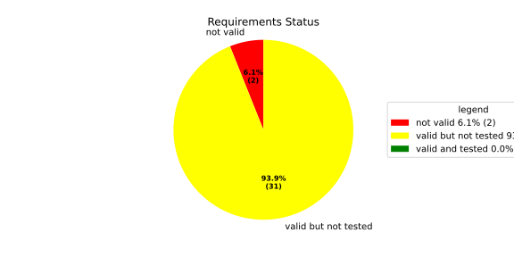
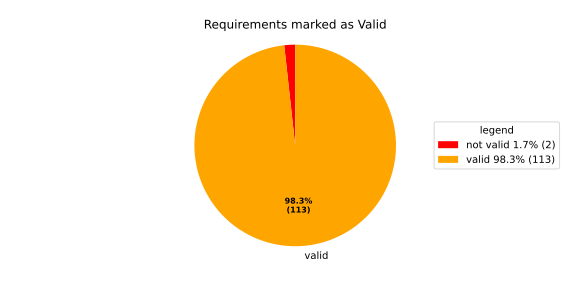
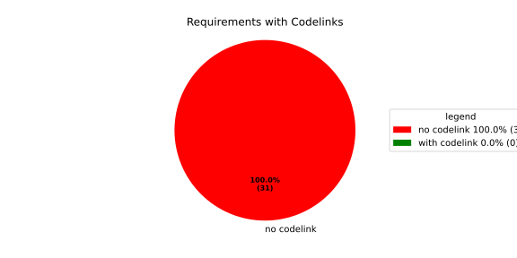

Verification Statistics#
Overview#

In Detail#


No needs passed the filters
Failed Tests
Hint: This table should be empty. Before a PR can be merged all tests have to be successful.
No needs passed the filters
Skipped / Disabled Tests
No needs passed the filters
All passed Tests#
No needs passed the filters
Details About Testcases#
No needs passed the filters
No needs passed the filters
Test Log Files#
tests-report/tests/integration/process_simple_rep_failure/process_simple_rep_failure/test.log
exec ${PAGER:-/usr/bin/less} "$0" || exit 1
Executing tests from //tests/integration/process_simple_rep_failure:process_simple_rep_failure
-----------------------------------------------------------------------------
============================= test session starts ==============================
platform linux -- Python 3.12.12, pytest-9.0.3, pluggy-1.5.0
rootdir: /home/runner/.bazel/sandbox/processwrapper-sandbox/1267/execroot/_main/bazel-out/k8-fastbuild/bin/tests/integration/process_simple_rep_failure/process_simple_rep_failure.runfiles/score_itf+
configfile: pytest.ini
collected 1 item
../score_itf+::test_recovery_action_simple_rep_failure
-------------------------------- live log setup --------------------------------
[2026-06-29 10:24:02.830] [INFO] [score.itf.plugins.docker] Executing custom image bootstrap command: tests/utils/environments/x86_64-linux/x86_64-linux.sh
[2026-06-29 10:24:03.043] [DEBUG] [docker.utils.config] Trying paths: ['/home/runner/.docker/config.json', '/home/runner/.dockercfg']
[2026-06-29 10:24:03.043] [DEBUG] [docker.utils.config] Found file at path: /home/runner/.docker/config.json
[2026-06-29 10:24:03.043] [DEBUG] [docker.auth] Found 'auths' section
[2026-06-29 10:24:03.043] [DEBUG] [docker.auth] Found entry (registry='https://index.docker.io/v1/', username='githubactions')
[2026-06-29 10:24:03.056] [DEBUG] [urllib3.connectionpool] http://localhost:None "GET /version HTTP/1.1" 200 823
[2026-06-29 10:24:03.168] [DEBUG] [urllib3.connectionpool] http://localhost:None "POST /v1.48/containers/create HTTP/1.1" 201 88
[2026-06-29 10:24:03.170] [DEBUG] [urllib3.connectionpool] http://localhost:None "GET /v1.48/containers/3055c97383e2644efcbebd0791bc29f7be3782c0f54bc50a26f108dafac9e004/json HTTP/1.1" 200 None
[2026-06-29 10:24:03.316] [DEBUG] [urllib3.connectionpool] http://localhost:None "POST /v1.48/containers/3055c97383e2644efcbebd0791bc29f7be3782c0f54bc50a26f108dafac9e004/start HTTP/1.1" 204 0
[2026-06-29 10:24:03.317] [DEBUG] [docker.utils.config] Trying paths: ['/home/runner/.docker/config.json', '/home/runner/.dockercfg']
[2026-06-29 10:24:03.317] [DEBUG] [docker.utils.config] Found file at path: /home/runner/.docker/config.json
[2026-06-29 10:24:03.317] [DEBUG] [docker.auth] Found 'auths' section
[2026-06-29 10:24:03.317] [DEBUG] [docker.auth] Found entry (registry='https://index.docker.io/v1/', username='githubactions')
[2026-06-29 10:24:03.326] [DEBUG] [urllib3.connectionpool] http://localhost:None "GET /version HTTP/1.1" 200 823
[2026-06-29 10:24:03.503] [INFO] [tests.utils.testing_utils.setup_test] Test case setup finished
-------------------------------- live log call ---------------------------------
[2026-06-29 10:24:03.587] [INFO] [launch_manager] 2026/06/29 10:24:03.8643585 12865656 000 ECU1 LM LM log debug verbose 1 Launch Manager Started !!!!
[2026-06-29 10:24:03.587] [INFO] [launch_manager] 2026/06/29 10:24:03.8643585 12865658 000 ECU1 LM LM log debug verbose 1 Loading LCM Configurations...
[2026-06-29 10:24:03.587] [INFO] [launch_manager] 2026/06/29 10:24:03.8643585 12865659 000 ECU1 LM LM log debug verbose 1
[2026-06-29 10:24:03.587] [INFO] [launch_manager] ECUCFG_ENV_VAR_ROOTFOLDER set successfully
[2026-06-29 10:24:03.589] [INFO] [launch_manager] 2026/06/29 10:24:03.8643585 12865661 000 ECU1 LM LM log debug verbose 5 FlatBufferParser::getModeGroupPgName: MainPG ( IdentifierHash: 18079021346025578134 )
[2026-06-29 10:24:03.589] [INFO] [launch_manager] 2026/06/29 10:24:03.8643585 12865661 000 ECU1 LM LM log debug verbose 5 FlatBufferParser::getModeGroupPgStateName: MainPG/Startup ( IdentifierHash: 10504605499600661529 )
[2026-06-29 10:24:03.589] [INFO] [launch_manager] 2026/06/29 10:24:03.8643585 12865661 000 ECU1 LM LM log debug verbose 5
[2026-06-29 10:24:03.589] [INFO] [launch_manager] FlatBufferParser::getModeGroupPgStateName: MainPG/run_target_app_does_report_krunning_in_time ( IdentifierHash: 11934981641920773349 )
[2026-06-29 10:24:03.589] [INFO] [launch_manager] 2026/06/29 10:24:03.8643585 12865662 000 ECU1 LM LM log debug verbose 5 FlatBufferParser::getModeGroupPgStateName: MainPG/run_target_app_does_not_report_krunning_in_time ( IdentifierHash: 7672161913816744053 )
[2026-06-29 10:24:03.589] [INFO] [launch_manager] 2026/06/29 10:24:03.8643585 12865662 000 ECU1 LM LM log debug verbose 5 FlatBufferParser::getModeGroupPgStateName: MainPG/Off ( IdentifierHash: 15281793077830264047 )
[2026-06-29 10:24:03.590] [INFO] [launch_manager] 2026/06/29 10:24:03.8643585 12865662 000 ECU1 LM LM log debug verbose 5
[2026-06-29 10:24:03.590] [INFO] [launch_manager] FlatBufferParser::getModeGroupPgStateName: MainPG/fallback_run_target ( IdentifierHash: 4059409696722237352 )
[2026-06-29 10:24:03.590] [INFO] [launch_manager] 2026/06/29 10:24:03.8643585 12865664 000 ECU1 LM LM log debug verbose 4 parseProcessConfigurations: Process index: 0 executable_path_: /tmp/tests/process_simple_rep_failure/control_client_mock
[2026-06-29 10:24:03.590] [INFO] [launch_manager] 2026/06/29 10:24:03.8643585 12865664 000 ECU1 LM LM log debug verbose 3
[2026-06-29 10:24:03.590] [INFO] [launch_manager] Process control_client_mock is Reporting execution state
[2026-06-29 10:24:03.590] [INFO] [launch_manager] 2026/06/29 10:24:03.8643586 12865664 000 ECU1 LM LM log debug verbose 1
[2026-06-29 10:24:03.590] [INFO] [launch_manager] Process is STATE_MANAGEMENT function Cluster Affiliation
[2026-06-29 10:24:03.590] [INFO] [launch_manager] 2026/06/29 10:24:03.8643586 12865665 000 ECU1 LM LM log debug verbose 3 Process control_client_mock is Self terminating
[2026-06-29 10:24:03.591] [INFO] [launch_manager] 2026/06/29 10:24:03.8643586 12865665 000 ECU1 LM LM log debug verbose 4 ParseProcessProcessGroup: id:::pg_name_: MainPG , pg_state_name_: MainPG/Startup
[2026-06-29 10:24:03.591] [INFO] [launch_manager] 2026/06/29 10:24:03.8643586 12865665 000 ECU1 LM LM log debug verbose 4 ParseProcessProcessGroup: id:::pg_name_: MainPG , pg_state_name_: MainPG/run_target_app_does_report_krunning_in_time
[2026-06-29 10:24:03.591] [INFO] [launch_manager] 2026/06/29 10:24:03.8643586 12865666 000 ECU1 LM LM log debug verbose 4 ParseProcessProcessGroup: id:::pg_name_: MainPG , pg_state_name_: MainPG/run_target_app_does_not_report_krunning_in_time
[2026-06-29 10:24:03.591] [INFO] [launch_manager] 2026/06/29 10:24:03.8643586 12865666 000 ECU1 LM LM log debug verbose 4 ParseProcessProcessGroup: id:::pg_name_: MainPG , pg_state_name_: MainPG/fallback_run_target
[2026-06-29 10:24:03.591] [INFO] [launch_manager] 2026/06/29 10:24:03.8643586 12865666 000 ECU1 LM LM log debug verbose 4 parseProcessConfigurations: Process index: 1 executable_path_: /tmp/tests/process_simple_rep_failure/process_simple_reporting
[2026-06-29 10:24:03.591] [INFO] [launch_manager] 2026/06/29 10:24:03.8643586 12865667 000 ECU1 LM LM log debug verbose 3 Process component_does_report_krunning_in_time is Reporting execution state
[2026-06-29 10:24:03.591] [INFO] [launch_manager] 2026/06/29 10:24:03.8643586 12865667 000 ECU1 LM LM log debug verbose 1 Process is NOT associated with any function Cluster Affiliation
[2026-06-29 10:24:03.592] [INFO] [launch_manager] 2026/06/29 10:24:03.8643586 12865667 000 ECU1 LM LM log debug verbose 3 Process component_does_report_krunning_in_time is Self terminating
[2026-06-29 10:24:03.592] [INFO] [launch_manager] 2026/06/29 10:24:03.8643586 12865667 000 ECU1 LM LM log debug verbose 4
[2026-06-29 10:24:03.592] [INFO] [launch_manager] ParseProcessProcessGroup: id:::pg_name_: MainPG , pg_state_name_: MainPG/run_target_app_does_report_krunning_in_time
[2026-06-29 10:24:03.592] [INFO] [launch_manager] 2026/06/29 10:24:03.8643586 12865668 000 ECU1 LM LM log debug verbose 4 parseProcessConfigurations: Process index: 2 executable_path_: /tmp/tests/process_simple_rep_failure/process_simple_reporting
[2026-06-29 10:24:03.592] [INFO] [launch_manager] 2026/06/29 10:24:03.8643586 12865668 000 ECU1 LM LM log debug verbose 3 Process component_does_not_report_krunning_in_time is Reporting execution state
[2026-06-29 10:24:03.592] [INFO] [launch_manager] 2026/06/29 10:24:03.8643586 12865668 000 ECU1 LM LM log debug verbose 1
[2026-06-29 10:24:03.592] [INFO] [launch_manager] Process is NOT associated with any function Cluster Affiliation
[2026-06-29 10:24:03.592] [INFO] [launch_manager] 2026/06/29 10:24:03.8643586 12865669 000 ECU1 LM LM log debug verbose 3 Process component_does_not_report_krunning_in_time is Self terminating
[2026-06-29 10:24:03.593] [INFO] [launch_manager] 2026/06/29 10:24:03.8643586 12865669 000 ECU1 LM LM log debug verbose 4
[2026-06-29 10:24:03.593] [INFO] [launch_manager] ParseProcessProcessGroup: id:::pg_name_: MainPG , pg_state_name_: MainPG/run_target_app_does_not_report_krunning_in_time
[2026-06-29 10:24:03.593] [INFO] [launch_manager] 2026/06/29 10:24:03.8643586 12865671 000 ECU1 LM LM log debug verbose 4 parseProcessConfigurations: Process index: 3 executable_path_: /tmp/tests/process_simple_rep_failure/verification_process
[2026-06-29 10:24:03.593] [INFO] [launch_manager] 2026/06/29 10:24:03.8643586 12865671 000 ECU1 LM LM log debug verbose 3 Process verification_component is NOT Reporting execution state
[2026-06-29 10:24:03.593] [INFO] [launch_manager] 2026/06/29 10:24:03.8643586 12865671 000 ECU1 LM LM log debug verbose 1
[2026-06-29 10:24:03.593] [INFO] [launch_manager] Process is NOT associated with any function Cluster Affiliation
[2026-06-29 10:24:03.593] [INFO] [launch_manager] 2026/06/29 10:24:03.8643586 12865671 000 ECU1 LM LM log debug verbose 3 Process verification_component is Self terminating
[2026-06-29 10:24:03.593] [INFO] [launch_manager] 2026/06/29 10:24:03.8643586 12865672 000 ECU1 LM LM log debug verbose 4 ParseProcessProcessGroup: id:::pg_name_: MainPG , pg_state_name_: MainPG/fallback_run_target
[2026-06-29 10:24:03.593] [INFO] [launch_manager] 2026/06/29 10:24:03.8643586 12865672 000 ECU1 LM LM log debug verbose 3
[2026-06-29 10:24:03.593] [INFO] [launch_manager] Loading SWCL Nr. 0 Succeeded
[2026-06-29 10:24:03.594] [INFO] [launch_manager] 2026/06/29 10:24:03.8643586 12865673 000 ECU1 LM LM log debug verbose 2
[2026-06-29 10:24:03.594] [INFO] [launch_manager] 1 process group(s)
[2026-06-29 10:24:03.594] [INFO] [launch_manager] 2026/06/29 10:24:03.8643586 12865673 000 ECU1 LM LM log debug verbose 3 Creating graph with 4 nodes
[2026-06-29 10:24:03.594] [INFO] [launch_manager] 2026/06/29 10:24:03.8643586 12865674 000 ECU1 LM LM log debug verbose 1 Process groups initialized successfully
[2026-06-29 10:24:03.594] [INFO] [launch_manager] 2026/06/29 10:24:03.8643587 12865674 000 ECU1 LM LM log debug verbose 1 Process Group initialization done
[2026-06-29 10:24:03.594] [INFO] [launch_manager] 2026/06/29 10:24:03.8643587 12865674 000 ECU1 LM LM log debug verbose 3 Creating Safe Process Map with 4 entries
[2026-06-29 10:24:03.594] [INFO] [launch_manager] 2026/06/29 10:24:03.8643587 12865675 000 ECU1 LM LM log debug verbose 2 Creating job queue with capacity 1024
[2026-06-29 10:24:03.594] [INFO] [launch_manager] 2026/06/29 10:24:03.8643587 12865675 000 ECU1 LM LM log debug verbose 1 Creating worker threads...
[2026-06-29 10:24:03.594] [INFO] [launch_manager] 2026/06/29 10:24:03.8643588 12865688 000 ECU1 LM LM log debug verbose 7 Process group index 0 (with name MainPG ) has 4 processes
[2026-06-29 10:24:03.594] [INFO] [launch_manager] 2026/06/29 10:24:03.8643588 12865688 000 ECU1 LM LM log debug verbose 2 Creating process node with id: 0
[2026-06-29 10:24:03.594] [INFO] [launch_manager] 2026/06/29 10:24:03.8643588 12865688 000 ECU1 LM LM log debug verbose 5 Process 0 has 0 start dependencies
[2026-06-29 10:24:03.594] [INFO] [launch_manager] 2026/06/29 10:24:03.8643588 12865688 000 ECU1 LM LM log debug verbose 2 Creating process node with id: 1
[2026-06-29 10:24:03.594] [INFO] [launch_manager] 2026/06/29 10:24:03.8643588 12865689 000 ECU1 LM LM log debug verbose 5
[2026-06-29 10:24:03.594] [INFO] [launch_manager] Process 1 has 0 start dependencies
[2026-06-29 10:24:03.594] [INFO] [launch_manager] 2026/06/29 10:24:03.8643588 12865689 000 ECU1 LM LM log debug verbose 2 Creating process node with id: 2
[2026-06-29 10:24:03.594] [INFO] [launch_manager] 2026/06/29 10:24:03.8643588 12865689 000 ECU1 LM LM log debug verbose 5 Process 2 has 0 start dependencies
[2026-06-29 10:24:03.595] [INFO] [launch_manager] 2026/06/29 10:24:03.8643588 12865689 000 ECU1 LM LM log debug verbose 2
[2026-06-29 10:24:03.595] [INFO] [launch_manager] Creating process node with id: 3
[2026-06-29 10:24:03.595] [INFO] [launch_manager] 2026/06/29 10:24:03.8643588 12865691 000 ECU1 LM LM log debug verbose 5 Process 3 has 0 start dependencies
[2026-06-29 10:24:03.595] [INFO] [launch_manager] 2026/06/29 10:24:03.8643588 12865691 000 ECU1 LM LM log debug verbose 3 Created 4 process nodes
[2026-06-29 10:24:03.595] [INFO] [launch_manager] 2026/06/29 10:24:03.8643588 12865691 000 ECU1 LM LM log debug verbose 2 Creating successor lists for process group MainPG
[2026-06-29 10:24:03.595] [INFO] [launch_manager] 2026/06/29 10:24:03.8643588 12865691 000 ECU1 LM LM log debug verbose 1 Graphs initialized
[2026-06-29 10:24:03.595] [INFO] [launch_manager] 2026/06/29 10:24:03.8643588 12865694 000 ECU1 LM Fcty log info verbose 2 Factory for FlatCfg MachineConfig: Loading of HM Machine Configuration succeeded.
[2026-06-29 10:24:03.595] [INFO] [launch_manager] 2026/06/29 10:24:03.8643589 12865694 000 ECU1 LM Fcty log debug verbose 3 Factory for FlatCfg MachineConfig: Alive Supervision buffer size: 100
[2026-06-29 10:24:03.595] [INFO] [launch_manager] 2026/06/29 10:24:03.8643589 12865695 000 ECU1 LM Fcty log debug verbose 3 Factory for FlatCfg MachineConfig: Monitor buffer size: 512
[2026-06-29 10:24:03.595] [INFO] [launch_manager] 2026/06/29 10:24:03.8643589 12865695 000 ECU1 LM Fcty log debug verbose 4 Factory for FlatCfg MachineConfig: Periodicity: 50000000 ns
[2026-06-29 10:24:03.595] [INFO] [launch_manager] 2026/06/29 10:24:03.8643589 12865695 000 ECU1 LM Fcty log debug verbose 3 Factory for FlatCfg MachineConfig: Configured watchdogs: 0
[2026-06-29 10:24:03.595] [INFO] [launch_manager] 2026/06/29 10:24:03.8643589 12865695 000 ECU1 LM Fcty log warn verbose 2 Factory for FlatCfg MachineConfig: No watchdog configured
[2026-06-29 10:24:03.596] [INFO] [launch_manager] 2026/06/29 10:24:03.8643589 12865696 000 ECU1 LM Fcty log debug verbose 2 Software Cluster Handler starts constructing workers: MainCluster
[2026-06-29 10:24:03.596] [INFO] [launch_manager] 2026/06/29 10:24:03.8643589 12865696 000 ECU1 LM Fcty log debug verbose 3 Factory for FlatCfg AR24-11: Successfully created Process States: control_client_mock
[2026-06-29 10:24:03.596] [INFO] [launch_manager] 2026/06/29 10:24:03.8643589 12865696 000 ECU1 LM Fcty log debug verbose 3 Factory for FlatCfg AR24-11: Number of constructed Process States: 1
[2026-06-29 10:24:03.596] [INFO] [launch_manager] 2026/06/29 10:24:03.8643589 12865698 000 ECU1 LM Fcty log debug verbose 3 Factory for FlatCfg AR24-11: Successfully created Alive interface IPC with path: lifecycle_health_control_client_mock
[2026-06-29 10:24:03.596] [INFO] [launch_manager] 2026/06/29 10:24:03.8643589 12865698 000 ECU1 LM Fcty log debug verbose 3 Factory for FlatCfg AR24-11: Number of constructed Alive interface IPCs: 1
[2026-06-29 10:24:03.596] [INFO] [launch_manager] 2026/06/29 10:24:03.8643589 12865698 000 ECU1 LM Fcty log debug verbose 3 Factory for FlatCfg AR24-11: Successfully created Alive Interface: /lifecycle_health_control_client_mock
[2026-06-29 10:24:03.596] [INFO] [launch_manager] 2026/06/29 10:24:03.8643589 12865698 000 ECU1 LM Fcty log debug verbose 3 Factory for FlatCfg AR24-11: Number of constructed Alive interfaces: 1
[2026-06-29 10:24:03.596] [INFO] [launch_manager] 2026/06/29 10:24:03.8643589 12865698 000 ECU1 LM Fcty log debug verbose 3 Factory for FlatCfg AR24-11: Successfully created supervision checkpoint: control_client_mock_checkpoint
[2026-06-29 10:24:03.596] [INFO] [launch_manager] 2026/06/29 10:24:03.8643589 12865699 000 ECU1 LM Fcty log debug verbose 3 Factory for FlatCfg AR24-11: Number of constructed supervision checkpoints: 1
[2026-06-29 10:24:03.596] [INFO] [launch_manager] 2026/06/29 10:24:03.8643589 12865699 000 ECU1 LM Fcty log debug verbose 3 Factory for FlatCfg AR24-11: Successfully created alive supervision worker object: control_client_mock_alive_supervision
[2026-06-29 10:24:03.596] [INFO] [launch_manager] 2026/06/29 10:24:03.8643589 12865699 000 ECU1 LM Fcty log debug verbose 3 Factory for FlatCfg AR24-11: Number of constructed alive supervisions: 1
[2026-06-29 10:24:03.596] [INFO] [launch_manager] 2026/06/29 10:24:03.8643589 12865699 000 ECU1 LM Fcty log info verbose 2 Phm Daemon: The (configured) periodicity in [ns] is set to: 50000000
[2026-06-29 10:24:03.596] [INFO] [launch_manager] 2026/06/29 10:24:03.8643589 12865700 000 ECU1 LM Fcty log debug verbose 2
[2026-06-29 10:24:03.596] [INFO] [launch_manager] Phm Daemon: The accuracy of the monotonic system clock in [ns] is: 1
[2026-06-29 10:24:03.596] [INFO] [launch_manager] 2026/06/29 10:24:03.8643589 12865700 000 ECU1 LM Fcty log debug verbose 3 AliveMonitor: Initialization took 0 ms
[2026-06-29 10:24:03.596] [INFO] [launch_manager] 2026/06/29 10:24:03.8643589 12865701 000 ECU1 LM LM log info verbose 1 LCM started successfully
[2026-06-29 10:24:03.596] [INFO] [launch_manager] 2026/06/29 10:24:03.8643589 12865702 000 ECU1 LM LM log debug verbose 3 clock() at run(): 32.036000 ms
[2026-06-29 10:24:03.597] [INFO] [launch_manager] 2026/06/29 10:24:03.8643589 12865704 000 ECU1 LM LM log debug verbose 1 =============STARTING MAINPG STARTUP STATE============
[2026-06-29 10:24:03.597] [INFO] [launch_manager] 2026/06/29 10:24:03.8643590 12865704 000 ECU1 LM LM log debug verbose 9 Graph::setState changes from kSuccess to kInTransition for PG 0 ( MainPG )
[2026-06-29 10:24:03.597] [INFO] [launch_manager] 2026/06/29 10:24:03.8643590 12865705 000 ECU1 LM LM log debug verbose 2 Stop Dependencies: 0
[2026-06-29 10:24:03.597] [INFO] [launch_manager] 2026/06/29 10:24:03.8643590 12865705 000 ECU1 LM LM log debug verbose 2 Stop Dependencies: 0
[2026-06-29 10:24:03.597] [INFO] [launch_manager] 2026/06/29 10:24:03.8643590 12865705 000 ECU1 LM LM log debug verbose 2 Stop Dependencies: 0
[2026-06-29 10:24:03.597] [INFO] [launch_manager] 2026/06/29 10:24:03.8643590 12865705 000 ECU1 LM LM log debug verbose 2 Stop Dependencies: 0
[2026-06-29 10:24:03.597] [INFO] [launch_manager] 2026/06/29 10:24:03.8643590 12865706 000 ECU1 LM LM log debug verbose 2 Start Dependencies: 0
[2026-06-29 10:24:03.597] [INFO] [launch_manager] 2026/06/29 10:24:03.8643590 12865706 000 ECU1 LM LM log debug verbose 2 Start Dependencies: 0
[2026-06-29 10:24:03.597] [INFO] [launch_manager] 2026/06/29 10:24:03.8643590 12865706 000 ECU1 LM LM log debug verbose 2 Start Dependencies: 0
[2026-06-29 10:24:03.597] [INFO] [launch_manager] 2026/06/29 10:24:03.8643590 12865706 000 ECU1 LM LM log debug verbose 2 Start Dependencies: 0
[2026-06-29 10:24:03.597] [INFO] [launch_manager] 2026/06/29 10:24:03.8643590 12865707 000 ECU1 LM LM log debug verbose 6 Starting process 0 ( control_client_mock ) from executable /tmp/tests/process_simple_rep_failure/control_client_mock
[2026-06-29 10:24:03.597] [INFO] [launch_manager] 2026/06/29 10:24:03.8643590 12865708 000 ECU1 LM LM log debug verbose 3 Initialize the control client for control_client_mock process
[2026-06-29 10:24:03.598] [INFO] [launch_manager] 2026/06/29 10:24:03.8643590 12865708 000 ECU1 LM LM log debug verbose 1
[2026-06-29 10:24:03.598] [INFO] [launch_manager] ControlClientChannel initialized
[2026-06-29 10:24:03.598] [INFO] [launch_manager] 2026/06/29 10:24:03.8643590 12865714 000 ECU1 LM LM log debug verbose 4
[2026-06-29 10:24:03.598] [INFO] [launch_manager] startProcess pid 68 received for process: control_client_mock
[2026-06-29 10:24:03.598] [INFO] [launch_manager] 2026/06/29 10:24:03.8643591 12865715 000 ECU1 LM LM log debug verbose 1 ControlClientChannel obtained from sync.
[2026-06-29 10:24:03.598] [INFO] [launch_manager] [==========] Running 1 test from 1 test suite.
[2026-06-29 10:24:03.598] [INFO] [launch_manager] [----------] Global test environment set-up.
[2026-06-29 10:24:03.598] [INFO] [launch_manager] [----------] 1 test from RecoveryActionSimpleRepFailure
[2026-06-29 10:24:03.598] [INFO] [launch_manager] [ RUN ] RecoveryActionSimpleRepFailure.ControlClientMock
[2026-06-29 10:24:03.598] [INFO] [launch_manager] [ STEP ] Report running from ControlClientMock
[2026-06-29 10:24:03.598] [INFO] [launch_manager] [ END STEP ] Report running from ControlClientMock
[2026-06-29 10:24:03.598] [INFO] [launch_manager] [ STEP ] Activate RunTarget run_target_app_does_report_krunning_in_time
[2026-06-29 10:24:03.598] [INFO] [launch_manager] 2026/06/29 10:24:03.8643596 12865769 000 ECU1 LM LM log debug verbose 1 Request sent. Waiting for acknowledgment...
[2026-06-29 10:24:03.599] [INFO] [launch_manager] 2026/06/29 10:24:03.8643596 12865771 000 ECU1 LM LM log debug verbose 8 ProcessGroupManager::ControlClientHandler: got request kSetStateRequest ( 16 ) re state MainPG/run_target_app_does_report_krunning_in_time of PG MainPG
[2026-06-29 10:24:03.599] [INFO] [launch_manager] 2026/06/29 10:24:03.8643596 12865772 000 ECU1 LM LM log debug verbose 6 Pending state for process group MainPG changed from to MainPG/run_target_app_does_report_krunning_in_time
[2026-06-29 10:24:03.599] [INFO] [launch_manager] 2026/06/29 10:24:03.8643596 12865772 000 ECU1 LM LM log debug verbose 9
[2026-06-29 10:24:03.599] [INFO] [launch_manager] Graph::setState changes from kInTransition to kCancelled for PG 0 ( MainPG )
[2026-06-29 10:24:03.599] [INFO] [launch_manager] 2026/06/29 10:24:03.8643596 12865773 000 ECU1 LM LM log debug verbose 1 Control Client handler nudged
[2026-06-29 10:24:03.599] [INFO] [launch_manager] 2026/06/29 10:24:03.8643596 12865773 000 ECU1 LM LM log debug verbose 1 Request acknowledged.
[2026-06-29 10:24:03.599] [INFO] [launch_manager] 2026/06/29 10:24:03.8643596 12865774 000 ECU1 LM LM log debug verbose 1
[2026-06-29 10:24:03.599] [INFO] [launch_manager] Request acknowledged.
[2026-06-29 10:24:03.599] [INFO] [launch_manager] 2026/06/29 10:24:03.8643597 12865777 000 ECU1 LM LM log debug verbose 8
[2026-06-29 10:24:03.599] [INFO] [launch_manager] Got kRunning for pid 68 ( control_client_mock ) process 0 of group MainPG
[2026-06-29 10:24:03.599] [INFO] [launch_manager] 2026/06/29 10:24:03.8643597 12865779 000 ECU1 LM LM log debug verbose 7
[2026-06-29 10:24:03.599] [INFO] [launch_manager] startProcess for MainPG process 0 ( control_client_mock ) done
[2026-06-29 10:24:03.600] [INFO] [launch_manager] 2026/06/29 10:24:03.8643597 12865781 000 ECU1 LM LM log debug verbose 1
[2026-06-29 10:24:03.600] [INFO] [launch_manager] Control Client handler nudged
[2026-06-29 10:24:03.600] [INFO] [launch_manager] 2026/06/29 10:24:03.8643597 12865782 000 ECU1 LM LM log fatal verbose 3
[2026-06-29 10:24:03.600] [INFO] [launch_manager] clock() at failed initial state transition: 33.641000 ms
[2026-06-29 10:24:03.600] [INFO] [launch_manager] 2026/06/29 10:24:03.8643598 12865784 000 ECU1 LM LM log debug verbose 9
[2026-06-29 10:24:03.600] [INFO] [launch_manager] Graph::setState changes from kCancelled to kUndefinedState for PG 0 ( MainPG )
[2026-06-29 10:24:03.600] [INFO] [launch_manager] 2026/06/29 10:24:03.8643598 12865786 000 ECU1 LM LM log debug verbose 1
[2026-06-29 10:24:03.600] [INFO] [launch_manager] Control Client handler nudged
[2026-06-29 10:24:03.600] [INFO] [launch_manager] 2026/06/29 10:24:03.8643599 12865794 000 ECU1 LM LM log debug verbose 6 Pending state for process group MainPG changed from MainPG/run_target_app_does_report_krunning_in_time to
[2026-06-29 10:24:03.600] [INFO] [launch_manager] 2026/06/29 10:24:03.8643599 12865796 000 ECU1 LM LM log debug verbose 4
[2026-06-29 10:24:03.600] [INFO] [launch_manager] Start transition to MainPG/run_target_app_does_report_krunning_in_time for PG MainPG
[2026-06-29 10:24:03.600] [INFO] [launch_manager] 2026/06/29 10:24:03.8643599 12865798 000 ECU1 LM LM log debug verbose 9
[2026-06-29 10:24:03.601] [INFO] [launch_manager] Graph::setState changes from kUndefinedState to kInTransition for PG 0 ( MainPG )
[2026-06-29 10:24:03.601] [INFO] [launch_manager] 2026/06/29 10:24:03.8643599 12865801 000 ECU1 LM LM log debug verbose 2
[2026-06-29 10:24:03.601] [INFO] [launch_manager] Stop Dependencies: 0
[2026-06-29 10:24:03.601] [INFO] [launch_manager] 2026/06/29 10:24:03.8643599 12865803 000 ECU1 LM LM log debug verbose 2
[2026-06-29 10:24:03.601] [INFO] [launch_manager] Stop Dependencies: 0
[2026-06-29 10:24:03.601] [INFO] [launch_manager] 2026/06/29 10:24:03.8643600 12865806 000 ECU1 LM LM log debug verbose 2
[2026-06-29 10:24:03.601] [INFO] [launch_manager] Stop Dependencies: 0
[2026-06-29 10:24:03.601] [INFO] [launch_manager] 2026/06/29 10:24:03.8643600 12865808 000 ECU1 LM LM log debug verbose 2
[2026-06-29 10:24:03.601] [INFO] [launch_manager] Stop Dependencies: 0
[2026-06-29 10:24:03.601] [INFO] [launch_manager] 2026/06/29 10:24:03.8643600 12865810 000 ECU1 LM LM log debug verbose 2
[2026-06-29 10:24:03.601] [INFO] [launch_manager] Start Dependencies: 0
[2026-06-29 10:24:03.602] [INFO] [launch_manager] 2026/06/29 10:24:03.8643600 12865812 000 ECU1 LM LM log debug verbose 2
[2026-06-29 10:24:03.602] [INFO] [launch_manager] Start Dependencies: 0
[2026-06-29 10:24:03.602] [INFO] [launch_manager] 2026/06/29 10:24:03.8643600 12865814 000 ECU1 LM LM log debug verbose 2 Start Dependencies: 0
[2026-06-29 10:24:03.602] [INFO] [launch_manager] 2026/06/29 10:24:03.8643600 12865814 000 ECU1 LM LM log debug verbose 2 Start Dependencies: 0
[2026-06-29 10:24:03.602] [INFO] [launch_manager] 2026/06/29 10:24:03.8643601 12865817 000 ECU1 LM LM log debug verbose 6 Starting process 1 ( component_does_report_krunning_in_time ) from executable /tmp/tests/process_simple_rep_failure/process_simple_reporting
[2026-06-29 10:24:03.602] [INFO] [launch_manager] 2026/06/29 10:24:03.8643601 12865824 000 ECU1 LM LM log debug verbose 4
[2026-06-29 10:24:03.602] [INFO] [launch_manager] startProcess pid 70 received for process: component_does_report_krunning_in_time
[2026-06-29 10:24:03.604] [INFO] [launch_manager] [==========] Running 1 test from 1 test suite.
[2026-06-29 10:24:03.604] [INFO] [launch_manager] [----------] Global test environment set-up.
[2026-06-29 10:24:03.604] [INFO] [launch_manager] [----------] 1 test from ProcessSimpleRepFailure
[2026-06-29 10:24:03.604] [INFO] [launch_manager] [ RUN ] ProcessSimpleRepFailure.ProcessSimpleReporting
[2026-06-29 10:24:03.604] [INFO] [launch_manager] [ STEP ] Check args
[2026-06-29 10:24:03.604] [INFO] [launch_manager] [ END STEP ] Check args
[2026-06-29 10:24:03.604] [INFO] [launch_manager] [ STEP ] Report running from ProcessSimpleReporting
[2026-06-29 10:24:03.632] [DEBUG] [tests.utils.testing_utils.run_until_file_deployed] Waiting for /tmp/tests/test_end
[2026-06-29 10:24:03.640] [INFO] [launch_manager] 2026/06/29 10:24:03.8643639 12866202 000 ECU1 LM Sprv log debug verbose 6 Process with Id control_client_mock changed state PG MainPG/Startup PS 1
[2026-06-29 10:24:03.640] [INFO] [launch_manager] 2026/06/29 10:24:03.8643639 12866203 000 ECU1 LM Sprv log debug verbose 6 Process with Id control_client_mock changed state PG MainPG/Startup PS 2
[2026-06-29 10:24:03.640] [INFO] [launch_manager] 2026/06/29 10:24:03.8643639 12866203 000 ECU1 LM Sprv log debug verbose 6 Process with Id component_does_report_krunning_in_time changed state PG MainPG/run_target_app_does_report_krunning_in_time PS 1
[2026-06-29 10:24:03.640] [INFO] [launch_manager] 2026/06/29 10:24:03.8643639 12866204 000 ECU1 LM Sprv log info verbose 3 Alive Supervision ( control_client_mock_alive_supervision ) switched to OK.
[2026-06-29 10:24:04.106] [INFO] [launch_manager] [ END STEP ] Report running from ProcessSimpleReporting
[2026-06-29 10:24:04.106] [INFO] [launch_manager] [ OK ] ProcessSimpleRepFailure.ProcessSimpleReporting (502 ms)
[2026-06-29 10:24:04.106] [INFO] [launch_manager] [----------] 1 test from ProcessSimpleRepFailure (502 ms total)
[2026-06-29 10:24:04.106] [INFO] [launch_manager] [----------] Global test environment tear-down
[2026-06-29 10:24:04.106] [INFO] [launch_manager] 2026/06/29 10:24:04.8644106 12870868 000 ECU1 LM LM log debug verbose 8 Got kRunning for pid 70 ( component_does_report_krunning_in_time ) process 1 of group MainPG
[2026-06-29 10:24:04.107] [INFO] [launch_manager] 2026/06/29 10:24:04.8644106 12870869 000 ECU1 LM LM log debug verbose 7 startProcess for MainPG process 1 ( component_does_report_krunning_in_time ) done
[2026-06-29 10:24:04.107] [INFO] [launch_manager] 2026/06/29 10:24:04.8644106 12870869 000 ECU1 LM LM log debug verbose 9 Graph::setState changes from kInTransition to kSuccess for PG 0 ( MainPG )
[2026-06-29 10:24:04.107] [INFO] [launch_manager] 2026/06/29 10:24:04.8644106 12870870 000 ECU1 LM LM log info verbose 7 Completed the request for PG MainPG to State MainPG/run_target_app_does_report_krunning_in_time in 509 ms
[2026-06-29 10:24:04.107] [INFO] [launch_manager] 2026/06/29 10:24:04.8644106 12870870 000 ECU1 LM LM log debug verbose 1 Control Client handler nudged
[2026-06-29 10:24:04.107] [INFO] [launch_manager] [==========] 1 test from 1 test suite ran. (502 ms total)
[2026-06-29 10:24:04.107] [INFO] [launch_manager] [ PASSED ] 1 test.
[2026-06-29 10:24:04.107] [INFO] [launch_manager] 2026/06/29 10:24:04.8644107 12870875 000 ECU1 LM LM log debug verbose 12 Child process 1 of MainPG pid 70 ( component_does_report_krunning_in_time ) for node True terminated with status 0
[2026-06-29 10:24:04.107] [INFO] [launch_manager] 2026/06/29 10:24:04.8644107 12870875 000 ECU1 LM LM log debug verbose 8 ProcessGroupManager::ControlClientHandler: Sending kSetStateSuccess ( 20 ) re state MainPG/run_target_app_does_report_krunning_in_time of PG MainPG
[2026-06-29 10:24:04.107] [INFO] [launch_manager] 2026/06/29 10:24:04.8644107 12870876 000 ECU1 LM LM log debug verbose 1 Response sent.
[2026-06-29 10:24:04.139] [INFO] [launch_manager] 2026/06/29 10:24:04.8644139 12871202 000 ECU1 LM Sprv log debug verbose 6 Process with Id component_does_report_krunning_in_time changed state PG MainPG/run_target_app_does_report_krunning_in_time PS 2
[2026-06-29 10:24:04.140] [INFO] [launch_manager] 2026/06/29 10:24:04.8644139 12871203 000 ECU1 LM Sprv log debug verbose 6 Process with Id component_does_report_krunning_in_time changed state PG MainPG/run_target_app_does_report_krunning_in_time PS 4
[2026-06-29 10:24:04.173] [DEBUG] [tests.utils.testing_utils.run_until_file_deployed] Waiting for /tmp/tests/test_end
[2026-06-29 10:24:04.194] [INFO] [launch_manager] 2026/06/29 10:24:04.8644194 12871746 000 ECU1 LM LM log debug verbose 1 Response retrieved.
[2026-06-29 10:24:04.194] [INFO] [launch_manager] [ END STEP ] Activate RunTarget run_target_app_does_report_krunning_in_time
[2026-06-29 10:24:04.727] [DEBUG] [tests.utils.testing_utils.run_until_file_deployed] Waiting for /tmp/tests/test_end
[2026-06-29 10:24:05.194] [INFO] [launch_manager] [ STEP ] Verify fallback run target has not been activated
[2026-06-29 10:24:05.194] [INFO] [launch_manager] [ END STEP ] Verify fallback run target has not been activated
[2026-06-29 10:24:05.194] [INFO] [launch_manager] [ STEP ] Activate RunTarget run_target_app_does_not_report_krunning_in_time
[2026-06-29 10:24:05.194] [INFO] [launch_manager] 2026/06/29 10:24:05.8645194 12881749 000 ECU1 LM LM log debug verbose 1 Request sent. Waiting for acknowledgment...
[2026-06-29 10:24:05.195] [INFO] [launch_manager] 2026/06/29 10:24:05.8645195 12881758 000 ECU1 LM LM log debug verbose 8 ProcessGroupManager::ControlClientHandler: got request kSetStateRequest ( 16 ) re state MainPG/run_target_app_does_not_report_krunning_in_time of PG MainPG
[2026-06-29 10:24:05.195] [INFO] [launch_manager] 2026/06/29 10:24:05.8645195 12881758 000 ECU1 LM LM log debug verbose 6 Pending state for process group MainPG changed from to MainPG/run_target_app_does_not_report_krunning_in_time
[2026-06-29 10:24:05.195] [INFO] [launch_manager] 2026/06/29 10:24:05.8645195 12881758 000 ECU1 LM LM log debug verbose 1 Request acknowledged.
[2026-06-29 10:24:05.195] [INFO] [launch_manager] 2026/06/29 10:24:05.8645195 12881758 000 ECU1 LM LM log debug verbose 6 Pending state for process group MainPG changed from MainPG/run_target_app_does_not_report_krunning_in_time to
[2026-06-29 10:24:05.195] [INFO] [launch_manager] 2026/06/29 10:24:05.8645195 12881759 000 ECU1 LM LM log debug verbose 4 Start transition to MainPG/run_target_app_does_not_report_krunning_in_time for PG MainPG
[2026-06-29 10:24:05.196] [INFO] [launch_manager] 2026/06/29 10:24:05.8645195 12881759 000 ECU1 LM LM log debug verbose 9 Graph::setState changes from kSuccess to kInTransition for PG 0 ( MainPG )
[2026-06-29 10:24:05.196] [INFO] [launch_manager] 2026/06/29 10:24:05.8645195 12881759 000 ECU1 LM LM log debug verbose 2 Stop Dependencies: 0
[2026-06-29 10:24:05.196] [INFO] [launch_manager] 2026/06/29 10:24:05.8645195 12881759 000 ECU1 LM LM log debug verbose 2 Stop Dependencies: 0
[2026-06-29 10:24:05.196] [INFO] [launch_manager] 2026/06/29 10:24:05.8645195 12881760 000 ECU1 LM LM log debug verbose 2 Stop Dependencies: 0
[2026-06-29 10:24:05.196] [INFO] [launch_manager] 2026/06/29 10:24:05.8645195 12881760 000 ECU1 LM LM log debug verbose 2 Stop Dependencies: 0
[2026-06-29 10:24:05.196] [INFO] [launch_manager] 2026/06/29 10:24:05.8645195 12881760 000 ECU1 LM LM log debug verbose 2 Start Dependencies: 0
[2026-06-29 10:24:05.196] [INFO] [launch_manager] 2026/06/29 10:24:05.8645195 12881760 000 ECU1 LM LM log debug verbose 2 Start Dependencies: 0
[2026-06-29 10:24:05.196] [INFO] [launch_manager] 2026/06/29 10:24:05.8645195 12881761 000 ECU1 LM LM log debug verbose 2 Start Dependencies: 0
[2026-06-29 10:24:05.196] [INFO] [launch_manager] 2026/06/29 10:24:05.8645195 12881761 000 ECU1 LM LM log debug verbose 2 Start Dependencies: 0
[2026-06-29 10:24:05.196] [INFO] [launch_manager] 2026/06/29 10:24:05.8645195 12881761 000 ECU1 LM LM log debug verbose 1 Request acknowledged.
[2026-06-29 10:24:05.196] [INFO] [launch_manager] 2026/06/29 10:24:05.8645195 12881762 000 ECU1 LM LM log debug verbose 6 Starting process 2 ( component_does_not_report_krunning_in_time ) from executable /tmp/tests/process_simple_rep_failure/process_simple_reporting
[2026-06-29 10:24:05.196] [INFO] [launch_manager] 2026/06/29 10:24:05.8645196 12881768 000 ECU1 LM LM log debug verbose 4 startProcess pid 89 received for process: component_does_not_report_krunning_in_time
[2026-06-29 10:24:05.198] [INFO] [launch_manager] [==========] Running 1 test from 1 test suite.
[2026-06-29 10:24:05.198] [INFO] [launch_manager] [----------] Global test environment set-up.
[2026-06-29 10:24:05.198] [INFO] [launch_manager] [----------] 1 test from ProcessSimpleRepFailure
[2026-06-29 10:24:05.198] [INFO] [launch_manager] [ RUN ] ProcessSimpleRepFailure.ProcessSimpleReporting
[2026-06-29 10:24:05.198] [INFO] [launch_manager] [ STEP ] Check args
[2026-06-29 10:24:05.198] [INFO] [launch_manager] [ END STEP ] Check args
[2026-06-29 10:24:05.198] [INFO] [launch_manager] [ STEP ] Report running from ProcessSimpleReporting
[2026-06-29 10:24:05.240] [INFO] [launch_manager] 2026/06/29 10:24:05.8645239 12882203 000 ECU1 LM Sprv log debug verbose 6
[2026-06-29 10:24:05.240] [INFO] [launch_manager] Process with Id component_does_not_report_krunning_in_time changed state PG MainPG/run_target_app_does_not_report_krunning_in_time PS 1
[2026-06-29 10:24:05.270] [DEBUG] [tests.utils.testing_utils.run_until_file_deployed] Waiting for /tmp/tests/test_end
[2026-06-29 10:24:05.811] [DEBUG] [tests.utils.testing_utils.run_until_file_deployed] Waiting for /tmp/tests/test_end
[2026-06-29 10:24:06.231] [INFO] [launch_manager] 2026/06/29 10:24:06.8646230 12892112 000 ECU1 LM LM log error verbose 1 Semaphore timedWait or post failed: Unable to wait or post on semaphores within the specified timeout.
[2026-06-29 10:24:06.231] [INFO] [launch_manager] 2026/06/29 10:24:06.8646230 12892112 000 ECU1 LM LM log warn verbose 5 Got kRunning timeout for process 2 ( component_does_not_report_krunning_in_time )
[2026-06-29 10:24:06.231] [INFO] [launch_manager] 2026/06/29 10:24:06.8646230 12892112 000 ECU1 LM LM log debug verbose 5 terminating process 2 ( component_does_not_report_krunning_in_time )
[2026-06-29 10:24:06.231] [INFO] [launch_manager] 2026/06/29 10:24:06.8646230 12892113 000 ECU1 LM LM log debug verbose 9 Requesting termination of process 2 of MainPG pid 89 ( component_does_not_report_krunning_in_time )
[2026-06-29 10:24:06.231] [INFO] [launch_manager] 2026/06/29 10:24:06.8646230 12892113 000 ECU1 LM LM log debug verbose 2 Request termination received for 89
[2026-06-29 10:24:06.240] [INFO] [launch_manager] 2026/06/29 10:24:06.8646239 12892202 000 ECU1 LM Sprv log debug verbose 6 Process with Id component_does_not_report_krunning_in_time changed state PG MainPG/run_target_app_does_not_report_krunning_in_time PS 3
[2026-06-29 10:24:06.356] [DEBUG] [tests.utils.testing_utils.run_until_file_deployed] Waiting for /tmp/tests/test_end
[2026-06-29 10:24:06.898] [DEBUG] [tests.utils.testing_utils.run_until_file_deployed] Waiting for /tmp/tests/test_end
[2026-06-29 10:24:07.273] [INFO] [launch_manager] 2026/06/29 10:24:07.8647273 12902539 000 ECU1 LM LM log warn verbose 5 Process 2 ( component_does_not_report_krunning_in_time ) did not respond to SIGTERM, sending SIGKILL
[2026-06-29 10:24:07.274] [INFO] [launch_manager] 2026/06/29 10:24:07.8647273 12902539 000 ECU1 LM LM log debug verbose 2 Forced termination received for pid 89
[2026-06-29 10:24:07.274] [INFO] [launch_manager] 2026/06/29 10:24:07.8647273 12902544 000 ECU1 LM LM log debug verbose 12 Child process 2 of MainPG pid 89 ( component_does_not_report_krunning_in_time ) for node True terminated with status 9
[2026-06-29 10:24:07.274] [INFO] [launch_manager] 2026/06/29 10:24:07.8647274 12902545 000 ECU1 LM LM log warn verbose 7 unexpected termination of process 2 pid 89 ( component_does_not_report_krunning_in_time )
[2026-06-29 10:24:07.274] [INFO] [launch_manager] 2026/06/29 10:24:07.8647274 12902545 000 ECU1 LM LM log debug verbose 9 Graph::setState changes from kInTransition to kAborting for PG 0 ( MainPG )
[2026-06-29 10:24:07.275] [INFO] [launch_manager] 2026/06/29 10:24:07.8647275 12902560 000 ECU1 LM LM log debug verbose 7 terminateProcess for MainPG process 2 ( component_does_not_report_krunning_in_time ) done
[2026-06-29 10:24:07.275] [INFO] [launch_manager] 2026/06/29 10:24:07.8647275 12902561 000 ECU1 LM LM log debug verbose 7 startProcess for MainPG process 2 ( component_does_not_report_krunning_in_time ) done
[2026-06-29 10:24:07.276] [INFO] [launch_manager] 2026/06/29 10:24:07.8647275 12902562 000 ECU1 LM LM log debug verbose 9 Graph::setState changes from kAborting to kUndefinedState for PG 0 ( MainPG )
[2026-06-29 10:24:07.276] [INFO] [launch_manager] 2026/06/29 10:24:07.8647275 12902562 000 ECU1 LM LM log debug verbose 1 Control Client handler nudged
[2026-06-29 10:24:07.276] [INFO] [launch_manager] 2026/06/29 10:24:07.8647275 12902564 000 ECU1 LM LM log debug verbose 8 ProcessGroupManager::ControlClientHandler: Sending kFailedUnexpectedTerminationOnEnter ( 23 ) re state MainPG/run_target_app_does_not_report_krunning_in_time of PG MainPG
[2026-06-29 10:24:07.276] [INFO] [launch_manager] 2026/06/29 10:24:07.8647275 12902564 000 ECU1 LM LM log debug verbose 1 Response sent.
[2026-06-29 10:24:07.276] [INFO] [launch_manager] 2026/06/29 10:24:07.8647276 12902564 000 ECU1 LM LM log warn verbose 3
[2026-06-29 10:24:07.276] [INFO] [launch_manager] Problem discovered in PG MainPG Activating Recovery state.
[2026-06-29 10:24:07.276] [INFO] [launch_manager] 2026/06/29 10:24:07.8647276 12902565 000 ECU1 LM LM log debug verbose 9 Graph::setState changes from kUndefinedState to kInTransition for PG 0 ( MainPG )
[2026-06-29 10:24:07.276] [INFO] [launch_manager] 2026/06/29 10:24:07.8647276 12902565 000 ECU1 LM LM log debug verbose 2 Stop Dependencies: 0
[2026-06-29 10:24:07.276] [INFO] [launch_manager] 2026/06/29 10:24:07.8647276 12902565 000 ECU1 LM LM log debug verbose 2 Stop Dependencies: 0
[2026-06-29 10:24:07.276] [INFO] [launch_manager] 2026/06/29 10:24:07.8647276 12902565 000 ECU1 LM LM log debug verbose 2 Stop Dependencies: 0
[2026-06-29 10:24:07.276] [INFO] [launch_manager] 2026/06/29 10:24:07.8647276 12902566 000 ECU1 LM LM log debug verbose 2 Stop Dependencies: 0
[2026-06-29 10:24:07.276] [INFO] [launch_manager] 2026/06/29 10:24:07.8647276 12902566 000 ECU1 LM LM log debug verbose 2 Start Dependencies: 0
[2026-06-29 10:24:07.276] [INFO] [launch_manager] 2026/06/29 10:24:07.8647276 12902566 000 ECU1 LM LM log debug verbose 2 Start Dependencies: 0
[2026-06-29 10:24:07.276] [INFO] [launch_manager] 2026/06/29 10:24:07.8647276 12902566 000 ECU1 LM LM log debug verbose 2 Start Dependencies: 0
[2026-06-29 10:24:07.276] [INFO] [launch_manager] 2026/06/29 10:24:07.8647276 12902566 000 ECU1 LM LM log debug verbose 2 Start Dependencies: 0
[2026-06-29 10:24:07.277] [INFO] [launch_manager] 2026/06/29 10:24:07.8647276 12902568 000 ECU1 LM LM log debug verbose 6 Starting process 3 ( verification_component ) from executable /tmp/tests/process_simple_rep_failure/verification_process
[2026-06-29 10:24:07.277] [INFO] [launch_manager] 2026/06/29 10:24:07.8647276 12902573 000 ECU1 LM LM log debug verbose 4 startProcess pid 114 received for process: verification_component
[2026-06-29 10:24:07.277] [INFO] [launch_manager] 2026/06/29 10:24:07.8647276 12902573 000 ECU1 LM LM log debug verbose 8 Considered kRunning for Non Reporting Process pid 114 ( verification_component ) process 3 of group MainPG
[2026-06-29 10:24:07.277] [INFO] [launch_manager] 2026/06/29 10:24:07.8647276 12902574 000 ECU1 LM LM log debug verbose 7 startProcess for MainPG process 3 ( verification_component ) done
[2026-06-29 10:24:07.277] [INFO] [launch_manager] 2026/06/29 10:24:07.8647276 12902574 000 ECU1 LM LM log debug verbose 9 Graph::setState changes from kInTransition to kSuccess for PG 0 ( MainPG )
[2026-06-29 10:24:07.277] [INFO] [launch_manager] 2026/06/29 10:24:07.8647277 12902574 000 ECU1 LM LM log info verbose 7 Completed the request for PG MainPG to State MainPG/fallback_run_target in 0 ms
[2026-06-29 10:24:07.277] [INFO] [launch_manager] 2026/06/29 10:24:07.8647277 12902575 000 ECU1 LM LM log debug verbose 1 Control Client handler nudged
[2026-06-29 10:24:07.278] [INFO] [launch_manager] 2026/06/29 10:24:07.8647278 12902588 000 ECU1 LM LM log debug verbose 8 ProcessGroupManager::ControlClientHandler: Sending kSetStateSuccess ( 20 ) re state MainPG/fallback_run_target of PG MainPG
[2026-06-29 10:24:07.278] [INFO] [launch_manager] 2026/06/29 10:24:07.8647278 12902588 000 ECU1 LM LM log debug verbose 1 Failed to send response: response is not empty.
[2026-06-29 10:24:07.279] [INFO] [launch_manager] 2026/06/29 10:24:07.8647278 12902588 000 ECU1 LM LM log debug verbose 1 Control Client handler nudged
[2026-06-29 10:24:07.279] [INFO] [launch_manager] 2026/06/29 10:24:07.8647278 12902589 000 ECU1 LM LM log debug verbose 8 ProcessGroupManager::ControlClientHandler: Sending kSetStateSuccess ( 20 ) re state MainPG/fallback_run_target of PG MainPG
[2026-06-29 10:24:07.279] [INFO] [launch_manager] 2026/06/29 10:24:07.8647278 12902589 000 ECU1 LM LM log debug verbose 1 Failed to send response: response is not empty.
[2026-06-29 10:24:07.279] [INFO] [launch_manager] 2026/06/29 10:24:07.8647278 12902590 000 ECU1 LM LM log debug verbose 1 Control Client handler nudged
[2026-06-29 10:24:07.279] [INFO] [launch_manager] 2026/06/29 10:24:07.8647278 12902591 000 ECU1 LM LM log debug verbose 8 ProcessGroupManager::ControlClientHandler: Sending kSetStateSuccess ( 20 ) re state MainPG/fallback_run_target of PG MainPG
[2026-06-29 10:24:07.279] [INFO] [launch_manager] 2026/06/29 10:24:07.8647278 12902592 000 ECU1 LM LM log debug verbose 1 Failed to send response: response is not empty.
[2026-06-29 10:24:07.279] [INFO] [launch_manager] 2026/06/29 10:24:07.8647278 12902592 000 ECU1 LM LM log debug verbose 1 Control Client handler nudged
[2026-06-29 10:24:07.279] [INFO] [launch_manager] 2026/06/29 10:24:07.8647278 12902592 000 ECU1 LM LM log debug verbose 12 Child process 3 of MainPG pid 114 ( verification_component ) for node True terminated with status 0
[2026-06-29 10:24:07.279] [INFO] [launch_manager] 2026/06/29 10:24:07.8647278 12902593 000 ECU1 LM LM log debug verbose 8 ProcessGroupManager::ControlClientHandler: Sending kSetStateSuccess ( 20 ) re state MainPG/fallback_run_target of PG MainPG
[2026-06-29 10:24:07.279] [INFO] [launch_manager] 2026/06/29 10:24:07.8647278 12902593 000 ECU1 LM LM log debug verbose 1 Failed to send response: response is not empty.
[2026-06-29 10:24:07.279] [INFO] [launch_manager] 2026/06/29 10:24:07.8647278 12902593 000 ECU1 LM LM log debug verbose 1 Control Client handler nudged
[2026-06-29 10:24:07.280] [INFO] [launch_manager] 2026/06/29 10:24:07.8647278 12902594 000 ECU1 LM LM log debug verbose 8 ProcessGroupManager::ControlClientHandler: Sending kSetStateSuccess ( 20 ) re state MainPG/fallback_run_target of PG MainPG
[2026-06-29 10:24:07.280] [INFO] [launch_manager] 2026/06/29 10:24:07.8647278 12902594 000 ECU1 LM LM log debug verbose 1 Failed to send response: response is not empty.
[2026-06-29 10:24:07.280] [INFO] [launch_manager] 2026/06/29 10:24:07.8647278 12902594 000 ECU1 LM LM log debug verbose 1 Control Client handler nudged
[2026-06-29 10:24:07.280] [INFO] [launch_manager] 2026/06/29 10:24:07.8647279 12902594 000 ECU1 LM LM log debug verbose 8 ProcessGroupManager::ControlClientHandler: Sending kSetStateSuccess ( 20 ) re state MainPG/fallback_run_target of PG MainPG
[2026-06-29 10:24:07.280] [INFO] [launch_manager] 2026/06/29 10:24:07.8647279 12902595 000 ECU1 LM LM log debug verbose 1 Failed to send response: response is not empty.
[2026-06-29 10:24:07.280] [INFO] [launch_manager] 2026/06/29 10:24:07.8647279 12902595 000 ECU1 LM LM log debug verbose 1 Control Client handler nudged
[2026-06-29 10:24:07.280] [INFO] [launch_manager] 2026/06/29 10:24:07.8647279 12902596 000 ECU1 LM LM log debug verbose 8 ProcessGroupManager::ControlClientHandler: Sending kSetStateSuccess ( 20 ) re state MainPG/fallback_run_target of PG MainPG
[2026-06-29 10:24:07.280] [INFO] [launch_manager] 2026/06/29 10:24:07.8647279 12902596 000 ECU1 LM LM log debug verbose 1 Failed to send response: response is not empty.
[2026-06-29 10:24:07.280] [INFO] [launch_manager] 2026/06/29 10:24:07.8647279 12902596 000 ECU1 LM LM log debug verbose 1 Control Client handler nudged
[2026-06-29 10:24:07.280] [INFO] [launch_manager] 2026/06/29 10:24:07.8647279 12902596 000 ECU1 LM LM log debug verbose 8 ProcessGroupManager::ControlClientHandler: Sending kSetStateSuccess ( 20 ) re state MainPG/fallback_run_target of PG MainPG
[2026-06-29 10:24:07.280] [INFO] [launch_manager] 2026/06/29 10:24:07.8647279 12902597 000 ECU1 LM LM log debug verbose 1 Failed to send response: response is not empty.
[2026-06-29 10:24:07.280] [INFO] [launch_manager] 2026/06/29 10:24:07.8647279 12902597 000 ECU1 LM LM log debug verbose 1 Control Client handler nudged
[2026-06-29 10:24:07.280] [INFO] [launch_manager] 2026/06/29 10:24:07.8647279 12902597 000 ECU1 LM LM log debug verbose 8 ProcessGroupManager::ControlClientHandler: Sending kSetStateSuccess ( 20 ) re state MainPG/fallback_run_target of PG MainPG
[2026-06-29 10:24:07.281] [INFO] [launch_manager] 2026/06/29 10:24:07.8647279 12902597 000 ECU1 LM LM log debug verbose 1 Failed to send response: response is not empty.
[2026-06-29 10:24:07.281] [INFO] [launch_manager] 2026/06/29 10:24:07.8647279 12902598 000 ECU1 LM LM log debug verbose 1 Control Client handler nudged
[2026-06-29 10:24:07.281] [INFO] [launch_manager] 2026/06/29 10:24:07.8647279 12902598 000 ECU1 LM LM log debug verbose 8 ProcessGroupManager::ControlClientHandler: Sending kSetStateSuccess ( 20 ) re state MainPG/fallback_run_target of PG MainPG
[2026-06-29 10:24:07.281] [INFO] [launch_manager] 2026/06/29 10:24:07.8647279 12902598 000 ECU1 LM LM log debug verbose 1 Failed to send response: response is not empty.
[2026-06-29 10:24:07.281] [INFO] [launch_manager] 2026/06/29 10:24:07.8647279 12902598 000 ECU1 LM LM log debug verbose 1 Control Client handler nudged
[2026-06-29 10:24:07.281] [INFO] [launch_manager] 2026/06/29 10:24:07.8647279 12902599 000 ECU1 LM LM log debug verbose 8 ProcessGroupManager::ControlClientHandler: Sending kSetStateSuccess ( 20 ) re state MainPG/fallback_run_target of PG MainPG
[2026-06-29 10:24:07.281] [INFO] [launch_manager] 2026/06/29 10:24:07.8647279 12902599 000 ECU1 LM LM log debug verbose 1 Failed to send response: response is not empty.
[2026-06-29 10:24:07.281] [INFO] [launch_manager] 2026/06/29 10:24:07.8647279 12902599 000 ECU1 LM LM log debug verbose 1 Control Client handler nudged
[2026-06-29 10:24:07.281] [INFO] [launch_manager] 2026/06/29 10:24:07.8647279 12902599 000 ECU1 LM LM log debug verbose 8 ProcessGroupManager::ControlClientHandler: Sending kSetStateSuccess ( 20 ) re state MainPG/fallback_run_target of PG MainPG
[2026-06-29 10:24:07.281] [INFO] [launch_manager] 2026/06/29 10:24:07.8647279 12902600 000 ECU1 LM LM log debug verbose 1 Failed to send response: response is not empty.
[2026-06-29 10:24:07.281] [INFO] [launch_manager] 2026/06/29 10:24:07.8647279 12902600 000 ECU1 LM LM log debug verbose 1 Control Client handler nudged
[2026-06-29 10:24:07.281] [INFO] [launch_manager] 2026/06/29 10:24:07.8647279 12902600 000 ECU1 LM LM log debug verbose 8 ProcessGroupManager::ControlClientHandler: Sending kSetStateSuccess ( 20 ) re state MainPG/fallback_run_target of PG MainPG
[2026-06-29 10:24:07.281] [INFO] [launch_manager] 2026/06/29 10:24:07.8647279 12902600 000 ECU1 LM LM log debug verbose 1 Failed to send response: response is not empty.
[2026-06-29 10:24:07.281] [INFO] [launch_manager] 2026/06/29 10:24:07.8647279 12902601 000 ECU1 LM LM log debug verbose 1 Control Client handler nudged
[2026-06-29 10:24:07.282] [INFO] [launch_manager] 2026/06/29 10:24:07.8647279 12902601 000 ECU1 LM LM log debug verbose 8 ProcessGroupManager::ControlClientHandler: Sending kSetStateSuccess ( 20 ) re state MainPG/fallback_run_target of PG MainPG
[2026-06-29 10:24:07.282] [INFO] [launch_manager] 2026/06/29 10:24:07.8647279 12902601 000 ECU1 LM LM log debug verbose 1 Failed to send response: response is not empty.
[2026-06-29 10:24:07.282] [INFO] [launch_manager] 2026/06/29 10:24:07.8647279 12902601 000 ECU1 LM LM log debug verbose 1 Control Client handler nudged
[2026-06-29 10:24:07.282] [INFO] [launch_manager] 2026/06/29 10:24:07.8647279 12902601 000 ECU1 LM LM log debug verbose 8 ProcessGroupManager::ControlClientHandler: Sending kSetStateSuccess ( 20 ) re state MainPG/fallback_run_target of PG MainPG
[2026-06-29 10:24:07.282] [INFO] [launch_manager] 2026/06/29 10:24:07.8647279 12902602 000 ECU1 LM LM log debug verbose 1 Failed to send response: response is not empty.
[2026-06-29 10:24:07.282] [INFO] [launch_manager] 2026/06/29 10:24:07.8647279 12902602 000 ECU1 LM LM log debug verbose 1 Control Client handler nudged
[2026-06-29 10:24:07.282] [INFO] [launch_manager] 2026/06/29 10:24:07.8647279 12902602 000 ECU1 LM LM log debug verbose 8 ProcessGroupManager::ControlClientHandler: Sending kSetStateSuccess ( 20 ) re state MainPG/fallback_run_target of PG MainPG
[2026-06-29 10:24:07.282] [INFO] [launch_manager] 2026/06/29 10:24:07.8647279 12902602 000 ECU1 LM LM log debug verbose 1 Failed to send response: response is not empty.
[2026-06-29 10:24:07.282] [INFO] [launch_manager] 2026/06/29 10:24:07.8647279 12902602 000 ECU1 LM LM log debug verbose 1 Control Client handler nudged
[2026-06-29 10:24:07.282] [INFO] [launch_manager] 2026/06/29 10:24:07.8647279 12902603 000 ECU1 LM LM log debug verbose 8 ProcessGroupManager::ControlClientHandler: Sending kSetStateSuccess ( 20 ) re state MainPG/fallback_run_target of PG MainPG
[2026-06-29 10:24:07.282] [INFO] [launch_manager] 2026/06/29 10:24:07.8647279 12902603 000 ECU1 LM LM log debug verbose 1 Failed to send response: response is not empty.
[2026-06-29 10:24:07.282] [INFO] [launch_manager] 2026/06/29 10:24:07.8647279 12902603 000 ECU1 LM LM log debug verbose 1 Control Client handler nudged
[2026-06-29 10:24:07.282] [INFO] [launch_manager] 2026/06/29 10:24:07.8647279 12902603 000 ECU1 LM LM log debug verbose 8 ProcessGroupManager::ControlClientHandler: Sending kSetStateSuccess ( 20 ) re state MainPG/fallback_run_target of PG MainPG
[2026-06-29 10:24:07.282] [INFO] [launch_manager] 2026/06/29 10:24:07.8647279 12902604 000 ECU1 LM LM log debug verbose 1 Failed to send response: response is not empty.
[2026-06-29 10:24:07.282] [INFO] [launch_manager] 2026/06/29 10:24:07.8647279 12902604 000 ECU1 LM LM log debug verbose 1 Control Client handler nudged
[2026-06-29 10:24:07.282] [INFO] [launch_manager] 2026/06/29 10:24:07.8647279 12902604 000 ECU1 LM LM log debug verbose 8 ProcessGroupManager::ControlClientHandler: Sending kSetStateSuccess ( 20 ) re state MainPG/fallback_run_target of PG MainPG
[2026-06-29 10:24:07.283] [INFO] [launch_manager] 2026/06/29 10:24:07.8647280 12902604 000 ECU1 LM LM log debug verbose 1 Failed to send response: response is not empty.
[2026-06-29 10:24:07.283] [INFO] [launch_manager] 2026/06/29 10:24:07.8647280 12902604 000 ECU1 LM LM log debug verbose 1 Control Client handler nudged
[2026-06-29 10:24:07.283] [INFO] [launch_manager] 2026/06/29 10:24:07.8647280 12902605 000 ECU1 LM LM log debug verbose 8 ProcessGroupManager::ControlClientHandler: Sending kSetStateSuccess ( 20 ) re state MainPG/fallback_run_target of PG MainPG
[2026-06-29 10:24:07.283] [INFO] [launch_manager] 2026/06/29 10:24:07.8647280 12902605 000 ECU1 LM LM log debug verbose 1 Failed to send response: response is not empty.
[2026-06-29 10:24:07.283] [INFO] [launch_manager] 2026/06/29 10:24:07.8647280 12902605 000 ECU1 LM LM log debug verbose 1 Control Client handler nudged
[2026-06-29 10:24:07.283] [INFO] [launch_manager] 2026/06/29 10:24:07.8647280 12902605 000 ECU1 LM LM log debug verbose 8 ProcessGroupManager::ControlClientHandler: Sending kSetStateSuccess ( 20 ) re state MainPG/fallback_run_target of PG MainPG
[2026-06-29 10:24:07.283] [INFO] [launch_manager] 2026/06/29 10:24:07.8647280 12902606 000 ECU1 LM LM log debug verbose 1 Failed to send response: response is not empty.
[2026-06-29 10:24:07.283] [INFO] [launch_manager] 2026/06/29 10:24:07.8647280 12902606 000 ECU1 LM LM log debug verbose 1 Control Client handler nudged
[2026-06-29 10:24:07.283] [INFO] [launch_manager] 2026/06/29 10:24:07.8647280 12902606 000 ECU1 LM LM log debug verbose 8 ProcessGroupManager::ControlClientHandler: Sending kSetStateSuccess ( 20 ) re state MainPG/fallback_run_target of PG MainPG
[2026-06-29 10:24:07.283] [INFO] [launch_manager] 2026/06/29 10:24:07.8647280 12902606 000 ECU1 LM LM log debug verbose 1 Failed to send response: response is not empty.
[2026-06-29 10:24:07.283] [INFO] [launch_manager] 2026/06/29 10:24:07.8647280 12902606 000 ECU1 LM LM log debug verbose 1 Control Client handler nudged
[2026-06-29 10:24:07.283] [INFO] [launch_manager] 2026/06/29 10:24:07.8647280 12902607 000 ECU1 LM LM log debug verbose 8 ProcessGroupManager::ControlClientHandler: Sending kSetStateSuccess ( 20 ) re state MainPG/fallback_run_target of PG MainPG
[2026-06-29 10:24:07.283] [INFO] [launch_manager] 2026/06/29 10:24:07.8647280 12902607 000 ECU1 LM LM log debug verbose 1
[2026-06-29 10:24:07.283] [INFO] [launch_manager] Failed to send response: response is not empty.
[2026-06-29 10:24:07.283] [INFO] [launch_manager] 2026/06/29 10:24:07.8647280 12902608 000 ECU1 LM LM log debug verbose 1 Control Client handler nudged
[2026-06-29 10:24:07.284] [INFO] [launch_manager] 2026/06/29 10:24:07.8647280 12902608 000 ECU1 LM LM log debug verbose 8 ProcessGroupManager::ControlClientHandler: Sending kSetStateSuccess ( 20 ) re state MainPG/fallback_run_target of PG MainPG
[2026-06-29 10:24:07.284] [INFO] [launch_manager] 2026/06/29 10:24:07.8647280 12902608 000 ECU1 LM LM log debug verbose 1 Failed to send response: response is not empty.
[2026-06-29 10:24:07.284] [INFO] [launch_manager] 2026/06/29 10:24:07.8647280 12902609 000 ECU1 LM LM log debug verbose 1 Control Client handler nudged
[2026-06-29 10:24:07.284] [INFO] [launch_manager] 2026/06/29 10:24:07.8647280 12902609 000 ECU1 LM LM log debug verbose 8 ProcessGroupManager::ControlClientHandler: Sending kSetStateSuccess ( 20 ) re state MainPG/fallback_run_target of PG MainPG
[2026-06-29 10:24:07.284] [INFO] [launch_manager] 2026/06/29 10:24:07.8647280 12902609 000 ECU1 LM LM log debug verbose 1 Failed to send response: response is not empty.
[2026-06-29 10:24:07.284] [INFO] [launch_manager] 2026/06/29 10:24:07.8647280 12902609 000 ECU1 LM LM log debug verbose 1 Control Client handler nudged
[2026-06-29 10:24:07.284] [INFO] [launch_manager] 2026/06/29 10:24:07.8647280 12902610 000 ECU1 LM LM log debug verbose 8
[2026-06-29 10:24:07.284] [INFO] [launch_manager] ProcessGroupManager::ControlClientHandler: Sending kSetStateSuccess ( 20 ) re state MainPG/fallback_run_target of PG MainPG
[2026-06-29 10:24:07.284] [INFO] [launch_manager] 2026/06/29 10:24:07.8647280 12902611 000 ECU1 LM LM log debug verbose 1 Failed to send response: response is not empty.
[2026-06-29 10:24:07.284] [INFO] [launch_manager] 2026/06/29 10:24:07.8647280 12902611 000 ECU1 LM LM log debug verbose 1 Control Client handler nudged
[2026-06-29 10:24:07.284] [INFO] [launch_manager] 2026/06/29 10:24:07.8647280 12902611 000 ECU1 LM LM log debug verbose 8 ProcessGroupManager::ControlClientHandler: Sending kSetStateSuccess ( 20 ) re state MainPG/fallback_run_target of PG MainPG
[2026-06-29 10:24:07.284] [INFO] [launch_manager] 2026/06/29 10:24:07.8647280 12902611 000 ECU1 LM LM log debug verbose 1 Failed to send response: response is not empty.
[2026-06-29 10:24:07.284] [INFO] [launch_manager] 2026/06/29 10:24:07.8647280 12902612 000 ECU1 LM LM log debug verbose 1
[2026-06-29 10:24:07.284] [INFO] [launch_manager] Control Client handler nudged
[2026-06-29 10:24:07.285] [INFO] [launch_manager] 2026/06/29 10:24:07.8647280 12902612 000 ECU1 LM LM log debug verbose 8 ProcessGroupManager::ControlClientHandler: Sending kSetStateSuccess ( 20 ) re state MainPG/fallback_run_target of PG MainPG
[2026-06-29 10:24:07.285] [INFO] [launch_manager] 2026/06/29 10:24:07.8647280 12902613 000 ECU1 LM LM log debug verbose 1 Failed to send response: response is not empty.
[2026-06-29 10:24:07.285] [INFO] [launch_manager] 2026/06/29 10:24:07.8647280 12902613 000 ECU1 LM LM log debug verbose 1 Control Client handler nudged
[2026-06-29 10:24:07.285] [INFO] [launch_manager] 2026/06/29 10:24:07.8647280 12902614 000 ECU1 LM LM log debug verbose 8 ProcessGroupManager::ControlClientHandler: Sending kSetStateSuccess ( 20 ) re state MainPG/fallback_run_target of PG MainPG
[2026-06-29 10:24:07.285] [INFO] [launch_manager] 2026/06/29 10:24:07.8647280 12902614 000 ECU1 LM LM log debug verbose 1 Failed to send response: response is not empty.
[2026-06-29 10:24:07.285] [INFO] [launch_manager] 2026/06/29 10:24:07.8647281 12902614 000 ECU1 LM LM log debug verbose 1
[2026-06-29 10:24:07.285] [INFO] [launch_manager] Control Client handler nudged
[2026-06-29 10:24:07.285] [INFO] [launch_manager] 2026/06/29 10:24:07.8647281 12902615 000 ECU1 LM LM log debug verbose 8 ProcessGroupManager::ControlClientHandler: Sending kSetStateSuccess ( 20 ) re state MainPG/fallback_run_target of PG MainPG
[2026-06-29 10:24:07.285] [INFO] [launch_manager] 2026/06/29 10:24:07.8647281 12902616 000 ECU1 LM LM log debug verbose 1 Failed to send response: response is not empty.
[2026-06-29 10:24:07.285] [INFO] [launch_manager] 2026/06/29 10:24:07.8647281 12902616 000 ECU1 LM LM log debug verbose 1 Control Client handler nudged
[2026-06-29 10:24:07.285] [INFO] [launch_manager] 2026/06/29 10:24:07.8647281 12902616 000 ECU1 LM LM log debug verbose 8 ProcessGroupManager::ControlClientHandler: Sending kSetStateSuccess ( 20 ) re state MainPG/fallback_run_target of PG MainPG
[2026-06-29 10:24:07.285] [INFO] [launch_manager] 2026/06/29 10:24:07.8647281 12902616 000 ECU1 LM LM log debug verbose 1 Failed to send response: response is not empty.
[2026-06-29 10:24:07.285] [INFO] [launch_manager] 2026/06/29 10:24:07.8647281 12902617 000 ECU1 LM LM log debug verbose 1 Control Client handler nudged
[2026-06-29 10:24:07.285] [INFO] [launch_manager] 2026/06/29 10:24:07.8647281 12902617 000 ECU1 LM LM log debug verbose 8
[2026-06-29 10:24:07.286] [INFO] [launch_manager] ProcessGroupManager::ControlClientHandler: Sending kSetStateSuccess ( 20 ) re state MainPG/fallback_run_target of PG MainPG
[2026-06-29 10:24:07.286] [INFO] [launch_manager] 2026/06/29 10:24:07.8647281 12902618 000 ECU1 LM LM log debug verbose 1
[2026-06-29 10:24:07.286] [INFO] [launch_manager] Failed to send response: response is not empty.
[2026-06-29 10:24:07.286] [INFO] [launch_manager] 2026/06/29 10:24:07.8647281 12902618 000 ECU1 LM LM log debug verbose 1 Control Client handler nudged
[2026-06-29 10:24:07.286] [INFO] [launch_manager] 2026/06/29 10:24:07.8647281 12902619 000 ECU1 LM LM log debug verbose 8
[2026-06-29 10:24:07.286] [INFO] [launch_manager] ProcessGroupManager::ControlClientHandler: Sending kSetStateSuccess ( 20 ) re state MainPG/fallback_run_target of PG MainPG
[2026-06-29 10:24:07.286] [INFO] [launch_manager] 2026/06/29 10:24:07.8647281 12902619 000 ECU1 LM LM log debug verbose 1 Failed to send response: response is not empty.
[2026-06-29 10:24:07.286] [INFO] [launch_manager] 2026/06/29 10:24:07.8647281 12902620 000 ECU1 LM LM log debug verbose 1 Control Client handler nudged
[2026-06-29 10:24:07.286] [INFO] [launch_manager] 2026/06/29 10:24:07.8647281 12902620 000 ECU1 LM LM log debug verbose 8 ProcessGroupManager::ControlClientHandler: Sending kSetStateSuccess ( 20 ) re state MainPG/fallback_run_target of PG MainPG
[2026-06-29 10:24:07.286] [INFO] [launch_manager] 2026/06/29 10:24:07.8647281 12902621 000 ECU1 LM LM log debug verbose 1 Failed to send response: response is not empty.
[2026-06-29 10:24:07.286] [INFO] [launch_manager] 2026/06/29 10:24:07.8647281 12902621 000 ECU1 LM LM log debug verbose 1 Control Client handler nudged
[2026-06-29 10:24:07.286] [INFO] [launch_manager] 2026/06/29 10:24:07.8647281 12902621 000 ECU1 LM LM log debug verbose 8
[2026-06-29 10:24:07.286] [INFO] [launch_manager] ProcessGroupManager::ControlClientHandler: Sending kSetStateSuccess ( 20 ) re state MainPG/fallback_run_target of PG MainPG
[2026-06-29 10:24:07.287] [INFO] [launch_manager] 2026/06/29 10:24:07.8647281 12902622 000 ECU1 LM LM log debug verbose 1 Failed to send response: response is not empty.
[2026-06-29 10:24:07.287] [INFO] [launch_manager] 2026/06/29 10:24:07.8647281 12902622 000 ECU1 LM LM log debug verbose 1 Control Client handler nudged
[2026-06-29 10:24:07.287] [INFO] [launch_manager] 2026/06/29 10:24:07.8647281 12902622 000 ECU1 LM LM log debug verbose 8
[2026-06-29 10:24:07.287] [INFO] [launch_manager] ProcessGroupManager::ControlClientHandler: Sending kSetStateSuccess ( 20 ) re state MainPG/fallback_run_target of PG MainPG
[2026-06-29 10:24:07.287] [INFO] [launch_manager] 2026/06/29 10:24:07.8647281 12902623 000 ECU1 LM LM log debug verbose 1 Failed to send response: response is not empty.
[2026-06-29 10:24:07.287] [INFO] [launch_manager] 2026/06/29 10:24:07.8647281 12902623 000 ECU1 LM LM log debug verbose 1 Control Client handler nudged
[2026-06-29 10:24:07.287] [INFO] [launch_manager] 2026/06/29 10:24:07.8647281 12902623 000 ECU1 LM LM log debug verbose 8
[2026-06-29 10:24:07.287] [INFO] [launch_manager] ProcessGroupManager::ControlClientHandler: Sending kSetStateSuccess ( 20 ) re state MainPG/fallback_run_target of PG MainPG
[2026-06-29 10:24:07.287] [INFO] [launch_manager] 2026/06/29 10:24:07.8647282 12902624 000 ECU1 LM LM log debug verbose 1 Failed to send response: response is not empty.
[2026-06-29 10:24:07.287] [INFO] [launch_manager] 2026/06/29 10:24:07.8647282 12902625 000 ECU1 LM LM log debug verbose 1 Control Client handler nudged
[2026-06-29 10:24:07.287] [INFO] [launch_manager] 2026/06/29 10:24:07.8647282 12902625 000 ECU1 LM LM log debug verbose 8
[2026-06-29 10:24:07.287] [INFO] [launch_manager] ProcessGroupManager::ControlClientHandler: Sending kSetStateSuccess ( 20 ) re state MainPG/fallback_run_target of PG MainPG
[2026-06-29 10:24:07.288] [INFO] [launch_manager] 2026/06/29 10:24:07.8647282 12902626 000 ECU1 LM LM log debug verbose 1 Failed to send response: response is not empty.
[2026-06-29 10:24:07.288] [INFO] [launch_manager] 2026/06/29 10:24:07.8647282 12902626 000 ECU1 LM LM log debug verbose 1 Control Client handler nudged
[2026-06-29 10:24:07.288] [INFO] [launch_manager] 2026/06/29 10:24:07.8647282 12902626 000 ECU1 LM LM log debug verbose 8 ProcessGroupManager::ControlClientHandler: Sending kSetStateSuccess ( 20 ) re state MainPG/fallback_run_target of PG MainPG
[2026-06-29 10:24:07.288] [INFO] [launch_manager] 2026/06/29 10:24:07.8647282 12902627 000 ECU1 LM LM log debug verbose 1 Failed to send response: response is not empty.
[2026-06-29 10:24:07.288] [INFO] [launch_manager] 2026/06/29 10:24:07.8647282 12902627 000 ECU1 LM LM log debug verbose 1
[2026-06-29 10:24:07.288] [INFO] [launch_manager] Control Client handler nudged
[2026-06-29 10:24:07.288] [INFO] [launch_manager] 2026/06/29 10:24:07.8647282 12902628 000 ECU1 LM LM log debug verbose 8 ProcessGroupManager::ControlClientHandler: Sending kSetStateSuccess ( 20 ) re state MainPG/fallback_run_target of PG MainPG
[2026-06-29 10:24:07.288] [INFO] [launch_manager] 2026/06/29 10:24:07.8647282 12902628 000 ECU1 LM LM log debug verbose 1 Failed to send response: response is not empty.
[2026-06-29 10:24:07.288] [INFO] [launch_manager] 2026/06/29 10:24:07.8647282 12902628 000 ECU1 LM LM log debug verbose 1
[2026-06-29 10:24:07.288] [INFO] [launch_manager] Control Client handler nudged
[2026-06-29 10:24:07.288] [INFO] [launch_manager] 2026/06/29 10:24:07.8647282 12902629 000 ECU1 LM LM log debug verbose 8 ProcessGroupManager::ControlClientHandler: Sending kSetStateSuccess ( 20 ) re state MainPG/fallback_run_target of PG MainPG
[2026-06-29 10:24:07.288] [INFO] [launch_manager] 2026/06/29 10:24:07.8647282 12902629 000 ECU1 LM LM log debug verbose 1 Failed to send response: response is not empty.
[2026-06-29 10:24:07.288] [INFO] [launch_manager] 2026/06/29 10:24:07.8647282 12902629 000 ECU1 LM LM log debug verbose 1 Control Client handler nudged
[2026-06-29 10:24:07.289] [INFO] [launch_manager] 2026/06/29 10:24:07.8647282 12902629 000 ECU1 LM LM log debug verbose 8 ProcessGroupManager::ControlClientHandler: Sending kSetStateSuccess ( 20 ) re state MainPG/fallback_run_target of PG MainPG
[2026-06-29 10:24:07.289] [INFO] [launch_manager] 2026/06/29 10:24:07.8647282 12902630 000 ECU1 LM LM log debug verbose 1 Failed to send response: response is not empty.
[2026-06-29 10:24:07.289] [INFO] [launch_manager] 2026/06/29 10:24:07.8647282 12902630 000 ECU1 LM LM log debug verbose 1 Control Client handler nudged
[2026-06-29 10:24:07.289] [INFO] [launch_manager] 2026/06/29 10:24:07.8647282 12902631 000 ECU1 LM LM log debug verbose 8
[2026-06-29 10:24:07.289] [INFO] [launch_manager] ProcessGroupManager::ControlClientHandler: Sending kSetStateSuccess ( 20 ) re state MainPG/fallback_run_target of PG MainPG
[2026-06-29 10:24:07.289] [INFO] [launch_manager] 2026/06/29 10:24:07.8647282 12902631 000 ECU1 LM LM log debug verbose 1
[2026-06-29 10:24:07.289] [INFO] [launch_manager] Failed to send response: response is not empty.
[2026-06-29 10:24:07.289] [INFO] [launch_manager] 2026/06/29 10:24:07.8647282 12902632 000 ECU1 LM LM log debug verbose 1 Control Client handler nudged
[2026-06-29 10:24:07.289] [INFO] [launch_manager] 2026/06/29 10:24:07.8647282 12902632 000 ECU1 LM LM log debug verbose 8 ProcessGroupManager::ControlClientHandler: Sending kSetStateSuccess ( 20 ) re state MainPG/fallback_run_target of PG MainPG
[2026-06-29 10:24:07.289] [INFO] [launch_manager] 2026/06/29 10:24:07.8647282 12902633 000 ECU1 LM LM log debug verbose 1 Failed to send response: response is not empty.
[2026-06-29 10:24:07.289] [INFO] [launch_manager] 2026/06/29 10:24:07.8647282 12902633 000 ECU1 LM LM log debug verbose 1 Control Client handler nudged
[2026-06-29 10:24:07.289] [INFO] [launch_manager] 2026/06/29 10:24:07.8647282 12902633 000 ECU1 LM LM log debug verbose 8 ProcessGroupManager::ControlClientHandler: Sending kSetStateSuccess ( 20 ) re state MainPG/fallback_run_target of PG MainPG
[2026-06-29 10:24:07.289] [INFO] [launch_manager] 2026/06/29 10:24:07.8647282 12902633 000 ECU1 LM LM log debug verbose 1
[2026-06-29 10:24:07.290] [INFO] [launch_manager] Failed to send response: response is not empty.
[2026-06-29 10:24:07.290] [INFO] [launch_manager] 2026/06/29 10:24:07.8647282 12902634 000 ECU1 LM LM log debug verbose 1 Control Client handler nudged
[2026-06-29 10:24:07.290] [INFO] [launch_manager] 2026/06/29 10:24:07.8647283 12902634 000 ECU1 LM LM log debug verbose 8 ProcessGroupManager::ControlClientHandler: Sending kSetStateSuccess ( 20 ) re state MainPG/fallback_run_target of PG MainPG
[2026-06-29 10:24:07.290] [INFO] [launch_manager] 2026/06/29 10:24:07.8647283 12902634 000 ECU1 LM LM log debug verbose 1 Failed to send response: response is not empty.
[2026-06-29 10:24:07.290] [INFO] [launch_manager] 2026/06/29 10:24:07.8647283 12902635 000 ECU1 LM LM log debug verbose 1
[2026-06-29 10:24:07.290] [INFO] [launch_manager] Control Client handler nudged
[2026-06-29 10:24:07.290] [INFO] [launch_manager] 2026/06/29 10:24:07.8647283 12902635 000 ECU1 LM LM log debug verbose 8 ProcessGroupManager::ControlClientHandler: Sending kSetStateSuccess ( 20 ) re state MainPG/fallback_run_target of PG MainPG
[2026-06-29 10:24:07.290] [INFO] [launch_manager] 2026/06/29 10:24:07.8647283 12902636 000 ECU1 LM LM log debug verbose 1 Failed to send response: response is not empty.
[2026-06-29 10:24:07.290] [INFO] [launch_manager] 2026/06/29 10:24:07.8647283 12902636 000 ECU1 LM LM log debug verbose 1
[2026-06-29 10:24:07.290] [INFO] [launch_manager] Control Client handler nudged
[2026-06-29 10:24:07.290] [INFO] [launch_manager] 2026/06/29 10:24:07.8647283 12902637 000 ECU1 LM LM log debug verbose 8 ProcessGroupManager::ControlClientHandler: Sending kSetStateSuccess ( 20 ) re state MainPG/fallback_run_target of PG MainPG
[2026-06-29 10:24:07.290] [INFO] [launch_manager] 2026/06/29 10:24:07.8647283 12902637 000 ECU1 LM LM log debug verbose 1 Failed to send response: response is not empty.
[2026-06-29 10:24:07.290] [INFO] [launch_manager] 2026/06/29 10:24:07.8647283 12902637 000 ECU1 LM LM log debug verbose 1
[2026-06-29 10:24:07.291] [INFO] [launch_manager] Control Client handler nudged
[2026-06-29 10:24:07.291] [INFO] [launch_manager] 2026/06/29 10:24:07.8647283 12902638 000 ECU1 LM LM log debug verbose 8
[2026-06-29 10:24:07.291] [INFO] [launch_manager] ProcessGroupManager::ControlClientHandler: Sending kSetStateSuccess ( 20 ) re state MainPG/fallback_run_target of PG MainPG
[2026-06-29 10:24:07.291] [INFO] [launch_manager] 2026/06/29 10:24:07.8647283 12902638 000 ECU1 LM LM log debug verbose 1 Failed to send response: response is not empty.
[2026-06-29 10:24:07.291] [INFO] [launch_manager] 2026/06/29 10:24:07.8647283 12902639 000 ECU1 LM LM log debug verbose 1 Control Client handler nudged
[2026-06-29 10:24:07.291] [INFO] [launch_manager] 2026/06/29 10:24:07.8647283 12902639 000 ECU1 LM LM log debug verbose 8 ProcessGroupManager::ControlClientHandler: Sending kSetStateSuccess ( 20 ) re state MainPG/fallback_run_target of PG MainPG
[2026-06-29 10:24:07.291] [INFO] [launch_manager] 2026/06/29 10:24:07.8647283 12902639 000 ECU1 LM LM log debug verbose 1 Failed to send response: response is not empty.
[2026-06-29 10:24:07.291] [INFO] [launch_manager] 2026/06/29 10:24:07.8647283 12902639 000 ECU1 LM LM log debug verbose 1 Control Client handler nudged
[2026-06-29 10:24:07.291] [INFO] [launch_manager] 2026/06/29 10:24:07.8647283 12902640 000 ECU1 LM LM log debug verbose 8 ProcessGroupManager::ControlClientHandler: Sending kSetStateSuccess ( 20 ) re state MainPG/fallback_run_target of PG MainPG
[2026-06-29 10:24:07.291] [INFO] [launch_manager] 2026/06/29 10:24:07.8647283 12902640 000 ECU1 LM LM log debug verbose 1 Failed to send response: response is not empty.
[2026-06-29 10:24:07.291] [INFO] [launch_manager] 2026/06/29 10:24:07.8647283 12902640 000 ECU1 LM LM log debug verbose 1 Control Client handler nudged
[2026-06-29 10:24:07.291] [INFO] [launch_manager] 2026/06/29 10:24:07.8647283 12902641 000 ECU1 LM LM log debug verbose 8
[2026-06-29 10:24:07.291] [INFO] [launch_manager] ProcessGroupManager::ControlClientHandler: Sending kSetStateSuccess ( 20 ) re state MainPG/fallback_run_target of PG MainPG
[2026-06-29 10:24:07.292] [INFO] [launch_manager] 2026/06/29 10:24:07.8647283 12902641 000 ECU1 LM LM log debug verbose 1 Failed to send response: response is not empty.
[2026-06-29 10:24:07.292] [INFO] [launch_manager] 2026/06/29 10:24:07.8647283 12902641 000 ECU1 LM LM log debug verbose 1 Control Client handler nudged
[2026-06-29 10:24:07.292] [INFO] [launch_manager] 2026/06/29 10:24:07.8647283 12902642 000 ECU1 LM LM log debug verbose 8 ProcessGroupManager::ControlClientHandler: Sending kSetStateSuccess ( 20 ) re state MainPG/fallback_run_target of PG MainPG
[2026-06-29 10:24:07.292] [INFO] [launch_manager] 2026/06/29 10:24:07.8647283 12902642 000 ECU1 LM LM log debug verbose 1 Failed to send response: response is not empty.
[2026-06-29 10:24:07.292] [INFO] [launch_manager] 2026/06/29 10:24:07.8647283 12902642 000 ECU1 LM LM log debug verbose 1 Control Client handler nudged
[2026-06-29 10:24:07.292] [INFO] [launch_manager] 2026/06/29 10:24:07.8647283 12902643 000 ECU1 LM LM log debug verbose 8 ProcessGroupManager::ControlClientHandler: Sending kSetStateSuccess ( 20 ) re state MainPG/fallback_run_target of PG MainPG
[2026-06-29 10:24:07.292] [INFO] [launch_manager] 2026/06/29 10:24:07.8647283 12902643 000 ECU1 LM LM log debug verbose 1 Failed to send response: response is not empty.
[2026-06-29 10:24:07.292] [INFO] [launch_manager] 2026/06/29 10:24:07.8647283 12902643 000 ECU1 LM LM log debug verbose 1 Control Client handler nudged
[2026-06-29 10:24:07.292] [INFO] [launch_manager] 2026/06/29 10:24:07.8647283 12902643 000 ECU1 LM LM log debug verbose 8 ProcessGroupManager::ControlClientHandler: Sending kSetStateSuccess ( 20 ) re state MainPG/fallback_run_target of PG MainPG
[2026-06-29 10:24:07.292] [INFO] [launch_manager] 2026/06/29 10:24:07.8647283 12902643 000 ECU1 LM LM log debug verbose 1 Failed to send response: response is not empty.
[2026-06-29 10:24:07.292] [INFO] [launch_manager] 2026/06/29 10:24:07.8647283 12902644 000 ECU1 LM LM log debug verbose 1
[2026-06-29 10:24:07.292] [INFO] [launch_manager] Control Client handler nudged
[2026-06-29 10:24:07.292] [INFO] [launch_manager] 2026/06/29 10:24:07.8647284 12902645 000 ECU1 LM LM log debug verbose 8 ProcessGroupManager::ControlClientHandler: Sending kSetStateSuccess ( 20 ) re state MainPG/fallback_run_target of PG MainPG
[2026-06-29 10:24:07.292] [INFO] [launch_manager] 2026/06/29 10:24:07.8647284 12902645 000 ECU1 LM LM log debug verbose 1 Failed to send response: response is not empty.
[2026-06-29 10:24:07.293] [INFO] [launch_manager] 2026/06/29 10:24:07.8647284 12902645 000 ECU1 LM LM log debug verbose 1
[2026-06-29 10:24:07.293] [INFO] [launch_manager] Control Client handler nudged
[2026-06-29 10:24:07.293] [INFO] [launch_manager] 2026/06/29 10:24:07.8647284 12902646 000 ECU1 LM LM log debug verbose 8 ProcessGroupManager::ControlClientHandler: Sending kSetStateSuccess ( 20 ) re state MainPG/fallback_run_target of PG MainPG
[2026-06-29 10:24:07.293] [INFO] [launch_manager] 2026/06/29 10:24:07.8647284 12902646 000 ECU1 LM LM log debug verbose 1 Failed to send response: response is not empty.
[2026-06-29 10:24:07.293] [INFO] [launch_manager] 2026/06/29 10:24:07.8647284 12902646 000 ECU1 LM LM log debug verbose 1 Control Client handler nudged
[2026-06-29 10:24:07.293] [INFO] [launch_manager] 2026/06/29 10:24:07.8647284 12902647 000 ECU1 LM LM log debug verbose 8 ProcessGroupManager::ControlClientHandler: Sending kSetStateSuccess ( 20 ) re state MainPG/fallback_run_target of PG MainPG
[2026-06-29 10:24:07.293] [INFO] [launch_manager] 2026/06/29 10:24:07.8647284 12902647 000 ECU1 LM LM log debug verbose 1 Failed to send response: response is not empty.
[2026-06-29 10:24:07.293] [INFO] [launch_manager] 2026/06/29 10:24:07.8647284 12902647 000 ECU1 LM LM log debug verbose 1
[2026-06-29 10:24:07.293] [INFO] [launch_manager] Control Client handler nudged
[2026-06-29 10:24:07.293] [INFO] [launch_manager] 2026/06/29 10:24:07.8647284 12902648 000 ECU1 LM LM log debug verbose 8 ProcessGroupManager::ControlClientHandler: Sending kSetStateSuccess ( 20 ) re state MainPG/fallback_run_target of PG MainPG
[2026-06-29 10:24:07.293] [INFO] [launch_manager] 2026/06/29 10:24:07.8647284 12902648 000 ECU1 LM LM log debug verbose 1 Failed to send response: response is not empty.
[2026-06-29 10:24:07.293] [INFO] [launch_manager] 2026/06/29 10:24:07.8647284 12902648 000 ECU1 LM LM log debug verbose 1 Control Client handler nudged
[2026-06-29 10:24:07.293] [INFO] [launch_manager] 2026/06/29 10:24:07.8647284 12902649 000 ECU1 LM LM log debug verbose 8 ProcessGroupManager::ControlClientHandler: Sending kSetStateSuccess ( 20 ) re state MainPG/fallback_run_target of PG MainPG
[2026-06-29 10:24:07.293] [INFO] [launch_manager] 2026/06/29 10:24:07.8647284 12902649 000 ECU1 LM LM log debug verbose 1
[2026-06-29 10:24:07.294] [INFO] [launch_manager] Failed to send response: response is not empty.
[2026-06-29 10:24:07.294] [INFO] [launch_manager] 2026/06/29 10:24:07.8647284 12902650 000 ECU1 LM LM log debug verbose 1 Control Client handler nudged
[2026-06-29 10:24:07.294] [INFO] [launch_manager] 2026/06/29 10:24:07.8647284 12902650 000 ECU1 LM LM log debug verbose 8 ProcessGroupManager::ControlClientHandler: Sending kSetStateSuccess ( 20 ) re state MainPG/fallback_run_target of PG MainPG
[2026-06-29 10:24:07.294] [INFO] [launch_manager] 2026/06/29 10:24:07.8647284 12902650 000 ECU1 LM LM log debug verbose 1 Failed to send response: response is not empty.
[2026-06-29 10:24:07.294] [INFO] [launch_manager] 2026/06/29 10:24:07.8647284 12902650 000 ECU1 LM LM log debug verbose 1 Control Client handler nudged
[2026-06-29 10:24:07.294] [INFO] [launch_manager] 2026/06/29 10:24:07.8647284 12902651 000 ECU1 LM LM log debug verbose 8 ProcessGroupManager::ControlClientHandler: Sending kSetStateSuccess ( 20 ) re state MainPG/fallback_run_target of PG MainPG
[2026-06-29 10:24:07.294] [INFO] [launch_manager] 2026/06/29 10:24:07.8647284 12902651 000 ECU1 LM LM log debug verbose 1 Failed to send response: response is not empty.
[2026-06-29 10:24:07.294] [INFO] [launch_manager] 2026/06/29 10:24:07.8647284 12902651 000 ECU1 LM LM log debug verbose 1 Control Client handler nudged
[2026-06-29 10:24:07.294] [INFO] [launch_manager] 2026/06/29 10:24:07.8647284 12902651 000 ECU1 LM LM log debug verbose 8 ProcessGroupManager::ControlClientHandler: Sending kSetStateSuccess ( 20 ) re state MainPG/fallback_run_target of PG MainPG
[2026-06-29 10:24:07.294] [INFO] [launch_manager] 2026/06/29 10:24:07.8647284 12902652 000 ECU1 LM LM log debug verbose 1 Failed to send response: response is not empty.
[2026-06-29 10:24:07.294] [INFO] [launch_manager] 2026/06/29 10:24:07.8647284 12902652 000 ECU1 LM LM log debug verbose 1 Control Client handler nudged
[2026-06-29 10:24:07.294] [INFO] [launch_manager] 2026/06/29 10:24:07.8647284 12902652 000 ECU1 LM LM log debug verbose 8 ProcessGroupManager::ControlClientHandler: Sending kSetStateSuccess ( 20 ) re state MainPG/fallback_run_target of PG MainPG
[2026-06-29 10:24:07.295] [INFO] [launch_manager] 2026/06/29 10:24:07.8647284 12902652 000 ECU1 LM LM log debug verbose 1 Failed to send response: response is not empty.
[2026-06-29 10:24:07.295] [INFO] [launch_manager] 2026/06/29 10:24:07.8647284 12902652 000 ECU1 LM LM log debug verbose 1 Control Client handler nudged
[2026-06-29 10:24:07.295] [INFO] [launch_manager] 2026/06/29 10:24:07.8647284 12902653 000 ECU1 LM LM log debug verbose 8 ProcessGroupManager::ControlClientHandler: Sending kSetStateSuccess ( 20 ) re state MainPG/fallback_run_target of PG MainPG
[2026-06-29 10:24:07.295] [INFO] [launch_manager] 2026/06/29 10:24:07.8647284 12902653 000 ECU1 LM LM log debug verbose 1 Failed to send response: response is not empty.
[2026-06-29 10:24:07.295] [INFO] [launch_manager] 2026/06/29 10:24:07.8647284 12902653 000 ECU1 LM LM log debug verbose 1 Control Client handler nudged
[2026-06-29 10:24:07.295] [INFO] [launch_manager] 2026/06/29 10:24:07.8647284 12902653 000 ECU1 LM LM log debug verbose 8 ProcessGroupManager::ControlClientHandler: Sending kSetStateSuccess ( 20 ) re state MainPG/fallback_run_target of PG MainPG
[2026-06-29 10:24:07.295] [INFO] [launch_manager] 2026/06/29 10:24:07.8647284 12902654 000 ECU1 LM LM log debug verbose 1 Failed to send response: response is not empty.
[2026-06-29 10:24:07.295] [INFO] [launch_manager] 2026/06/29 10:24:07.8647284 12902654 000 ECU1 LM LM log debug verbose 1 Control Client handler nudged
[2026-06-29 10:24:07.295] [INFO] [launch_manager] 2026/06/29 10:24:07.8647284 12902654 000 ECU1 LM LM log debug verbose 8 ProcessGroupManager::ControlClientHandler: Sending kSetStateSuccess ( 20 ) re state MainPG/fallback_run_target of PG MainPG
[2026-06-29 10:24:07.295] [INFO] [launch_manager] 2026/06/29 10:24:07.8647285 12902654 000 ECU1 LM LM log debug verbose 1 Failed to send response: response is not empty.
[2026-06-29 10:24:07.295] [INFO] [launch_manager] 2026/06/29 10:24:07.8647285 12902654 000 ECU1 LM LM log debug verbose 1 Control Client handler nudged
[2026-06-29 10:24:07.295] [INFO] [launch_manager] 2026/06/29 10:24:07.8647285 12902655 000 ECU1 LM LM log debug verbose 8 ProcessGroupManager::ControlClientHandler: Sending kSetStateSuccess ( 20 ) re state MainPG/fallback_run_target of PG MainPG
[2026-06-29 10:24:07.295] [INFO] [launch_manager] 2026/06/29 10:24:07.8647285 12902655 000 ECU1 LM LM log debug verbose 1 Failed to send response: response is not empty.
[2026-06-29 10:24:07.295] [INFO] [launch_manager] 2026/06/29 10:24:07.8647285 12902655 000 ECU1 LM LM log debug verbose 1 Control Client handler nudged
[2026-06-29 10:24:07.295] [INFO] [launch_manager] 2026/06/29 10:24:07.8647285 12902655 000 ECU1 LM LM log debug verbose 8 ProcessGroupManager::ControlClientHandler: Sending kSetStateSuccess ( 20 ) re state MainPG/fallback_run_target of PG MainPG
[2026-06-29 10:24:07.295] [INFO] [launch_manager] 2026/06/29 10:24:07.8647285 12902655 000 ECU1 LM LM log debug verbose 1 Failed to send response: response is not empty.
[2026-06-29 10:24:07.295] [INFO] [launch_manager] 2026/06/29 10:24:07.8647285 12902656 000 ECU1 LM LM log debug verbose 1 Control Client handler nudged
[2026-06-29 10:24:07.295] [INFO] [launch_manager] 2026/06/29 10:24:07.8647285 12902656 000 ECU1 LM LM log debug verbose 8 ProcessGroupManager::ControlClientHandler: Sending kSetStateSuccess ( 20 ) re state MainPG/fallback_run_target of PG MainPG
[2026-06-29 10:24:07.296] [INFO] [launch_manager] 2026/06/29 10:24:07.8647285 12902656 000 ECU1 LM LM log debug verbose 1 Failed to send response: response is not empty.
[2026-06-29 10:24:07.296] [INFO] [launch_manager] 2026/06/29 10:24:07.8647285 12902656 000 ECU1 LM LM log debug verbose 1 Control Client handler nudged
[2026-06-29 10:24:07.296] [INFO] [launch_manager] 2026/06/29 10:24:07.8647285 12902657 000 ECU1 LM LM log debug verbose 8 ProcessGroupManager::ControlClientHandler: Sending kSetStateSuccess ( 20 ) re state MainPG/fallback_run_target of PG MainPG
[2026-06-29 10:24:07.296] [INFO] [launch_manager] 2026/06/29 10:24:07.8647285 12902657 000 ECU1 LM LM log debug verbose 1 Failed to send response: response is not empty.
[2026-06-29 10:24:07.296] [INFO] [launch_manager] 2026/06/29 10:24:07.8647285 12902657 000 ECU1 LM LM log debug verbose 1 Control Client handler nudged
[2026-06-29 10:24:07.296] [INFO] [launch_manager] 2026/06/29 10:24:07.8647285 12902657 000 ECU1 LM LM log debug verbose 8 ProcessGroupManager::ControlClientHandler: Sending kSetStateSuccess ( 20 ) re state MainPG/fallback_run_target of PG MainPG
[2026-06-29 10:24:07.296] [INFO] [launch_manager] 2026/06/29 10:24:07.8647285 12902657 000 ECU1 LM LM log debug verbose 1 Failed to send response: response is not empty.
[2026-06-29 10:24:07.296] [INFO] [launch_manager] 2026/06/29 10:24:07.8647285 12902658 000 ECU1 LM LM log debug verbose 1 Control Client handler nudged
[2026-06-29 10:24:07.296] [INFO] [launch_manager] 2026/06/29 10:24:07.8647285 12902658 000 ECU1 LM LM log debug verbose 8 ProcessGroupManager::ControlClientHandler: Sending kSetStateSuccess ( 20 ) re state MainPG/fallback_run_target of PG MainPG
[2026-06-29 10:24:07.296] [INFO] [launch_manager] 2026/06/29 10:24:07.8647285 12902658 000 ECU1 LM LM log debug verbose 1 Failed to send response: response is not empty.
[2026-06-29 10:24:07.296] [INFO] [launch_manager] 2026/06/29 10:24:07.8647285 12902658 000 ECU1 LM LM log debug verbose 1 Control Client handler nudged
[2026-06-29 10:24:07.296] [INFO] [launch_manager] 2026/06/29 10:24:07.8647285 12902658 000 ECU1 LM LM log debug verbose 8 ProcessGroupManager::ControlClientHandler: Sending kSetStateSuccess ( 20 ) re state MainPG/fallback_run_target of PG MainPG
[2026-06-29 10:24:07.296] [INFO] [launch_manager] 2026/06/29 10:24:07.8647285 12902659 000 ECU1 LM LM log debug verbose 1 Failed to send response: response is not empty.
[2026-06-29 10:24:07.296] [INFO] [launch_manager] 2026/06/29 10:24:07.8647285 12902659 000 ECU1 LM LM log debug verbose 1 Control Client handler nudged
[2026-06-29 10:24:07.296] [INFO] [launch_manager] 2026/06/29 10:24:07.8647285 12902659 000 ECU1 LM LM log debug verbose 8 ProcessGroupManager::ControlClientHandler: Sending kSetStateSuccess ( 20 ) re state MainPG/fallback_run_target of PG MainPG
[2026-06-29 10:24:07.296] [INFO] [launch_manager] 2026/06/29 10:24:07.8647285 12902659 000 ECU1 LM LM log debug verbose 1 Failed to send response: response is not empty.
[2026-06-29 10:24:07.296] [INFO] [launch_manager] 2026/06/29 10:24:07.8647285 12902659 000 ECU1 LM LM log debug verbose 1 Control Client handler nudged
[2026-06-29 10:24:07.297] [INFO] [launch_manager] 2026/06/29 10:24:07.8647285 12902660 000 ECU1 LM LM log debug verbose 8
[2026-06-29 10:24:07.297] [INFO] [launch_manager] ProcessGroupManager::ControlClientHandler: Sending kSetStateSuccess ( 20 ) re state MainPG/fallback_run_target of PG MainPG
[2026-06-29 10:24:07.297] [INFO] [launch_manager] 2026/06/29 10:24:07.8647285 12902661 000 ECU1 LM LM log debug verbose 1
[2026-06-29 10:24:07.297] [INFO] [launch_manager] Failed to send response: response is not empty.
[2026-06-29 10:24:07.297] [INFO] [launch_manager] 2026/06/29 10:24:07.8647285 12902661 000 ECU1 LM LM log debug verbose 1 Control Client handler nudged
[2026-06-29 10:24:07.297] [INFO] [launch_manager] 2026/06/29 10:24:07.8647285 12902662 000 ECU1 LM LM log debug verbose 8 ProcessGroupManager::ControlClientHandler: Sending kSetStateSuccess ( 20 ) re state MainPG/fallback_run_target of PG MainPG
[2026-06-29 10:24:07.297] [INFO] [launch_manager] 2026/06/29 10:24:07.8647285 12902662 000 ECU1 LM LM log debug verbose 1 Failed to send response: response is not empty.
[2026-06-29 10:24:07.297] [INFO] [launch_manager] 2026/06/29 10:24:07.8647285 12902662 000 ECU1 LM LM log debug verbose 1 Control Client handler nudged
[2026-06-29 10:24:07.297] [INFO] [launch_manager] 2026/06/29 10:24:07.8647285 12902662 000 ECU1 LM LM log debug verbose 8 ProcessGroupManager::ControlClientHandler: Sending kSetStateSuccess ( 20 ) re state MainPG/fallback_run_target of PG MainPG
[2026-06-29 10:24:07.297] [INFO] [launch_manager] 2026/06/29 10:24:07.8647285 12902663 000 ECU1 LM LM log debug verbose 1 Failed to send response: response is not empty.
[2026-06-29 10:24:07.297] [INFO] [launch_manager] 2026/06/29 10:24:07.8647285 12902663 000 ECU1 LM LM log debug verbose 1 Control Client handler nudged
[2026-06-29 10:24:07.297] [INFO] [launch_manager] 2026/06/29 10:24:07.8647285 12902663 000 ECU1 LM LM log debug verbose 8
[2026-06-29 10:24:07.297] [INFO] [launch_manager] ProcessGroupManager::ControlClientHandler: Sending kSetStateSuccess ( 20 ) re state MainPG/fallback_run_target of PG MainPG
[2026-06-29 10:24:07.297] [INFO] [launch_manager] 2026/06/29 10:24:07.8647285 12902664 000 ECU1 LM LM log debug verbose 1 Failed to send response: response is not empty.
[2026-06-29 10:24:07.297] [INFO] [launch_manager] 2026/06/29 10:24:07.8647285 12902664 000 ECU1 LM LM log debug verbose 1 Control Client handler nudged
[2026-06-29 10:24:07.297] [INFO] [launch_manager] 2026/06/29 10:24:07.8647286 12902664 000 ECU1 LM LM log debug verbose 8 ProcessGroupManager::ControlClientHandler: Sending kSetStateSuccess ( 20 ) re state MainPG/fallback_run_target of PG MainPG
[2026-06-29 10:24:07.297] [INFO] [launch_manager] 2026/06/29 10:24:07.8647286 12902664 000 ECU1 LM LM log debug verbose 1 Failed to send response: response is not empty.
[2026-06-29 10:24:07.297] [INFO] [launch_manager] 2026/06/29 10:24:07.8647286 12902665 000 ECU1 LM LM log debug verbose 1
[2026-06-29 10:24:07.297] [INFO] [launch_manager] Control Client handler nudged
[2026-06-29 10:24:07.297] [INFO] [launch_manager] 2026/06/29 10:24:07.8647286 12902665 000 ECU1 LM LM log debug verbose 8 ProcessGroupManager::ControlClientHandler: Sending kSetStateSuccess ( 20 ) re state MainPG/fallback_run_target of PG MainPG
[2026-06-29 10:24:07.297] [INFO] [launch_manager] 2026/06/29 10:24:07.8647286 12902665 000 ECU1 LM LM log debug verbose 1 Failed to send response: response is not empty.
[2026-06-29 10:24:07.297] [INFO] [launch_manager] 2026/06/29 10:24:07.8647286 12902666 000 ECU1 LM LM log debug verbose 1 Control Client handler nudged
[2026-06-29 10:24:07.297] [INFO] [launch_manager] 2026/06/29 10:24:07.8647286 12902666 000 ECU1 LM LM log debug verbose 8 ProcessGroupManager::ControlClientHandler: Sending kSetStateSuccess ( 20 ) re state MainPG/fallback_run_target of PG MainPG
[2026-06-29 10:24:07.298] [INFO] [launch_manager] 2026/06/29 10:24:07.8647286 12902666 000 ECU1 LM LM log debug verbose 1 Failed to send response: response is not empty.
[2026-06-29 10:24:07.298] [INFO] [launch_manager] 2026/06/29 10:24:07.8647286 12902666 000 ECU1 LM LM log debug verbose 1 Control Client handler nudged
[2026-06-29 10:24:07.298] [INFO] [launch_manager] 2026/06/29 10:24:07.8647286 12902667 000 ECU1 LM LM log debug verbose 8 ProcessGroupManager::ControlClientHandler: Sending kSetStateSuccess ( 20 ) re state MainPG/fallback_run_target of PG MainPG
[2026-06-29 10:24:07.298] [INFO] [launch_manager] 2026/06/29 10:24:07.8647286 12902667 000 ECU1 LM LM log debug verbose 1 Failed to send response: response is not empty.
[2026-06-29 10:24:07.298] [INFO] [launch_manager] 2026/06/29 10:24:07.8647286 12902667 000 ECU1 LM LM log debug verbose 1 Control Client handler nudged
[2026-06-29 10:24:07.298] [INFO] [launch_manager] 2026/06/29 10:24:07.8647286 12902667 000 ECU1 LM LM log debug verbose 8 ProcessGroupManager::ControlClientHandler: Sending kSetStateSuccess ( 20 ) re state MainPG/fallback_run_target of PG MainPG
[2026-06-29 10:24:07.298] [INFO] [launch_manager] 2026/06/29 10:24:07.8647286 12902668 000 ECU1 LM LM log debug verbose 1
[2026-06-29 10:24:07.298] [INFO] [launch_manager] Failed to send response: response is not empty.
[2026-06-29 10:24:07.298] [INFO] [launch_manager] 2026/06/29 10:24:07.8647286 12902668 000 ECU1 LM LM log debug verbose 1 Control Client handler nudged
[2026-06-29 10:24:07.298] [INFO] [launch_manager] 2026/06/29 10:24:07.8647286 12902668 000 ECU1 LM LM log debug verbose 8 ProcessGroupManager::ControlClientHandler: Sending kSetStateSuccess ( 20 ) re state MainPG/fallback_run_target of PG MainPG
[2026-06-29 10:24:07.298] [INFO] [launch_manager] 2026/06/29 10:24:07.8647286 12902669 000 ECU1 LM LM log debug verbose 1 Failed to send response: response is not empty.
[2026-06-29 10:24:07.298] [INFO] [launch_manager] 2026/06/29 10:24:07.8647286 12902669 000 ECU1 LM LM log debug verbose 1 Control Client handler nudged
[2026-06-29 10:24:07.298] [INFO] [launch_manager] 2026/06/29 10:24:07.8647286 12902669 000 ECU1 LM LM log debug verbose 8 ProcessGroupManager::ControlClientHandler: Sending kSetStateSuccess ( 20 ) re state MainPG/fallback_run_target of PG MainPG
[2026-06-29 10:24:07.298] [INFO] [launch_manager] 2026/06/29 10:24:07.8647286 12902669 000 ECU1 LM LM log debug verbose 1 Failed to send response: response is not empty.
[2026-06-29 10:24:07.298] [INFO] [launch_manager] 2026/06/29 10:24:07.8647286 12902670 000 ECU1 LM LM log debug verbose 1 Control Client handler nudged
[2026-06-29 10:24:07.298] [INFO] [launch_manager] 2026/06/29 10:24:07.8647286 12902670 000 ECU1 LM LM log debug verbose 8 ProcessGroupManager::ControlClientHandler: Sending kSetStateSuccess ( 20 ) re state MainPG/fallback_run_target of PG MainPG
[2026-06-29 10:24:07.298] [INFO] [launch_manager] 2026/06/29 10:24:07.8647286 12902670 000 ECU1 LM LM log debug verbose 1 Failed to send response: response is not empty.
[2026-06-29 10:24:07.298] [INFO] [launch_manager] 2026/06/29 10:24:07.8647286 12902670 000 ECU1 LM LM log debug verbose 1 Control Client handler nudged
[2026-06-29 10:24:07.298] [INFO] [launch_manager] 2026/06/29 10:24:07.8647286 12902671 000 ECU1 LM LM log debug verbose 8
[2026-06-29 10:24:07.298] [INFO] [launch_manager] ProcessGroupManager::ControlClientHandler: Sending kSetStateSuccess ( 20 ) re state MainPG/fallback_run_target of PG MainPG
[2026-06-29 10:24:07.298] [INFO] [launch_manager] 2026/06/29 10:24:07.8647286 12902671 000 ECU1 LM LM log debug verbose 1 Failed to send response: response is not empty.
[2026-06-29 10:24:07.298] [INFO] [launch_manager] 2026/06/29 10:24:07.8647286 12902672 000 ECU1 LM LM log debug verbose 1 Control Client handler nudged
[2026-06-29 10:24:07.298] [INFO] [launch_manager] 2026/06/29 10:24:07.8647286 12902672 000 ECU1 LM LM log debug verbose 8 ProcessGroupManager::ControlClientHandler: Sending kSetStateSuccess ( 20 ) re state MainPG/fallback_run_target of PG MainPG
[2026-06-29 10:24:07.298] [INFO] [launch_manager] 2026/06/29 10:24:07.8647286 12902672 000 ECU1 LM LM log debug verbose 1 Failed to send response: response is not empty.
[2026-06-29 10:24:07.299] [INFO] [launch_manager] 2026/06/29 10:24:07.8647286 12902672 000 ECU1 LM LM log debug verbose 1
[2026-06-29 10:24:07.299] [INFO] [launch_manager] Control Client handler nudged
[2026-06-29 10:24:07.299] [INFO] [launch_manager] 2026/06/29 10:24:07.8647286 12902673 000 ECU1 LM LM log debug verbose 8 ProcessGroupManager::ControlClientHandler: Sending kSetStateSuccess ( 20 ) re state MainPG/fallback_run_target of PG MainPG
[2026-06-29 10:24:07.299] [INFO] [launch_manager] 2026/06/29 10:24:07.8647286 12902673 000 ECU1 LM LM log debug verbose 1 Failed to send response: response is not empty.
[2026-06-29 10:24:07.299] [INFO] [launch_manager] 2026/06/29 10:24:07.8647286 12902674 000 ECU1 LM LM log debug verbose 1 Control Client handler nudged
[2026-06-29 10:24:07.299] [INFO] [launch_manager] 2026/06/29 10:24:07.8647287 12902674 000 ECU1 LM LM log debug verbose 8 ProcessGroupManager::ControlClientHandler: Sending kSetStateSuccess ( 20 ) re state MainPG/fallback_run_target of PG MainPG
[2026-06-29 10:24:07.299] [INFO] [launch_manager] 2026/06/29 10:24:07.8647287 12902675 000 ECU1 LM LM log debug verbose 1 Failed to send response: response is not empty.
[2026-06-29 10:24:07.299] [INFO] [launch_manager] 2026/06/29 10:24:07.8647287 12902675 000 ECU1 LM LM log debug verbose 1
[2026-06-29 10:24:07.299] [INFO] [launch_manager] Control Client handler nudged
[2026-06-29 10:24:07.299] [INFO] [launch_manager] 2026/06/29 10:24:07.8647287 12902676 000 ECU1 LM LM log debug verbose 8 ProcessGroupManager::ControlClientHandler: Sending kSetStateSuccess ( 20 ) re state MainPG/fallback_run_target of PG MainPG
[2026-06-29 10:24:07.299] [INFO] [launch_manager] 2026/06/29 10:24:07.8647287 12902676 000 ECU1 LM LM log debug verbose 1 Failed to send response: response is not empty.
[2026-06-29 10:24:07.299] [INFO] [launch_manager] 2026/06/29 10:24:07.8647287 12902676 000 ECU1 LM LM log debug verbose 1 Control Client handler nudged
[2026-06-29 10:24:07.299] [INFO] [launch_manager] 2026/06/29 10:24:07.8647287 12902676 000 ECU1 LM LM log debug verbose 8
[2026-06-29 10:24:07.299] [INFO] [launch_manager] ProcessGroupManager::ControlClientHandler: Sending kSetStateSuccess ( 20 ) re state MainPG/fallback_run_target of PG MainPG
[2026-06-29 10:24:07.299] [INFO] [launch_manager] 2026/06/29 10:24:07.8647287 12902677 000 ECU1 LM LM log debug verbose 1 Failed to send response: response is not empty.
[2026-06-29 10:24:07.299] [INFO] [launch_manager] 2026/06/29 10:24:07.8647287 12902677 000 ECU1 LM LM log debug verbose 1 Control Client handler nudged
[2026-06-29 10:24:07.299] [INFO] [launch_manager] 2026/06/29 10:24:07.8647287 12902678 000 ECU1 LM LM log debug verbose 8 ProcessGroupManager::ControlClientHandler: Sending kSetStateSuccess ( 20 ) re state MainPG/fallback_run_target of PG MainPG
[2026-06-29 10:24:07.299] [INFO] [launch_manager] 2026/06/29 10:24:07.8647287 12902678 000 ECU1 LM LM log debug verbose 1 Failed to send response: response is not empty.
[2026-06-29 10:24:07.299] [INFO] [launch_manager] 2026/06/29 10:24:07.8647287 12902678 000 ECU1 LM LM log debug verbose 1 Control Client handler nudged
[2026-06-29 10:24:07.299] [INFO] [launch_manager] 2026/06/29 10:24:07.8647287 12902678 000 ECU1 LM LM log debug verbose 8
[2026-06-29 10:24:07.299] [INFO] [launch_manager] ProcessGroupManager::ControlClientHandler: Sending kSetStateSuccess ( 20 ) re state MainPG/fallback_run_target of PG MainPG
[2026-06-29 10:24:07.299] [INFO] [launch_manager] 2026/06/29 10:24:07.8647287 12902679 000 ECU1 LM LM log debug verbose 1 Failed to send response: response is not empty.
[2026-06-29 10:24:07.299] [INFO] [launch_manager] 2026/06/29 10:24:07.8647287 12902679 000 ECU1 LM LM log debug verbose 1 Control Client handler nudged
[2026-06-29 10:24:07.300] [INFO] [launch_manager] 2026/06/29 10:24:07.8647287 12902680 000 ECU1 LM LM log debug verbose 8 ProcessGroupManager::ControlClientHandler: Sending kSetStateSuccess ( 20 ) re state MainPG/fallback_run_target of PG MainPG
[2026-06-29 10:24:07.300] [INFO] [launch_manager] 2026/06/29 10:24:07.8647287 12902680 000 ECU1 LM LM log debug verbose 1
[2026-06-29 10:24:07.300] [INFO] [launch_manager] Failed to send response: response is not empty.
[2026-06-29 10:24:07.300] [INFO] [launch_manager] 2026/06/29 10:24:07.8647287 12902681 000 ECU1 LM LM log debug verbose 1 Control Client handler nudged
[2026-06-29 10:24:07.300] [INFO] [launch_manager] 2026/06/29 10:24:07.8647287 12902681 000 ECU1 LM LM log debug verbose 8 ProcessGroupManager::ControlClientHandler: Sending kSetStateSuccess ( 20 ) re state MainPG/fallback_run_target of PG MainPG
[2026-06-29 10:24:07.300] [INFO] [launch_manager] 2026/06/29 10:24:07.8647287 12902681 000 ECU1 LM LM log debug verbose 1 Failed to send response: response is not empty.
[2026-06-29 10:24:07.300] [INFO] [launch_manager] 2026/06/29 10:24:07.8647287 12902681 000 ECU1 LM LM log debug verbose 1
[2026-06-29 10:24:07.300] [INFO] [launch_manager] Control Client handler nudged
[2026-06-29 10:24:07.300] [INFO] [launch_manager] 2026/06/29 10:24:07.8647287 12902682 000 ECU1 LM LM log debug verbose 8
[2026-06-29 10:24:07.300] [INFO] [launch_manager] ProcessGroupManager::ControlClientHandler: Sending kSetStateSuccess ( 20 ) re state MainPG/fallback_run_target of PG MainPG
[2026-06-29 10:24:07.300] [INFO] [launch_manager] 2026/06/29 10:24:07.8647287 12902683 000 ECU1 LM LM log debug verbose 1 Failed to send response: response is not empty.
[2026-06-29 10:24:07.300] [INFO] [launch_manager] 2026/06/29 10:24:07.8647287 12902683 000 ECU1 LM LM log debug verbose 1 Control Client handler nudged
[2026-06-29 10:24:07.300] [INFO] [launch_manager] 2026/06/29 10:24:07.8647287 12902683 000 ECU1 LM LM log debug verbose 8 ProcessGroupManager::ControlClientHandler: Sending kSetStateSuccess ( 20 ) re state MainPG/fallback_run_target of PG MainPG
[2026-06-29 10:24:07.300] [INFO] [launch_manager] 2026/06/29 10:24:07.8647287 12902683 000 ECU1 LM LM log debug verbose 1 Failed to send response: response is not empty.
[2026-06-29 10:24:07.300] [INFO] [launch_manager] 2026/06/29 10:24:07.8647287 12902684 000 ECU1 LM LM log debug verbose 1 Control Client handler nudged
[2026-06-29 10:24:07.300] [INFO] [launch_manager] 2026/06/29 10:24:07.8647288 12902684 000 ECU1 LM LM log debug verbose 8 ProcessGroupManager::ControlClientHandler: Sending kSetStateSuccess ( 20 ) re state MainPG/fallback_run_target of PG MainPG
[2026-06-29 10:24:07.300] [INFO] [launch_manager] 2026/06/29 10:24:07.8647288 12902685 000 ECU1 LM LM log debug verbose 1 Failed to send response: response is not empty.
[2026-06-29 10:24:07.300] [INFO] [launch_manager] 2026/06/29 10:24:07.8647288 12902685 000 ECU1 LM LM log debug verbose 1
[2026-06-29 10:24:07.300] [INFO] [launch_manager] Control Client handler nudged
[2026-06-29 10:24:07.300] [INFO] [launch_manager] 2026/06/29 10:24:07.8647288 12902686 000 ECU1 LM LM log debug verbose 8 ProcessGroupManager::ControlClientHandler: Sending kSetStateSuccess ( 20 ) re state MainPG/fallback_run_target of PG MainPG
[2026-06-29 10:24:07.300] [INFO] [launch_manager] 2026/06/29 10:24:07.8647288 12902686 000 ECU1 LM LM log debug verbose 1 Failed to send response: response is not empty.
[2026-06-29 10:24:07.300] [INFO] [launch_manager] 2026/06/29 10:24:07.8647288 12902686 000 ECU1 LM LM log debug verbose 1 Control Client handler nudged
[2026-06-29 10:24:07.300] [INFO] [launch_manager] 2026/06/29 10:24:07.8647288 12902686 000 ECU1 LM LM log debug verbose 8 ProcessGroupManager::ControlClientHandler: Sending kSetStateSuccess ( 20 ) re state MainPG/fallback_run_target of PG MainPG
[2026-06-29 10:24:07.300] [INFO] [launch_manager] 2026/06/29 10:24:07.8647288 12902687 000 ECU1 LM LM log debug verbose 1 Failed to send response: response is not empty.
[2026-06-29 10:24:07.301] [INFO] [launch_manager] 2026/06/29 10:24:07.8647288 12902687 000 ECU1 LM LM log debug verbose 1 Control Client handler nudged
[2026-06-29 10:24:07.301] [INFO] [launch_manager] 2026/06/29 10:24:07.8647288 12902687 000 ECU1 LM LM log debug verbose 8
[2026-06-29 10:24:07.301] [INFO] [launch_manager] ProcessGroupManager::ControlClientHandler: Sending kSetStateSuccess ( 20 ) re state MainPG/fallback_run_target of PG MainPG
[2026-06-29 10:24:07.301] [INFO] [launch_manager] 2026/06/29 10:24:07.8647288 12902688 000 ECU1 LM LM log debug verbose 1
[2026-06-29 10:24:07.301] [INFO] [launch_manager] Failed to send response: response is not empty.
[2026-06-29 10:24:07.301] [INFO] [launch_manager] 2026/06/29 10:24:07.8647288 12902689 000 ECU1 LM LM log debug verbose 1 Control Client handler nudged
[2026-06-29 10:24:07.301] [INFO] [launch_manager] 2026/06/29 10:24:07.8647288 12902689 000 ECU1 LM LM log debug verbose 8
[2026-06-29 10:24:07.301] [INFO] [launch_manager] ProcessGroupManager::ControlClientHandler: Sending kSetStateSuccess ( 20 ) re state MainPG/fallback_run_target of PG MainPG
[2026-06-29 10:24:07.301] [INFO] [launch_manager] 2026/06/29 10:24:07.8647288 12902690 000 ECU1 LM LM log debug verbose 1 Failed to send response: response is not empty.
[2026-06-29 10:24:07.301] [INFO] [launch_manager] 2026/06/29 10:24:07.8647288 12902690 000 ECU1 LM LM log debug verbose 1 Control Client handler nudged
[2026-06-29 10:24:07.301] [INFO] [launch_manager] 2026/06/29 10:24:07.8647288 12902690 000 ECU1 LM LM log debug verbose 8
[2026-06-29 10:24:07.301] [INFO] [launch_manager] ProcessGroupManager::ControlClientHandler: Sending kSetStateSuccess ( 20 ) re state MainPG/fallback_run_target of PG MainPG
[2026-06-29 10:24:07.301] [INFO] [launch_manager] 2026/06/29 10:24:07.8647288 12902691 000 ECU1 LM LM log debug verbose 1 Failed to send response: response is not empty.
[2026-06-29 10:24:07.301] [INFO] [launch_manager] 2026/06/29 10:24:07.8647288 12902691 000 ECU1 LM LM log debug verbose 1 Control Client handler nudged
[2026-06-29 10:24:07.301] [INFO] [launch_manager] 2026/06/29 10:24:07.8647288 12902692 000 ECU1 LM LM log debug verbose 8 ProcessGroupManager::ControlClientHandler: Sending kSetStateSuccess ( 20 ) re state MainPG/fallback_run_target of PG MainPG
[2026-06-29 10:24:07.301] [INFO] [launch_manager] 2026/06/29 10:24:07.8647288 12902692 000 ECU1 LM LM log debug verbose 1 Failed to send response: response is not empty.
[2026-06-29 10:24:07.301] [INFO] [launch_manager] 2026/06/29 10:24:07.8647288 12902692 000 ECU1 LM LM log debug verbose 1
[2026-06-29 10:24:07.301] [INFO] [launch_manager] Control Client handler nudged
[2026-06-29 10:24:07.301] [INFO] [launch_manager] 2026/06/29 10:24:07.8647288 12902693 000 ECU1 LM LM log debug verbose 8 ProcessGroupManager::ControlClientHandler: Sending kSetStateSuccess ( 20 ) re state MainPG/fallback_run_target of PG MainPG
[2026-06-29 10:24:07.301] [INFO] [launch_manager] 2026/06/29 10:24:07.8647288 12902693 000 ECU1 LM LM log debug verbose 1 Failed to send response: response is not empty.
[2026-06-29 10:24:07.301] [INFO] [launch_manager] 2026/06/29 10:24:07.8647288 12902693 000 ECU1 LM LM log debug verbose 1
[2026-06-29 10:24:07.301] [INFO] [launch_manager] Control Client handler nudged
[2026-06-29 10:24:07.301] [INFO] [launch_manager] 2026/06/29 10:24:07.8647289 12902694 000 ECU1 LM LM log debug verbose 8 ProcessGroupManager::ControlClientHandler: Sending kSetStateSuccess ( 20 ) re state MainPG/fallback_run_target of PG MainPG
[2026-06-29 10:24:07.302] [INFO] [launch_manager] 2026/06/29 10:24:07.8647289 12902694 000 ECU1 LM LM log debug verbose 1 Failed to send response: response is not empty.
[2026-06-29 10:24:07.302] [INFO] [launch_manager] 2026/06/29 10:24:07.8647289 12902695 000 ECU1 LM LM log debug verbose 1
[2026-06-29 10:24:07.302] [INFO] [launch_manager] Control Client handler nudged
[2026-06-29 10:24:07.302] [INFO] [launch_manager] 2026/06/29 10:24:07.8647289 12902695 000 ECU1 LM LM log debug verbose 8 ProcessGroupManager::ControlClientHandler: Sending kSetStateSuccess ( 20 ) re state MainPG/fallback_run_target of PG MainPG
[2026-06-29 10:24:07.302] [INFO] [launch_manager] 2026/06/29 10:24:07.8647289 12902696 000 ECU1 LM LM log debug verbose 1 Failed to send response: response is not empty.
[2026-06-29 10:24:07.302] [INFO] [launch_manager] 2026/06/29 10:24:07.8647289 12902696 000 ECU1 LM LM log debug verbose 1
[2026-06-29 10:24:07.302] [INFO] [launch_manager] Control Client handler nudged
[2026-06-29 10:24:07.302] [INFO] [launch_manager] 2026/06/29 10:24:07.8647289 12902697 000 ECU1 LM LM log debug verbose 8 ProcessGroupManager::ControlClientHandler: Sending kSetStateSuccess ( 20 ) re state MainPG/fallback_run_target of PG MainPG
[2026-06-29 10:24:07.302] [INFO] [launch_manager] 2026/06/29 10:24:07.8647289 12902697 000 ECU1 LM LM log debug verbose 1 Failed to send response: response is not empty.
[2026-06-29 10:24:07.302] [INFO] [launch_manager] 2026/06/29 10:24:07.8647289 12902697 000 ECU1 LM LM log debug verbose 1 Control Client handler nudged
[2026-06-29 10:24:07.302] [INFO] [launch_manager] 2026/06/29 10:24:07.8647289 12902698 000 ECU1 LM LM log debug verbose 8 ProcessGroupManager::ControlClientHandler: Sending kSetStateSuccess ( 20 ) re state MainPG/fallback_run_target of PG MainPG
[2026-06-29 10:24:07.302] [INFO] [launch_manager] 2026/06/29 10:24:07.8647289 12902698 000 ECU1 LM LM log debug verbose 1 Failed to send response: response is not empty.
[2026-06-29 10:24:07.302] [INFO] [launch_manager] 2026/06/29 10:24:07.8647289 12902698 000 ECU1 LM LM log debug verbose 1 Control Client handler nudged
[2026-06-29 10:24:07.302] [INFO] [launch_manager] 2026/06/29 10:24:07.8647289 12902699 000 ECU1 LM LM log debug verbose 8
[2026-06-29 10:24:07.302] [INFO] [launch_manager] ProcessGroupManager::ControlClientHandler: Sending kSetStateSuccess ( 20 ) re state MainPG/fallback_run_target of PG MainPG
[2026-06-29 10:24:07.302] [INFO] [launch_manager] 2026/06/29 10:24:07.8647289 12902699 000 ECU1 LM LM log debug verbose 1 Failed to send response: response is not empty.
[2026-06-29 10:24:07.302] [INFO] [launch_manager] 2026/06/29 10:24:07.8647289 12902700 000 ECU1 LM LM log debug verbose 1 Control Client handler nudged
[2026-06-29 10:24:07.302] [INFO] [launch_manager] 2026/06/29 10:24:07.8647289 12902700 000 ECU1 LM LM log debug verbose 8 ProcessGroupManager::ControlClientHandler: Sending kSetStateSuccess ( 20 ) re state MainPG/fallback_run_target of PG MainPG
[2026-06-29 10:24:07.302] [INFO] [launch_manager] 2026/06/29 10:24:07.8647289 12902700 000 ECU1 LM LM log debug verbose 1 Failed to send response: response is not empty.
[2026-06-29 10:24:07.302] [INFO] [launch_manager] 2026/06/29 10:24:07.8647289 12902701 000 ECU1 LM LM log debug verbose 1 Control Client handler nudged
[2026-06-29 10:24:07.302] [INFO] [launch_manager] 2026/06/29 10:24:07.8647289 12902701 000 ECU1 LM LM log debug verbose 8 ProcessGroupManager::ControlClientHandler: Sending kSetStateSuccess ( 20 ) re state MainPG/fallback_run_target of PG MainPG
[2026-06-29 10:24:07.302] [INFO] [launch_manager] 2026/06/29 10:24:07.8647289 12902701 000 ECU1 LM LM log debug verbose 1 Failed to send response: response is not empty.
[2026-06-29 10:24:07.302] [INFO] [launch_manager] 2026/06/29 10:24:07.8647289 12902701 000 ECU1 LM LM log debug verbose 1 Control Client handler nudged
[2026-06-29 10:24:07.302] [INFO] [launch_manager] 2026/06/29 10:24:07.8647289 12902702 000 ECU1 LM LM log debug verbose 8
[2026-06-29 10:24:07.303] [INFO] [launch_manager] ProcessGroupManager::ControlClientHandler: Sending kSetStateSuccess ( 20 ) re state MainPG/fallback_run_target of PG MainPG
[2026-06-29 10:24:07.303] [INFO] [launch_manager] 2026/06/29 10:24:07.8647289 12902702 000 ECU1 LM LM log debug verbose 1 Failed to send response: response is not empty.
[2026-06-29 10:24:07.303] [INFO] [launch_manager] 2026/06/29 10:24:07.8647289 12902703 000 ECU1 LM LM log debug verbose 1 Control Client handler nudged
[2026-06-29 10:24:07.303] [INFO] [launch_manager] 2026/06/29 10:24:07.8647289 12902703 000 ECU1 LM LM log debug verbose 8
[2026-06-29 10:24:07.303] [INFO] [launch_manager] ProcessGroupManager::ControlClientHandler: Sending kSetStateSuccess ( 20 ) re state MainPG/fallback_run_target of PG MainPG
[2026-06-29 10:24:07.303] [INFO] [launch_manager] 2026/06/29 10:24:07.8647289 12902704 000 ECU1 LM LM log debug verbose 1 Failed to send response: response is not empty.
[2026-06-29 10:24:07.303] [INFO] [launch_manager] 2026/06/29 10:24:07.8647289 12902704 000 ECU1 LM LM log debug verbose 1 Control Client handler nudged
[2026-06-29 10:24:07.303] [INFO] [launch_manager] 2026/06/29 10:24:07.8647290 12902704 000 ECU1 LM LM log debug verbose 8 ProcessGroupManager::ControlClientHandler: Sending kSetStateSuccess ( 20 ) re state MainPG/fallback_run_target of PG MainPG
[2026-06-29 10:24:07.303] [INFO] [launch_manager] 2026/06/29 10:24:07.8647290 12902704 000 ECU1 LM LM log debug verbose 1 Failed to send response: response is not empty.
[2026-06-29 10:24:07.303] [INFO] [launch_manager] 2026/06/29 10:24:07.8647290 12902705 000 ECU1 LM LM log debug verbose 1 Control Client handler nudged
[2026-06-29 10:24:07.303] [INFO] [launch_manager] 2026/06/29 10:24:07.8647290 12902705 000 ECU1 LM LM log debug verbose 8 ProcessGroupManager::ControlClientHandler: Sending kSetStateSuccess ( 20 ) re state MainPG/fallback_run_target of PG MainPG
[2026-06-29 10:24:07.303] [INFO] [launch_manager] 2026/06/29 10:24:07.8647290 12902705 000 ECU1 LM LM log debug verbose 1 Failed to send response: response is not empty.
[2026-06-29 10:24:07.303] [INFO] [launch_manager] 2026/06/29 10:24:07.8647290 12902705 000 ECU1 LM LM log debug verbose 1 Control Client handler nudged
[2026-06-29 10:24:07.303] [INFO] [launch_manager] 2026/06/29 10:24:07.8647290 12902706 000 ECU1 LM LM log debug verbose 8
[2026-06-29 10:24:07.303] [INFO] [launch_manager] ProcessGroupManager::ControlClientHandler: Sending kSetStateSuccess ( 20 ) re state MainPG/fallback_run_target of PG MainPG
[2026-06-29 10:24:07.303] [INFO] [launch_manager] 2026/06/29 10:24:07.8647290 12902706 000 ECU1 LM LM log debug verbose 1 Failed to send response: response is not empty.
[2026-06-29 10:24:07.303] [INFO] [launch_manager] 2026/06/29 10:24:07.8647290 12902706 000 ECU1 LM LM log debug verbose 1 Control Client handler nudged
[2026-06-29 10:24:07.303] [INFO] [launch_manager] 2026/06/29 10:24:07.8647290 12902707 000 ECU1 LM LM log debug verbose 8 ProcessGroupManager::ControlClientHandler: Sending kSetStateSuccess ( 20 ) re state MainPG/fallback_run_target of PG MainPG
[2026-06-29 10:24:07.303] [INFO] [launch_manager] 2026/06/29 10:24:07.8647290 12902707 000 ECU1 LM LM log debug verbose 1 Failed to send response: response is not empty.
[2026-06-29 10:24:07.303] [INFO] [launch_manager] 2026/06/29 10:24:07.8647290 12902707 000 ECU1 LM LM log debug verbose 1 Control Client handler nudged
[2026-06-29 10:24:07.303] [INFO] [launch_manager] 2026/06/29 10:24:07.8647290 12902707 000 ECU1 LM LM log debug verbose 8 ProcessGroupManager::ControlClientHandler: Sending kSetStateSuccess ( 20 ) re state MainPG/fallback_run_target of PG MainPG
[2026-06-29 10:24:07.303] [INFO] [launch_manager] 2026/06/29 10:24:07.8647290 12902708 000 ECU1 LM LM log debug verbose 1 Failed to send response: response is not empty.
[2026-06-29 10:24:07.303] [INFO] [launch_manager] 2026/06/29 10:24:07.8647290 12902708 000 ECU1 LM LM log debug verbose 1 Control Client handler nudged
[2026-06-29 10:24:07.304] [INFO] [launch_manager] 2026/06/29 10:24:07.8647290 12902708 000 ECU1 LM LM log debug verbose 8 ProcessGroupManager::ControlClientHandler: Sending kSetStateSuccess ( 20 ) re state MainPG/fallback_run_target of PG MainPG
[2026-06-29 10:24:07.304] [INFO] [launch_manager] 2026/06/29 10:24:07.8647290 12902708 000 ECU1 LM LM log debug verbose 1 Failed to send response: response is not empty.
[2026-06-29 10:24:07.304] [INFO] [launch_manager] 2026/06/29 10:24:07.8647290 12902708 000 ECU1 LM LM log debug verbose 1 Control Client handler nudged
[2026-06-29 10:24:07.304] [INFO] [launch_manager] 2026/06/29 10:24:07.8647290 12902709 000 ECU1 LM LM log debug verbose 8 ProcessGroupManager::ControlClientHandler: Sending kSetStateSuccess ( 20 ) re state MainPG/fallback_run_target of PG MainPG
[2026-06-29 10:24:07.304] [INFO] [launch_manager] 2026/06/29 10:24:07.8647290 12902709 000 ECU1 LM LM log debug verbose 1 Failed to send response: response is not empty.
[2026-06-29 10:24:07.304] [INFO] [launch_manager] 2026/06/29 10:24:07.8647290 12902709 000 ECU1 LM LM log debug verbose 1 Control Client handler nudged
[2026-06-29 10:24:07.304] [INFO] [launch_manager] 2026/06/29 10:24:07.8647290 12902709 000 ECU1 LM LM log debug verbose 8 ProcessGroupManager::ControlClientHandler: Sending kSetStateSuccess ( 20 ) re state MainPG/fallback_run_target of PG MainPG
[2026-06-29 10:24:07.304] [INFO] [launch_manager] 2026/06/29 10:24:07.8647290 12902710 000 ECU1 LM LM log debug verbose 1
[2026-06-29 10:24:07.304] [INFO] [launch_manager] Failed to send response: response is not empty.
[2026-06-29 10:24:07.304] [INFO] [launch_manager] 2026/06/29 10:24:07.8647290 12902710 000 ECU1 LM LM log debug verbose 1 Control Client handler nudged
[2026-06-29 10:24:07.304] [INFO] [launch_manager] 2026/06/29 10:24:07.8647290 12902711 000 ECU1 LM LM log debug verbose 8 ProcessGroupManager::ControlClientHandler: Sending kSetStateSuccess ( 20 ) re state MainPG/fallback_run_target of PG MainPG
[2026-06-29 10:24:07.304] [INFO] [launch_manager] 2026/06/29 10:24:07.8647290 12902711 000 ECU1 LM LM log debug verbose 1 Failed to send response: response is not empty.
[2026-06-29 10:24:07.304] [INFO] [launch_manager] 2026/06/29 10:24:07.8647290 12902711 000 ECU1 LM LM log debug verbose 1 Control Client handler nudged
[2026-06-29 10:24:07.304] [INFO] [launch_manager] 2026/06/29 10:24:07.8647290 12902712 000 ECU1 LM Sprv log debug verbose 6 Process with Id component_does_not_report_krunning_in_time changed state PG MainPG/run_target_app_does_not_report_krunning_in_time PS 4
[2026-06-29 10:24:07.304] [INFO] [launch_manager] 2026/06/29 10:24:07.8647290 12902712 000 ECU1 LM LM log debug verbose 8 ProcessGroupManager::ControlClientHandler: Sending kSetStateSuccess ( 20 ) re state MainPG/fallback_run_target of PG MainPG
[2026-06-29 10:24:07.304] [INFO] [launch_manager] 2026/06/29 10:24:07.8647290 12902712 000 ECU1 LM LM log debug verbose 1 Failed to send response: response is not empty.
[2026-06-29 10:24:07.304] [INFO] [launch_manager] 2026/06/29 10:24:07.8647290 12902712 000 ECU1 LM LM log debug verbose 1 Control Client handler nudged
[2026-06-29 10:24:07.304] [INFO] [launch_manager] 2026/06/29 10:24:07.8647290 12902713 000 ECU1 LM LM log debug verbose 8 ProcessGroupManager::ControlClientHandler: Sending kSetStateSuccess ( 20 ) re state MainPG/fallback_run_target of PG MainPG
[2026-06-29 10:24:07.304] [INFO] [launch_manager] 2026/06/29 10:24:07.8647290 12902713 000 ECU1 LM LM log debug verbose 1 Failed to send response: response is not empty.
[2026-06-29 10:24:07.304] [INFO] [launch_manager] 2026/06/29 10:24:07.8647290 12902713 000 ECU1 LM LM log debug verbose 1
[2026-06-29 10:24:07.304] [INFO] [launch_manager] Control Client handler nudged
[2026-06-29 10:24:07.304] [INFO] [launch_manager] 2026/06/29 10:24:07.8647290 12902714 000 ECU1 LM LM log debug verbose 8 ProcessGroupManager::ControlClientHandler: Sending kSetStateSuccess ( 20 ) re state MainPG/fallback_run_target of PG MainPG
[2026-06-29 10:24:07.304] [INFO] [launch_manager] 2026/06/29 10:24:07.8647291 12902714 000 ECU1 LM LM log debug verbose 1 Failed to send response: response is not empty.
[2026-06-29 10:24:07.304] [INFO] [launch_manager] 2026/06/29 10:24:07.8647291 12902715 000 ECU1 LM LM log debug verbose 1
[2026-06-29 10:24:07.304] [INFO] [launch_manager] Control Client handler nudged
[2026-06-29 10:24:07.305] [INFO] [launch_manager] 2026/06/29 10:24:07.8647291 12902715 000 ECU1 LM LM log debug verbose 8 ProcessGroupManager::ControlClientHandler: Sending kSetStateSuccess ( 20 ) re state MainPG/fallback_run_target of PG MainPG
[2026-06-29 10:24:07.305] [INFO] [launch_manager] 2026/06/29 10:24:07.8647291 12902716 000 ECU1 LM LM log debug verbose 1 Failed to send response: response is not empty.
[2026-06-29 10:24:07.305] [INFO] [launch_manager] 2026/06/29 10:24:07.8647291 12902716 000 ECU1 LM LM log debug verbose 1
[2026-06-29 10:24:07.305] [INFO] [launch_manager] Control Client handler nudged
[2026-06-29 10:24:07.305] [INFO] [launch_manager] 2026/06/29 10:24:07.8647291 12902717 000 ECU1 LM LM log debug verbose 8 ProcessGroupManager::ControlClientHandler: Sending kSetStateSuccess ( 20 ) re state MainPG/fallback_run_target of PG MainPG
[2026-06-29 10:24:07.305] [INFO] [launch_manager] 2026/06/29 10:24:07.8647291 12902717 000 ECU1 LM LM log debug verbose 1 Failed to send response: response is not empty.
[2026-06-29 10:24:07.305] [INFO] [launch_manager] 2026/06/29 10:24:07.8647291 12902717 000 ECU1 LM LM log debug verbose 1
[2026-06-29 10:24:07.305] [INFO] [launch_manager] Control Client handler nudged
[2026-06-29 10:24:07.305] [INFO] [launch_manager] 2026/06/29 10:24:07.8647291 12902718 000 ECU1 LM LM log debug verbose 8 ProcessGroupManager::ControlClientHandler: Sending kSetStateSuccess ( 20 ) re state MainPG/fallback_run_target of PG MainPG
[2026-06-29 10:24:07.305] [INFO] [launch_manager] 2026/06/29 10:24:07.8647291 12902718 000 ECU1 LM LM log debug verbose 1 Failed to send response: response is not empty.
[2026-06-29 10:24:07.305] [INFO] [launch_manager] 2026/06/29 10:24:07.8647291 12902718 000 ECU1 LM LM log debug verbose 1
[2026-06-29 10:24:07.305] [INFO] [launch_manager] Control Client handler nudged
[2026-06-29 10:24:07.305] [INFO] [launch_manager] 2026/06/29 10:24:07.8647291 12902719 000 ECU1 LM LM log debug verbose 8 ProcessGroupManager::ControlClientHandler: Sending kSetStateSuccess ( 20 ) re state MainPG/fallback_run_target of PG MainPG
[2026-06-29 10:24:07.305] [INFO] [launch_manager] 2026/06/29 10:24:07.8647291 12902719 000 ECU1 LM LM log debug verbose 1 Failed to send response: response is not empty.
[2026-06-29 10:24:07.305] [INFO] [launch_manager] 2026/06/29 10:24:07.8647291 12902719 000 ECU1 LM LM log debug verbose 1
[2026-06-29 10:24:07.305] [INFO] [launch_manager] Control Client handler nudged
[2026-06-29 10:24:07.305] [INFO] [launch_manager] 2026/06/29 10:24:07.8647291 12902720 000 ECU1 LM LM log debug verbose 8 ProcessGroupManager::ControlClientHandler: Sending kSetStateSuccess ( 20 ) re state MainPG/fallback_run_target of PG MainPG
[2026-06-29 10:24:07.305] [INFO] [launch_manager] 2026/06/29 10:24:07.8647291 12902720 000 ECU1 LM LM log debug verbose 1 Failed to send response: response is not empty.
[2026-06-29 10:24:07.305] [INFO] [launch_manager] 2026/06/29 10:24:07.8647291 12902721 000 ECU1 LM LM log debug verbose 1 Control Client handler nudged
[2026-06-29 10:24:07.305] [INFO] [launch_manager] 2026/06/29 10:24:07.8647291 12902721 000 ECU1 LM LM log debug verbose 8 ProcessGroupManager::ControlClientHandler: Sending kSetStateSuccess ( 20 ) re state MainPG/fallback_run_target of PG MainPG
[2026-06-29 10:24:07.305] [INFO] [launch_manager] 2026/06/29 10:24:07.8647291 12902721 000 ECU1 LM LM log debug verbose 1 Failed to send response: response is not empty.
[2026-06-29 10:24:07.305] [INFO] [launch_manager] 2026/06/29 10:24:07.8647291 12902721 000 ECU1 LM LM log debug verbose 1 Control Client handler nudged
[2026-06-29 10:24:07.305] [INFO] [launch_manager] 2026/06/29 10:24:07.8647291 12902722 000 ECU1 LM LM log debug verbose 8 ProcessGroupManager::ControlClientHandler: Sending kSetStateSuccess ( 20 ) re state MainPG/fallback_run_target of PG MainPG
[2026-06-29 10:24:07.305] [INFO] [launch_manager] 2026/06/29 10:24:07.8647291 12902722 000 ECU1 LM LM log debug verbose 1 Failed to send response: response is not empty.
[2026-06-29 10:24:07.306] [INFO] [launch_manager] 2026/06/29 10:24:07.8647291 12902722 000 ECU1 LM LM log debug verbose 1 Control Client handler nudged
[2026-06-29 10:24:07.306] [INFO] [launch_manager] 2026/06/29 10:24:07.8647291 12902722 000 ECU1 LM LM log debug verbose 8 ProcessGroupManager::ControlClientHandler: Sending kSetStateSuccess ( 20 ) re state MainPG/fallback_run_target of PG MainPG
[2026-06-29 10:24:07.306] [INFO] [launch_manager] 2026/06/29 10:24:07.8647291 12902723 000 ECU1 LM LM log debug verbose 1 Failed to send response: response is not empty.
[2026-06-29 10:24:07.306] [INFO] [launch_manager] 2026/06/29 10:24:07.8647291 12902723 000 ECU1 LM LM log debug verbose 1 Control Client handler nudged
[2026-06-29 10:24:07.306] [INFO] [launch_manager] 2026/06/29 10:24:07.8647291 12902723 000 ECU1 LM LM log debug verbose 8 ProcessGroupManager::ControlClientHandler: Sending kSetStateSuccess ( 20 ) re state MainPG/fallback_run_target of PG MainPG
[2026-06-29 10:24:07.306] [INFO] [launch_manager] 2026/06/29 10:24:07.8647291 12902723 000 ECU1 LM LM log debug verbose 1 Failed to send response: response is not empty.
[2026-06-29 10:24:07.306] [INFO] [launch_manager] 2026/06/29 10:24:07.8647291 12902723 000 ECU1 LM LM log debug verbose 1 Control Client handler nudged
[2026-06-29 10:24:07.306] [INFO] [launch_manager] 2026/06/29 10:24:07.8647291 12902724 000 ECU1 LM LM log debug verbose 8 ProcessGroupManager::ControlClientHandler: Sending kSetStateSuccess ( 20 ) re state MainPG/fallback_run_target of PG MainPG
[2026-06-29 10:24:07.306] [INFO] [launch_manager] 2026/06/29 10:24:07.8647291 12902724 000 ECU1 LM LM log debug verbose 1 Failed to send response: response is not empty.
[2026-06-29 10:24:07.306] [INFO] [launch_manager] 2026/06/29 10:24:07.8647292 12902724 000 ECU1 LM LM log debug verbose 1 Control Client handler nudged
[2026-06-29 10:24:07.306] [INFO] [launch_manager] 2026/06/29 10:24:07.8647292 12902725 000 ECU1 LM LM log debug verbose 8 ProcessGroupManager::ControlClientHandler: Sending kSetStateSuccess ( 20 ) re state MainPG/fallback_run_target of PG MainPG
[2026-06-29 10:24:07.306] [INFO] [launch_manager] 2026/06/29 10:24:07.8647292 12902725 000 ECU1 LM LM log debug verbose 1 Failed to send response: response is not empty.
[2026-06-29 10:24:07.306] [INFO] [launch_manager] 2026/06/29 10:24:07.8647292 12902725 000 ECU1 LM LM log debug verbose 1 Control Client handler nudged
[2026-06-29 10:24:07.306] [INFO] [launch_manager] 2026/06/29 10:24:07.8647292 12902725 000 ECU1 LM LM log debug verbose 8 ProcessGroupManager::ControlClientHandler: Sending kSetStateSuccess ( 20 ) re state MainPG/fallback_run_target of PG MainPG
[2026-06-29 10:24:07.306] [INFO] [launch_manager] 2026/06/29 10:24:07.8647292 12902725 000 ECU1 LM LM log debug verbose 1 Failed to send response: response is not empty.
[2026-06-29 10:24:07.306] [INFO] [launch_manager] 2026/06/29 10:24:07.8647292 12902726 000 ECU1 LM LM log debug verbose 1 Control Client handler nudged
[2026-06-29 10:24:07.306] [INFO] [launch_manager] 2026/06/29 10:24:07.8647292 12902726 000 ECU1 LM LM log debug verbose 8 ProcessGroupManager::ControlClientHandler: Sending kSetStateSuccess ( 20 ) re state MainPG/fallback_run_target of PG MainPG
[2026-06-29 10:24:07.306] [INFO] [launch_manager] 2026/06/29 10:24:07.8647292 12902726 000 ECU1 LM LM log debug verbose 1 Failed to send response: response is not empty.
[2026-06-29 10:24:07.306] [INFO] [launch_manager] 2026/06/29 10:24:07.8647292 12902726 000 ECU1 LM LM log debug verbose 1 Control Client handler nudged
[2026-06-29 10:24:07.306] [INFO] [launch_manager] 2026/06/29 10:24:07.8647292 12902727 000 ECU1 LM LM log debug verbose 8 ProcessGroupManager::ControlClientHandler: Sending kSetStateSuccess ( 20 ) re state MainPG/fallback_run_target of PG MainPG
[2026-06-29 10:24:07.306] [INFO] [launch_manager] 2026/06/29 10:24:07.8647292 12902727 000 ECU1 LM LM log debug verbose 1 Failed to send response: response is not empty.
[2026-06-29 10:24:07.306] [INFO] [launch_manager] 2026/06/29 10:24:07.8647292 12902727 000 ECU1 LM LM log debug verbose 1 Control Client handler nudged
[2026-06-29 10:24:07.306] [INFO] [launch_manager] 2026/06/29 10:24:07.8647292 12902727 000 ECU1 LM LM log debug verbose 8 ProcessGroupManager::ControlClientHandler: Sending kSetStateSuccess ( 20 ) re state MainPG/fallback_run_target of PG MainPG
[2026-06-29 10:24:07.307] [INFO] [launch_manager] 2026/06/29 10:24:07.8647292 12902728 000 ECU1 LM LM log debug verbose 1 Failed to send response: response is not empty.
[2026-06-29 10:24:07.307] [INFO] [launch_manager] 2026/06/29 10:24:07.8647292 12902728 000 ECU1 LM LM log debug verbose 1 Control Client handler nudged
[2026-06-29 10:24:07.307] [INFO] [launch_manager] 2026/06/29 10:24:07.8647292 12902728 000 ECU1 LM LM log debug verbose 8 ProcessGroupManager::ControlClientHandler: Sending kSetStateSuccess ( 20 ) re state MainPG/fallback_run_target of PG MainPG
[2026-06-29 10:24:07.307] [INFO] [launch_manager] 2026/06/29 10:24:07.8647292 12902728 000 ECU1 LM LM log debug verbose 1 Failed to send response: response is not empty.
[2026-06-29 10:24:07.307] [INFO] [launch_manager] 2026/06/29 10:24:07.8647292 12902729 000 ECU1 LM LM log debug verbose 1 Control Client handler nudged
[2026-06-29 10:24:07.307] [INFO] [launch_manager] 2026/06/29 10:24:07.8647292 12902729 000 ECU1 LM LM log debug verbose 8 ProcessGroupManager::ControlClientHandler: Sending kSetStateSuccess ( 20 ) re state MainPG/fallback_run_target of PG MainPG
[2026-06-29 10:24:07.307] [INFO] [launch_manager] 2026/06/29 10:24:07.8647292 12902729 000 ECU1 LM LM log debug verbose 1 Failed to send response: response is not empty.
[2026-06-29 10:24:07.307] [INFO] [launch_manager] 2026/06/29 10:24:07.8647292 12902729 000 ECU1 LM LM log debug verbose 1 Control Client handler nudged
[2026-06-29 10:24:07.307] [INFO] [launch_manager] 2026/06/29 10:24:07.8647292 12902730 000 ECU1 LM LM log debug verbose 8 ProcessGroupManager::ControlClientHandler: Sending kSetStateSuccess ( 20 ) re state MainPG/fallback_run_target of PG MainPG
[2026-06-29 10:24:07.307] [INFO] [launch_manager] 2026/06/29 10:24:07.8647292 12902730 000 ECU1 LM LM log debug verbose 1 Failed to send response: response is not empty.
[2026-06-29 10:24:07.307] [INFO] [launch_manager] 2026/06/29 10:24:07.8647292 12902730 000 ECU1 LM LM log debug verbose 1 Control Client handler nudged
[2026-06-29 10:24:07.307] [INFO] [launch_manager] 2026/06/29 10:24:07.8647292 12902731 000 ECU1 LM LM log debug verbose 8 ProcessGroupManager::ControlClientHandler: Sending kSetStateSuccess ( 20 ) re state MainPG/fallback_run_target of PG MainPG
[2026-06-29 10:24:07.307] [INFO] [launch_manager] 2026/06/29 10:24:07.8647292 12902731 000 ECU1 LM LM log debug verbose 1 Failed to send response: response is not empty.
[2026-06-29 10:24:07.307] [INFO] [launch_manager] 2026/06/29 10:24:07.8647292 12902731 000 ECU1 LM LM log debug verbose 1 Control Client handler nudged
[2026-06-29 10:24:07.307] [INFO] [launch_manager] 2026/06/29 10:24:07.8647292 12902731 000 ECU1 LM LM log debug verbose 8 ProcessGroupManager::ControlClientHandler: Sending kSetStateSuccess ( 20 ) re state MainPG/fallback_run_target of PG MainPG
[2026-06-29 10:24:07.307] [INFO] [launch_manager] 2026/06/29 10:24:07.8647292 12902731 000 ECU1 LM LM log debug verbose 1 Failed to send response: response is not empty.
[2026-06-29 10:24:07.307] [INFO] [launch_manager] 2026/06/29 10:24:07.8647292 12902732 000 ECU1 LM LM log debug verbose 1 Control Client handler nudged
[2026-06-29 10:24:07.307] [INFO] [launch_manager] 2026/06/29 10:24:07.8647292 12902732 000 ECU1 LM LM log debug verbose 8 ProcessGroupManager::ControlClientHandler: Sending kSetStateSuccess ( 20 ) re state MainPG/fallback_run_target of PG MainPG
[2026-06-29 10:24:07.307] [INFO] [launch_manager] 2026/06/29 10:24:07.8647292 12902732 000 ECU1 LM LM log debug verbose 1 Failed to send response: response is not empty.
[2026-06-29 10:24:07.307] [INFO] [launch_manager] 2026/06/29 10:24:07.8647292 12902732 000 ECU1 LM LM log debug verbose 1 Control Client handler nudged
[2026-06-29 10:24:07.308] [INFO] [launch_manager] 2026/06/29 10:24:07.8647292 12902733 000 ECU1 LM LM log debug verbose 8 ProcessGroupManager::ControlClientHandler: Sending kSetStateSuccess ( 20 ) re state MainPG/fallback_run_target of PG MainPG
[2026-06-29 10:24:07.308] [INFO] [launch_manager] 2026/06/29 10:24:07.8647292 12902733 000 ECU1 LM LM log debug verbose 1 Failed to send response: response is not empty.
[2026-06-29 10:24:07.308] [INFO] [launch_manager] 2026/06/29 10:24:07.8647292 12902733 000 ECU1 LM LM log debug verbose 1 Control Client handler nudged
[2026-06-29 10:24:07.308] [INFO] [launch_manager] 2026/06/29 10:24:07.8647292 12902733 000 ECU1 LM LM log debug verbose 8 ProcessGroupManager::ControlClientHandler: Sending kSetStateSuccess ( 20 ) re state MainPG/fallback_run_target of PG MainPG
[2026-06-29 10:24:07.308] [INFO] [launch_manager] 2026/06/29 10:24:07.8647292 12902734 000 ECU1 LM LM log debug verbose 1 Failed to send response: response is not empty.
[2026-06-29 10:24:07.308] [INFO] [launch_manager] 2026/06/29 10:24:07.8647292 12902734 000 ECU1 LM LM log debug verbose 1 Control Client handler nudged
[2026-06-29 10:24:07.308] [INFO] [launch_manager] 2026/06/29 10:24:07.8647293 12902734 000 ECU1 LM LM log debug verbose 8 ProcessGroupManager::ControlClientHandler: Sending kSetStateSuccess ( 20 ) re state MainPG/fallback_run_target of PG MainPG
[2026-06-29 10:24:07.308] [INFO] [launch_manager] 2026/06/29 10:24:07.8647293 12902734 000 ECU1 LM LM log debug verbose 1 Failed to send response: response is not empty.
[2026-06-29 10:24:07.308] [INFO] [launch_manager] 2026/06/29 10:24:07.8647293 12902735 000 ECU1 LM LM log debug verbose 1 Control Client handler nudged
[2026-06-29 10:24:07.308] [INFO] [launch_manager] 2026/06/29 10:24:07.8647293 12902735 000 ECU1 LM LM log debug verbose 8 ProcessGroupManager::ControlClientHandler: Sending kSetStateSuccess ( 20 ) re state MainPG/fallback_run_target of PG MainPG
[2026-06-29 10:24:07.308] [INFO] [launch_manager] 2026/06/29 10:24:07.8647293 12902735 000 ECU1 LM LM log debug verbose 1 Failed to send response: response is not empty.
[2026-06-29 10:24:07.308] [INFO] [launch_manager] 2026/06/29 10:24:07.8647293 12902735 000 ECU1 LM LM log debug verbose 1 Control Client handler nudged
[2026-06-29 10:24:07.308] [INFO] [launch_manager] 2026/06/29 10:24:07.8647293 12902736 000 ECU1 LM LM log debug verbose 8 ProcessGroupManager::ControlClientHandler: Sending kSetStateSuccess ( 20 ) re state MainPG/fallback_run_target of PG MainPG
[2026-06-29 10:24:07.308] [INFO] [launch_manager] 2026/06/29 10:24:07.8647293 12902736 000 ECU1 LM LM log debug verbose 1 Failed to send response: response is not empty.
[2026-06-29 10:24:07.308] [INFO] [launch_manager] 2026/06/29 10:24:07.8647293 12902736 000 ECU1 LM LM log debug verbose 1 Control Client handler nudged
[2026-06-29 10:24:07.308] [INFO] [launch_manager] 2026/06/29 10:24:07.8647293 12902736 000 ECU1 LM LM log debug verbose 8 ProcessGroupManager::ControlClientHandler: Sending kSetStateSuccess ( 20 ) re state MainPG/fallback_run_target of PG MainPG
[2026-06-29 10:24:07.308] [INFO] [launch_manager] 2026/06/29 10:24:07.8647293 12902737 000 ECU1 LM LM log debug verbose 1 Failed to send response: response is not empty.
[2026-06-29 10:24:07.308] [INFO] [launch_manager] 2026/06/29 10:24:07.8647293 12902737 000 ECU1 LM LM log debug verbose 1 Control Client handler nudged
[2026-06-29 10:24:07.308] [INFO] [launch_manager] 2026/06/29 10:24:07.8647293 12902737 000 ECU1 LM LM log debug verbose 8 ProcessGroupManager::ControlClientHandler: Sending kSetStateSuccess ( 20 ) re state MainPG/fallback_run_target of PG MainPG
[2026-06-29 10:24:07.308] [INFO] [launch_manager] 2026/06/29 10:24:07.8647293 12902737 000 ECU1 LM LM log debug verbose 1 Failed to send response: response is not empty.
[2026-06-29 10:24:07.309] [INFO] [launch_manager] 2026/06/29 10:24:07.8647293 12902737 000 ECU1 LM LM log debug verbose 1 Control Client handler nudged
[2026-06-29 10:24:07.309] [INFO] [launch_manager] 2026/06/29 10:24:07.8647293 12902738 000 ECU1 LM LM log debug verbose 8 ProcessGroupManager::ControlClientHandler: Sending kSetStateSuccess ( 20 ) re state MainPG/fallback_run_target of PG MainPG
[2026-06-29 10:24:07.309] [INFO] [launch_manager] 2026/06/29 10:24:07.8647293 12902738 000 ECU1 LM LM log debug verbose 1 Failed to send response: response is not empty.
[2026-06-29 10:24:07.309] [INFO] [launch_manager] 2026/06/29 10:24:07.8647293 12902738 000 ECU1 LM LM log debug verbose 1 Control Client handler nudged
[2026-06-29 10:24:07.309] [INFO] [launch_manager] 2026/06/29 10:24:07.8647293 12902738 000 ECU1 LM LM log debug verbose 8 ProcessGroupManager::ControlClientHandler: Sending kSetStateSuccess ( 20 ) re state MainPG/fallback_run_target of PG MainPG
[2026-06-29 10:24:07.309] [INFO] [launch_manager] 2026/06/29 10:24:07.8647293 12902739 000 ECU1 LM LM log debug verbose 1 Failed to send response: response is not empty.
[2026-06-29 10:24:07.309] [INFO] [launch_manager] 2026/06/29 10:24:07.8647293 12902739 000 ECU1 LM LM log debug verbose 1 Control Client handler nudged
[2026-06-29 10:24:07.309] [INFO] [launch_manager] 2026/06/29 10:24:07.8647293 12902739 000 ECU1 LM LM log debug verbose 8 ProcessGroupManager::ControlClientHandler: Sending kSetStateSuccess ( 20 ) re state MainPG/fallback_run_target of PG MainPG
[2026-06-29 10:24:07.309] [INFO] [launch_manager] 2026/06/29 10:24:07.8647293 12902739 000 ECU1 LM LM log debug verbose 1 Failed to send response: response is not empty.
[2026-06-29 10:24:07.309] [INFO] [launch_manager] 2026/06/29 10:24:07.8647293 12902740 000 ECU1 LM LM log debug verbose 1 Control Client handler nudged
[2026-06-29 10:24:07.309] [INFO] [launch_manager] 2026/06/29 10:24:07.8647293 12902740 000 ECU1 LM LM log debug verbose 8 ProcessGroupManager::ControlClientHandler: Sending kSetStateSuccess ( 20 ) re state MainPG/fallback_run_target of PG MainPG
[2026-06-29 10:24:07.309] [INFO] [launch_manager] 2026/06/29 10:24:07.8647293 12902740 000 ECU1 LM LM log debug verbose 1 Failed to send response: response is not empty.
[2026-06-29 10:24:07.309] [INFO] [launch_manager] 2026/06/29 10:24:07.8647293 12902741 000 ECU1 LM LM log debug verbose 1 Control Client handler nudged
[2026-06-29 10:24:07.309] [INFO] [launch_manager] 2026/06/29 10:24:07.8647293 12902741 000 ECU1 LM LM log debug verbose 8 ProcessGroupManager::ControlClientHandler: Sending kSetStateSuccess ( 20 ) re state MainPG/fallback_run_target of PG MainPG
[2026-06-29 10:24:07.309] [INFO] [launch_manager] 2026/06/29 10:24:07.8647293 12902741 000 ECU1 LM LM log debug verbose 1 Failed to send response: response is not empty.
[2026-06-29 10:24:07.309] [INFO] [launch_manager] 2026/06/29 10:24:07.8647293 12902741 000 ECU1 LM LM log debug verbose 1 Control Client handler nudged
[2026-06-29 10:24:07.309] [INFO] [launch_manager] 2026/06/29 10:24:07.8647293 12902742 000 ECU1 LM LM log debug verbose 8 ProcessGroupManager::ControlClientHandler: Sending kSetStateSuccess ( 20 ) re state MainPG/fallback_run_target of PG MainPG
[2026-06-29 10:24:07.309] [INFO] [launch_manager] 2026/06/29 10:24:07.8647293 12902742 000 ECU1 LM LM log debug verbose 1 Failed to send response: response is not empty.
[2026-06-29 10:24:07.309] [INFO] [launch_manager] 2026/06/29 10:24:07.8647293 12902742 000 ECU1 LM LM log debug verbose 1 Control Client handler nudged
[2026-06-29 10:24:07.309] [INFO] [launch_manager] 2026/06/29 10:24:07.8647293 12902742 000 ECU1 LM LM log debug verbose 8 ProcessGroupManager::ControlClientHandler: Sending kSetStateSuccess ( 20 ) re state MainPG/fallback_run_target of PG MainPG
[2026-06-29 10:24:07.309] [INFO] [launch_manager] 2026/06/29 10:24:07.8647293 12902743 000 ECU1 LM LM log debug verbose 1 Failed to send response: response is not empty.
[2026-06-29 10:24:07.309] [INFO] [launch_manager] 2026/06/29 10:24:07.8647293 12902743 000 ECU1 LM LM log debug verbose 1 Control Client handler nudged
[2026-06-29 10:24:07.310] [INFO] [launch_manager] 2026/06/29 10:24:07.8647293 12902743 000 ECU1 LM LM log debug verbose 8 ProcessGroupManager::ControlClientHandler: Sending kSetStateSuccess ( 20 ) re state MainPG/fallback_run_target of PG MainPG
[2026-06-29 10:24:07.310] [INFO] [launch_manager] 2026/06/29 10:24:07.8647293 12902743 000 ECU1 LM LM log debug verbose 1 Failed to send response: response is not empty.
[2026-06-29 10:24:07.310] [INFO] [launch_manager] 2026/06/29 10:24:07.8647293 12902744 000 ECU1 LM LM log debug verbose 1 Control Client handler nudged
[2026-06-29 10:24:07.310] [INFO] [launch_manager] 2026/06/29 10:24:07.8647293 12902744 000 ECU1 LM LM log debug verbose 8 ProcessGroupManager::ControlClientHandler: Sending kSetStateSuccess ( 20 ) re state MainPG/fallback_run_target of PG MainPG
[2026-06-29 10:24:07.310] [INFO] [launch_manager] 2026/06/29 10:24:07.8647293 12902744 000 ECU1 LM LM log debug verbose 1 Failed to send response: response is not empty.
[2026-06-29 10:24:07.310] [INFO] [launch_manager] 2026/06/29 10:24:07.8647294 12902744 000 ECU1 LM LM log debug verbose 1 Control Client handler nudged
[2026-06-29 10:24:07.310] [INFO] [launch_manager] 2026/06/29 10:24:07.8647294 12902745 000 ECU1 LM LM log debug verbose 8 ProcessGroupManager::ControlClientHandler: Sending kSetStateSuccess ( 20 ) re state MainPG/fallback_run_target of PG MainPG
[2026-06-29 10:24:07.310] [INFO] [launch_manager] 2026/06/29 10:24:07.8647294 12902745 000 ECU1 LM LM log debug verbose 1 Failed to send response: response is not empty.
[2026-06-29 10:24:07.310] [INFO] [launch_manager] 2026/06/29 10:24:07.8647294 12902745 000 ECU1 LM LM log debug verbose 1 Control Client handler nudged
[2026-06-29 10:24:07.310] [INFO] [launch_manager] 2026/06/29 10:24:07.8647294 12902745 000 ECU1 LM LM log debug verbose 8 ProcessGroupManager::ControlClientHandler: Sending kSetStateSuccess ( 20 ) re state MainPG/fallback_run_target of PG MainPG
[2026-06-29 10:24:07.310] [INFO] [launch_manager] 2026/06/29 10:24:07.8647294 12902746 000 ECU1 LM LM log debug verbose 1 Failed to send response: response is not empty.
[2026-06-29 10:24:07.310] [INFO] [launch_manager] 2026/06/29 10:24:07.8647294 12902746 000 ECU1 LM LM log debug verbose 1 Control Client handler nudged
[2026-06-29 10:24:07.310] [INFO] [launch_manager] 2026/06/29 10:24:07.8647294 12902746 000 ECU1 LM LM log debug verbose 8 ProcessGroupManager::ControlClientHandler: Sending kSetStateSuccess ( 20 ) re state MainPG/fallback_run_target of PG MainPG
[2026-06-29 10:24:07.310] [INFO] [launch_manager] 2026/06/29 10:24:07.8647294 12902746 000 ECU1 LM LM log debug verbose 1 Failed to send response: response is not empty.
[2026-06-29 10:24:07.310] [INFO] [launch_manager] 2026/06/29 10:24:07.8647294 12902746 000 ECU1 LM LM log debug verbose 1 Control Client handler nudged
[2026-06-29 10:24:07.310] [INFO] [launch_manager] 2026/06/29 10:24:07.8647294 12902747 000 ECU1 LM LM log debug verbose 8 ProcessGroupManager::ControlClientHandler: Sending kSetStateSuccess ( 20 ) re state MainPG/fallback_run_target of PG MainPG
[2026-06-29 10:24:07.310] [INFO] [launch_manager] 2026/06/29 10:24:07.8647294 12902747 000 ECU1 LM LM log debug verbose 1 Failed to send response: response is not empty.
[2026-06-29 10:24:07.310] [INFO] [launch_manager] 2026/06/29 10:24:07.8647294 12902747 000 ECU1 LM LM log debug verbose 1 Control Client handler nudged
[2026-06-29 10:24:07.310] [INFO] [launch_manager] 2026/06/29 10:24:07.8647294 12902747 000 ECU1 LM LM log debug verbose 8 ProcessGroupManager::ControlClientHandler: Sending kSetStateSuccess ( 20 ) re state MainPG/fallback_run_target of PG MainPG
[2026-06-29 10:24:07.310] [INFO] [launch_manager] 2026/06/29 10:24:07.8647294 12902748 000 ECU1 LM LM log debug verbose 1 Failed to send response: response is not empty.
[2026-06-29 10:24:07.310] [INFO] [launch_manager] 2026/06/29 10:24:07.8647294 12902748 000 ECU1 LM LM log debug verbose 1 Control Client handler nudged
[2026-06-29 10:24:07.310] [INFO] [launch_manager] 2026/06/29 10:24:07.8647294 12902748 000 ECU1 LM LM log debug verbose 8 ProcessGroupManager::ControlClientHandler: Sending kSetStateSuccess ( 20 ) re state MainPG/fallback_run_target of PG MainPG
[2026-06-29 10:24:07.310] [INFO] [launch_manager] 2026/06/29 10:24:07.8647294 12902748 000 ECU1 LM LM log debug verbose 1 Failed to send response: response is not empty.
[2026-06-29 10:24:07.310] [INFO] [launch_manager] 2026/06/29 10:24:07.8647294 12902749 000 ECU1 LM LM log debug verbose 1 Control Client handler nudged
[2026-06-29 10:24:07.310] [INFO] [launch_manager] 2026/06/29 10:24:07.8647294 12902749 000 ECU1 LM LM log debug verbose 8 ProcessGroupManager::ControlClientHandler: Sending kSetStateSuccess ( 20 ) re state MainPG/fallback_run_target of PG MainPG
[2026-06-29 10:24:07.310] [INFO] [launch_manager] 2026/06/29 10:24:07.8647294 12902749 000 ECU1 LM LM log debug verbose 1 Failed to send response: response is not empty.
[2026-06-29 10:24:07.310] [INFO] [launch_manager] 2026/06/29 10:24:07.8647294 12902749 000 ECU1 LM LM log debug verbose 1 Control Client handler nudged
[2026-06-29 10:24:07.310] [INFO] [launch_manager] 2026/06/29 10:24:07.8647294 12902750 000 ECU1 LM LM log debug verbose 8 ProcessGroupManager::ControlClientHandler: Sending kSetStateSuccess ( 20 ) re state MainPG/fallback_run_target of PG MainPG
[2026-06-29 10:24:07.311] [INFO] [launch_manager] 2026/06/29 10:24:07.8647294 12902750 000 ECU1 LM LM log debug verbose 1 Failed to send response: response is not empty.
[2026-06-29 10:24:07.311] [INFO] [launch_manager] 2026/06/29 10:24:07.8647294 12902750 000 ECU1 LM LM log debug verbose 1 Control Client handler nudged
[2026-06-29 10:24:07.311] [INFO] [launch_manager] 2026/06/29 10:24:07.8647294 12902751 000 ECU1 LM LM log debug verbose 8 ProcessGroupManager::ControlClientHandler: Sending kSetStateSuccess ( 20 ) re state MainPG/fallback_run_target of PG MainPG
[2026-06-29 10:24:07.311] [INFO] [launch_manager] 2026/06/29 10:24:07.8647294 12902751 000 ECU1 LM LM log debug verbose 1 Failed to send response: response is not empty.
[2026-06-29 10:24:07.311] [INFO] [launch_manager] 2026/06/29 10:24:07.8647294 12902751 000 ECU1 LM LM log debug verbose 1 Control Client handler nudged
[2026-06-29 10:24:07.311] [INFO] [launch_manager] 2026/06/29 10:24:07.8647294 12902751 000 ECU1 LM LM log debug verbose 8 ProcessGroupManager::ControlClientHandler: Sending kSetStateSuccess ( 20 ) re state MainPG/fallback_run_target of PG MainPG
[2026-06-29 10:24:07.311] [INFO] [launch_manager] 2026/06/29 10:24:07.8647294 12902751 000 ECU1 LM LM log debug verbose 1 Failed to send response: response is not empty.
[2026-06-29 10:24:07.311] [INFO] [launch_manager] 2026/06/29 10:24:07.8647294 12902752 000 ECU1 LM LM log debug verbose 1 Control Client handler nudged
[2026-06-29 10:24:07.311] [INFO] [launch_manager] 2026/06/29 10:24:07.8647294 12902752 000 ECU1 LM LM log debug verbose 8 ProcessGroupManager::ControlClientHandler: Sending kSetStateSuccess ( 20 ) re state MainPG/fallback_run_target of PG MainPG
[2026-06-29 10:24:07.311] [INFO] [launch_manager] 2026/06/29 10:24:07.8647294 12902752 000 ECU1 LM LM log debug verbose 1 Failed to send response: response is not empty.
[2026-06-29 10:24:07.311] [INFO] [launch_manager] 2026/06/29 10:24:07.8647294 12902752 000 ECU1 LM LM log debug verbose 1 Control Client handler nudged
[2026-06-29 10:24:07.311] [INFO] [launch_manager] 2026/06/29 10:24:07.8647294 12902753 000 ECU1 LM LM log debug verbose 8 ProcessGroupManager::ControlClientHandler: Sending kSetStateSuccess ( 20 ) re state MainPG/fallback_run_target of PG MainPG
[2026-06-29 10:24:07.311] [INFO] [launch_manager] 2026/06/29 10:24:07.8647294 12902753 000 ECU1 LM LM log debug verbose 1 Failed to send response: response is not empty.
[2026-06-29 10:24:07.311] [INFO] [launch_manager] 2026/06/29 10:24:07.8647294 12902753 000 ECU1 LM LM log debug verbose 1 Control Client handler nudged
[2026-06-29 10:24:07.311] [INFO] [launch_manager] 2026/06/29 10:24:07.8647294 12902753 000 ECU1 LM LM log debug verbose 8 ProcessGroupManager::ControlClientHandler: Sending kSetStateSuccess ( 20 ) re state MainPG/fallback_run_target of PG MainPG
[2026-06-29 10:24:07.311] [INFO] [launch_manager] 2026/06/29 10:24:07.8647294 12902753 000 ECU1 LM LM log debug verbose 1 Failed to send response: response is not empty.
[2026-06-29 10:24:07.311] [INFO] [launch_manager] 2026/06/29 10:24:07.8647294 12902753 000 ECU1 LM LM log debug verbose 1 Control Client handler nudged
[2026-06-29 10:24:07.311] [INFO] [launch_manager] 2026/06/29 10:24:07.8647294 12902754 000 ECU1 LM LM log debug verbose 8 ProcessGroupManager::ControlClientHandler: Sending kSetStateSuccess ( 20 ) re state MainPG/fallback_run_target of PG MainPG
[2026-06-29 10:24:07.311] [INFO] [launch_manager] 2026/06/29 10:24:07.8647294 12902754 000 ECU1 LM LM log debug verbose 1 Failed to send response: response is not empty.
[2026-06-29 10:24:07.311] [INFO] [launch_manager] 2026/06/29 10:24:07.8647295 12902754 000 ECU1 LM LM log debug verbose 1 Control Client handler nudged
[2026-06-29 10:24:07.311] [INFO] [launch_manager] 2026/06/29 10:24:07.8647295 12902754 000 ECU1 LM LM log debug verbose 8 ProcessGroupManager::ControlClientHandler: Sending kSetStateSuccess ( 20 ) re state MainPG/fallback_run_target of PG MainPG
[2026-06-29 10:24:07.311] [INFO] [launch_manager] 2026/06/29 10:24:07.8647295 12902755 000 ECU1 LM LM log debug verbose 1 Failed to send response: response is not empty.
[2026-06-29 10:24:07.311] [INFO] [launch_manager] 2026/06/29 10:24:07.8647295 12902755 000 ECU1 LM LM log debug verbose 1 Control Client handler nudged
[2026-06-29 10:24:07.311] [INFO] [launch_manager] 2026/06/29 10:24:07.8647295 12902755 000 ECU1 LM LM log debug verbose 8 ProcessGroupManager::ControlClientHandler: Sending kSetStateSuccess ( 20 ) re state MainPG/fallback_run_target of PG MainPG
[2026-06-29 10:24:07.311] [INFO] [launch_manager] 2026/06/29 10:24:07.8647295 12902755 000 ECU1 LM LM log debug verbose 1 Failed to send response: response is not empty.
[2026-06-29 10:24:07.311] [INFO] [launch_manager] 2026/06/29 10:24:07.8647295 12902756 000 ECU1 LM LM log debug verbose 1 Control Client handler nudged
[2026-06-29 10:24:07.311] [INFO] [launch_manager] 2026/06/29 10:24:07.8647295 12902756 000 ECU1 LM LM log debug verbose 8 ProcessGroupManager::ControlClientHandler: Sending kSetStateSuccess ( 20 ) re state MainPG/fallback_run_target of PG MainPG
[2026-06-29 10:24:07.311] [INFO] [launch_manager] 2026/06/29 10:24:07.8647295 12902756 000 ECU1 LM LM log debug verbose 1 Failed to send response: response is not empty.
[2026-06-29 10:24:07.311] [INFO] [launch_manager] 2026/06/29 10:24:07.8647295 12902756 000 ECU1 LM LM log debug verbose 1 Control Client handler nudged
[2026-06-29 10:24:07.311] [INFO] [launch_manager] 2026/06/29 10:24:07.8647295 12902757 000 ECU1 LM LM log debug verbose 8 ProcessGroupManager::ControlClientHandler: Sending kSetStateSuccess ( 20 ) re state MainPG/fallback_run_target of PG MainPG
[2026-06-29 10:24:07.312] [INFO] [launch_manager] 2026/06/29 10:24:07.8647295 12902757 000 ECU1 LM LM log debug verbose 1 Failed to send response: response is not empty.
[2026-06-29 10:24:07.312] [INFO] [launch_manager] 2026/06/29 10:24:07.8647295 12902757 000 ECU1 LM LM log debug verbose 1 Control Client handler nudged
[2026-06-29 10:24:07.312] [INFO] [launch_manager] 2026/06/29 10:24:07.8647295 12902757 000 ECU1 LM LM log debug verbose 8 ProcessGroupManager::ControlClientHandler: Sending kSetStateSuccess ( 20 ) re state MainPG/fallback_run_target of PG MainPG
[2026-06-29 10:24:07.312] [INFO] [launch_manager] 2026/06/29 10:24:07.8647295 12902758 000 ECU1 LM LM log debug verbose 1 Failed to send response: response is not empty.
[2026-06-29 10:24:07.312] [INFO] [launch_manager] 2026/06/29 10:24:07.8647295 12902758 000 ECU1 LM LM log debug verbose 1 Control Client handler nudged
[2026-06-29 10:24:07.312] [INFO] [launch_manager] 2026/06/29 10:24:07.8647295 12902758 000 ECU1 LM LM log debug verbose 8 ProcessGroupManager::ControlClientHandler: Sending kSetStateSuccess ( 20 ) re state MainPG/fallback_run_target of PG MainPG
[2026-06-29 10:24:07.312] [INFO] [launch_manager] 2026/06/29 10:24:07.8647295 12902758 000 ECU1 LM LM log debug verbose 1 Failed to send response: response is not empty.
[2026-06-29 10:24:07.312] [INFO] [launch_manager] 2026/06/29 10:24:07.8647295 12902759 000 ECU1 LM LM log debug verbose 1 Control Client handler nudged
[2026-06-29 10:24:07.312] [INFO] [launch_manager] 2026/06/29 10:24:07.8647295 12902759 000 ECU1 LM LM log debug verbose 8 ProcessGroupManager::ControlClientHandler: Sending kSetStateSuccess ( 20 ) re state MainPG/fallback_run_target of PG MainPG
[2026-06-29 10:24:07.312] [INFO] [launch_manager] 2026/06/29 10:24:07.8647295 12902759 000 ECU1 LM LM log debug verbose 1 Failed to send response: response is not empty.
[2026-06-29 10:24:07.312] [INFO] [launch_manager] 2026/06/29 10:24:07.8647295 12902759 000 ECU1 LM LM log debug verbose 1 Control Client handler nudged
[2026-06-29 10:24:07.312] [INFO] [launch_manager] 2026/06/29 10:24:07.8647295 12902760 000 ECU1 LM LM log debug verbose 8 ProcessGroupManager::ControlClientHandler: Sending kSetStateSuccess ( 20 ) re state MainPG/fallback_run_target of PG MainPG
[2026-06-29 10:24:07.312] [INFO] [launch_manager] 2026/06/29 10:24:07.8647295 12902760 000 ECU1 LM LM log debug verbose 1 Failed to send response: response is not empty.
[2026-06-29 10:24:07.312] [INFO] [launch_manager] 2026/06/29 10:24:07.8647295 12902760 000 ECU1 LM LM log debug verbose 1 Control Client handler nudged
[2026-06-29 10:24:07.312] [INFO] [launch_manager] 2026/06/29 10:24:07.8647295 12902761 000 ECU1 LM LM log debug verbose 8 ProcessGroupManager::ControlClientHandler: Sending kSetStateSuccess ( 20 ) re state MainPG/fallback_run_target of PG MainPG
[2026-06-29 10:24:07.312] [INFO] [launch_manager] 2026/06/29 10:24:07.8647295 12902761 000 ECU1 LM LM log debug verbose 1 Failed to send response: response is not empty.
[2026-06-29 10:24:07.312] [INFO] [launch_manager] 2026/06/29 10:24:07.8647295 12902761 000 ECU1 LM LM log debug verbose 1 Control Client handler nudged
[2026-06-29 10:24:07.312] [INFO] [launch_manager] 2026/06/29 10:24:07.8647295 12902761 000 ECU1 LM LM log debug verbose 8 ProcessGroupManager::ControlClientHandler: Sending kSetStateSuccess ( 20 ) re state MainPG/fallback_run_target of PG MainPG
[2026-06-29 10:24:07.312] [INFO] [launch_manager] 2026/06/29 10:24:07.8647295 12902762 000 ECU1 LM LM log debug verbose 1 Failed to send response: response is not empty.
[2026-06-29 10:24:07.312] [INFO] [launch_manager] 2026/06/29 10:24:07.8647295 12902762 000 ECU1 LM LM log debug verbose 1 Control Client handler nudged
[2026-06-29 10:24:07.312] [INFO] [launch_manager] 2026/06/29 10:24:07.8647295 12902762 000 ECU1 LM LM log debug verbose 8 ProcessGroupManager::ControlClientHandler: Sending kSetStateSuccess ( 20 ) re state MainPG/fallback_run_target of PG MainPG
[2026-06-29 10:24:07.312] [INFO] [launch_manager] 2026/06/29 10:24:07.8647295 12902762 000 ECU1 LM LM log debug verbose 1 Failed to send response: response is not empty.
[2026-06-29 10:24:07.312] [INFO] [launch_manager] 2026/06/29 10:24:07.8647295 12902763 000 ECU1 LM LM log debug verbose 1 Control Client handler nudged
[2026-06-29 10:24:07.312] [INFO] [launch_manager] 2026/06/29 10:24:07.8647295 12902763 000 ECU1 LM LM log debug verbose 8 ProcessGroupManager::ControlClientHandler: Sending kSetStateSuccess ( 20 ) re state MainPG/fallback_run_target of PG MainPG
[2026-06-29 10:24:07.312] [INFO] [launch_manager] 2026/06/29 10:24:07.8647295 12902763 000 ECU1 LM LM log debug verbose 1 Failed to send response: response is not empty.
[2026-06-29 10:24:07.312] [INFO] [launch_manager] 2026/06/29 10:24:07.8647295 12902763 000 ECU1 LM LM log debug verbose 1 Control Client handler nudged
[2026-06-29 10:24:07.312] [INFO] [launch_manager] 2026/06/29 10:24:07.8647295 12902764 000 ECU1 LM LM log debug verbose 8 ProcessGroupManager::ControlClientHandler: Sending kSetStateSuccess ( 20 ) re state MainPG/fallback_run_target of PG MainPG
[2026-06-29 10:24:07.312] [INFO] [launch_manager] 2026/06/29 10:24:07.8647295 12902764 000 ECU1 LM LM log debug verbose 1 Failed to send response: response is not empty.
[2026-06-29 10:24:07.312] [INFO] [launch_manager] 2026/06/29 10:24:07.8647295 12902764 000 ECU1 LM LM log debug verbose 1 Control Client handler nudged
[2026-06-29 10:24:07.312] [INFO] [launch_manager] 2026/06/29 10:24:07.8647296 12902764 000 ECU1 LM LM log debug verbose 8 ProcessGroupManager::ControlClientHandler: Sending kSetStateSuccess ( 20 ) re state MainPG/fallback_run_target of PG MainPG
[2026-06-29 10:24:07.313] [INFO] [launch_manager] 2026/06/29 10:24:07.8647296 12902764 000 ECU1 LM LM log debug verbose 1 Failed to send response: response is not empty.
[2026-06-29 10:24:07.313] [INFO] [launch_manager] 2026/06/29 10:24:07.8647296 12902765 000 ECU1 LM LM log debug verbose 1 Control Client handler nudged
[2026-06-29 10:24:07.313] [INFO] [launch_manager] 2026/06/29 10:24:07.8647296 12902765 000 ECU1 LM LM log debug verbose 8 ProcessGroupManager::ControlClientHandler: Sending kSetStateSuccess ( 20 ) re state MainPG/fallback_run_target of PG MainPG
[2026-06-29 10:24:07.313] [INFO] [launch_manager] 2026/06/29 10:24:07.8647296 12902765 000 ECU1 LM LM log debug verbose 1 Failed to send response: response is not empty.
[2026-06-29 10:24:07.313] [INFO] [launch_manager] 2026/06/29 10:24:07.8647296 12902765 000 ECU1 LM LM log debug verbose 1 Control Client handler nudged
[2026-06-29 10:24:07.313] [INFO] [launch_manager] 2026/06/29 10:24:07.8647296 12902766 000 ECU1 LM LM log debug verbose 8 ProcessGroupManager::ControlClientHandler: Sending kSetStateSuccess ( 20 ) re state MainPG/fallback_run_target of PG MainPG
[2026-06-29 10:24:07.313] [INFO] [launch_manager] 2026/06/29 10:24:07.8647296 12902766 000 ECU1 LM LM log debug verbose 1 Failed to send response: response is not empty.
[2026-06-29 10:24:07.313] [INFO] [launch_manager] 2026/06/29 10:24:07.8647296 12902766 000 ECU1 LM LM log debug verbose 1 Control Client handler nudged
[2026-06-29 10:24:07.313] [INFO] [launch_manager] 2026/06/29 10:24:07.8647296 12902766 000 ECU1 LM LM log debug verbose 8 ProcessGroupManager::ControlClientHandler: Sending kSetStateSuccess ( 20 ) re state MainPG/fallback_run_target of PG MainPG
[2026-06-29 10:24:07.313] [INFO] [launch_manager] 2026/06/29 10:24:07.8647296 12902767 000 ECU1 LM LM log debug verbose 1 Failed to send response: response is not empty.
[2026-06-29 10:24:07.313] [INFO] [launch_manager] 2026/06/29 10:24:07.8647296 12902767 000 ECU1 LM LM log debug verbose 1 Control Client handler nudged
[2026-06-29 10:24:07.313] [INFO] [launch_manager] 2026/06/29 10:24:07.8647296 12902767 000 ECU1 LM LM log debug verbose 8 ProcessGroupManager::ControlClientHandler: Sending kSetStateSuccess ( 20 ) re state MainPG/fallback_run_target of PG MainPG
[2026-06-29 10:24:07.313] [INFO] [launch_manager] 2026/06/29 10:24:07.8647296 12902767 000 ECU1 LM LM log debug verbose 1 Failed to send response: response is not empty.
[2026-06-29 10:24:07.313] [INFO] [launch_manager] 2026/06/29 10:24:07.8647296 12902768 000 ECU1 LM LM log debug verbose 1 Control Client handler nudged
[2026-06-29 10:24:07.313] [INFO] [launch_manager] 2026/06/29 10:24:07.8647296 12902768 000 ECU1 LM LM log debug verbose 8 ProcessGroupManager::ControlClientHandler: Sending kSetStateSuccess ( 20 ) re state MainPG/fallback_run_target of PG MainPG
[2026-06-29 10:24:07.313] [INFO] [launch_manager] 2026/06/29 10:24:07.8647296 12902768 000 ECU1 LM LM log debug verbose 1 Failed to send response: response is not empty.
[2026-06-29 10:24:07.313] [INFO] [launch_manager] 2026/06/29 10:24:07.8647296 12902768 000 ECU1 LM LM log debug verbose 1 Control Client handler nudged
[2026-06-29 10:24:07.313] [INFO] [launch_manager] 2026/06/29 10:24:07.8647296 12902769 000 ECU1 LM LM log debug verbose 8 ProcessGroupManager::ControlClientHandler: Sending kSetStateSuccess ( 20 ) re state MainPG/fallback_run_target of PG MainPG
[2026-06-29 10:24:07.313] [INFO] [launch_manager] 2026/06/29 10:24:07.8647296 12902769 000 ECU1 LM LM log debug verbose 1 Failed to send response: response is not empty.
[2026-06-29 10:24:07.313] [INFO] [launch_manager] 2026/06/29 10:24:07.8647296 12902769 000 ECU1 LM LM log debug verbose 1 Control Client handler nudged
[2026-06-29 10:24:07.313] [INFO] [launch_manager] 2026/06/29 10:24:07.8647296 12902769 000 ECU1 LM LM log debug verbose 8 ProcessGroupManager::ControlClientHandler: Sending kSetStateSuccess ( 20 ) re state MainPG/fallback_run_target of PG MainPG
[2026-06-29 10:24:07.313] [INFO] [launch_manager] 2026/06/29 10:24:07.8647296 12902770 000 ECU1 LM LM log debug verbose 1 Failed to send response: response is not empty.
[2026-06-29 10:24:07.313] [INFO] [launch_manager] 2026/06/29 10:24:07.8647296 12902770 000 ECU1 LM LM log debug verbose 1 Control Client handler nudged
[2026-06-29 10:24:07.313] [INFO] [launch_manager] 2026/06/29 10:24:07.8647296 12902770 000 ECU1 LM LM log debug verbose 8 ProcessGroupManager::ControlClientHandler: Sending kSetStateSuccess ( 20 ) re state MainPG/fallback_run_target of PG MainPG
[2026-06-29 10:24:07.313] [INFO] [launch_manager] 2026/06/29 10:24:07.8647296 12902770 000 ECU1 LM LM log debug verbose 1 Failed to send response: response is not empty.
[2026-06-29 10:24:07.313] [INFO] [launch_manager] 2026/06/29 10:24:07.8647296 12902771 000 ECU1 LM LM log debug verbose 1 Control Client handler nudged
[2026-06-29 10:24:07.313] [INFO] [launch_manager] 2026/06/29 10:24:07.8647296 12902771 000 ECU1 LM LM log debug verbose 8 ProcessGroupManager::ControlClientHandler: Sending kSetStateSuccess ( 20 ) re state MainPG/fallback_run_target of PG MainPG
[2026-06-29 10:24:07.313] [INFO] [launch_manager] 2026/06/29 10:24:07.8647296 12902771 000 ECU1 LM LM log debug verbose 1 Failed to send response: response is not empty.
[2026-06-29 10:24:07.313] [INFO] [launch_manager] 2026/06/29 10:24:07.8647296 12902771 000 ECU1 LM LM log debug verbose 1 Control Client handler nudged
[2026-06-29 10:24:07.313] [INFO] [launch_manager] 2026/06/29 10:24:07.8647296 12902772 000 ECU1 LM LM log debug verbose 8 ProcessGroupManager::ControlClientHandler: Sending kSetStateSuccess ( 20 ) re state MainPG/fallback_run_target of PG MainPG
[2026-06-29 10:24:07.314] [INFO] [launch_manager] 2026/06/29 10:24:07.8647296 12902772 000 ECU1 LM LM log debug verbose 1 Failed to send response: response is not empty.
[2026-06-29 10:24:07.314] [INFO] [launch_manager] 2026/06/29 10:24:07.8647296 12902772 000 ECU1 LM LM log debug verbose 1 Control Client handler nudged
[2026-06-29 10:24:07.314] [INFO] [launch_manager] 2026/06/29 10:24:07.8647296 12902772 000 ECU1 LM LM log debug verbose 8 ProcessGroupManager::ControlClientHandler: Sending kSetStateSuccess ( 20 ) re state MainPG/fallback_run_target of PG MainPG
[2026-06-29 10:24:07.314] [INFO] [launch_manager] 2026/06/29 10:24:07.8647296 12902773 000 ECU1 LM LM log debug verbose 1 Response sent.
[2026-06-29 10:24:07.314] [INFO] [launch_manager] 2026/06/29 10:24:07.8647296 12902773 000 ECU1 LM LM log debug verbose 1 Response retrieved.
[2026-06-29 10:24:07.314] [INFO] [launch_manager] [ END STEP ] Activate RunTarget run_target_app_does_not_report_krunning_in_time
[2026-06-29 10:24:07.397] [INFO] [launch_manager] 2026/06/29 10:24:07.8647397 12903775 000 ECU1 LM LM log debug verbose 1 Response retrieved.
[2026-06-29 10:24:07.440] [DEBUG] [tests.utils.testing_utils.run_until_file_deployed] Waiting for /tmp/tests/test_end
[2026-06-29 10:24:07.981] [DEBUG] [tests.utils.testing_utils.run_until_file_deployed] Waiting for /tmp/tests/test_end
[2026-06-29 10:24:08.297] [INFO] [launch_manager] [ STEP ] Verify fallback run target was activated
[2026-06-29 10:24:08.297] [INFO] [launch_manager] [ END STEP ] Verify fallback run target was activated
[2026-06-29 10:24:08.297] [INFO] [launch_manager] [ STEP ] Activate RunTarget Off
[2026-06-29 10:24:08.297] [INFO] [launch_manager] 2026/06/29 10:24:08.8648297 12912776 000 ECU1 LM LM log debug verbose 1 Request sent. Waiting for acknowledgment...
[2026-06-29 10:24:08.298] [INFO] [launch_manager] 2026/06/29 10:24:08.8648297 12912784 000 ECU1 LM LM log debug verbose 8 ProcessGroupManager::ControlClientHandler: got request kSetStateRequest ( 16 ) re state MainPG/Off of PG MainPG
[2026-06-29 10:24:08.298] [INFO] [launch_manager] 2026/06/29 10:24:08.8648298 12912784 000 ECU1 LM LM log debug verbose 6 Pending state for process group MainPG changed from to MainPG/Off
[2026-06-29 10:24:08.298] [INFO] [launch_manager] 2026/06/29 10:24:08.8648298 12912785 000 ECU1 LM LM log debug verbose 1 Request acknowledged.
[2026-06-29 10:24:08.298] [INFO] [launch_manager] 2026/06/29 10:24:08.8648298 12912785 000 ECU1 LM LM log debug verbose 6 Pending state for process group MainPG changed from MainPG/Off to
[2026-06-29 10:24:08.298] [INFO] [launch_manager] 2026/06/29 10:24:08.8648298 12912785 000 ECU1 LM LM log debug verbose 4 Start transition to MainPG/Off for PG MainPG
[2026-06-29 10:24:08.298] [INFO] [launch_manager] 2026/06/29 10:24:08.8648298 12912786 000 ECU1 LM LM log debug verbose 9 Graph::setState changes from kSuccess to kInTransition for PG 0 ( MainPG )
[2026-06-29 10:24:08.298] [INFO] [launch_manager] 2026/06/29 10:24:08.8648298 12912786 000 ECU1 LM LM log debug verbose 2 Stop Dependencies: 0
[2026-06-29 10:24:08.298] [INFO] [launch_manager] 2026/06/29 10:24:08.8648298 12912786 000 ECU1 LM LM log debug verbose 2 Stop Dependencies: 0
[2026-06-29 10:24:08.298] [INFO] [launch_manager] 2026/06/29 10:24:08.8648298 12912786 000 ECU1 LM LM log debug verbose 2 Stop Dependencies: 0
[2026-06-29 10:24:08.298] [INFO] [launch_manager] 2026/06/29 10:24:08.8648298 12912786 000 ECU1 LM LM log debug verbose 2 Stop Dependencies: 0
[2026-06-29 10:24:08.298] [INFO] [launch_manager] 2026/06/29 10:24:08.8648298 12912787 000 ECU1 LM LM log debug verbose 1 Request acknowledged.
[2026-06-29 10:24:08.298] [INFO] [launch_manager] [ END STEP ] Activate RunTarget Off
[2026-06-29 10:24:08.299] [INFO] [launch_manager] 2026/06/29 10:24:08.8648298 12912788 000 ECU1 LM LM log debug verbose 5 terminating process 0 ( control_client_mock )
[2026-06-29 10:24:08.299] [INFO] [launch_manager] 2026/06/29 10:24:08.8648298 12912789 000 ECU1 LM LM log debug verbose 9 Requesting termination of process 0 of MainPG pid 68 ( control_client_mock )
[2026-06-29 10:24:08.299] [INFO] [launch_manager] 2026/06/29 10:24:08.8648298 12912789 000 ECU1 LM LM log debug verbose 2 Request termination received for 68
[2026-06-29 10:24:08.340] [INFO] [launch_manager] 2026/06/29 10:24:08.8648339 12913202 000 ECU1 LM Sprv log debug verbose 6 Process with Id control_client_mock changed state PG MainPG/Off PS 3
[2026-06-29 10:24:08.340] [INFO] [launch_manager] 2026/06/29 10:24:08.8648339 12913203 000 ECU1 LM Sprv log debug verbose 3 Alive Supervision ( control_client_mock_alive_supervision ) switched to DEACTIVATED.
[2026-06-29 10:24:08.398] [INFO] [launch_manager] [ OK ] RecoveryActionSimpleRepFailure.ControlClientMock (4805 ms)
[2026-06-29 10:24:08.398] [INFO] [launch_manager] [----------] 1 test from RecoveryActionSimpleRepFailure (4805 ms total)
[2026-06-29 10:24:08.398] [INFO] [launch_manager] [----------] Global test environment tear-down
[2026-06-29 10:24:08.399] [INFO] [launch_manager] [==========] 1 test from 1 test suite ran. (4805 ms total)
[2026-06-29 10:24:08.399] [INFO] [launch_manager] [ PASSED ] 1 test.
[2026-06-29 10:24:08.399] [INFO] [launch_manager] 2026/06/29 10:24:08.8648399 12913797 000 ECU1 LM LM log debug verbose 12 Child process 0 of MainPG pid 68 ( control_client_mock ) for node True terminated with status 0
[2026-06-29 10:24:08.399] [INFO] [launch_manager] 2026/06/29 10:24:08.8648399 12913800 000 ECU1 LM LM log debug verbose 5 Queuing jobs after regular termination of process wait 0 ( control_client_mock )
[2026-06-29 10:24:08.399] [INFO] [launch_manager] 2026/06/29 10:24:08.8648399 12913801 000 ECU1 LM LM log debug verbose 7 terminateProcess for MainPG process 0 ( control_client_mock ) done
[2026-06-29 10:24:08.399] [INFO] [launch_manager] 2026/06/29 10:24:08.8648399 12913801 000 ECU1 LM LM log debug verbose 2 Start Dependencies: 0
[2026-06-29 10:24:08.399] [INFO] [launch_manager] 2026/06/29 10:24:08.8648399 12913801 000 ECU1 LM LM log debug verbose 2 Start Dependencies: 0
[2026-06-29 10:24:08.400] [INFO] [launch_manager] 2026/06/29 10:24:08.8648399 12913801 000 ECU1 LM LM log debug verbose 2 Start Dependencies: 0
[2026-06-29 10:24:08.400] [INFO] [launch_manager] 2026/06/29 10:24:08.8648399 12913801 000 ECU1 LM LM log debug verbose 2 Start Dependencies: 0
[2026-06-29 10:24:08.400] [INFO] [launch_manager] 2026/06/29 10:24:08.8648399 12913802 000 ECU1 LM LM log debug verbose 9 Graph::setState changes from kInTransition to kSuccess for PG 0 ( MainPG )
[2026-06-29 10:24:08.400] [INFO] [launch_manager] 2026/06/29 10:24:08.8648399 12913802 000 ECU1 LM LM log info verbose 7 Completed the request for PG MainPG to State MainPG/Off in 101 ms
[2026-06-29 10:24:08.400] [INFO] [launch_manager] 2026/06/29 10:24:08.8648399 12913802 000 ECU1 LM LM log debug verbose 1 Control Client handler nudged
[2026-06-29 10:24:08.440] [INFO] [launch_manager] 2026/06/29 10:24:08.8648439 12914202 000 ECU1 LM Sprv log debug verbose 6 Process with Id control_client_mock changed state PG MainPG/Off PS 4
[2026-06-29 10:24:08.608] [INFO] [launch_manager] 2026/06/29 10:24:08.8648608 12915886 000 ECU1 LM LM log debug verbose 1 Cancel all process group transitions
[2026-06-29 10:24:08.608] [INFO] [launch_manager] 2026/06/29 10:24:08.8648608 12915886 000 ECU1 LM LM log debug verbose 9 Graph::setState changes from kSuccess to kUndefinedState for PG 0 ( MainPG )
[2026-06-29 10:24:08.608] [INFO] [launch_manager] 2026/06/29 10:24:08.8648608 12915887 000 ECU1 LM LM log debug verbose 1 Wait for process group cancellations
[2026-06-29 10:24:08.608] [INFO] [launch_manager] 2026/06/29 10:24:08.8648608 12915887 000 ECU1 LM LM log debug verbose 1 Start transitioning process groups to Off state
[2026-06-29 10:24:08.608] [INFO] [launch_manager] 2026/06/29 10:24:08.8648608 12915887 000 ECU1 LM LM log debug verbose 9 Graph::setState changes from kUndefinedState to kInTransition for PG 0 ( MainPG )
[2026-06-29 10:24:08.609] [INFO] [launch_manager] 2026/06/29 10:24:08.8648608 12915887 000 ECU1 LM LM log debug verbose 2 Stop Dependencies: 0
[2026-06-29 10:24:08.609] [INFO] [launch_manager] 2026/06/29 10:24:08.8648608 12915888 000 ECU1 LM LM log debug verbose 2 Stop Dependencies: 0
[2026-06-29 10:24:08.609] [INFO] [launch_manager] 2026/06/29 10:24:08.8648608 12915888 000 ECU1 LM LM log debug verbose 2 Stop Dependencies: 0
[2026-06-29 10:24:08.609] [INFO] [launch_manager] 2026/06/29 10:24:08.8648608 12915888 000 ECU1 LM LM log debug verbose 2 Stop Dependencies: 0
[2026-06-29 10:24:08.609] [INFO] [launch_manager] 2026/06/29 10:24:08.8648608 12915888 000 ECU1 LM LM log debug verbose 2 Start Dependencies: 0
[2026-06-29 10:24:08.609] [INFO] [launch_manager] 2026/06/29 10:24:08.8648608 12915888 000 ECU1 LM LM log debug verbose 2 Start Dependencies: 0
[2026-06-29 10:24:08.609] [INFO] [launch_manager] 2026/06/29 10:24:08.8648608 12915889 000 ECU1 LM LM log debug verbose 2
[2026-06-29 10:24:08.609] [INFO] [launch_manager] Start Dependencies: 0
[2026-06-29 10:24:08.609] [INFO] [launch_manager] 2026/06/29 10:24:08.8648608 12915889 000 ECU1 LM LM log debug verbose 2 Start Dependencies: 0
[2026-06-29 10:24:08.609] [INFO] [launch_manager] 2026/06/29 10:24:08.8648608 12915890 000 ECU1 LM LM log debug verbose 9 Graph::setState changes from kInTransition to kSuccess for PG 0 ( MainPG )
[2026-06-29 10:24:08.609] [INFO] [launch_manager] 2026/06/29 10:24:08.8648608 12915890 000 ECU1 LM LM log info verbose 7 Completed the request for PG MainPG to State MainPG/Off in 0 ms
[2026-06-29 10:24:08.609] [INFO] [launch_manager] 2026/06/29 10:24:08.8648608 12915890 000 ECU1 LM LM log debug verbose 1 Control Client handler nudged
[2026-06-29 10:24:08.609] [INFO] [launch_manager] 2026/06/29 10:24:08.8648608 12915891 000 ECU1 LM LM log debug verbose 1 Wait for all process groups to complete the transition
[2026-06-29 10:24:08.700] [INFO] [launch_manager] 2026/06/29 10:24:08.8648699 12916803 000 ECU1 LM LM log debug verbose 1 LCM run successfully
[2026-06-29 10:24:08.740] [INFO] [launch_manager] 2026/06/29 10:24:08.8648739 12917202 000 ECU1 LM Fcty log info verbose 1 Phm Daemon: Received termination request - shutting down
[2026-06-29 10:24:08.741] [INFO] [launch_manager] 2026/06/29 10:24:08.8648741 12917214 000 ECU1 LM LM log debug verbose 1 Graph destroyed
[2026-06-29 10:24:08.741] [INFO] [launch_manager] 2026/06/29 10:24:08.8648741 12917215 000 ECU1 LM LM log info verbose 2 Launch Manager completed with exit code value: 0
PASSED [100%]
- generated xml file: /home/runner/.bazel/sandbox/processwrapper-sandbox/1267/execroot/_main/bazel-out/k8-fastbuild/testlogs/tests/integration/process_simple_rep_failure/process_simple_rep_failure/test.xml -
============================== 1 passed in 6.48s ===============================
tests-report/tests/integration/process_wrong_binary_failure/process_wrong_binary_failure/test.log
exec ${PAGER:-/usr/bin/less} "$0" || exit 1
Executing tests from //tests/integration/process_wrong_binary_failure:process_wrong_binary_failure
-----------------------------------------------------------------------------
============================= test session starts ==============================
platform linux -- Python 3.12.12, pytest-9.0.3, pluggy-1.5.0
rootdir: /home/runner/.bazel/sandbox/processwrapper-sandbox/1255/execroot/_main/bazel-out/k8-fastbuild/bin/tests/integration/process_wrong_binary_failure/process_wrong_binary_failure.runfiles/score_itf+
configfile: pytest.ini
collected 1 item
../score_itf+::test_process_wrong_binary_failure
-------------------------------- live log setup --------------------------------
[2026-06-29 10:23:47.771] [INFO] [score.itf.plugins.docker] Executing custom image bootstrap command: tests/utils/environments/x86_64-linux/x86_64-linux.sh
[2026-06-29 10:23:52.810] [DEBUG] [docker.utils.config] Trying paths: ['/home/runner/.docker/config.json', '/home/runner/.dockercfg']
[2026-06-29 10:23:52.811] [DEBUG] [docker.utils.config] Found file at path: /home/runner/.docker/config.json
[2026-06-29 10:23:52.811] [DEBUG] [docker.auth] Found 'auths' section
[2026-06-29 10:23:52.811] [DEBUG] [docker.auth] Found entry (registry='https://index.docker.io/v1/', username='githubactions')
[2026-06-29 10:23:52.819] [DEBUG] [urllib3.connectionpool] http://localhost:None "GET /version HTTP/1.1" 200 823
[2026-06-29 10:23:52.874] [DEBUG] [urllib3.connectionpool] http://localhost:None "POST /v1.48/containers/create HTTP/1.1" 201 88
[2026-06-29 10:23:52.876] [DEBUG] [urllib3.connectionpool] http://localhost:None "GET /v1.48/containers/d40f1c9c74334bc705792d5a2ae38b0fc7c09cd9c801f81a5c195a8fbed769c9/json HTTP/1.1" 200 None
[2026-06-29 10:23:53.118] [DEBUG] [urllib3.connectionpool] http://localhost:None "POST /v1.48/containers/d40f1c9c74334bc705792d5a2ae38b0fc7c09cd9c801f81a5c195a8fbed769c9/start HTTP/1.1" 204 0
[2026-06-29 10:23:53.119] [DEBUG] [docker.utils.config] Trying paths: ['/home/runner/.docker/config.json', '/home/runner/.dockercfg']
[2026-06-29 10:23:53.119] [DEBUG] [docker.utils.config] Found file at path: /home/runner/.docker/config.json
[2026-06-29 10:23:53.120] [DEBUG] [docker.auth] Found 'auths' section
[2026-06-29 10:23:53.120] [DEBUG] [docker.auth] Found entry (registry='https://index.docker.io/v1/', username='githubactions')
[2026-06-29 10:23:53.138] [DEBUG] [urllib3.connectionpool] http://localhost:None "GET /version HTTP/1.1" 200 823
[2026-06-29 10:23:53.352] [INFO] [tests.utils.testing_utils.setup_test] Test case setup finished
-------------------------------- live log call ---------------------------------
[2026-06-29 10:23:53.487] [INFO] [launch_manager] 2026/06/29 10:23:53.8633481 12764623 000 ECU1 LM LM log debug verbose 1 Launch Manager Started !!!!
[2026-06-29 10:23:53.487] [INFO] [launch_manager] 2026/06/29 10:23:53.8633482 12764627 000 ECU1 LM LM log debug verbose 1 Loading LCM Configurations...
[2026-06-29 10:23:53.487] [INFO] [launch_manager] 2026/06/29 10:23:53.8633482 12764627 000 ECU1 LM LM log debug verbose 1 ECUCFG_ENV_VAR_ROOTFOLDER set successfully
[2026-06-29 10:23:53.488] [INFO] [launch_manager] 2026/06/29 10:23:53.8633482 12764628 000 ECU1 LM LM log debug verbose 5 FlatBufferParser::getModeGroupPgName: MainPG ( IdentifierHash: 18079021346025578134 )
[2026-06-29 10:23:53.488] [INFO] [launch_manager] 2026/06/29 10:23:53.8633482 12764628 000 ECU1 LM LM log debug verbose 5 FlatBufferParser::getModeGroupPgStateName: MainPG/Startup ( IdentifierHash: 10504605499600661529 )
[2026-06-29 10:23:53.488] [INFO] [launch_manager] 2026/06/29 10:23:53.8633482 12764628 000 ECU1 LM LM log debug verbose 5 FlatBufferParser::getModeGroupPgStateName: MainPG/run_target_with_missing_binary ( IdentifierHash: 13113169863542733312 )
[2026-06-29 10:23:53.488] [INFO] [launch_manager] 2026/06/29 10:23:53.8633482 12764629 000 ECU1 LM LM log debug verbose 5 FlatBufferParser::getModeGroupPgStateName: MainPG/Off ( IdentifierHash: 15281793077830264047 )
[2026-06-29 10:23:53.488] [INFO] [launch_manager] 2026/06/29 10:23:53.8633482 12764629 000 ECU1 LM LM log debug verbose 5 FlatBufferParser::getModeGroupPgStateName: MainPG/fallback_run_target ( IdentifierHash: 4059409696722237352 )
[2026-06-29 10:23:53.488] [INFO] [launch_manager] 2026/06/29 10:23:53.8633482 12764629 000 ECU1 LM LM log debug verbose 4 parseProcessConfigurations: Process index: 0 executable_path_: /tmp/tests/process_wrong_binary_failure/control_client_mock
[2026-06-29 10:23:53.488] [INFO] [launch_manager] 2026/06/29 10:23:53.8633482 12764629 000 ECU1 LM LM log debug verbose 3 Process control_client_mock is Reporting execution state
[2026-06-29 10:23:53.488] [INFO] [launch_manager] 2026/06/29 10:23:53.8633482 12764630 000 ECU1 LM LM log debug verbose 1 Process is STATE_MANAGEMENT function Cluster Affiliation
[2026-06-29 10:23:53.488] [INFO] [launch_manager] 2026/06/29 10:23:53.8633482 12764630 000 ECU1 LM LM log debug verbose 3 Process control_client_mock is Self terminating
[2026-06-29 10:23:53.488] [INFO] [launch_manager] 2026/06/29 10:23:53.8633482 12764630 000 ECU1 LM LM log debug verbose 4 ParseProcessProcessGroup: id:::pg_name_: MainPG , pg_state_name_: MainPG/Startup
[2026-06-29 10:23:53.488] [INFO] [launch_manager] 2026/06/29 10:23:53.8633482 12764630 000 ECU1 LM LM log debug verbose 4 ParseProcessProcessGroup: id:::pg_name_: MainPG , pg_state_name_: MainPG/run_target_with_missing_binary
[2026-06-29 10:23:53.488] [INFO] [launch_manager] 2026/06/29 10:23:53.8633482 12764631 000 ECU1 LM LM log debug verbose 4 ParseProcessProcessGroup: id:::pg_name_: MainPG , pg_state_name_: MainPG/fallback_run_target
[2026-06-29 10:23:53.488] [INFO] [launch_manager] 2026/06/29 10:23:53.8633482 12764631 000 ECU1 LM LM log debug verbose 4 parseProcessConfigurations: Process index: 1 executable_path_: /tmp/tests/process_wrong_binary_failure/abc_complex_reporting_process
[2026-06-29 10:23:53.488] [INFO] [launch_manager] 2026/06/29 10:23:53.8633482 12764631 000 ECU1 LM LM log debug verbose 3 Process component_with_missing_binary is Reporting execution state
[2026-06-29 10:23:53.488] [INFO] [launch_manager] 2026/06/29 10:23:53.8633482 12764632 000 ECU1 LM LM log debug verbose 1 Process is NOT associated with any function Cluster Affiliation
[2026-06-29 10:23:53.488] [INFO] [launch_manager] 2026/06/29 10:23:53.8633482 12764632 000 ECU1 LM LM log debug verbose 3 Process component_with_missing_binary is Self terminating
[2026-06-29 10:23:53.488] [INFO] [launch_manager] 2026/06/29 10:23:53.8633482 12764632 000 ECU1 LM LM log debug verbose 4 ParseProcessProcessGroup: id:::pg_name_: MainPG , pg_state_name_: MainPG/run_target_with_missing_binary
[2026-06-29 10:23:53.488] [INFO] [launch_manager] 2026/06/29 10:23:53.8633482 12764633 000 ECU1 LM LM log debug verbose 4 parseProcessConfigurations: Process index: 2 executable_path_: /tmp/tests/process_wrong_binary_failure/verification_process
[2026-06-29 10:23:53.488] [INFO] [launch_manager] 2026/06/29 10:23:53.8633482 12764633 000 ECU1 LM LM log debug verbose 3 Process verification_component is NOT Reporting execution state
[2026-06-29 10:23:53.489] [INFO] [launch_manager] 2026/06/29 10:23:53.8633482 12764633 000 ECU1 LM LM log debug verbose 1 Process is NOT associated with any function Cluster Affiliation
[2026-06-29 10:23:53.489] [INFO] [launch_manager] 2026/06/29 10:23:53.8633482 12764633 000 ECU1 LM LM log debug verbose 3 Process verification_component is Self terminating
[2026-06-29 10:23:53.489] [INFO] [launch_manager] 2026/06/29 10:23:53.8633482 12764633 000 ECU1 LM LM log debug verbose 4 ParseProcessProcessGroup: id:::pg_name_: MainPG , pg_state_name_: MainPG/fallback_run_target
[2026-06-29 10:23:53.489] [INFO] [launch_manager] 2026/06/29 10:23:53.8633482 12764634 000 ECU1 LM LM log debug verbose 3 Loading SWCL Nr. 0 Succeeded
[2026-06-29 10:23:53.489] [INFO] [launch_manager] 2026/06/29 10:23:53.8633482 12764634 000 ECU1 LM LM log debug verbose 2 1 process group(s)
[2026-06-29 10:23:53.489] [INFO] [launch_manager] 2026/06/29 10:23:53.8633482 12764634 000 ECU1 LM LM log debug verbose 3 Creating graph with 3 nodes
[2026-06-29 10:23:53.489] [INFO] [launch_manager] 2026/06/29 10:23:53.8633483 12764634 000 ECU1 LM LM log debug verbose 1 Process groups initialized successfully
[2026-06-29 10:23:53.489] [INFO] [launch_manager] 2026/06/29 10:23:53.8633483 12764634 000 ECU1 LM LM log debug verbose 1 Process Group initialization done
[2026-06-29 10:23:53.489] [INFO] [launch_manager] 2026/06/29 10:23:53.8633483 12764635 000 ECU1 LM LM log debug verbose 3 Creating Safe Process Map with 3 entries
[2026-06-29 10:23:53.489] [INFO] [launch_manager] 2026/06/29 10:23:53.8633483 12764635 000 ECU1 LM LM log debug verbose 2 Creating job queue with capacity 1024
[2026-06-29 10:23:53.489] [INFO] [launch_manager] 2026/06/29 10:23:53.8633483 12764635 000 ECU1 LM LM log debug verbose 1 Creating worker threads...
[2026-06-29 10:23:53.489] [INFO] [launch_manager] 2026/06/29 10:23:53.8633484 12764649 000 ECU1 LM LM log debug verbose 7 Process group index 0 (with name MainPG ) has 3 processes
[2026-06-29 10:23:53.489] [INFO] [launch_manager] 2026/06/29 10:23:53.8633484 12764649 000 ECU1 LM LM log debug verbose 2 Creating process node with id: 0
[2026-06-29 10:23:53.490] [INFO] [launch_manager] 2026/06/29 10:23:53.8633484 12764649 000 ECU1 LM LM log debug verbose 5 Process 0 has 0 start dependencies
[2026-06-29 10:23:53.490] [INFO] [launch_manager] 2026/06/29 10:23:53.8633484 12764650 000 ECU1 LM LM log debug verbose 2 Creating process node with id: 1
[2026-06-29 10:23:53.490] [INFO] [launch_manager] 2026/06/29 10:23:53.8633484 12764651 000 ECU1 LM LM log debug verbose 5 Process 1 has 0 start dependencies
[2026-06-29 10:23:53.490] [INFO] [launch_manager] 2026/06/29 10:23:53.8633484 12764651 000 ECU1 LM LM log debug verbose 2 Creating process node with id: 2
[2026-06-29 10:23:53.490] [INFO] [launch_manager] 2026/06/29 10:23:53.8633484 12764651 000 ECU1 LM LM log debug verbose 5 Process 2 has 0 start dependencies
[2026-06-29 10:23:53.490] [INFO] [launch_manager] 2026/06/29 10:23:53.8633484 12764651 000 ECU1 LM LM log debug verbose 3 Created 3 process nodes
[2026-06-29 10:23:53.490] [INFO] [launch_manager] 2026/06/29 10:23:53.8633484 12764651 000 ECU1 LM LM log debug verbose 2 Creating successor lists for process group MainPG
[2026-06-29 10:23:53.490] [INFO] [launch_manager] 2026/06/29 10:23:53.8633484 12764652 000 ECU1 LM LM log debug verbose 1 Graphs initialized
[2026-06-29 10:23:53.491] [INFO] [launch_manager] 2026/06/29 10:23:53.8633484 12764653 000 ECU1 LM Fcty log info verbose 2 Factory for FlatCfg MachineConfig: Loading of HM Machine Configuration succeeded.
[2026-06-29 10:23:53.491] [INFO] [launch_manager] 2026/06/29 10:23:53.8633484 12764654 000 ECU1 LM Fcty log debug verbose 3 Factory for FlatCfg MachineConfig: Alive Supervision buffer size: 100
[2026-06-29 10:23:53.494] [INFO] [launch_manager] 2026/06/29 10:23:53.8633484 12764654 000 ECU1 LM Fcty log debug verbose 3 Factory for FlatCfg MachineConfig: Monitor buffer size: 512
[2026-06-29 10:23:53.494] [INFO] [launch_manager] 2026/06/29 10:23:53.8633484 12764654 000 ECU1 LM Fcty log debug verbose 4 Factory for FlatCfg MachineConfig: Periodicity: 50000000 ns
[2026-06-29 10:23:53.494] [INFO] [launch_manager] 2026/06/29 10:23:53.8633485 12764654 000 ECU1 LM Fcty log debug verbose 3 Factory for FlatCfg MachineConfig: Configured watchdogs: 0
[2026-06-29 10:23:53.494] [INFO] [launch_manager] 2026/06/29 10:23:53.8633485 12764654 000 ECU1 LM Fcty log warn verbose 2 Factory for FlatCfg MachineConfig: No watchdog configured
[2026-06-29 10:23:53.495] [INFO] [launch_manager] 2026/06/29 10:23:53.8633485 12764655 000 ECU1 LM Fcty log debug verbose 2 Software Cluster Handler starts constructing workers: MainCluster
[2026-06-29 10:23:53.495] [INFO] [launch_manager] 2026/06/29 10:23:53.8633485 12764655 000 ECU1 LM Fcty log debug verbose 3 Factory for FlatCfg AR24-11: Successfully created Process States: control_client_mock
[2026-06-29 10:23:53.495] [INFO] [launch_manager] 2026/06/29 10:23:53.8633485 12764655 000 ECU1 LM Fcty log debug verbose 3 Factory for FlatCfg AR24-11: Number of constructed Process States: 1
[2026-06-29 10:23:53.495] [INFO] [launch_manager] 2026/06/29 10:23:53.8633485 12764656 000 ECU1 LM Fcty log debug verbose 3 Factory for FlatCfg AR24-11: Successfully created Alive interface IPC with path: lifecycle_health_control_client_mock
[2026-06-29 10:23:53.495] [INFO] [launch_manager] 2026/06/29 10:23:53.8633485 12764656 000 ECU1 LM Fcty log debug verbose 3 Factory for FlatCfg AR24-11: Number of constructed Alive interface IPCs: 1
[2026-06-29 10:23:53.495] [INFO] [launch_manager] 2026/06/29 10:23:53.8633485 12764656 000 ECU1 LM Fcty log debug verbose 3 Factory for FlatCfg AR24-11: Successfully created Alive Interface: /lifecycle_health_control_client_mock
[2026-06-29 10:23:53.495] [INFO] [launch_manager] 2026/06/29 10:23:53.8633485 12764657 000 ECU1 LM Fcty log debug verbose 3 Factory for FlatCfg AR24-11: Number of constructed Alive interfaces: 1
[2026-06-29 10:23:53.495] [INFO] [launch_manager] 2026/06/29 10:23:53.8633485 12764657 000 ECU1 LM Fcty log debug verbose 3 Factory for FlatCfg AR24-11: Successfully created supervision checkpoint: control_client_mock_checkpoint
[2026-06-29 10:23:53.495] [INFO] [launch_manager] 2026/06/29 10:23:53.8633485 12764657 000 ECU1 LM Fcty log debug verbose 3 Factory for FlatCfg AR24-11: Number of constructed supervision checkpoints: 1
[2026-06-29 10:23:53.495] [INFO] [launch_manager] 2026/06/29 10:23:53.8633485 12764657 000 ECU1 LM Fcty log debug verbose 3 Factory for FlatCfg AR24-11: Successfully created alive supervision worker object: control_client_mock_alive_supervision
[2026-06-29 10:23:53.495] [INFO] [launch_manager] 2026/06/29 10:23:53.8633485 12764658 000 ECU1 LM Fcty log debug verbose 3 Factory for FlatCfg AR24-11: Number of constructed alive supervisions: 1
[2026-06-29 10:23:53.496] [INFO] [launch_manager] 2026/06/29 10:23:53.8633485 12764658 000 ECU1 LM Fcty log info verbose 2 Phm Daemon: The (configured) periodicity in [ns] is set to: 50000000
[2026-06-29 10:23:53.496] [INFO] [launch_manager] 2026/06/29 10:23:53.8633485 12764658 000 ECU1 LM Fcty log debug verbose 2 Phm Daemon: The accuracy of the monotonic system clock in [ns] is: 1
[2026-06-29 10:23:53.496] [INFO] [launch_manager] 2026/06/29 10:23:53.8633485 12764658 000 ECU1 LM Fcty log debug verbose 3 AliveMonitor: Initialization took 0 ms
[2026-06-29 10:23:53.498] [INFO] [launch_manager] 2026/06/29 10:23:53.8633489 12764700 000 ECU1 LM LM log info verbose 1 LCM started successfully
[2026-06-29 10:23:53.498] [INFO] [launch_manager] 2026/06/29 10:23:53.8633489 12764701 000 ECU1 LM LM log debug verbose 3
[2026-06-29 10:23:53.498] [INFO] [launch_manager] clock() at run(): 36.607000 ms
[2026-06-29 10:23:53.498] [INFO] [launch_manager] 2026/06/29 10:23:53.8633489 12764702 000 ECU1 LM LM log debug verbose 1
[2026-06-29 10:23:53.498] [INFO] [launch_manager] =============STARTING MAINPG STARTUP STATE============
[2026-06-29 10:23:53.498] [INFO] [launch_manager] 2026/06/29 10:23:53.8633489 12764703 000 ECU1 LM LM log debug verbose 9
[2026-06-29 10:23:53.498] [INFO] [launch_manager] Graph::setState changes from kSuccess to kInTransition for PG 0 ( MainPG )
[2026-06-29 10:23:53.498] [INFO] [launch_manager] 2026/06/29 10:23:53.8633489 12764704 000 ECU1 LM LM log debug verbose 2
[2026-06-29 10:23:53.498] [INFO] [launch_manager] Stop Dependencies: 0
[2026-06-29 10:23:53.498] [INFO] [launch_manager] 2026/06/29 10:23:53.8633490 12764705 000 ECU1 LM LM log debug verbose 2 Stop Dependencies: 0
[2026-06-29 10:23:53.498] [INFO] [launch_manager] 2026/06/29 10:23:53.8633490 12764706 000 ECU1 LM LM log debug verbose 2 Stop Dependencies: 0
[2026-06-29 10:23:53.499] [INFO] [launch_manager] 2026/06/29 10:23:53.8633490 12764707 000 ECU1 LM LM log debug verbose 2
[2026-06-29 10:23:53.499] [INFO] [launch_manager] Start Dependencies: 0
[2026-06-29 10:23:53.499] [INFO] [launch_manager] 2026/06/29 10:23:53.8633490 12764708 000 ECU1 LM LM log debug verbose 2
[2026-06-29 10:23:53.499] [INFO] [launch_manager] Start Dependencies: 0
[2026-06-29 10:23:53.499] [INFO] [launch_manager] 2026/06/29 10:23:53.8633490 12764708 000 ECU1 LM LM log debug verbose 2
[2026-06-29 10:23:53.499] [INFO] [launch_manager] Start Dependencies: 0
[2026-06-29 10:23:53.499] [INFO] [launch_manager] 2026/06/29 10:23:53.8633490 12764710 000 ECU1 LM LM log debug verbose 6
[2026-06-29 10:23:53.499] [INFO] [launch_manager] Starting process 0 ( control_client_mock ) from executable /tmp/tests/process_wrong_binary_failure/control_client_mock
[2026-06-29 10:23:53.500] [INFO] [launch_manager] 2026/06/29 10:23:53.8633490 12764712 000 ECU1 LM LM log debug verbose 3
[2026-06-29 10:23:53.500] [INFO] [launch_manager] Initialize the control client for control_client_mock process
[2026-06-29 10:23:53.500] [INFO] [launch_manager] 2026/06/29 10:23:53.8633490 12764713 000 ECU1 LM LM log debug verbose 1
[2026-06-29 10:23:53.500] [INFO] [launch_manager] ControlClientChannel initialized
[2026-06-29 10:23:53.501] [INFO] [launch_manager] 2026/06/29 10:23:53.8633492 12764727 000 ECU1 LM LM log debug verbose 4
[2026-06-29 10:23:53.501] [INFO] [launch_manager] startProcess pid 69 received for process: control_client_mock
[2026-06-29 10:23:53.501] [INFO] [launch_manager] 2026/06/29 10:23:53.8633493 12764736 000 ECU1 LM LM log debug verbose 1
[2026-06-29 10:23:53.502] [INFO] [launch_manager] ControlClientChannel obtained from sync.
[2026-06-29 10:23:53.509] [INFO] [launch_manager] [==========] Running 1 test from 1 test suite.
[2026-06-29 10:23:53.509] [INFO] [launch_manager] [----------] Global test environment set-up.
[2026-06-29 10:23:53.509] [INFO] [launch_manager] [----------] 1 test from MissingBinaryFailure
[2026-06-29 10:23:53.509] [INFO] [launch_manager] [ RUN ] MissingBinaryFailure.ControlClientMock
[2026-06-29 10:23:53.509] [INFO] [launch_manager] [ STEP ] Report kRunning from ControlClientMock
[2026-06-29 10:23:53.510] [INFO] [launch_manager] [ END STEP ] Report kRunning from ControlClientMock
[2026-06-29 10:23:53.510] [INFO] [launch_manager] [ STEP ] Activate RunTarget containing a component with a missing binary
[2026-06-29 10:23:53.510] [INFO] [launch_manager] 2026/06/29 10:23:53.8633509 12764902 000 ECU1 LM LM log debug verbose 8 Got kRunning for pid 69 ( control_client_mock ) process 0 of group MainPG
[2026-06-29 10:23:53.510] [INFO] [launch_manager] 2026/06/29 10:23:53.8633509 12764903 000 ECU1 LM LM log debug verbose 7 startProcess for MainPG process 0 ( control_client_mock ) done
[2026-06-29 10:23:53.510] [INFO] [launch_manager] 2026/06/29 10:23:53.8633509 12764903 000 ECU1 LM LM log debug verbose 1 Control Client handler nudged
[2026-06-29 10:23:53.510] [INFO] [launch_manager] 2026/06/29 10:23:53.8633509 12764903 000 ECU1 LM LM log debug verbose 3 clock() at successful initial state transition: 38.040000 ms
[2026-06-29 10:23:53.510] [INFO] [launch_manager] 2026/06/29 10:23:53.8633509 12764903 000 ECU1 LM LM log debug verbose 1 2026/06/29 10:23:53.8633509 12764903 000 ECU1 LM LM log debug verbose 9 Graph::setState changes from kInTransition to kSuccess for PG 0 ( MainPG )
[2026-06-29 10:23:53.510] [INFO] [launch_manager] Request sent. Waiting for acknowledgment...
[2026-06-29 10:23:53.510] [INFO] [launch_manager] 2026/06/29 10:23:53.8633509 12764904 000 ECU1 LM LM log info verbose 7 Completed the request for PG MainPG to State MainPG/Startup in 20 ms
[2026-06-29 10:23:53.510] [INFO] [launch_manager] 2026/06/29 10:23:53.8633509 12764904 000 ECU1 LM LM log debug verbose 1 Control Client handler nudged
[2026-06-29 10:23:53.512] [INFO] [launch_manager] 2026/06/29 10:23:53.8633511 12764923 000 ECU1 LM LM log debug verbose 8 ProcessGroupManager::ControlClientHandler: got request kSetStateRequest ( 16 ) re state MainPG/run_target_with_missing_binary of PG MainPG
[2026-06-29 10:23:53.512] [INFO] [launch_manager] 2026/06/29 10:23:53.8633511 12764923 000 ECU1 LM LM log debug verbose 6 Pending state for process group MainPG changed from to MainPG/run_target_with_missing_binary
[2026-06-29 10:23:53.512] [INFO] [launch_manager] 2026/06/29 10:23:53.8633511 12764923 000 ECU1 LM LM log debug verbose 1 Request acknowledged.
[2026-06-29 10:23:53.512] [INFO] [launch_manager] 2026/06/29 10:23:53.8633511 12764924 000 ECU1 LM LM log debug verbose 6 Pending state for process group MainPG changed from MainPG/run_target_with_missing_binary to
[2026-06-29 10:23:53.512] [INFO] [launch_manager] 2026/06/29 10:23:53.8633511 12764924 000 ECU1 LM LM log debug verbose 4 Start transition to MainPG/run_target_with_missing_binary for PG MainPG
[2026-06-29 10:23:53.512] [INFO] [launch_manager] 2026/06/29 10:23:53.8633511 12764924 000 ECU1 LM LM log debug verbose 9 Graph::setState changes from kSuccess to kInTransition for PG 0 ( MainPG )
[2026-06-29 10:23:53.513] [INFO] [launch_manager] 2026/06/29 10:23:53.8633512 12764924 000 ECU1 LM LM log debug verbose 2 Stop Dependencies: 0
[2026-06-29 10:23:53.513] [INFO] [launch_manager] 2026/06/29 10:23:53.8633512 12764924 000 ECU1 LM LM log debug verbose 2 Stop Dependencies: 0
[2026-06-29 10:23:53.513] [INFO] [launch_manager] 2026/06/29 10:23:53.8633512 12764925 000 ECU1 LM LM log debug verbose 2 Stop Dependencies: 0
[2026-06-29 10:23:53.513] [INFO] [launch_manager] 2026/06/29 10:23:53.8633512 12764925 000 ECU1 LM LM log debug verbose 2 Start Dependencies: 0
[2026-06-29 10:23:53.513] [INFO] [launch_manager] 2026/06/29 10:23:53.8633512 12764925 000 ECU1 LM LM log debug verbose 2 Start Dependencies: 0
[2026-06-29 10:23:53.513] [INFO] [launch_manager] 2026/06/29 10:23:53.8633512 12764925 000 ECU1 LM LM log debug verbose 2 Start Dependencies: 0
[2026-06-29 10:23:53.513] [INFO] [launch_manager] 2026/06/29 10:23:53.8633512 12764926 000 ECU1 LM LM log debug verbose 1 Request acknowledged.
[2026-06-29 10:23:53.513] [INFO] [launch_manager] 2026/06/29 10:23:53.8633512 12764927 000 ECU1 LM LM log debug verbose 6 Starting process 1 ( component_with_missing_binary ) from executable /tmp/tests/process_wrong_binary_failure/abc_complex_reporting_process
[2026-06-29 10:23:53.514] [INFO] [launch_manager] 2026/06/29 10:23:53.8633512 12764928 000 ECU1 LM LM log error verbose 2 File does not exist or is not executable: /tmp/tests/process_wrong_binary_failure/abc_complex_reporting_process
[2026-06-29 10:23:53.514] [INFO] [launch_manager] 2026/06/29 10:23:53.8633512 12764928 000 ECU1 LM LM log debug verbose 9 Graph::setState changes from kInTransition to kAborting for PG 0 ( MainPG )
[2026-06-29 10:23:53.514] [INFO] [launch_manager] 2026/06/29 10:23:53.8633512 12764928 000 ECU1 LM LM log debug verbose 7 startProcess for MainPG process 1 ( component_with_missing_binary ) done
[2026-06-29 10:23:53.515] [INFO] [launch_manager] 2026/06/29 10:23:53.8633512 12764928 000 ECU1 LM LM log debug verbose 9 Graph::setState changes from kAborting to kUndefinedState for PG 0 ( MainPG )
[2026-06-29 10:23:53.515] [INFO] [launch_manager] 2026/06/29 10:23:53.8633512 12764929 000 ECU1 LM LM log debug verbose 1 Control Client handler nudged
[2026-06-29 10:23:53.515] [INFO] [launch_manager] 2026/06/29 10:23:53.8633512 12764929 000 ECU1 LM LM log warn verbose 3 Problem discovered in PG MainPG Activating Recovery state.
[2026-06-29 10:23:53.515] [INFO] [launch_manager] 2026/06/29 10:23:53.8633512 12764929 000 ECU1 LM LM log debug verbose 9 Graph::setState changes from kUndefinedState to kInTransition for PG 0 ( MainPG )
[2026-06-29 10:23:53.515] [INFO] [launch_manager] 2026/06/29 10:23:53.8633512 12764929 000 ECU1 LM LM log debug verbose 2 Stop Dependencies: 0
[2026-06-29 10:23:53.515] [INFO] [launch_manager] 2026/06/29 10:23:53.8633512 12764929 000 ECU1 LM LM log debug verbose 2 Stop Dependencies: 0
[2026-06-29 10:23:53.515] [INFO] [launch_manager] 2026/06/29 10:23:53.8633512 12764930 000 ECU1 LM LM log debug verbose 2 Stop Dependencies: 0
[2026-06-29 10:23:53.515] [INFO] [launch_manager] 2026/06/29 10:23:53.8633512 12764930 000 ECU1 LM LM log debug verbose 2 Start Dependencies: 0
[2026-06-29 10:23:53.515] [INFO] [launch_manager] 2026/06/29 10:23:53.8633512 12764930 000 ECU1 LM LM log debug verbose 2 Start Dependencies: 0
[2026-06-29 10:23:53.515] [INFO] [launch_manager] 2026/06/29 10:23:53.8633512 12764930 000 ECU1 LM LM log debug verbose 2 Start Dependencies: 0
[2026-06-29 10:23:53.515] [INFO] [launch_manager] 2026/06/29 10:23:53.8633512 12764931 000 ECU1 LM LM log debug verbose 8 ProcessGroupManager::ControlClientHandler: Sending kSetStateFailed ( 19 ) re state MainPG/fallback_run_target of PG MainPG
[2026-06-29 10:23:53.515] [INFO] [launch_manager] 2026/06/29 10:23:53.8633512 12764931 000 ECU1 LM LM log debug verbose 1 Response sent.
[2026-06-29 10:23:53.515] [INFO] [launch_manager] 2026/06/29 10:23:53.8633512 12764932 000 ECU1 LM LM log debug verbose 6 Starting process 2 ( verification_component ) from executable /tmp/tests/process_wrong_binary_failure/verification_process
[2026-06-29 10:23:53.515] [INFO] [launch_manager] 2026/06/29 10:23:53.8633513 12764937 000 ECU1 LM LM log debug verbose 4 startProcess pid 71 received for process: verification_component
[2026-06-29 10:23:53.516] [INFO] [launch_manager] 2026/06/29 10:23:53.8633513 12764938 000 ECU1 LM LM log debug verbose 8 Considered kRunning for Non Reporting Process pid 71 ( verification_component ) process 2 of group MainPG
[2026-06-29 10:23:53.516] [INFO] [launch_manager] 2026/06/29 10:23:53.8633513 12764938 000 ECU1 LM LM log debug verbose 7 startProcess for MainPG process 2 ( verification_component ) done
[2026-06-29 10:23:53.516] [INFO] [launch_manager] 2026/06/29 10:23:53.8633513 12764938 000 ECU1 LM LM log debug verbose 9 Graph::setState changes from kInTransition to kSuccess for PG 0 ( MainPG )
[2026-06-29 10:23:53.516] [INFO] [launch_manager] 2026/06/29 10:23:53.8633513 12764939 000 ECU1 LM LM log info verbose 7 Completed the request for PG MainPG to State MainPG/fallback_run_target in 0 ms
[2026-06-29 10:23:53.516] [INFO] [launch_manager] 2026/06/29 10:23:53.8633513 12764939 000 ECU1 LM LM log debug verbose 1 Control Client handler nudged
[2026-06-29 10:23:53.516] [INFO] [launch_manager] 2026/06/29 10:23:53.8633514 12764953 000 ECU1 LM LM log debug verbose 8 ProcessGroupManager::ControlClientHandler: Sending kSetStateSuccess ( 20 ) re state MainPG/fallback_run_target of PG MainPG
[2026-06-29 10:23:53.518] [INFO] [launch_manager] 2026/06/29 10:23:53.8633514 12764953 000 ECU1 LM LM log debug verbose 1 Failed to send response: response is not empty.
[2026-06-29 10:23:53.518] [INFO] [launch_manager] 2026/06/29 10:23:53.8633514 12764953 000 ECU1 LM LM log debug verbose 1 Control Client handler nudged
[2026-06-29 10:23:53.518] [INFO] [launch_manager] 2026/06/29 10:23:53.8633514 12764954 000 ECU1 LM LM log debug verbose 8 ProcessGroupManager::ControlClientHandler: Sending kSetStateSuccess ( 20 ) re state MainPG/fallback_run_target of PG MainPG
[2026-06-29 10:23:53.518] [INFO] [launch_manager] 2026/06/29 10:23:53.8633514 12764954 000 ECU1 LM LM log debug verbose 1 Failed to send response: response is not empty.
[2026-06-29 10:23:53.520] [INFO] [launch_manager] 2026/06/29 10:23:53.8633515 12764954 000 ECU1 LM LM log debug verbose 1 Control Client handler nudged
[2026-06-29 10:23:53.520] [INFO] [launch_manager] 2026/06/29 10:23:53.8633515 12764955 000 ECU1 LM LM log debug verbose 8 ProcessGroupManager::ControlClientHandler: Sending kSetStateSuccess ( 20 ) re state MainPG/fallback_run_target of PG MainPG
[2026-06-29 10:23:53.520] [INFO] [launch_manager] 2026/06/29 10:23:53.8633515 12764955 000 ECU1 LM LM log debug verbose 1 Failed to send response: response is not empty.
[2026-06-29 10:23:53.520] [INFO] [launch_manager] 2026/06/29 10:23:53.8633515 12764955 000 ECU1 LM LM log debug verbose 1 Control Client handler nudged
[2026-06-29 10:23:53.520] [INFO] [launch_manager] 2026/06/29 10:23:53.8633515 12764955 000 ECU1 LM LM log debug verbose 8 ProcessGroupManager::ControlClientHandler: Sending kSetStateSuccess ( 20 ) re state MainPG/fallback_run_target of PG MainPG
[2026-06-29 10:23:53.520] [INFO] [launch_manager] 2026/06/29 10:23:53.8633515 12764955 000 ECU1 LM LM log debug verbose 1 Failed to send response: response is not empty.
[2026-06-29 10:23:53.521] [INFO] [launch_manager] 2026/06/29 10:23:53.8633515 12764956 000 ECU1 LM LM log debug verbose 1 Control Client handler nudged
[2026-06-29 10:23:53.521] [INFO] [launch_manager] 2026/06/29 10:23:53.8633515 12764956 000 ECU1 LM LM log debug verbose 8 ProcessGroupManager::ControlClientHandler: Sending kSetStateSuccess ( 20 ) re state MainPG/fallback_run_target of PG MainPG
[2026-06-29 10:23:53.521] [INFO] [launch_manager] 2026/06/29 10:23:53.8633515 12764956 000 ECU1 LM LM log debug verbose 1 Failed to send response: response is not empty.
[2026-06-29 10:23:53.521] [INFO] [launch_manager] 2026/06/29 10:23:53.8633515 12764956 000 ECU1 LM LM log debug verbose 1 Control Client handler nudged
[2026-06-29 10:23:53.521] [INFO] [launch_manager] 2026/06/29 10:23:53.8633515 12764957 000 ECU1 LM LM log debug verbose 8 ProcessGroupManager::ControlClientHandler: Sending kSetStateSuccess ( 20 ) re state MainPG/fallback_run_target of PG MainPG
[2026-06-29 10:23:53.521] [INFO] [launch_manager] 2026/06/29 10:23:53.8633515 12764957 000 ECU1 LM LM log debug verbose 1 Failed to send response: response is not empty.
[2026-06-29 10:23:53.521] [INFO] [launch_manager] 2026/06/29 10:23:53.8633515 12764957 000 ECU1 LM LM log debug verbose 1 Control Client handler nudged
[2026-06-29 10:23:53.521] [INFO] [launch_manager] 2026/06/29 10:23:53.8633515 12764957 000 ECU1 LM LM log debug verbose 8 ProcessGroupManager::ControlClientHandler: Sending kSetStateSuccess ( 20 ) re state MainPG/fallback_run_target of PG MainPG
[2026-06-29 10:23:53.521] [INFO] [launch_manager] 2026/06/29 10:23:53.8633515 12764957 000 ECU1 LM LM log debug verbose 1 Failed to send response: response is not empty.
[2026-06-29 10:23:53.521] [INFO] [launch_manager] 2026/06/29 10:23:53.8633515 12764958 000 ECU1 LM LM log debug verbose 1 Control Client handler nudged
[2026-06-29 10:23:53.521] [INFO] [launch_manager] 2026/06/29 10:23:53.8633515 12764958 000 ECU1 LM LM log debug verbose 8 ProcessGroupManager::ControlClientHandler: Sending kSetStateSuccess ( 20 ) re state MainPG/fallback_run_target of PG MainPG
[2026-06-29 10:23:53.521] [INFO] [launch_manager] 2026/06/29 10:23:53.8633515 12764958 000 ECU1 LM LM log debug verbose 1 Failed to send response: response is not empty.
[2026-06-29 10:23:53.521] [INFO] [launch_manager] 2026/06/29 10:23:53.8633515 12764958 000 ECU1 LM LM log debug verbose 1 Control Client handler nudged
[2026-06-29 10:23:53.521] [INFO] [launch_manager] 2026/06/29 10:23:53.8633515 12764958 000 ECU1 LM LM log debug verbose 8 ProcessGroupManager::ControlClientHandler: Sending kSetStateSuccess ( 20 ) re state MainPG/fallback_run_target of PG MainPG
[2026-06-29 10:23:53.521] [INFO] [launch_manager] 2026/06/29 10:23:53.8633515 12764959 000 ECU1 LM LM log debug verbose 1 Failed to send response: response is not empty.
[2026-06-29 10:23:53.521] [INFO] [launch_manager] 2026/06/29 10:23:53.8633515 12764959 000 ECU1 LM LM log debug verbose 1 Control Client handler nudged
[2026-06-29 10:23:53.521] [INFO] [launch_manager] 2026/06/29 10:23:53.8633515 12764959 000 ECU1 LM LM log debug verbose 8 ProcessGroupManager::ControlClientHandler: Sending kSetStateSuccess ( 20 ) re state MainPG/fallback_run_target of PG MainPG
[2026-06-29 10:23:53.521] [INFO] [launch_manager] 2026/06/29 10:23:53.8633515 12764959 000 ECU1 LM LM log debug verbose 1 Failed to send response: response is not empty.
[2026-06-29 10:23:53.521] [INFO] [launch_manager] 2026/06/29 10:23:53.8633515 12764959 000 ECU1 LM LM log debug verbose 1 Control Client handler nudged
[2026-06-29 10:23:53.522] [INFO] [launch_manager] 2026/06/29 10:23:53.8633515 12764960 000 ECU1 LM LM log debug verbose 8 ProcessGroupManager::ControlClientHandler: Sending kSetStateSuccess ( 20 ) re state MainPG/fallback_run_target of PG MainPG
[2026-06-29 10:23:53.522] [INFO] [launch_manager] 2026/06/29 10:23:53.8633515 12764961 000 ECU1 LM LM log debug verbose 1 Failed to send response: response is not empty.
[2026-06-29 10:23:53.522] [INFO] [launch_manager] 2026/06/29 10:23:53.8633515 12764961 000 ECU1 LM LM log debug verbose 1 Control Client handler nudged
[2026-06-29 10:23:53.522] [INFO] [launch_manager] 2026/06/29 10:23:53.8633515 12764961 000 ECU1 LM LM log debug verbose 8 ProcessGroupManager::ControlClientHandler: Sending kSetStateSuccess ( 20 ) re state MainPG/fallback_run_target of PG MainPG
[2026-06-29 10:23:53.522] [INFO] [launch_manager] 2026/06/29 10:23:53.8633515 12764961 000 ECU1 LM LM log debug verbose 1 Failed to send response: response is not empty.
[2026-06-29 10:23:53.522] [INFO] [launch_manager] 2026/06/29 10:23:53.8633515 12764961 000 ECU1 LM LM log debug verbose 1 Control Client handler nudged
[2026-06-29 10:23:53.522] [INFO] [launch_manager] 2026/06/29 10:23:53.8633515 12764962 000 ECU1 LM LM log debug verbose 8 ProcessGroupManager::ControlClientHandler: Sending kSetStateSuccess ( 20 ) re state MainPG/fallback_run_target of PG MainPG
[2026-06-29 10:23:53.522] [INFO] [launch_manager] 2026/06/29 10:23:53.8633515 12764962 000 ECU1 LM LM log debug verbose 1 Failed to send response: response is not empty.
[2026-06-29 10:23:53.522] [INFO] [launch_manager] 2026/06/29 10:23:53.8633515 12764962 000 ECU1 LM LM log debug verbose 1 Control Client handler nudged
[2026-06-29 10:23:53.522] [INFO] [launch_manager] 2026/06/29 10:23:53.8633515 12764962 000 ECU1 LM LM log debug verbose 8 ProcessGroupManager::ControlClientHandler: Sending kSetStateSuccess ( 20 ) re state MainPG/fallback_run_target of PG MainPG
[2026-06-29 10:23:53.522] [INFO] [launch_manager] 2026/06/29 10:23:53.8633515 12764963 000 ECU1 LM LM log debug verbose 1 Failed to send response: response is not empty.
[2026-06-29 10:23:53.522] [INFO] [launch_manager] 2026/06/29 10:23:53.8633515 12764963 000 ECU1 LM LM log debug verbose 1 Control Client handler nudged
[2026-06-29 10:23:53.522] [INFO] [launch_manager] 2026/06/29 10:23:53.8633515 12764963 000 ECU1 LM LM log debug verbose 8 ProcessGroupManager::ControlClientHandler: Sending kSetStateSuccess ( 20 ) re state MainPG/fallback_run_target of PG MainPG
[2026-06-29 10:23:53.523] [INFO] [launch_manager] 2026/06/29 10:23:53.8633515 12764963 000 ECU1 LM LM log debug verbose 1 Failed to send response: response is not empty.
[2026-06-29 10:23:53.523] [INFO] [launch_manager] 2026/06/29 10:23:53.8633515 12764963 000 ECU1 LM LM log debug verbose 1 Control Client handler nudged
[2026-06-29 10:23:53.523] [INFO] [launch_manager] 2026/06/29 10:23:53.8633515 12764964 000 ECU1 LM LM log debug verbose 8 ProcessGroupManager::ControlClientHandler: Sending kSetStateSuccess ( 20 ) re state MainPG/fallback_run_target of PG MainPG
[2026-06-29 10:23:53.523] [INFO] [launch_manager] 2026/06/29 10:23:53.8633515 12764964 000 ECU1 LM LM log debug verbose 1 Failed to send response: response is not empty.
[2026-06-29 10:23:53.523] [INFO] [launch_manager] 2026/06/29 10:23:53.8633515 12764964 000 ECU1 LM LM log debug verbose 1 Control Client handler nudged
[2026-06-29 10:23:53.523] [INFO] [launch_manager] 2026/06/29 10:23:53.8633516 12764964 000 ECU1 LM LM log debug verbose 8 ProcessGroupManager::ControlClientHandler: Sending kSetStateSuccess ( 20 ) re state MainPG/fallback_run_target of PG MainPG
[2026-06-29 10:23:53.523] [INFO] [launch_manager] 2026/06/29 10:23:53.8633516 12764964 000 ECU1 LM LM log debug verbose 1 Failed to send response: response is not empty.
[2026-06-29 10:23:53.523] [INFO] [launch_manager] 2026/06/29 10:23:53.8633516 12764965 000 ECU1 LM LM log debug verbose 1 Control Client handler nudged
[2026-06-29 10:23:53.523] [INFO] [launch_manager] 2026/06/29 10:23:53.8633516 12764965 000 ECU1 LM LM log debug verbose 8 ProcessGroupManager::ControlClientHandler: Sending kSetStateSuccess ( 20 ) re state MainPG/fallback_run_target of PG MainPG
[2026-06-29 10:23:53.523] [INFO] [launch_manager] 2026/06/29 10:23:53.8633516 12764965 000 ECU1 LM LM log debug verbose 1 Failed to send response: response is not empty.
[2026-06-29 10:23:53.523] [INFO] [launch_manager] 2026/06/29 10:23:53.8633516 12764965 000 ECU1 LM LM log debug verbose 1 Control Client handler nudged
[2026-06-29 10:23:53.523] [INFO] [launch_manager] 2026/06/29 10:23:53.8633516 12764965 000 ECU1 LM LM log debug verbose 8 ProcessGroupManager::ControlClientHandler: Sending kSetStateSuccess ( 20 ) re state MainPG/fallback_run_target of PG MainPG
[2026-06-29 10:23:53.523] [INFO] [launch_manager] 2026/06/29 10:23:53.8633516 12764965 000 ECU1 LM LM log debug verbose 1 Failed to send response: response is not empty.
[2026-06-29 10:23:53.523] [INFO] [launch_manager] 2026/06/29 10:23:53.8633516 12764966 000 ECU1 LM LM log debug verbose 1 Control Client handler nudged
[2026-06-29 10:23:53.523] [INFO] [launch_manager] 2026/06/29 10:23:53.8633516 12764966 000 ECU1 LM LM log debug verbose 8 ProcessGroupManager::ControlClientHandler: Sending kSetStateSuccess ( 20 ) re state MainPG/fallback_run_target of PG MainPG
[2026-06-29 10:23:53.523] [INFO] [launch_manager] 2026/06/29 10:23:53.8633516 12764966 000 ECU1 LM LM log debug verbose 1 Failed to send response: response is not empty.
[2026-06-29 10:23:53.523] [INFO] [launch_manager] 2026/06/29 10:23:53.8633516 12764966 000 ECU1 LM LM log debug verbose 1 Control Client handler nudged
[2026-06-29 10:23:53.523] [INFO] [launch_manager] 2026/06/29 10:23:53.8633516 12764966 000 ECU1 LM LM log debug verbose 8 ProcessGroupManager::ControlClientHandler: Sending kSetStateSuccess ( 20 ) re state MainPG/fallback_run_target of PG MainPG
[2026-06-29 10:23:53.523] [INFO] [launch_manager] 2026/06/29 10:23:53.8633516 12764967 000 ECU1 LM LM log debug verbose 1 Failed to send response: response is not empty.
[2026-06-29 10:23:53.524] [INFO] [launch_manager] 2026/06/29 10:23:53.8633516 12764967 000 ECU1 LM LM log debug verbose 1 Control Client handler nudged
[2026-06-29 10:23:53.524] [INFO] [launch_manager] 2026/06/29 10:23:53.8633516 12764967 000 ECU1 LM LM log debug verbose 8 ProcessGroupManager::ControlClientHandler: Sending kSetStateSuccess ( 20 ) re state MainPG/fallback_run_target of PG MainPG
[2026-06-29 10:23:53.524] [INFO] [launch_manager] 2026/06/29 10:23:53.8633516 12764967 000 ECU1 LM LM log debug verbose 1 Failed to send response: response is not empty.
[2026-06-29 10:23:53.524] [INFO] [launch_manager] 2026/06/29 10:23:53.8633516 12764967 000 ECU1 LM LM log debug verbose 1 Control Client handler nudged
[2026-06-29 10:23:53.524] [INFO] [launch_manager] 2026/06/29 10:23:53.8633516 12764968 000 ECU1 LM LM log debug verbose 8 ProcessGroupManager::ControlClientHandler: Sending kSetStateSuccess ( 20 ) re state MainPG/fallback_run_target of PG MainPG
[2026-06-29 10:23:53.524] [INFO] [launch_manager] 2026/06/29 10:23:53.8633516 12764968 000 ECU1 LM LM log debug verbose 1 Failed to send response: response is not empty.
[2026-06-29 10:23:53.524] [INFO] [launch_manager] 2026/06/29 10:23:53.8633516 12764968 000 ECU1 LM LM log debug verbose 1 Control Client handler nudged
[2026-06-29 10:23:53.524] [INFO] [launch_manager] 2026/06/29 10:23:53.8633516 12764968 000 ECU1 LM LM log debug verbose 8 ProcessGroupManager::ControlClientHandler: Sending kSetStateSuccess ( 20 ) re state MainPG/fallback_run_target of PG MainPG
[2026-06-29 10:23:53.524] [INFO] [launch_manager] 2026/06/29 10:23:53.8633516 12764968 000 ECU1 LM LM log debug verbose 1 Failed to send response: response is not empty.
[2026-06-29 10:23:53.524] [INFO] [launch_manager] 2026/06/29 10:23:53.8633516 12764969 000 ECU1 LM LM log debug verbose 1 Control Client handler nudged
[2026-06-29 10:23:53.524] [INFO] [launch_manager] 2026/06/29 10:23:53.8633516 12764969 000 ECU1 LM LM log debug verbose 8 ProcessGroupManager::ControlClientHandler: Sending kSetStateSuccess ( 20 ) re state MainPG/fallback_run_target of PG MainPG
[2026-06-29 10:23:53.524] [INFO] [launch_manager] 2026/06/29 10:23:53.8633516 12764969 000 ECU1 LM LM log debug verbose 1 Failed to send response: response is not empty.
[2026-06-29 10:23:53.524] [INFO] [launch_manager] 2026/06/29 10:23:53.8633516 12764969 000 ECU1 LM LM log debug verbose 1 Control Client handler nudged
[2026-06-29 10:23:53.524] [INFO] [launch_manager] 2026/06/29 10:23:53.8633516 12764969 000 ECU1 LM LM log debug verbose 8 ProcessGroupManager::ControlClientHandler: Sending kSetStateSuccess ( 20 ) re state MainPG/fallback_run_target of PG MainPG
[2026-06-29 10:23:53.524] [INFO] [launch_manager] 2026/06/29 10:23:53.8633516 12764970 000 ECU1 LM LM log debug verbose 1 Failed to send response: response is not empty.
[2026-06-29 10:23:53.524] [INFO] [launch_manager] 2026/06/29 10:23:53.8633516 12764970 000 ECU1 LM LM log debug verbose 1 Control Client handler nudged
[2026-06-29 10:23:53.524] [INFO] [launch_manager] 2026/06/29 10:23:53.8633516 12764970 000 ECU1 LM LM log debug verbose 8 ProcessGroupManager::ControlClientHandler: Sending kSetStateSuccess ( 20 ) re state MainPG/fallback_run_target of PG MainPG
[2026-06-29 10:23:53.524] [INFO] [launch_manager] 2026/06/29 10:23:53.8633516 12764970 000 ECU1 LM LM log debug verbose 1 Failed to send response: response is not empty.
[2026-06-29 10:23:53.524] [INFO] [launch_manager] 2026/06/29 10:23:53.8633516 12764970 000 ECU1 LM LM log debug verbose 1 Control Client handler nudged
[2026-06-29 10:23:53.525] [INFO] [launch_manager] 2026/06/29 10:23:53.8633516 12764971 000 ECU1 LM LM log debug verbose 8 ProcessGroupManager::ControlClientHandler: Sending kSetStateSuccess ( 20 ) re state MainPG/fallback_run_target of PG MainPG
[2026-06-29 10:23:53.525] [INFO] [launch_manager] 2026/06/29 10:23:53.8633516 12764971 000 ECU1 LM LM log debug verbose 1 Failed to send response: response is not empty.
[2026-06-29 10:23:53.525] [INFO] [launch_manager] 2026/06/29 10:23:53.8633516 12764971 000 ECU1 LM LM log debug verbose 1 Control Client handler nudged
[2026-06-29 10:23:53.525] [INFO] [launch_manager] 2026/06/29 10:23:53.8633516 12764971 000 ECU1 LM LM log debug verbose 8 ProcessGroupManager::ControlClientHandler: Sending kSetStateSuccess ( 20 ) re state MainPG/fallback_run_target of PG MainPG
[2026-06-29 10:23:53.525] [INFO] [launch_manager] 2026/06/29 10:23:53.8633516 12764971 000 ECU1 LM LM log debug verbose 1 Failed to send response: response is not empty.
[2026-06-29 10:23:53.525] [INFO] [launch_manager] 2026/06/29 10:23:53.8633516 12764972 000 ECU1 LM LM log debug verbose 1 Control Client handler nudged
[2026-06-29 10:23:53.525] [INFO] [launch_manager] 2026/06/29 10:23:53.8633516 12764972 000 ECU1 LM LM log debug verbose 8 ProcessGroupManager::ControlClientHandler: Sending kSetStateSuccess ( 20 ) re state MainPG/fallback_run_target of PG MainPG
[2026-06-29 10:23:53.525] [INFO] [launch_manager] 2026/06/29 10:23:53.8633516 12764972 000 ECU1 LM LM log debug verbose 1 Failed to send response: response is not empty.
[2026-06-29 10:23:53.525] [INFO] [launch_manager] 2026/06/29 10:23:53.8633516 12764972 000 ECU1 LM LM log debug verbose 1 Control Client handler nudged
[2026-06-29 10:23:53.525] [INFO] [launch_manager] 2026/06/29 10:23:53.8633516 12764972 000 ECU1 LM LM log debug verbose 8 ProcessGroupManager::ControlClientHandler: Sending kSetStateSuccess ( 20 ) re state MainPG/fallback_run_target of PG MainPG
[2026-06-29 10:23:53.525] [INFO] [launch_manager] 2026/06/29 10:23:53.8633516 12764973 000 ECU1 LM LM log debug verbose 1 Failed to send response: response is not empty.
[2026-06-29 10:23:53.525] [INFO] [launch_manager] 2026/06/29 10:23:53.8633516 12764973 000 ECU1 LM LM log debug verbose 1 Control Client handler nudged
[2026-06-29 10:23:53.525] [INFO] [launch_manager] 2026/06/29 10:23:53.8633516 12764973 000 ECU1 LM LM log debug verbose 8 ProcessGroupManager::ControlClientHandler: Sending kSetStateSuccess ( 20 ) re state MainPG/fallback_run_target of PG MainPG
[2026-06-29 10:23:53.525] [INFO] [launch_manager] 2026/06/29 10:23:53.8633516 12764973 000 ECU1 LM LM log debug verbose 1 Failed to send response: response is not empty.
[2026-06-29 10:23:53.525] [INFO] [launch_manager] 2026/06/29 10:23:53.8633516 12764973 000 ECU1 LM LM log debug verbose 1 Control Client handler nudged
[2026-06-29 10:23:53.525] [INFO] [launch_manager] 2026/06/29 10:23:53.8633516 12764974 000 ECU1 LM LM log debug verbose 8 ProcessGroupManager::ControlClientHandler: Sending kSetStateSuccess ( 20 ) re state MainPG/fallback_run_target of PG MainPG
[2026-06-29 10:23:53.525] [INFO] [launch_manager] 2026/06/29 10:23:53.8633516 12764974 000 ECU1 LM LM log debug verbose 1 Failed to send response: response is not empty.
[2026-06-29 10:23:53.525] [INFO] [launch_manager] 2026/06/29 10:23:53.8633516 12764974 000 ECU1 LM LM log debug verbose 1 Control Client handler nudged
[2026-06-29 10:23:53.526] [INFO] [launch_manager] 2026/06/29 10:23:53.8633517 12764974 000 ECU1 LM LM log debug verbose 8 ProcessGroupManager::ControlClientHandler: Sending kSetStateSuccess ( 20 ) re state MainPG/fallback_run_target of PG MainPG
[2026-06-29 10:23:53.526] [INFO] [launch_manager] 2026/06/29 10:23:53.8633517 12764974 000 ECU1 LM LM log debug verbose 1 Failed to send response: response is not empty.
[2026-06-29 10:23:53.526] [INFO] [launch_manager] 2026/06/29 10:23:53.8633517 12764975 000 ECU1 LM LM log debug verbose 1 Control Client handler nudged
[2026-06-29 10:23:53.526] [INFO] [launch_manager] 2026/06/29 10:23:53.8633517 12764975 000 ECU1 LM LM log debug verbose 8 ProcessGroupManager::ControlClientHandler: Sending kSetStateSuccess ( 20 ) re state MainPG/fallback_run_target of PG MainPG
[2026-06-29 10:23:53.526] [INFO] [launch_manager] 2026/06/29 10:23:53.8633517 12764975 000 ECU1 LM LM log debug verbose 1 Failed to send response: response is not empty.
[2026-06-29 10:23:53.526] [INFO] [launch_manager] 2026/06/29 10:23:53.8633517 12764975 000 ECU1 LM LM log debug verbose 1 Control Client handler nudged
[2026-06-29 10:23:53.526] [INFO] [launch_manager] 2026/06/29 10:23:53.8633517 12764975 000 ECU1 LM LM log debug verbose 8 ProcessGroupManager::ControlClientHandler: Sending kSetStateSuccess ( 20 ) re state MainPG/fallback_run_target of PG MainPG
[2026-06-29 10:23:53.526] [INFO] [launch_manager] 2026/06/29 10:23:53.8633517 12764976 000 ECU1 LM LM log debug verbose 1 Failed to send response: response is not empty.
[2026-06-29 10:23:53.526] [INFO] [launch_manager] 2026/06/29 10:23:53.8633517 12764976 000 ECU1 LM LM log debug verbose 1 Control Client handler nudged
[2026-06-29 10:23:53.526] [INFO] [launch_manager] 2026/06/29 10:23:53.8633517 12764976 000 ECU1 LM LM log debug verbose 8 ProcessGroupManager::ControlClientHandler: Sending kSetStateSuccess ( 20 ) re state MainPG/fallback_run_target of PG MainPG
[2026-06-29 10:23:53.526] [INFO] [launch_manager] 2026/06/29 10:23:53.8633517 12764976 000 ECU1 LM LM log debug verbose 1 Failed to send response: response is not empty.
[2026-06-29 10:23:53.526] [INFO] [launch_manager] 2026/06/29 10:23:53.8633517 12764976 000 ECU1 LM LM log debug verbose 1 Control Client handler nudged
[2026-06-29 10:23:53.526] [INFO] [launch_manager] 2026/06/29 10:23:53.8633517 12764977 000 ECU1 LM LM log debug verbose 8 ProcessGroupManager::ControlClientHandler: Sending kSetStateSuccess ( 20 ) re state MainPG/fallback_run_target of PG MainPG
[2026-06-29 10:23:53.526] [INFO] [launch_manager] 2026/06/29 10:23:53.8633517 12764977 000 ECU1 LM LM log debug verbose 1 Failed to send response: response is not empty.
[2026-06-29 10:23:53.526] [INFO] [launch_manager] 2026/06/29 10:23:53.8633517 12764977 000 ECU1 LM LM log debug verbose 1 Control Client handler nudged
[2026-06-29 10:23:53.526] [INFO] [launch_manager] 2026/06/29 10:23:53.8633517 12764977 000 ECU1 LM LM log debug verbose 8 ProcessGroupManager::ControlClientHandler: Sending kSetStateSuccess ( 20 ) re state MainPG/fallback_run_target of PG MainPG
[2026-06-29 10:23:53.526] [INFO] [launch_manager] 2026/06/29 10:23:53.8633517 12764977 000 ECU1 LM LM log debug verbose 1 Failed to send response: response is not empty.
[2026-06-29 10:23:53.527] [INFO] [launch_manager] 2026/06/29 10:23:53.8633517 12764977 000 ECU1 LM LM log debug verbose 1 Control Client handler nudged
[2026-06-29 10:23:53.527] [INFO] [launch_manager] 2026/06/29 10:23:53.8633517 12764978 000 ECU1 LM LM log debug verbose 8 ProcessGroupManager::ControlClientHandler: Sending kSetStateSuccess ( 20 ) re state MainPG/fallback_run_target of PG MainPG
[2026-06-29 10:23:53.527] [INFO] [launch_manager] 2026/06/29 10:23:53.8633517 12764978 000 ECU1 LM LM log debug verbose 1 Failed to send response: response is not empty.
[2026-06-29 10:23:53.527] [INFO] [launch_manager] 2026/06/29 10:23:53.8633517 12764978 000 ECU1 LM LM log debug verbose 1 Control Client handler nudged
[2026-06-29 10:23:53.527] [INFO] [launch_manager] 2026/06/29 10:23:53.8633517 12764978 000 ECU1 LM LM log debug verbose 8 ProcessGroupManager::ControlClientHandler: Sending kSetStateSuccess ( 20 ) re state MainPG/fallback_run_target of PG MainPG
[2026-06-29 10:23:53.527] [INFO] [launch_manager] 2026/06/29 10:23:53.8633517 12764979 000 ECU1 LM LM log debug verbose 1 Failed to send response: response is not empty.
[2026-06-29 10:23:53.527] [INFO] [launch_manager] 2026/06/29 10:23:53.8633517 12764979 000 ECU1 LM LM log debug verbose 1 Control Client handler nudged
[2026-06-29 10:23:53.527] [INFO] [launch_manager] 2026/06/29 10:23:53.8633517 12764979 000 ECU1 LM LM log debug verbose 8 ProcessGroupManager::ControlClientHandler: Sending kSetStateSuccess ( 20 ) re state MainPG/fallback_run_target of PG MainPG
[2026-06-29 10:23:53.527] [INFO] [launch_manager] 2026/06/29 10:23:53.8633517 12764979 000 ECU1 LM LM log debug verbose 1 Failed to send response: response is not empty.
[2026-06-29 10:23:53.527] [INFO] [launch_manager] 2026/06/29 10:23:53.8633517 12764979 000 ECU1 LM LM log debug verbose 1 Control Client handler nudged
[2026-06-29 10:23:53.527] [INFO] [launch_manager] 2026/06/29 10:23:53.8633517 12764981 000 ECU1 LM LM log debug verbose 8 ProcessGroupManager::ControlClientHandler: Sending kSetStateSuccess ( 20 ) re state MainPG/fallback_run_target of PG MainPG
[2026-06-29 10:23:53.527] [INFO] [launch_manager] 2026/06/29 10:23:53.8633517 12764982 000 ECU1 LM LM log debug verbose 1 Failed to send response: response is not empty.
[2026-06-29 10:23:53.527] [INFO] [launch_manager] 2026/06/29 10:23:53.8633517 12764982 000 ECU1 LM LM log debug verbose 1 Control Client handler nudged
[2026-06-29 10:23:53.527] [INFO] [launch_manager] 2026/06/29 10:23:53.8633517 12764983 000 ECU1 LM LM log debug verbose 8 ProcessGroupManager::ControlClientHandler: Sending kSetStateSuccess ( 20 ) re state MainPG/fallback_run_target of PG MainPG
[2026-06-29 10:23:53.527] [INFO] [launch_manager] 2026/06/29 10:23:53.8633517 12764984 000 ECU1 LM LM log debug verbose 1 Failed to send response: response is not empty.
[2026-06-29 10:23:53.527] [INFO] [launch_manager] 2026/06/29 10:23:53.8633518 12764984 000 ECU1 LM LM log debug verbose 1 Control Client handler nudged
[2026-06-29 10:23:53.527] [INFO] [launch_manager] 2026/06/29 10:23:53.8633518 12764985 000 ECU1 LM LM log debug verbose 8
[2026-06-29 10:23:53.530] [INFO] [launch_manager] ProcessGroupManager::ControlClientHandler: Sending kSetStateSuccess ( 20 ) re state MainPG/fallback_run_target of PG MainPG
[2026-06-29 10:23:53.530] [INFO] [launch_manager] 2026/06/29 10:23:53.8633518 12764986 000 ECU1 LM LM log debug verbose 1 Failed to send response: response is not empty.
[2026-06-29 10:23:53.530] [INFO] [launch_manager] 2026/06/29 10:23:53.8633518 12764987 000 ECU1 LM LM log debug verbose 1 Control Client handler nudged
[2026-06-29 10:23:53.530] [INFO] [launch_manager] 2026/06/29 10:23:53.8633518 12764988 000 ECU1 LM LM log debug verbose 8
[2026-06-29 10:23:53.530] [INFO] [launch_manager] ProcessGroupManager::ControlClientHandler: Sending kSetStateSuccess ( 20 ) re state MainPG/fallback_run_target of PG MainPG
[2026-06-29 10:23:53.530] [INFO] [launch_manager] 2026/06/29 10:23:53.8633518 12764988 000 ECU1 LM LM log debug verbose 1
[2026-06-29 10:23:53.530] [INFO] [launch_manager] Failed to send response: response is not empty.
[2026-06-29 10:23:53.531] [INFO] [launch_manager] 2026/06/29 10:23:53.8633518 12764989 000 ECU1 LM LM log debug verbose 1
[2026-06-29 10:23:53.531] [INFO] [launch_manager] Control Client handler nudged
[2026-06-29 10:23:53.531] [INFO] [launch_manager] 2026/06/29 10:23:53.8633518 12764991 000 ECU1 LM LM log debug verbose 8
[2026-06-29 10:23:53.535] [INFO] [launch_manager] ProcessGroupManager::ControlClientHandler: Sending kSetStateSuccess ( 20 ) re state MainPG/fallback_run_target of PG MainPG
[2026-06-29 10:23:53.535] [INFO] [launch_manager] 2026/06/29 10:23:53.8633518 12764992 000 ECU1 LM LM log debug verbose 1
[2026-06-29 10:23:53.535] [INFO] [launch_manager] Failed to send response: response is not empty.
[2026-06-29 10:23:53.536] [INFO] [launch_manager] 2026/06/29 10:23:53.8633518 12764993 000 ECU1 LM LM log debug verbose 1
[2026-06-29 10:23:53.536] [INFO] [launch_manager] Control Client handler nudged
[2026-06-29 10:23:53.538] [INFO] [launch_manager] 2026/06/29 10:23:53.8633519 12764994 000 ECU1 LM LM log debug verbose 8
[2026-06-29 10:23:53.538] [INFO] [launch_manager] ProcessGroupManager::ControlClientHandler: Sending kSetStateSuccess ( 20 ) re state MainPG/fallback_run_target of PG MainPG
[2026-06-29 10:23:53.538] [INFO] [launch_manager] 2026/06/29 10:23:53.8633519 12764995 000 ECU1 LM LM log debug verbose 1
[2026-06-29 10:23:53.538] [INFO] [launch_manager] Failed to send response: response is not empty.
[2026-06-29 10:23:53.539] [INFO] [launch_manager] 2026/06/29 10:23:53.8633519 12764997 000 ECU1 LM LM log debug verbose 1
[2026-06-29 10:23:53.539] [INFO] [launch_manager] Control Client handler nudged
[2026-06-29 10:23:53.539] [INFO] [launch_manager] 2026/06/29 10:23:53.8633519 12764998 000 ECU1 LM LM log debug verbose 8
[2026-06-29 10:23:53.540] [INFO] [launch_manager] ProcessGroupManager::ControlClientHandler: Sending kSetStateSuccess ( 20 ) re state MainPG/fallback_run_target of PG MainPG
[2026-06-29 10:23:53.540] [INFO] [launch_manager] 2026/06/29 10:23:53.8633519 12764999 000 ECU1 LM LM log debug verbose 1
[2026-06-29 10:23:53.540] [INFO] [launch_manager] Failed to send response: response is not empty.
[2026-06-29 10:23:53.540] [INFO] [launch_manager] 2026/06/29 10:23:53.8633519 12765000 000 ECU1 LM LM log debug verbose 1
[2026-06-29 10:23:53.540] [INFO] [launch_manager] Control Client handler nudged
[2026-06-29 10:23:53.541] [INFO] [launch_manager] 2026/06/29 10:23:53.8633519 12765002 000 ECU1 LM LM log debug verbose 8
[2026-06-29 10:23:53.541] [INFO] [launch_manager] ProcessGroupManager::ControlClientHandler: Sending kSetStateSuccess ( 20 ) re state MainPG/fallback_run_target of PG MainPG
[2026-06-29 10:23:53.541] [INFO] [launch_manager] 2026/06/29 10:23:53.8633519 12765004 000 ECU1 LM LM log debug verbose 1
[2026-06-29 10:23:53.541] [INFO] [launch_manager] Failed to send response: response is not empty.
[2026-06-29 10:23:53.541] [INFO] [launch_manager] 2026/06/29 10:23:53.8633520 12765004 000 ECU1 LM LM log debug verbose 1
[2026-06-29 10:23:53.541] [INFO] [launch_manager] Control Client handler nudged
[2026-06-29 10:23:53.541] [INFO] [launch_manager] 2026/06/29 10:23:53.8633520 12765006 000 ECU1 LM LM log debug verbose 8
[2026-06-29 10:23:53.542] [INFO] [launch_manager] ProcessGroupManager::ControlClientHandler: Sending kSetStateSuccess ( 20 ) re state MainPG/fallback_run_target of PG MainPG
[2026-06-29 10:23:53.542] [INFO] [launch_manager] 2026/06/29 10:23:53.8633520 12765008 000 ECU1 LM LM log debug verbose 1
[2026-06-29 10:23:53.542] [INFO] [launch_manager] Failed to send response: response is not empty.
[2026-06-29 10:23:53.542] [INFO] [launch_manager] 2026/06/29 10:23:53.8633520 12765010 000 ECU1 LM LM log debug verbose 1
[2026-06-29 10:23:53.542] [INFO] [launch_manager] Control Client handler nudged
[2026-06-29 10:23:53.542] [INFO] [launch_manager] 2026/06/29 10:23:53.8633520 12765012 000 ECU1 LM LM log debug verbose 8
[2026-06-29 10:23:53.542] [INFO] [launch_manager] ProcessGroupManager::ControlClientHandler: Sending kSetStateSuccess ( 20 ) re state MainPG/fallback_run_target of PG MainPG
[2026-06-29 10:23:53.543] [INFO] [launch_manager] 2026/06/29 10:23:53.8633520 12765013 000 ECU1 LM LM log debug verbose 1
[2026-06-29 10:23:53.543] [INFO] [launch_manager] Failed to send response: response is not empty.
[2026-06-29 10:23:53.543] [INFO] [launch_manager] 2026/06/29 10:23:53.8633521 12765015 000 ECU1 LM LM log debug verbose 1
[2026-06-29 10:23:53.543] [INFO] [launch_manager] Control Client handler nudged
[2026-06-29 10:23:53.543] [INFO] [launch_manager] 2026/06/29 10:23:53.8633521 12765016 000 ECU1 LM LM log debug verbose 8
[2026-06-29 10:23:53.543] [INFO] [launch_manager] ProcessGroupManager::ControlClientHandler: Sending kSetStateSuccess ( 20 ) re state MainPG/fallback_run_target of PG MainPG
[2026-06-29 10:23:53.543] [INFO] [launch_manager] 2026/06/29 10:23:53.8633521 12765018 000 ECU1 LM LM log debug verbose 1
[2026-06-29 10:23:53.543] [INFO] [launch_manager] Failed to send response: response is not empty.
[2026-06-29 10:23:53.544] [INFO] [launch_manager] 2026/06/29 10:23:53.8633521 12765019 000 ECU1 LM LM log debug verbose 1
[2026-06-29 10:23:53.544] [INFO] [launch_manager] Control Client handler nudged
[2026-06-29 10:23:53.544] [INFO] [launch_manager] 2026/06/29 10:23:53.8633521 12765021 000 ECU1 LM LM log debug verbose 8
[2026-06-29 10:23:53.544] [INFO] [launch_manager] ProcessGroupManager::ControlClientHandler: Sending kSetStateSuccess ( 20 ) re state MainPG/fallback_run_target of PG MainPG
[2026-06-29 10:23:53.544] [INFO] [launch_manager] 2026/06/29 10:23:53.8633521 12765023 000 ECU1 LM LM log debug verbose 1
[2026-06-29 10:23:53.544] [INFO] [launch_manager] Failed to send response: response is not empty.
[2026-06-29 10:23:53.544] [INFO] [launch_manager] 2026/06/29 10:23:53.8633522 12765025 000 ECU1 LM LM log debug verbose 1
[2026-06-29 10:23:53.545] [INFO] [launch_manager] Control Client handler nudged
[2026-06-29 10:23:53.545] [INFO] [launch_manager] 2026/06/29 10:23:53.8633522 12765026 000 ECU1 LM LM log debug verbose 1 2026/06/29 10:23:53.8633522 12765026 000 ECU1 LM LM log debug verbose 8 ProcessGroupManager::ControlClientHandler: Sending kSetStateSuccess ( 20 ) re state MainPG/fallback_run_target of PG MainPG
[2026-06-29 10:23:53.545] [INFO] [launch_manager] 2026/06/29 10:23:53.8633522 12765027 000 ECU1 LM LM log debug verbose 1 Response retrieved.
[2026-06-29 10:23:53.545] [INFO] [launch_manager] [ END STEP ] Activate RunTarget containing a component with a missing binary
[2026-06-29 10:23:53.545] [INFO] [launch_manager] Response sent.
[2026-06-29 10:23:53.545] [INFO] [launch_manager] 2026/06/29 10:23:53.8633536 12765167 000 ECU1 LM Sprv log debug verbose 6 Process with Id control_client_mock changed state PG MainPG/Startup PS 1
[2026-06-29 10:23:53.545] [INFO] [launch_manager] 2026/06/29 10:23:53.8633536 12765167 000 ECU1 LM Sprv log debug verbose 6 Process with Id control_client_mock changed state PG MainPG/Startup PS 2
[2026-06-29 10:23:53.545] [INFO] [launch_manager] 2026/06/29 10:23:53.8633536 12765168 000 ECU1 LM Sprv log debug verbose 6 Process with Id component_with_missing_binary changed state PG MainPG/run_target_with_missing_binary PS 1
[2026-06-29 10:23:53.545] [INFO] [launch_manager] 2026/06/29 10:23:53.8633536 12765168 000 ECU1 LM Sprv log debug verbose 6 Process with Id component_with_missing_binary changed state PG MainPG/run_target_with_missing_binary PS 4
[2026-06-29 10:23:53.545] [INFO] [launch_manager] 2026/06/29 10:23:53.8633536 12765168 000 ECU1 LM Sprv log info verbose 3 Alive Supervision ( control_client_mock_alive_supervision ) switched to OK.
[2026-06-29 10:23:53.579] [DEBUG] [tests.utils.testing_utils.run_until_file_deployed] Waiting for /tmp/tests/test_end
[2026-06-29 10:23:53.590] [INFO] [launch_manager] 2026/06/29 10:23:53.8633590 12765705 000 ECU1 LM LM log debug verbose 12 Child process 2 of MainPG pid 71 ( verification_component ) for node True terminated with status 0
[2026-06-29 10:23:53.622] [INFO] [launch_manager] 2026/06/29 10:23:53.8633622 12766029 000 ECU1 LM LM log debug verbose 1 Response retrieved.
[2026-06-29 10:23:54.170] [DEBUG] [tests.utils.testing_utils.run_until_file_deployed] Waiting for /tmp/tests/test_end
[2026-06-29 10:23:54.522] [INFO] [launch_manager] [ STEP ] Verify fallback run target was activated
[2026-06-29 10:23:54.523] [INFO] [launch_manager] [ END STEP ] Verify fallback run target was activated
[2026-06-29 10:23:54.523] [INFO] [launch_manager] [ STEP ] Activate RunTarget Off
[2026-06-29 10:23:54.523] [INFO] [launch_manager] 2026/06/29 10:23:54.8634522 12775031 000 ECU1 LM LM log debug verbose 1 Request sent. Waiting for acknowledgment...
[2026-06-29 10:23:54.523] [INFO] [launch_manager] 2026/06/29 10:23:54.8634522 12775033 000 ECU1 LM LM log debug verbose 8 ProcessGroupManager::ControlClientHandler: got request kSetStateRequest ( 16 ) re state MainPG/Off of PG MainPG
[2026-06-29 10:23:54.523] [INFO] [launch_manager] 2026/06/29 10:23:54.8634522 12775033 000 ECU1 LM LM log debug verbose 6 Pending state for process group MainPG changed from to MainPG/Off
[2026-06-29 10:23:54.523] [INFO] [launch_manager] 2026/06/29 10:23:54.8634522 12775033 000 ECU1 LM LM log debug verbose 1 Request acknowledged.
[2026-06-29 10:23:54.523] [INFO] [launch_manager] 2026/06/29 10:23:54.8634522 12775034 000 ECU1 LM LM log debug verbose 6 Pending state for process group MainPG changed from MainPG/Off to
[2026-06-29 10:23:54.523] [INFO] [launch_manager] 2026/06/29 10:23:54.8634522 12775034 000 ECU1 LM LM log debug verbose 4 Start transition to MainPG/Off for PG MainPG
[2026-06-29 10:23:54.523] [INFO] [launch_manager] 2026/06/29 10:23:54.8634523 12775034 000 ECU1 LM LM log debug verbose 9 Graph::setState changes from kSuccess to kInTransition for PG 0 ( MainPG )
[2026-06-29 10:23:54.523] [INFO] [launch_manager] 2026/06/29 10:23:54.8634523 12775034 000 ECU1 LM LM log debug verbose 2 Stop Dependencies: 0
[2026-06-29 10:23:54.524] [INFO] [launch_manager] 2026/06/29 10:23:54.8634523 12775035 000 ECU1 LM LM log debug verbose 2 Stop Dependencies: 0
[2026-06-29 10:23:54.524] [INFO] [launch_manager] 2026/06/29 10:23:54.8634523 12775035 000 ECU1 LM LM log debug verbose 2 Stop Dependencies: 0
[2026-06-29 10:23:54.524] [INFO] [launch_manager] 2026/06/29 10:23:54.8634523 12775036 000 ECU1 LM LM log debug verbose 5 terminating process 0 ( control_client_mock )
[2026-06-29 10:23:54.524] [INFO] [launch_manager] 2026/06/29 10:23:54.8634523 12775037 000 ECU1 LM LM log debug verbose 9 Requesting termination of process 0 of MainPG pid 69 ( control_client_mock )
[2026-06-29 10:23:54.524] [INFO] [launch_manager] 2026/06/29 10:23:54.8634523 12775038 000 ECU1 LM LM log debug verbose 2 Request termination received for 69
[2026-06-29 10:23:54.524] [INFO] [launch_manager] 2026/06/29 10:23:54.8634523 12775043 000 ECU1 LM LM log debug verbose 1 Request acknowledged.
[2026-06-29 10:23:54.524] [INFO] [launch_manager] [ END STEP ] Activate RunTarget Off
[2026-06-29 10:23:54.528] [INFO] [launch_manager] [ OK ] MissingBinaryFailure.ControlClientMock (1021 ms)
[2026-06-29 10:23:54.528] [INFO] [launch_manager] [----------] 1 test from MissingBinaryFailure (1021 ms total)
[2026-06-29 10:23:54.528] [INFO] [launch_manager] [----------] Global test environment tear-down
[2026-06-29 10:23:54.528] [INFO] [launch_manager] [==========] 1 test from 1 test suite ran. (1021 ms total)
[2026-06-29 10:23:54.528] [INFO] [launch_manager] [ PASSED ] 1 test.
[2026-06-29 10:23:54.532] [INFO] [launch_manager] 2026/06/29 10:23:54.8634532 12775131 000 ECU1 LM LM log debug verbose 12 Child process 0 of MainPG pid 69 ( control_client_mock ) for node True terminated with status 0
[2026-06-29 10:23:54.534] [INFO] [launch_manager] 2026/06/29 10:23:54.8634534 12775148 000 ECU1 LM LM log debug verbose 5 Queuing jobs after regular termination of process wait 0 ( control_client_mock )
[2026-06-29 10:23:54.534] [INFO] [launch_manager] 2026/06/29 10:23:54.8634534 12775148 000 ECU1 LM LM log debug verbose 7 terminateProcess for MainPG process 0 ( control_client_mock ) done
[2026-06-29 10:23:54.534] [INFO] [launch_manager] 2026/06/29 10:23:54.8634534 12775148 000 ECU1 LM LM log debug verbose 2 Start Dependencies: 0
[2026-06-29 10:23:54.534] [INFO] [launch_manager] 2026/06/29 10:23:54.8634534 12775148 000 ECU1 LM LM log debug verbose 2 Start Dependencies: 0
[2026-06-29 10:23:54.535] [INFO] [launch_manager] 2026/06/29 10:23:54.8634534 12775149 000 ECU1 LM LM log debug verbose 2 Start Dependencies: 0
[2026-06-29 10:23:54.535] [INFO] [launch_manager] 2026/06/29 10:23:54.8634534 12775149 000 ECU1 LM LM log debug verbose 9 Graph::setState changes from kInTransition to kSuccess for PG 0 ( MainPG )
[2026-06-29 10:23:54.535] [INFO] [launch_manager] 2026/06/29 10:23:54.8634534 12775149 000 ECU1 LM LM log info verbose 7 Completed the request for PG MainPG to State MainPG/Off in 11 ms
[2026-06-29 10:23:54.535] [INFO] [launch_manager] 2026/06/29 10:23:54.8634534 12775149 000 ECU1 LM LM log debug verbose 1 Control Client handler nudged
[2026-06-29 10:23:54.535] [INFO] [launch_manager] 2026/06/29 10:23:54.8634535 12775159 000 ECU1 LM Sprv log debug verbose 6 Process with Id control_client_mock changed state PG MainPG/Off PS 3
[2026-06-29 10:23:54.535] [INFO] [launch_manager] 2026/06/29 10:23:54.8634535 12775160 000 ECU1 LM Sprv log debug verbose 6 Process with Id control_client_mock changed state PG MainPG/Off PS 4
[2026-06-29 10:23:54.536] [INFO] [launch_manager] 2026/06/29 10:23:54.8634535 12775160 000 ECU1 LM Sprv log debug verbose 3 Alive Supervision ( control_client_mock_alive_supervision ) switched to DEACTIVATED.
[2026-06-29 10:23:54.863] [INFO] [launch_manager] 2026/06/29 10:23:54.8634862 12778426 000 ECU1 LM LM log debug verbose 1 Cancel all process group transitions
[2026-06-29 10:23:54.863] [INFO] [launch_manager] 2026/06/29 10:23:54.8634862 12778427 000 ECU1 LM LM log debug verbose 9 Graph::setState changes from kSuccess to kUndefinedState for PG 0 ( MainPG )
[2026-06-29 10:23:54.863] [INFO] [launch_manager] 2026/06/29 10:23:54.8634862 12778427 000 ECU1 LM LM log debug verbose 1 Wait for process group cancellations
[2026-06-29 10:23:54.864] [INFO] [launch_manager] 2026/06/29 10:23:54.8634862 12778427 000 ECU1 LM LM log debug verbose 1 Start transitioning process groups to Off state
[2026-06-29 10:23:54.864] [INFO] [launch_manager] 2026/06/29 10:23:54.8634862 12778427 000 ECU1 LM LM log debug verbose 9 Graph::setState changes from kUndefinedState to kInTransition for PG 0 ( MainPG )
[2026-06-29 10:23:54.864] [INFO] [launch_manager] 2026/06/29 10:23:54.8634862 12778428 000 ECU1 LM LM log debug verbose 2 Stop Dependencies: 0
[2026-06-29 10:23:54.864] [INFO] [launch_manager] 2026/06/29 10:23:54.8634862 12778428 000 ECU1 LM LM log debug verbose 2 Stop Dependencies: 0
[2026-06-29 10:23:54.865] [INFO] [launch_manager] 2026/06/29 10:23:54.8634862 12778428 000 ECU1 LM LM log debug verbose 2 Stop Dependencies: 0
[2026-06-29 10:23:54.865] [INFO] [launch_manager] 2026/06/29 10:23:54.8634862 12778428 000 ECU1 LM LM log debug verbose 2 Start Dependencies: 0
[2026-06-29 10:23:54.865] [INFO] [launch_manager] 2026/06/29 10:23:54.8634862 12778429 000 ECU1 LM LM log debug verbose 2 Start Dependencies: 0
[2026-06-29 10:23:54.865] [INFO] [launch_manager] 2026/06/29 10:23:54.8634862 12778429 000 ECU1 LM LM log debug verbose 2 Start Dependencies: 0
[2026-06-29 10:23:54.865] [INFO] [launch_manager] 2026/06/29 10:23:54.8634862 12778429 000 ECU1 LM LM log debug verbose 9 Graph::setState changes from kInTransition to kSuccess for PG 0 ( MainPG )
[2026-06-29 10:23:54.865] [INFO] [launch_manager] 2026/06/29 10:23:54.8634862 12778430 000 ECU1 LM LM log info verbose 7 Completed the request for PG MainPG to State MainPG/Off in 0 ms
[2026-06-29 10:23:54.865] [INFO] [launch_manager] 2026/06/29 10:23:54.8634862 12778430 000 ECU1 LM LM log debug verbose 1 Control Client handler nudged
[2026-06-29 10:23:54.865] [INFO] [launch_manager] 2026/06/29 10:23:54.8634862 12778431 000 ECU1 LM LM log debug verbose 1 Wait for all process groups to complete the transition
[2026-06-29 10:23:54.939] [INFO] [launch_manager] 2026/06/29 10:23:54.8634938 12779193 000 ECU1 LM LM log debug verbose 1 LCM run successfully
[2026-06-29 10:23:54.985] [INFO] [launch_manager] 2026/06/29 10:23:54.8634985 12779660 000 ECU1 LM Fcty log info verbose 1 Phm Daemon: Received termination request - shutting down
[2026-06-29 10:23:54.987] [INFO] [launch_manager] 2026/06/29 10:23:54.8634987 12779677 000 ECU1 LM LM log debug verbose 1 Graph destroyed
[2026-06-29 10:23:54.987] [INFO] [launch_manager] 2026/06/29 10:23:54.8634987 12779677 000 ECU1 LM LM log info verbose 2 Launch Manager completed with exit code value: 0
PASSED [100%]
- generated xml file: /home/runner/.bazel/sandbox/processwrapper-sandbox/1255/execroot/_main/bazel-out/k8-fastbuild/testlogs/tests/integration/process_wrong_binary_failure/process_wrong_binary_failure/test.xml -
============================== 1 passed in 7.99s ===============================
tests-report/tests/integration/process_complex_rep_failure/process_complex_rep_failure/test.log
exec ${PAGER:-/usr/bin/less} "$0" || exit 1
Executing tests from //tests/integration/process_complex_rep_failure:process_complex_rep_failure
-----------------------------------------------------------------------------
============================= test session starts ==============================
platform linux -- Python 3.12.12, pytest-9.0.3, pluggy-1.5.0
rootdir: /home/runner/.bazel/sandbox/processwrapper-sandbox/1253/execroot/_main/bazel-out/k8-fastbuild/bin/tests/integration/process_complex_rep_failure/process_complex_rep_failure.runfiles/score_itf+
configfile: pytest.ini
collected 1 item
../score_itf+::test_recovery_action_complex_rep_failure
-------------------------------- live log setup --------------------------------
[2026-06-29 10:23:47.498] [INFO] [score.itf.plugins.docker] Executing custom image bootstrap command: tests/utils/environments/x86_64-linux/x86_64-linux.sh
[2026-06-29 10:23:52.873] [DEBUG] [docker.utils.config] Trying paths: ['/home/runner/.docker/config.json', '/home/runner/.dockercfg']
[2026-06-29 10:23:52.873] [DEBUG] [docker.utils.config] Found file at path: /home/runner/.docker/config.json
[2026-06-29 10:23:52.874] [DEBUG] [docker.auth] Found 'auths' section
[2026-06-29 10:23:52.874] [DEBUG] [docker.auth] Found entry (registry='https://index.docker.io/v1/', username='githubactions')
[2026-06-29 10:23:52.884] [DEBUG] [urllib3.connectionpool] http://localhost:None "GET /version HTTP/1.1" 200 823
[2026-06-29 10:23:52.916] [DEBUG] [urllib3.connectionpool] http://localhost:None "POST /v1.48/containers/create HTTP/1.1" 201 88
[2026-06-29 10:23:52.918] [DEBUG] [urllib3.connectionpool] http://localhost:None "GET /v1.48/containers/7de4ae7bd281625aa2634c6b7a7a97df4d8b2fa283808c8531e1ce9d8e7fe5a1/json HTTP/1.1" 200 None
[2026-06-29 10:23:53.148] [DEBUG] [urllib3.connectionpool] http://localhost:None "POST /v1.48/containers/7de4ae7bd281625aa2634c6b7a7a97df4d8b2fa283808c8531e1ce9d8e7fe5a1/start HTTP/1.1" 204 0
[2026-06-29 10:23:53.148] [DEBUG] [docker.utils.config] Trying paths: ['/home/runner/.docker/config.json', '/home/runner/.dockercfg']
[2026-06-29 10:23:53.149] [DEBUG] [docker.utils.config] Found file at path: /home/runner/.docker/config.json
[2026-06-29 10:23:53.149] [DEBUG] [docker.auth] Found 'auths' section
[2026-06-29 10:23:53.149] [DEBUG] [docker.auth] Found entry (registry='https://index.docker.io/v1/', username='githubactions')
[2026-06-29 10:23:53.158] [DEBUG] [urllib3.connectionpool] http://localhost:None "GET /version HTTP/1.1" 200 823
[2026-06-29 10:23:53.363] [INFO] [tests.utils.testing_utils.setup_test] Test case setup finished
-------------------------------- live log call ---------------------------------
[2026-06-29 10:23:53.485] [INFO] [launch_manager] 2026/06/29 10:23:53.8633478 12764594 000 ECU1 LM LM log debug verbose 1 Launch Manager Started !!!!
[2026-06-29 10:23:53.485] [INFO] [launch_manager] 2026/06/29 10:23:53.8633479 12764597 000 ECU1 LM LM log debug verbose 1 Loading LCM Configurations...
[2026-06-29 10:23:53.485] [INFO] [launch_manager] 2026/06/29 10:23:53.8633479 12764598 000 ECU1 LM LM log debug verbose 1 ECUCFG_ENV_VAR_ROOTFOLDER set successfully
[2026-06-29 10:23:53.485] [INFO] [launch_manager] 2026/06/29 10:23:53.8633479 12764599 000 ECU1 LM LM log debug verbose 5 FlatBufferParser::getModeGroupPgName: MainPG ( IdentifierHash: 18079021346025578134 )
[2026-06-29 10:23:53.485] [INFO] [launch_manager] 2026/06/29 10:23:53.8633479 12764600 000 ECU1 LM LM log debug verbose 5 FlatBufferParser::getModeGroupPgStateName: MainPG/Startup ( IdentifierHash: 10504605499600661529 )
[2026-06-29 10:23:53.485] [INFO] [launch_manager] 2026/06/29 10:23:53.8633479 12764601 000 ECU1 LM LM log debug verbose 5 FlatBufferParser::getModeGroupPgStateName: MainPG/run_target_app_does_report_krunning_in_time ( IdentifierHash: 11934981641920773349 )
[2026-06-29 10:23:53.485] [INFO] [launch_manager] 2026/06/29 10:23:53.8633479 12764601 000 ECU1 LM LM log debug verbose 5 FlatBufferParser::getModeGroupPgStateName: MainPG/run_target_app_does_not_report_krunning_in_time ( IdentifierHash: 7672161913816744053 )
[2026-06-29 10:23:53.485] [INFO] [launch_manager] 2026/06/29 10:23:53.8633479 12764602 000 ECU1 LM LM log debug verbose 5 FlatBufferParser::getModeGroupPgStateName: MainPG/Off ( IdentifierHash: 15281793077830264047 )
[2026-06-29 10:23:53.485] [INFO] [launch_manager] 2026/06/29 10:23:53.8633479 12764602 000 ECU1 LM LM log debug verbose 5 FlatBufferParser::getModeGroupPgStateName: MainPG/fallback_run_target ( IdentifierHash: 4059409696722237352 )
[2026-06-29 10:23:53.485] [INFO] [launch_manager] 2026/06/29 10:23:53.8633479 12764603 000 ECU1 LM LM log debug verbose 4 parseProcessConfigurations: Process index: 0 executable_path_: /tmp/tests/process_complex_rep_failure/control_client_mock
[2026-06-29 10:23:53.486] [INFO] [launch_manager] 2026/06/29 10:23:53.8633479 12764604 000 ECU1 LM LM log debug verbose 3 Process control_client_mock is Reporting execution state
[2026-06-29 10:23:53.486] [INFO] [launch_manager] 2026/06/29 10:23:53.8633480 12764604 000 ECU1 LM LM log debug verbose 1 Process is STATE_MANAGEMENT function Cluster Affiliation
[2026-06-29 10:23:53.486] [INFO] [launch_manager] 2026/06/29 10:23:53.8633480 12764604 000 ECU1 LM LM log debug verbose 3 Process control_client_mock is Self terminating
[2026-06-29 10:23:53.486] [INFO] [launch_manager] 2026/06/29 10:23:53.8633480 12764605 000 ECU1 LM LM log debug verbose 4 ParseProcessProcessGroup: id:::pg_name_: MainPG , pg_state_name_: MainPG/Startup
[2026-06-29 10:23:53.486] [INFO] [launch_manager] 2026/06/29 10:23:53.8633480 12764605 000 ECU1 LM LM log debug verbose 4 ParseProcessProcessGroup: id:::pg_name_: MainPG , pg_state_name_: MainPG/run_target_app_does_report_krunning_in_time
[2026-06-29 10:23:53.486] [INFO] [launch_manager] 2026/06/29 10:23:53.8633480 12764606 000 ECU1 LM LM log debug verbose 4 ParseProcessProcessGroup: id:::pg_name_: MainPG , pg_state_name_: MainPG/run_target_app_does_not_report_krunning_in_time
[2026-06-29 10:23:53.486] [INFO] [launch_manager] 2026/06/29 10:23:53.8633480 12764606 000 ECU1 LM LM log debug verbose 4 ParseProcessProcessGroup: id:::pg_name_: MainPG , pg_state_name_: MainPG/fallback_run_target
[2026-06-29 10:23:53.486] [INFO] [launch_manager] 2026/06/29 10:23:53.8633480 12764606 000 ECU1 LM LM log debug verbose 4 parseProcessConfigurations: Process index: 1 executable_path_: /tmp/tests/process_complex_rep_failure/complex_reporting_process
[2026-06-29 10:23:53.486] [INFO] [launch_manager] 2026/06/29 10:23:53.8633480 12764607 000 ECU1 LM LM log debug verbose 3 Process component_does_report_krunning_in_time is Reporting execution state
[2026-06-29 10:23:53.486] [INFO] [launch_manager] 2026/06/29 10:23:53.8633480 12764607 000 ECU1 LM LM log debug verbose 1 Process is NOT associated with any function Cluster Affiliation
[2026-06-29 10:23:53.486] [INFO] [launch_manager] 2026/06/29 10:23:53.8633480 12764607 000 ECU1 LM LM log debug verbose 3 Process component_does_report_krunning_in_time is Self terminating
[2026-06-29 10:23:53.487] [INFO] [launch_manager] 2026/06/29 10:23:53.8633480 12764608 000 ECU1 LM LM log debug verbose 4 ParseProcessProcessGroup: id:::pg_name_: MainPG , pg_state_name_: MainPG/run_target_app_does_report_krunning_in_time
[2026-06-29 10:23:53.493] [INFO] [launch_manager] 2026/06/29 10:23:53.8633480 12764608 000 ECU1 LM LM log debug verbose 4 parseProcessConfigurations: Process index: 2 executable_path_: /tmp/tests/process_complex_rep_failure/complex_reporting_process
[2026-06-29 10:23:53.494] [INFO] [launch_manager] 2026/06/29 10:23:53.8633480 12764609 000 ECU1 LM LM log debug verbose 3 Process component_does_not_report_krunning_in_time is Reporting execution state
[2026-06-29 10:23:53.494] [INFO] [launch_manager] 2026/06/29 10:23:53.8633480 12764609 000 ECU1 LM LM log debug verbose 1 Process is NOT associated with any function Cluster Affiliation
[2026-06-29 10:23:53.494] [INFO] [launch_manager] 2026/06/29 10:23:53.8633480 12764609 000 ECU1 LM LM log debug verbose 3 Process component_does_not_report_krunning_in_time is Self terminating
[2026-06-29 10:23:53.494] [INFO] [launch_manager] 2026/06/29 10:23:53.8633480 12764610 000 ECU1 LM LM log debug verbose 4 ParseProcessProcessGroup: id:::pg_name_: MainPG , pg_state_name_: MainPG/run_target_app_does_not_report_krunning_in_time
[2026-06-29 10:23:53.494] [INFO] [launch_manager] 2026/06/29 10:23:53.8633480 12764611 000 ECU1 LM LM log debug verbose 4 parseProcessConfigurations: Process index: 3 executable_path_: /tmp/tests/process_complex_rep_failure/verification_process
[2026-06-29 10:23:53.494] [INFO] [launch_manager] 2026/06/29 10:23:53.8633480 12764611 000 ECU1 LM LM log debug verbose 3 Process verification_component is NOT Reporting execution state
[2026-06-29 10:23:53.496] [INFO] [launch_manager] 2026/06/29 10:23:53.8633480 12764612 000 ECU1 LM LM log debug verbose 1 Process is NOT associated with any function Cluster Affiliation
[2026-06-29 10:23:53.496] [INFO] [launch_manager] 2026/06/29 10:23:53.8633480 12764612 000 ECU1 LM LM log debug verbose 3 Process verification_component is Self terminating
[2026-06-29 10:23:53.496] [INFO] [launch_manager] 2026/06/29 10:23:53.8633480 12764613 000 ECU1 LM LM log debug verbose 4 ParseProcessProcessGroup: id:::pg_name_: MainPG , pg_state_name_: MainPG/fallback_run_target
[2026-06-29 10:23:53.496] [INFO] [launch_manager] 2026/06/29 10:23:53.8633480 12764613 000 ECU1 LM LM log debug verbose 3 Loading SWCL Nr. 0 Succeeded
[2026-06-29 10:23:53.496] [INFO] [launch_manager] 2026/06/29 10:23:53.8633480 12764613 000 ECU1 LM LM log debug verbose 2 1 process group(s)
[2026-06-29 10:23:53.496] [INFO] [launch_manager] 2026/06/29 10:23:53.8633480 12764614 000 ECU1 LM LM log debug verbose 3 Creating graph with 4 nodes
[2026-06-29 10:23:53.496] [INFO] [launch_manager] 2026/06/29 10:23:53.8633481 12764614 000 ECU1 LM LM log debug verbose 1 Process groups initialized successfully
[2026-06-29 10:23:53.496] [INFO] [launch_manager] 2026/06/29 10:23:53.8633481 12764615 000 ECU1 LM LM log debug verbose 1 Process Group initialization done
[2026-06-29 10:23:53.497] [INFO] [launch_manager] 2026/06/29 10:23:53.8633481 12764615 000 ECU1 LM LM log debug verbose 3 Creating Safe Process Map with 4 entries
[2026-06-29 10:23:53.497] [INFO] [launch_manager] 2026/06/29 10:23:53.8633481 12764615 000 ECU1 LM LM log debug verbose 2 Creating job queue with capacity 1024
[2026-06-29 10:23:53.498] [INFO] [launch_manager] 2026/06/29 10:23:53.8633481 12764616 000 ECU1 LM LM log debug verbose 1 Creating worker threads...
[2026-06-29 10:23:53.498] [INFO] [launch_manager] 2026/06/29 10:23:53.8633482 12764632 000 ECU1 LM LM log debug verbose 7 Process group index 0 (with name MainPG ) has 4 processes
[2026-06-29 10:23:53.499] [INFO] [launch_manager] 2026/06/29 10:23:53.8633482 12764632 000 ECU1 LM LM log debug verbose 2 Creating process node with id: 0
[2026-06-29 10:23:53.499] [INFO] [launch_manager] 2026/06/29 10:23:53.8633482 12764633 000 ECU1 LM LM log debug verbose 5 Process 0 has 0 start dependencies
[2026-06-29 10:23:53.499] [INFO] [launch_manager] 2026/06/29 10:23:53.8633482 12764633 000 ECU1 LM LM log debug verbose 2 Creating process node with id: 1
[2026-06-29 10:23:53.499] [INFO] [launch_manager] 2026/06/29 10:23:53.8633482 12764633 000 ECU1 LM LM log debug verbose 5 Process 1 has 0 start dependencies
[2026-06-29 10:23:53.499] [INFO] [launch_manager] 2026/06/29 10:23:53.8633482 12764633 000 ECU1 LM LM log debug verbose 2 Creating process node with id: 2
[2026-06-29 10:23:53.499] [INFO] [launch_manager] 2026/06/29 10:23:53.8633482 12764633 000 ECU1 LM LM log debug verbose 5 Process 2 has 0 start dependencies
[2026-06-29 10:23:53.499] [INFO] [launch_manager] 2026/06/29 10:23:53.8633482 12764634 000 ECU1 LM LM log debug verbose 2 Creating process node with id: 3
[2026-06-29 10:23:53.499] [INFO] [launch_manager] 2026/06/29 10:23:53.8633482 12764634 000 ECU1 LM LM log debug verbose 5 Process 3 has 0 start dependencies
[2026-06-29 10:23:53.499] [INFO] [launch_manager] 2026/06/29 10:23:53.8633482 12764634 000 ECU1 LM LM log debug verbose 3 Created 4 process nodes
[2026-06-29 10:23:53.500] [INFO] [launch_manager] 2026/06/29 10:23:53.8633483 12764634 000 ECU1 LM LM log debug verbose 2 Creating successor lists for process group MainPG
[2026-06-29 10:23:53.500] [INFO] [launch_manager] 2026/06/29 10:23:53.8633483 12764634 000 ECU1 LM LM log debug verbose 1 Graphs initialized
[2026-06-29 10:23:53.500] [INFO] [launch_manager] 2026/06/29 10:23:53.8633483 12764636 000 ECU1 LM Fcty log info verbose 2 Factory for FlatCfg MachineConfig: Loading of HM Machine Configuration succeeded.
[2026-06-29 10:23:53.500] [INFO] [launch_manager] 2026/06/29 10:23:53.8633483 12764636 000 ECU1 LM Fcty log debug verbose 3 Factory for FlatCfg MachineConfig: Alive Supervision buffer size: 100
[2026-06-29 10:23:53.500] [INFO] [launch_manager] 2026/06/29 10:23:53.8633483 12764636 000 ECU1 LM Fcty log debug verbose 3 Factory for FlatCfg MachineConfig: Monitor buffer size: 512
[2026-06-29 10:23:53.502] [INFO] [launch_manager] 2026/06/29 10:23:53.8633483 12764637 000 ECU1 LM Fcty log debug verbose 4 Factory for FlatCfg MachineConfig: Periodicity: 50000000 ns
[2026-06-29 10:23:53.502] [INFO] [launch_manager] 2026/06/29 10:23:53.8633483 12764637 000 ECU1 LM Fcty log debug verbose 3 Factory for FlatCfg MachineConfig: Configured watchdogs: 0
[2026-06-29 10:23:53.502] [INFO] [launch_manager] 2026/06/29 10:23:53.8633483 12764637 000 ECU1 LM Fcty log warn verbose 2 Factory for FlatCfg MachineConfig: No watchdog configured
[2026-06-29 10:23:53.502] [INFO] [launch_manager] 2026/06/29 10:23:53.8633483 12764638 000 ECU1 LM Fcty log debug verbose 2 Software Cluster Handler starts constructing workers: MainCluster
[2026-06-29 10:23:53.502] [INFO] [launch_manager] 2026/06/29 10:23:53.8633483 12764638 000 ECU1 LM Fcty log debug verbose 3 Factory for FlatCfg AR24-11: Successfully created Process States: control_client_mock
[2026-06-29 10:23:53.502] [INFO] [launch_manager] 2026/06/29 10:23:53.8633483 12764638 000 ECU1 LM Fcty log debug verbose 3 Factory for FlatCfg AR24-11: Number of constructed Process States: 1
[2026-06-29 10:23:53.503] [INFO] [launch_manager] 2026/06/29 10:23:53.8633483 12764639 000 ECU1 LM Fcty log debug verbose 3 Factory for FlatCfg AR24-11: Successfully created Alive interface IPC with path: lifecycle_health_control_client_mock
[2026-06-29 10:23:53.503] [INFO] [launch_manager] 2026/06/29 10:23:53.8633483 12764639 000 ECU1 LM Fcty log debug verbose 3 Factory for FlatCfg AR24-11: Number of constructed Alive interface IPCs: 1
[2026-06-29 10:23:53.503] [INFO] [launch_manager] 2026/06/29 10:23:53.8633483 12764639 000 ECU1 LM Fcty log debug verbose 3 Factory for FlatCfg AR24-11: Successfully created Alive Interface: /lifecycle_health_control_client_mock
[2026-06-29 10:23:53.503] [INFO] [launch_manager] 2026/06/29 10:23:53.8633483 12764639 000 ECU1 LM Fcty log debug verbose 3 Factory for FlatCfg AR24-11: Number of constructed Alive interfaces: 1
[2026-06-29 10:23:53.503] [INFO] [launch_manager] 2026/06/29 10:23:53.8633483 12764640 000 ECU1 LM Fcty log debug verbose 3 Factory for FlatCfg AR24-11: Successfully created supervision checkpoint: control_client_mock_checkpoint
[2026-06-29 10:23:53.503] [INFO] [launch_manager] 2026/06/29 10:23:53.8633483 12764640 000 ECU1 LM Fcty log debug verbose 3 Factory for FlatCfg AR24-11: Number of constructed supervision checkpoints: 1
[2026-06-29 10:23:53.504] [INFO] [launch_manager] 2026/06/29 10:23:53.8633483 12764640 000 ECU1 LM Fcty log debug verbose 3 Factory for FlatCfg AR24-11: Successfully created alive supervision worker object: control_client_mock_alive_supervision
[2026-06-29 10:23:53.504] [INFO] [launch_manager] 2026/06/29 10:23:53.8633483 12764641 000 ECU1 LM Fcty log debug verbose 3 Factory for FlatCfg AR24-11: Number of constructed alive supervisions: 1
[2026-06-29 10:23:53.504] [INFO] [launch_manager] 2026/06/29 10:23:53.8633483 12764641 000 ECU1 LM Fcty log info verbose 2 Phm Daemon: The (configured) periodicity in [ns] is set to: 50000000
[2026-06-29 10:23:53.504] [INFO] [launch_manager] 2026/06/29 10:23:53.8633483 12764641 000 ECU1 LM Fcty log debug verbose 2 Phm Daemon: The accuracy of the monotonic system clock in [ns] is: 1
[2026-06-29 10:23:53.504] [INFO] [launch_manager] 2026/06/29 10:23:53.8633483 12764641 000 ECU1 LM Fcty log debug verbose 3 AliveMonitor: Initialization took 0 ms
[2026-06-29 10:23:53.504] [INFO] [launch_manager] 2026/06/29 10:23:53.8633483 12764642 000 ECU1 LM LM log info verbose 1 LCM started successfully
[2026-06-29 10:23:53.504] [INFO] [launch_manager] 2026/06/29 10:23:53.8633483 12764642 000 ECU1 LM LM log debug verbose 3 clock() at run(): 35.614000 ms
[2026-06-29 10:23:53.504] [INFO] [launch_manager] 2026/06/29 10:23:53.8633483 12764642 000 ECU1 LM LM log debug verbose 1 =============STARTING MAINPG STARTUP STATE============
[2026-06-29 10:23:53.504] [INFO] [launch_manager] 2026/06/29 10:23:53.8633483 12764643 000 ECU1 LM LM log debug verbose 9 Graph::setState changes from kSuccess to kInTransition for PG 0 ( MainPG )
[2026-06-29 10:23:53.504] [INFO] [launch_manager] 2026/06/29 10:23:53.8633483 12764643 000 ECU1 LM LM log debug verbose 2 Stop Dependencies: 0
[2026-06-29 10:23:53.506] [INFO] [launch_manager] 2026/06/29 10:23:53.8633483 12764643 000 ECU1 LM LM log debug verbose 2 Stop Dependencies: 0
[2026-06-29 10:23:53.506] [INFO] [launch_manager] 2026/06/29 10:23:53.8633483 12764644 000 ECU1 LM LM log debug verbose 2 Stop Dependencies: 0
[2026-06-29 10:23:53.506] [INFO] [launch_manager] 2026/06/29 10:23:53.8633483 12764644 000 ECU1 LM LM log debug verbose 2 Stop Dependencies: 0
[2026-06-29 10:23:53.506] [INFO] [launch_manager] 2026/06/29 10:23:53.8633483 12764644 000 ECU1 LM LM log debug verbose 2 Start Dependencies: 0
[2026-06-29 10:23:53.506] [INFO] [launch_manager] 2026/06/29 10:23:53.8633483 12764644 000 ECU1 LM LM log debug verbose 2 Start Dependencies: 0
[2026-06-29 10:23:53.506] [INFO] [launch_manager] 2026/06/29 10:23:53.8633484 12764644 000 ECU1 LM LM log debug verbose 2 Start Dependencies: 0
[2026-06-29 10:23:53.507] [INFO] [launch_manager] 2026/06/29 10:23:53.8633484 12764644 000 ECU1 LM LM log debug verbose 2 Start Dependencies: 0
[2026-06-29 10:23:53.507] [INFO] [launch_manager] 2026/06/29 10:23:53.8633484 12764645 000 ECU1 LM LM log debug verbose 6 Starting process 0 ( control_client_mock ) from executable /tmp/tests/process_complex_rep_failure/control_client_mock
[2026-06-29 10:23:53.507] [INFO] [launch_manager] 2026/06/29 10:23:53.8633484 12764646 000 ECU1 LM LM log debug verbose 3 Initialize the control client for control_client_mock process
[2026-06-29 10:23:53.507] [INFO] [launch_manager] 2026/06/29 10:23:53.8633484 12764646 000 ECU1 LM LM log debug verbose 1 ControlClientChannel initialized
[2026-06-29 10:23:53.508] [INFO] [launch_manager] 2026/06/29 10:23:53.8633486 12764668 000 ECU1 LM LM log debug verbose 4 startProcess pid 67 received for process: control_client_mock
[2026-06-29 10:23:53.508] [INFO] [launch_manager] 2026/06/29 10:23:53.8633486 12764669 000 ECU1 LM LM log debug verbose 1 ControlClientChannel obtained from sync.
[2026-06-29 10:23:53.508] [INFO] [launch_manager] [==========] Running 1 test from 1 test suite.
[2026-06-29 10:23:53.509] [INFO] [launch_manager] [----------] Global test environment set-up.
[2026-06-29 10:23:53.509] [INFO] [launch_manager] [----------] 1 test from RecoveryActionComplexRepFailure
[2026-06-29 10:23:53.509] [INFO] [launch_manager] [ RUN ] RecoveryActionComplexRepFailure.ControlClientMock
[2026-06-29 10:23:53.509] [INFO] [launch_manager] [ STEP ] Report running from ControlClientMock
[2026-06-29 10:23:53.510] [INFO] [launch_manager] [ END STEP ] Report running from ControlClientMock
[2026-06-29 10:23:53.510] [INFO] [launch_manager] [ STEP ] Activate RunTarget run_target_app_does_report_krunning_in_time
[2026-06-29 10:23:53.510] [INFO] [launch_manager] 2026/06/29 10:23:53.8633491 12764723 000 ECU1 LM LM log debug verbose 1
[2026-06-29 10:23:53.510] [INFO] [launch_manager] Request sent. Waiting for acknowledgment...
[2026-06-29 10:23:53.511] [INFO] [launch_manager] 2026/06/29 10:23:53.8633492 12764732 000 ECU1 LM LM log debug verbose 8 ProcessGroupManager::ControlClientHandler: got request kSetStateRequest ( 16 ) re state MainPG/run_target_app_does_report_krunning_in_time of PG MainPG
[2026-06-29 10:23:53.514] [INFO] [launch_manager] 2026/06/29 10:23:53.8633492 12764733 000 ECU1 LM LM log debug verbose 6 Pending state for process group MainPG changed from to MainPG/run_target_app_does_report_krunning_in_time
[2026-06-29 10:23:53.522] [INFO] [launch_manager] 2026/06/29 10:23:53.8633492 12764733 000 ECU1 LM LM log debug verbose 9 Graph::setState changes from kInTransition to kCancelled for PG 0 ( MainPG )
[2026-06-29 10:23:53.523] [INFO] [launch_manager] 2026/06/29 10:23:53.8633492 12764733 000 ECU1 LM LM log debug verbose 1 Control Client handler nudged
[2026-06-29 10:23:53.523] [INFO] [launch_manager] 2026/06/29 10:23:53.8633492 12764733 000 ECU1 LM LM log debug verbose 1 Request acknowledged.
[2026-06-29 10:23:53.523] [INFO] [launch_manager] 2026/06/29 10:23:53.8633492 12764734 000 ECU1 LM LM log debug verbose 8 Got kRunning for pid 67 ( control_client_mock ) process 0 of group MainPG
[2026-06-29 10:23:53.523] [INFO] [launch_manager] 2026/06/29 10:23:53.8633492 12764734 000 ECU1 LM LM log debug verbose 7 startProcess for MainPG process 0 ( control_client_mock ) done
[2026-06-29 10:23:53.523] [INFO] [launch_manager] 2026/06/29 10:23:53.8633493 12764734 000 ECU1 LM LM log debug verbose 1 Control Client handler nudged
[2026-06-29 10:23:53.524] [INFO] [launch_manager] 2026/06/29 10:23:53.8633493 12764734 000 ECU1 LM LM log fatal verbose 3 clock() at failed initial state transition: 36.799000 ms
[2026-06-29 10:23:53.524] [INFO] [launch_manager] 2026/06/29 10:23:53.8633493 12764735 000 ECU1 LM LM log debug verbose 9 Graph::setState changes from kCancelled to kUndefinedState for PG 0 ( MainPG )
[2026-06-29 10:23:53.524] [INFO] [launch_manager] 2026/06/29 10:23:53.8633493 12764735 000 ECU1 LM LM log debug verbose 1 Control Client handler nudged
[2026-06-29 10:23:53.524] [INFO] [launch_manager] 2026/06/29 10:23:53.8633493 12764735 000 ECU1 LM LM log debug verbose 1 Request acknowledged.
[2026-06-29 10:23:53.525] [INFO] [launch_manager] 2026/06/29 10:23:53.8633495 12764754 000 ECU1 LM LM log debug verbose 6 Pending state for process group MainPG changed from MainPG/run_target_app_does_report_krunning_in_time to
[2026-06-29 10:23:53.525] [INFO] [launch_manager] 2026/06/29 10:23:53.8633495 12764755 000 ECU1 LM LM log debug verbose 4 Start transition to MainPG/run_target_app_does_report_krunning_in_time for PG MainPG
[2026-06-29 10:23:53.525] [INFO] [launch_manager] 2026/06/29 10:23:53.8633495 12764755 000 ECU1 LM LM log debug verbose 9 Graph::setState changes from kUndefinedState to kInTransition for PG 0 ( MainPG )
[2026-06-29 10:23:53.525] [INFO] [launch_manager] 2026/06/29 10:23:53.8633495 12764755 000 ECU1 LM LM log debug verbose 2 Stop Dependencies: 0
[2026-06-29 10:23:53.526] [INFO] [launch_manager] 2026/06/29 10:23:53.8633495 12764755 000 ECU1 LM LM log debug verbose 2 Stop Dependencies: 0
[2026-06-29 10:23:53.527] [INFO] [launch_manager] 2026/06/29 10:23:53.8633495 12764756 000 ECU1 LM LM log debug verbose 2 Stop Dependencies: 0
[2026-06-29 10:23:53.527] [INFO] [launch_manager] 2026/06/29 10:23:53.8633495 12764756 000 ECU1 LM LM log debug verbose 2 Stop Dependencies: 0
[2026-06-29 10:23:53.527] [INFO] [launch_manager] 2026/06/29 10:23:53.8633495 12764756 000 ECU1 LM LM log debug verbose 2 Start Dependencies: 0
[2026-06-29 10:23:53.527] [INFO] [launch_manager] 2026/06/29 10:23:53.8633495 12764756 000 ECU1 LM LM log debug verbose 2 Start Dependencies: 0
[2026-06-29 10:23:53.527] [INFO] [launch_manager] 2026/06/29 10:23:53.8633495 12764756 000 ECU1 LM LM log debug verbose 2 Start Dependencies: 0
[2026-06-29 10:23:53.527] [INFO] [launch_manager] 2026/06/29 10:23:53.8633495 12764756 000 ECU1 LM LM log debug verbose 2 Start Dependencies: 0
[2026-06-29 10:23:53.527] [INFO] [launch_manager] 2026/06/29 10:23:53.8633495 12764758 000 ECU1 LM LM log debug verbose 6
[2026-06-29 10:23:53.527] [INFO] [launch_manager] Starting process 1 ( component_does_report_krunning_in_time ) from executable /tmp/tests/process_complex_rep_failure/complex_reporting_process
[2026-06-29 10:23:53.527] [INFO] [launch_manager] 2026/06/29 10:23:53.8633495 12764764 000 ECU1 LM LM log debug verbose 4
[2026-06-29 10:23:53.528] [INFO] [launch_manager] startProcess pid 69 received for process: component_does_report_krunning_in_time
[2026-06-29 10:23:53.528] [INFO] [launch_manager] [==========] Running 1 test from 1 test suite.
[2026-06-29 10:23:53.528] [INFO] [launch_manager] [----------] Global test environment set-up.
[2026-06-29 10:23:53.528] [INFO] [launch_manager] [----------] 1 test from ComplexReportingProcess
[2026-06-29 10:23:53.528] [INFO] [launch_manager] [ RUN ] ComplexReportingProcess.ReportsRunning
[2026-06-29 10:23:53.528] [INFO] [launch_manager] [ STEP ] Check args
[2026-06-29 10:23:53.528] [INFO] [launch_manager] [ END STEP ] Check args
[2026-06-29 10:23:53.528] [INFO] [launch_manager] [ STEP ] Report running from ProcessComplexReporting
[2026-06-29 10:23:53.554] [INFO] [launch_manager] 2026/06/29 10:23:53.8633533 12765143 000 ECU1 LM Sprv log debug verbose 6 Process with Id control_client_mock changed state PG MainPG/Startup PS 1
[2026-06-29 10:23:53.554] [INFO] [launch_manager] 2026/06/29 10:23:53.8633534 12765144 000 ECU1 LM Sprv log debug verbose 6 Process with Id control_client_mock changed state PG MainPG/Startup PS 2
[2026-06-29 10:23:53.554] [INFO] [launch_manager] 2026/06/29 10:23:53.8633534 12765145 000 ECU1 LM Sprv log debug verbose 6 Process with Id component_does_report_krunning_in_time changed state PG MainPG/run_target_app_does_report_krunning_in_time PS 1
[2026-06-29 10:23:53.554] [INFO] [launch_manager] 2026/06/29 10:23:53.8633534 12765146 000 ECU1 LM Sprv log info verbose 3 Alive Supervision ( control_client_mock_alive_supervision ) switched to OK.
[2026-06-29 10:23:53.602] [DEBUG] [tests.utils.testing_utils.run_until_file_deployed] Waiting for /tmp/tests/test_end
[2026-06-29 10:23:54.009] [INFO] [launch_manager] 2026/06/29 10:23:54.8634008 12769896 000 ECU1 LM DFLT log info verbose 1 Initializing LifeCycleManager
[2026-06-29 10:23:54.010] [INFO] [launch_manager] 2026/06/29 10:23:54.8634009 12769904 000 ECU1 LM DFLT log info verbose 1
[2026-06-29 10:23:54.010] [INFO] [launch_manager] LifeCycleManager started
[2026-06-29 10:23:54.011] [INFO] [launch_manager] 2026/06/29 10:23:54.8634010 12769908 000 ECU1 LM DFLT log info verbose 1
[2026-06-29 10:23:54.011] [INFO] [launch_manager] Running Application
[2026-06-29 10:23:54.011] [INFO] [launch_manager] 2026/06/29 10:23:54.8634010 12769911 000 ECU1 LM DFLT log info verbose 1 Signal handler started
[2026-06-29 10:23:54.011] [INFO] [launch_manager] 2026/06/29 10:23:54.8634010 12769911 000 ECU1 LM DFLT log info verbose 1 Reporting kRunning to Launch Manager
[2026-06-29 10:23:54.013] [INFO] [launch_manager] 2026/06/29 10:23:54.8634012 12769933 000 ECU1 LM DFLT log info verbose 1 Shutting down Application
[2026-06-29 10:23:54.013] [INFO] [launch_manager] 2026/06/29 10:23:54.8634012 12769934 000 ECU1 LM DFLT log info verbose 4 Application /tmp/tests/process_complex_rep_failure/complex_reporting_process run finished with 0
[2026-06-29 10:23:54.013] [INFO] [launch_manager] 2026/06/29 10:23:54.8634013 12769936 000 ECU1 LM DFLT log info verbose 1 Signal SIGTERM received, requesting to stop the app
[2026-06-29 10:23:54.016] [INFO] [launch_manager] [ END STEP ] Report running from ProcessComplexReporting
[2026-06-29 10:23:54.016] [INFO] [launch_manager] [ OK ] ComplexReportingProcess.ReportsRunning (505 ms)
[2026-06-29 10:23:54.016] [INFO] [launch_manager] [----------] 1 test from ComplexReportingProcess (505 ms total)
[2026-06-29 10:23:54.016] [INFO] [launch_manager] [----------] Global test environment tear-down
[2026-06-29 10:23:54.016] [INFO] [launch_manager] [==========] 1 test from 1 test suite ran. (505 ms total)
[2026-06-29 10:23:54.017] [INFO] [launch_manager] [ PASSED ] 1 test.
[2026-06-29 10:23:54.017] [INFO] [launch_manager] 2026/06/29 10:23:54.8634013 12769942 000 ECU1 LM LM log debug verbose 8
[2026-06-29 10:23:54.017] [INFO] [launch_manager] Got kRunning for pid 69 ( component_does_report_krunning_in_time ) process 1 of group MainPG
[2026-06-29 10:23:54.017] [INFO] [launch_manager] 2026/06/29 10:23:54.8634015 12769955 000 ECU1 LM LM log debug verbose 7
[2026-06-29 10:23:54.018] [INFO] [launch_manager] startProcess for MainPG process 1 ( component_does_report_krunning_in_time ) done
[2026-06-29 10:23:54.018] [INFO] [launch_manager] 2026/06/29 10:23:54.8634015 12769957 000 ECU1 LM LM log debug verbose 12
[2026-06-29 10:23:54.018] [INFO] [launch_manager] Child process 1 of MainPG pid 69 ( component_does_report_krunning_in_time ) for node True terminated with status 0
[2026-06-29 10:23:54.018] [INFO] [launch_manager] 2026/06/29 10:23:54.8634015 12769959 000 ECU1 LM LM log debug verbose 9
[2026-06-29 10:23:54.018] [INFO] [launch_manager] Graph::setState changes from kInTransition to kSuccess for PG 0 ( MainPG )
[2026-06-29 10:23:54.018] [INFO] [launch_manager] 2026/06/29 10:23:54.8634015 12769961 000 ECU1 LM LM log info verbose 7
[2026-06-29 10:23:54.018] [INFO] [launch_manager] Completed the request for PG MainPG to State MainPG/run_target_app_does_report_krunning_in_time in 522 ms
[2026-06-29 10:23:54.018] [INFO] [launch_manager] 2026/06/29 10:23:54.8634015 12769963 000 ECU1 LM LM log debug verbose 1
[2026-06-29 10:23:54.019] [INFO] [launch_manager] Control Client handler nudged
[2026-06-29 10:23:54.019] [INFO] [launch_manager] 2026/06/29 10:23:54.8634017 12769977 000 ECU1 LM LM log debug verbose 8
[2026-06-29 10:23:54.019] [INFO] [launch_manager] ProcessGroupManager::ControlClientHandler: Sending kSetStateSuccess ( 20 ) re state MainPG/run_target_app_does_report_krunning_in_time of PG MainPG
[2026-06-29 10:23:54.019] [INFO] [launch_manager] 2026/06/29 10:23:54.8634017 12769979 000 ECU1 LM LM log debug verbose 1
[2026-06-29 10:23:54.019] [INFO] [launch_manager] Response sent.
[2026-06-29 10:23:54.034] [INFO] [launch_manager] 2026/06/29 10:23:54.8634033 12770143 000 ECU1 LM Sprv log debug verbose 6
[2026-06-29 10:23:54.034] [INFO] [launch_manager] Process with Id component_does_report_krunning_in_time changed state PG MainPG/run_target_app_does_report_krunning_in_time PS 2
[2026-06-29 10:23:54.034] [INFO] [launch_manager] 2026/06/29 10:23:54.8634034 12770153 000 ECU1 LM Sprv log debug verbose 6
[2026-06-29 10:23:54.035] [INFO] [launch_manager] Process with Id component_does_report_krunning_in_time changed state PG MainPG/run_target_app_does_report_krunning_in_time PS 4
[2026-06-29 10:23:54.091] [INFO] [launch_manager] 2026/06/29 10:23:54.8634090 12770711 000 ECU1 LM LM log debug verbose 1
[2026-06-29 10:23:54.091] [INFO] [launch_manager] Response retrieved.
[2026-06-29 10:23:54.095] [INFO] [launch_manager] [ END STEP ] Activate RunTarget run_target_app_does_report_krunning_in_time
[2026-06-29 10:23:54.185] [DEBUG] [tests.utils.testing_utils.run_until_file_deployed] Waiting for /tmp/tests/test_end
[2026-06-29 10:23:54.763] [DEBUG] [tests.utils.testing_utils.run_until_file_deployed] Waiting for /tmp/tests/test_end
[2026-06-29 10:23:55.094] [INFO] [launch_manager] [ STEP ] Verify fallback run target has not been activated
[2026-06-29 10:23:55.094] [INFO] [launch_manager] [ END STEP ] Verify fallback run target has not been activated
[2026-06-29 10:23:55.094] [INFO] [launch_manager] [ STEP ] Activate RunTarget run_target_app_does_not_report_krunning_in_time
[2026-06-29 10:23:55.094] [INFO] [launch_manager] 2026/06/29 10:23:55.8635093 12780744 000 ECU1 LM LM log debug verbose 1 Request sent. Waiting for acknowledgment...
[2026-06-29 10:23:55.095] [INFO] [launch_manager] 2026/06/29 10:23:55.8635095 12780755 000 ECU1 LM LM log debug verbose 8 ProcessGroupManager::ControlClientHandler: got request kSetStateRequest ( 16 ) re state MainPG/run_target_app_does_not_report_krunning_in_time of PG MainPG
[2026-06-29 10:23:55.095] [INFO] [launch_manager] 2026/06/29 10:23:55.8635095 12780755 000 ECU1 LM LM log debug verbose 6 Pending state for process group MainPG changed from to MainPG/run_target_app_does_not_report_krunning_in_time
[2026-06-29 10:23:55.095] [INFO] [launch_manager] 2026/06/29 10:23:55.8635095 12780755 000 ECU1 LM LM log debug verbose 1 Request acknowledged.
[2026-06-29 10:23:55.095] [INFO] [launch_manager] 2026/06/29 10:23:55.8635095 12780756 000 ECU1 LM LM log debug verbose 6 Pending state for process group MainPG changed from MainPG/run_target_app_does_not_report_krunning_in_time to
[2026-06-29 10:23:55.095] [INFO] [launch_manager] 2026/06/29 10:23:55.8635095 12780756 000 ECU1 LM LM log debug verbose 4 Start transition to MainPG/run_target_app_does_not_report_krunning_in_time for PG MainPG
[2026-06-29 10:23:55.095] [INFO] [launch_manager] 2026/06/29 10:23:55.8635095 12780756 000 ECU1 LM LM log debug verbose 9 Graph::setState changes from kSuccess to kInTransition for PG 0 ( MainPG )
[2026-06-29 10:23:55.095] [INFO] [launch_manager] 2026/06/29 10:23:55.8635095 12780756 000 ECU1 LM LM log debug verbose 1 Request acknowledged.
[2026-06-29 10:23:55.095] [INFO] [launch_manager] 2026/06/29 10:23:55.8635095 12780756 000 ECU1 LM LM log debug verbose 2 Stop Dependencies: 0
[2026-06-29 10:23:55.096] [INFO] [launch_manager] 2026/06/29 10:23:55.8635095 12780756 000 ECU1 LM LM log debug verbose 2 Stop Dependencies: 0
[2026-06-29 10:23:55.096] [INFO] [launch_manager] 2026/06/29 10:23:55.8635095 12780757 000 ECU1 LM LM log debug verbose 2 Stop Dependencies: 0
[2026-06-29 10:23:55.096] [INFO] [launch_manager] 2026/06/29 10:23:55.8635095 12780757 000 ECU1 LM LM log debug verbose 2 Stop Dependencies: 0
[2026-06-29 10:23:55.096] [INFO] [launch_manager] 2026/06/29 10:23:55.8635095 12780757 000 ECU1 LM LM log debug verbose 2 Start Dependencies: 0
[2026-06-29 10:23:55.096] [INFO] [launch_manager] 2026/06/29 10:23:55.8635095 12780757 000 ECU1 LM LM log debug verbose 2 Start Dependencies: 0
[2026-06-29 10:23:55.096] [INFO] [launch_manager] 2026/06/29 10:23:55.8635095 12780757 000 ECU1 LM LM log debug verbose 2 Start Dependencies: 0
[2026-06-29 10:23:55.096] [INFO] [launch_manager] 2026/06/29 10:23:55.8635095 12780758 000 ECU1 LM LM log debug verbose 2 Start Dependencies: 0
[2026-06-29 10:23:55.096] [INFO] [launch_manager] 2026/06/29 10:23:55.8635095 12780761 000 ECU1 LM LM log debug verbose 6 Starting process 2 ( component_does_not_report_krunning_in_time ) from executable /tmp/tests/process_complex_rep_failure/complex_reporting_process
[2026-06-29 10:23:55.096] [INFO] [launch_manager] 2026/06/29 10:23:55.8635096 12780768 000 ECU1 LM LM log debug verbose 4 startProcess pid 90 received for process: component_does_not_report_krunning_in_time
[2026-06-29 10:23:55.098] [INFO] [launch_manager] [==========] Running 1 test from 1 test suite.
[2026-06-29 10:23:55.099] [INFO] [launch_manager] [----------] Global test environment set-up.
[2026-06-29 10:23:55.099] [INFO] [launch_manager] [----------] 1 test from ComplexReportingProcess
[2026-06-29 10:23:55.099] [INFO] [launch_manager] [ RUN ] ComplexReportingProcess.ReportsRunning
[2026-06-29 10:23:55.099] [INFO] [launch_manager] [ STEP ] Check args
[2026-06-29 10:23:55.099] [INFO] [launch_manager] [ END STEP ] Check args
[2026-06-29 10:23:55.099] [INFO] [launch_manager] [ STEP ] Report running from ProcessComplexReporting
[2026-06-29 10:23:55.134] [INFO] [launch_manager] 2026/06/29 10:23:55.8635133 12781143 000 ECU1 LM Sprv log debug verbose 6 Process with Id component_does_not_report_krunning_in_time changed state PG MainPG/run_target_app_does_not_report_krunning_in_time PS 1
[2026-06-29 10:23:55.326] [DEBUG] [tests.utils.testing_utils.run_until_file_deployed] Waiting for /tmp/tests/test_end
[2026-06-29 10:23:55.937] [DEBUG] [tests.utils.testing_utils.run_until_file_deployed] Waiting for /tmp/tests/test_end
[2026-06-29 10:23:56.277] [INFO] [launch_manager] 2026/06/29 10:23:56.8636277 12792575 000 ECU1 LM LM log error verbose 1 Semaphore timedWait or post failed: Unable to wait or post on semaphores within the specified timeout.
[2026-06-29 10:23:56.277] [INFO] [launch_manager] 2026/06/29 10:23:56.8636277 12792575 000 ECU1 LM LM log warn verbose 5 Got kRunning timeout for process 2 ( component_does_not_report_krunning_in_time )
[2026-06-29 10:23:56.278] [INFO] [launch_manager] 2026/06/29 10:23:56.8636277 12792576 000 ECU1 LM LM log debug verbose 5 terminating process 2 ( component_does_not_report_krunning_in_time )
[2026-06-29 10:23:56.278] [INFO] [launch_manager] 2026/06/29 10:23:56.8636277 12792576 000 ECU1 LM LM log debug verbose 9 Requesting termination of process 2 of MainPG pid 90 ( component_does_not_report_krunning_in_time )
[2026-06-29 10:23:56.278] [INFO] [launch_manager] 2026/06/29 10:23:56.8636277 12792576 000 ECU1 LM LM log debug verbose 2 Request termination received for 90
[2026-06-29 10:23:56.284] [INFO] [launch_manager] 2026/06/29 10:23:56.8636283 12792643 000 ECU1 LM Sprv log debug verbose 6
[2026-06-29 10:23:56.284] [INFO] [launch_manager] Process with Id component_does_not_report_krunning_in_time changed state PG MainPG/run_target_app_does_not_report_krunning_in_time PS 3
[2026-06-29 10:23:56.512] [DEBUG] [tests.utils.testing_utils.run_until_file_deployed] Waiting for /tmp/tests/test_end
[2026-06-29 10:23:56.600] [INFO] [launch_manager] 2026/06/29 10:23:56.8636600 12795805 000 ECU1 LM DFLT log info verbose 1 Initializing LifeCycleManager
[2026-06-29 10:23:56.602] [INFO] [launch_manager] 2026/06/29 10:23:56.8636600 12795807 000 ECU1 LM DFLT log info verbose 1 LifeCycleManager started
[2026-06-29 10:23:56.602] [INFO] [launch_manager] 2026/06/29 10:23:56.8636600 12795807 000 ECU1 LM DFLT log info verbose 1 Running Application
[2026-06-29 10:23:56.602] [INFO] [launch_manager] 2026/06/29 10:23:56.8636600 12795807 000 ECU1 LM DFLT log info verbose 1 Reporting kRunning to Launch Manager
[2026-06-29 10:23:56.602] [INFO] [launch_manager] 2026/06/29 10:23:56.8636600 12795808 000 ECU1 LM DFLT log info verbose 1 Signal handler started
[2026-06-29 10:23:57.074] [DEBUG] [tests.utils.testing_utils.run_until_file_deployed] Waiting for /tmp/tests/test_end
[2026-06-29 10:23:57.332] [INFO] [launch_manager] 2026/06/29 10:23:57.8637330 12803111 000 ECU1 LM LM log warn verbose 5 Process 2 ( component_does_not_report_krunning_in_time ) did not respond to SIGTERM, sending SIGKILL
[2026-06-29 10:23:57.332] [INFO] [launch_manager] 2026/06/29 10:23:57.8637330 12803111 000 ECU1 LM LM log debug verbose 2 Forced termination received for pid 90
[2026-06-29 10:23:57.332] [INFO] [launch_manager] 2026/06/29 10:23:57.8637331 12803121 000 ECU1 LM LM log debug verbose 12 Child process 2 of MainPG pid 90 ( component_does_not_report_krunning_in_time ) for node True terminated with status 9
[2026-06-29 10:23:57.332] [INFO] [launch_manager] 2026/06/29 10:23:57.8637331 12803121 000 ECU1 LM LM log warn verbose 7 unexpected termination of process 2 pid 90 ( component_does_not_report_krunning_in_time )
[2026-06-29 10:23:57.332] [INFO] [launch_manager] 2026/06/29 10:23:57.8637331 12803122 000 ECU1 LM LM log debug verbose 9 Graph::setState changes from kInTransition to kAborting for PG 0 ( MainPG )
[2026-06-29 10:23:57.333] [INFO] [launch_manager] 2026/06/29 10:23:57.8637332 12803132 000 ECU1 LM LM log debug verbose 7 terminateProcess for MainPG process 2 ( component_does_not_report_krunning_in_time ) done
[2026-06-29 10:23:57.333] [INFO] [launch_manager] 2026/06/29 10:23:57.8637332 12803133 000 ECU1 LM LM log debug verbose 7 startProcess for MainPG process 2 ( component_does_not_report_krunning_in_time ) done
[2026-06-29 10:23:57.333] [INFO] [launch_manager] 2026/06/29 10:23:57.8637332 12803133 000 ECU1 LM LM log debug verbose 9 Graph::setState changes from kAborting to kUndefinedState for PG 0 ( MainPG )
[2026-06-29 10:23:57.333] [INFO] [launch_manager] 2026/06/29 10:23:57.8637332 12803133 000 ECU1 LM LM log debug verbose 1 Control Client handler nudged
[2026-06-29 10:23:57.334] [INFO] [launch_manager] 2026/06/29 10:23:57.8637333 12803142 000 ECU1 LM Sprv log debug verbose 6 Process with Id component_does_not_report_krunning_in_time changed state PG MainPG/run_target_app_does_not_report_krunning_in_time PS 4
[2026-06-29 10:23:57.335] [INFO] [launch_manager] 2026/06/29 10:23:57.8637334 12803151 000 ECU1 LM LM log debug verbose 8
[2026-06-29 10:23:57.335] [INFO] [launch_manager] ProcessGroupManager::ControlClientHandler: Sending kFailedUnexpectedTerminationOnEnter ( 23 ) re state MainPG/run_target_app_does_not_report_krunning_in_time of PG MainPG
[2026-06-29 10:23:57.335] [INFO] [launch_manager] 2026/06/29 10:23:57.8637334 12803152 000 ECU1 LM LM log debug verbose 1
[2026-06-29 10:23:57.336] [INFO] [launch_manager] Response sent.
[2026-06-29 10:23:57.336] [INFO] [launch_manager] 2026/06/29 10:23:57.8637334 12803153 000 ECU1 LM LM log warn verbose 3
[2026-06-29 10:23:57.336] [INFO] [launch_manager] Problem discovered in PG MainPG Activating Recovery state.
[2026-06-29 10:23:57.336] [INFO] [launch_manager] 2026/06/29 10:23:57.8637335 12803154 000 ECU1 LM LM log debug verbose 9
[2026-06-29 10:23:57.336] [INFO] [launch_manager] Graph::setState changes from kUndefinedState to kInTransition for PG 0 ( MainPG )
[2026-06-29 10:23:57.336] [INFO] [launch_manager] 2026/06/29 10:23:57.8637335 12803155 000 ECU1 LM LM log debug verbose 2 Stop Dependencies: 0
[2026-06-29 10:23:57.336] [INFO] [launch_manager] 2026/06/29 10:23:57.8637335 12803155 000 ECU1 LM LM log debug verbose 2
[2026-06-29 10:23:57.336] [INFO] [launch_manager] Stop Dependencies: 0
[2026-06-29 10:23:57.336] [INFO] [launch_manager] 2026/06/29 10:23:57.8637335 12803156 000 ECU1 LM LM log debug verbose 2 Stop Dependencies: 0
[2026-06-29 10:23:57.337] [INFO] [launch_manager] 2026/06/29 10:23:57.8637335 12803157 000 ECU1 LM LM log debug verbose 2
[2026-06-29 10:23:57.337] [INFO] [launch_manager] Stop Dependencies: 0
[2026-06-29 10:23:57.337] [INFO] [launch_manager] 2026/06/29 10:23:57.8637335 12803159 000 ECU1 LM LM log debug verbose 2
[2026-06-29 10:23:57.337] [INFO] [launch_manager] Start Dependencies: 0
[2026-06-29 10:23:57.337] [INFO] [launch_manager] 2026/06/29 10:23:57.8637335 12803159 000 ECU1 LM LM log debug verbose 2 Start Dependencies: 0
[2026-06-29 10:23:57.337] [INFO] [launch_manager] 2026/06/29 10:23:57.8637335 12803160 000 ECU1 LM LM log debug verbose 2
[2026-06-29 10:23:57.338] [INFO] [launch_manager] Start Dependencies: 0
[2026-06-29 10:23:57.338] [INFO] [launch_manager] 2026/06/29 10:23:57.8637335 12803161 000 ECU1 LM LM log debug verbose 2 Start Dependencies: 0
[2026-06-29 10:23:57.338] [INFO] [launch_manager] 2026/06/29 10:23:57.8637335 12803162 000 ECU1 LM LM log debug verbose 6 Starting process 3 ( verification_component ) from executable /tmp/tests/process_complex_rep_failure/verification_process
[2026-06-29 10:23:57.338] [INFO] [launch_manager] 2026/06/29 10:23:57.8637336 12803172 000 ECU1 LM LM log debug verbose 4 startProcess pid 117 received for process: verification_component
[2026-06-29 10:23:57.338] [INFO] [launch_manager] 2026/06/29 10:23:57.8637336 12803172 000 ECU1 LM LM log debug verbose 8 Considered kRunning for Non Reporting Process pid 117 ( verification_component ) process 3 of group MainPG
[2026-06-29 10:23:57.338] [INFO] [launch_manager] 2026/06/29 10:23:57.8637336 12803173 000 ECU1 LM LM log debug verbose 7 startProcess for MainPG process 3 ( verification_component ) done
[2026-06-29 10:23:57.339] [INFO] [launch_manager] 2026/06/29 10:23:57.8637336 12803173 000 ECU1 LM LM log debug verbose 9 Graph::setState changes from kInTransition to kSuccess for PG 0 ( MainPG )
[2026-06-29 10:23:57.339] [INFO] [launch_manager] 2026/06/29 10:23:57.8637336 12803173 000 ECU1 LM LM log info verbose 7 Completed the request for PG MainPG to State MainPG/fallback_run_target in 1 ms
[2026-06-29 10:23:57.339] [INFO] [launch_manager] 2026/06/29 10:23:57.8637336 12803174 000 ECU1 LM LM log debug verbose 1 Control Client handler nudged
[2026-06-29 10:23:57.339] [INFO] [launch_manager] 2026/06/29 10:23:57.8637337 12803183 000 ECU1 LM LM log debug verbose 8 ProcessGroupManager::ControlClientHandler: Sending kSetStateSuccess ( 20 ) re state MainPG/fallback_run_target of PG MainPG
[2026-06-29 10:23:57.339] [INFO] [launch_manager] 2026/06/29 10:23:57.8637337 12803183 000 ECU1 LM LM log debug verbose 1 Failed to send response: response is not empty.
[2026-06-29 10:23:57.339] [INFO] [launch_manager] 2026/06/29 10:23:57.8637337 12803183 000 ECU1 LM LM log debug verbose 1 Control Client handler nudged
[2026-06-29 10:23:57.339] [INFO] [launch_manager] 2026/06/29 10:23:57.8637337 12803183 000 ECU1 LM LM log debug verbose 8 ProcessGroupManager::ControlClientHandler: Sending kSetStateSuccess ( 20 ) re state MainPG/fallback_run_target of PG MainPG
[2026-06-29 10:23:57.339] [INFO] [launch_manager] 2026/06/29 10:23:57.8637337 12803183 000 ECU1 LM LM log debug verbose 1 Failed to send response: response is not empty.
[2026-06-29 10:23:57.339] [INFO] [launch_manager] 2026/06/29 10:23:57.8637337 12803183 000 ECU1 LM LM log debug verbose 1 Control Client handler nudged
[2026-06-29 10:23:57.339] [INFO] [launch_manager] 2026/06/29 10:23:57.8637337 12803184 000 ECU1 LM LM log debug verbose 8 ProcessGroupManager::ControlClientHandler: Sending kSetStateSuccess ( 20 ) re state MainPG/fallback_run_target of PG MainPG
[2026-06-29 10:23:57.340] [INFO] [launch_manager] 2026/06/29 10:23:57.8637337 12803184 000 ECU1 LM LM log debug verbose 1 Failed to send response: response is not empty.
[2026-06-29 10:23:57.340] [INFO] [launch_manager] 2026/06/29 10:23:57.8637337 12803184 000 ECU1 LM LM log debug verbose 1 Control Client handler nudged
[2026-06-29 10:23:57.340] [INFO] [launch_manager] 2026/06/29 10:23:57.8637338 12803184 000 ECU1 LM LM log debug verbose 8 ProcessGroupManager::ControlClientHandler: Sending kSetStateSuccess ( 20 ) re state MainPG/fallback_run_target of PG MainPG
[2026-06-29 10:23:57.340] [INFO] [launch_manager] 2026/06/29 10:23:57.8637338 12803184 000 ECU1 LM LM log debug verbose 1 Failed to send response: response is not empty.
[2026-06-29 10:23:57.340] [INFO] [launch_manager] 2026/06/29 10:23:57.8637338 12803184 000 ECU1 LM LM log debug verbose 1 Control Client handler nudged
[2026-06-29 10:23:57.340] [INFO] [launch_manager] 2026/06/29 10:23:57.8637338 12803185 000 ECU1 LM LM log debug verbose 8 ProcessGroupManager::ControlClientHandler: Sending kSetStateSuccess ( 20 ) re state MainPG/fallback_run_target of PG MainPG
[2026-06-29 10:23:57.340] [INFO] [launch_manager] 2026/06/29 10:23:57.8637338 12803185 000 ECU1 LM LM log debug verbose 1 Failed to send response: response is not empty.
[2026-06-29 10:23:57.340] [INFO] [launch_manager] 2026/06/29 10:23:57.8637338 12803185 000 ECU1 LM LM log debug verbose 1 Control Client handler nudged
[2026-06-29 10:23:57.340] [INFO] [launch_manager] 2026/06/29 10:23:57.8637338 12803185 000 ECU1 LM LM log debug verbose 8 ProcessGroupManager::ControlClientHandler: Sending kSetStateSuccess ( 20 ) re state MainPG/fallback_run_target of PG MainPG
[2026-06-29 10:23:57.341] [INFO] [launch_manager] 2026/06/29 10:23:57.8637338 12803185 000 ECU1 LM LM log debug verbose 1 Failed to send response: response is not empty.
[2026-06-29 10:23:57.341] [INFO] [launch_manager] 2026/06/29 10:23:57.8637338 12803185 000 ECU1 LM LM log debug verbose 1 Control Client handler nudged
[2026-06-29 10:23:57.341] [INFO] [launch_manager] 2026/06/29 10:23:57.8637338 12803186 000 ECU1 LM LM log debug verbose 8 ProcessGroupManager::ControlClientHandler: Sending kSetStateSuccess ( 20 ) re state MainPG/fallback_run_target of PG MainPG
[2026-06-29 10:23:57.341] [INFO] [launch_manager] 2026/06/29 10:23:57.8637338 12803186 000 ECU1 LM LM log debug verbose 1 Failed to send response: response is not empty.
[2026-06-29 10:23:57.341] [INFO] [launch_manager] 2026/06/29 10:23:57.8637338 12803186 000 ECU1 LM LM log debug verbose 1 Control Client handler nudged
[2026-06-29 10:23:57.341] [INFO] [launch_manager] 2026/06/29 10:23:57.8637338 12803186 000 ECU1 LM LM log debug verbose 8 ProcessGroupManager::ControlClientHandler: Sending kSetStateSuccess ( 20 ) re state MainPG/fallback_run_target of PG MainPG
[2026-06-29 10:23:57.341] [INFO] [launch_manager] 2026/06/29 10:23:57.8637338 12803186 000 ECU1 LM LM log debug verbose 1 Failed to send response: response is not empty.
[2026-06-29 10:23:57.342] [INFO] [launch_manager] 2026/06/29 10:23:57.8637338 12803187 000 ECU1 LM LM log debug verbose 1 Control Client handler nudged
[2026-06-29 10:23:57.342] [INFO] [launch_manager] 2026/06/29 10:23:57.8637338 12803187 000 ECU1 LM LM log debug verbose 8 ProcessGroupManager::ControlClientHandler: Sending kSetStateSuccess ( 20 ) re state MainPG/fallback_run_target of PG MainPG
[2026-06-29 10:23:57.342] [INFO] [launch_manager] 2026/06/29 10:23:57.8637338 12803187 000 ECU1 LM LM log debug verbose 1 Failed to send response: response is not empty.
[2026-06-29 10:23:57.342] [INFO] [launch_manager] 2026/06/29 10:23:57.8637338 12803187 000 ECU1 LM LM log debug verbose 1 Control Client handler nudged
[2026-06-29 10:23:57.342] [INFO] [launch_manager] 2026/06/29 10:23:57.8637338 12803187 000 ECU1 LM LM log debug verbose 8 ProcessGroupManager::ControlClientHandler: Sending kSetStateSuccess ( 20 ) re state MainPG/fallback_run_target of PG MainPG
[2026-06-29 10:23:57.342] [INFO] [launch_manager] 2026/06/29 10:23:57.8637338 12803187 000 ECU1 LM LM log debug verbose 1 Failed to send response: response is not empty.
[2026-06-29 10:23:57.342] [INFO] [launch_manager] 2026/06/29 10:23:57.8637338 12803187 000 ECU1 LM LM log debug verbose 1 Control Client handler nudged
[2026-06-29 10:23:57.342] [INFO] [launch_manager] 2026/06/29 10:23:57.8637338 12803188 000 ECU1 LM LM log debug verbose 8 ProcessGroupManager::ControlClientHandler: Sending kSetStateSuccess ( 20 ) re state MainPG/fallback_run_target of PG MainPG
[2026-06-29 10:23:57.342] [INFO] [launch_manager] 2026/06/29 10:23:57.8637338 12803188 000 ECU1 LM LM log debug verbose 1 Failed to send response: response is not empty.
[2026-06-29 10:23:57.342] [INFO] [launch_manager] 2026/06/29 10:23:57.8637338 12803188 000 ECU1 LM LM log debug verbose 1 Control Client handler nudged
[2026-06-29 10:23:57.342] [INFO] [launch_manager] 2026/06/29 10:23:57.8637338 12803188 000 ECU1 LM LM log debug verbose 8 ProcessGroupManager::ControlClientHandler: Sending kSetStateSuccess ( 20 ) re state MainPG/fallback_run_target of PG MainPG
[2026-06-29 10:23:57.342] [INFO] [launch_manager] 2026/06/29 10:23:57.8637338 12803188 000 ECU1 LM LM log debug verbose 1 Failed to send response: response is not empty.
[2026-06-29 10:23:57.342] [INFO] [launch_manager] 2026/06/29 10:23:57.8637338 12803188 000 ECU1 LM LM log debug verbose 1 Control Client handler nudged
[2026-06-29 10:23:57.342] [INFO] [launch_manager] 2026/06/29 10:23:57.8637338 12803189 000 ECU1 LM LM log debug verbose 8 ProcessGroupManager::ControlClientHandler: Sending kSetStateSuccess ( 20 ) re state MainPG/fallback_run_target of PG MainPG
[2026-06-29 10:23:57.342] [INFO] [launch_manager] 2026/06/29 10:23:57.8637338 12803189 000 ECU1 LM LM log debug verbose 1 Failed to send response: response is not empty.
[2026-06-29 10:23:57.342] [INFO] [launch_manager] 2026/06/29 10:23:57.8637338 12803189 000 ECU1 LM LM log debug verbose 1 Control Client handler nudged
[2026-06-29 10:23:57.342] [INFO] [launch_manager] 2026/06/29 10:23:57.8637338 12803189 000 ECU1 LM LM log debug verbose 8 ProcessGroupManager::ControlClientHandler: Sending kSetStateSuccess ( 20 ) re state MainPG/fallback_run_target of PG MainPG
[2026-06-29 10:23:57.342] [INFO] [launch_manager] 2026/06/29 10:23:57.8637338 12803189 000 ECU1 LM LM log debug verbose 1 Failed to send response: response is not empty.
[2026-06-29 10:23:57.342] [INFO] [launch_manager] 2026/06/29 10:23:57.8637338 12803189 000 ECU1 LM LM log debug verbose 1 Control Client handler nudged
[2026-06-29 10:23:57.343] [INFO] [launch_manager] 2026/06/29 10:23:57.8637338 12803190 000 ECU1 LM LM log debug verbose 8 ProcessGroupManager::ControlClientHandler: Sending kSetStateSuccess ( 20 ) re state MainPG/fallback_run_target of PG MainPG
[2026-06-29 10:23:57.343] [INFO] [launch_manager] 2026/06/29 10:23:57.8637338 12803190 000 ECU1 LM LM log debug verbose 1 Failed to send response: response is not empty.
[2026-06-29 10:23:57.343] [INFO] [launch_manager] 2026/06/29 10:23:57.8637338 12803191 000 ECU1 LM LM log debug verbose 1 Control Client handler nudged
[2026-06-29 10:23:57.343] [INFO] [launch_manager] 2026/06/29 10:23:57.8637338 12803191 000 ECU1 LM LM log debug verbose 8 ProcessGroupManager::ControlClientHandler: Sending kSetStateSuccess ( 20 ) re state MainPG/fallback_run_target of PG MainPG
[2026-06-29 10:23:57.343] [INFO] [launch_manager] 2026/06/29 10:23:57.8637338 12803191 000 ECU1 LM LM log debug verbose 1 Failed to send response: response is not empty.
[2026-06-29 10:23:57.343] [INFO] [launch_manager] 2026/06/29 10:23:57.8637338 12803191 000 ECU1 LM LM log debug verbose 1 Control Client handler nudged
[2026-06-29 10:23:57.343] [INFO] [launch_manager] 2026/06/29 10:23:57.8637338 12803191 000 ECU1 LM LM log debug verbose 8 ProcessGroupManager::ControlClientHandler: Sending kSetStateSuccess ( 20 ) re state MainPG/fallback_run_target of PG MainPG
[2026-06-29 10:23:57.343] [INFO] [launch_manager] 2026/06/29 10:23:57.8637338 12803191 000 ECU1 LM LM log debug verbose 1 Failed to send response: response is not empty.
[2026-06-29 10:23:57.343] [INFO] [launch_manager] 2026/06/29 10:23:57.8637338 12803192 000 ECU1 LM LM log debug verbose 1 Control Client handler nudged
[2026-06-29 10:23:57.343] [INFO] [launch_manager] 2026/06/29 10:23:57.8637338 12803192 000 ECU1 LM LM log debug verbose 8 ProcessGroupManager::ControlClientHandler: Sending kSetStateSuccess ( 20 ) re state MainPG/fallback_run_target of PG MainPG
[2026-06-29 10:23:57.343] [INFO] [launch_manager] 2026/06/29 10:23:57.8637338 12803192 000 ECU1 LM LM log debug verbose 1 Failed to send response: response is not empty.
[2026-06-29 10:23:57.343] [INFO] [launch_manager] 2026/06/29 10:23:57.8637338 12803192 000 ECU1 LM LM log debug verbose 1 Control Client handler nudged
[2026-06-29 10:23:57.343] [INFO] [launch_manager] 2026/06/29 10:23:57.8637338 12803192 000 ECU1 LM LM log debug verbose 8 ProcessGroupManager::ControlClientHandler: Sending kSetStateSuccess ( 20 ) re state MainPG/fallback_run_target of PG MainPG
[2026-06-29 10:23:57.343] [INFO] [launch_manager] 2026/06/29 10:23:57.8637338 12803192 000 ECU1 LM LM log debug verbose 1 Failed to send response: response is not empty.
[2026-06-29 10:23:57.343] [INFO] [launch_manager] 2026/06/29 10:23:57.8637338 12803193 000 ECU1 LM LM log debug verbose 1 Control Client handler nudged
[2026-06-29 10:23:57.343] [INFO] [launch_manager] 2026/06/29 10:23:57.8637338 12803193 000 ECU1 LM LM log debug verbose 8 ProcessGroupManager::ControlClientHandler: Sending kSetStateSuccess ( 20 ) re state MainPG/fallback_run_target of PG MainPG
[2026-06-29 10:23:57.343] [INFO] [launch_manager] 2026/06/29 10:23:57.8637338 12803193 000 ECU1 LM LM log debug verbose 1 Failed to send response: response is not empty.
[2026-06-29 10:23:57.344] [INFO] [launch_manager] 2026/06/29 10:23:57.8637339 12803201 000 ECU1 LM LM log debug verbose 12 Child process 3 of MainPG pid 117 ( verification_component ) for node True terminated with status 0
[2026-06-29 10:23:57.348] [INFO] [launch_manager] 2026/06/29 10:23:57.8637339 12803202 000 ECU1 LM LM log debug verbose 1
[2026-06-29 10:23:57.349] [INFO] [launch_manager] Control Client handler nudged
[2026-06-29 10:23:57.349] [INFO] [launch_manager] 2026/06/29 10:23:57.8637340 12803207 000 ECU1 LM LM log debug verbose 8 ProcessGroupManager::ControlClientHandler: Sending kSetStateSuccess ( 20 ) re state MainPG/fallback_run_target of PG MainPG
[2026-06-29 10:23:57.349] [INFO] [launch_manager] 2026/06/29 10:23:57.8637340 12803207 000 ECU1 LM LM log debug verbose 1 Failed to send response: response is not empty.
[2026-06-29 10:23:57.349] [INFO] [launch_manager] 2026/06/29 10:23:57.8637340 12803207 000 ECU1 LM LM log debug verbose 1 Control Client handler nudged
[2026-06-29 10:23:57.349] [INFO] [launch_manager] 2026/06/29 10:23:57.8637340 12803208 000 ECU1 LM LM log debug verbose 8 ProcessGroupManager::ControlClientHandler: Sending kSetStateSuccess ( 20 ) re state MainPG/fallback_run_target of PG MainPG
[2026-06-29 10:23:57.349] [INFO] [launch_manager] 2026/06/29 10:23:57.8637340 12803208 000 ECU1 LM LM log debug verbose 1 Failed to send response: response is not empty.
[2026-06-29 10:23:57.350] [INFO] [launch_manager] 2026/06/29 10:23:57.8637340 12803209 000 ECU1 LM LM log debug verbose 1 Control Client handler nudged
[2026-06-29 10:23:57.350] [INFO] [launch_manager] 2026/06/29 10:23:57.8637340 12803210 000 ECU1 LM LM log debug verbose 8 ProcessGroupManager::ControlClientHandler: Sending kSetStateSuccess ( 20 ) re state MainPG/fallback_run_target of PG MainPG
[2026-06-29 10:23:57.350] [INFO] [launch_manager] 2026/06/29 10:23:57.8637340 12803210 000 ECU1 LM LM log debug verbose 1 Failed to send response: response is not empty.
[2026-06-29 10:23:57.350] [INFO] [launch_manager] 2026/06/29 10:23:57.8637340 12803211 000 ECU1 LM LM log debug verbose 1 Control Client handler nudged
[2026-06-29 10:23:57.350] [INFO] [launch_manager] 2026/06/29 10:23:57.8637340 12803211 000 ECU1 LM LM log debug verbose 8 ProcessGroupManager::ControlClientHandler: Sending kSetStateSuccess ( 20 ) re state MainPG/fallback_run_target of PG MainPG
[2026-06-29 10:23:57.350] [INFO] [launch_manager] 2026/06/29 10:23:57.8637340 12803212 000 ECU1 LM LM log debug verbose 1
[2026-06-29 10:23:57.350] [INFO] [launch_manager] Failed to send response: response is not empty.
[2026-06-29 10:23:57.350] [INFO] [launch_manager] 2026/06/29 10:23:57.8637340 12803212 000 ECU1 LM LM log debug verbose 1 Control Client handler nudged
[2026-06-29 10:23:57.350] [INFO] [launch_manager] 2026/06/29 10:23:57.8637340 12803213 000 ECU1 LM LM log debug verbose 8 ProcessGroupManager::ControlClientHandler: Sending kSetStateSuccess ( 20 ) re state MainPG/fallback_run_target of PG MainPG
[2026-06-29 10:23:57.351] [INFO] [launch_manager] 2026/06/29 10:23:57.8637340 12803213 000 ECU1 LM LM log debug verbose 1
[2026-06-29 10:23:57.351] [INFO] [launch_manager] Failed to send response: response is not empty.
[2026-06-29 10:23:57.351] [INFO] [launch_manager] 2026/06/29 10:23:57.8637340 12803214 000 ECU1 LM LM log debug verbose 1 Control Client handler nudged
[2026-06-29 10:23:57.351] [INFO] [launch_manager] 2026/06/29 10:23:57.8637341 12803215 000 ECU1 LM LM log debug verbose 8 ProcessGroupManager::ControlClientHandler: Sending kSetStateSuccess ( 20 ) re state MainPG/fallback_run_target of PG MainPG
[2026-06-29 10:23:57.351] [INFO] [launch_manager] 2026/06/29 10:23:57.8637341 12803215 000 ECU1 LM LM log debug verbose 1 Failed to send response: response is not empty.
[2026-06-29 10:23:57.352] [INFO] [launch_manager] 2026/06/29 10:23:57.8637341 12803216 000 ECU1 LM LM log debug verbose 1
[2026-06-29 10:23:57.352] [INFO] [launch_manager] Control Client handler nudged
[2026-06-29 10:23:57.352] [INFO] [launch_manager] 2026/06/29 10:23:57.8637341 12803217 000 ECU1 LM LM log debug verbose 8
[2026-06-29 10:23:57.352] [INFO] [launch_manager] ProcessGroupManager::ControlClientHandler: Sending kSetStateSuccess ( 20 ) re state MainPG/fallback_run_target of PG MainPG
[2026-06-29 10:23:57.352] [INFO] [launch_manager] 2026/06/29 10:23:57.8637341 12803218 000 ECU1 LM LM log debug verbose 1
[2026-06-29 10:23:57.352] [INFO] [launch_manager] Failed to send response: response is not empty.
[2026-06-29 10:23:57.352] [INFO] [launch_manager] 2026/06/29 10:23:57.8637341 12803219 000 ECU1 LM LM log debug verbose 1
[2026-06-29 10:23:57.354] [INFO] [launch_manager] Control Client handler nudged
[2026-06-29 10:23:57.354] [INFO] [launch_manager] 2026/06/29 10:23:57.8637341 12803221 000 ECU1 LM LM log debug verbose 8
[2026-06-29 10:23:57.354] [INFO] [launch_manager] ProcessGroupManager::ControlClientHandler: Sending kSetStateSuccess ( 20 ) re state MainPG/fallback_run_target of PG MainPG
[2026-06-29 10:23:57.354] [INFO] [launch_manager] 2026/06/29 10:23:57.8637341 12803222 000 ECU1 LM LM log debug verbose 1
[2026-06-29 10:23:57.354] [INFO] [launch_manager] Failed to send response: response is not empty.
[2026-06-29 10:23:57.355] [INFO] [launch_manager] 2026/06/29 10:23:57.8637341 12803224 000 ECU1 LM LM log debug verbose 1
[2026-06-29 10:23:57.355] [INFO] [launch_manager] Control Client handler nudged
[2026-06-29 10:23:57.355] [INFO] [launch_manager] 2026/06/29 10:23:57.8637342 12803225 000 ECU1 LM LM log debug verbose 8
[2026-06-29 10:23:57.355] [INFO] [launch_manager] ProcessGroupManager::ControlClientHandler: Sending kSetStateSuccess ( 20 ) re state MainPG/fallback_run_target of PG MainPG
[2026-06-29 10:23:57.355] [INFO] [launch_manager] 2026/06/29 10:23:57.8637342 12803229 000 ECU1 LM LM log debug verbose 1
[2026-06-29 10:23:57.355] [INFO] [launch_manager] Failed to send response: response is not empty.
[2026-06-29 10:23:57.355] [INFO] [launch_manager] 2026/06/29 10:23:57.8637342 12803231 000 ECU1 LM LM log debug verbose 1
[2026-06-29 10:23:57.355] [INFO] [launch_manager] Control Client handler nudged
[2026-06-29 10:23:57.355] [INFO] [launch_manager] 2026/06/29 10:23:57.8637342 12803232 000 ECU1 LM LM log debug verbose 8 ProcessGroupManager::ControlClientHandler: Sending kSetStateSuccess ( 20 ) re state MainPG/fallback_run_target of PG MainPG
[2026-06-29 10:23:57.356] [INFO] [launch_manager] 2026/06/29 10:23:57.8637342 12803233 000 ECU1 LM LM log debug verbose 1
[2026-06-29 10:23:57.356] [INFO] [launch_manager] Failed to send response: response is not empty.
[2026-06-29 10:23:57.356] [INFO] [launch_manager] 2026/06/29 10:23:57.8637342 12803234 000 ECU1 LM LM log debug verbose 1
[2026-06-29 10:23:57.356] [INFO] [launch_manager] Control Client handler nudged
[2026-06-29 10:23:57.356] [INFO] [launch_manager] 2026/06/29 10:23:57.8637343 12803235 000 ECU1 LM LM log debug verbose 8
[2026-06-29 10:23:57.356] [INFO] [launch_manager] ProcessGroupManager::ControlClientHandler: Sending kSetStateSuccess ( 20 ) re state MainPG/fallback_run_target of PG MainPG
[2026-06-29 10:23:57.356] [INFO] [launch_manager] 2026/06/29 10:23:57.8637343 12803236 000 ECU1 LM LM log debug verbose 1 Failed to send response: response is not empty.
[2026-06-29 10:23:57.356] [INFO] [launch_manager] 2026/06/29 10:23:57.8637343 12803236 000 ECU1 LM LM log debug verbose 1 Control Client handler nudged
[2026-06-29 10:23:57.356] [INFO] [launch_manager] 2026/06/29 10:23:57.8637343 12803237 000 ECU1 LM LM log debug verbose 8
[2026-06-29 10:23:57.357] [INFO] [launch_manager] ProcessGroupManager::ControlClientHandler: Sending kSetStateSuccess ( 20 ) re state MainPG/fallback_run_target of PG MainPG
[2026-06-29 10:23:57.357] [INFO] [launch_manager] 2026/06/29 10:23:57.8637343 12803238 000 ECU1 LM LM log debug verbose 1
[2026-06-29 10:23:57.357] [INFO] [launch_manager] Failed to send response: response is not empty.
[2026-06-29 10:23:57.357] [INFO] [launch_manager] 2026/06/29 10:23:57.8637343 12803239 000 ECU1 LM LM log debug verbose 1 Control Client handler nudged
[2026-06-29 10:23:57.357] [INFO] [launch_manager] 2026/06/29 10:23:57.8637343 12803241 000 ECU1 LM LM log debug verbose 8 ProcessGroupManager::ControlClientHandler: Sending kSetStateSuccess ( 20 ) re state MainPG/fallback_run_target of PG MainPG
[2026-06-29 10:23:57.357] [INFO] [launch_manager] 2026/06/29 10:23:57.8637343 12803241 000 ECU1 LM LM log debug verbose 1 Failed to send response: response is not empty.
[2026-06-29 10:23:57.357] [INFO] [launch_manager] 2026/06/29 10:23:57.8637343 12803241 000 ECU1 LM LM log debug verbose 1 Control Client handler nudged
[2026-06-29 10:23:57.357] [INFO] [launch_manager] 2026/06/29 10:23:57.8637343 12803241 000 ECU1 LM LM log debug verbose 8 ProcessGroupManager::ControlClientHandler: Sending kSetStateSuccess ( 20 ) re state MainPG/fallback_run_target of PG MainPG
[2026-06-29 10:23:57.358] [INFO] [launch_manager] 2026/06/29 10:23:57.8637343 12803241 000 ECU1 LM LM log debug verbose 1 Failed to send response: response is not empty.
[2026-06-29 10:23:57.358] [INFO] [launch_manager] 2026/06/29 10:23:57.8637343 12803241 000 ECU1 LM LM log debug verbose 1 Control Client handler nudged
[2026-06-29 10:23:57.358] [INFO] [launch_manager] 2026/06/29 10:23:57.8637343 12803242 000 ECU1 LM LM log debug verbose 8 ProcessGroupManager::ControlClientHandler: Sending kSetStateSuccess ( 20 ) re state MainPG/fallback_run_target of PG MainPG
[2026-06-29 10:23:57.358] [INFO] [launch_manager] 2026/06/29 10:23:57.8637343 12803242 000 ECU1 LM LM log debug verbose 1 Failed to send response: response is not empty.
[2026-06-29 10:23:57.358] [INFO] [launch_manager] 2026/06/29 10:23:57.8637343 12803242 000 ECU1 LM LM log debug verbose 1 Control Client handler nudged
[2026-06-29 10:23:57.358] [INFO] [launch_manager] 2026/06/29 10:23:57.8637343 12803242 000 ECU1 LM LM log debug verbose 8 ProcessGroupManager::ControlClientHandler: Sending kSetStateSuccess ( 20 ) re state MainPG/fallback_run_target of PG MainPG
[2026-06-29 10:23:57.358] [INFO] [launch_manager] 2026/06/29 10:23:57.8637343 12803242 000 ECU1 LM LM log debug verbose 1 Failed to send response: response is not empty.
[2026-06-29 10:23:57.358] [INFO] [launch_manager] 2026/06/29 10:23:57.8637343 12803242 000 ECU1 LM LM log debug verbose 1 Control Client handler nudged
[2026-06-29 10:23:57.358] [INFO] [launch_manager] 2026/06/29 10:23:57.8637343 12803243 000 ECU1 LM LM log debug verbose 8 ProcessGroupManager::ControlClientHandler: Sending kSetStateSuccess ( 20 ) re state MainPG/fallback_run_target of PG MainPG
[2026-06-29 10:23:57.358] [INFO] [launch_manager] 2026/06/29 10:23:57.8637343 12803243 000 ECU1 LM LM log debug verbose 1 Failed to send response: response is not empty.
[2026-06-29 10:23:57.359] [INFO] [launch_manager] 2026/06/29 10:23:57.8637343 12803243 000 ECU1 LM LM log debug verbose 1 Control Client handler nudged
[2026-06-29 10:23:57.359] [INFO] [launch_manager] 2026/06/29 10:23:57.8637344 12803244 000 ECU1 LM LM log debug verbose 8
[2026-06-29 10:23:57.359] [INFO] [launch_manager] ProcessGroupManager::ControlClientHandler: Sending kSetStateSuccess ( 20 ) re state MainPG/fallback_run_target of PG MainPG
[2026-06-29 10:23:57.359] [INFO] [launch_manager] 2026/06/29 10:23:57.8637344 12803246 000 ECU1 LM LM log debug verbose 1
[2026-06-29 10:23:57.359] [INFO] [launch_manager] Failed to send response: response is not empty.
[2026-06-29 10:23:57.359] [INFO] [launch_manager] 2026/06/29 10:23:57.8637344 12803247 000 ECU1 LM LM log debug verbose 1
[2026-06-29 10:23:57.359] [INFO] [launch_manager] Control Client handler nudged
[2026-06-29 10:23:57.359] [INFO] [launch_manager] 2026/06/29 10:23:57.8637344 12803248 000 ECU1 LM LM log debug verbose 8
[2026-06-29 10:23:57.359] [INFO] [launch_manager] ProcessGroupManager::ControlClientHandler: Sending kSetStateSuccess ( 20 ) re state MainPG/fallback_run_target of PG MainPG
[2026-06-29 10:23:57.360] [INFO] [launch_manager] 2026/06/29 10:23:57.8637344 12803250 000 ECU1 LM LM log debug verbose 1
[2026-06-29 10:23:57.360] [INFO] [launch_manager] Failed to send response: response is not empty.
[2026-06-29 10:23:57.360] [INFO] [launch_manager] 2026/06/29 10:23:57.8637344 12803251 000 ECU1 LM LM log debug verbose 1
[2026-06-29 10:23:57.360] [INFO] [launch_manager] Control Client handler nudged
[2026-06-29 10:23:57.360] [INFO] [launch_manager] 2026/06/29 10:23:57.8637344 12803252 000 ECU1 LM LM log debug verbose 8
[2026-06-29 10:23:57.361] [INFO] [launch_manager] ProcessGroupManager::ControlClientHandler: Sending kSetStateSuccess ( 20 ) re state MainPG/fallback_run_target of PG MainPG
[2026-06-29 10:23:57.361] [INFO] [launch_manager] 2026/06/29 10:23:57.8637344 12803254 000 ECU1 LM LM log debug verbose 1
[2026-06-29 10:23:57.361] [INFO] [launch_manager] Failed to send response: response is not empty.
[2026-06-29 10:23:57.362] [INFO] [launch_manager] 2026/06/29 10:23:57.8637345 12803255 000 ECU1 LM LM log debug verbose 1 Control Client handler nudged
[2026-06-29 10:23:57.362] [INFO] [launch_manager] 2026/06/29 10:23:57.8637345 12803256 000 ECU1 LM LM log debug verbose 8
[2026-06-29 10:23:57.362] [INFO] [launch_manager] ProcessGroupManager::ControlClientHandler: Sending kSetStateSuccess ( 20 ) re state MainPG/fallback_run_target of PG MainPG
[2026-06-29 10:23:57.362] [INFO] [launch_manager] 2026/06/29 10:23:57.8637345 12803257 000 ECU1 LM LM log debug verbose 1
[2026-06-29 10:23:57.363] [INFO] [launch_manager] Failed to send response: response is not empty.
[2026-06-29 10:23:57.363] [INFO] [launch_manager] 2026/06/29 10:23:57.8637345 12803258 000 ECU1 LM LM log debug verbose 1 Control Client handler nudged
[2026-06-29 10:23:57.363] [INFO] [launch_manager] 2026/06/29 10:23:57.8637345 12803258 000 ECU1 LM LM log debug verbose 8 ProcessGroupManager::ControlClientHandler: Sending kSetStateSuccess ( 20 ) re state MainPG/fallback_run_target of PG MainPG
[2026-06-29 10:23:57.363] [INFO] [launch_manager] 2026/06/29 10:23:57.8637345 12803258 000 ECU1 LM LM log debug verbose 1 Failed to send response: response is not empty.
[2026-06-29 10:23:57.363] [INFO] [launch_manager] 2026/06/29 10:23:57.8637345 12803258 000 ECU1 LM LM log debug verbose 1 Control Client handler nudged
[2026-06-29 10:23:57.363] [INFO] [launch_manager] 2026/06/29 10:23:57.8637345 12803259 000 ECU1 LM LM log debug verbose 8 ProcessGroupManager::ControlClientHandler: Sending kSetStateSuccess ( 20 ) re state MainPG/fallback_run_target of PG MainPG
[2026-06-29 10:23:57.363] [INFO] [launch_manager] 2026/06/29 10:23:57.8637345 12803259 000 ECU1 LM LM log debug verbose 1 Failed to send response: response is not empty.
[2026-06-29 10:23:57.363] [INFO] [launch_manager] 2026/06/29 10:23:57.8637345 12803259 000 ECU1 LM LM log debug verbose 1 Control Client handler nudged
[2026-06-29 10:23:57.364] [INFO] [launch_manager] 2026/06/29 10:23:57.8637345 12803259 000 ECU1 LM LM log debug verbose 8 ProcessGroupManager::ControlClientHandler: Sending kSetStateSuccess ( 20 ) re state MainPG/fallback_run_target of PG MainPG
[2026-06-29 10:23:57.364] [INFO] [launch_manager] 2026/06/29 10:23:57.8637345 12803259 000 ECU1 LM LM log debug verbose 1 Failed to send response: response is not empty.
[2026-06-29 10:23:57.364] [INFO] [launch_manager] 2026/06/29 10:23:57.8637345 12803259 000 ECU1 LM LM log debug verbose 1 Control Client handler nudged
[2026-06-29 10:23:57.364] [INFO] [launch_manager] 2026/06/29 10:23:57.8637345 12803260 000 ECU1 LM LM log debug verbose 8 ProcessGroupManager::ControlClientHandler: Sending kSetStateSuccess ( 20 ) re state MainPG/fallback_run_target of PG MainPG
[2026-06-29 10:23:57.364] [INFO] [launch_manager] 2026/06/29 10:23:57.8637345 12803260 000 ECU1 LM LM log debug verbose 1 Failed to send response: response is not empty.
[2026-06-29 10:23:57.364] [INFO] [launch_manager] 2026/06/29 10:23:57.8637345 12803260 000 ECU1 LM LM log debug verbose 1 Control Client handler nudged
[2026-06-29 10:23:57.364] [INFO] [launch_manager] 2026/06/29 10:23:57.8637345 12803260 000 ECU1 LM LM log debug verbose 8 ProcessGroupManager::ControlClientHandler: Sending kSetStateSuccess ( 20 ) re state MainPG/fallback_run_target of PG MainPG
[2026-06-29 10:23:57.364] [INFO] [launch_manager] 2026/06/29 10:23:57.8637345 12803261 000 ECU1 LM LM log debug verbose 1 Failed to send response: response is not empty.
[2026-06-29 10:23:57.364] [INFO] [launch_manager] 2026/06/29 10:23:57.8637345 12803261 000 ECU1 LM LM log debug verbose 1 Control Client handler nudged
[2026-06-29 10:23:57.364] [INFO] [launch_manager] 2026/06/29 10:23:57.8637345 12803261 000 ECU1 LM LM log debug verbose 8 ProcessGroupManager::ControlClientHandler: Sending kSetStateSuccess ( 20 ) re state MainPG/fallback_run_target of PG MainPG
[2026-06-29 10:23:57.364] [INFO] [launch_manager] 2026/06/29 10:23:57.8637345 12803261 000 ECU1 LM LM log debug verbose 1 Failed to send response: response is not empty.
[2026-06-29 10:23:57.364] [INFO] [launch_manager] 2026/06/29 10:23:57.8637345 12803261 000 ECU1 LM LM log debug verbose 1 Control Client handler nudged
[2026-06-29 10:23:57.364] [INFO] [launch_manager] 2026/06/29 10:23:57.8637345 12803262 000 ECU1 LM LM log debug verbose 8 ProcessGroupManager::ControlClientHandler: Sending kSetStateSuccess ( 20 ) re state MainPG/fallback_run_target of PG MainPG
[2026-06-29 10:23:57.364] [INFO] [launch_manager] 2026/06/29 10:23:57.8637345 12803262 000 ECU1 LM LM log debug verbose 1 Failed to send response: response is not empty.
[2026-06-29 10:23:57.364] [INFO] [launch_manager] 2026/06/29 10:23:57.8637345 12803262 000 ECU1 LM LM log debug verbose 1 Control Client handler nudged
[2026-06-29 10:23:57.364] [INFO] [launch_manager] 2026/06/29 10:23:57.8637345 12803262 000 ECU1 LM LM log debug verbose 8 ProcessGroupManager::ControlClientHandler: Sending kSetStateSuccess ( 20 ) re state MainPG/fallback_run_target of PG MainPG
[2026-06-29 10:23:57.364] [INFO] [launch_manager] 2026/06/29 10:23:57.8637345 12803262 000 ECU1 LM LM log debug verbose 1 Failed to send response: response is not empty.
[2026-06-29 10:23:57.365] [INFO] [launch_manager] 2026/06/29 10:23:57.8637345 12803262 000 ECU1 LM LM log debug verbose 1 Control Client handler nudged
[2026-06-29 10:23:57.365] [INFO] [launch_manager] 2026/06/29 10:23:57.8637345 12803263 000 ECU1 LM LM log debug verbose 8 ProcessGroupManager::ControlClientHandler: Sending kSetStateSuccess ( 20 ) re state MainPG/fallback_run_target of PG MainPG
[2026-06-29 10:23:57.365] [INFO] [launch_manager] 2026/06/29 10:23:57.8637345 12803263 000 ECU1 LM LM log debug verbose 1 Failed to send response: response is not empty.
[2026-06-29 10:23:57.365] [INFO] [launch_manager] 2026/06/29 10:23:57.8637345 12803263 000 ECU1 LM LM log debug verbose 1 Control Client handler nudged
[2026-06-29 10:23:57.365] [INFO] [launch_manager] 2026/06/29 10:23:57.8637345 12803263 000 ECU1 LM LM log debug verbose 8 ProcessGroupManager::ControlClientHandler: Sending kSetStateSuccess ( 20 ) re state MainPG/fallback_run_target of PG MainPG
[2026-06-29 10:23:57.365] [INFO] [launch_manager] 2026/06/29 10:23:57.8637345 12803263 000 ECU1 LM LM log debug verbose 1 Failed to send response: response is not empty.
[2026-06-29 10:23:57.365] [INFO] [launch_manager] 2026/06/29 10:23:57.8637345 12803263 000 ECU1 LM LM log debug verbose 1 Control Client handler nudged
[2026-06-29 10:23:57.365] [INFO] [launch_manager] 2026/06/29 10:23:57.8637345 12803264 000 ECU1 LM LM log debug verbose 8 ProcessGroupManager::ControlClientHandler: Sending kSetStateSuccess ( 20 ) re state MainPG/fallback_run_target of PG MainPG
[2026-06-29 10:23:57.365] [INFO] [launch_manager] 2026/06/29 10:23:57.8637345 12803264 000 ECU1 LM LM log debug verbose 1 Failed to send response: response is not empty.
[2026-06-29 10:23:57.365] [INFO] [launch_manager] 2026/06/29 10:23:57.8637345 12803264 000 ECU1 LM LM log debug verbose 1 Control Client handler nudged
[2026-06-29 10:23:57.365] [INFO] [launch_manager] 2026/06/29 10:23:57.8637346 12803264 000 ECU1 LM LM log debug verbose 8 ProcessGroupManager::ControlClientHandler: Sending kSetStateSuccess ( 20 ) re state MainPG/fallback_run_target of PG MainPG
[2026-06-29 10:23:57.366] [INFO] [launch_manager] 2026/06/29 10:23:57.8637346 12803264 000 ECU1 LM LM log debug verbose 1 Failed to send response: response is not empty.
[2026-06-29 10:23:57.366] [INFO] [launch_manager] 2026/06/29 10:23:57.8637346 12803264 000 ECU1 LM LM log debug verbose 1 Control Client handler nudged
[2026-06-29 10:23:57.366] [INFO] [launch_manager] 2026/06/29 10:23:57.8637346 12803265 000 ECU1 LM LM log debug verbose 8 ProcessGroupManager::ControlClientHandler: Sending kSetStateSuccess ( 20 ) re state MainPG/fallback_run_target of PG MainPG
[2026-06-29 10:23:57.366] [INFO] [launch_manager] 2026/06/29 10:23:57.8637346 12803265 000 ECU1 LM LM log debug verbose 1 Failed to send response: response is not empty.
[2026-06-29 10:23:57.366] [INFO] [launch_manager] 2026/06/29 10:23:57.8637346 12803265 000 ECU1 LM LM log debug verbose 1 Control Client handler nudged
[2026-06-29 10:23:57.366] [INFO] [launch_manager] 2026/06/29 10:23:57.8637346 12803265 000 ECU1 LM LM log debug verbose 8 ProcessGroupManager::ControlClientHandler: Sending kSetStateSuccess ( 20 ) re state MainPG/fallback_run_target of PG MainPG
[2026-06-29 10:23:57.366] [INFO] [launch_manager] 2026/06/29 10:23:57.8637346 12803265 000 ECU1 LM LM log debug verbose 1 Failed to send response: response is not empty.
[2026-06-29 10:23:57.366] [INFO] [launch_manager] 2026/06/29 10:23:57.8637346 12803266 000 ECU1 LM LM log debug verbose 1 Control Client handler nudged
[2026-06-29 10:23:57.366] [INFO] [launch_manager] 2026/06/29 10:23:57.8637346 12803266 000 ECU1 LM LM log debug verbose 8 ProcessGroupManager::ControlClientHandler: Sending kSetStateSuccess ( 20 ) re state MainPG/fallback_run_target of PG MainPG
[2026-06-29 10:23:57.366] [INFO] [launch_manager] 2026/06/29 10:23:57.8637346 12803266 000 ECU1 LM LM log debug verbose 1 Failed to send response: response is not empty.
[2026-06-29 10:23:57.366] [INFO] [launch_manager] 2026/06/29 10:23:57.8637346 12803266 000 ECU1 LM LM log debug verbose 1 Control Client handler nudged
[2026-06-29 10:23:57.366] [INFO] [launch_manager] 2026/06/29 10:23:57.8637346 12803266 000 ECU1 LM LM log debug verbose 8 ProcessGroupManager::ControlClientHandler: Sending kSetStateSuccess ( 20 ) re state MainPG/fallback_run_target of PG MainPG
[2026-06-29 10:23:57.366] [INFO] [launch_manager] 2026/06/29 10:23:57.8637346 12803266 000 ECU1 LM LM log debug verbose 1 Failed to send response: response is not empty.
[2026-06-29 10:23:57.367] [INFO] [launch_manager] 2026/06/29 10:23:57.8637346 12803267 000 ECU1 LM LM log debug verbose 1 Control Client handler nudged
[2026-06-29 10:23:57.367] [INFO] [launch_manager] 2026/06/29 10:23:57.8637346 12803267 000 ECU1 LM LM log debug verbose 8 ProcessGroupManager::ControlClientHandler: Sending kSetStateSuccess ( 20 ) re state MainPG/fallback_run_target of PG MainPG
[2026-06-29 10:23:57.367] [INFO] [launch_manager] 2026/06/29 10:23:57.8637346 12803267 000 ECU1 LM LM log debug verbose 1 Failed to send response: response is not empty.
[2026-06-29 10:23:57.368] [INFO] [launch_manager] 2026/06/29 10:23:57.8637346 12803267 000 ECU1 LM LM log debug verbose 1 Control Client handler nudged
[2026-06-29 10:23:57.368] [INFO] [launch_manager] 2026/06/29 10:23:57.8637346 12803267 000 ECU1 LM LM log debug verbose 8 ProcessGroupManager::ControlClientHandler: Sending kSetStateSuccess ( 20 ) re state MainPG/fallback_run_target of PG MainPG
[2026-06-29 10:23:57.368] [INFO] [launch_manager] 2026/06/29 10:23:57.8637346 12803267 000 ECU1 LM LM log debug verbose 1 Failed to send response: response is not empty.
[2026-06-29 10:23:57.368] [INFO] [launch_manager] 2026/06/29 10:23:57.8637346 12803268 000 ECU1 LM LM log debug verbose 1 Control Client handler nudged
[2026-06-29 10:23:57.368] [INFO] [launch_manager] 2026/06/29 10:23:57.8637346 12803268 000 ECU1 LM LM log debug verbose 8 ProcessGroupManager::ControlClientHandler: Sending kSetStateSuccess ( 20 ) re state MainPG/fallback_run_target of PG MainPG
[2026-06-29 10:23:57.368] [INFO] [launch_manager] 2026/06/29 10:23:57.8637346 12803268 000 ECU1 LM LM log debug verbose 1 Failed to send response: response is not empty.
[2026-06-29 10:23:57.368] [INFO] [launch_manager] 2026/06/29 10:23:57.8637346 12803268 000 ECU1 LM LM log debug verbose 1 Control Client handler nudged
[2026-06-29 10:23:57.368] [INFO] [launch_manager] 2026/06/29 10:23:57.8637346 12803268 000 ECU1 LM LM log debug verbose 8 ProcessGroupManager::ControlClientHandler: Sending kSetStateSuccess ( 20 ) re state MainPG/fallback_run_target of PG MainPG
[2026-06-29 10:23:57.368] [INFO] [launch_manager] 2026/06/29 10:23:57.8637346 12803269 000 ECU1 LM LM log debug verbose 1 Failed to send response: response is not empty.
[2026-06-29 10:23:57.368] [INFO] [launch_manager] 2026/06/29 10:23:57.8637346 12803269 000 ECU1 LM LM log debug verbose 1 Control Client handler nudged
[2026-06-29 10:23:57.368] [INFO] [launch_manager] 2026/06/29 10:23:57.8637346 12803269 000 ECU1 LM LM log debug verbose 8 ProcessGroupManager::ControlClientHandler: Sending kSetStateSuccess ( 20 ) re state MainPG/fallback_run_target of PG MainPG
[2026-06-29 10:23:57.368] [INFO] [launch_manager] 2026/06/29 10:23:57.8637346 12803269 000 ECU1 LM LM log debug verbose 1 Failed to send response: response is not empty.
[2026-06-29 10:23:57.368] [INFO] [launch_manager] 2026/06/29 10:23:57.8637346 12803269 000 ECU1 LM LM log debug verbose 1 Control Client handler nudged
[2026-06-29 10:23:57.369] [INFO] [launch_manager] 2026/06/29 10:23:57.8637346 12803269 000 ECU1 LM LM log debug verbose 8
[2026-06-29 10:23:57.369] [INFO] [launch_manager] ProcessGroupManager::ControlClientHandler: Sending kSetStateSuccess ( 20 ) re state MainPG/fallback_run_target of PG MainPG
[2026-06-29 10:23:57.369] [INFO] [launch_manager] 2026/06/29 10:23:57.8637346 12803272 000 ECU1 LM LM log debug verbose 1
[2026-06-29 10:23:57.369] [INFO] [launch_manager] Failed to send response: response is not empty.
[2026-06-29 10:23:57.369] [INFO] [launch_manager] 2026/06/29 10:23:57.8637346 12803273 000 ECU1 LM LM log debug verbose 1
[2026-06-29 10:23:57.369] [INFO] [launch_manager] Control Client handler nudged
[2026-06-29 10:23:57.369] [INFO] [launch_manager] 2026/06/29 10:23:57.8637347 12803275 000 ECU1 LM LM log debug verbose 8
[2026-06-29 10:23:57.369] [INFO] [launch_manager] ProcessGroupManager::ControlClientHandler: Sending kSetStateSuccess ( 20 ) re state MainPG/fallback_run_target of PG MainPG
[2026-06-29 10:23:57.369] [INFO] [launch_manager] 2026/06/29 10:23:57.8637347 12803277 000 ECU1 LM LM log debug verbose 1
[2026-06-29 10:23:57.370] [INFO] [launch_manager] Failed to send response: response is not empty.
[2026-06-29 10:23:57.370] [INFO] [launch_manager] 2026/06/29 10:23:57.8637347 12803278 000 ECU1 LM LM log debug verbose 1
[2026-06-29 10:23:57.370] [INFO] [launch_manager] Control Client handler nudged
[2026-06-29 10:23:57.370] [INFO] [launch_manager] 2026/06/29 10:23:57.8637347 12803279 000 ECU1 LM LM log debug verbose 8
[2026-06-29 10:23:57.371] [INFO] [launch_manager] ProcessGroupManager::ControlClientHandler: Sending kSetStateSuccess ( 20 ) re state MainPG/fallback_run_target of PG MainPG
[2026-06-29 10:23:57.371] [INFO] [launch_manager] 2026/06/29 10:23:57.8637347 12803281 000 ECU1 LM LM log debug verbose 1
[2026-06-29 10:23:57.371] [INFO] [launch_manager] Failed to send response: response is not empty.
[2026-06-29 10:23:57.371] [INFO] [launch_manager] 2026/06/29 10:23:57.8637347 12803282 000 ECU1 LM LM log debug verbose 1
[2026-06-29 10:23:57.371] [INFO] [launch_manager] Control Client handler nudged
[2026-06-29 10:23:57.371] [INFO] [launch_manager] 2026/06/29 10:23:57.8637347 12803283 000 ECU1 LM LM log debug verbose 8 ProcessGroupManager::ControlClientHandler: Sending kSetStateSuccess ( 20 ) re state MainPG/fallback_run_target of PG MainPG
[2026-06-29 10:23:57.371] [INFO] [launch_manager] 2026/06/29 10:23:57.8637347 12803284 000 ECU1 LM LM log debug verbose 1 Failed to send response: response is not empty.
[2026-06-29 10:23:57.372] [INFO] [launch_manager] 2026/06/29 10:23:57.8637348 12803284 000 ECU1 LM LM log debug verbose 1
[2026-06-29 10:23:57.372] [INFO] [launch_manager] Control Client handler nudged
[2026-06-29 10:23:57.372] [INFO] [launch_manager] 2026/06/29 10:23:57.8637348 12803285 000 ECU1 LM LM log debug verbose 8 ProcessGroupManager::ControlClientHandler: Sending kSetStateSuccess ( 20 ) re state MainPG/fallback_run_target of PG MainPG
[2026-06-29 10:23:57.372] [INFO] [launch_manager] 2026/06/29 10:23:57.8637348 12803285 000 ECU1 LM LM log debug verbose 1
[2026-06-29 10:23:57.372] [INFO] [launch_manager] Failed to send response: response is not empty.
[2026-06-29 10:23:57.372] [INFO] [launch_manager] 2026/06/29 10:23:57.8637348 12803286 000 ECU1 LM LM log debug verbose 1 Control Client handler nudged
[2026-06-29 10:23:57.372] [INFO] [launch_manager] 2026/06/29 10:23:57.8637348 12803287 000 ECU1 LM LM log debug verbose 8 ProcessGroupManager::ControlClientHandler: Sending kSetStateSuccess ( 20 ) re state MainPG/fallback_run_target of PG MainPG
[2026-06-29 10:23:57.372] [INFO] [launch_manager] 2026/06/29 10:23:57.8637348 12803287 000 ECU1 LM LM log debug verbose 1 Failed to send response: response is not empty.
[2026-06-29 10:23:57.372] [INFO] [launch_manager] 2026/06/29 10:23:57.8637348 12803287 000 ECU1 LM LM log debug verbose 1
[2026-06-29 10:23:57.372] [INFO] [launch_manager] Control Client handler nudged
[2026-06-29 10:23:57.372] [INFO] [launch_manager] 2026/06/29 10:23:57.8637348 12803288 000 ECU1 LM LM log debug verbose 8 ProcessGroupManager::ControlClientHandler: Sending kSetStateSuccess ( 20 ) re state MainPG/fallback_run_target of PG MainPG
[2026-06-29 10:23:57.373] [INFO] [launch_manager] 2026/06/29 10:23:57.8637348 12803289 000 ECU1 LM LM log debug verbose 1
[2026-06-29 10:23:57.373] [INFO] [launch_manager] Failed to send response: response is not empty.
[2026-06-29 10:23:57.373] [INFO] [launch_manager] 2026/06/29 10:23:57.8637348 12803289 000 ECU1 LM LM log debug verbose 1 Control Client handler nudged
[2026-06-29 10:23:57.373] [INFO] [launch_manager] 2026/06/29 10:23:57.8637348 12803290 000 ECU1 LM LM log debug verbose 8
[2026-06-29 10:23:57.373] [INFO] [launch_manager] ProcessGroupManager::ControlClientHandler: Sending kSetStateSuccess ( 20 ) re state MainPG/fallback_run_target of PG MainPG
[2026-06-29 10:23:57.373] [INFO] [launch_manager] 2026/06/29 10:23:57.8637348 12803290 000 ECU1 LM LM log debug verbose 1 Failed to send response: response is not empty.
[2026-06-29 10:23:57.373] [INFO] [launch_manager] 2026/06/29 10:23:57.8637348 12803291 000 ECU1 LM LM log debug verbose 1
[2026-06-29 10:23:57.373] [INFO] [launch_manager] Control Client handler nudged
[2026-06-29 10:23:57.373] [INFO] [launch_manager] 2026/06/29 10:23:57.8637348 12803291 000 ECU1 LM LM log debug verbose 8
[2026-06-29 10:23:57.373] [INFO] [launch_manager] ProcessGroupManager::ControlClientHandler: Sending kSetStateSuccess ( 20 ) re state MainPG/fallback_run_target of PG MainPG
[2026-06-29 10:23:57.373] [INFO] [launch_manager] 2026/06/29 10:23:57.8637348 12803292 000 ECU1 LM LM log debug verbose 1 Failed to send response: response is not empty.
[2026-06-29 10:23:57.373] [INFO] [launch_manager] 2026/06/29 10:23:57.8637348 12803293 000 ECU1 LM LM log debug verbose 1
[2026-06-29 10:23:57.373] [INFO] [launch_manager] Control Client handler nudged
[2026-06-29 10:23:57.373] [INFO] [launch_manager] 2026/06/29 10:23:57.8637348 12803293 000 ECU1 LM LM log debug verbose 8
[2026-06-29 10:23:57.373] [INFO] [launch_manager] ProcessGroupManager::ControlClientHandler: Sending kSetStateSuccess ( 20 ) re state MainPG/fallback_run_target of PG MainPG
[2026-06-29 10:23:57.374] [INFO] [launch_manager] 2026/06/29 10:23:57.8637348 12803294 000 ECU1 LM LM log debug verbose 1 Failed to send response: response is not empty.
[2026-06-29 10:23:57.374] [INFO] [launch_manager] 2026/06/29 10:23:57.8637349 12803294 000 ECU1 LM LM log debug verbose 1 Control Client handler nudged
[2026-06-29 10:23:57.374] [INFO] [launch_manager] 2026/06/29 10:23:57.8637349 12803295 000 ECU1 LM LM log debug verbose 8 ProcessGroupManager::ControlClientHandler: Sending kSetStateSuccess ( 20 ) re state MainPG/fallback_run_target of PG MainPG
[2026-06-29 10:23:57.374] [INFO] [launch_manager] 2026/06/29 10:23:57.8637349 12803295 000 ECU1 LM LM log debug verbose 1 Failed to send response: response is not empty.
[2026-06-29 10:23:57.374] [INFO] [launch_manager] 2026/06/29 10:23:57.8637349 12803296 000 ECU1 LM LM log debug verbose 1
[2026-06-29 10:23:57.374] [INFO] [launch_manager] Control Client handler nudged
[2026-06-29 10:23:57.375] [INFO] [launch_manager] 2026/06/29 10:23:57.8637349 12803296 000 ECU1 LM LM log debug verbose 8
[2026-06-29 10:23:57.375] [INFO] [launch_manager] ProcessGroupManager::ControlClientHandler: Sending kSetStateSuccess ( 20 ) re state MainPG/fallback_run_target of PG MainPG
[2026-06-29 10:23:57.375] [INFO] [launch_manager] 2026/06/29 10:23:57.8637349 12803297 000 ECU1 LM LM log debug verbose 1
[2026-06-29 10:23:57.375] [INFO] [launch_manager] Failed to send response: response is not empty.
[2026-06-29 10:23:57.375] [INFO] [launch_manager] 2026/06/29 10:23:57.8637349 12803298 000 ECU1 LM LM log debug verbose 1 Control Client handler nudged
[2026-06-29 10:23:57.376] [INFO] [launch_manager] 2026/06/29 10:23:57.8637349 12803298 000 ECU1 LM LM log debug verbose 8
[2026-06-29 10:23:57.376] [INFO] [launch_manager] ProcessGroupManager::ControlClientHandler: Sending kSetStateSuccess ( 20 ) re state MainPG/fallback_run_target of PG MainPG
[2026-06-29 10:23:57.376] [INFO] [launch_manager] 2026/06/29 10:23:57.8637349 12803299 000 ECU1 LM LM log debug verbose 1 Failed to send response: response is not empty.
[2026-06-29 10:23:57.376] [INFO] [launch_manager] 2026/06/29 10:23:57.8637349 12803299 000 ECU1 LM LM log debug verbose 1 Control Client handler nudged
[2026-06-29 10:23:57.376] [INFO] [launch_manager] 2026/06/29 10:23:57.8637349 12803299 000 ECU1 LM LM log debug verbose 8 ProcessGroupManager::ControlClientHandler: Sending kSetStateSuccess ( 20 ) re state MainPG/fallback_run_target of PG MainPG
[2026-06-29 10:23:57.376] [INFO] [launch_manager] 2026/06/29 10:23:57.8637349 12803299 000 ECU1 LM LM log debug verbose 1 Failed to send response: response is not empty.
[2026-06-29 10:23:57.376] [INFO] [launch_manager] 2026/06/29 10:23:57.8637349 12803299 000 ECU1 LM LM log debug verbose 1 Control Client handler nudged
[2026-06-29 10:23:57.376] [INFO] [launch_manager] 2026/06/29 10:23:57.8637349 12803300 000 ECU1 LM LM log debug verbose 8 ProcessGroupManager::ControlClientHandler: Sending kSetStateSuccess ( 20 ) re state MainPG/fallback_run_target of PG MainPG
[2026-06-29 10:23:57.376] [INFO] [launch_manager] 2026/06/29 10:23:57.8637349 12803300 000 ECU1 LM LM log debug verbose 1 Failed to send response: response is not empty.
[2026-06-29 10:23:57.376] [INFO] [launch_manager] 2026/06/29 10:23:57.8637349 12803300 000 ECU1 LM LM log debug verbose 1 Control Client handler nudged
[2026-06-29 10:23:57.376] [INFO] [launch_manager] 2026/06/29 10:23:57.8637349 12803300 000 ECU1 LM LM log debug verbose 8 ProcessGroupManager::ControlClientHandler: Sending kSetStateSuccess ( 20 ) re state MainPG/fallback_run_target of PG MainPG
[2026-06-29 10:23:57.377] [INFO] [launch_manager] 2026/06/29 10:23:57.8637349 12803300 000 ECU1 LM LM log debug verbose 1 Failed to send response: response is not empty.
[2026-06-29 10:23:57.377] [INFO] [launch_manager] 2026/06/29 10:23:57.8637349 12803301 000 ECU1 LM LM log debug verbose 1 Control Client handler nudged
[2026-06-29 10:23:57.377] [INFO] [launch_manager] 2026/06/29 10:23:57.8637349 12803301 000 ECU1 LM LM log debug verbose 8 ProcessGroupManager::ControlClientHandler: Sending kSetStateSuccess ( 20 ) re state MainPG/fallback_run_target of PG MainPG
[2026-06-29 10:23:57.377] [INFO] [launch_manager] 2026/06/29 10:23:57.8637349 12803301 000 ECU1 LM LM log debug verbose 1 Failed to send response: response is not empty.
[2026-06-29 10:23:57.377] [INFO] [launch_manager] 2026/06/29 10:23:57.8637349 12803301 000 ECU1 LM LM log debug verbose 1 Control Client handler nudged
[2026-06-29 10:23:57.377] [INFO] [launch_manager] 2026/06/29 10:23:57.8637349 12803301 000 ECU1 LM LM log debug verbose 8 ProcessGroupManager::ControlClientHandler: Sending kSetStateSuccess ( 20 ) re state MainPG/fallback_run_target of PG MainPG
[2026-06-29 10:23:57.377] [INFO] [launch_manager] 2026/06/29 10:23:57.8637349 12803302 000 ECU1 LM LM log debug verbose 1 Failed to send response: response is not empty.
[2026-06-29 10:23:57.377] [INFO] [launch_manager] 2026/06/29 10:23:57.8637349 12803302 000 ECU1 LM LM log debug verbose 1 Control Client handler nudged
[2026-06-29 10:23:57.377] [INFO] [launch_manager] 2026/06/29 10:23:57.8637349 12803302 000 ECU1 LM LM log debug verbose 8 ProcessGroupManager::ControlClientHandler: Sending kSetStateSuccess ( 20 ) re state MainPG/fallback_run_target of PG MainPG
[2026-06-29 10:23:57.377] [INFO] [launch_manager] 2026/06/29 10:23:57.8637349 12803302 000 ECU1 LM LM log debug verbose 1 Failed to send response: response is not empty.
[2026-06-29 10:23:57.377] [INFO] [launch_manager] 2026/06/29 10:23:57.8637349 12803302 000 ECU1 LM LM log debug verbose 1 Control Client handler nudged
[2026-06-29 10:23:57.377] [INFO] [launch_manager] 2026/06/29 10:23:57.8637349 12803302 000 ECU1 LM LM log debug verbose 8 ProcessGroupManager::ControlClientHandler: Sending kSetStateSuccess ( 20 ) re state MainPG/fallback_run_target of PG MainPG
[2026-06-29 10:23:57.377] [INFO] [launch_manager] 2026/06/29 10:23:57.8637349 12803303 000 ECU1 LM LM log debug verbose 1 Failed to send response: response is not empty.
[2026-06-29 10:23:57.377] [INFO] [launch_manager] 2026/06/29 10:23:57.8637349 12803303 000 ECU1 LM LM log debug verbose 1 Control Client handler nudged
[2026-06-29 10:23:57.377] [INFO] [launch_manager] 2026/06/29 10:23:57.8637349 12803303 000 ECU1 LM LM log debug verbose 8 ProcessGroupManager::ControlClientHandler: Sending kSetStateSuccess ( 20 ) re state MainPG/fallback_run_target of PG MainPG
[2026-06-29 10:23:57.377] [INFO] [launch_manager] 2026/06/29 10:23:57.8637349 12803303 000 ECU1 LM LM log debug verbose 1 Failed to send response: response is not empty.
[2026-06-29 10:23:57.377] [INFO] [launch_manager] 2026/06/29 10:23:57.8637349 12803303 000 ECU1 LM LM log debug verbose 1 Control Client handler nudged
[2026-06-29 10:23:57.377] [INFO] [launch_manager] 2026/06/29 10:23:57.8637349 12803303 000 ECU1 LM LM log debug verbose 8 ProcessGroupManager::ControlClientHandler: Sending kSetStateSuccess ( 20 ) re state MainPG/fallback_run_target of PG MainPG
[2026-06-29 10:23:57.377] [INFO] [launch_manager] 2026/06/29 10:23:57.8637349 12803304 000 ECU1 LM LM log debug verbose 1 Failed to send response: response is not empty.
[2026-06-29 10:23:57.377] [INFO] [launch_manager] 2026/06/29 10:23:57.8637349 12803304 000 ECU1 LM LM log debug verbose 1 Control Client handler nudged
[2026-06-29 10:23:57.377] [INFO] [launch_manager] 2026/06/29 10:23:57.8637349 12803304 000 ECU1 LM LM log debug verbose 8 ProcessGroupManager::ControlClientHandler: Sending kSetStateSuccess ( 20 ) re state MainPG/fallback_run_target of PG MainPG
[2026-06-29 10:23:57.378] [INFO] [launch_manager] 2026/06/29 10:23:57.8637350 12803304 000 ECU1 LM LM log debug verbose 1 Failed to send response: response is not empty.
[2026-06-29 10:23:57.378] [INFO] [launch_manager] 2026/06/29 10:23:57.8637350 12803304 000 ECU1 LM LM log debug verbose 1 Control Client handler nudged
[2026-06-29 10:23:57.378] [INFO] [launch_manager] 2026/06/29 10:23:57.8637350 12803305 000 ECU1 LM LM log debug verbose 8 ProcessGroupManager::ControlClientHandler: Sending kSetStateSuccess ( 20 ) re state MainPG/fallback_run_target of PG MainPG
[2026-06-29 10:23:57.378] [INFO] [launch_manager] 2026/06/29 10:23:57.8637350 12803305 000 ECU1 LM LM log debug verbose 1 Failed to send response: response is not empty.
[2026-06-29 10:23:57.378] [INFO] [launch_manager] 2026/06/29 10:23:57.8637350 12803305 000 ECU1 LM LM log debug verbose 1 Control Client handler nudged
[2026-06-29 10:23:57.378] [INFO] [launch_manager] 2026/06/29 10:23:57.8637350 12803305 000 ECU1 LM LM log debug verbose 8 ProcessGroupManager::ControlClientHandler: Sending kSetStateSuccess ( 20 ) re state MainPG/fallback_run_target of PG MainPG
[2026-06-29 10:23:57.378] [INFO] [launch_manager] 2026/06/29 10:23:57.8637350 12803305 000 ECU1 LM LM log debug verbose 1 Failed to send response: response is not empty.
[2026-06-29 10:23:57.378] [INFO] [launch_manager] 2026/06/29 10:23:57.8637350 12803305 000 ECU1 LM LM log debug verbose 1 Control Client handler nudged
[2026-06-29 10:23:57.378] [INFO] [launch_manager] 2026/06/29 10:23:57.8637350 12803306 000 ECU1 LM LM log debug verbose 8 ProcessGroupManager::ControlClientHandler: Sending kSetStateSuccess ( 20 ) re state MainPG/fallback_run_target of PG MainPG
[2026-06-29 10:23:57.378] [INFO] [launch_manager] 2026/06/29 10:23:57.8637350 12803306 000 ECU1 LM LM log debug verbose 1 Failed to send response: response is not empty.
[2026-06-29 10:23:57.378] [INFO] [launch_manager] 2026/06/29 10:23:57.8637350 12803306 000 ECU1 LM LM log debug verbose 1 Control Client handler nudged
[2026-06-29 10:23:57.378] [INFO] [launch_manager] 2026/06/29 10:23:57.8637350 12803306 000 ECU1 LM LM log debug verbose 8 ProcessGroupManager::ControlClientHandler: Sending kSetStateSuccess ( 20 ) re state MainPG/fallback_run_target of PG MainPG
[2026-06-29 10:23:57.378] [INFO] [launch_manager] 2026/06/29 10:23:57.8637350 12803306 000 ECU1 LM LM log debug verbose 1 Failed to send response: response is not empty.
[2026-06-29 10:23:57.378] [INFO] [launch_manager] 2026/06/29 10:23:57.8637350 12803306 000 ECU1 LM LM log debug verbose 1 Control Client handler nudged
[2026-06-29 10:23:57.378] [INFO] [launch_manager] 2026/06/29 10:23:57.8637350 12803307 000 ECU1 LM LM log debug verbose 8 ProcessGroupManager::ControlClientHandler: Sending kSetStateSuccess ( 20 ) re state MainPG/fallback_run_target of PG MainPG
[2026-06-29 10:23:57.378] [INFO] [launch_manager] 2026/06/29 10:23:57.8637350 12803307 000 ECU1 LM LM log debug verbose 1 Failed to send response: response is not empty.
[2026-06-29 10:23:57.378] [INFO] [launch_manager] 2026/06/29 10:23:57.8637350 12803307 000 ECU1 LM LM log debug verbose 1 Control Client handler nudged
[2026-06-29 10:23:57.378] [INFO] [launch_manager] 2026/06/29 10:23:57.8637350 12803307 000 ECU1 LM LM log debug verbose 8 ProcessGroupManager::ControlClientHandler: Sending kSetStateSuccess ( 20 ) re state MainPG/fallback_run_target of PG MainPG
[2026-06-29 10:23:57.378] [INFO] [launch_manager] 2026/06/29 10:23:57.8637350 12803307 000 ECU1 LM LM log debug verbose 1 Failed to send response: response is not empty.
[2026-06-29 10:23:57.378] [INFO] [launch_manager] 2026/06/29 10:23:57.8637350 12803307 000 ECU1 LM LM log debug verbose 1 Control Client handler nudged
[2026-06-29 10:23:57.378] [INFO] [launch_manager] 2026/06/29 10:23:57.8637350 12803308 000 ECU1 LM LM log debug verbose 8 ProcessGroupManager::ControlClientHandler: Sending kSetStateSuccess ( 20 ) re state MainPG/fallback_run_target of PG MainPG
[2026-06-29 10:23:57.378] [INFO] [launch_manager] 2026/06/29 10:23:57.8637350 12803308 000 ECU1 LM LM log debug verbose 1 Failed to send response: response is not empty.
[2026-06-29 10:23:57.379] [INFO] [launch_manager] 2026/06/29 10:23:57.8637350 12803308 000 ECU1 LM LM log debug verbose 1 Control Client handler nudged
[2026-06-29 10:23:57.379] [INFO] [launch_manager] 2026/06/29 10:23:57.8637350 12803308 000 ECU1 LM LM log debug verbose 8 ProcessGroupManager::ControlClientHandler: Sending kSetStateSuccess ( 20 ) re state MainPG/fallback_run_target of PG MainPG
[2026-06-29 10:23:57.379] [INFO] [launch_manager] 2026/06/29 10:23:57.8637350 12803308 000 ECU1 LM LM log debug verbose 1 Failed to send response: response is not empty.
[2026-06-29 10:23:57.379] [INFO] [launch_manager] 2026/06/29 10:23:57.8637350 12803309 000 ECU1 LM LM log debug verbose 1 Control Client handler nudged
[2026-06-29 10:23:57.379] [INFO] [launch_manager] 2026/06/29 10:23:57.8637350 12803309 000 ECU1 LM LM log debug verbose 8 ProcessGroupManager::ControlClientHandler: Sending kSetStateSuccess ( 20 ) re state MainPG/fallback_run_target of PG MainPG
[2026-06-29 10:23:57.379] [INFO] [launch_manager] 2026/06/29 10:23:57.8637350 12803309 000 ECU1 LM LM log debug verbose 1 Failed to send response: response is not empty.
[2026-06-29 10:23:57.379] [INFO] [launch_manager] 2026/06/29 10:23:57.8637350 12803309 000 ECU1 LM LM log debug verbose 1 Control Client handler nudged
[2026-06-29 10:23:57.379] [INFO] [launch_manager] 2026/06/29 10:23:57.8637350 12803309 000 ECU1 LM LM log debug verbose 8 ProcessGroupManager::ControlClientHandler: Sending kSetStateSuccess ( 20 ) re state MainPG/fallback_run_target of PG MainPG
[2026-06-29 10:23:57.379] [INFO] [launch_manager] 2026/06/29 10:23:57.8637350 12803309 000 ECU1 LM LM log debug verbose 1 Failed to send response: response is not empty.
[2026-06-29 10:23:57.379] [INFO] [launch_manager] 2026/06/29 10:23:57.8637350 12803310 000 ECU1 LM LM log debug verbose 1
[2026-06-29 10:23:57.379] [INFO] [launch_manager] Control Client handler nudged
[2026-06-29 10:23:57.379] [INFO] [launch_manager] 2026/06/29 10:23:57.8637350 12803311 000 ECU1 LM LM log debug verbose 8 ProcessGroupManager::ControlClientHandler: Sending kSetStateSuccess ( 20 ) re state MainPG/fallback_run_target of PG MainPG
[2026-06-29 10:23:57.379] [INFO] [launch_manager] 2026/06/29 10:23:57.8637350 12803311 000 ECU1 LM LM log debug verbose 1
[2026-06-29 10:23:57.379] [INFO] [launch_manager] Failed to send response: response is not empty.
[2026-06-29 10:23:57.379] [INFO] [launch_manager] 2026/06/29 10:23:57.8637350 12803312 000 ECU1 LM LM log debug verbose 1 Control Client handler nudged
[2026-06-29 10:23:57.379] [INFO] [launch_manager] 2026/06/29 10:23:57.8637350 12803312 000 ECU1 LM LM log debug verbose 8
[2026-06-29 10:23:57.379] [INFO] [launch_manager] ProcessGroupManager::ControlClientHandler: Sending kSetStateSuccess ( 20 ) re state MainPG/fallback_run_target of PG MainPG
[2026-06-29 10:23:57.380] [INFO] [launch_manager] 2026/06/29 10:23:57.8637350 12803313 000 ECU1 LM LM log debug verbose 1 Failed to send response: response is not empty.
[2026-06-29 10:23:57.380] [INFO] [launch_manager] 2026/06/29 10:23:57.8637350 12803313 000 ECU1 LM LM log debug verbose 1
[2026-06-29 10:23:57.380] [INFO] [launch_manager] Control Client handler nudged
[2026-06-29 10:23:57.380] [INFO] [launch_manager] 2026/06/29 10:23:57.8637350 12803314 000 ECU1 LM LM log debug verbose 8
[2026-06-29 10:23:57.380] [INFO] [launch_manager] ProcessGroupManager::ControlClientHandler: Sending kSetStateSuccess ( 20 ) re state MainPG/fallback_run_target of PG MainPG
[2026-06-29 10:23:57.380] [INFO] [launch_manager] 2026/06/29 10:23:57.8637351 12803315 000 ECU1 LM LM log debug verbose 1 Failed to send response: response is not empty.
[2026-06-29 10:23:57.380] [INFO] [launch_manager] 2026/06/29 10:23:57.8637351 12803315 000 ECU1 LM LM log debug verbose 1
[2026-06-29 10:23:57.380] [INFO] [launch_manager] Control Client handler nudged
[2026-06-29 10:23:57.380] [INFO] [launch_manager] 2026/06/29 10:23:57.8637351 12803316 000 ECU1 LM LM log debug verbose 8 ProcessGroupManager::ControlClientHandler: Sending kSetStateSuccess ( 20 ) re state MainPG/fallback_run_target of PG MainPG
[2026-06-29 10:23:57.380] [INFO] [launch_manager] 2026/06/29 10:23:57.8637351 12803316 000 ECU1 LM LM log debug verbose 1
[2026-06-29 10:23:57.380] [INFO] [launch_manager] Failed to send response: response is not empty.
[2026-06-29 10:23:57.380] [INFO] [launch_manager] 2026/06/29 10:23:57.8637351 12803317 000 ECU1 LM LM log debug verbose 1 Control Client handler nudged
[2026-06-29 10:23:57.380] [INFO] [launch_manager] 2026/06/29 10:23:57.8637351 12803317 000 ECU1 LM LM log debug verbose 8 ProcessGroupManager::ControlClientHandler: Sending kSetStateSuccess ( 20 ) re state MainPG/fallback_run_target of PG MainPG
[2026-06-29 10:23:57.380] [INFO] [launch_manager] 2026/06/29 10:23:57.8637351 12803318 000 ECU1 LM LM log debug verbose 1 Failed to send response: response is not empty.
[2026-06-29 10:23:57.381] [INFO] [launch_manager] 2026/06/29 10:23:57.8637351 12803318 000 ECU1 LM LM log debug verbose 1 Control Client handler nudged
[2026-06-29 10:23:57.381] [INFO] [launch_manager] 2026/06/29 10:23:57.8637351 12803319 000 ECU1 LM LM log debug verbose 8 ProcessGroupManager::ControlClientHandler: Sending kSetStateSuccess ( 20 ) re state MainPG/fallback_run_target of PG MainPG
[2026-06-29 10:23:57.381] [INFO] [launch_manager] 2026/06/29 10:23:57.8637351 12803320 000 ECU1 LM LM log debug verbose 1
[2026-06-29 10:23:57.381] [INFO] [launch_manager] Failed to send response: response is not empty.
[2026-06-29 10:23:57.381] [INFO] [launch_manager] 2026/06/29 10:23:57.8637351 12803320 000 ECU1 LM LM log debug verbose 1
[2026-06-29 10:23:57.381] [INFO] [launch_manager] Control Client handler nudged
[2026-06-29 10:23:57.381] [INFO] [launch_manager] 2026/06/29 10:23:57.8637351 12803321 000 ECU1 LM LM log debug verbose 8 ProcessGroupManager::ControlClientHandler: Sending kSetStateSuccess ( 20 ) re state MainPG/fallback_run_target of PG MainPG
[2026-06-29 10:23:57.381] [INFO] [launch_manager] 2026/06/29 10:23:57.8637351 12803322 000 ECU1 LM LM log debug verbose 1 Failed to send response: response is not empty.
[2026-06-29 10:23:57.381] [INFO] [launch_manager] 2026/06/29 10:23:57.8637351 12803322 000 ECU1 LM LM log debug verbose 1
[2026-06-29 10:23:57.381] [INFO] [launch_manager] Control Client handler nudged
[2026-06-29 10:23:57.381] [INFO] [launch_manager] 2026/06/29 10:23:57.8637351 12803323 000 ECU1 LM LM log debug verbose 8 ProcessGroupManager::ControlClientHandler: Sending kSetStateSuccess ( 20 ) re state MainPG/fallback_run_target of PG MainPG
[2026-06-29 10:23:57.381] [INFO] [launch_manager] 2026/06/29 10:23:57.8637351 12803323 000 ECU1 LM LM log debug verbose 1
[2026-06-29 10:23:57.381] [INFO] [launch_manager] Failed to send response: response is not empty.
[2026-06-29 10:23:57.381] [INFO] [launch_manager] 2026/06/29 10:23:57.8637351 12803324 000 ECU1 LM LM log debug verbose 1 Control Client handler nudged
[2026-06-29 10:23:57.381] [INFO] [launch_manager] 2026/06/29 10:23:57.8637352 12803324 000 ECU1 LM LM log debug verbose 8 ProcessGroupManager::ControlClientHandler: Sending kSetStateSuccess ( 20 ) re state MainPG/fallback_run_target of PG MainPG
[2026-06-29 10:23:57.382] [INFO] [launch_manager] 2026/06/29 10:23:57.8637352 12803325 000 ECU1 LM LM log debug verbose 1
[2026-06-29 10:23:57.382] [INFO] [launch_manager] Failed to send response: response is not empty.
[2026-06-29 10:23:57.382] [INFO] [launch_manager] 2026/06/29 10:23:57.8637352 12803326 000 ECU1 LM LM log debug verbose 1 Control Client handler nudged
[2026-06-29 10:23:57.382] [INFO] [launch_manager] 2026/06/29 10:23:57.8637352 12803326 000 ECU1 LM LM log debug verbose 8 ProcessGroupManager::ControlClientHandler: Sending kSetStateSuccess ( 20 ) re state MainPG/fallback_run_target of PG MainPG
[2026-06-29 10:23:57.382] [INFO] [launch_manager] 2026/06/29 10:23:57.8637352 12803327 000 ECU1 LM LM log debug verbose 1 Failed to send response: response is not empty.
[2026-06-29 10:23:57.382] [INFO] [launch_manager] 2026/06/29 10:23:57.8637352 12803327 000 ECU1 LM LM log debug verbose 1
[2026-06-29 10:23:57.382] [INFO] [launch_manager] Control Client handler nudged
[2026-06-29 10:23:57.382] [INFO] [launch_manager] 2026/06/29 10:23:57.8637352 12803328 000 ECU1 LM LM log debug verbose 8 ProcessGroupManager::ControlClientHandler: Sending kSetStateSuccess ( 20 ) re state MainPG/fallback_run_target of PG MainPG
[2026-06-29 10:23:57.383] [INFO] [launch_manager] 2026/06/29 10:23:57.8637352 12803328 000 ECU1 LM LM log debug verbose 1
[2026-06-29 10:23:57.383] [INFO] [launch_manager] Failed to send response: response is not empty.
[2026-06-29 10:23:57.383] [INFO] [launch_manager] 2026/06/29 10:23:57.8637352 12803329 000 ECU1 LM LM log debug verbose 1
[2026-06-29 10:23:57.383] [INFO] [launch_manager] Control Client handler nudged
[2026-06-29 10:23:57.383] [INFO] [launch_manager] 2026/06/29 10:23:57.8637352 12803329 000 ECU1 LM LM log debug verbose 8 ProcessGroupManager::ControlClientHandler: Sending kSetStateSuccess ( 20 ) re state MainPG/fallback_run_target of PG MainPG
[2026-06-29 10:23:57.383] [INFO] [launch_manager] 2026/06/29 10:23:57.8637352 12803329 000 ECU1 LM LM log debug verbose 1 Failed to send response: response is not empty.
[2026-06-29 10:23:57.383] [INFO] [launch_manager] 2026/06/29 10:23:57.8637352 12803329 000 ECU1 LM LM log debug verbose 1 Control Client handler nudged
[2026-06-29 10:23:57.383] [INFO] [launch_manager] 2026/06/29 10:23:57.8637352 12803330 000 ECU1 LM LM log debug verbose 8 ProcessGroupManager::ControlClientHandler: Sending kSetStateSuccess ( 20 ) re state MainPG/fallback_run_target of PG MainPG
[2026-06-29 10:23:57.383] [INFO] [launch_manager] 2026/06/29 10:23:57.8637352 12803330 000 ECU1 LM LM log debug verbose 1 Failed to send response: response is not empty.
[2026-06-29 10:23:57.383] [INFO] [launch_manager] 2026/06/29 10:23:57.8637352 12803330 000 ECU1 LM LM log debug verbose 1 Control Client handler nudged
[2026-06-29 10:23:57.383] [INFO] [launch_manager] 2026/06/29 10:23:57.8637352 12803330 000 ECU1 LM LM log debug verbose 8 ProcessGroupManager::ControlClientHandler: Sending kSetStateSuccess ( 20 ) re state MainPG/fallback_run_target of PG MainPG
[2026-06-29 10:23:57.383] [INFO] [launch_manager] 2026/06/29 10:23:57.8637352 12803330 000 ECU1 LM LM log debug verbose 1 Failed to send response: response is not empty.
[2026-06-29 10:23:57.383] [INFO] [launch_manager] 2026/06/29 10:23:57.8637352 12803331 000 ECU1 LM LM log debug verbose 1 Control Client handler nudged
[2026-06-29 10:23:57.383] [INFO] [launch_manager] 2026/06/29 10:23:57.8637352 12803331 000 ECU1 LM LM log debug verbose 8 ProcessGroupManager::ControlClientHandler: Sending kSetStateSuccess ( 20 ) re state MainPG/fallback_run_target of PG MainPG
[2026-06-29 10:23:57.383] [INFO] [launch_manager] 2026/06/29 10:23:57.8637352 12803331 000 ECU1 LM LM log debug verbose 1 Failed to send response: response is not empty.
[2026-06-29 10:23:57.383] [INFO] [launch_manager] 2026/06/29 10:23:57.8637352 12803331 000 ECU1 LM LM log debug verbose 1 Control Client handler nudged
[2026-06-29 10:23:57.383] [INFO] [launch_manager] 2026/06/29 10:23:57.8637352 12803331 000 ECU1 LM LM log debug verbose 8 ProcessGroupManager::ControlClientHandler: Sending kSetStateSuccess ( 20 ) re state MainPG/fallback_run_target of PG MainPG
[2026-06-29 10:23:57.384] [INFO] [launch_manager] 2026/06/29 10:23:57.8637352 12803332 000 ECU1 LM LM log debug verbose 1 Failed to send response: response is not empty.
[2026-06-29 10:23:57.384] [INFO] [launch_manager] 2026/06/29 10:23:57.8637352 12803332 000 ECU1 LM LM log debug verbose 1 Control Client handler nudged
[2026-06-29 10:23:57.384] [INFO] [launch_manager] 2026/06/29 10:23:57.8637352 12803332 000 ECU1 LM LM log debug verbose 8 ProcessGroupManager::ControlClientHandler: Sending kSetStateSuccess ( 20 ) re state MainPG/fallback_run_target of PG MainPG
[2026-06-29 10:23:57.384] [INFO] [launch_manager] 2026/06/29 10:23:57.8637352 12803332 000 ECU1 LM LM log debug verbose 1 Failed to send response: response is not empty.
[2026-06-29 10:23:57.384] [INFO] [launch_manager] 2026/06/29 10:23:57.8637352 12803332 000 ECU1 LM LM log debug verbose 1 Control Client handler nudged
[2026-06-29 10:23:57.384] [INFO] [launch_manager] 2026/06/29 10:23:57.8637352 12803332 000 ECU1 LM LM log debug verbose 8 ProcessGroupManager::ControlClientHandler: Sending kSetStateSuccess ( 20 ) re state MainPG/fallback_run_target of PG MainPG
[2026-06-29 10:23:57.384] [INFO] [launch_manager] 2026/06/29 10:23:57.8637352 12803333 000 ECU1 LM LM log debug verbose 1 Failed to send response: response is not empty.
[2026-06-29 10:23:57.384] [INFO] [launch_manager] 2026/06/29 10:23:57.8637352 12803333 000 ECU1 LM LM log debug verbose 1 Control Client handler nudged
[2026-06-29 10:23:57.384] [INFO] [launch_manager] 2026/06/29 10:23:57.8637352 12803333 000 ECU1 LM LM log debug verbose 8 ProcessGroupManager::ControlClientHandler: Sending kSetStateSuccess ( 20 ) re state MainPG/fallback_run_target of PG MainPG
[2026-06-29 10:23:57.384] [INFO] [launch_manager] 2026/06/29 10:23:57.8637352 12803333 000 ECU1 LM LM log debug verbose 1 Failed to send response: response is not empty.
[2026-06-29 10:23:57.384] [INFO] [launch_manager] 2026/06/29 10:23:57.8637352 12803333 000 ECU1 LM LM log debug verbose 1 Control Client handler nudged
[2026-06-29 10:23:57.384] [INFO] [launch_manager] 2026/06/29 10:23:57.8637352 12803333 000 ECU1 LM LM log debug verbose 8 ProcessGroupManager::ControlClientHandler: Sending kSetStateSuccess ( 20 ) re state MainPG/fallback_run_target of PG MainPG
[2026-06-29 10:23:57.384] [INFO] [launch_manager] 2026/06/29 10:23:57.8637352 12803334 000 ECU1 LM LM log debug verbose 1 Failed to send response: response is not empty.
[2026-06-29 10:23:57.384] [INFO] [launch_manager] 2026/06/29 10:23:57.8637352 12803334 000 ECU1 LM LM log debug verbose 1 Control Client handler nudged
[2026-06-29 10:23:57.384] [INFO] [launch_manager] 2026/06/29 10:23:57.8637352 12803334 000 ECU1 LM LM log debug verbose 8 ProcessGroupManager::ControlClientHandler: Sending kSetStateSuccess ( 20 ) re state MainPG/fallback_run_target of PG MainPG
[2026-06-29 10:23:57.384] [INFO] [launch_manager] 2026/06/29 10:23:57.8637353 12803334 000 ECU1 LM LM log debug verbose 1 Failed to send response: response is not empty.
[2026-06-29 10:23:57.384] [INFO] [launch_manager] 2026/06/29 10:23:57.8637353 12803334 000 ECU1 LM LM log debug verbose 1 Control Client handler nudged
[2026-06-29 10:23:57.384] [INFO] [launch_manager] 2026/06/29 10:23:57.8637353 12803335 000 ECU1 LM LM log debug verbose 8 ProcessGroupManager::ControlClientHandler: Sending kSetStateSuccess ( 20 ) re state MainPG/fallback_run_target of PG MainPG
[2026-06-29 10:23:57.384] [INFO] [launch_manager] 2026/06/29 10:23:57.8637353 12803335 000 ECU1 LM LM log debug verbose 1 Failed to send response: response is not empty.
[2026-06-29 10:23:57.384] [INFO] [launch_manager] 2026/06/29 10:23:57.8637353 12803335 000 ECU1 LM LM log debug verbose 1 Control Client handler nudged
[2026-06-29 10:23:57.385] [INFO] [launch_manager] 2026/06/29 10:23:57.8637353 12803335 000 ECU1 LM LM log debug verbose 8 ProcessGroupManager::ControlClientHandler: Sending kSetStateSuccess ( 20 ) re state MainPG/fallback_run_target of PG MainPG
[2026-06-29 10:23:57.385] [INFO] [launch_manager] 2026/06/29 10:23:57.8637353 12803335 000 ECU1 LM LM log debug verbose 1 Failed to send response: response is not empty.
[2026-06-29 10:23:57.385] [INFO] [launch_manager] 2026/06/29 10:23:57.8637353 12803335 000 ECU1 LM LM log debug verbose 1 Control Client handler nudged
[2026-06-29 10:23:57.385] [INFO] [launch_manager] 2026/06/29 10:23:57.8637353 12803336 000 ECU1 LM LM log debug verbose 8 ProcessGroupManager::ControlClientHandler: Sending kSetStateSuccess ( 20 ) re state MainPG/fallback_run_target of PG MainPG
[2026-06-29 10:23:57.385] [INFO] [launch_manager] 2026/06/29 10:23:57.8637353 12803336 000 ECU1 LM LM log debug verbose 1 Failed to send response: response is not empty.
[2026-06-29 10:23:57.385] [INFO] [launch_manager] 2026/06/29 10:23:57.8637353 12803336 000 ECU1 LM LM log debug verbose 1 Control Client handler nudged
[2026-06-29 10:23:57.385] [INFO] [launch_manager] 2026/06/29 10:23:57.8637353 12803336 000 ECU1 LM LM log debug verbose 8 ProcessGroupManager::ControlClientHandler: Sending kSetStateSuccess ( 20 ) re state MainPG/fallback_run_target of PG MainPG
[2026-06-29 10:23:57.385] [INFO] [launch_manager] 2026/06/29 10:23:57.8637353 12803336 000 ECU1 LM LM log debug verbose 1 Failed to send response: response is not empty.
[2026-06-29 10:23:57.385] [INFO] [launch_manager] 2026/06/29 10:23:57.8637353 12803336 000 ECU1 LM LM log debug verbose 1 Control Client handler nudged
[2026-06-29 10:23:57.385] [INFO] [launch_manager] 2026/06/29 10:23:57.8637353 12803337 000 ECU1 LM LM log debug verbose 8 ProcessGroupManager::ControlClientHandler: Sending kSetStateSuccess ( 20 ) re state MainPG/fallback_run_target of PG MainPG
[2026-06-29 10:23:57.385] [INFO] [launch_manager] 2026/06/29 10:23:57.8637353 12803337 000 ECU1 LM LM log debug verbose 1 Failed to send response: response is not empty.
[2026-06-29 10:23:57.385] [INFO] [launch_manager] 2026/06/29 10:23:57.8637353 12803337 000 ECU1 LM LM log debug verbose 1 Control Client handler nudged
[2026-06-29 10:23:57.386] [INFO] [launch_manager] 2026/06/29 10:23:57.8637353 12803337 000 ECU1 LM LM log debug verbose 8 ProcessGroupManager::ControlClientHandler: Sending kSetStateSuccess ( 20 ) re state MainPG/fallback_run_target of PG MainPG
[2026-06-29 10:23:57.386] [INFO] [launch_manager] 2026/06/29 10:23:57.8637353 12803337 000 ECU1 LM LM log debug verbose 1 Failed to send response: response is not empty.
[2026-06-29 10:23:57.386] [INFO] [launch_manager] 2026/06/29 10:23:57.8637353 12803337 000 ECU1 LM LM log debug verbose 1 Control Client handler nudged
[2026-06-29 10:23:57.386] [INFO] [launch_manager] 2026/06/29 10:23:57.8637353 12803338 000 ECU1 LM LM log debug verbose 8 ProcessGroupManager::ControlClientHandler: Sending kSetStateSuccess ( 20 ) re state MainPG/fallback_run_target of PG MainPG
[2026-06-29 10:23:57.386] [INFO] [launch_manager] 2026/06/29 10:23:57.8637353 12803338 000 ECU1 LM LM log debug verbose 1 Failed to send response: response is not empty.
[2026-06-29 10:23:57.386] [INFO] [launch_manager] 2026/06/29 10:23:57.8637353 12803338 000 ECU1 LM LM log debug verbose 1 Control Client handler nudged
[2026-06-29 10:23:57.386] [INFO] [launch_manager] 2026/06/29 10:23:57.8637353 12803338 000 ECU1 LM LM log debug verbose 8
[2026-06-29 10:23:57.386] [INFO] [launch_manager] ProcessGroupManager::ControlClientHandler: Sending kSetStateSuccess ( 20 ) re state MainPG/fallback_run_target of PG MainPG
[2026-06-29 10:23:57.386] [INFO] [launch_manager] 2026/06/29 10:23:57.8637353 12803339 000 ECU1 LM LM log debug verbose 1 Failed to send response: response is not empty.
[2026-06-29 10:23:57.387] [INFO] [launch_manager] 2026/06/29 10:23:57.8637353 12803340 000 ECU1 LM LM log debug verbose 1
[2026-06-29 10:23:57.387] [INFO] [launch_manager] Control Client handler nudged
[2026-06-29 10:23:57.387] [INFO] [launch_manager] 2026/06/29 10:23:57.8637353 12803340 000 ECU1 LM LM log debug verbose 8
[2026-06-29 10:23:57.387] [INFO] [launch_manager] ProcessGroupManager::ControlClientHandler: Sending kSetStateSuccess ( 20 ) re state MainPG/fallback_run_target of PG MainPG
[2026-06-29 10:23:57.388] [INFO] [launch_manager] 2026/06/29 10:23:57.8637353 12803341 000 ECU1 LM LM log debug verbose 1 Failed to send response: response is not empty.
[2026-06-29 10:23:57.388] [INFO] [launch_manager] 2026/06/29 10:23:57.8637353 12803341 000 ECU1 LM LM log debug verbose 1
[2026-06-29 10:23:57.388] [INFO] [launch_manager] Control Client handler nudged
[2026-06-29 10:23:57.389] [INFO] [launch_manager] 2026/06/29 10:23:57.8637353 12803342 000 ECU1 LM LM log debug verbose 8 ProcessGroupManager::ControlClientHandler: Sending kSetStateSuccess ( 20 ) re state MainPG/fallback_run_target of PG MainPG
[2026-06-29 10:23:57.389] [INFO] [launch_manager] 2026/06/29 10:23:57.8637353 12803343 000 ECU1 LM LM log debug verbose 1
[2026-06-29 10:23:57.389] [INFO] [launch_manager] Failed to send response: response is not empty.
[2026-06-29 10:23:57.389] [INFO] [launch_manager] 2026/06/29 10:23:57.8637353 12803343 000 ECU1 LM LM log debug verbose 1 Control Client handler nudged
[2026-06-29 10:23:57.389] [INFO] [launch_manager] 2026/06/29 10:23:57.8637353 12803344 000 ECU1 LM LM log debug verbose 8 ProcessGroupManager::ControlClientHandler: Sending kSetStateSuccess ( 20 ) re state MainPG/fallback_run_target of PG MainPG
[2026-06-29 10:23:57.389] [INFO] [launch_manager] 2026/06/29 10:23:57.8637353 12803344 000 ECU1 LM LM log debug verbose 1
[2026-06-29 10:23:57.389] [INFO] [launch_manager] Failed to send response: response is not empty.
[2026-06-29 10:23:57.389] [INFO] [launch_manager] 2026/06/29 10:23:57.8637354 12803345 000 ECU1 LM LM log debug verbose 1 Control Client handler nudged
[2026-06-29 10:23:57.389] [INFO] [launch_manager] 2026/06/29 10:23:57.8637354 12803345 000 ECU1 LM LM log debug verbose 8
[2026-06-29 10:23:57.390] [INFO] [launch_manager] ProcessGroupManager::ControlClientHandler: Sending kSetStateSuccess ( 20 ) re state MainPG/fallback_run_target of PG MainPG
[2026-06-29 10:23:57.391] [INFO] [launch_manager] 2026/06/29 10:23:57.8637354 12803346 000 ECU1 LM LM log debug verbose 1 Failed to send response: response is not empty.
[2026-06-29 10:23:57.391] [INFO] [launch_manager] 2026/06/29 10:23:57.8637354 12803346 000 ECU1 LM LM log debug verbose 1
[2026-06-29 10:23:57.391] [INFO] [launch_manager] Control Client handler nudged
[2026-06-29 10:23:57.391] [INFO] [launch_manager] 2026/06/29 10:23:57.8637354 12803347 000 ECU1 LM LM log debug verbose 8 ProcessGroupManager::ControlClientHandler: Sending kSetStateSuccess ( 20 ) re state MainPG/fallback_run_target of PG MainPG
[2026-06-29 10:23:57.391] [INFO] [launch_manager] 2026/06/29 10:23:57.8637354 12803347 000 ECU1 LM LM log debug verbose 1
[2026-06-29 10:23:57.391] [INFO] [launch_manager] Failed to send response: response is not empty.
[2026-06-29 10:23:57.391] [INFO] [launch_manager] 2026/06/29 10:23:57.8637354 12803348 000 ECU1 LM LM log debug verbose 1 Control Client handler nudged
[2026-06-29 10:23:57.391] [INFO] [launch_manager] 2026/06/29 10:23:57.8637354 12803348 000 ECU1 LM LM log debug verbose 8
[2026-06-29 10:23:57.392] [INFO] [launch_manager] ProcessGroupManager::ControlClientHandler: Sending kSetStateSuccess ( 20 ) re state MainPG/fallback_run_target of PG MainPG
[2026-06-29 10:23:57.392] [INFO] [launch_manager] 2026/06/29 10:23:57.8637354 12803349 000 ECU1 LM LM log debug verbose 1 Failed to send response: response is not empty.
[2026-06-29 10:23:57.392] [INFO] [launch_manager] 2026/06/29 10:23:57.8637354 12803349 000 ECU1 LM LM log debug verbose 1 Control Client handler nudged
[2026-06-29 10:23:57.392] [INFO] [launch_manager] 2026/06/29 10:23:57.8637354 12803350 000 ECU1 LM LM log debug verbose 8 ProcessGroupManager::ControlClientHandler: Sending kSetStateSuccess ( 20 ) re state MainPG/fallback_run_target of PG MainPG
[2026-06-29 10:23:57.392] [INFO] [launch_manager] 2026/06/29 10:23:57.8637354 12803351 000 ECU1 LM LM log debug verbose 1
[2026-06-29 10:23:57.392] [INFO] [launch_manager] Failed to send response: response is not empty.
[2026-06-29 10:23:57.392] [INFO] [launch_manager] 2026/06/29 10:23:57.8637354 12803351 000 ECU1 LM LM log debug verbose 1 Control Client handler nudged
[2026-06-29 10:23:57.392] [INFO] [launch_manager] 2026/06/29 10:23:57.8637354 12803352 000 ECU1 LM LM log debug verbose 8 ProcessGroupManager::ControlClientHandler: Sending kSetStateSuccess ( 20 ) re state MainPG/fallback_run_target of PG MainPG
[2026-06-29 10:23:57.393] [INFO] [launch_manager] 2026/06/29 10:23:57.8637354 12803352 000 ECU1 LM LM log debug verbose 1 Failed to send response: response is not empty.
[2026-06-29 10:23:57.393] [INFO] [launch_manager] 2026/06/29 10:23:57.8637354 12803353 000 ECU1 LM LM log debug verbose 1
[2026-06-29 10:23:57.393] [INFO] [launch_manager] Control Client handler nudged
[2026-06-29 10:23:57.393] [INFO] [launch_manager] 2026/06/29 10:23:57.8637354 12803354 000 ECU1 LM LM log debug verbose 8 ProcessGroupManager::ControlClientHandler: Sending kSetStateSuccess ( 20 ) re state MainPG/fallback_run_target of PG MainPG
[2026-06-29 10:23:57.393] [INFO] [launch_manager] 2026/06/29 10:23:57.8637354 12803354 000 ECU1 LM LM log debug verbose 1
[2026-06-29 10:23:57.393] [INFO] [launch_manager] Failed to send response: response is not empty.
[2026-06-29 10:23:57.393] [INFO] [launch_manager] 2026/06/29 10:23:57.8637355 12803354 000 ECU1 LM LM log debug verbose 1 Control Client handler nudged
[2026-06-29 10:23:57.393] [INFO] [launch_manager] 2026/06/29 10:23:57.8637355 12803355 000 ECU1 LM LM log debug verbose 8 ProcessGroupManager::ControlClientHandler: Sending kSetStateSuccess ( 20 ) re state MainPG/fallback_run_target of PG MainPG
[2026-06-29 10:23:57.393] [INFO] [launch_manager] 2026/06/29 10:23:57.8637355 12803355 000 ECU1 LM LM log debug verbose 1 Failed to send response: response is not empty.
[2026-06-29 10:23:57.393] [INFO] [launch_manager] 2026/06/29 10:23:57.8637355 12803355 000 ECU1 LM LM log debug verbose 1 Control Client handler nudged
[2026-06-29 10:23:57.393] [INFO] [launch_manager] 2026/06/29 10:23:57.8637355 12803355 000 ECU1 LM LM log debug verbose 8 ProcessGroupManager::ControlClientHandler: Sending kSetStateSuccess ( 20 ) re state MainPG/fallback_run_target of PG MainPG
[2026-06-29 10:23:57.394] [INFO] [launch_manager] 2026/06/29 10:23:57.8637355 12803355 000 ECU1 LM LM log debug verbose 1 Failed to send response: response is not empty.
[2026-06-29 10:23:57.394] [INFO] [launch_manager] 2026/06/29 10:23:57.8637355 12803355 000 ECU1 LM LM log debug verbose 1 Control Client handler nudged
[2026-06-29 10:23:57.394] [INFO] [launch_manager] 2026/06/29 10:23:57.8637355 12803356 000 ECU1 LM LM log debug verbose 8 ProcessGroupManager::ControlClientHandler: Sending kSetStateSuccess ( 20 ) re state MainPG/fallback_run_target of PG MainPG
[2026-06-29 10:23:57.394] [INFO] [launch_manager] 2026/06/29 10:23:57.8637355 12803356 000 ECU1 LM LM log debug verbose 1 Failed to send response: response is not empty.
[2026-06-29 10:23:57.394] [INFO] [launch_manager] 2026/06/29 10:23:57.8637355 12803356 000 ECU1 LM LM log debug verbose 1 Control Client handler nudged
[2026-06-29 10:23:57.394] [INFO] [launch_manager] 2026/06/29 10:23:57.8637355 12803356 000 ECU1 LM LM log debug verbose 8 ProcessGroupManager::ControlClientHandler: Sending kSetStateSuccess ( 20 ) re state MainPG/fallback_run_target of PG MainPG
[2026-06-29 10:23:57.394] [INFO] [launch_manager] 2026/06/29 10:23:57.8637355 12803356 000 ECU1 LM LM log debug verbose 1 Failed to send response: response is not empty.
[2026-06-29 10:23:57.394] [INFO] [launch_manager] 2026/06/29 10:23:57.8637355 12803356 000 ECU1 LM LM log debug verbose 1 Control Client handler nudged
[2026-06-29 10:23:57.394] [INFO] [launch_manager] 2026/06/29 10:23:57.8637355 12803357 000 ECU1 LM LM log debug verbose 8 ProcessGroupManager::ControlClientHandler: Sending kSetStateSuccess ( 20 ) re state MainPG/fallback_run_target of PG MainPG
[2026-06-29 10:23:57.394] [INFO] [launch_manager] 2026/06/29 10:23:57.8637355 12803357 000 ECU1 LM LM log debug verbose 1 Failed to send response: response is not empty.
[2026-06-29 10:23:57.394] [INFO] [launch_manager] 2026/06/29 10:23:57.8637355 12803357 000 ECU1 LM LM log debug verbose 1 Control Client handler nudged
[2026-06-29 10:23:57.394] [INFO] [launch_manager] 2026/06/29 10:23:57.8637355 12803357 000 ECU1 LM LM log debug verbose 8 ProcessGroupManager::ControlClientHandler: Sending kSetStateSuccess ( 20 ) re state MainPG/fallback_run_target of PG MainPG
[2026-06-29 10:23:57.395] [INFO] [launch_manager] 2026/06/29 10:23:57.8637355 12803357 000 ECU1 LM LM log debug verbose 1 Failed to send response: response is not empty.
[2026-06-29 10:23:57.395] [INFO] [launch_manager] 2026/06/29 10:23:57.8637355 12803358 000 ECU1 LM LM log debug verbose 1 Control Client handler nudged
[2026-06-29 10:23:57.396] [INFO] [launch_manager] 2026/06/29 10:23:57.8637355 12803358 000 ECU1 LM LM log debug verbose 8 ProcessGroupManager::ControlClientHandler: Sending kSetStateSuccess ( 20 ) re state MainPG/fallback_run_target of PG MainPG
[2026-06-29 10:23:57.396] [INFO] [launch_manager] 2026/06/29 10:23:57.8637355 12803358 000 ECU1 LM LM log debug verbose 1 Failed to send response: response is not empty.
[2026-06-29 10:23:57.396] [INFO] [launch_manager] 2026/06/29 10:23:57.8637355 12803358 000 ECU1 LM LM log debug verbose 1 Control Client handler nudged
[2026-06-29 10:23:57.396] [INFO] [launch_manager] 2026/06/29 10:23:57.8637355 12803358 000 ECU1 LM LM log debug verbose 8 ProcessGroupManager::ControlClientHandler: Sending kSetStateSuccess ( 20 ) re state MainPG/fallback_run_target of PG MainPG
[2026-06-29 10:23:57.396] [INFO] [launch_manager] 2026/06/29 10:23:57.8637355 12803358 000 ECU1 LM LM log debug verbose 1 Failed to send response: response is not empty.
[2026-06-29 10:23:57.396] [INFO] [launch_manager] 2026/06/29 10:23:57.8637355 12803359 000 ECU1 LM LM log debug verbose 1 Control Client handler nudged
[2026-06-29 10:23:57.396] [INFO] [launch_manager] 2026/06/29 10:23:57.8637355 12803359 000 ECU1 LM LM log debug verbose 8 ProcessGroupManager::ControlClientHandler: Sending kSetStateSuccess ( 20 ) re state MainPG/fallback_run_target of PG MainPG
[2026-06-29 10:23:57.396] [INFO] [launch_manager] 2026/06/29 10:23:57.8637355 12803360 000 ECU1 LM LM log debug verbose 1
[2026-06-29 10:23:57.397] [INFO] [launch_manager] Failed to send response: response is not empty.
[2026-06-29 10:23:57.397] [INFO] [launch_manager] 2026/06/29 10:23:57.8637355 12803360 000 ECU1 LM LM log debug verbose 1
[2026-06-29 10:23:57.397] [INFO] [launch_manager] Control Client handler nudged
[2026-06-29 10:23:57.397] [INFO] [launch_manager] 2026/06/29 10:23:57.8637355 12803361 000 ECU1 LM LM log debug verbose 8 ProcessGroupManager::ControlClientHandler: Sending kSetStateSuccess ( 20 ) re state MainPG/fallback_run_target of PG MainPG
[2026-06-29 10:23:57.397] [INFO] [launch_manager] 2026/06/29 10:23:57.8637355 12803362 000 ECU1 LM LM log debug verbose 1
[2026-06-29 10:23:57.397] [INFO] [launch_manager] Failed to send response: response is not empty.
[2026-06-29 10:23:57.397] [INFO] [launch_manager] 2026/06/29 10:23:57.8637355 12803362 000 ECU1 LM LM log debug verbose 1
[2026-06-29 10:23:57.397] [INFO] [launch_manager] Control Client handler nudged
[2026-06-29 10:23:57.398] [INFO] [launch_manager] 2026/06/29 10:23:57.8637355 12803363 000 ECU1 LM LM log debug verbose 8 ProcessGroupManager::ControlClientHandler: Sending kSetStateSuccess ( 20 ) re state MainPG/fallback_run_target of PG MainPG
[2026-06-29 10:23:57.398] [INFO] [launch_manager] 2026/06/29 10:23:57.8637355 12803363 000 ECU1 LM LM log debug verbose 1
[2026-06-29 10:23:57.398] [INFO] [launch_manager] Failed to send response: response is not empty.
[2026-06-29 10:23:57.398] [INFO] [launch_manager] 2026/06/29 10:23:57.8637355 12803364 000 ECU1 LM LM log debug verbose 1 Control Client handler nudged
[2026-06-29 10:23:57.398] [INFO] [launch_manager] 2026/06/29 10:23:57.8637356 12803364 000 ECU1 LM LM log debug verbose 8 ProcessGroupManager::ControlClientHandler: Sending kSetStateSuccess ( 20 ) re state MainPG/fallback_run_target of PG MainPG
[2026-06-29 10:23:57.398] [INFO] [launch_manager] 2026/06/29 10:23:57.8637356 12803365 000 ECU1 LM LM log debug verbose 1 Failed to send response: response is not empty.
[2026-06-29 10:23:57.398] [INFO] [launch_manager] 2026/06/29 10:23:57.8637356 12803365 000 ECU1 LM LM log debug verbose 1
[2026-06-29 10:23:57.398] [INFO] [launch_manager] Control Client handler nudged
[2026-06-29 10:23:57.398] [INFO] [launch_manager] 2026/06/29 10:23:57.8637356 12803366 000 ECU1 LM LM log debug verbose 8 ProcessGroupManager::ControlClientHandler: Sending kSetStateSuccess ( 20 ) re state MainPG/fallback_run_target of PG MainPG
[2026-06-29 10:23:57.398] [INFO] [launch_manager] 2026/06/29 10:23:57.8637356 12803366 000 ECU1 LM LM log debug verbose 1
[2026-06-29 10:23:57.398] [INFO] [launch_manager] Failed to send response: response is not empty.
[2026-06-29 10:23:57.399] [INFO] [launch_manager] 2026/06/29 10:23:57.8637356 12803367 000 ECU1 LM LM log debug verbose 1 Control Client handler nudged
[2026-06-29 10:23:57.399] [INFO] [launch_manager] 2026/06/29 10:23:57.8637356 12803367 000 ECU1 LM LM log debug verbose 8 ProcessGroupManager::ControlClientHandler: Sending kSetStateSuccess ( 20 ) re state MainPG/fallback_run_target of PG MainPG
[2026-06-29 10:23:57.399] [INFO] [launch_manager] 2026/06/29 10:23:57.8637356 12803367 000 ECU1 LM LM log debug verbose 1 Failed to send response: response is not empty.
[2026-06-29 10:23:57.399] [INFO] [launch_manager] 2026/06/29 10:23:57.8637356 12803367 000 ECU1 LM LM log debug verbose 1 Control Client handler nudged
[2026-06-29 10:23:57.399] [INFO] [launch_manager] 2026/06/29 10:23:57.8637356 12803367 000 ECU1 LM LM log debug verbose 8 ProcessGroupManager::ControlClientHandler: Sending kSetStateSuccess ( 20 ) re state MainPG/fallback_run_target of PG MainPG
[2026-06-29 10:23:57.399] [INFO] [launch_manager] 2026/06/29 10:23:57.8637356 12803368 000 ECU1 LM LM log debug verbose 1 Failed to send response: response is not empty.
[2026-06-29 10:23:57.399] [INFO] [launch_manager] 2026/06/29 10:23:57.8637356 12803368 000 ECU1 LM LM log debug verbose 1 Control Client handler nudged
[2026-06-29 10:23:57.399] [INFO] [launch_manager] 2026/06/29 10:23:57.8637356 12803368 000 ECU1 LM LM log debug verbose 8 ProcessGroupManager::ControlClientHandler: Sending kSetStateSuccess ( 20 ) re state MainPG/fallback_run_target of PG MainPG
[2026-06-29 10:23:57.399] [INFO] [launch_manager] 2026/06/29 10:23:57.8637356 12803368 000 ECU1 LM LM log debug verbose 1 Failed to send response: response is not empty.
[2026-06-29 10:23:57.399] [INFO] [launch_manager] 2026/06/29 10:23:57.8637356 12803368 000 ECU1 LM LM log debug verbose 1 Control Client handler nudged
[2026-06-29 10:23:57.399] [INFO] [launch_manager] 2026/06/29 10:23:57.8637356 12803368 000 ECU1 LM LM log debug verbose 8 ProcessGroupManager::ControlClientHandler: Sending kSetStateSuccess ( 20 ) re state MainPG/fallback_run_target of PG MainPG
[2026-06-29 10:23:57.399] [INFO] [launch_manager] 2026/06/29 10:23:57.8637356 12803369 000 ECU1 LM LM log debug verbose 1 Failed to send response: response is not empty.
[2026-06-29 10:23:57.399] [INFO] [launch_manager] 2026/06/29 10:23:57.8637356 12803369 000 ECU1 LM LM log debug verbose 1 Control Client handler nudged
[2026-06-29 10:23:57.399] [INFO] [launch_manager] 2026/06/29 10:23:57.8637356 12803369 000 ECU1 LM LM log debug verbose 8 ProcessGroupManager::ControlClientHandler: Sending kSetStateSuccess ( 20 ) re state MainPG/fallback_run_target of PG MainPG
[2026-06-29 10:23:57.399] [INFO] [launch_manager] 2026/06/29 10:23:57.8637356 12803369 000 ECU1 LM LM log debug verbose 1 Failed to send response: response is not empty.
[2026-06-29 10:23:57.399] [INFO] [launch_manager] 2026/06/29 10:23:57.8637356 12803369 000 ECU1 LM LM log debug verbose 1 Control Client handler nudged
[2026-06-29 10:23:57.399] [INFO] [launch_manager] 2026/06/29 10:23:57.8637356 12803369 000 ECU1 LM LM log debug verbose 8 ProcessGroupManager::ControlClientHandler: Sending kSetStateSuccess ( 20 ) re state MainPG/fallback_run_target of PG MainPG
[2026-06-29 10:23:57.399] [INFO] [launch_manager] 2026/06/29 10:23:57.8637356 12803370 000 ECU1 LM LM log debug verbose 1
[2026-06-29 10:23:57.400] [INFO] [launch_manager] Failed to send response: response is not empty.
[2026-06-29 10:23:57.400] [INFO] [launch_manager] 2026/06/29 10:23:57.8637356 12803371 000 ECU1 LM LM log debug verbose 1
[2026-06-29 10:23:57.400] [INFO] [launch_manager] Control Client handler nudged
[2026-06-29 10:23:57.400] [INFO] [launch_manager] 2026/06/29 10:23:57.8637356 12803371 000 ECU1 LM LM log debug verbose 8 ProcessGroupManager::ControlClientHandler: Sending kSetStateSuccess ( 20 ) re state MainPG/fallback_run_target of PG MainPG
[2026-06-29 10:23:57.400] [INFO] [launch_manager] 2026/06/29 10:23:57.8637356 12803372 000 ECU1 LM LM log debug verbose 1
[2026-06-29 10:23:57.400] [INFO] [launch_manager] Failed to send response: response is not empty.
[2026-06-29 10:23:57.400] [INFO] [launch_manager] 2026/06/29 10:23:57.8637356 12803372 000 ECU1 LM LM log debug verbose 1 Control Client handler nudged
[2026-06-29 10:23:57.400] [INFO] [launch_manager] 2026/06/29 10:23:57.8637356 12803373 000 ECU1 LM LM log debug verbose 8 ProcessGroupManager::ControlClientHandler: Sending kSetStateSuccess ( 20 ) re state MainPG/fallback_run_target of PG MainPG
[2026-06-29 10:23:57.400] [INFO] [launch_manager] 2026/06/29 10:23:57.8637356 12803373 000 ECU1 LM LM log debug verbose 1
[2026-06-29 10:23:57.400] [INFO] [launch_manager] Failed to send response: response is not empty.
[2026-06-29 10:23:57.400] [INFO] [launch_manager] 2026/06/29 10:23:57.8637357 12803374 000 ECU1 LM LM log debug verbose 1
[2026-06-29 10:23:57.400] [INFO] [launch_manager] Control Client handler nudged
[2026-06-29 10:23:57.400] [INFO] [launch_manager] 2026/06/29 10:23:57.8637357 12803375 000 ECU1 LM LM log debug verbose 8
[2026-06-29 10:23:57.401] [INFO] [launch_manager] ProcessGroupManager::ControlClientHandler: Sending kSetStateSuccess ( 20 ) re state MainPG/fallback_run_target of PG MainPG
[2026-06-29 10:23:57.401] [INFO] [launch_manager] 2026/06/29 10:23:57.8637357 12803375 000 ECU1 LM LM log debug verbose 1 Failed to send response: response is not empty.
[2026-06-29 10:23:57.401] [INFO] [launch_manager] 2026/06/29 10:23:57.8637357 12803375 000 ECU1 LM LM log debug verbose 1 Control Client handler nudged
[2026-06-29 10:23:57.401] [INFO] [launch_manager] 2026/06/29 10:23:57.8637357 12803375 000 ECU1 LM LM log debug verbose 8 ProcessGroupManager::ControlClientHandler: Sending kSetStateSuccess ( 20 ) re state MainPG/fallback_run_target of PG MainPG
[2026-06-29 10:23:57.401] [INFO] [launch_manager] 2026/06/29 10:23:57.8637357 12803376 000 ECU1 LM LM log debug verbose 1 Failed to send response: response is not empty.
[2026-06-29 10:23:57.401] [INFO] [launch_manager] 2026/06/29 10:23:57.8637357 12803376 000 ECU1 LM LM log debug verbose 1 Control Client handler nudged
[2026-06-29 10:23:57.401] [INFO] [launch_manager] 2026/06/29 10:23:57.8637357 12803376 000 ECU1 LM LM log debug verbose 8 ProcessGroupManager::ControlClientHandler: Sending kSetStateSuccess ( 20 ) re state MainPG/fallback_run_target of PG MainPG
[2026-06-29 10:23:57.401] [INFO] [launch_manager] 2026/06/29 10:23:57.8637357 12803376 000 ECU1 LM LM log debug verbose 1 Failed to send response: response is not empty.
[2026-06-29 10:23:57.401] [INFO] [launch_manager] 2026/06/29 10:23:57.8637357 12803376 000 ECU1 LM LM log debug verbose 1 Control Client handler nudged
[2026-06-29 10:23:57.401] [INFO] [launch_manager] 2026/06/29 10:23:57.8637357 12803376 000 ECU1 LM LM log debug verbose 8 ProcessGroupManager::ControlClientHandler: Sending kSetStateSuccess ( 20 ) re state MainPG/fallback_run_target of PG MainPG
[2026-06-29 10:23:57.401] [INFO] [launch_manager] 2026/06/29 10:23:57.8637357 12803377 000 ECU1 LM LM log debug verbose 1 Failed to send response: response is not empty.
[2026-06-29 10:23:57.401] [INFO] [launch_manager] 2026/06/29 10:23:57.8637357 12803377 000 ECU1 LM LM log debug verbose 1 Control Client handler nudged
[2026-06-29 10:23:57.401] [INFO] [launch_manager] 2026/06/29 10:23:57.8637357 12803377 000 ECU1 LM LM log debug verbose 8 ProcessGroupManager::ControlClientHandler: Sending kSetStateSuccess ( 20 ) re state MainPG/fallback_run_target of PG MainPG
[2026-06-29 10:23:57.401] [INFO] [launch_manager] 2026/06/29 10:23:57.8637357 12803377 000 ECU1 LM LM log debug verbose 1 Failed to send response: response is not empty.
[2026-06-29 10:23:57.401] [INFO] [launch_manager] 2026/06/29 10:23:57.8637357 12803377 000 ECU1 LM LM log debug verbose 1 Control Client handler nudged
[2026-06-29 10:23:57.401] [INFO] [launch_manager] 2026/06/29 10:23:57.8637357 12803378 000 ECU1 LM LM log debug verbose 8 ProcessGroupManager::ControlClientHandler: Sending kSetStateSuccess ( 20 ) re state MainPG/fallback_run_target of PG MainPG
[2026-06-29 10:23:57.401] [INFO] [launch_manager] 2026/06/29 10:23:57.8637357 12803378 000 ECU1 LM LM log debug verbose 1 Failed to send response: response is not empty.
[2026-06-29 10:23:57.401] [INFO] [launch_manager] 2026/06/29 10:23:57.8637357 12803378 000 ECU1 LM LM log debug verbose 1 Control Client handler nudged
[2026-06-29 10:23:57.402] [INFO] [launch_manager] 2026/06/29 10:23:57.8637357 12803378 000 ECU1 LM LM log debug verbose 8 ProcessGroupManager::ControlClientHandler: Sending kSetStateSuccess ( 20 ) re state MainPG/fallback_run_target of PG MainPG
[2026-06-29 10:23:57.402] [INFO] [launch_manager] 2026/06/29 10:23:57.8637357 12803378 000 ECU1 LM LM log debug verbose 1 Failed to send response: response is not empty.
[2026-06-29 10:23:57.402] [INFO] [launch_manager] 2026/06/29 10:23:57.8637357 12803378 000 ECU1 LM LM log debug verbose 1 Control Client handler nudged
[2026-06-29 10:23:57.402] [INFO] [launch_manager] 2026/06/29 10:23:57.8637357 12803379 000 ECU1 LM LM log debug verbose 8 ProcessGroupManager::ControlClientHandler: Sending kSetStateSuccess ( 20 ) re state MainPG/fallback_run_target of PG MainPG
[2026-06-29 10:23:57.402] [INFO] [launch_manager] 2026/06/29 10:23:57.8637357 12803379 000 ECU1 LM LM log debug verbose 1 Failed to send response: response is not empty.
[2026-06-29 10:23:57.402] [INFO] [launch_manager] 2026/06/29 10:23:57.8637357 12803379 000 ECU1 LM LM log debug verbose 1 Control Client handler nudged
[2026-06-29 10:23:57.402] [INFO] [launch_manager] 2026/06/29 10:23:57.8637357 12803379 000 ECU1 LM LM log debug verbose 8 ProcessGroupManager::ControlClientHandler: Sending kSetStateSuccess ( 20 ) re state MainPG/fallback_run_target of PG MainPG
[2026-06-29 10:23:57.402] [INFO] [launch_manager] 2026/06/29 10:23:57.8637357 12803379 000 ECU1 LM LM log debug verbose 1 Failed to send response: response is not empty.
[2026-06-29 10:23:57.402] [INFO] [launch_manager] 2026/06/29 10:23:57.8637357 12803379 000 ECU1 LM LM log debug verbose 1 Control Client handler nudged
[2026-06-29 10:23:57.402] [INFO] [launch_manager] 2026/06/29 10:23:57.8637357 12803380 000 ECU1 LM LM log debug verbose 8
[2026-06-29 10:23:57.402] [INFO] [launch_manager] ProcessGroupManager::ControlClientHandler: Sending kSetStateSuccess ( 20 ) re state MainPG/fallback_run_target of PG MainPG
[2026-06-29 10:23:57.402] [INFO] [launch_manager] 2026/06/29 10:23:57.8637357 12803381 000 ECU1 LM LM log debug verbose 1 Failed to send response: response is not empty.
[2026-06-29 10:23:57.402] [INFO] [launch_manager] 2026/06/29 10:23:57.8637357 12803381 000 ECU1 LM LM log debug verbose 1
[2026-06-29 10:23:57.402] [INFO] [launch_manager] Control Client handler nudged
[2026-06-29 10:23:57.402] [INFO] [launch_manager] 2026/06/29 10:23:57.8637357 12803382 000 ECU1 LM LM log debug verbose 8 ProcessGroupManager::ControlClientHandler: Sending kSetStateSuccess ( 20 ) re state MainPG/fallback_run_target of PG MainPG
[2026-06-29 10:23:57.402] [INFO] [launch_manager] 2026/06/29 10:23:57.8637357 12803382 000 ECU1 LM LM log debug verbose 1
[2026-06-29 10:23:57.402] [INFO] [launch_manager] Failed to send response: response is not empty.
[2026-06-29 10:23:57.402] [INFO] [launch_manager] 2026/06/29 10:23:57.8637357 12803383 000 ECU1 LM LM log debug verbose 1
[2026-06-29 10:23:57.403] [INFO] [launch_manager] Control Client handler nudged
[2026-06-29 10:23:57.403] [INFO] [launch_manager] 2026/06/29 10:23:57.8637357 12803383 000 ECU1 LM LM log debug verbose 8 ProcessGroupManager::ControlClientHandler: Sending kSetStateSuccess ( 20 ) re state MainPG/fallback_run_target of PG MainPG
[2026-06-29 10:23:57.403] [INFO] [launch_manager] 2026/06/29 10:23:57.8637357 12803384 000 ECU1 LM LM log debug verbose 1
[2026-06-29 10:23:57.403] [INFO] [launch_manager] Failed to send response: response is not empty.
[2026-06-29 10:23:57.403] [INFO] [launch_manager] 2026/06/29 10:23:57.8637358 12803384 000 ECU1 LM LM log debug verbose 1 Control Client handler nudged
[2026-06-29 10:23:57.403] [INFO] [launch_manager] 2026/06/29 10:23:57.8637358 12803385 000 ECU1 LM LM log debug verbose 8 ProcessGroupManager::ControlClientHandler: Sending kSetStateSuccess ( 20 ) re state MainPG/fallback_run_target of PG MainPG
[2026-06-29 10:23:57.403] [INFO] [launch_manager] 2026/06/29 10:23:57.8637358 12803386 000 ECU1 LM LM log debug verbose 1 Failed to send response: response is not empty.
[2026-06-29 10:23:57.403] [INFO] [launch_manager] 2026/06/29 10:23:57.8637358 12803386 000 ECU1 LM LM log debug verbose 1 Control Client handler nudged
[2026-06-29 10:23:57.403] [INFO] [launch_manager] 2026/06/29 10:23:57.8637358 12803387 000 ECU1 LM LM log debug verbose 8 ProcessGroupManager::ControlClientHandler: Sending kSetStateSuccess ( 20 ) re state MainPG/fallback_run_target of PG MainPG
[2026-06-29 10:23:57.403] [INFO] [launch_manager] 2026/06/29 10:23:57.8637358 12803387 000 ECU1 LM LM log debug verbose 1 Failed to send response: response is not empty.
[2026-06-29 10:23:57.403] [INFO] [launch_manager] 2026/06/29 10:23:57.8637358 12803388 000 ECU1 LM LM log debug verbose 1 Control Client handler nudged
[2026-06-29 10:23:57.403] [INFO] [launch_manager] 2026/06/29 10:23:57.8637358 12803388 000 ECU1 LM LM log debug verbose 8 ProcessGroupManager::ControlClientHandler: Sending kSetStateSuccess ( 20 ) re state MainPG/fallback_run_target of PG MainPG
[2026-06-29 10:23:57.403] [INFO] [launch_manager] 2026/06/29 10:23:57.8637358 12803389 000 ECU1 LM LM log debug verbose 1 Failed to send response: response is not empty.
[2026-06-29 10:23:57.404] [INFO] [launch_manager] 2026/06/29 10:23:57.8637358 12803389 000 ECU1 LM LM log debug verbose 1 Control Client handler nudged
[2026-06-29 10:23:57.404] [INFO] [launch_manager] 2026/06/29 10:23:57.8637358 12803390 000 ECU1 LM LM log debug verbose 8 ProcessGroupManager::ControlClientHandler: Sending kSetStateSuccess ( 20 ) re state MainPG/fallback_run_target of PG MainPG
[2026-06-29 10:23:57.404] [INFO] [launch_manager] 2026/06/29 10:23:57.8637358 12803390 000 ECU1 LM LM log debug verbose 1 Failed to send response: response is not empty.
[2026-06-29 10:23:57.404] [INFO] [launch_manager] 2026/06/29 10:23:57.8637358 12803391 000 ECU1 LM LM log debug verbose 1 Control Client handler nudged
[2026-06-29 10:23:57.404] [INFO] [launch_manager] 2026/06/29 10:23:57.8637358 12803391 000 ECU1 LM LM log debug verbose 8 ProcessGroupManager::ControlClientHandler: Sending kSetStateSuccess ( 20 ) re state MainPG/fallback_run_target of PG MainPG
[2026-06-29 10:23:57.404] [INFO] [launch_manager] 2026/06/29 10:23:57.8637358 12803391 000 ECU1 LM LM log debug verbose 1 Failed to send response: response is not empty.
[2026-06-29 10:23:57.404] [INFO] [launch_manager] 2026/06/29 10:23:57.8637358 12803391 000 ECU1 LM LM log debug verbose 1 Control Client handler nudged
[2026-06-29 10:23:57.404] [INFO] [launch_manager] 2026/06/29 10:23:57.8637358 12803391 000 ECU1 LM LM log debug verbose 8 ProcessGroupManager::ControlClientHandler: Sending kSetStateSuccess ( 20 ) re state MainPG/fallback_run_target of PG MainPG
[2026-06-29 10:23:57.404] [INFO] [launch_manager] 2026/06/29 10:23:57.8637358 12803392 000 ECU1 LM LM log debug verbose 1 Failed to send response: response is not empty.
[2026-06-29 10:23:57.404] [INFO] [launch_manager] 2026/06/29 10:23:57.8637358 12803392 000 ECU1 LM LM log debug verbose 1 Control Client handler nudged
[2026-06-29 10:23:57.404] [INFO] [launch_manager] 2026/06/29 10:23:57.8637358 12803392 000 ECU1 LM LM log debug verbose 8 ProcessGroupManager::ControlClientHandler: Sending kSetStateSuccess ( 20 ) re state MainPG/fallback_run_target of PG MainPG
[2026-06-29 10:23:57.404] [INFO] [launch_manager] 2026/06/29 10:23:57.8637358 12803392 000 ECU1 LM LM log debug verbose 1 Failed to send response: response is not empty.
[2026-06-29 10:23:57.404] [INFO] [launch_manager] 2026/06/29 10:23:57.8637358 12803392 000 ECU1 LM LM log debug verbose 1 Control Client handler nudged
[2026-06-29 10:23:57.404] [INFO] [launch_manager] 2026/06/29 10:23:57.8637358 12803392 000 ECU1 LM LM log debug verbose 8 ProcessGroupManager::ControlClientHandler: Sending kSetStateSuccess ( 20 ) re state MainPG/fallback_run_target of PG MainPG
[2026-06-29 10:23:57.404] [INFO] [launch_manager] 2026/06/29 10:23:57.8637358 12803393 000 ECU1 LM LM log debug verbose 1 Failed to send response: response is not empty.
[2026-06-29 10:23:57.404] [INFO] [launch_manager] 2026/06/29 10:23:57.8637358 12803393 000 ECU1 LM LM log debug verbose 1 Control Client handler nudged
[2026-06-29 10:23:57.404] [INFO] [launch_manager] 2026/06/29 10:23:57.8637358 12803393 000 ECU1 LM LM log debug verbose 8 ProcessGroupManager::ControlClientHandler: Sending kSetStateSuccess ( 20 ) re state MainPG/fallback_run_target of PG MainPG
[2026-06-29 10:23:57.404] [INFO] [launch_manager] 2026/06/29 10:23:57.8637358 12803393 000 ECU1 LM LM log debug verbose 1 Failed to send response: response is not empty.
[2026-06-29 10:23:57.404] [INFO] [launch_manager] 2026/06/29 10:23:57.8637358 12803393 000 ECU1 LM LM log debug verbose 1 Control Client handler nudged
[2026-06-29 10:23:57.404] [INFO] [launch_manager] 2026/06/29 10:23:57.8637358 12803393 000 ECU1 LM LM log debug verbose 8 ProcessGroupManager::ControlClientHandler: Sending kSetStateSuccess ( 20 ) re state MainPG/fallback_run_target of PG MainPG
[2026-06-29 10:23:57.404] [INFO] [launch_manager] 2026/06/29 10:23:57.8637358 12803394 000 ECU1 LM LM log debug verbose 1 Failed to send response: response is not empty.
[2026-06-29 10:23:57.404] [INFO] [launch_manager] 2026/06/29 10:23:57.8637358 12803394 000 ECU1 LM LM log debug verbose 1 Control Client handler nudged
[2026-06-29 10:23:57.404] [INFO] [launch_manager] 2026/06/29 10:23:57.8637358 12803394 000 ECU1 LM LM log debug verbose 8 ProcessGroupManager::ControlClientHandler: Sending kSetStateSuccess ( 20 ) re state MainPG/fallback_run_target of PG MainPG
[2026-06-29 10:23:57.404] [INFO] [launch_manager] 2026/06/29 10:23:57.8637359 12803394 000 ECU1 LM LM log debug verbose 1 Failed to send response: response is not empty.
[2026-06-29 10:23:57.404] [INFO] [launch_manager] 2026/06/29 10:23:57.8637359 12803394 000 ECU1 LM LM log debug verbose 1 Control Client handler nudged
[2026-06-29 10:23:57.404] [INFO] [launch_manager] 2026/06/29 10:23:57.8637359 12803395 000 ECU1 LM LM log debug verbose 8 ProcessGroupManager::ControlClientHandler: Sending kSetStateSuccess ( 20 ) re state MainPG/fallback_run_target of PG MainPG
[2026-06-29 10:23:57.405] [INFO] [launch_manager] 2026/06/29 10:23:57.8637359 12803395 000 ECU1 LM LM log debug verbose 1 Failed to send response: response is not empty.
[2026-06-29 10:23:57.405] [INFO] [launch_manager] 2026/06/29 10:23:57.8637359 12803395 000 ECU1 LM LM log debug verbose 1 Control Client handler nudged
[2026-06-29 10:23:57.405] [INFO] [launch_manager] 2026/06/29 10:23:57.8637359 12803395 000 ECU1 LM LM log debug verbose 8 ProcessGroupManager::ControlClientHandler: Sending kSetStateSuccess ( 20 ) re state MainPG/fallback_run_target of PG MainPG
[2026-06-29 10:23:57.405] [INFO] [launch_manager] 2026/06/29 10:23:57.8637359 12803395 000 ECU1 LM LM log debug verbose 1 Failed to send response: response is not empty.
[2026-06-29 10:23:57.405] [INFO] [launch_manager] 2026/06/29 10:23:57.8637359 12803395 000 ECU1 LM LM log debug verbose 1 Control Client handler nudged
[2026-06-29 10:23:57.405] [INFO] [launch_manager] 2026/06/29 10:23:57.8637359 12803396 000 ECU1 LM LM log debug verbose 8 ProcessGroupManager::ControlClientHandler: Sending kSetStateSuccess ( 20 ) re state MainPG/fallback_run_target of PG MainPG
[2026-06-29 10:23:57.405] [INFO] [launch_manager] 2026/06/29 10:23:57.8637359 12803396 000 ECU1 LM LM log debug verbose 1 Failed to send response: response is not empty.
[2026-06-29 10:23:57.406] [INFO] [launch_manager] 2026/06/29 10:23:57.8637359 12803396 000 ECU1 LM LM log debug verbose 1 Control Client handler nudged
[2026-06-29 10:23:57.406] [INFO] [launch_manager] 2026/06/29 10:23:57.8637359 12803396 000 ECU1 LM LM log debug verbose 8 ProcessGroupManager::ControlClientHandler: Sending kSetStateSuccess ( 20 ) re state MainPG/fallback_run_target of PG MainPG
[2026-06-29 10:23:57.406] [INFO] [launch_manager] 2026/06/29 10:23:57.8637359 12803396 000 ECU1 LM LM log debug verbose 1 Failed to send response: response is not empty.
[2026-06-29 10:23:57.406] [INFO] [launch_manager] 2026/06/29 10:23:57.8637359 12803397 000 ECU1 LM LM log debug verbose 1 Control Client handler nudged
[2026-06-29 10:23:57.406] [INFO] [launch_manager] 2026/06/29 10:23:57.8637359 12803397 000 ECU1 LM LM log debug verbose 8 ProcessGroupManager::ControlClientHandler: Sending kSetStateSuccess ( 20 ) re state MainPG/fallback_run_target of PG MainPG
[2026-06-29 10:23:57.406] [INFO] [launch_manager] 2026/06/29 10:23:57.8637359 12803397 000 ECU1 LM LM log debug verbose 1 Failed to send response: response is not empty.
[2026-06-29 10:23:57.406] [INFO] [launch_manager] 2026/06/29 10:23:57.8637359 12803397 000 ECU1 LM LM log debug verbose 1 Control Client handler nudged
[2026-06-29 10:23:57.406] [INFO] [launch_manager] 2026/06/29 10:23:57.8637359 12803397 000 ECU1 LM LM log debug verbose 8 ProcessGroupManager::ControlClientHandler: Sending kSetStateSuccess ( 20 ) re state MainPG/fallback_run_target of PG MainPG
[2026-06-29 10:23:57.406] [INFO] [launch_manager] 2026/06/29 10:23:57.8637359 12803398 000 ECU1 LM LM log debug verbose 1 Failed to send response: response is not empty.
[2026-06-29 10:23:57.406] [INFO] [launch_manager] 2026/06/29 10:23:57.8637359 12803398 000 ECU1 LM LM log debug verbose 1 Control Client handler nudged
[2026-06-29 10:23:57.406] [INFO] [launch_manager] 2026/06/29 10:23:57.8637359 12803398 000 ECU1 LM LM log debug verbose 8 ProcessGroupManager::ControlClientHandler: Sending kSetStateSuccess ( 20 ) re state MainPG/fallback_run_target of PG MainPG
[2026-06-29 10:23:57.406] [INFO] [launch_manager] 2026/06/29 10:23:57.8637359 12803398 000 ECU1 LM LM log debug verbose 1 Failed to send response: response is not empty.
[2026-06-29 10:23:57.406] [INFO] [launch_manager] 2026/06/29 10:23:57.8637359 12803398 000 ECU1 LM LM log debug verbose 1 Control Client handler nudged
[2026-06-29 10:23:57.406] [INFO] [launch_manager] 2026/06/29 10:23:57.8637359 12803398 000 ECU1 LM LM log debug verbose 8 ProcessGroupManager::ControlClientHandler: Sending kSetStateSuccess ( 20 ) re state MainPG/fallback_run_target of PG MainPG
[2026-06-29 10:23:57.406] [INFO] [launch_manager] 2026/06/29 10:23:57.8637359 12803399 000 ECU1 LM LM log debug verbose 1 Failed to send response: response is not empty.
[2026-06-29 10:23:57.407] [INFO] [launch_manager] 2026/06/29 10:23:57.8637359 12803399 000 ECU1 LM LM log debug verbose 1 Control Client handler nudged
[2026-06-29 10:23:57.407] [INFO] [launch_manager] 2026/06/29 10:23:57.8637359 12803399 000 ECU1 LM LM log debug verbose 8 ProcessGroupManager::ControlClientHandler: Sending kSetStateSuccess ( 20 ) re state MainPG/fallback_run_target of PG MainPG
[2026-06-29 10:23:57.407] [INFO] [launch_manager] 2026/06/29 10:23:57.8637359 12803399 000 ECU1 LM LM log debug verbose 1 Failed to send response: response is not empty.
[2026-06-29 10:23:57.407] [INFO] [launch_manager] 2026/06/29 10:23:57.8637359 12803399 000 ECU1 LM LM log debug verbose 1 Control Client handler nudged
[2026-06-29 10:23:57.407] [INFO] [launch_manager] 2026/06/29 10:23:57.8637359 12803400 000 ECU1 LM LM log debug verbose 8 ProcessGroupManager::ControlClientHandler: Sending kSetStateSuccess ( 20 ) re state MainPG/fallback_run_target of PG MainPG
[2026-06-29 10:23:57.407] [INFO] [launch_manager] 2026/06/29 10:23:57.8637359 12803400 000 ECU1 LM LM log debug verbose 1 Failed to send response: response is not empty.
[2026-06-29 10:23:57.407] [INFO] [launch_manager] 2026/06/29 10:23:57.8637359 12803400 000 ECU1 LM LM log debug verbose 1 Control Client handler nudged
[2026-06-29 10:23:57.407] [INFO] [launch_manager] 2026/06/29 10:23:57.8637359 12803401 000 ECU1 LM LM log debug verbose 8 ProcessGroupManager::ControlClientHandler: Sending kSetStateSuccess ( 20 ) re state MainPG/fallback_run_target of PG MainPG
[2026-06-29 10:23:57.407] [INFO] [launch_manager] 2026/06/29 10:23:57.8637359 12803401 000 ECU1 LM LM log debug verbose 1 Failed to send response: response is not empty.
[2026-06-29 10:23:57.408] [INFO] [launch_manager] 2026/06/29 10:23:57.8637359 12803402 000 ECU1 LM LM log debug verbose 1 Control Client handler nudged
[2026-06-29 10:23:57.408] [INFO] [launch_manager] 2026/06/29 10:23:57.8637359 12803402 000 ECU1 LM LM log debug verbose 8 ProcessGroupManager::ControlClientHandler: Sending kSetStateSuccess ( 20 ) re state MainPG/fallback_run_target of PG MainPG
[2026-06-29 10:23:57.408] [INFO] [launch_manager] 2026/06/29 10:23:57.8637359 12803403 000 ECU1 LM LM log debug verbose 1 Failed to send response: response is not empty.
[2026-06-29 10:23:57.408] [INFO] [launch_manager] 2026/06/29 10:23:57.8637359 12803404 000 ECU1 LM LM log debug verbose 1 Control Client handler nudged
[2026-06-29 10:23:57.408] [INFO] [launch_manager] 2026/06/29 10:23:57.8637360 12803404 000 ECU1 LM LM log debug verbose 8 ProcessGroupManager::ControlClientHandler: Sending kSetStateSuccess ( 20 ) re state MainPG/fallback_run_target of PG MainPG
[2026-06-29 10:23:57.408] [INFO] [launch_manager] 2026/06/29 10:23:57.8637360 12803405 000 ECU1 LM LM log debug verbose 1 Failed to send response: response is not empty.
[2026-06-29 10:23:57.408] [INFO] [launch_manager] 2026/06/29 10:23:57.8637360 12803405 000 ECU1 LM LM log debug verbose 1 Control Client handler nudged
[2026-06-29 10:23:57.409] [INFO] [launch_manager] 2026/06/29 10:23:57.8637360 12803406 000 ECU1 LM LM log debug verbose 8 ProcessGroupManager::ControlClientHandler: Sending kSetStateSuccess ( 20 ) re state MainPG/fallback_run_target of PG MainPG
[2026-06-29 10:23:57.409] [INFO] [launch_manager] 2026/06/29 10:23:57.8637360 12803406 000 ECU1 LM LM log debug verbose 1 Failed to send response: response is not empty.
[2026-06-29 10:23:57.409] [INFO] [launch_manager] 2026/06/29 10:23:57.8637360 12803407 000 ECU1 LM LM log debug verbose 1 Control Client handler nudged
[2026-06-29 10:23:57.409] [INFO] [launch_manager] 2026/06/29 10:23:57.8637360 12803408 000 ECU1 LM LM log debug verbose 8 ProcessGroupManager::ControlClientHandler: Sending kSetStateSuccess ( 20 ) re state MainPG/fallback_run_target of PG MainPG
[2026-06-29 10:23:57.409] [INFO] [launch_manager] 2026/06/29 10:23:57.8637360 12803408 000 ECU1 LM LM log debug verbose 1 Failed to send response: response is not empty.
[2026-06-29 10:23:57.409] [INFO] [launch_manager] 2026/06/29 10:23:57.8637360 12803409 000 ECU1 LM LM log debug verbose 1 Control Client handler nudged
[2026-06-29 10:23:57.409] [INFO] [launch_manager] 2026/06/29 10:23:57.8637360 12803409 000 ECU1 LM LM log debug verbose 8 ProcessGroupManager::ControlClientHandler: Sending kSetStateSuccess ( 20 ) re state MainPG/fallback_run_target of PG MainPG
[2026-06-29 10:23:57.409] [INFO] [launch_manager] 2026/06/29 10:23:57.8637360 12803410 000 ECU1 LM LM log debug verbose 1 Failed to send response: response is not empty.
[2026-06-29 10:23:57.409] [INFO] [launch_manager] 2026/06/29 10:23:57.8637360 12803411 000 ECU1 LM LM log debug verbose 1 Control Client handler nudged
[2026-06-29 10:23:57.409] [INFO] [launch_manager] 2026/06/29 10:23:57.8637360 12803412 000 ECU1 LM LM log debug verbose 8 ProcessGroupManager::ControlClientHandler: Sending kSetStateSuccess ( 20 ) re state MainPG/fallback_run_target of PG MainPG
[2026-06-29 10:23:57.409] [INFO] [launch_manager] 2026/06/29 10:23:57.8637360 12803412 000 ECU1 LM LM log debug verbose 1 Failed to send response: response is not empty.
[2026-06-29 10:23:57.409] [INFO] [launch_manager] 2026/06/29 10:23:57.8637360 12803413 000 ECU1 LM LM log debug verbose 1 Control Client handler nudged
[2026-06-29 10:23:57.409] [INFO] [launch_manager] 2026/06/29 10:23:57.8637360 12803413 000 ECU1 LM LM log debug verbose 8 ProcessGroupManager::ControlClientHandler: Sending kSetStateSuccess ( 20 ) re state MainPG/fallback_run_target of PG MainPG
[2026-06-29 10:23:57.409] [INFO] [launch_manager] 2026/06/29 10:23:57.8637360 12803414 000 ECU1 LM LM log debug verbose 1 Failed to send response: response is not empty.
[2026-06-29 10:23:57.409] [INFO] [launch_manager] 2026/06/29 10:23:57.8637361 12803415 000 ECU1 LM LM log debug verbose 1 Control Client handler nudged
[2026-06-29 10:23:57.409] [INFO] [launch_manager] 2026/06/29 10:23:57.8637361 12803415 000 ECU1 LM LM log debug verbose 8 ProcessGroupManager::ControlClientHandler: Sending kSetStateSuccess ( 20 ) re state MainPG/fallback_run_target of PG MainPG
[2026-06-29 10:23:57.409] [INFO] [launch_manager] 2026/06/29 10:23:57.8637361 12803416 000 ECU1 LM LM log debug verbose 1 Failed to send response: response is not empty.
[2026-06-29 10:23:57.410] [INFO] [launch_manager] 2026/06/29 10:23:57.8637361 12803416 000 ECU1 LM LM log debug verbose 1 Control Client handler nudged
[2026-06-29 10:23:57.410] [INFO] [launch_manager] 2026/06/29 10:23:57.8637361 12803417 000 ECU1 LM LM log debug verbose 8 ProcessGroupManager::ControlClientHandler: Sending kSetStateSuccess ( 20 ) re state MainPG/fallback_run_target of PG MainPG
[2026-06-29 10:23:57.410] [INFO] [launch_manager] 2026/06/29 10:23:57.8637361 12803418 000 ECU1 LM LM log debug verbose 1 Failed to send response: response is not empty.
[2026-06-29 10:23:57.410] [INFO] [launch_manager] 2026/06/29 10:23:57.8637361 12803418 000 ECU1 LM LM log debug verbose 1 Control Client handler nudged
[2026-06-29 10:23:57.410] [INFO] [launch_manager] 2026/06/29 10:23:57.8637361 12803419 000 ECU1 LM LM log debug verbose 8 ProcessGroupManager::ControlClientHandler: Sending kSetStateSuccess ( 20 ) re state MainPG/fallback_run_target of PG MainPG
[2026-06-29 10:23:57.410] [INFO] [launch_manager] 2026/06/29 10:23:57.8637361 12803419 000 ECU1 LM LM log debug verbose 1 Failed to send response: response is not empty.
[2026-06-29 10:23:57.410] [INFO] [launch_manager] 2026/06/29 10:23:57.8637361 12803420 000 ECU1 LM LM log debug verbose 1 Control Client handler nudged
[2026-06-29 10:23:57.410] [INFO] [launch_manager] 2026/06/29 10:23:57.8637361 12803421 000 ECU1 LM LM log debug verbose 8 ProcessGroupManager::ControlClientHandler: Sending kSetStateSuccess ( 20 ) re state MainPG/fallback_run_target of PG MainPG
[2026-06-29 10:23:57.410] [INFO] [launch_manager] 2026/06/29 10:23:57.8637361 12803422 000 ECU1 LM LM log debug verbose 1 Failed to send response: response is not empty.
[2026-06-29 10:23:57.410] [INFO] [launch_manager] 2026/06/29 10:23:57.8637361 12803422 000 ECU1 LM LM log debug verbose 1 Control Client handler nudged
[2026-06-29 10:23:57.410] [INFO] [launch_manager] 2026/06/29 10:23:57.8637361 12803423 000 ECU1 LM LM log debug verbose 8 ProcessGroupManager::ControlClientHandler: Sending kSetStateSuccess ( 20 ) re state MainPG/fallback_run_target of PG MainPG
[2026-06-29 10:23:57.410] [INFO] [launch_manager] 2026/06/29 10:23:57.8637361 12803423 000 ECU1 LM LM log debug verbose 1 Failed to send response: response is not empty.
[2026-06-29 10:23:57.410] [INFO] [launch_manager] 2026/06/29 10:23:57.8637361 12803423 000 ECU1 LM LM log debug verbose 1 Control Client handler nudged
[2026-06-29 10:23:57.410] [INFO] [launch_manager] 2026/06/29 10:23:57.8637361 12803423 000 ECU1 LM LM log debug verbose 8 ProcessGroupManager::ControlClientHandler: Sending kSetStateSuccess ( 20 ) re state MainPG/fallback_run_target of PG MainPG
[2026-06-29 10:23:57.410] [INFO] [launch_manager] 2026/06/29 10:23:57.8637361 12803423 000 ECU1 LM LM log debug verbose 1 Failed to send response: response is not empty.
[2026-06-29 10:23:57.410] [INFO] [launch_manager] 2026/06/29 10:23:57.8637361 12803424 000 ECU1 LM LM log debug verbose 1 Control Client handler nudged
[2026-06-29 10:23:57.410] [INFO] [launch_manager] 2026/06/29 10:23:57.8637361 12803424 000 ECU1 LM LM log debug verbose 8 ProcessGroupManager::ControlClientHandler: Sending kSetStateSuccess ( 20 ) re state MainPG/fallback_run_target of PG MainPG
[2026-06-29 10:23:57.410] [INFO] [launch_manager] 2026/06/29 10:23:57.8637361 12803424 000 ECU1 LM LM log debug verbose 1 Failed to send response: response is not empty.
[2026-06-29 10:23:57.410] [INFO] [launch_manager] 2026/06/29 10:23:57.8637362 12803424 000 ECU1 LM LM log debug verbose 1 Control Client handler nudged
[2026-06-29 10:23:57.410] [INFO] [launch_manager] 2026/06/29 10:23:57.8637362 12803424 000 ECU1 LM LM log debug verbose 8 ProcessGroupManager::ControlClientHandler: Sending kSetStateSuccess ( 20 ) re state MainPG/fallback_run_target of PG MainPG
[2026-06-29 10:23:57.411] [INFO] [launch_manager] 2026/06/29 10:23:57.8637362 12803425 000 ECU1 LM LM log debug verbose 1 Failed to send response: response is not empty.
[2026-06-29 10:23:57.411] [INFO] [launch_manager] 2026/06/29 10:23:57.8637362 12803425 000 ECU1 LM LM log debug verbose 1 Control Client handler nudged
[2026-06-29 10:23:57.411] [INFO] [launch_manager] 2026/06/29 10:23:57.8637362 12803425 000 ECU1 LM LM log debug verbose 8 ProcessGroupManager::ControlClientHandler: Sending kSetStateSuccess ( 20 ) re state MainPG/fallback_run_target of PG MainPG
[2026-06-29 10:23:57.411] [INFO] [launch_manager] 2026/06/29 10:23:57.8637362 12803425 000 ECU1 LM LM log debug verbose 1 Failed to send response: response is not empty.
[2026-06-29 10:23:57.411] [INFO] [launch_manager] 2026/06/29 10:23:57.8637362 12803425 000 ECU1 LM LM log debug verbose 1 Control Client handler nudged
[2026-06-29 10:23:57.411] [INFO] [launch_manager] 2026/06/29 10:23:57.8637362 12803425 000 ECU1 LM LM log debug verbose 8 ProcessGroupManager::ControlClientHandler: Sending kSetStateSuccess ( 20 ) re state MainPG/fallback_run_target of PG MainPG
[2026-06-29 10:23:57.411] [INFO] [launch_manager] 2026/06/29 10:23:57.8637362 12803426 000 ECU1 LM LM log debug verbose 1 Failed to send response: response is not empty.
[2026-06-29 10:23:57.411] [INFO] [launch_manager] 2026/06/29 10:23:57.8637362 12803426 000 ECU1 LM LM log debug verbose 1 Control Client handler nudged
[2026-06-29 10:23:57.411] [INFO] [launch_manager] 2026/06/29 10:23:57.8637362 12803426 000 ECU1 LM LM log debug verbose 8 ProcessGroupManager::ControlClientHandler: Sending kSetStateSuccess ( 20 ) re state MainPG/fallback_run_target of PG MainPG
[2026-06-29 10:23:57.411] [INFO] [launch_manager] 2026/06/29 10:23:57.8637362 12803426 000 ECU1 LM LM log debug verbose 1 Failed to send response: response is not empty.
[2026-06-29 10:23:57.411] [INFO] [launch_manager] 2026/06/29 10:23:57.8637362 12803426 000 ECU1 LM LM log debug verbose 1 Control Client handler nudged
[2026-06-29 10:23:57.411] [INFO] [launch_manager] 2026/06/29 10:23:57.8637362 12803427 000 ECU1 LM LM log debug verbose 8 ProcessGroupManager::ControlClientHandler: Sending kSetStateSuccess ( 20 ) re state MainPG/fallback_run_target of PG MainPG
[2026-06-29 10:23:57.411] [INFO] [launch_manager] 2026/06/29 10:23:57.8637362 12803427 000 ECU1 LM LM log debug verbose 1 Failed to send response: response is not empty.
[2026-06-29 10:23:57.411] [INFO] [launch_manager] 2026/06/29 10:23:57.8637362 12803427 000 ECU1 LM LM log debug verbose 1 Control Client handler nudged
[2026-06-29 10:23:57.411] [INFO] [launch_manager] 2026/06/29 10:23:57.8637362 12803427 000 ECU1 LM LM log debug verbose 8 ProcessGroupManager::ControlClientHandler: Sending kSetStateSuccess ( 20 ) re state MainPG/fallback_run_target of PG MainPG
[2026-06-29 10:23:57.411] [INFO] [launch_manager] 2026/06/29 10:23:57.8637362 12803427 000 ECU1 LM LM log debug verbose 1 Failed to send response: response is not empty.
[2026-06-29 10:23:57.411] [INFO] [launch_manager] 2026/06/29 10:23:57.8637362 12803427 000 ECU1 LM LM log debug verbose 1 Control Client handler nudged
[2026-06-29 10:23:57.411] [INFO] [launch_manager] 2026/06/29 10:23:57.8637362 12803428 000 ECU1 LM LM log debug verbose 8 ProcessGroupManager::ControlClientHandler: Sending kSetStateSuccess ( 20 ) re state MainPG/fallback_run_target of PG MainPG
[2026-06-29 10:23:57.412] [INFO] [launch_manager] 2026/06/29 10:23:57.8637362 12803428 000 ECU1 LM LM log debug verbose 1 Failed to send response: response is not empty.
[2026-06-29 10:23:57.412] [INFO] [launch_manager] 2026/06/29 10:23:57.8637362 12803428 000 ECU1 LM LM log debug verbose 1 Control Client handler nudged
[2026-06-29 10:23:57.412] [INFO] [launch_manager] 2026/06/29 10:23:57.8637362 12803428 000 ECU1 LM LM log debug verbose 8 ProcessGroupManager::ControlClientHandler: Sending kSetStateSuccess ( 20 ) re state MainPG/fallback_run_target of PG MainPG
[2026-06-29 10:23:57.412] [INFO] [launch_manager] 2026/06/29 10:23:57.8637362 12803428 000 ECU1 LM LM log debug verbose 1 Failed to send response: response is not empty.
[2026-06-29 10:23:57.412] [INFO] [launch_manager] 2026/06/29 10:23:57.8637362 12803428 000 ECU1 LM LM log debug verbose 1 Control Client handler nudged
[2026-06-29 10:23:57.412] [INFO] [launch_manager] 2026/06/29 10:23:57.8637362 12803429 000 ECU1 LM LM log debug verbose 8 ProcessGroupManager::ControlClientHandler: Sending kSetStateSuccess ( 20 ) re state MainPG/fallback_run_target of PG MainPG
[2026-06-29 10:23:57.412] [INFO] [launch_manager] 2026/06/29 10:23:57.8637362 12803429 000 ECU1 LM LM log debug verbose 1 Failed to send response: response is not empty.
[2026-06-29 10:23:57.412] [INFO] [launch_manager] 2026/06/29 10:23:57.8637362 12803429 000 ECU1 LM LM log debug verbose 1 Control Client handler nudged
[2026-06-29 10:23:57.412] [INFO] [launch_manager] 2026/06/29 10:23:57.8637362 12803429 000 ECU1 LM LM log debug verbose 8 ProcessGroupManager::ControlClientHandler: Sending kSetStateSuccess ( 20 ) re state MainPG/fallback_run_target of PG MainPG
[2026-06-29 10:23:57.412] [INFO] [launch_manager] 2026/06/29 10:23:57.8637362 12803429 000 ECU1 LM LM log debug verbose 1 Failed to send response: response is not empty.
[2026-06-29 10:23:57.412] [INFO] [launch_manager] 2026/06/29 10:23:57.8637362 12803429 000 ECU1 LM LM log debug verbose 1 Control Client handler nudged
[2026-06-29 10:23:57.412] [INFO] [launch_manager] 2026/06/29 10:23:57.8637362 12803430 000 ECU1 LM LM log debug verbose 8 ProcessGroupManager::ControlClientHandler: Sending kSetStateSuccess ( 20 ) re state MainPG/fallback_run_target of PG MainPG
[2026-06-29 10:23:57.412] [INFO] [launch_manager] 2026/06/29 10:23:57.8637362 12803431 000 ECU1 LM LM log debug verbose 1 Failed to send response: response is not empty.
[2026-06-29 10:23:57.412] [INFO] [launch_manager] 2026/06/29 10:23:57.8637362 12803431 000 ECU1 LM LM log debug verbose 1 Control Client handler nudged
[2026-06-29 10:23:57.412] [INFO] [launch_manager] 2026/06/29 10:23:57.8637362 12803432 000 ECU1 LM LM log debug verbose 8 ProcessGroupManager::ControlClientHandler: Sending kSetStateSuccess ( 20 ) re state MainPG/fallback_run_target of PG MainPG
[2026-06-29 10:23:57.413] [INFO] [launch_manager] 2026/06/29 10:23:57.8637362 12803433 000 ECU1 LM LM log debug verbose 1 Failed to send response: response is not empty.
[2026-06-29 10:23:57.413] [INFO] [launch_manager] 2026/06/29 10:23:57.8637362 12803433 000 ECU1 LM LM log debug verbose 1 Control Client handler nudged
[2026-06-29 10:23:57.413] [INFO] [launch_manager] 2026/06/29 10:23:57.8637362 12803434 000 ECU1 LM LM log debug verbose 8 ProcessGroupManager::ControlClientHandler: Sending kSetStateSuccess ( 20 ) re state MainPG/fallback_run_target of PG MainPG
[2026-06-29 10:23:57.413] [INFO] [launch_manager] 2026/06/29 10:23:57.8637363 12803434 000 ECU1 LM LM log debug verbose 1 Failed to send response: response is not empty.
[2026-06-29 10:23:57.413] [INFO] [launch_manager] 2026/06/29 10:23:57.8637363 12803435 000 ECU1 LM LM log debug verbose 1 Control Client handler nudged
[2026-06-29 10:23:57.413] [INFO] [launch_manager] 2026/06/29 10:23:57.8637363 12803436 000 ECU1 LM LM log debug verbose 8 ProcessGroupManager::ControlClientHandler: Sending kSetStateSuccess ( 20 ) re state MainPG/fallback_run_target of PG MainPG
[2026-06-29 10:23:57.413] [INFO] [launch_manager] 2026/06/29 10:23:57.8637363 12803436 000 ECU1 LM LM log debug verbose 1 Failed to send response: response is not empty.
[2026-06-29 10:23:57.414] [INFO] [launch_manager] 2026/06/29 10:23:57.8637363 12803437 000 ECU1 LM LM log debug verbose 1 Control Client handler nudged
[2026-06-29 10:23:57.414] [INFO] [launch_manager] 2026/06/29 10:23:57.8637363 12803437 000 ECU1 LM LM log debug verbose 8 ProcessGroupManager::ControlClientHandler: Sending kSetStateSuccess ( 20 ) re state MainPG/fallback_run_target of PG MainPG
[2026-06-29 10:23:57.414] [INFO] [launch_manager] 2026/06/29 10:23:57.8637363 12803438 000 ECU1 LM LM log debug verbose 1 Failed to send response: response is not empty.
[2026-06-29 10:23:57.414] [INFO] [launch_manager] 2026/06/29 10:23:57.8637363 12803438 000 ECU1 LM LM log debug verbose 1 Control Client handler nudged
[2026-06-29 10:23:57.414] [INFO] [launch_manager] 2026/06/29 10:23:57.8637363 12803439 000 ECU1 LM LM log debug verbose 8 ProcessGroupManager::ControlClientHandler: Sending kSetStateSuccess ( 20 ) re state MainPG/fallback_run_target of PG MainPG
[2026-06-29 10:23:57.414] [INFO] [launch_manager] 2026/06/29 10:23:57.8637363 12803440 000 ECU1 LM LM log debug verbose 1 Failed to send response: response is not empty.
[2026-06-29 10:23:57.414] [INFO] [launch_manager] 2026/06/29 10:23:57.8637363 12803440 000 ECU1 LM LM log debug verbose 1 Control Client handler nudged
[2026-06-29 10:23:57.414] [INFO] [launch_manager] 2026/06/29 10:23:57.8637363 12803441 000 ECU1 LM LM log debug verbose 8 ProcessGroupManager::ControlClientHandler: Sending kSetStateSuccess ( 20 ) re state MainPG/fallback_run_target of PG MainPG
[2026-06-29 10:23:57.414] [INFO] [launch_manager] 2026/06/29 10:23:57.8637363 12803442 000 ECU1 LM LM log debug verbose 1 Failed to send response: response is not empty.
[2026-06-29 10:23:57.414] [INFO] [launch_manager] 2026/06/29 10:23:57.8637363 12803442 000 ECU1 LM LM log debug verbose 1 Control Client handler nudged
[2026-06-29 10:23:57.414] [INFO] [launch_manager] 2026/06/29 10:23:57.8637363 12803443 000 ECU1 LM LM log debug verbose 8 ProcessGroupManager::ControlClientHandler: Sending kSetStateSuccess ( 20 ) re state MainPG/fallback_run_target of PG MainPG
[2026-06-29 10:23:57.414] [INFO] [launch_manager] 2026/06/29 10:23:57.8637363 12803443 000 ECU1 LM LM log debug verbose 1 Failed to send response: response is not empty.
[2026-06-29 10:23:57.414] [INFO] [launch_manager] 2026/06/29 10:23:57.8637363 12803443 000 ECU1 LM LM log debug verbose 1 Control Client handler nudged
[2026-06-29 10:23:57.414] [INFO] [launch_manager] 2026/06/29 10:23:57.8637363 12803443 000 ECU1 LM LM log debug verbose 8 ProcessGroupManager::ControlClientHandler: Sending kSetStateSuccess ( 20 ) re state MainPG/fallback_run_target of PG MainPG
[2026-06-29 10:23:57.415] [INFO] [launch_manager] 2026/06/29 10:23:57.8637363 12803443 000 ECU1 LM LM log debug verbose 1 Failed to send response: response is not empty.
[2026-06-29 10:23:57.415] [INFO] [launch_manager] 2026/06/29 10:23:57.8637363 12803443 000 ECU1 LM LM log debug verbose 1 Control Client handler nudged
[2026-06-29 10:23:57.415] [INFO] [launch_manager] 2026/06/29 10:23:57.8637363 12803444 000 ECU1 LM LM log debug verbose 8 ProcessGroupManager::ControlClientHandler: Sending kSetStateSuccess ( 20 ) re state MainPG/fallback_run_target of PG MainPG
[2026-06-29 10:23:57.415] [INFO] [launch_manager] 2026/06/29 10:23:57.8637363 12803444 000 ECU1 LM LM log debug verbose 1 Failed to send response: response is not empty.
[2026-06-29 10:23:57.415] [INFO] [launch_manager] 2026/06/29 10:23:57.8637363 12803444 000 ECU1 LM LM log debug verbose 1 Control Client handler nudged
[2026-06-29 10:23:57.415] [INFO] [launch_manager] 2026/06/29 10:23:57.8637364 12803444 000 ECU1 LM LM log debug verbose 8 ProcessGroupManager::ControlClientHandler: Sending kSetStateSuccess ( 20 ) re state MainPG/fallback_run_target of PG MainPG
[2026-06-29 10:23:57.415] [INFO] [launch_manager] 2026/06/29 10:23:57.8637364 12803444 000 ECU1 LM LM log debug verbose 1 Failed to send response: response is not empty.
[2026-06-29 10:23:57.415] [INFO] [launch_manager] 2026/06/29 10:23:57.8637364 12803444 000 ECU1 LM LM log debug verbose 1 Control Client handler nudged
[2026-06-29 10:23:57.415] [INFO] [launch_manager] 2026/06/29 10:23:57.8637364 12803445 000 ECU1 LM LM log debug verbose 8 ProcessGroupManager::ControlClientHandler: Sending kSetStateSuccess ( 20 ) re state MainPG/fallback_run_target of PG MainPG
[2026-06-29 10:23:57.415] [INFO] [launch_manager] 2026/06/29 10:23:57.8637364 12803445 000 ECU1 LM LM log debug verbose 1 Failed to send response: response is not empty.
[2026-06-29 10:23:57.415] [INFO] [launch_manager] 2026/06/29 10:23:57.8637364 12803445 000 ECU1 LM LM log debug verbose 1 Control Client handler nudged
[2026-06-29 10:23:57.415] [INFO] [launch_manager] 2026/06/29 10:23:57.8637364 12803445 000 ECU1 LM LM log debug verbose 8 ProcessGroupManager::ControlClientHandler: Sending kSetStateSuccess ( 20 ) re state MainPG/fallback_run_target of PG MainPG
[2026-06-29 10:23:57.415] [INFO] [launch_manager] 2026/06/29 10:23:57.8637364 12803445 000 ECU1 LM LM log debug verbose 1 Failed to send response: response is not empty.
[2026-06-29 10:23:57.415] [INFO] [launch_manager] 2026/06/29 10:23:57.8637364 12803446 000 ECU1 LM LM log debug verbose 1 Control Client handler nudged
[2026-06-29 10:23:57.415] [INFO] [launch_manager] 2026/06/29 10:23:57.8637364 12803446 000 ECU1 LM LM log debug verbose 8 ProcessGroupManager::ControlClientHandler: Sending kSetStateSuccess ( 20 ) re state MainPG/fallback_run_target of PG MainPG
[2026-06-29 10:23:57.415] [INFO] [launch_manager] 2026/06/29 10:23:57.8637364 12803446 000 ECU1 LM LM log debug verbose 1 Failed to send response: response is not empty.
[2026-06-29 10:23:57.415] [INFO] [launch_manager] 2026/06/29 10:23:57.8637364 12803446 000 ECU1 LM LM log debug verbose 1 Control Client handler nudged
[2026-06-29 10:23:57.416] [INFO] [launch_manager] 2026/06/29 10:23:57.8637364 12803446 000 ECU1 LM LM log debug verbose 8 ProcessGroupManager::ControlClientHandler: Sending kSetStateSuccess ( 20 ) re state MainPG/fallback_run_target of PG MainPG
[2026-06-29 10:23:57.416] [INFO] [launch_manager] 2026/06/29 10:23:57.8637364 12803446 000 ECU1 LM LM log debug verbose 1 Failed to send response: response is not empty.
[2026-06-29 10:23:57.416] [INFO] [launch_manager] 2026/06/29 10:23:57.8637364 12803447 000 ECU1 LM LM log debug verbose 1 Control Client handler nudged
[2026-06-29 10:23:57.416] [INFO] [launch_manager] 2026/06/29 10:23:57.8637364 12803447 000 ECU1 LM LM log debug verbose 8 ProcessGroupManager::ControlClientHandler: Sending kSetStateSuccess ( 20 ) re state MainPG/fallback_run_target of PG MainPG
[2026-06-29 10:23:57.416] [INFO] [launch_manager] 2026/06/29 10:23:57.8637364 12803447 000 ECU1 LM LM log debug verbose 1 Failed to send response: response is not empty.
[2026-06-29 10:23:57.416] [INFO] [launch_manager] 2026/06/29 10:23:57.8637364 12803447 000 ECU1 LM LM log debug verbose 1 Control Client handler nudged
[2026-06-29 10:23:57.416] [INFO] [launch_manager] 2026/06/29 10:23:57.8637364 12803447 000 ECU1 LM LM log debug verbose 8 ProcessGroupManager::ControlClientHandler: Sending kSetStateSuccess ( 20 ) re state MainPG/fallback_run_target of PG MainPG
[2026-06-29 10:23:57.416] [INFO] [launch_manager] 2026/06/29 10:23:57.8637364 12803447 000 ECU1 LM LM log debug verbose 1 Failed to send response: response is not empty.
[2026-06-29 10:23:57.416] [INFO] [launch_manager] 2026/06/29 10:23:57.8637364 12803448 000 ECU1 LM LM log debug verbose 1 Control Client handler nudged
[2026-06-29 10:23:57.416] [INFO] [launch_manager] 2026/06/29 10:23:57.8637364 12803448 000 ECU1 LM LM log debug verbose 8 ProcessGroupManager::ControlClientHandler: Sending kSetStateSuccess ( 20 ) re state MainPG/fallback_run_target of PG MainPG
[2026-06-29 10:23:57.416] [INFO] [launch_manager] 2026/06/29 10:23:57.8637364 12803448 000 ECU1 LM LM log debug verbose 1 Failed to send response: response is not empty.
[2026-06-29 10:23:57.416] [INFO] [launch_manager] 2026/06/29 10:23:57.8637364 12803448 000 ECU1 LM LM log debug verbose 1 Control Client handler nudged
[2026-06-29 10:23:57.416] [INFO] [launch_manager] 2026/06/29 10:23:57.8637364 12803448 000 ECU1 LM LM log debug verbose 8 ProcessGroupManager::ControlClientHandler: Sending kSetStateSuccess ( 20 ) re state MainPG/fallback_run_target of PG MainPG
[2026-06-29 10:23:57.416] [INFO] [launch_manager] 2026/06/29 10:23:57.8637364 12803449 000 ECU1 LM LM log debug verbose 1 Failed to send response: response is not empty.
[2026-06-29 10:23:57.416] [INFO] [launch_manager] 2026/06/29 10:23:57.8637364 12803449 000 ECU1 LM LM log debug verbose 1 Control Client handler nudged
[2026-06-29 10:23:57.416] [INFO] [launch_manager] 2026/06/29 10:23:57.8637364 12803449 000 ECU1 LM LM log debug verbose 8 ProcessGroupManager::ControlClientHandler: Sending kSetStateSuccess ( 20 ) re state MainPG/fallback_run_target of PG MainPG
[2026-06-29 10:23:57.416] [INFO] [launch_manager] 2026/06/29 10:23:57.8637364 12803449 000 ECU1 LM LM log debug verbose 1 Failed to send response: response is not empty.
[2026-06-29 10:23:57.416] [INFO] [launch_manager] 2026/06/29 10:23:57.8637364 12803449 000 ECU1 LM LM log debug verbose 1 Control Client handler nudged
[2026-06-29 10:23:57.416] [INFO] [launch_manager] 2026/06/29 10:23:57.8637364 12803449 000 ECU1 LM LM log debug verbose 8 ProcessGroupManager::ControlClientHandler: Sending kSetStateSuccess ( 20 ) re state MainPG/fallback_run_target of PG MainPG
[2026-06-29 10:23:57.417] [INFO] [launch_manager] 2026/06/29 10:23:57.8637364 12803451 000 ECU1 LM LM log debug verbose 1 Failed to send response: response is not empty.
[2026-06-29 10:23:57.417] [INFO] [launch_manager] 2026/06/29 10:23:57.8637364 12803451 000 ECU1 LM LM log debug verbose 1 Control Client handler nudged
[2026-06-29 10:23:57.417] [INFO] [launch_manager] 2026/06/29 10:23:57.8637365 12803455 000 ECU1 LM LM log debug verbose 8 ProcessGroupManager::ControlClientHandler: Sending kSetStateSuccess ( 20 ) re state MainPG/fallback_run_target of PG MainPG
[2026-06-29 10:23:57.417] [INFO] [launch_manager] 2026/06/29 10:23:57.8637365 12803455 000 ECU1 LM LM log debug verbose 1 Failed to send response: response is not empty.
[2026-06-29 10:23:57.417] [INFO] [launch_manager] 2026/06/29 10:23:57.8637365 12803456 000 ECU1 LM LM log debug verbose 1 Control Client handler nudged
[2026-06-29 10:23:57.417] [INFO] [launch_manager] 2026/06/29 10:23:57.8637365 12803457 000 ECU1 LM LM log debug verbose 8 ProcessGroupManager::ControlClientHandler: Sending kSetStateSuccess ( 20 ) re state MainPG/fallback_run_target of PG MainPG
[2026-06-29 10:23:57.417] [INFO] [launch_manager] 2026/06/29 10:23:57.8637365 12803457 000 ECU1 LM LM log debug verbose 1 Failed to send response: response is not empty.
[2026-06-29 10:23:57.417] [INFO] [launch_manager] 2026/06/29 10:23:57.8637365 12803458 000 ECU1 LM LM log debug verbose 1 Control Client handler nudged
[2026-06-29 10:23:57.417] [INFO] [launch_manager] 2026/06/29 10:23:57.8637365 12803459 000 ECU1 LM LM log debug verbose 8 ProcessGroupManager::ControlClientHandler: Sending kSetStateSuccess ( 20 ) re state MainPG/fallback_run_target of PG MainPG
[2026-06-29 10:23:57.417] [INFO] [launch_manager] 2026/06/29 10:23:57.8637365 12803459 000 ECU1 LM LM log debug verbose 1 Failed to send response: response is not empty.
[2026-06-29 10:23:57.417] [INFO] [launch_manager] 2026/06/29 10:23:57.8637365 12803460 000 ECU1 LM LM log debug verbose 1 Control Client handler nudged
[2026-06-29 10:23:57.417] [INFO] [launch_manager] 2026/06/29 10:23:57.8637365 12803460 000 ECU1 LM LM log debug verbose 8 ProcessGroupManager::ControlClientHandler: Sending kSetStateSuccess ( 20 ) re state MainPG/fallback_run_target of PG MainPG
[2026-06-29 10:23:57.417] [INFO] [launch_manager] 2026/06/29 10:23:57.8637365 12803461 000 ECU1 LM LM log debug verbose 1 Failed to send response: response is not empty.
[2026-06-29 10:23:57.417] [INFO] [launch_manager] 2026/06/29 10:23:57.8637365 12803462 000 ECU1 LM LM log debug verbose 1 Control Client handler nudged
[2026-06-29 10:23:57.417] [INFO] [launch_manager] 2026/06/29 10:23:57.8637365 12803462 000 ECU1 LM LM log debug verbose 8 ProcessGroupManager::ControlClientHandler: Sending kSetStateSuccess ( 20 ) re state MainPG/fallback_run_target of PG MainPG
[2026-06-29 10:23:57.417] [INFO] [launch_manager] 2026/06/29 10:23:57.8637365 12803463 000 ECU1 LM LM log debug verbose 1 Failed to send response: response is not empty.
[2026-06-29 10:23:57.417] [INFO] [launch_manager] 2026/06/29 10:23:57.8637365 12803463 000 ECU1 LM LM log debug verbose 1 Control Client handler nudged
[2026-06-29 10:23:57.417] [INFO] [launch_manager] 2026/06/29 10:23:57.8637366 12803464 000 ECU1 LM LM log debug verbose 8 ProcessGroupManager::ControlClientHandler: Sending kSetStateSuccess ( 20 ) re state MainPG/fallback_run_target of PG MainPG
[2026-06-29 10:23:57.417] [INFO] [launch_manager] 2026/06/29 10:23:57.8637366 12803465 000 ECU1 LM LM log debug verbose 1 Failed to send response: response is not empty.
[2026-06-29 10:23:57.417] [INFO] [launch_manager] 2026/06/29 10:23:57.8637366 12803465 000 ECU1 LM LM log debug verbose 1 Control Client handler nudged
[2026-06-29 10:23:57.417] [INFO] [launch_manager] 2026/06/29 10:23:57.8637366 12803466 000 ECU1 LM LM log debug verbose 8 ProcessGroupManager::ControlClientHandler: Sending kSetStateSuccess ( 20 ) re state MainPG/fallback_run_target of PG MainPG
[2026-06-29 10:23:57.418] [INFO] [launch_manager] 2026/06/29 10:23:57.8637366 12803466 000 ECU1 LM LM log debug verbose 1 Failed to send response: response is not empty.
[2026-06-29 10:23:57.418] [INFO] [launch_manager] 2026/06/29 10:23:57.8637366 12803466 000 ECU1 LM LM log debug verbose 1 Control Client handler nudged
[2026-06-29 10:23:57.418] [INFO] [launch_manager] 2026/06/29 10:23:57.8637366 12803466 000 ECU1 LM LM log debug verbose 8 ProcessGroupManager::ControlClientHandler: Sending kSetStateSuccess ( 20 ) re state MainPG/fallback_run_target of PG MainPG
[2026-06-29 10:23:57.418] [INFO] [launch_manager] 2026/06/29 10:23:57.8637366 12803466 000 ECU1 LM LM log debug verbose 1 Failed to send response: response is not empty.
[2026-06-29 10:23:57.418] [INFO] [launch_manager] 2026/06/29 10:23:57.8637366 12803466 000 ECU1 LM LM log debug verbose 1 Control Client handler nudged
[2026-06-29 10:23:57.418] [INFO] [launch_manager] 2026/06/29 10:23:57.8637366 12803467 000 ECU1 LM LM log debug verbose 8 ProcessGroupManager::ControlClientHandler: Sending kSetStateSuccess ( 20 ) re state MainPG/fallback_run_target of PG MainPG
[2026-06-29 10:23:57.418] [INFO] [launch_manager] 2026/06/29 10:23:57.8637366 12803467 000 ECU1 LM LM log debug verbose 1 Failed to send response: response is not empty.
[2026-06-29 10:23:57.418] [INFO] [launch_manager] 2026/06/29 10:23:57.8637366 12803467 000 ECU1 LM LM log debug verbose 1 Control Client handler nudged
[2026-06-29 10:23:57.418] [INFO] [launch_manager] 2026/06/29 10:23:57.8637366 12803467 000 ECU1 LM LM log debug verbose 8 ProcessGroupManager::ControlClientHandler: Sending kSetStateSuccess ( 20 ) re state MainPG/fallback_run_target of PG MainPG
[2026-06-29 10:23:57.418] [INFO] [launch_manager] 2026/06/29 10:23:57.8637366 12803467 000 ECU1 LM LM log debug verbose 1 Failed to send response: response is not empty.
[2026-06-29 10:23:57.418] [INFO] [launch_manager] 2026/06/29 10:23:57.8637366 12803468 000 ECU1 LM LM log debug verbose 1 Control Client handler nudged
[2026-06-29 10:23:57.418] [INFO] [launch_manager] 2026/06/29 10:23:57.8637366 12803468 000 ECU1 LM LM log debug verbose 8 ProcessGroupManager::ControlClientHandler: Sending kSetStateSuccess ( 20 ) re state MainPG/fallback_run_target of PG MainPG
[2026-06-29 10:23:57.418] [INFO] [launch_manager] 20
[2026-06-29 10:23:57.418] [INFO] [launch_manager] 26/06/29 10:23:57.8637366 12803468 000 ECU1 LM LM log debug verbose 1 Failed to send response: response is not empty.
[2026-06-29 10:23:57.418] [INFO] [launch_manager] 2026/06/29 10:23:57.8637366 12803468 000 ECU1 LM LM log debug verbose 1 Control Client handler nudged
[2026-06-29 10:23:57.418] [INFO] [launch_manager] 2026/06/29 10:23:57.8637366 12803468 000 ECU1 LM LM log debug verbose 8 ProcessGroupManager::ControlClientHandler: Sending kSetStateSuccess ( 20 ) re state MainPG/fallback_run_target of PG MainPG
[2026-06-29 10:23:57.419] [INFO] [launch_manager] 2026/06/29 10:23:57.8637366 12803468 000 ECU1 LM LM log debug verbose 1 Failed to send response: response is not empty.
[2026-06-29 10:23:57.419] [INFO] [launch_manager] 2026/06/29 10:23:57.8637366 12803469 000 ECU1 LM LM log debug verbose 1 Control Client handler nudged
[2026-06-29 10:23:57.419] [INFO] [launch_manager] 2026/06/29 10:23:57.8637366 12803469 000 ECU1 LM LM log debug verbose 8 ProcessGroupManager::ControlClientHandler: Sending kSetStateSuccess ( 20 ) re state MainPG/fallback_run_target of PG MainPG
[2026-06-29 10:23:57.419] [INFO] [launch_manager] 2026/06/29 10:23:57.8637366 12803469 000 ECU1 LM LM log debug verbose 1 Failed to send response: response is not empty.
[2026-06-29 10:23:57.419] [INFO] [launch_manager] 2026/06/29 10:23:57.8637366 12803469 000 ECU1 LM LM log debug verbose 1 Control Client handler nudged
[2026-06-29 10:23:57.419] [INFO] [launch_manager] 2026/06/29 10:23:57.8637366 12803469 000 ECU1 LM LM log debug verbose 8 ProcessGroupManager::ControlClientHandler: Sending kSetStateSuccess ( 20 ) re state MainPG/fallback_run_target of PG MainPG
[2026-06-29 10:23:57.419] [INFO] [launch_manager] 2026/06/29 10:23:57.8637366 12803469 000 ECU1 LM LM log debug verbose 1 Failed to send response: response is not empty.
[2026-06-29 10:23:57.419] [INFO] [launch_manager] 2026/06/29 10:23:57.8637366 12803470 000 ECU1 LM LM log debug verbose 1 Control Client handler nudged
[2026-06-29 10:23:57.419] [INFO] [launch_manager] 2026/06/29 10:23:57.8637366 12803471 000 ECU1 LM LM log debug verbose 8 ProcessGroupManager::ControlClientHandler: Sending kSetStateSuccess ( 20 ) re state MainPG/fallback_run_target of PG MainPG
[2026-06-29 10:23:57.419] [INFO] [launch_manager] 2026/06/29 10:23:57.8637366 12803471 000 ECU1 LM LM log debug verbose 1 Failed to send response: response is not empty.
[2026-06-29 10:23:57.419] [INFO] [launch_manager] 2026/06/29 10:23:57.8637366 12803472 000 ECU1 LM LM log debug verbose 1 Control Client handler nudged
[2026-06-29 10:23:57.419] [INFO] [launch_manager] 2026/06/29 10:23:57.8637366 12803472 000 ECU1 LM LM log debug verbose 8 ProcessGroupManager::ControlClientHandler: Sending kSetStateSuccess ( 20 ) re state MainPG/fallback_run_target of PG MainPG
[2026-06-29 10:23:57.419] [INFO] [launch_manager] 2026/06/29 10:23:57.8637366 12803473 000 ECU1 LM LM log debug verbose 1 Failed to send response: response is not empty.
[2026-06-29 10:23:57.419] [INFO] [launch_manager] 2026/06/29 10:23:57.8637366 12803474 000 ECU1 LM LM log debug verbose 1 Control Client handler nudged
[2026-06-29 10:23:57.419] [INFO] [launch_manager] 2026/06/29 10:23:57.8637367 12803474 000 ECU1 LM LM log debug verbose 8 ProcessGroupManager::ControlClientHandler: Sending kSetStateSuccess ( 20 ) re state MainPG/fallback_run_target of PG MainPG
[2026-06-29 10:23:57.419] [INFO] [launch_manager] 2026/06/29 10:23:57.8637367 12803475 000 ECU1 LM LM log debug verbose 1 Failed to send response: response is not empty.
[2026-06-29 10:23:57.419] [INFO] [launch_manager] 2026/06/29 10:23:57.8637367 12803475 000 ECU1 LM LM log debug verbose 1 Control Client handler nudged
[2026-06-29 10:23:57.419] [INFO] [launch_manager] 2026/06/29 10:23:57.8637367 12803476 000 ECU1 LM LM log debug verbose 8 ProcessGroupManager::ControlClientHandler: Sending kSetStateSuccess ( 20 ) re state MainPG/fallback_run_target of PG MainPG
[2026-06-29 10:23:57.419] [INFO] [launch_manager] 2026/06/29 10:23:57.8637367 12803476 000 ECU1 LM LM log debug verbose 1 Failed to send response: response is not empty.
[2026-06-29 10:23:57.420] [INFO] [launch_manager] 2026/06/29 10:23:57.8637367 12803477 000 ECU1 LM LM log debug verbose 1 Control Client handler nudged
[2026-06-29 10:23:57.420] [INFO] [launch_manager] 2026/06/29 10:23:57.8637367 12803477 000 ECU1 LM LM log debug verbose 8 ProcessGroupManager::ControlClientHandler: Sending kSetStateSuccess ( 20 ) re state MainPG/fallback_run_target of PG MainPG
[2026-06-29 10:23:57.420] [INFO] [launch_manager] 2026/06/29 10:23:57.8637367 12803477 000 ECU1 LM LM log debug verbose 1 Failed to send response: response is not empty.
[2026-06-29 10:23:57.420] [INFO] [launch_manager] 2026/06/29 10:23:57.8637367 12803478 000 ECU1 LM LM log debug verbose 1 Control Client handler nudged
[2026-06-29 10:23:57.420] [INFO] [launch_manager] 2026/06/29 10:23:57.8637367 12803478 000 ECU1 LM LM log debug verbose 8 ProcessGroupManager::ControlClientHandler: Sending kSetStateSuccess ( 20 ) re state MainPG/fallback_run_target of PG MainPG
[2026-06-29 10:23:57.420] [INFO] [launch_manager] 2026/06/29 10:23:57.8637367 12803478 000 ECU1 LM LM log debug verbose 1 Failed to send response: response is not empty.
[2026-06-29 10:23:57.420] [INFO] [launch_manager] 2026/06/29 10:23:57.8637367 12803478 000 ECU1 LM LM log debug verbose 1 Control Client handler nudged
[2026-06-29 10:23:57.420] [INFO] [launch_manager] 2026/06/29 10:23:57.8637367 12803478 000 ECU1 LM LM log debug verbose 8 ProcessGroupManager::ControlClientHandler: Sending kSetStateSuccess ( 20 ) re state MainPG/fallback_run_target of PG MainPG
[2026-06-29 10:23:57.420] [INFO] [launch_manager] 2026/06/29 10:23:57.8637367 12803479 000 ECU1 LM LM log debug verbose 1 Failed to send response: response is not empty.
[2026-06-29 10:23:57.420] [INFO] [launch_manager] 2026/06/29 10:23:57.8637367 12803479 000 ECU1 LM LM log debug verbose 1 Control Client handler nudged
[2026-06-29 10:23:57.420] [INFO] [launch_manager] 2026/06/29 10:23:57.8637367 12803479 000 ECU1 LM LM log debug verbose 8 ProcessGroupManager::ControlClientHandler: Sending kSetStateSuccess ( 20 ) re state MainPG/fallback_run_target of PG MainPG
[2026-06-29 10:23:57.420] [INFO] [launch_manager] 2026/06/29 10:23:57.8637367 12803479 000 ECU1 LM LM log debug verbose 1 Failed to send response: response is not empty.
[2026-06-29 10:23:57.420] [INFO] [launch_manager] 2026/06/29 10:23:57.8637367 12803479 000 ECU1 LM LM log debug verbose 1 Control Client handler nudged
[2026-06-29 10:23:57.420] [INFO] [launch_manager] 2026/06/29 10:23:57.8637367 12803479 000 ECU1 LM LM log debug verbose 8 ProcessGroupManager::ControlClientHandler: Sending kSetStateSuccess ( 20 ) re state MainPG/fallback_run_target of PG MainPG
[2026-06-29 10:23:57.420] [INFO] [launch_manager] 2026/06/29 10:23:57.8637367 12803480 000 ECU1 LM LM log debug verbose 1 Failed to send response: response is not empty.
[2026-06-29 10:23:57.420] [INFO] [launch_manager] 2026/06/29 10:23:57.8637367 12803480 000 ECU1 LM LM log debug verbose 1 Control Client handler nudged
[2026-06-29 10:23:57.420] [INFO] [launch_manager] 2026/06/29 10:23:57.8637367 12803480 000 ECU1 LM LM log debug verbose 8 ProcessGroupManager::ControlClientHandler: Sending kSetStateSuccess ( 20 ) re state MainPG/fallback_run_target of PG MainPG
[2026-06-29 10:23:57.420] [INFO] [launch_manager] 2026/06/29 10:23:57.8637367 12803480 000 ECU1 LM LM log debug verbose 1 Failed to send response: response is not empty.
[2026-06-29 10:23:57.421] [INFO] [launch_manager] 2026/06/29 10:23:57.8637367 12803480 000 ECU1 LM LM log debug verbose 1 Control Client handler nudged
[2026-06-29 10:23:57.421] [INFO] [launch_manager] 2026/06/29 10:23:57.8637367 12803481 000 ECU1 LM LM log debug verbose 8 ProcessGroupManager::ControlClientHandler: Sending kSetStateSuccess ( 20 ) re state MainPG/fallback_run_target of PG MainPG
[2026-06-29 10:23:57.421] [INFO] [launch_manager] 2026/06/29 10:23:57.8637367 12803481 000 ECU1 LM LM log debug verbose 1 Failed to send response: response is not empty.
[2026-06-29 10:23:57.421] [INFO] [launch_manager] 2026/06/29 10:23:57.8637367 12803481 000 ECU1 LM LM log debug verbose 1 Control Client handler nudged
[2026-06-29 10:23:57.421] [INFO] [launch_manager] 2026/06/29 10:23:57.8637367 12803481 000 ECU1 LM LM log debug verbose 8 ProcessGroupManager::ControlClientHandler: Sending kSetStateSuccess ( 20 ) re state MainPG/fallback_run_target of PG MainPG
[2026-06-29 10:23:57.421] [INFO] [launch_manager] 2026/06/29 10:23:57.8637367 12803481 000 ECU1 LM LM log debug verbose 1 Failed to send response: response is not empty.
[2026-06-29 10:23:57.421] [INFO] [launch_manager] 2026/06/29 10:23:57.8637367 12803481 000 ECU1 LM LM log debug verbose 1 Control Client handler nudged
[2026-06-29 10:23:57.421] [INFO] [launch_manager] 2026/06/29 10:23:57.8637367 12803482 000 ECU1 LM LM log debug verbose 8 ProcessGroupManager::ControlClientHandler: Sending kSetStateSuccess ( 20 ) re state MainPG/fallback_run_target of PG MainPG
[2026-06-29 10:23:57.421] [INFO] [launch_manager] 2026/06/29 10:23:57.8637367 12803482 000 ECU1 LM LM log debug verbose 1 Failed to send response: response is not empty.
[2026-06-29 10:23:57.421] [INFO] [launch_manager] 2026/06/29 10:23:57.8637367 12803482 000 ECU1 LM LM log debug verbose 1 Control Client handler nudged
[2026-06-29 10:23:57.421] [INFO] [launch_manager] 2026/06/29 10:23:57.8637367 12803482 000 ECU1 LM LM log debug verbose 8 ProcessGroupManager::ControlClientHandler: Sending kSetStateSuccess ( 20 ) re state MainPG/fallback_run_target of PG MainPG
[2026-06-29 10:23:57.421] [INFO] [launch_manager] 2026/06/29 10:23:57.8637367 12803482 000 ECU1 LM LM log debug verbose 1 Failed to send response: response is not empty.
[2026-06-29 10:23:57.421] [INFO] [launch_manager] 2026/06/29 10:23:57.8637367 12803483 000 ECU1 LM LM log debug verbose 1 Control Client handler nudged
[2026-06-29 10:23:57.421] [INFO] [launch_manager] 2026/06/29 10:23:57.8637367 12803483 000 ECU1 LM LM log debug verbose 8 ProcessGroupManager::ControlClientHandler: Sending kSetStateSuccess ( 20 ) re state MainPG/fallback_run_target of PG MainPG
[2026-06-29 10:23:57.422] [INFO] [launch_manager] 2026/06/29 10:23:57.8637367 12803483 000 ECU1 LM LM log debug verbose 1 Failed to send response: response is not empty.
[2026-06-29 10:23:57.422] [INFO] [launch_manager] 2026/06/29 10:23:57.8637367 12803484 000 ECU1 LM LM log debug verbose 1 Control Client handler nudged
[2026-06-29 10:23:57.422] [INFO] [launch_manager] 2026/06/29 10:23:57.8637368 12803488 000 ECU1 LM LM log debug verbose 8 ProcessGroupManager::ControlClientHandler: Sending kSetStateSuccess ( 20 ) re state MainPG/fallback_run_target of PG MainPG
[2026-06-29 10:23:57.422] [INFO] [launch_manager] 2026/06/29 10:23:57.8637368 12803488 000 ECU1 LM LM log debug verbose 1 Failed to send response: response is not empty.
[2026-06-29 10:23:57.422] [INFO] [launch_manager] 2026/06/29 10:23:57.8637368 12803488 000 ECU1 LM LM log debug verbose 1 Control Client handler nudged
[2026-06-29 10:23:57.422] [INFO] [launch_manager] 2026/06/29 10:23:57.8637368 12803488 000 ECU1 LM LM log debug verbose 8 ProcessGroupManager::ControlClientHandler: Sending kSetStateSuccess ( 20 ) re state MainPG/fallback_run_target of PG MainPG
[2026-06-29 10:23:57.422] [INFO] [launch_manager] 2026/06/29 10:23:57.8637368 12803489 000 ECU1 LM LM log debug verbose 1 Failed to send response: response is not empty.
[2026-06-29 10:23:57.422] [INFO] [launch_manager] 2026/06/29 10:23:57.8637368 12803489 000 ECU1 LM LM log debug verbose 1 Control Client handler nudged
[2026-06-29 10:23:57.422] [INFO] [launch_manager] 2026/06/29 10:23:57.8637368 12803489 000 ECU1 LM LM log debug verbose 8 ProcessGroupManager::ControlClientHandler: Sending kSetStateSuccess ( 20 ) re state MainPG/fallback_run_target of PG MainPG
[2026-06-29 10:23:57.422] [INFO] [launch_manager] 2026/06/29 10:23:57.8637368 12803489 000 ECU1 LM LM log debug verbose 1 Failed to send response: response is not empty.
[2026-06-29 10:23:57.422] [INFO] [launch_manager] 2026/06/29 10:23:57.8637368 12803489 000 ECU1 LM LM log debug verbose 1 Control Client handler nudged
[2026-06-29 10:23:57.422] [INFO] [launch_manager] 2026/06/29 10:23:57.8637368 12803489 000 ECU1 LM LM log debug verbose 8 ProcessGroupManager::ControlClientHandler: Sending kSetStateSuccess ( 20 ) re state MainPG/fallback_run_target of PG MainPG
[2026-06-29 10:23:57.422] [INFO] [launch_manager] 2026/06/29 10:23:57.8637368 12803490 000 ECU1 LM LM log debug verbose 1 Failed to send response: response is not empty.
[2026-06-29 10:23:57.422] [INFO] [launch_manager] 2026/06/29 10:23:57.8637368 12803491 000 ECU1 LM LM log debug verbose 1 Control Client handler nudged
[2026-06-29 10:23:57.422] [INFO] [launch_manager] 2026/06/29 10:23:57.8637368 12803492 000 ECU1 LM LM log debug verbose 8 ProcessGroupManager::ControlClientHandler: Sending kSetStateSuccess ( 20 ) re state MainPG/fallback_run_target of PG MainPG
[2026-06-29 10:23:57.423] [INFO] [launch_manager] 2026/06/29 10:23:57.8637368 12803492 000 ECU1 LM LM log debug verbose 1 Failed to send response: response is not empty.
[2026-06-29 10:23:57.423] [INFO] [launch_manager] 2026/06/29 10:23:57.8637368 12803492 000 ECU1 LM LM log debug verbose 1 Control Client handler nudged
[2026-06-29 10:23:57.423] [INFO] [launch_manager] 2026/06/29 10:23:57.8637368 12803493 000 ECU1 LM LM log debug verbose 8 ProcessGroupManager::ControlClientHandler: Sending kSetStateSuccess ( 20 ) re state MainPG/fallback_run_target of PG MainPG
[2026-06-29 10:23:57.423] [INFO] [launch_manager] 2026/06/29 10:23:57.8637368 12803493 000 ECU1 LM LM log debug verbose 1 Failed to send response: response is not empty.
[2026-06-29 10:23:57.423] [INFO] [launch_manager] 2026/06/29 10:23:57.8637368 12803493 000 ECU1 LM LM log debug verbose 1 Control Client handler nudged
[2026-06-29 10:23:57.423] [INFO] [launch_manager] 2026/06/29 10:23:57.8637368 12803493 000 ECU1 LM LM log debug verbose 8 ProcessGroupManager::ControlClientHandler: Sending kSetStateSuccess ( 20 ) re state MainPG/fallback_run_target of PG MainPG
[2026-06-29 10:23:57.423] [INFO] [launch_manager] 2026/06/29 10:23:57.8637368 12803493 000 ECU1 LM LM log debug verbose 1 Failed to send response: response is not empty.
[2026-06-29 10:23:57.423] [INFO] [launch_manager] 2026/06/29 10:23:57.8637368 12803494 000 ECU1 LM LM log debug verbose 1 Control Client handler nudged
[2026-06-29 10:23:57.423] [INFO] [launch_manager] 2026/06/29 10:23:57.8637368 12803494 000 ECU1 LM LM log debug verbose 8 ProcessGroupManager::ControlClientHandler: Sending kSetStateSuccess ( 20 ) re state MainPG/fallback_run_target of PG MainPG
[2026-06-29 10:23:57.423] [INFO] [launch_manager] 2026/06/29 10:23:57.8637368 12803494 000 ECU1 LM LM log debug verbose 1 Failed to send response: response is not empty.
[2026-06-29 10:23:57.423] [INFO] [launch_manager] 2026/06/29 10:23:57.8637368 12803494 000 ECU1 LM LM log debug verbose 1 Control Client handler nudged
[2026-06-29 10:23:57.423] [INFO] [launch_manager] 2026/06/29 10:23:57.8637369 12803494 000 ECU1 LM LM log debug verbose 8 ProcessGroupManager::ControlClientHandler: Sending kSetStateSuccess ( 20 ) re state MainPG/fallback_run_target of PG MainPG
[2026-06-29 10:23:57.423] [INFO] [launch_manager] 2026/06/29 10:23:57.8637369 12803494 000 ECU1 LM LM log debug verbose 1 Failed to send response: response is not empty.
[2026-06-29 10:23:57.423] [INFO] [launch_manager] 2026/06/29 10:23:57.8637369 12803495 000 ECU1 LM LM log debug verbose 1 Control Client handler nudged
[2026-06-29 10:23:57.423] [INFO] [launch_manager] 2026/06/29 10:23:57.8637369 12803495 000 ECU1 LM LM log debug verbose 8 ProcessGroupManager::ControlClientHandler: Sending kSetStateSuccess ( 20 ) re state MainPG/fallback_run_target of PG MainPG
[2026-06-29 10:23:57.423] [INFO] [launch_manager] 2026/06/29 10:23:57.8637369 12803495 000 ECU1 LM LM log debug verbose 1 Failed to send response: response is not empty.
[2026-06-29 10:23:57.423] [INFO] [launch_manager] 2026/06/29 10:23:57.8637369 12803495 000 ECU1 LM LM log debug verbose 1 Control Client handler nudged
[2026-06-29 10:23:57.424] [INFO] [launch_manager] 2026/06/29 10:23:57.8637369 12803495 000 ECU1 LM LM log debug verbose 8 ProcessGroupManager::ControlClientHandler: Sending kSetStateSuccess ( 20 ) re state MainPG/fallback_run_target of PG MainPG
[2026-06-29 10:23:57.424] [INFO] [launch_manager] 2026/06/29 10:23:57.8637369 12803495 000 ECU1 LM LM log debug verbose 1 Failed to send response: response is not empty.
[2026-06-29 10:23:57.424] [INFO] [launch_manager] 2026/06/29 10:23:57.8637369 12803496 000 ECU1 LM LM log debug verbose 1 Control Client handler nudged
[2026-06-29 10:23:57.424] [INFO] [launch_manager] 2026/06/29 10:23:57.8637369 12803496 000 ECU1 LM LM log debug verbose 8 ProcessGroupManager::ControlClientHandler: Sending kSetStateSuccess ( 20 ) re state MainPG/fallback_run_target of PG MainPG
[2026-06-29 10:23:57.424] [INFO] [launch_manager] 2026/06/29 10:23:57.8637369 12803496 000 ECU1 LM LM log debug verbose 1 Failed to send response: response is not empty.
[2026-06-29 10:23:57.424] [INFO] [launch_manager] 2026/06/29 10:23:57.8637369 12803496 000 ECU1 LM LM log debug verbose 1 Control Client handler nudged
[2026-06-29 10:23:57.424] [INFO] [launch_manager] 2026/06/29 10:23:57.8637369 12803496 000 ECU1 LM LM log debug verbose 8 ProcessGroupManager::ControlClientHandler: Sending kSetStateSuccess ( 20 ) re state MainPG/fallback_run_target of PG MainPG
[2026-06-29 10:23:57.424] [INFO] [launch_manager] 2026/06/29 10:23:57.8637369 12803497 000 ECU1 LM LM log debug verbose 1 Failed to send response: response is not empty.
[2026-06-29 10:23:57.424] [INFO] [launch_manager] 2026/06/29 10:23:57.8637369 12803497 000 ECU1 LM LM log debug verbose 1 Control Client handler nudged
[2026-06-29 10:23:57.424] [INFO] [launch_manager] 2026/06/29 10:23:57.8637369 12803497 000 ECU1 LM LM log debug verbose 8 ProcessGroupManager::ControlClientHandler: Sending kSetStateSuccess ( 20 ) re state MainPG/fallback_run_target of PG MainPG
[2026-06-29 10:23:57.424] [INFO] [launch_manager] 2026/06/29 10:23:57.8637369 12803497 000 ECU1 LM LM log debug verbose 1 Failed to send response: response is not empty.
[2026-06-29 10:23:57.424] [INFO] [launch_manager] 2026/06/29 10:23:57.8637369 12803497 000 ECU1 LM LM log debug verbose 1 Control Client handler nudged
[2026-06-29 10:23:57.424] [INFO] [launch_manager] 2026/06/29 10:23:57.8637369 12803497 000 ECU1 LM LM log debug verbose 8 ProcessGroupManager::ControlClientHandler: Sending kSetStateSuccess ( 20 ) re state MainPG/fallback_run_target of PG MainPG
[2026-06-29 10:23:57.424] [INFO] [launch_manager] 2026/06/29 10:23:57.8637369 12803498 000 ECU1 LM LM log debug verbose 1 Failed to send response: response is not empty.
[2026-06-29 10:23:57.424] [INFO] [launch_manager] 2026/06/29 10:23:57.8637369 12803498 000 ECU1 LM LM log debug verbose 1 Control Client handler nudged
[2026-06-29 10:23:57.424] [INFO] [launch_manager] 2026/06/29 10:23:57.8637369 12803498 000 ECU1 LM LM log debug verbose 8 ProcessGroupManager::ControlClientHandler: Sending kSetStateSuccess ( 20 ) re state MainPG/fallback_run_target of PG MainPG
[2026-06-29 10:23:57.424] [INFO] [launch_manager] 2026/06/29 10:23:57.8637369 12803498 000 ECU1 LM LM log debug verbose 1 Failed to send response: response is not empty.
[2026-06-29 10:23:57.425] [INFO] [launch_manager] 2026/06/29 10:23:57.8637369 12803498 000 ECU1 LM LM log debug verbose 1 Control Client handler nudged
[2026-06-29 10:23:57.425] [INFO] [launch_manager] 2026/06/29 10:23:57.8637369 12803499 000 ECU1 LM LM log debug verbose 8 ProcessGroupManager::ControlClientHandler: Sending kSetStateSuccess ( 20 ) re state MainPG/fallback_run_target of PG MainPG
[2026-06-29 10:23:57.425] [INFO] [launch_manager] 2026/06/29 10:23:57.8637369 12803499 000 ECU1 LM LM log debug verbose 1 Failed to send response: response is not empty.
[2026-06-29 10:23:57.425] [INFO] [launch_manager] 2026/06/29 10:23:57.8637369 12803499 000 ECU1 LM LM log debug verbose 1 Control Client handler nudged
[2026-06-29 10:23:57.425] [INFO] [launch_manager] 2026/06/29 10:23:57.8637369 12803499 000 ECU1 LM LM log debug verbose 8 ProcessGroupManager::ControlClientHandler: Sending kSetStateSuccess ( 20 ) re state MainPG/fallback_run_target of PG MainPG
[2026-06-29 10:23:57.425] [INFO] [launch_manager] 2026/06/29 10:23:57.8637369 12803499 000 ECU1 LM LM log debug verbose 1 Failed to send response: response is not empty.
[2026-06-29 10:23:57.425] [INFO] [launch_manager] 2026/06/29 10:23:57.8637369 12803499 000 ECU1 LM LM log debug verbose 1 Control Client handler nudged
[2026-06-29 10:23:57.425] [INFO] [launch_manager] 2026/06/29 10:23:57.8637369 12803500 000 ECU1 LM LM log debug verbose 8 ProcessGroupManager::ControlClientHandler: Sending kSetStateSuccess ( 20 ) re state MainPG/fallback_run_target of PG MainPG
[2026-06-29 10:23:57.425] [INFO] [launch_manager] 2026/06/29 10:23:57.8637369 12803501 000 ECU1 LM LM log debug verbose 1 Failed to send response: response is not empty.
[2026-06-29 10:23:57.425] [INFO] [launch_manager] 2026/06/29 10:23:57.8637369 12803501 000 ECU1 LM LM log debug verbose 1 Control Client handler nudged
[2026-06-29 10:23:57.425] [INFO] [launch_manager] 2026/06/29 10:23:57.8637369 12803502 000 ECU1 LM LM log debug verbose 8 ProcessGroupManager::ControlClientHandler: Sending kSetStateSuccess ( 20 ) re state MainPG/fallback_run_target of PG MainPG
[2026-06-29 10:23:57.425] [INFO] [launch_manager] 2026/06/29 10:23:57.8637369 12803502 000 ECU1 LM LM log debug verbose 1 Failed to send response: response is not empty.
[2026-06-29 10:23:57.425] [INFO] [launch_manager] 2026/06/29 10:23:57.8637369 12803503 000 ECU1 LM LM log debug verbose 1 Control Client handler nudged
[2026-06-29 10:23:57.425] [INFO] [launch_manager] 2026/06/29 10:23:57.8637369 12803503 000 ECU1 LM LM log debug verbose 8 ProcessGroupManager::ControlClientHandler: Sending kSetStateSuccess ( 20 ) re state MainPG/fallback_run_target of PG MainPG
[2026-06-29 10:23:57.425] [INFO] [launch_manager] 2026/06/29 10:23:57.8637370 12803504 000 ECU1 LM LM log debug verbose 1 Failed to send response: response is not empty.
[2026-06-29 10:23:57.425] [INFO] [launch_manager] 2026/06/29 10:23:57.8637370 12803505 000 ECU1 LM LM log debug verbose 1 Control Client handler nudged
[2026-06-29 10:23:57.426] [INFO] [launch_manager] 2026/06/29 10:23:57.8637370 12803505 000 ECU1 LM LM log debug verbose 8 ProcessGroupManager::ControlClientHandler: Sending kSetStateSuccess ( 20 ) re state MainPG/fallback_run_target of PG MainPG
[2026-06-29 10:23:57.426] [INFO] [launch_manager] 2026/06/29 10:23:57.8637370 12803506 000 ECU1 LM LM log debug verbose 1 Failed to send response: response is not empty.
[2026-06-29 10:23:57.426] [INFO] [launch_manager] 2026/06/29 10:23:57.8637370 12803506 000 ECU1 LM LM log debug verbose 1 Control Client handler nudged
[2026-06-29 10:23:57.426] [INFO] [launch_manager] 2026/06/29 10:23:57.8637370 12803507 000 ECU1 LM LM log debug verbose 8 ProcessGroupManager::ControlClientHandler: Sending kSetStateSuccess ( 20 ) re state MainPG/fallback_run_target of PG MainPG
[2026-06-29 10:23:57.426] [INFO] [launch_manager] 2026/06/29 10:23:57.8637370 12803508 000 ECU1 LM LM log debug verbose 1 Failed to send response: response is not empty.
[2026-06-29 10:23:57.426] [INFO] [launch_manager] 2026/06/29 10:23:57.8637370 12803508 000 ECU1 LM LM log debug verbose 1 Control Client handler nudged
[2026-06-29 10:23:57.426] [INFO] [launch_manager] 2026/06/29 10:23:57.8637370 12803509 000 ECU1 LM LM log debug verbose 8 ProcessGroupManager::ControlClientHandler: Sending kSetStateSuccess ( 20 ) re state MainPG/fallback_run_target of PG MainPG
[2026-06-29 10:23:57.426] [INFO] [launch_manager] 2026/06/29 10:23:57.8637370 12803509 000 ECU1 LM LM log debug verbose 1 Failed to send response: response is not empty.
[2026-06-29 10:23:57.426] [INFO] [launch_manager] 2026/06/29 10:23:57.8637370 12803510 000 ECU1 LM LM log debug verbose 1 Control Client handler nudged
[2026-06-29 10:23:57.426] [INFO] [launch_manager] 2026/06/29 10:23:57.8637370 12803511 000 ECU1 LM LM log debug verbose 8 ProcessGroupManager::ControlClientHandler: Sending kSetStateSuccess ( 20 ) re state MainPG/fallback_run_target of PG MainPG
[2026-06-29 10:23:57.426] [INFO] [launch_manager] 2026/06/29 10:23:57.8637370 12803511 000 ECU1 LM LM log debug verbose 1 Failed to send response: response is not empty.
[2026-06-29 10:23:57.426] [INFO] [launch_manager] 2026/06/29 10:23:57.8637370 12803512 000 ECU1 LM LM log debug verbose 1 Control Client handler nudged
[2026-06-29 10:23:57.426] [INFO] [launch_manager] 2026/06/29 10:23:57.8637370 12803512 000 ECU1 LM LM log debug verbose 8 ProcessGroupManager::ControlClientHandler: Sending kSetStateSuccess ( 20 ) re state MainPG/fallback_run_target of PG MainPG
[2026-06-29 10:23:57.426] [INFO] [launch_manager] 2026/06/29 10:23:57.8637370 12803513 000 ECU1 LM LM log debug verbose 1 Failed to send response: response is not empty.
[2026-06-29 10:23:57.426] [INFO] [launch_manager] 2026/06/29 10:23:57.8637370 12803514 000 ECU1 LM LM log debug verbose 1 Control Client handler nudged
[2026-06-29 10:23:57.426] [INFO] [launch_manager] 2026/06/29 10:23:57.8637371 12803514 000 ECU1 LM LM log debug verbose 8 ProcessGroupManager::ControlClientHandler: Sending kSetStateSuccess ( 20 ) re state MainPG/fallback_run_target of PG MainPG
[2026-06-29 10:23:57.427] [INFO] [launch_manager] 2026/06/29 10:23:57.8637371 12803515 000 ECU1 LM LM log debug verbose 1 Failed to send response: response is not empty.
[2026-06-29 10:23:57.427] [INFO] [launch_manager] 2026/06/29 10:23:57.8637371 12803515 000 ECU1 LM LM log debug verbose 1 Control Client handler nudged
[2026-06-29 10:23:57.427] [INFO] [launch_manager] 2026/06/29 10:23:57.8637371 12803516 000 ECU1 LM LM log debug verbose 8 ProcessGroupManager::ControlClientHandler: Sending kSetStateSuccess ( 20 ) re state MainPG/fallback_run_target of PG MainPG
[2026-06-29 10:23:57.427] [INFO] [launch_manager] 2026/06/29 10:23:57.8637371 12803517 000 ECU1 LM LM log debug verbose 1 Failed to send response: response is not empty.
[2026-06-29 10:23:57.427] [INFO] [launch_manager] 2026/06/29 10:23:57.8637371 12803517 000 ECU1 LM LM log debug verbose 1 Control Client handler nudged
[2026-06-29 10:23:57.427] [INFO] [launch_manager] 2026/06/29 10:23:57.8637371 12803518 000 ECU1 LM LM log debug verbose 8 ProcessGroupManager::ControlClientHandler: Sending kSetStateSuccess ( 20 ) re state MainPG/fallback_run_target of PG MainPG
[2026-06-29 10:23:57.427] [INFO] [launch_manager] 2026/06/29 10:23:57.8637371 12803518 000 ECU1 LM LM log debug verbose 1 Failed to send response: response is not empty.
[2026-06-29 10:23:57.427] [INFO] [launch_manager] 2026/06/29 10:23:57.8637371 12803518 000 ECU1 LM LM log debug verbose 1 Control Client handler nudged
[2026-06-29 10:23:57.427] [INFO] [launch_manager] 2026/06/29 10:23:57.8637371 12803518 000 ECU1 LM LM log debug verbose 8 ProcessGroupManager::ControlClientHandler: Sending kSetStateSuccess ( 20 ) re state MainPG/fallback_run_target of PG MainPG
[2026-06-29 10:23:57.427] [INFO] [launch_manager] 2026/06/29 10:23:57.8637371 12803519 000 ECU1 LM LM log debug verbose 1 Failed to send response: response is not empty.
[2026-06-29 10:23:57.427] [INFO] [launch_manager] 2026/06/29 10:23:57.8637371 12803519 000 ECU1 LM LM log debug verbose 1 Control Client handler nudged
[2026-06-29 10:23:57.427] [INFO] [launch_manager] 2026/06/29 10:23:57.8637371 12803519 000 ECU1 LM LM log debug verbose 8 ProcessGroupManager::ControlClientHandler: Sending kSetStateSuccess ( 20 ) re state MainPG/fallback_run_target of PG MainPG
[2026-06-29 10:23:57.427] [INFO] [launch_manager] 2026/06/29 10:23:57.8637371 12803519 000 ECU1 LM LM log debug verbose 1 Failed to send response: response is not empty.
[2026-06-29 10:23:57.427] [INFO] [launch_manager] 2026/06/29 10:23:57.8637371 12803519 000 ECU1 LM LM log debug verbose 1 Control Client handler nudged
[2026-06-29 10:23:57.427] [INFO] [launch_manager] 2026/06/29 10:23:57.8637371 12803520 000 ECU1 LM LM log debug verbose 8 ProcessGroupManager::ControlClientHandler: Sending kSetStateSuccess ( 20 ) re state MainPG/fallback_run_target of PG MainPG
[2026-06-29 10:23:57.428] [INFO] [launch_manager] 2026/06/29 10:23:57.8637371 12803521 000 ECU1 LM LM log debug verbose 1 Failed to send response: response is not empty.
[2026-06-29 10:23:57.428] [INFO] [launch_manager] 2026/06/29 10:23:57.8637371 12803521 000 ECU1 LM LM log debug verbose 1 Control Client handler nudged
[2026-06-29 10:23:57.428] [INFO] [launch_manager] 2026/06/29 10:23:57.8637371 12803522 000 ECU1 LM LM log debug verbose 8 ProcessGroupManager::ControlClientHandler: Sending kSetStateSuccess ( 20 ) re state MainPG/fallback_run_target of PG MainPG
[2026-06-29 10:23:57.428] [INFO] [launch_manager] 2026/06/29 10:23:57.8637371 12803522 000 ECU1 LM LM log debug verbose 1 Failed to send response: response is not empty.
[2026-06-29 10:23:57.428] [INFO] [launch_manager] 2026/06/29 10:23:57.8637371 12803523 000 ECU1 LM LM log debug verbose 1 Control Client handler nudged
[2026-06-29 10:23:57.428] [INFO] [launch_manager] 2026/06/29 10:23:57.8637371 12803523 000 ECU1 LM LM log debug verbose 8 ProcessGroupManager::ControlClientHandler: Sending kSetStateSuccess ( 20 ) re state MainPG/fallback_run_target of PG MainPG
[2026-06-29 10:23:57.428] [INFO] [launch_manager] 2026/06/29 10:23:57.8637371 12803523 000 ECU1 LM LM log debug verbose 1 Failed to send response: response is not empty.
[2026-06-29 10:23:57.428] [INFO] [launch_manager] 2026/06/29 10:23:57.8637371 12803523 000 ECU1 LM LM log debug verbose 1 Control Client handler nudged
[2026-06-29 10:23:57.428] [INFO] [launch_manager] 2026/06/29 10:23:57.8637371 12803524 000 ECU1 LM LM log debug verbose 8 ProcessGroupManager::ControlClientHandler: Sending kSetStateSuccess ( 20 ) re state MainPG/fallback_run_target of PG MainPG
[2026-06-29 10:23:57.429] [INFO] [launch_manager] 2026/06/29 10:23:57.8637371 12803524 000 ECU1 LM LM log debug verbose 1 Failed to send response: response is not empty.
[2026-06-29 10:23:57.429] [INFO] [launch_manager] 2026/06/29 10:23:57.8637371 12803524 000 ECU1 LM LM log debug verbose 1 Control Client handler nudged
[2026-06-29 10:23:57.429] [INFO] [launch_manager] 2026/06/29 10:23:57.8637371 12803524 000 ECU1 LM LM log debug verbose 8 ProcessGroupManager::ControlClientHandler: Sending kSetStateSuccess ( 20 ) re state MainPG/fallback_run_target of PG MainPG
[2026-06-29 10:23:57.429] [INFO] [launch_manager] 2026/06/29 10:23:57.8637372 12803524 000 ECU1 LM LM log debug verbose 1 Failed to send response: response is not empty.
[2026-06-29 10:23:57.429] [INFO] [launch_manager] 2026/06/29 10:23:57.8637372 12803525 000 ECU1 LM LM log debug verbose 1 Control Client handler nudged
[2026-06-29 10:23:57.429] [INFO] [launch_manager] 2026/06/29 10:23:57.8637372 12803525 000 ECU1 LM LM log debug verbose 8 ProcessGroupManager::ControlClientHandler: Sending kSetStateSuccess ( 20 ) re state MainPG/fallback_run_target of PG MainPG
[2026-06-29 10:23:57.429] [INFO] [launch_manager] 2026/06/29 10:23:57.8637372 12803526 000 ECU1 LM LM log debug verbose 1 Failed to send response: response is not empty.
[2026-06-29 10:23:57.429] [INFO] [launch_manager] 2026/06/29 10:23:57.8637372 12803526 000 ECU1 LM LM log debug verbose 1 Control Client handler nudged
[2026-06-29 10:23:57.429] [INFO] [launch_manager] 2026/06/29 10:23:57.8637372 12803527 000 ECU1 LM LM log debug verbose 8 ProcessGroupManager::ControlClientHandler: Sending kSetStateSuccess ( 20 ) re state MainPG/fallback_run_target of PG MainPG
[2026-06-29 10:23:57.429] [INFO] [launch_manager] 2026/06/29 10:23:57.8637372 12803527 000 ECU1 LM LM log debug verbose 1 Failed to send response: response is not empty.
[2026-06-29 10:23:57.429] [INFO] [launch_manager] 2026/06/29 10:23:57.8637372 12803528 000 ECU1 LM LM log debug verbose 1 Control Client handler nudged
[2026-06-29 10:23:57.429] [INFO] [launch_manager] 2026/06/29 10:23:57.8637372 12803528 000 ECU1 LM LM log debug verbose 8 ProcessGroupManager::ControlClientHandler: Sending kSetStateSuccess ( 20 ) re state MainPG/fallback_run_target of PG MainPG
[2026-06-29 10:23:57.429] [INFO] [launch_manager] 2026/06/29 10:23:57.8637372 12803528 000 ECU1 LM LM log debug verbose 1 Failed to send response: response is not empty.
[2026-06-29 10:23:57.429] [INFO] [launch_manager] 2026/06/29 10:23:57.8637372 12803528 000 ECU1 LM LM log debug verbose 1 Control Client handler nudged
[2026-06-29 10:23:57.429] [INFO] [launch_manager] 2026/06/29 10:23:57.8637372 12803528 000 ECU1 LM LM log debug verbose 8 ProcessGroupManager::ControlClientHandler: Sending kSetStateSuccess ( 20 ) re state MainPG/fallback_run_target of PG MainPG
[2026-06-29 10:23:57.429] [INFO] [launch_manager] 2026/06/29 10:23:57.8637372 12803528 000 ECU1 LM LM log debug verbose 1 Failed to send response: response is not empty.
[2026-06-29 10:23:57.429] [INFO] [launch_manager] 2026/06/29 10:23:57.8637372 12803529 000 ECU1 LM LM log debug verbose 1 Control Client handler nudged
[2026-06-29 10:23:57.429] [INFO] [launch_manager] 2026/06/29 10:23:57.8637372 12803529 000 ECU1 LM LM log debug verbose 8 ProcessGroupManager::ControlClientHandler: Sending kSetStateSuccess ( 20 ) re state MainPG/fallback_run_target of PG MainPG
[2026-06-29 10:23:57.430] [INFO] [launch_manager] 2026/06/29 10:23:57.8637372 12803529 000 ECU1 LM LM log debug verbose 1 Failed to send response: response is not empty.
[2026-06-29 10:23:57.430] [INFO] [launch_manager] 2026/06/29 10:23:57.8637372 12803529 000 ECU1 LM LM log debug verbose 1 Control Client handler nudged
[2026-06-29 10:23:57.430] [INFO] [launch_manager] 2026/06/29 10:23:57.8637372 12803529 000 ECU1 LM LM log debug verbose 8 ProcessGroupManager::ControlClientHandler: Sending kSetStateSuccess ( 20 ) re state MainPG/fallback_run_target of PG MainPG
[2026-06-29 10:23:57.430] [INFO] [launch_manager] 2026/06/29 10:23:57.8637372 12803530 000 ECU1 LM LM log debug verbose 1 Failed to send response: response is not empty.
[2026-06-29 10:23:57.430] [INFO] [launch_manager] 2026/06/29 10:23:57.8637372 12803530 000 ECU1 LM LM log debug verbose 1 Control Client handler nudged
[2026-06-29 10:23:57.430] [INFO] [launch_manager] 2026/06/29 10:23:57.8637372 12803530 000 ECU1 LM LM log debug verbose 8 ProcessGroupManager::ControlClientHandler: Sending kSetStateSuccess ( 20 ) re state MainPG/fallback_run_target of PG MainPG
[2026-06-29 10:23:57.430] [INFO] [launch_manager] 2026/06/29 10:23:57.8637372 12803530 000 ECU1 LM LM log debug verbose 1 Failed to send response: response is not empty.
[2026-06-29 10:23:57.430] [INFO] [launch_manager] 2026/06/29 10:23:57.8637372 12803530 000 ECU1 LM LM log debug verbose 1 Control Client handler nudged
[2026-06-29 10:23:57.430] [INFO] [launch_manager] 2026/06/29 10:23:57.8637372 12803531 000 ECU1 LM LM log debug verbose 8 ProcessGroupManager::ControlClientHandler: Sending kSetStateSuccess ( 20 ) re state MainPG/fallback_run_target of PG MainPG
[2026-06-29 10:23:57.430] [INFO] [launch_manager] 2026/06/29 10:23:57.8637372 12803531 000 ECU1 LM LM log debug verbose 1 Failed to send response: response is not empty.
[2026-06-29 10:23:57.430] [INFO] [launch_manager] 2026/06/29 10:23:57.8637372 12803531 000 ECU1 LM LM log debug verbose 1 Control Client handler nudged
[2026-06-29 10:23:57.430] [INFO] [launch_manager] 2026/06/29 10:23:57.8637372 12803531 000 ECU1 LM LM log debug verbose 8 ProcessGroupManager::ControlClientHandler: Sending kSetStateSuccess ( 20 ) re state MainPG/fallback_run_target of PG MainPG
[2026-06-29 10:23:57.430] [INFO] [launch_manager] 2026/06/29 10:23:57.8637372 12803531 000 ECU1 LM LM log debug verbose 1 Failed to send response: response is not empty.
[2026-06-29 10:23:57.430] [INFO] [launch_manager] 2026/06/29 10:23:57.8637372 12803531 000 ECU1 LM LM log debug verbose 1 Control Client handler nudged
[2026-06-29 10:23:57.430] [INFO] [launch_manager] 2026/06/29 10:23:57.8637372 12803532 000 ECU1 LM LM log debug verbose 8 ProcessGroupManager::ControlClientHandler: Sending kSetStateSuccess ( 20 ) re state MainPG/fallback_run_target of PG MainPG
[2026-06-29 10:23:57.430] [INFO] [launch_manager] 2026/06/29 10:23:57.8637372 12803532 000 ECU1 LM LM log debug verbose 1 Failed to send response: response is not empty.
[2026-06-29 10:23:57.430] [INFO] [launch_manager] 2026/06/29 10:23:57.8637372 12803532 000 ECU1 LM LM log debug verbose 1 Control Client handler nudged
[2026-06-29 10:23:57.430] [INFO] [launch_manager] 2026/06/29 10:23:57.8637372 12803532 000 ECU1 LM LM log debug verbose 8 ProcessGroupManager::ControlClientHandler: Sending kSetStateSuccess ( 20 ) re state MainPG/fallback_run_target of PG MainPG
[2026-06-29 10:23:57.430] [INFO] [launch_manager] 2026/06/29 10:23:57.8637372 12803532 000 ECU1 LM LM log debug verbose 1 Failed to send response: response is not empty.
[2026-06-29 10:23:57.430] [INFO] [launch_manager] 2026/06/29 10:23:57.8637372 12803532 000 ECU1 LM LM log debug verbose 1 Control Client handler nudged
[2026-06-29 10:23:57.431] [INFO] [launch_manager] 2026/06/29 10:23:57.8637372 12803533 000 ECU1 LM LM log debug verbose 8 ProcessGroupManager::ControlClientHandler: Sending kSetStateSuccess ( 20 ) re state MainPG/fallback_run_target of PG MainPG
[2026-06-29 10:23:57.431] [INFO] [launch_manager] 2026/06/29 10:23:57.8637372 12803533 000 ECU1 LM LM log debug verbose 1 Failed to send response: response is not empty.
[2026-06-29 10:23:57.431] [INFO] [launch_manager] 2026/06/29 10:23:57.8637372 12803533 000 ECU1 LM LM log debug verbose 1 Control Client handler nudged
[2026-06-29 10:23:57.431] [INFO] [launch_manager] 2026/06/29 10:23:57.8637372 12803533 000 ECU1 LM LM log debug verbose 8 ProcessGroupManager::ControlClientHandler: Sending kSetStateSuccess ( 20 ) re state MainPG/fallback_run_target of PG MainPG
[2026-06-29 10:23:57.431] [INFO] [launch_manager] 2026/06/29 10:23:57.8637372 12803533 000 ECU1 LM LM log debug verbose 1 Failed to send response: response is not empty.
[2026-06-29 10:23:57.431] [INFO] [launch_manager] 2026/06/29 10:23:57.8637372 12803533 000 ECU1 LM LM log debug verbose 1 Control Client handler nudged
[2026-06-29 10:23:57.431] [INFO] [launch_manager] 2026/06/29 10:23:57.8637372 12803534 000 ECU1 LM LM log debug verbose 8 ProcessGroupManager::ControlClientHandler: Sending kSetStateSuccess ( 20 ) re state MainPG/fallback_run_target of PG MainPG
[2026-06-29 10:23:57.431] [INFO] [launch_manager] 2026/06/29 10:23:57.8637372 12803534 000 ECU1 LM LM log debug verbose 1 Failed to send response: response is not empty.
[2026-06-29 10:23:57.431] [INFO] [launch_manager] 2026/06/29 10:23:57.8637372 12803534 000 ECU1 LM LM log debug verbose 1 Control Client handler nudged
[2026-06-29 10:23:57.431] [INFO] [launch_manager] 2026/06/29 10:23:57.8637373 12803534 000 ECU1 LM LM log debug verbose 8 ProcessGroupManager::ControlClientHandler: Sending kSetStateSuccess ( 20 ) re state MainPG/fallback_run_target of PG MainPG
[2026-06-29 10:23:57.431] [INFO] [launch_manager] 2026/06/29 10:23:57.8637373 12803534 000 ECU1 LM LM log debug verbose 1 Failed to send response: response is not empty.
[2026-06-29 10:23:57.431] [INFO] [launch_manager] 2026/06/29 10:23:57.8637373 12803534 000 ECU1 LM LM log debug verbose 1 Control Client handler nudged
[2026-06-29 10:23:57.431] [INFO] [launch_manager] 2026/06/29 10:23:57.8637373 12803535 000 ECU1 LM LM log debug verbose 8 ProcessGroupManager::ControlClientHandler: Sending kSetStateSuccess ( 20 ) re state MainPG/fallback_run_target of PG MainPG
[2026-06-29 10:23:57.431] [INFO] [launch_manager] 2026/06/29 10:23:57.8637373 12803535 000 ECU1 LM LM log debug verbose 1 Failed to send response: response is not empty.
[2026-06-29 10:23:57.431] [INFO] [launch_manager] 2026/06/29 10:23:57.8637373 12803535 000 ECU1 LM LM log debug verbose 1 Control Client handler nudged
[2026-06-29 10:23:57.431] [INFO] [launch_manager] 2026/06/29 10:23:57.8637373 12803535 000 ECU1 LM LM log debug verbose 8 ProcessGroupManager::ControlClientHandler: Sending kSetStateSuccess ( 20 ) re state MainPG/fallback_run_target of PG MainPG
[2026-06-29 10:23:57.431] [INFO] [launch_manager] 2026/06/29 10:23:57.8637373 12803535 000 ECU1 LM LM log debug verbose 1 Failed to send response: response is not empty.
[2026-06-29 10:23:57.431] [INFO] [launch_manager] 2026/06/29 10:23:57.8637373 12803536 000 ECU1 LM LM log debug verbose 1 Control Client handler nudged
[2026-06-29 10:23:57.431] [INFO] [launch_manager] 2026/06/29 10:23:57.8637373 12803536 000 ECU1 LM LM log debug verbose 8 ProcessGroupManager::ControlClientHandler: Sending kSetStateSuccess ( 20 ) re state MainPG/fallback_run_target of PG MainPG
[2026-06-29 10:23:57.431] [INFO] [launch_manager] 2026/06/29 10:23:57.8637373 12803536 000 ECU1 LM LM log debug verbose 1 Failed to send response: response is not empty.
[2026-06-29 10:23:57.431] [INFO] [launch_manager] 2026/06/29 10:23:57.8637373 12803536 000 ECU1 LM LM log debug verbose 1 Control Client handler nudged
[2026-06-29 10:23:57.432] [INFO] [launch_manager] 2026/06/29 10:23:57.8637373 12803536 000 ECU1 LM LM log debug verbose 8 ProcessGroupManager::ControlClientHandler: Sending kSetStateSuccess ( 20 ) re state MainPG/fallback_run_target of PG MainPG
[2026-06-29 10:23:57.432] [INFO] [launch_manager] 2026/06/29 10:23:57.8637373 12803536 000 ECU1 LM LM log debug verbose 1 Failed to send response: response is not empty.
[2026-06-29 10:23:57.432] [INFO] [launch_manager] 2026/06/29 10:23:57.8637373 12803537 000 ECU1 LM LM log debug verbose 1 Control Client handler nudged
[2026-06-29 10:23:57.432] [INFO] [launch_manager] 2026/06/29 10:23:57.8637373 12803537 000 ECU1 LM LM log debug verbose 8 ProcessGroupManager::ControlClientHandler: Sending kSetStateSuccess ( 20 ) re state MainPG/fallback_run_target of PG MainPG
[2026-06-29 10:23:57.432] [INFO] [launch_manager] 2026/06/29 10:23:57.8637373 12803537 000 ECU1 LM LM log debug verbose 1 Failed to send response: response is not empty.
[2026-06-29 10:23:57.432] [INFO] [launch_manager] 2026/06/29 10:23:57.8637373 12803537 000 ECU1 LM LM log debug verbose 1 Control Client handler nudged
[2026-06-29 10:23:57.432] [INFO] [launch_manager] 2026/06/29 10:23:57.8637373 12803537 000 ECU1 LM LM log debug verbose 8 ProcessGroupManager::ControlClientHandler: Sending kSetStateSuccess ( 20 ) re state MainPG/fallback_run_target of PG MainPG
[2026-06-29 10:23:57.432] [INFO] [launch_manager] 2026/06/29 10:23:57.8637373 12803537 000 ECU1 LM LM log debug verbose 1 Failed to send response: response is not empty.
[2026-06-29 10:23:57.432] [INFO] [launch_manager] 2026/06/29 10:23:57.8637373 12803538 000 ECU1 LM LM log debug verbose 1 Control Client handler nudged
[2026-06-29 10:23:57.432] [INFO] [launch_manager] 2026/06/29 10:23:57.8637373 12803538 000 ECU1 LM LM log debug verbose 8 ProcessGroupManager::ControlClientHandler: Sending kSetStateSuccess ( 20 ) re state MainPG/fallback_run_target of PG MainPG
[2026-06-29 10:23:57.432] [INFO] [launch_manager] 2026/06/29 10:23:57.8637373 12803538 000 ECU1 LM LM log debug verbose 1 Failed to send response: response is not empty.
[2026-06-29 10:23:57.432] [INFO] [launch_manager] 2026/06/29 10:23:57.8637373 12803538 000 ECU1 LM LM log debug verbose 1 Control Client handler nudged
[2026-06-29 10:23:57.432] [INFO] [launch_manager] 2026/06/29 10:23:57.8637373 12803538 000 ECU1 LM LM log debug verbose 8 ProcessGroupManager::ControlClientHandler: Sending kSetStateSuccess ( 20 ) re state MainPG/fallback_run_target of PG MainPG
[2026-06-29 10:23:57.432] [INFO] [launch_manager] 2026/06/29 10:23:57.8637373 12803539 000 ECU1 LM LM log debug verbose 1 Failed to send response: response is not empty.
[2026-06-29 10:23:57.432] [INFO] [launch_manager] 2026/06/29 10:23:57.8637373 12803539 000 ECU1 LM LM log debug verbose 1 Control Client handler nudged
[2026-06-29 10:23:57.432] [INFO] [launch_manager] 2026/06/29 10:23:57.8637373 12803539 000 ECU1 LM LM log debug verbose 8 ProcessGroupManager::ControlClientHandler: Sending kSetSt
[2026-06-29 10:23:57.433] [INFO] [launch_manager] ateSuccess ( 20 ) re state MainPG/fallback_run_target of PG MainPG
[2026-06-29 10:23:57.433] [INFO] [launch_manager] 2026/06/29 10:23:57.8637373 12803539 000 ECU1 LM LM log debug verbose 1 Failed to send response: response is not empty.
[2026-06-29 10:23:57.433] [INFO] [launch_manager] 2026/06/29 10:23:57.8637373 12803539 000 ECU1 LM LM log debug verbose 1 Control Client handler nudged
[2026-06-29 10:23:57.433] [INFO] [launch_manager] 2026/06/29 10:23:57.8637373 12803540 000 ECU1 LM LM log debug verbose 8 ProcessGroupManager::ControlClientHandler: Sending kSetStateSuccess ( 20 ) re state MainPG/fallback_run_target of PG MainPG
[2026-06-29 10:23:57.433] [INFO] [launch_manager] 2026/06/29 10:23:57.8637373 12803540 000 ECU1 LM LM log debug verbose 1 Failed to send response: response is not empty.
[2026-06-29 10:23:57.433] [INFO] [launch_manager] 2026/06/29 10:23:57.8637373 12803540 000 ECU1 LM LM log debug verbose 1 Control Client handler nudged
[2026-06-29 10:23:57.433] [INFO] [launch_manager] 2026/06/29 10:23:57.8637373 12803540 000 ECU1 LM LM log debug verbose 8 ProcessGroupManager::ControlClientHandler: Sending kSetStateSuccess ( 20 ) re state MainPG/fallback_run_target of PG MainPG
[2026-06-29 10:23:57.433] [INFO] [launch_manager] 2026/06/29 10:23:57.8637373 12803540 000 ECU1 LM LM log debug verbose 1 Failed to send response: response is not empty.
[2026-06-29 10:23:57.433] [INFO] [launch_manager] 2026/06/29 10:23:57.8637373 12803541 000 ECU1 LM LM log debug verbose 1 Control Client handler nudged
[2026-06-29 10:23:57.433] [INFO] [launch_manager] 2026/06/29 10:23:57.8637373 12803541 000 ECU1 LM LM log debug verbose 8 ProcessGroupManager::ControlClientHandler: Sending kSetStateSuccess ( 20 ) re state MainPG/fallback_run_target of PG MainPG
[2026-06-29 10:23:57.433] [INFO] [launch_manager] 2026/06/29 10:23:57.8637373 12803541 000 ECU1 LM LM log debug verbose 1 Failed to send response: response is not empty.
[2026-06-29 10:23:57.433] [INFO] [launch_manager] 2026/06/29 10:23:57.8637373 12803541 000 ECU1 LM LM log debug verbose 1 Control Client handler nudged
[2026-06-29 10:23:57.433] [INFO] [launch_manager] 2026/06/29 10:23:57.8637373 12803541 000 ECU1 LM LM log debug verbose 8 ProcessGroupManager::ControlClientHandler: Sending kSetStateSuccess ( 20 ) re state MainPG/fallback_run_target of PG MainPG
[2026-06-29 10:23:57.433] [INFO] [launch_manager] 2026/06/29 10:23:57.8637373 12803541 000 ECU1 LM LM log debug verbose 1 Failed to send response: response is not empty.
[2026-06-29 10:23:57.433] [INFO] [launch_manager] 2026/06/29 10:23:57.8637373 12803542 000 ECU1 LM LM log debug verbose 1 Control Client handler nudged
[2026-06-29 10:23:57.433] [INFO] [launch_manager] 2026/06/29 10:23:57.8637373 12803542 000 ECU1 LM LM log debug verbose 8 ProcessGroupManager::ControlClientHandler: Sending kSetStateSuccess ( 20 ) re state MainPG/fallback_run_target of PG MainPG
[2026-06-29 10:23:57.434] [INFO] [launch_manager] 2026/06/29 10:23:57.8637373 12803542 000 ECU1 LM LM log debug verbose 1 Failed to send response: response is not empty.
[2026-06-29 10:23:57.434] [INFO] [launch_manager] 2026/06/29 10:23:57.8637373 12803542 000 ECU1 LM LM log debug verbose 1 Control Client handler nudged
[2026-06-29 10:23:57.434] [INFO] [launch_manager] 2026/06/29 10:23:57.8637373 12803542 000 ECU1 LM LM log debug verbose 8 ProcessGroupManager::ControlClientHandler: Sending kSetStateSuccess ( 20 ) re state MainPG/fallback_run_target of PG MainPG
[2026-06-29 10:23:57.434] [INFO] [launch_manager] 2026/06/29 10:23:57.8637373 12803542 000 ECU1 LM LM log debug verbose 1 Failed to send response: response is not empty.
[2026-06-29 10:23:57.434] [INFO] [launch_manager] 2026/06/29 10:23:57.8637373 12803543 000 ECU1 LM LM log debug verbose 1 Control Client handler nudged
[2026-06-29 10:23:57.434] [INFO] [launch_manager] 2026/06/29 10:23:57.8637373 12803543 000 ECU1 LM LM log debug verbose 8 ProcessGroupManager::ControlClientHandler: Sending kSetStateSuccess ( 20 ) re state MainPG/fallback_run_target of PG MainPG
[2026-06-29 10:23:57.434] [INFO] [launch_manager] 2026/06/29 10:23:57.8637373 12803543 000 ECU1 LM LM log debug verbose 1 Failed to send response: response is not empty.
[2026-06-29 10:23:57.434] [INFO] [launch_manager] 2026/06/29 10:23:57.8637373 12803543 000 ECU1 LM LM log debug verbose 1 Control Client handler nudged
[2026-06-29 10:23:57.434] [INFO] [launch_manager] 2026/06/29 10:23:57.8637373 12803543 000 ECU1 LM LM log debug verbose 8 ProcessGroupManager::ControlClientHandler: Sending kSetStateSuccess ( 20 ) re state MainPG/fallback_run_target of PG MainPG
[2026-06-29 10:23:57.434] [INFO] [launch_manager] 2026/06/29 10:23:57.8637373 12803544 000 ECU1 LM LM log debug verbose 1 Failed to send response: response is not empty.
[2026-06-29 10:23:57.434] [INFO] [launch_manager] 2026/06/29 10:23:57.8637373 12803544 000 ECU1 LM LM log debug verbose 1 Control Client handler nudged
[2026-06-29 10:23:57.434] [INFO] [launch_manager] 2026/06/29 10:23:57.8637373 12803544 000 ECU1 LM LM log debug verbose 8 ProcessGroupManager::ControlClientHandler: Sending kSetStateSuccess ( 20 ) re state MainPG/fallback_run_target of PG MainPG
[2026-06-29 10:23:57.434] [INFO] [launch_manager] 2026/06/29 10:23:57.8637373 12803544 000 ECU1 LM LM log debug verbose 1 Failed to send response: response is not empty.
[2026-06-29 10:23:57.434] [INFO] [launch_manager] 2026/06/29 10:23:57.8637374 12803544 000 ECU1 LM LM log debug verbose 1 Control Client handler nudged
[2026-06-29 10:23:57.434] [INFO] [launch_manager] 2026/06/29 10:23:57.8637374 12803544 000 ECU1 LM LM log debug verbose 8 ProcessGroupManager::ControlClientHandler: Sending kSetStateSuccess ( 20 ) re state MainPG/fallback_run_target of PG MainPG
[2026-06-29 10:23:57.434] [INFO] [launch_manager] 2026/06/29 10:23:57.8637374 12803545 000 ECU1 LM LM log debug verbose 1 Failed to send response: response is not empty.
[2026-06-29 10:23:57.435] [INFO] [launch_manager] 2026/06/29 10:23:57.8637374 12803545 000 ECU1 LM LM log debug verbose 1 Control Client handler nudged
[2026-06-29 10:23:57.435] [INFO] [launch_manager] 2026/06/29 10:23:57.8637374 12803546 000 ECU1 LM LM log debug verbose 8 ProcessGroupManager::ControlClientHandler: Sending kSetStateSuccess ( 20 ) re state MainPG/fallback_run_target of PG MainPG
[2026-06-29 10:23:57.435] [INFO] [launch_manager] 2026/06/29 10:23:57.8637374 12803546 000 ECU1 LM LM log debug verbose 1 Failed to send response: response is not empty.
[2026-06-29 10:23:57.435] [INFO] [launch_manager] 2026/06/29 10:23:57.8637374 12803547 000 ECU1 LM LM log debug verbose 1 Control Client handler nudged
[2026-06-29 10:23:57.435] [INFO] [launch_manager] 2026/06/29 10:23:57.8637374 12803547 000 ECU1 LM LM log debug verbose 8 ProcessGroupManager::ControlClientHandler: Sending kSetStateSuccess ( 20 ) re state MainPG/fallback_run_target of PG MainPG
[2026-06-29 10:23:57.435] [INFO] [launch_manager] 2026/06/29 10:23:57.8637374 12803548 000 ECU1 LM LM log debug verbose 1 Failed to send response: response is not empty.
[2026-06-29 10:23:57.435] [INFO] [launch_manager] 2026/06/29 10:23:57.8637374 12803548 000 ECU1 LM LM log debug verbose 1 Control Client handler nudged
[2026-06-29 10:23:57.435] [INFO] [launch_manager] 2026/06/29 10:23:57.8637374 12803549 000 ECU1 LM LM log debug verbose 8 ProcessGroupManager::ControlClientHandler: Sending kSetStateSuccess ( 20 ) re state MainPG/fallback_run_target of PG MainPG
[2026-06-29 10:23:57.435] [INFO] [launch_manager] 2026/06/29 10:23:57.8637374 12803550 000 ECU1 LM LM log debug verbose 1 Failed to send response: response is not empty.
[2026-06-29 10:23:57.435] [INFO] [launch_manager] 2026/06/29 10:23:57.8637374 12803550 000 ECU1 LM LM log debug verbose 1 Control Client handler nudged
[2026-06-29 10:23:57.435] [INFO] [launch_manager] 2026/06/29 10:23:57.8637374 12803551 000 ECU1 LM LM log debug verbose 8 ProcessGroupManager::ControlClientHandler: Sending kSetStateSuccess ( 20 ) re state MainPG/fallback_run_target of PG MainPG
[2026-06-29 10:23:57.435] [INFO] [launch_manager] 2026/06/29 10:23:57.8637374 12803552 000 ECU1 LM LM log debug verbose 1 Failed to send response: response is not empty.
[2026-06-29 10:23:57.435] [INFO] [launch_manager] 2026/06/29 10:23:57.8637374 12803552 000 ECU1 LM LM log debug verbose 1 Control Client handler nudged
[2026-06-29 10:23:57.435] [INFO] [launch_manager] 2026/06/29 10:23:57.8637374 12803553 000 ECU1 LM LM log debug verbose 8 ProcessGroupManager::ControlClientHandler: Sending kSetStateSuccess ( 20 ) re state MainPG/fallback_run_target of PG MainPG
[2026-06-29 10:23:57.435] [INFO] [launch_manager] 2026/06/29 10:23:57.8637374 12803553 000 ECU1 LM LM log debug verbose 1 Failed to send response: response is not empty.
[2026-06-29 10:23:57.435] [INFO] [launch_manager] 2026/06/29 10:23:57.8637374 12803554 000 ECU1 LM LM log debug verbose 1 Control Client handler nudged
[2026-06-29 10:23:57.436] [INFO] [launch_manager] 2026/06/29 10:23:57.8637375 12803554 000 ECU1 LM LM log debug verbose 8 ProcessGroupManager::ControlClientHandler: Sending kSetStateSuccess ( 20 ) re state MainPG/fallback_run_target of PG MainPG
[2026-06-29 10:23:57.436] [INFO] [launch_manager] 2026/06/29 10:23:57.8637375 12803555 000 ECU1 LM LM log debug verbose 1 Failed to send response: response is not empty.
[2026-06-29 10:23:57.436] [INFO] [launch_manager] 2026/06/29 10:23:57.8637375 12803556 000 ECU1 LM LM log debug verbose 1 Control Client handler nudged
[2026-06-29 10:23:57.436] [INFO] [launch_manager] 2026/06/29 10:23:57.8637375 12803556 000 ECU1 LM LM log debug verbose 8 ProcessGroupManager::ControlClientHandler: Sending kSetStateSuccess ( 20 ) re state MainPG/fallback_run_target of PG MainPG
[2026-06-29 10:23:57.436] [INFO] [launch_manager] 2026/06/29 10:23:57.8637375 12803557 000 ECU1 LM LM log debug verbose 1 Failed to send response: response is not empty.
[2026-06-29 10:23:57.436] [INFO] [launch_manager] 2026/06/29 10:23:57.8637375 12803557 000 ECU1 LM LM log debug verbose 1 Control Client handler nudged
[2026-06-29 10:23:57.436] [INFO] [launch_manager] 2026/06/29 10:23:57.8637375 12803558 000 ECU1 LM LM log debug verbose 8 ProcessGroupManager::ControlClientHandler: Sending kSetStateSuccess ( 20 ) re state MainPG/fallback_run_target of PG MainPG
[2026-06-29 10:23:57.436] [INFO] [launch_manager] 2026/06/29 10:23:57.8637375 12803558 000 ECU1 LM LM log debug verbose 1 Failed to send response: response is not empty.
[2026-06-29 10:23:57.436] [INFO] [launch_manager] 2026/06/29 10:23:57.8637375 12803559 000 ECU1 LM LM log debug verbose 1 Control Client handler nudged
[2026-06-29 10:23:57.436] [INFO] [launch_manager] 2026/06/29 10:23:57.8637375 12803560 000 ECU1 LM LM log debug verbose 8 ProcessGroupManager::ControlClientHandler: Sending kSetStateSuccess ( 20 ) re state MainPG/fallback_run_target of PG MainPG
[2026-06-29 10:23:57.436] [INFO] [launch_manager] 2026/06/29 10:23:57.8637375 12803561 000 ECU1 LM LM log debug verbose 1 Failed to send response: response is not empty.
[2026-06-29 10:23:57.436] [INFO] [launch_manager] 2026/06/29 10:23:57.8637375 12803561 000 ECU1 LM LM log debug verbose 1 Control Client handler nudged
[2026-06-29 10:23:57.436] [INFO] [launch_manager] 2026/06/29 10:23:57.8637375 12803562 000 ECU1 LM LM log debug verbose 8 ProcessGroupManager::ControlClientHandler: Sending kSetStateSuccess ( 20 ) re state MainPG/fallback_run_target of PG MainPG
[2026-06-29 10:23:57.436] [INFO] [launch_manager] 2026/06/29 10:23:57.8637375 12803562 000 ECU1 LM LM log debug verbose 1 Failed to send response: response is not empty.
[2026-06-29 10:23:57.436] [INFO] [launch_manager] 2026/06/29 10:23:57.8637375 12803563 000 ECU1 LM LM log debug verbose 1 Control Client handler nudged
[2026-06-29 10:23:57.437] [INFO] [launch_manager] 2026/06/29 10:23:57.8637375 12803564 000 ECU1 LM LM log debug verbose 8 ProcessGroupManager::ControlClientHandler: Sending kSetStateSuccess ( 20 ) re state MainPG/fallback_run_target of PG MainPG
[2026-06-29 10:23:57.437] [INFO] [launch_manager] 2026/06/29 10:23:57.8637376 12803564 000 ECU1 LM LM log debug verbose 1 Failed to send response: response is not empty.
[2026-06-29 10:23:57.437] [INFO] [launch_manager] 2026/06/29 10:23:57.8637376 12803565 000 ECU1 LM LM log debug verbose 1 Control Client handler nudged
[2026-06-29 10:23:57.437] [INFO] [launch_manager] 2026/06/29 10:23:57.8637376 12803565 000 ECU1 LM LM log debug verbose 8 ProcessGroupManager::ControlClientHandler: Sending kSetStateSuccess ( 20 ) re state MainPG/fallback_run_target of PG MainPG
[2026-06-29 10:23:57.437] [INFO] [launch_manager] 2026/06/29 10:23:57.8637376 12803566 000 ECU1 LM LM log debug verbose 1 Failed to send response: response is not empty.
[2026-06-29 10:23:57.437] [INFO] [launch_manager] 2026/06/29 10:23:57.8637376 12803567 000 ECU1 LM LM log debug verbose 1 Control Client handler nudged
[2026-06-29 10:23:57.437] [INFO] [launch_manager] 2026/06/29 10:23:57.8637376 12803568 000 ECU1 LM LM log debug verbose 8 ProcessGroupManager::ControlClientHandler: Sending kSetStateSuccess ( 20 ) re state MainPG/fallback_run_target of PG MainPG
[2026-06-29 10:23:57.437] [INFO] [launch_manager] 2026/06/29 10:23:57.8637376 12803568 000 ECU1 LM LM log debug verbose 1 Failed to send response: response is not empty.
[2026-06-29 10:23:57.437] [INFO] [launch_manager] 2026/06/29 10:23:57.8637376 12803569 000 ECU1 LM LM log debug verbose 1 Control Client handler nudged
[2026-06-29 10:23:57.437] [INFO] [launch_manager] 2026/06/29 10:23:57.8637376 12803569 000 ECU1 LM LM log debug verbose 8 ProcessGroupManager::ControlClientHandler: Sending kSetStateSuccess ( 20 ) re state MainPG/fallback_run_target of PG MainPG
[2026-06-29 10:23:57.437] [INFO] [launch_manager] 2026/06/29 10:23:57.8637376 12803570 000 ECU1 LM LM log debug verbose 1 Failed to send response: response is not empty.
[2026-06-29 10:23:57.437] [INFO] [launch_manager] 2026/06/29 10:23:57.8637376 12803571 000 ECU1 LM LM log debug verbose 1 Control Client handler nudged
[2026-06-29 10:23:57.437] [INFO] [launch_manager] 2026/06/29 10:23:57.8637376 12803571 000 ECU1 LM LM log debug verbose 8 ProcessGroupManager::ControlClientHandler: Sending kSetStateSuccess ( 20 ) re state MainPG/fallback_run_target of PG MainPG
[2026-06-29 10:23:57.437] [INFO] [launch_manager] 2026/06/29 10:23:57.8637376 12803572 000 ECU1 LM LM log debug verbose 1 Failed to send response: response is not empty.
[2026-06-29 10:23:57.437] [INFO] [launch_manager] 2026/06/29 10:23:57.8637376 12803572 000 ECU1 LM LM log debug verbose 1 Control Client handler nudged
[2026-06-29 10:23:57.437] [INFO] [launch_manager] 2026/06/29 10:23:57.8637376 12803573 000 ECU1 LM LM log debug verbose 8 ProcessGroupManager::ControlClientHandler: Sending kSetStateSuccess ( 20 ) re state MainPG/fallback_run_target of PG MainPG
[2026-06-29 10:23:57.438] [INFO] [launch_manager] 2026/06/29 10:23:57.8637376 12803573 000 ECU1 LM LM log debug verbose 1 Failed to send response: response is not empty.
[2026-06-29 10:23:57.438] [INFO] [launch_manager] 2026/06/29 10:23:57.8637376 12803574 000 ECU1 LM LM log debug verbose 1 Control Client handler nudged
[2026-06-29 10:23:57.438] [INFO] [launch_manager] 2026/06/29 10:23:57.8637377 12803574 000 ECU1 LM LM log debug verbose 8 ProcessGroupManager::ControlClientHandler: Sending kSetStateSuccess ( 20 ) re state MainPG/fallback_run_target of PG MainPG
[2026-06-29 10:23:57.438] [INFO] [launch_manager] 2026/06/29 10:23:57.8637377 12803575 000 ECU1 LM LM log debug verbose 1 Failed to send response: response is not empty.
[2026-06-29 10:23:57.438] [INFO] [launch_manager] 2026/06/29 10:23:57.8637377 12803575 000 ECU1 LM LM log debug verbose 1 Control Client handler nudged
[2026-06-29 10:23:57.438] [INFO] [launch_manager] 2026/06/29 10:23:57.8637377 12803575 000 ECU1 LM LM log debug verbose 8 ProcessGroupManager::ControlClientHandler: Sending kSetStateSuccess ( 20 ) re state MainPG/fallback_run_target of PG MainPG
[2026-06-29 10:23:57.438] [INFO] [launch_manager] 2026/06/29 10:23:57.8637377 12803575 000 ECU1 LM LM log debug verbose 1 Failed to send response: response is not empty.
[2026-06-29 10:23:57.438] [INFO] [launch_manager] 2026/06/29 10:23:57.8637377 12803575 000 ECU1 LM LM log debug verbose 1 Control Client handler nudged
[2026-06-29 10:23:57.438] [INFO] [launch_manager] 2026/06/29 10:23:57.8637377 12803576 000 ECU1 LM LM log debug verbose 8 ProcessGroupManager::ControlClientHandler: Sending kSetStateSuccess ( 20 ) re state MainPG/fallback_run_target of PG MainPG
[2026-06-29 10:23:57.438] [INFO] [launch_manager] 2026/06/29 10:23:57.8637377 12803576 000 ECU1 LM LM log debug verbose 1 Failed to send response: response is not empty.
[2026-06-29 10:23:57.438] [INFO] [launch_manager] 2026/06/29 10:23:57.8637377 12803576 000 ECU1 LM LM log debug verbose 1 Control Client handler nudged
[2026-06-29 10:23:57.438] [INFO] [launch_manager] 2026/06/29 10:23:57.8637377 12803576 000 ECU1 LM LM log debug verbose 8 ProcessGroupManager::ControlClientHandler: Sending kSetStateSuccess ( 20 ) re state MainPG/fallback_run_target of PG MainPG
[2026-06-29 10:23:57.438] [INFO] [launch_manager] 2026/06/29 10:23:57.8637377 12803576 000 ECU1 LM LM log debug verbose 1 Failed to send response: response is not empty.
[2026-06-29 10:23:57.438] [INFO] [launch_manager] 2026/06/29 10:23:57.8637377 12803576 000 ECU1 LM LM log debug verbose 1 Control Client handler nudged
[2026-06-29 10:23:57.439] [INFO] [launch_manager] 2026/06/29 10:23:57.8637377 12803577 000 ECU1 LM LM log debug verbose 8 ProcessGroupManager::ControlClientHandler: Sending kSetStateSuccess ( 20 ) re state MainPG/fallback_run_target of PG MainPG
[2026-06-29 10:23:57.439] [INFO] [launch_manager] 2026/06/29 10:23:57.8637377 12803577 000 ECU1 LM LM log debug verbose 1 Failed to send response: response is not empty.
[2026-06-29 10:23:57.439] [INFO] [launch_manager] 2026/06/29 10:23:57.8637377 12803577 000 ECU1 LM LM log debug verbose 1 Control Client handler nudged
[2026-06-29 10:23:57.439] [INFO] [launch_manager] 2026/06/29 10:23:57.8637377 12803577 000 ECU1 LM LM log debug verbose 8 ProcessGroupManager::ControlClientHandler: Sending kSetStateSuccess ( 20 ) re state MainPG/fallback_run_target of PG MainPG
[2026-06-29 10:23:57.439] [INFO] [launch_manager] 2026/06/29 10:23:57.8637377 12803577 000 ECU1 LM LM log debug verbose 1 Failed to send response: response is not empty.
[2026-06-29 10:23:57.439] [INFO] [launch_manager] 2026/06/29 10:23:57.8637377 12803578 000 ECU1 LM LM log debug verbose 1 Control Client handler nudged
[2026-06-29 10:23:57.439] [INFO] [launch_manager] 2026/06/29 10:23:57.8637377 12803578 000 ECU1 LM LM log debug verbose 8 ProcessGroupManager::ControlClientHandler: Sending kSetStateSuccess ( 20 ) re state MainPG/fallback_run_target of PG MainPG
[2026-06-29 10:23:57.439] [INFO] [launch_manager] 2026/06/29 10:23:57.8637377 12803578 000 ECU1 LM LM log debug verbose 1 Failed to send response: response is not empty.
[2026-06-29 10:23:57.439] [INFO] [launch_manager] 2026/06/29 10:23:57.8637377 12803578 000 ECU1 LM LM log debug verbose 1 Control Client handler nudged
[2026-06-29 10:23:57.439] [INFO] [launch_manager] 2026/06/29 10:23:57.8637377 12803578 000 ECU1 LM LM log debug verbose 8 ProcessGroupManager::ControlClientHandler: Sending kSetStateSuccess ( 20 ) re state MainPG/fallback_run_target of PG MainPG
[2026-06-29 10:23:57.439] [INFO] [launch_manager] 2026/06/29 10:23:57.8637377 12803579 000 ECU1 LM LM log debug verbose 1 Failed to send response: response is not empty.
[2026-06-29 10:23:57.439] [INFO] [launch_manager] 2026/06/29 10:23:57.8637377 12803579 000 ECU1 LM LM log debug verbose 1 Control Client handler nudged
[2026-06-29 10:23:57.439] [INFO] [launch_manager] 2026/06/29 10:23:57.8637377 12803579 000 ECU1 LM LM log debug verbose 8 ProcessGroupManager::ControlClientHandler: Sending kSetStateSuccess ( 20 ) re state MainPG/fallback_run_target of PG MainPG
[2026-06-29 10:23:57.439] [INFO] [launch_manager] 2026/06/29 10:23:57.8637377 12803579 000 ECU1 LM LM log debug verbose 1 Failed to send response: response is not empty.
[2026-06-29 10:23:57.440] [INFO] [launch_manager] 2026/06/29 10:23:57.8637377 12803579 000 ECU1 LM LM log debug verbose 1 Control Client handler nudged
[2026-06-29 10:23:57.440] [INFO] [launch_manager] 2026/06/29 10:23:57.8637377 12803579 000 ECU1 LM LM log debug verbose 8 ProcessGroupManager::ControlClientHandler: Sending kSetStateSuccess ( 20 ) re state MainPG/fallback_run_target of PG MainPG
[2026-06-29 10:23:57.440] [INFO] [launch_manager] 2026/06/29 10:23:57.8637377 12803580 000 ECU1 LM LM log debug verbose 1 Failed to send response: response is not empty.
[2026-06-29 10:23:57.440] [INFO] [launch_manager] 2026/06/29 10:23:57.8637377 12803580 000 ECU1 LM LM log debug verbose 1 Control Client handler nudged
[2026-06-29 10:23:57.440] [INFO] [launch_manager] 2026/06/29 10:23:57.8637377 12803580 000 ECU1 LM LM log debug verbose 8 ProcessGroupManager::ControlClientHandler: Sending kSetStateSuccess ( 20 ) re state MainPG/fallback_run_target of PG MainPG
[2026-06-29 10:23:57.440] [INFO] [launch_manager] 2026/06/29 10:23:57.8637377 12803580 000 ECU1 LM LM log debug verbose 1 Failed to send response: response is not empty.
[2026-06-29 10:23:57.440] [INFO] [launch_manager] 2026/06/29 10:23:57.8637377 12803581 000 ECU1 LM LM log debug verbose 1 Control Client handler nudged
[2026-06-29 10:23:57.440] [INFO] [launch_manager] 2026/06/29 10:23:57.8637377 12803581 000 ECU1 LM LM log debug verbose 8 ProcessGroupManager::ControlClientHandler: Sending kSetStateSuccess ( 20 ) re state MainPG/fallback_run_target of PG MainPG
[2026-06-29 10:23:57.440] [INFO] [launch_manager] 2026/06/29 10:23:57.8637377 12803581 000 ECU1 LM LM log debug verbose 1 Failed to send response: response is not empty.
[2026-06-29 10:23:57.440] [INFO] [launch_manager] 2026/06/29 10:23:57.8637377 12803581 000 ECU1 LM LM log debug verbose 1 Control Client handler nudged
[2026-06-29 10:23:57.440] [INFO] [launch_manager] 2026/06/29 10:23:57.8637377 12803581 000 ECU1 LM LM log debug verbose 8 ProcessGroupManager::ControlClientHandler: Sending kSetStateSuccess ( 20 ) re state MainPG/fallback_run_target of PG MainPG
[2026-06-29 10:23:57.440] [INFO] [launch_manager] 2026/06/29 10:23:57.8637377 12803582 000 ECU1 LM LM log debug verbose 1 Failed to send response: response is not empty.
[2026-06-29 10:23:57.440] [INFO] [launch_manager] 2026/06/29 10:23:57.8637377 12803582 000 ECU1 LM LM log debug verbose 1 Control Client handler nudged
[2026-06-29 10:23:57.440] [INFO] [launch_manager] 2026/06/29 10:23:57.8637377 12803582 000 ECU1 LM LM log debug verbose 8 ProcessGroupManager::ControlClientHandler: Sending kSetStateSuccess ( 20 ) re state MainPG/fallback_run_target of PG MainPG
[2026-06-29 10:23:57.441] [INFO] [launch_manager] 2026/06/29 10:23:57.8637377 12803582 000 ECU1 LM LM log debug verbose 1 Failed to send response: response is not empty.
[2026-06-29 10:23:57.441] [INFO] [launch_manager] 2026/06/29 10:23:57.8637377 12803582 000 ECU1 LM LM log debug verbose 1 Control Client handler nudged
[2026-06-29 10:23:57.441] [INFO] [launch_manager] 2026/06/29 10:23:57.8637377 12803583 000 ECU1 LM LM log debug verbose 8 ProcessGroupManager::ControlClientHandler: Sending kSetStateSuccess ( 20 ) re state MainPG/fallback_run_target of PG MainPG
[2026-06-29 10:23:57.441] [INFO] [launch_manager] 2026/06/29 10:23:57.8637377 12803583 000 ECU1 LM LM log debug verbose 1 Failed to send response: response is not empty.
[2026-06-29 10:23:57.441] [INFO] [launch_manager] 2026/06/29 10:23:57.8637377 12803583 000 ECU1 LM LM log debug verbose 1 Control Client handler nudged
[2026-06-29 10:23:57.441] [INFO] [launch_manager] 2026/06/29 10:23:57.8637377 12803583 000 ECU1 LM LM log debug verbose 8 ProcessGroupManager::ControlClientHandler: Sending kSetStateSuccess ( 20 ) re state MainPG/fallback_run_target of PG MainPG
[2026-06-29 10:23:57.441] [INFO] [launch_manager] 2026/06/29 10:23:57.8637377 12803583 000 ECU1 LM LM log debug verbose 1 Failed to send response: response is not empty.
[2026-06-29 10:23:57.441] [INFO] [launch_manager] 2026/06/29 10:23:57.8637377 12803583 000 ECU1 LM LM log debug verbose 1 Control Client handler nudged
[2026-06-29 10:23:57.441] [INFO] [launch_manager] 2026/06/29 10:23:57.8637377 12803584 000 ECU1 LM LM log debug verbose 8 ProcessGroupManager::ControlClientHandler: Sending kSetStateSuccess ( 20 ) re state MainPG/fallback_run_target of PG MainPG
[2026-06-29 10:23:57.441] [INFO] [launch_manager] 2026/06/29 10:23:57.8637377 12803584 000 ECU1 LM LM log debug verbose 1 Failed to send response: response is not empty.
[2026-06-29 10:23:57.441] [INFO] [launch_manager] 2026/06/29 10:23:57.8637377 12803584 000 ECU1 LM LM log debug verbose 1 Control Client handler nudged
[2026-06-29 10:23:57.441] [INFO] [launch_manager] 2026/06/29 10:23:57.8637378 12803584 000 ECU1 LM LM log debug verbose 8 ProcessGroupManager::ControlClientHandler: Sending kSetStateSuccess ( 20 ) re state MainPG/fallback_run_target of PG MainPG
[2026-06-29 10:23:57.441] [INFO] [launch_manager] 2026/06/29 10:23:57.8637378 12803584 000 ECU1 LM LM log debug verbose 1 Failed to send response: response is not empty.
[2026-06-29 10:23:57.441] [INFO] [launch_manager] 2026/06/29 10:23:57.8637378 12803585 000 ECU1 LM LM log debug verbose 1 Control Client handler nudged
[2026-06-29 10:23:57.441] [INFO] [launch_manager] 2026/06/29 10:23:57.8637378 12803585 000 ECU1 LM LM log debug verbose 8 ProcessGroupManager::ControlClientHandler: Sending kSetStateSuccess ( 20 ) re state MainPG/fallback_run_target of PG MainPG
[2026-06-29 10:23:57.441] [INFO] [launch_manager] 2026/06/29 10:23:57.8637378 12803585 000 ECU1 LM LM log debug verbose 1 Failed to send response: response is not empty.
[2026-06-29 10:23:57.442] [INFO] [launch_manager] 2026/06/29 10:23:57.8637378 12803585 000 ECU1 LM LM log debug verbose 1 Control Client handler nudged
[2026-06-29 10:23:57.442] [INFO] [launch_manager] 2026/06/29 10:23:57.8637378 12803585 000 ECU1 LM LM log debug verbose 8 ProcessGroupManager::ControlClientHandler: Sending kSetStateSuccess ( 20 ) re state MainPG/fallback_run_target of PG MainPG
[2026-06-29 10:23:57.442] [INFO] [launch_manager] 2026/06/29 10:23:57.8637378 12803586 000 ECU1 LM LM log debug verbose 1 Failed to send response: response is not empty.
[2026-06-29 10:23:57.442] [INFO] [launch_manager] 2026/06/29 10:23:57.8637378 12803586 000 ECU1 LM LM log debug verbose 1 Control Client handler nudged
[2026-06-29 10:23:57.442] [INFO] [launch_manager] 2026/06/29 10:23:57.8637378 12803586 000 ECU1 LM LM log debug verbose 8 ProcessGroupManager::ControlClientHandler: Sending kSetStateSuccess ( 20 ) re state MainPG/fallback_run_target of PG MainPG
[2026-06-29 10:23:57.442] [INFO] [launch_manager] 2026/06/29 10:23:57.8637378 12803586 000 ECU1 LM LM log debug verbose 1 Failed to send response: response is not empty.
[2026-06-29 10:23:57.442] [INFO] [launch_manager] 2026/06/29 10:23:57.8637378 12803586 000 ECU1 LM LM log debug verbose 1 Control Client handler nudged
[2026-06-29 10:23:57.442] [INFO] [launch_manager] 2026/06/29 10:23:57.8637378 12803588 000 ECU1 LM LM log debug verbose 8 ProcessGroupManager::ControlClientHandler: Sending kSetStateSuccess ( 20 ) re state MainPG/fallback_run_target of PG MainPG
[2026-06-29 10:23:57.442] [INFO] [launch_manager] 2026/06/29 10:23:57.8637378 12803589 000 ECU1 LM LM log debug verbose 1 Failed to send response: response is not empty.
[2026-06-29 10:23:57.442] [INFO] [launch_manager] 2026/06/29 10:23:57.8637378 12803590 000 ECU1 LM LM log debug verbose 1 Control Client handler nudged
[2026-06-29 10:23:57.442] [INFO] [launch_manager] 2026/06/29 10:23:57.8637378 12803591 000 ECU1 LM LM log debug verbose 8 ProcessGroupManager::ControlClientHandler: Sending kSetStateSuccess ( 20 ) re state MainPG/fallback_run_target of PG MainPG
[2026-06-29 10:23:57.442] [INFO] [launch_manager] 2026/06/29 10:23:57.8637378 12803592 000 ECU1 LM LM log debug verbose 1 Failed to send response: response is not empty.
[2026-06-29 10:23:57.442] [INFO] [launch_manager] 2026/06/29 10:23:57.8637378 12803592 000 ECU1 LM LM log debug verbose 1 Control Client handler nudged
[2026-06-29 10:23:57.442] [INFO] [launch_manager] 2026/06/29 10:23:57.8637378 12803593 000 ECU1 LM LM log debug verbose 8 ProcessGroupManager::ControlClientHandler: Sending kSetStateSuccess ( 20 ) re state MainPG/fallback_run_target of PG MainPG
[2026-06-29 10:23:57.442] [INFO] [launch_manager] 2026/06/29 10:23:57.8637378 12803594 000 ECU1 LM LM log debug verbose 1 Failed to send response: response is not empty.
[2026-06-29 10:23:57.443] [INFO] [launch_manager] 2026/06/29 10:23:57.8637379 12803595 000 ECU1 LM LM log debug verbose 1 Control Client handler nudged
[2026-06-29 10:23:57.443] [INFO] [launch_manager] 2026/06/29 10:23:57.8637379 12803596 000 ECU1 LM LM log debug verbose 8 ProcessGroupManager::ControlClientHandler: Sending kSetStateSuccess ( 20 ) re state MainPG/fallback_run_target of PG MainPG
[2026-06-29 10:23:57.443] [INFO] [launch_manager] 2026/06/29 10:23:57.8637379 12803596 000 ECU1 LM LM log debug verbose 1 Failed to send response: response is not empty.
[2026-06-29 10:23:57.443] [INFO] [launch_manager] 2026/06/29 10:23:57.8637379 12803597 000 ECU1 LM LM log debug verbose 1 Control Client handler nudged
[2026-06-29 10:23:57.443] [INFO] [launch_manager] 2026/06/29 10:23:57.8637379 12803598 000 ECU1 LM LM log debug verbose 8 ProcessGroupManager::ControlClientHandler: Sending kSetStateSuccess ( 20 ) re state MainPG/fallback_run_target of PG MainPG
[2026-06-29 10:23:57.443] [INFO] [launch_manager] 2026/06/29 10:23:57.8637379 12803599 000 ECU1 LM LM log debug verbose 1 Failed to send response: response is not empty.
[2026-06-29 10:23:57.443] [INFO] [launch_manager] 2026/06/29 10:23:57.8637379 12803600 000 ECU1 LM LM log debug verbose 1 Control Client handler nudged
[2026-06-29 10:23:57.443] [INFO] [launch_manager] 2026/06/29 10:23:57.8637379 12803601 000 ECU1 LM LM log debug verbose 8 ProcessGroupManager::ControlClientHandler: Sending kSetStateSuccess ( 20 ) re state MainPG/fallback_run_target of PG MainPG
[2026-06-29 10:23:57.443] [INFO] [launch_manager] 2026/06/29 10:23:57.8637379 12803602 000 ECU1 LM LM log debug verbose 1 Failed to send response: response is not empty.
[2026-06-29 10:23:57.443] [INFO] [launch_manager] 2026/06/29 10:23:57.8637379 12803602 000 ECU1 LM LM log debug verbose 1 Control Client handler nudged
[2026-06-29 10:23:57.443] [INFO] [launch_manager] 2026/06/29 10:23:57.8637379 12803603 000 ECU1 LM LM log debug verbose 8 ProcessGroupManager::ControlClientHandler: Sending kSetStateSuccess ( 20 ) re state MainPG/fallback_run_target of PG MainPG
[2026-06-29 10:23:57.443] [INFO] [launch_manager] 2026/06/29 10:23:57.8637379 12803604 000 ECU1 LM LM log debug verbose 1 Failed to send response: response is not empty.
[2026-06-29 10:23:57.443] [INFO] [launch_manager] 2026/06/29 10:23:57.8637380 12803605 000 ECU1 LM LM log debug verbose 1 Control Client handler nudged
[2026-06-29 10:23:57.443] [INFO] [launch_manager] 2026/06/29 10:23:57.8637380 12803606 000 ECU1 LM LM log debug verbose 8 ProcessGroupManager::ControlClientHandler: Sending kSetStateSuccess ( 20 ) re state MainPG/fallback_run_target of PG MainPG
[2026-06-29 10:23:57.443] [INFO] [launch_manager] 2026/06/29 10:23:57.8637380 12803606 000 ECU1 LM LM log debug verbose 1 Failed to send response: response is not empty.
[2026-06-29 10:23:57.443] [INFO] [launch_manager] 2026/06/29 10:23:57.8637380 12803607 000 ECU1 LM LM log debug verbose 1 Control Client handler nudged
[2026-06-29 10:23:57.444] [INFO] [launch_manager] 2026/06/29 10:23:57.8637380 12803608 000 ECU1 LM LM log debug verbose 8 ProcessGroupManager::ControlClientHandler: Sending kSetStateSuccess ( 20 ) re state MainPG/fallback_run_target of PG MainPG
[2026-06-29 10:23:57.444] [INFO] [launch_manager] 2026/06/29 10:23:57.8637380 12803609 000 ECU1 LM LM log debug verbose 1 Failed to send response: response is not empty.
[2026-06-29 10:23:57.444] [INFO] [launch_manager] 2026/06/29 10:23:57.8637380 12803610 000 ECU1 LM LM log debug verbose 1 Control Client handler nudged
[2026-06-29 10:23:57.444] [INFO] [launch_manager] 2026/06/29 10:23:57.8637380 12803611 000 ECU1 LM LM log debug verbose 8 ProcessGroupManager::ControlClientHandler: Sending kSetStateSuccess ( 20 ) re state MainPG/fallback_run_target of PG MainPG
[2026-06-29 10:23:57.444] [INFO] [launch_manager] 2026/06/29 10:23:57.8637380 12803612 000 ECU1 LM LM log debug verbose 1 Failed to send response: response is not empty.
[2026-06-29 10:23:57.444] [INFO] [launch_manager] 2026/06/29 10:23:57.8637380 12803613 000 ECU1 LM LM log debug verbose 1 Control Client handler nudged
[2026-06-29 10:23:57.444] [INFO] [launch_manager] 2026/06/29 10:23:57.8637381 12803614 000 ECU1 LM LM log debug verbose 8 ProcessGroupManager::ControlClientHandler: Sending kSetStateSuccess ( 20 ) re state MainPG/fallback_run_target of PG MainPG
[2026-06-29 10:23:57.444] [INFO] [launch_manager] 2026/06/29 10:23:57.8637381 12803615 000 ECU1 LM LM log debug verbose 1 Failed to send response: response is not empty.
[2026-06-29 10:23:57.444] [INFO] [launch_manager] 2026/06/29 10:23:57.8637381 12803616 000 ECU1 LM LM log debug verbose 1 Control Client handler nudged
[2026-06-29 10:23:57.444] [INFO] [launch_manager] 2026/06/29 10:23:57.8637381 12803617 000 ECU1 LM LM log debug verbose 8 ProcessGroupManager::ControlClientHandler: Sending kSetStateSuccess ( 20 ) re state MainPG/fallback_run_target of PG MainPG
[2026-06-29 10:23:57.444] [INFO] [launch_manager] 2026/06/29 10:23:57.8637381 12803618 000 ECU1 LM LM log debug verbose 1 Failed to send response: response is not empty.
[2026-06-29 10:23:57.444] [INFO] [launch_manager] 2026/06/29 10:23:57.8637381 12803619 000 ECU1 LM LM log debug verbose 1 Control Client handler nudged
[2026-06-29 10:23:57.444] [INFO] [launch_manager] 2026/06/29 10:23:57.8637381 12803620 000 ECU1 LM LM log debug verbose 8 ProcessGroupManager::ControlClientHandler: Sending kSetStateSuccess ( 20 ) re state MainPG/fallback_run_target of PG MainPG
[2026-06-29 10:23:57.444] [INFO] [launch_manager] 2026/06/29 10:23:57.8637381 12803620 000 ECU1 LM LM log debug verbose 1 Failed to send response: response is not empty.
[2026-06-29 10:23:57.444] [INFO] [launch_manager] 2026/06/29 10:23:57.8637381 12803620 000 ECU1 LM LM log debug verbose 1 Control Client handler nudged
[2026-06-29 10:23:57.445] [INFO] [launch_manager] 2026/06/29 10:23:57.8637381 12803621 000 ECU1 LM LM log debug verbose 8 ProcessGroupManager::ControlClientHandler: Sending kSetStateSuccess ( 20 ) re state MainPG/fallback_run_target of PG MainPG
[2026-06-29 10:23:57.445] [INFO] [launch_manager] 2026/06/29 10:23:57.8637381 12803621 000 ECU1 LM LM log debug verbose 1 Failed to send response: response is not empty.
[2026-06-29 10:23:57.445] [INFO] [launch_manager] 2026/06/29 10:23:57.8637381 12803621 000 ECU1 LM LM log debug verbose 1 Control Client handler nudged
[2026-06-29 10:23:57.445] [INFO] [launch_manager] 2026/06/29 10:23:57.8637381 12803621 000 ECU1 LM LM log debug verbose 8 ProcessGroupManager::ControlClientHandler: Sending kSetStateSuccess ( 20 ) re state MainPG/fallback_run_target of PG MainPG
[2026-06-29 10:23:57.445] [INFO] [launch_manager] 2026/06/29 10:23:57.8637381 12803621 000 ECU1 LM LM log debug verbose 1 Failed to send response: response is not empty.
[2026-06-29 10:23:57.445] [INFO] [launch_manager] 2026/06/29 10:23:57.8637381 12803622 000 ECU1 LM LM log debug verbose 1 Control Client handler nudged
[2026-06-29 10:23:57.445] [INFO] [launch_manager] 2026/06/29 10:23:57.8637381 12803622 000 ECU1 LM LM log debug verbose 8 ProcessGroupManager::ControlClientHandler: Sending kSetStateSuccess ( 20 ) re state MainPG/fallback_run_target of PG MainPG
[2026-06-29 10:23:57.445] [INFO] [launch_manager] 2026/06/29 10:23:57.8637381 12803622 000 ECU1 LM LM log debug verbose 1 Failed to send response: response is not empty.
[2026-06-29 10:23:57.445] [INFO] [launch_manager] 2026/06/29 10:23:57.8637381 12803622 000 ECU1 LM LM log debug verbose 1 Control Client handler nudged
[2026-06-29 10:23:57.445] [INFO] [launch_manager] 2026/06/29 10:23:57.8637381 12803622 000 ECU1 LM LM log debug verbose 8 ProcessGroupManager::ControlClientHandler: Sending kSetStateSuccess ( 20 ) re state MainPG/fallback_run_target of PG MainPG
[2026-06-29 10:23:57.445] [INFO] [launch_manager] 2026/06/29 10:23:57.8637381 12803622 000 ECU1 LM LM log debug verbose 1 Failed to send response: response is not empty.
[2026-06-29 10:23:57.445] [INFO] [launch_manager] 2026/06/29 10:23:57.8637381 12803623 000 ECU1 LM LM log debug verbose 1 Control Client handler nudged
[2026-06-29 10:23:57.445] [INFO] [launch_manager] 2026/06/29 10:23:57.8637381 12803623 000 ECU1 LM LM log debug verbose 8 ProcessGroupManager::ControlClientHandler: Sending kSetStateSuccess ( 20 ) re state MainPG/fallback_run_target of PG MainPG
[2026-06-29 10:23:57.445] [INFO] [launch_manager] 2026/06/29 10:23:57.8637381 12803623 000 ECU1 LM LM log debug verbose 1 Failed to send response: response is not empty.
[2026-06-29 10:23:57.445] [INFO] [launch_manager] 2026/06/29 10:23:57.8637381 12803623 000 ECU1 LM LM log debug verbose 1 Control Client handler nudged
[2026-06-29 10:23:57.445] [INFO] [launch_manager] 2026/06/29 10:23:57.8637381 12803624 000 ECU1 LM LM log debug verbose 8 ProcessGroupManager::ControlClientHandler: Sending kSetStateSuccess ( 20 ) re state MainPG/fallback_run_target of PG MainPG
[2026-06-29 10:23:57.445] [INFO] [launch_manager] 2026/06/29 10:23:57.8637381 12803624 000 ECU1 LM LM log debug verbose 1 Failed to send response: response is not empty.
[2026-06-29 10:23:57.445] [INFO] [launch_manager] 2026/06/29 10:23:57.8637381 12803624 000 ECU1 LM LM log debug verbose 1 Control Client handler nudged
[2026-06-29 10:23:57.446] [INFO] [launch_manager] 2026/06/29 10:23:57.8637382 12803624 000 ECU1 LM LM log debug verbose 8 ProcessGroupManager::ControlClientHandler: Sending kSetStateSuccess ( 20 ) re state MainPG/fallback_run_target of PG MainPG
[2026-06-29 10:23:57.446] [INFO] [launch_manager] 2026/06/29 10:23:57.8637382 12803624 000 ECU1 LM LM log debug verbose 1 Failed to send response: response is not empty.
[2026-06-29 10:23:57.446] [INFO] [launch_manager] 2026/06/29 10:23:57.8637382 12803624 000 ECU1 LM LM log debug verbose 1 Control Client handler nudged
[2026-06-29 10:23:57.446] [INFO] [launch_manager] 2026/06/29 10:23:57.8637382 12803625 000 ECU1 LM LM log debug verbose 8 ProcessGroupManager::ControlClientHandler: Sending kSetStateSuccess ( 20 ) re state MainPG/fallback_run_target of PG MainPG
[2026-06-29 10:23:57.446] [INFO] [launch_manager] 2026/06/29 10:23:57.8637382 12803625 000 ECU1 LM LM log debug verbose 1 Failed to send response: response is not empty.
[2026-06-29 10:23:57.446] [INFO] [launch_manager] 2026/06/29 10:23:57.8637382 12803625 000 ECU1 LM LM log debug verbose 1 Control Client handler nudged
[2026-06-29 10:23:57.446] [INFO] [launch_manager] 2026/06/29 10:23:57.8637382 12803625 000 ECU1 LM LM log debug verbose 8 ProcessGroupManager::ControlClientHandler: Sending kSetStateSuccess ( 20 ) re state MainPG/fallback_run_target of PG MainPG
[2026-06-29 10:23:57.446] [INFO] [launch_manager] 2026/06/29 10:23:57.8637382 12803625 000 ECU1 LM LM log debug verbose 1 Failed to send response: response is not empty.
[2026-06-29 10:23:57.446] [INFO] [launch_manager] 2026/06/29 10:23:57.8637382 12803626 000 ECU1 LM LM log debug verbose 1 Control Client handler nudged
[2026-06-29 10:23:57.446] [INFO] [launch_manager] 2026/06/29 10:23:57.8637382 12803626 000 ECU1 LM LM log debug verbose 8 ProcessGroupManager::ControlClientHandler: Sending kSetStateSuccess ( 20 ) re state MainPG/fallback_run_target of PG MainPG
[2026-06-29 10:23:57.446] [INFO] [launch_manager] 2026/06/29 10:23:57.8637382 12803626 000 ECU1 LM LM log debug verbose 1 Failed to send response: response is not empty.
[2026-06-29 10:23:57.446] [INFO] [launch_manager] 2026/06/29 10:23:57.8637382 12803626 000 ECU1 LM LM log debug verbose 1 Control Client handler nudged
[2026-06-29 10:23:57.446] [INFO] [launch_manager] 2026/06/29 10:23:57.8637382 12803626 000 ECU1 LM LM log debug verbose 8 ProcessGroupManager::ControlClientHandler: Sending kSetStateSuccess ( 20 ) re state MainPG/fallback_run_target of PG MainPG
[2026-06-29 10:23:57.446] [INFO] [launch_manager] 2026/06/29 10:23:57.8637382 12803627 000 ECU1 LM LM log debug verbose 1 Failed to send response: response is not empty.
[2026-06-29 10:23:57.446] [INFO] [launch_manager] 2026/06/29 10:23:57.8637382 12803627 000 ECU1 LM LM log debug verbose 1 Control Client handler nudged
[2026-06-29 10:23:57.447] [INFO] [launch_manager] 2026/06/29 10:23:57.8637382 12803628 000 ECU1 LM LM log debug verbose 8 ProcessGroupManager::ControlClientHandler: Sending kSetStateSuccess ( 20 ) re state MainPG/fallback_run_target of PG MainPG
[2026-06-29 10:23:57.447] [INFO] [launch_manager] 2026/06/29 10:23:57.8637382 12803628 000 ECU1 LM LM log debug verbose 1 Failed to send response: response is not empty.
[2026-06-29 10:23:57.447] [INFO] [launch_manager] 2026/06/29 10:23:57.8637382 12803628 000 ECU1 LM LM log debug verbose 1 Control Client handler nudged
[2026-06-29 10:23:57.447] [INFO] [launch_manager] 2026/06/29 10:23:57.8637382 12803628 000 ECU1 LM LM log debug verbose 8 ProcessGroupManager::ControlClientHandler: Sending kSetStateSuccess ( 20 ) re state MainPG/fallback_run_target of PG MainPG
[2026-06-29 10:23:57.447] [INFO] [launch_manager] 2026/06/29 10:23:57.8637382 12803628 000 ECU1 LM LM log debug verbose 1 Failed to send response: response is not empty.
[2026-06-29 10:23:57.447] [INFO] [launch_manager] 2026/06/29 10:23:57.8637382 12803629 000 ECU1 LM LM log debug verbose 1 Control Client handler nudged
[2026-06-29 10:23:57.447] [INFO] [launch_manager] 2026/06/29 10:23:57.8637382 12803629 000 ECU1 LM LM log debug verbose 8 ProcessGroupManager::ControlClientHandler: Sending kSetStateSuccess ( 20 ) re state MainPG/fallback_run_target of PG MainPG
[2026-06-29 10:23:57.447] [INFO] [launch_manager] 2026/06/29 10:23:57.8637382 12803629 000 ECU1 LM LM log debug verbose 1 Failed to send response: response is not empty.
[2026-06-29 10:23:57.447] [INFO] [launch_manager] 2026/06/29 10:23:57.8637382 12803629 000 ECU1 LM LM log debug verbose 1 Control Client handler nudged
[2026-06-29 10:23:57.447] [INFO] [launch_manager] 2026/06/29 10:23:57.8637382 12803630 000 ECU1 LM LM log debug verbose 8 ProcessGroupManager::ControlClientHandler: Sending kSetStateSuccess ( 20 ) re state MainPG/fallback_run_target of PG MainPG
[2026-06-29 10:23:57.447] [INFO] [launch_manager] 2026/06/29 10:23:57.8637382 12803630 000 ECU1 LM LM log debug verbose 1 Failed to send response: response is not empty.
[2026-06-29 10:23:57.447] [INFO] [launch_manager] 2026/06/29 10:23:57.8637382 12803630 000 ECU1 LM LM log debug verbose 1 Control Client handler nudged
[2026-06-29 10:23:57.447] [INFO] [launch_manager] 2026/06/29 10:23:57.8637382 12803630 000 ECU1 LM LM log debug verbose 8 ProcessGroupManager::ControlClientHandler: Sending kSetStateSuccess ( 20 ) re state MainPG/fallback_run_target of PG MainPG
[2026-06-29 10:23:57.447] [INFO] [launch_manager] 2026/06/29 10:23:57.8637382 12803631 000 ECU1 LM LM log debug verbose 1 Failed to send response: response is not empty.
[2026-06-29 10:23:57.447] [INFO] [launch_manager] 2026/06/29 10:23:57.8637382 12803631 000 ECU1 LM LM log debug verbose 1 Control Client handler nudged
[2026-06-29 10:23:57.447] [INFO] [launch_manager] 2026/06/29 10:23:57.8637382 12803631 000 ECU1 LM LM log debug verbose 8 ProcessGroupManager::ControlClientHandler: Sending kSetStateSuccess ( 20 ) re state MainPG/fallback_run_target of PG MainPG
[2026-06-29 10:23:57.448] [INFO] [launch_manager] 2026/06/29 10:23:57.8637382 12803631 000 ECU1 LM LM log debug verbose 1 Failed to send response: response is not empty.
[2026-06-29 10:23:57.448] [INFO] [launch_manager] 2026/06/29 10:23:57.8637382 12803632 000 ECU1 LM LM log debug verbose 1 Control Client handler nudged
[2026-06-29 10:23:57.448] [INFO] [launch_manager] 2026/06/29 10:23:57.8637382 12803632 000 ECU1 LM LM log deb
[2026-06-29 10:23:57.448] [INFO] [launch_manager] ug verbose 8 ProcessGroupManager::ControlClientHandler: Sending kSetStateSuccess ( 20 ) re state MainPG/fallback_run_target of PG MainPG
[2026-06-29 10:23:57.448] [INFO] [launch_manager] 2026/06/29 10:23:57.8637382 12803632 000 ECU1 LM LM log debug verbose 1 Failed to send response: response is not empty.
[2026-06-29 10:23:57.448] [INFO] [launch_manager] 2026/06/29 10:23:57.8637382 12803632 000 ECU1 LM LM log debug verbose 1 Control Client handler nudged
[2026-06-29 10:23:57.448] [INFO] [launch_manager] 2026/06/29 10:23:57.8637382 12803632 000 ECU1 LM LM log debug verbose 8 ProcessGroupManager::ControlClientHandler: Sending kSetStateSuccess ( 20 ) re state MainPG/fallback_run_target of PG MainPG
[2026-06-29 10:23:57.448] [INFO] [launch_manager] 2026/06/29 10:23:57.8637382 12803632 000 ECU1 LM LM log debug verbose 1 Failed to send response: response is not empty.
[2026-06-29 10:23:57.448] [INFO] [launch_manager] 2026/06/29 10:23:57.8637382 12803633 000 ECU1 LM LM log debug verbose 1 Control Client handler nudged
[2026-06-29 10:23:57.448] [INFO] [launch_manager] 2026/06/29 10:23:57.8637382 12803633 000 ECU1 LM LM log debug verbose 8 ProcessGroupManager::ControlClientHandler: Sending kSetStateSuccess ( 20 ) re state MainPG/fallback_run_target of PG MainPG
[2026-06-29 10:23:57.448] [INFO] [launch_manager] 2026/06/29 10:23:57.8637382 12803633 000 ECU1 LM LM log debug verbose 1 Failed to send response: response is not empty.
[2026-06-29 10:23:57.448] [INFO] [launch_manager] 2026/06/29 10:23:57.8637382 12803633 000 ECU1 LM LM log debug verbose 1 Control Client handler nudged
[2026-06-29 10:23:57.449] [INFO] [launch_manager] 2026/06/29 10:23:57.8637382 12803633 000 ECU1 LM LM log debug verbose 8 ProcessGroupManager::ControlClientHandler: Sending kSetStateSuccess ( 20 ) re state MainPG/fallback_run_target of PG MainPG
[2026-06-29 10:23:57.449] [INFO] [launch_manager] 2026/06/29 10:23:57.8637382 12803634 000 ECU1 LM LM log debug verbose 1 Failed to send response: response is not empty.
[2026-06-29 10:23:57.449] [INFO] [launch_manager] 2026/06/29 10:23:57.8637382 12803634 000 ECU1 LM LM log debug verbose 1 Control Client handler nudged
[2026-06-29 10:23:57.449] [INFO] [launch_manager] 2026/06/29 10:23:57.8637382 12803634 000 ECU1 LM LM log debug verbose 8 ProcessGroupManager::ControlClientHandler: Sending kSetStateSuccess ( 20 ) re state MainPG/fallback_run_target of PG MainPG
[2026-06-29 10:23:57.449] [INFO] [launch_manager] 2026/06/29 10:23:57.8637383 12803634 000 ECU1 LM LM log debug verbose 1 Failed to send response: response is not empty.
[2026-06-29 10:23:57.449] [INFO] [launch_manager] 2026/06/29 10:23:57.8637383 12803634 000 ECU1 LM LM log debug verbose 1 Control Client handler nudged
[2026-06-29 10:23:57.449] [INFO] [launch_manager] 2026/06/29 10:23:57.8637383 12803635 000 ECU1 LM LM log debug verbose 8 ProcessGroupManager::ControlClientHandler: Sending kSetStateSuccess ( 20 ) re state MainPG/fallback_run_target of PG MainPG
[2026-06-29 10:23:57.449] [INFO] [launch_manager] 2026/06/29 10:23:57.8637383 12803635 000 ECU1 LM LM log debug verbose 1 Failed to send response: response is not empty.
[2026-06-29 10:23:57.449] [INFO] [launch_manager] 2026/06/29 10:23:57.8637383 12803635 000 ECU1 LM LM log debug verbose 1 Control Client handler nudged
[2026-06-29 10:23:57.449] [INFO] [launch_manager] 2026/06/29 10:23:57.8637383 12803635 000 ECU1 LM LM log debug verbose 8 ProcessGroupManager::ControlClientHandler: Sending kSetStateSuccess ( 20 ) re state MainPG/fallback_run_target of PG MainPG
[2026-06-29 10:23:57.449] [INFO] [launch_manager] 2026/06/29 10:23:57.8637383 12803635 000 ECU1 LM LM log debug verbose 1 Failed to send response: response is not empty.
[2026-06-29 10:23:57.449] [INFO] [launch_manager] 2026/06/29 10:23:57.8637383 12803635 000 ECU1 LM LM log debug verbose 1 Control Client handler nudged
[2026-06-29 10:23:57.449] [INFO] [launch_manager] 2026/06/29 10:23:57.8637383 12803636 000 ECU1 LM LM log debug verbose 8 ProcessGroupManager::ControlClientHandler: Sending kSetStateSuccess ( 20 ) re state MainPG/fallback_run_target of PG MainPG
[2026-06-29 10:23:57.449] [INFO] [launch_manager] 2026/06/29 10:23:57.8637383 12803636 000 ECU1 LM LM log debug verbose 1 Failed to send response: response is not empty.
[2026-06-29 10:23:57.449] [INFO] [launch_manager] 2026/06/29 10:23:57.8637383 12803636 000 ECU1 LM LM log debug verbose 1 Control Client handler nudged
[2026-06-29 10:23:57.450] [INFO] [launch_manager] 2026/06/29 10:23:57.8637383 12803636 000 ECU1 LM LM log debug verbose 8 ProcessGroupManager::ControlClientHandler: Sending kSetStateSuccess ( 20 ) re state MainPG/fallback_run_target of PG MainPG
[2026-06-29 10:23:57.450] [INFO] [launch_manager] 2026/06/29 10:23:57.8637383 12803636 000 ECU1 LM LM log debug verbose 1 Failed to send response: response is not empty.
[2026-06-29 10:23:57.450] [INFO] [launch_manager] 2026/06/29 10:23:57.8637383 12803636 000 ECU1 LM LM log debug verbose 1 Control Client handler nudged
[2026-06-29 10:23:57.450] [INFO] [launch_manager] 2026/06/29 10:23:57.8637383 12803637 000 ECU1 LM LM log debug verbose 8 ProcessGroupManager::ControlClientHandler: Sending kSetStateSuccess ( 20 ) re state MainPG/fallback_run_target of PG MainPG
[2026-06-29 10:23:57.450] [INFO] [launch_manager] 2026/06/29 10:23:57.8637383 12803637 000 ECU1 LM LM log debug verbose 1 Failed to send response: response is not empty.
[2026-06-29 10:23:57.450] [INFO] [launch_manager] 2026/06/29 10:23:57.8637383 12803637 000 ECU1 LM LM log debug verbose 1 Control Client handler nudged
[2026-06-29 10:23:57.450] [INFO] [launch_manager] 2026/06/29 10:23:57.8637383 12803637 000 ECU1 LM LM log debug verbose 8 ProcessGroupManager::ControlClientHandler: Sending kSetStateSuccess ( 20 ) re state MainPG/fallback_run_target of PG MainPG
[2026-06-29 10:23:57.450] [INFO] [launch_manager] 2026/06/29 10:23:57.8637383 12803637 000 ECU1 LM LM log debug verbose 1 Failed to send response: response is not empty.
[2026-06-29 10:23:57.450] [INFO] [launch_manager] 2026/06/29 10:23:57.8637383 12803637 000 ECU1 LM LM log debug verbose 1 Control Client handler nudged
[2026-06-29 10:23:57.450] [INFO] [launch_manager] 2026/06/29 10:23:57.8637383 12803638 000 ECU1 LM LM log debug verbose 8 ProcessGroupManager::ControlClientHandler: Sending kSetStateSuccess ( 20 ) re state MainPG/fallback_run_target of PG MainPG
[2026-06-29 10:23:57.450] [INFO] [launch_manager] 2026/06/29 10:23:57.8637383 12803638 000 ECU1 LM LM log debug verbose 1 Failed to send response: response is not empty.
[2026-06-29 10:23:57.450] [INFO] [launch_manager] 2026/06/29 10:23:57.8637383 12803638 000 ECU1 LM LM log debug verbose 1 Control Client handler nudged
[2026-06-29 10:23:57.450] [INFO] [launch_manager] 2026/06/29 10:23:57.8637383 12803638 000 ECU1 LM LM log debug verbose 8 ProcessGroupManager::ControlClientHandler: Sending kSetStateSuccess ( 20 ) re state MainPG/fallback_run_target of PG MainPG
[2026-06-29 10:23:57.450] [INFO] [launch_manager] 2026/06/29 10:23:57.8637383 12803638 000 ECU1 LM LM log debug verbose 1 Failed to send response: response is not empty.
[2026-06-29 10:23:57.450] [INFO] [launch_manager] 2026/06/29 10:23:57.8637383 12803638 000 ECU1 LM LM log debug verbose 1 Control Client handler nudged
[2026-06-29 10:23:57.450] [INFO] [launch_manager] 2026/06/29 10:23:57.8637383 12803638 000 ECU1 LM LM log debug verbose 8 ProcessGroupManager::ControlClientHandler: Sending kSetStateSuccess ( 20 ) re state MainPG/fallback_run_target of PG MainPG
[2026-06-29 10:23:57.451] [INFO] [launch_manager] 2026/06/29 10:23:57.8637383 12803639 000 ECU1 LM LM log debug verbose 1 Failed to send response: response is not empty.
[2026-06-29 10:23:57.451] [INFO] [launch_manager] 2026/06/29 10:23:57.8637383 12803639 000 ECU1 LM LM log debug verbose 1 Control Client handler nudged
[2026-06-29 10:23:57.451] [INFO] [launch_manager] 2026/06/29 10:23:57.8637383 12803639 000 ECU1 LM LM log debug verbose 8 ProcessGroupManager::ControlClientHandler: Sending kSetStateSuccess ( 20 ) re state MainPG/fallback_run_target of PG MainPG
[2026-06-29 10:23:57.451] [INFO] [launch_manager] 2026/06/29 10:23:57.8637383 12803639 000 ECU1 LM LM log debug verbose 1 Failed to send response: response is not empty.
[2026-06-29 10:23:57.451] [INFO] [launch_manager] 2026/06/29 10:23:57.8637383 12803639 000 ECU1 LM LM log debug verbose 1 Control Client handler nudged
[2026-06-29 10:23:57.451] [INFO] [launch_manager] 2026/06/29 10:23:57.8637383 12803639 000 ECU1 LM LM log debug verbose 8 ProcessGroupManager::ControlClientHandler: Sending kSetStateSuccess ( 20 ) re state MainPG/fallback_run_target of PG MainPG
[2026-06-29 10:23:57.451] [INFO] [launch_manager] 2026/06/29 10:23:57.8637383 12803639 000 ECU1 LM LM log debug verbose 1 Failed to send response: response is not empty.
[2026-06-29 10:23:57.451] [INFO] [launch_manager] 2026/06/29 10:23:57.8637383 12803640 000 ECU1 LM LM log debug verbose 1 Control Client handler nudged
[2026-06-29 10:23:57.451] [INFO] [launch_manager] 2026/06/29 10:23:57.8637383 12803640 000 ECU1 LM LM log debug verbose 8 ProcessGroupManager::ControlClientHandler: Sending kSetStateSuccess ( 20 ) re state MainPG/fallback_run_target of PG MainPG
[2026-06-29 10:23:57.451] [INFO] [launch_manager] 2026/06/29 10:23:57.8637383 12803641 000 ECU1 LM LM log debug verbose 1 Failed to send response: response is not empty.
[2026-06-29 10:23:57.451] [INFO] [launch_manager] 2026/06/29 10:23:57.8637383 12803641 000 ECU1 LM LM log debug verbose 1 Control Client handler nudged
[2026-06-29 10:23:57.451] [INFO] [launch_manager] 2026/06/29 10:23:57.8637383 12803641 000 ECU1 LM LM log debug verbose 8 ProcessGroupManager::ControlClientHandler: Sending kSetStateSuccess ( 20 ) re state MainPG/fallback_run_target of PG MainPG
[2026-06-29 10:23:57.451] [INFO] [launch_manager] 2026/06/29 10:23:57.8637383 12803641 000 ECU1 LM LM log debug verbose 1 Failed to send response: response is not empty.
[2026-06-29 10:23:57.451] [INFO] [launch_manager] 2026/06/29 10:23:57.8637383 12803641 000 ECU1 LM LM log debug verbose 1 Control Client handler nudged
[2026-06-29 10:23:57.451] [INFO] [launch_manager] 2026/06/29 10:23:57.8637383 12803642 000 ECU1 LM LM log debug verbose 8 ProcessGroupManager::ControlClientHandler: Sending kSetStateSuccess ( 20 ) re state MainPG/fallback_run_target of PG MainPG
[2026-06-29 10:23:57.451] [INFO] [launch_manager] 2026/06/29 10:23:57.8637383 12803642 000 ECU1 LM LM log debug verbose 1 Failed to send response: response is not empty.
[2026-06-29 10:23:57.452] [INFO] [launch_manager] 2026/06/29 10:23:57.8637383 12803642 000 ECU1 LM LM log debug verbose 1 Control Client handler nudged
[2026-06-29 10:23:57.452] [INFO] [launch_manager] 2026/06/29 10:23:57.8637383 12803642 000 ECU1 LM LM log debug verbose 8 ProcessGroupManager::ControlClientHandler: Sending kSetStateSuccess ( 20 ) re state MainPG/fallback_run_target of PG MainPG
[2026-06-29 10:23:57.452] [INFO] [launch_manager] 2026/06/29 10:23:57.8637383 12803642 000 ECU1 LM LM log debug verbose 1 Failed to send response: response is not empty.
[2026-06-29 10:23:57.452] [INFO] [launch_manager] 2026/06/29 10:23:57.8637383 12803642 000 ECU1 LM LM log debug verbose 1 Control Client handler nudged
[2026-06-29 10:23:57.452] [INFO] [launch_manager] 2026/06/29 10:23:57.8637383 12803643 000 ECU1 LM LM log debug verbose 8 ProcessGroupManager::ControlClientHandler: Sending kSetStateSuccess ( 20 ) re state MainPG/fallback_run_target of PG MainPG
[2026-06-29 10:23:57.452] [INFO] [launch_manager] 2026/06/29 10:23:57.8637383 12803643 000 ECU1 LM LM log debug verbose 1 Failed to send response: response is not empty.
[2026-06-29 10:23:57.452] [INFO] [launch_manager] 2026/06/29 10:23:57.8637383 12803643 000 ECU1 LM LM log debug verbose 1 Control Client handler nudged
[2026-06-29 10:23:57.452] [INFO] [launch_manager] 2026/06/29 10:23:57.8637383 12803643 000 ECU1 LM LM log debug verbose 8 ProcessGroupManager::ControlClientHandler: Sending kSetStateSuccess ( 20 ) re state MainPG/fallback_run_target of PG MainPG
[2026-06-29 10:23:57.452] [INFO] [launch_manager] 2026/06/29 10:23:57.8637383 12803643 000 ECU1 LM LM log debug verbose 1 Failed to send response: response is not empty.
[2026-06-29 10:23:57.452] [INFO] [launch_manager] 2026/06/29 10:23:57.8637383 12803644 000 ECU1 LM LM log debug verbose 1 Control Client handler nudged
[2026-06-29 10:23:57.452] [INFO] [launch_manager] 2026/06/29 10:23:57.8637383 12803644 000 ECU1 LM LM log debug verbose 8 ProcessGroupManager::ControlClientHandler: Sending kSetStateSuccess ( 20 ) re state MainPG/fallback_run_target of PG MainPG
[2026-06-29 10:23:57.452] [INFO] [launch_manager] 2026/06/29 10:23:57.8637383 12803644 000 ECU1 LM LM log debug verbose 1 Failed to send response: response is not empty.
[2026-06-29 10:23:57.452] [INFO] [launch_manager] 2026/06/29 10:23:57.8637384 12803644 000 ECU1 LM LM log debug verbose 1 Control Client handler nudged
[2026-06-29 10:23:57.452] [INFO] [launch_manager] 2026/06/29 10:23:57.8637384 12803644 000 ECU1 LM LM log debug verbose 8 ProcessGroupManager::ControlClientHandler: Sending kSetStateSuccess ( 20 ) re state MainPG/fallback_run_target of PG MainPG
[2026-06-29 10:23:57.452] [INFO] [launch_manager] 2026/06/29 10:23:57.8637384 12803644 000 ECU1 LM LM log debug verbose 1 Failed to send response: response is not empty.
[2026-06-29 10:23:57.452] [INFO] [launch_manager] 2026/06/29 10:23:57.8637384 12803645 000 ECU1 LM LM log debug verbose 1 Control Client handler nudged
[2026-06-29 10:23:57.453] [INFO] [launch_manager] 2026/06/29 10:23:57.8637384 12803645 000 ECU1 LM LM log debug verbose 8 ProcessGroupManager::ControlClientHandler: Sending kSetStateSuccess ( 20 ) re state MainPG/fallback_run_target of PG MainPG
[2026-06-29 10:23:57.453] [INFO] [launch_manager] 2026/06/29 10:23:57.8637384 12803645 000 ECU1 LM LM log debug verbose 1 Failed to send response: response is not empty.
[2026-06-29 10:23:57.453] [INFO] [launch_manager] 2026/06/29 10:23:57.8637384 12803645 000 ECU1 LM LM log debug verbose 1 Control Client handler nudged
[2026-06-29 10:23:57.453] [INFO] [launch_manager] 2026/06/29 10:23:57.8637384 12803646 000 ECU1 LM LM log debug verbose 8 ProcessGroupManager::ControlClientHandler: Sending kSetStateSuccess ( 20 ) re state MainPG/fallback_run_target of PG MainPG
[2026-06-29 10:23:57.453] [INFO] [launch_manager] 2026/06/29 10:23:57.8637384 12803646 000 ECU1 LM LM log debug verbose 1 Failed to send response: response is not empty.
[2026-06-29 10:23:57.453] [INFO] [launch_manager] 2026/06/29 10:23:57.8637384 12803646 000 ECU1 LM LM log debug verbose 1 Control Client handler nudged
[2026-06-29 10:23:57.453] [INFO] [launch_manager] 2026/06/29 10:23:57.8637384 12803646 000 ECU1 LM LM log debug verbose 8 ProcessGroupManager::ControlClientHandler: Sending kSetStateSuccess ( 20 ) re state MainPG/fallback_run_target of PG MainPG
[2026-06-29 10:23:57.453] [INFO] [launch_manager] 2026/06/29 10:23:57.8637384 12803646 000 ECU1 LM LM log debug verbose 1 Failed to send response: response is not empty.
[2026-06-29 10:23:57.453] [INFO] [launch_manager] 2026/06/29 10:23:57.8637384 12803646 000 ECU1 LM LM log debug verbose 1 Control Client handler nudged
[2026-06-29 10:23:57.453] [INFO] [launch_manager] 2026/06/29 10:23:57.8637384 12803647 000 ECU1 LM LM log debug verbose 8 ProcessGroupManager::ControlClientHandler: Sending kSetStateSuccess ( 20 ) re state MainPG/fallback_run_target of PG MainPG
[2026-06-29 10:23:57.453] [INFO] [launch_manager] 2026/06/29 10:23:57.8637384 12803647 000 ECU1 LM LM log debug verbose 1 Failed to send response: response is not empty.
[2026-06-29 10:23:57.453] [INFO] [launch_manager] 2026/06/29 10:23:57.8637384 12803647 000 ECU1 LM LM log debug verbose 1 Control Client handler nudged
[2026-06-29 10:23:57.453] [INFO] [launch_manager] 2026/06/29 10:23:57.8637384 12803647 000 ECU1 LM LM log debug verbose 8 ProcessGroupManager::ControlClientHandler: Sending kSetStateSuccess ( 20 ) re state MainPG/fallback_run_target of PG MainPG
[2026-06-29 10:23:57.453] [INFO] [launch_manager] 2026/06/29 10:23:57.8637384 12803647 000 ECU1 LM LM log debug verbose 1 Failed to send response: response is not empty.
[2026-06-29 10:23:57.453] [INFO] [launch_manager] 2026/06/29 10:23:57.8637384 12803648 000 ECU1 LM LM log debug verbose 1 Control Client handler nudged
[2026-06-29 10:23:57.453] [INFO] [launch_manager] 2026/06/29 10:23:57.8637384 12803648 000 ECU1 LM LM log debug verbose 8 ProcessGroupManager::ControlClientHandler: Sending kSetStateSuccess ( 20 ) re state MainPG/fallback_run_target of PG MainPG
[2026-06-29 10:23:57.454] [INFO] [launch_manager] 2026/06/29 10:23:57.8637384 12803648 000 ECU1 LM LM log debug verbose 1 Failed to send response: response is not empty.
[2026-06-29 10:23:57.454] [INFO] [launch_manager] 2026/06/29 10:23:57.8637384 12803648 000 ECU1 LM LM log debug verbose 1 Control Client handler nudged
[2026-06-29 10:23:57.454] [INFO] [launch_manager] 2026/06/29 10:23:57.8637384 12803648 000 ECU1 LM LM log debug verbose 8 ProcessGroupManager::ControlClientHandler: Sending kSetStateSuccess ( 20 ) re state MainPG/fallback_run_target of PG MainPG
[2026-06-29 10:23:57.454] [INFO] [launch_manager] 2026/06/29 10:23:57.8637384 12803649 000 ECU1 LM LM log debug verbose 1 Failed to send response: response is not empty.
[2026-06-29 10:23:57.454] [INFO] [launch_manager] 2026/06/29 10:23:57.8637384 12803649 000 ECU1 LM LM log debug verbose 1 Control Client handler nudged
[2026-06-29 10:23:57.454] [INFO] [launch_manager] 2026/06/29 10:23:57.8637384 12803651 000 ECU1 LM LM log debug verbose 8 ProcessGroupManager::ControlClientHandler: Sending kSetStateSuccess ( 20 ) re state MainPG/fallback_run_target of PG MainPG
[2026-06-29 10:23:57.454] [INFO] [launch_manager] 2026/06/29 10:23:57.8637384 12803651 000 ECU1 LM LM log debug verbose 1 Failed to send response: response is not empty.
[2026-06-29 10:23:57.454] [INFO] [launch_manager] 2026/06/29 10:23:57.8637384 12803652 000 ECU1 LM LM log debug verbose 1 Control Client handler nudged
[2026-06-29 10:23:57.454] [INFO] [launch_manager] 2026/06/29 10:23:57.8637384 12803653 000 ECU1 LM LM log debug verbose 8 ProcessGroupManager::ControlClientHandler: Sending kSetStateSuccess ( 20 ) re state MainPG/fallback_run_target of PG MainPG
[2026-06-29 10:23:57.454] [INFO] [launch_manager] 2026/06/29 10:23:57.8637384 12803653 000 ECU1 LM LM log debug verbose 1 Failed to send response: response is not empty.
[2026-06-29 10:23:57.454] [INFO] [launch_manager] 2026/06/29 10:23:57.8637384 12803654 000 ECU1 LM LM log debug verbose 1 Control Client handler nudged
[2026-06-29 10:23:57.454] [INFO] [launch_manager] 2026/06/29 10:23:57.8637384 12803654 000 ECU1 LM LM log debug verbose 8 ProcessGroupManager::ControlClientHandler: Sending kSetStateSuccess ( 20 ) re state MainPG/fallback_run_target of PG MainPG
[2026-06-29 10:23:57.454] [INFO] [launch_manager] 2026/06/29 10:23:57.8637385 12803654 000 ECU1 LM LM log debug verbose 1 Failed to send response: response is not empty.
[2026-06-29 10:23:57.454] [INFO] [launch_manager] 2026/06/29 10:23:57.8637385 12803654 000 ECU1 LM LM log debug verbose 1 Control Client handler nudged
[2026-06-29 10:23:57.454] [INFO] [launch_manager] 2026/06/29 10:23:57.8637385 12803655 000 ECU1 LM LM log debug verbose 8 ProcessGroupManager::ControlClientHandler: Sending kSetStateSuccess ( 20 ) re state MainPG/fallback_run_target of PG MainPG
[2026-06-29 10:23:57.454] [INFO] [launch_manager] 2026/06/29 10:23:57.8637385 12803655 000 ECU1 LM LM log debug verbose 1 Failed to send response: response is not empty.
[2026-06-29 10:23:57.455] [INFO] [launch_manager] 2026/06/29 10:23:57.8637385 12803655 000 ECU1 LM LM log debug verbose 1 Control Client handler nudged
[2026-06-29 10:23:57.455] [INFO] [launch_manager] 2026/06/29 10:23:57.8637385 12803655 000 ECU1 LM LM log debug verbose 8 ProcessGroupManager::ControlClientHandler: Sending kSetStateSuccess ( 20 ) re state MainPG/fallback_run_target of PG MainPG
[2026-06-29 10:23:57.455] [INFO] [launch_manager] 2026/06/29 10:23:57.8637385 12803656 000 ECU1 LM LM log debug verbose 1 Failed to send response: response is not empty.
[2026-06-29 10:23:57.455] [INFO] [launch_manager] 2026/06/29 10:23:57.8637385 12803656 000 ECU1 LM LM log debug verbose 1 Control Client handler nudged
[2026-06-29 10:23:57.455] [INFO] [launch_manager] 2026/06/29 10:23:57.8637385 12803657 000 ECU1 LM LM log debug verbose 8 ProcessGroupManager::ControlClientHandler: Sending kSetStateSuccess ( 20 ) re state MainPG/fallback_run_target of PG MainPG
[2026-06-29 10:23:57.455] [INFO] [launch_manager] 2026/06/29 10:23:57.8637385 12803658 000 ECU1 LM LM log debug verbose 1 Failed to send response: response is not empty.
[2026-06-29 10:23:57.455] [INFO] [launch_manager] 2026/06/29 10:23:57.8637385 12803659 000 ECU1 LM LM log debug verbose 1 Control Client handler nudged
[2026-06-29 10:23:57.455] [INFO] [launch_manager] 2026/06/29 10:23:57.8637385 12803659 000 ECU1 LM LM log debug verbose 8 ProcessGroupManager::ControlClientHandler: Sending kSetStateSuccess ( 20 ) re state MainPG/fallback_run_target of PG MainPG
[2026-06-29 10:23:57.455] [INFO] [launch_manager] 2026/06/29 10:23:57.8637385 12803659 000 ECU1 LM LM log debug verbose 1 Failed to send response: response is not empty.
[2026-06-29 10:23:57.455] [INFO] [launch_manager] 2026/06/29 10:23:57.8637385 12803659 000 ECU1 LM LM log debug verbose 1 Control Client handler nudged
[2026-06-29 10:23:57.455] [INFO] [launch_manager] 2026/06/29 10:23:57.8637385 12803659 000 ECU1 LM LM log debug verbose 8 ProcessGroupManager::ControlClientHandler: Sending kSetStateSuccess ( 20 ) re state MainPG/fallback_run_target of PG MainPG
[2026-06-29 10:23:57.455] [INFO] [launch_manager] 2026/06/29 10:23:57.8637385 12803660 000 ECU1 LM LM log debug verbose 1 Failed to send response: response is not empty.
[2026-06-29 10:23:57.455] [INFO] [launch_manager] 2026/06/29 10:23:57.8637385 12803660 000 ECU1 LM LM log debug verbose 1 Control Client handler nudged
[2026-06-29 10:23:57.455] [INFO] [launch_manager] 2026/06/29 10:23:57.8637385 12803660 000 ECU1 LM LM log debug verbose 8 ProcessGroupManager::ControlClientHandler: Sending kSetStateSuccess ( 20 ) re state MainPG/fallback_run_target of PG MainPG
[2026-06-29 10:23:57.455] [INFO] [launch_manager] 2026/06/29 10:23:57.8637385 12803660 000 ECU1 LM LM log debug verbose 1 Failed to send response: response is not empty.
[2026-06-29 10:23:57.455] [INFO] [launch_manager] 2026/06/29 10:23:57.8637385 12803660 000 ECU1 LM LM log debug verbose 1 Control Client handler nudged
[2026-06-29 10:23:57.456] [INFO] [launch_manager] 2026/06/29 10:23:57.8637385 12803661 000 ECU1 LM LM log debug verbose 8 ProcessGroupManager::ControlClientHandler: Sending kSetStateSuccess ( 20 ) re state MainPG/fallback_run_target of PG MainPG
[2026-06-29 10:23:57.456] [INFO] [launch_manager] 2026/06/29 10:23:57.8637385 12803661 000 ECU1 LM LM log debug verbose 1 Failed to send response: response is not empty.
[2026-06-29 10:23:57.456] [INFO] [launch_manager] 2026/06/29 10:23:57.8637385 12803661 000 ECU1 LM LM log debug verbose 1 Control Client handler nudged
[2026-06-29 10:23:57.456] [INFO] [launch_manager] 2026/06/29 10:23:57.8637385 12803661 000 ECU1 LM LM log debug verbose 8 ProcessGroupManager::ControlClientHandler: Sending kSetStateSuccess ( 20 ) re state MainPG/fallback_run_target of PG MainPG
[2026-06-29 10:23:57.456] [INFO] [launch_manager] 2026/06/29 10:23:57.8637385 12803661 000 ECU1 LM LM log debug verbose 1 Failed to send response: response is not empty.
[2026-06-29 10:23:57.456] [INFO] [launch_manager] 2026/06/29 10:23:57.8637385 12803661 000 ECU1 LM LM log debug verbose 1 Control Client handler nudged
[2026-06-29 10:23:57.456] [INFO] [launch_manager] 2026/06/29 10:23:57.8637385 12803662 000 ECU1 LM LM log debug verbose 8 ProcessGroupManager::ControlClientHandler: Sending kSetStateSuccess ( 20 ) re state MainPG/fallback_run_target of PG MainPG
[2026-06-29 10:23:57.456] [INFO] [launch_manager] 2026/06/29 10:23:57.8637385 12803662 000 ECU1 LM LM log debug verbose 1 Failed to send response: response is not empty.
[2026-06-29 10:23:57.456] [INFO] [launch_manager] 2026/06/29 10:23:57.8637385 12803662 000 ECU1 LM LM log debug verbose 1 Control Client handler nudged
[2026-06-29 10:23:57.456] [INFO] [launch_manager] 2026/06/29 10:23:57.8637385 12803662 000 ECU1 LM LM log debug verbose 8 ProcessGroupManager::ControlClientHandler: Sending kSetStateSuccess ( 20 ) re state MainPG/fallback_run_target of PG MainPG
[2026-06-29 10:23:57.456] [INFO] [launch_manager] 2026/06/29 10:23:57.8637385 12803662 000 ECU1 LM LM log debug verbose 1 Failed to send response: response is not empty.
[2026-06-29 10:23:57.456] [INFO] [launch_manager] 2026/06/29 10:23:57.8637385 12803662 000 ECU1 LM LM log debug verbose 1 Control Client handler nudged
[2026-06-29 10:23:57.456] [INFO] [launch_manager] 2026/06/29 10:23:57.8637385 12803663 000 ECU1 LM LM log debug verbose 8 ProcessGroupManager::ControlClientHandler: Sending kSetStateSuccess ( 20 ) re state MainPG/fallback_run_target of PG MainPG
[2026-06-29 10:23:57.456] [INFO] [launch_manager] 2026/06/29 10:23:57.8637385 12803663 000 ECU1 LM LM log debug verbose 1 Failed to send response: response is not empty.
[2026-06-29 10:23:57.456] [INFO] [launch_manager] 2026/06/29 10:23:57.8637385 12803663 000 ECU1 LM LM log debug verbose 1 Control Client handler nudged
[2026-06-29 10:23:57.456] [INFO] [launch_manager] 2026/06/29 10:23:57.8637385 12803663 000 ECU1 LM LM log debug verbose 8 ProcessGroupManager::ControlClientHandler: Sending kSetStateSuccess ( 20 ) re state MainPG/fallback_run_target of PG MainPG
[2026-06-29 10:23:57.457] [INFO] [launch_manager] 2026/06/29 10:23:57.8637385 12803663 000 ECU1 LM LM log debug verbose 1 Failed to send response: response is not empty.
[2026-06-29 10:23:57.457] [INFO] [launch_manager] 2026/06/29 10:23:57.8637385 12803664 000 ECU1 LM LM log debug verbose 1 Control Client handler nudged
[2026-06-29 10:23:57.457] [INFO] [launch_manager] 2026/06/29 10:23:57.8637385 12803664 000 ECU1 LM LM log debug verbose 8 ProcessGroupManager::ControlClientHandler: Sending kSetStateSuccess ( 20 ) re state MainPG/fallback_run_target of PG MainPG
[2026-06-29 10:23:57.457] [INFO] [launch_manager] 2026/06/29 10:23:57.8637385 12803664 000 ECU1 LM LM log debug verbose 1 Failed to send response: response is not empty.
[2026-06-29 10:23:57.457] [INFO] [launch_manager] 2026/06/29 10:23:57.8637386 12803664 000 ECU1 LM LM log debug verbose 1 Control Client handler nudged
[2026-06-29 10:23:57.457] [INFO] [launch_manager] 2026/06/29 10:23:57.8637386 12803664 000 ECU1 LM LM log debug verbose 8 ProcessGroupManager::ControlClientHandler: Sending kSetStateSuccess ( 20 ) re state MainPG/fallback_run_target of PG MainPG
[2026-06-29 10:23:57.457] [INFO] [launch_manager] 2026/06/29 10:23:57.8637386 12803665 000 ECU1 LM LM log debug verbose 1 Failed to send response: response is not empty.
[2026-06-29 10:23:57.457] [INFO] [launch_manager] 2026/06/29 10:23:57.8637386 12803665 000 ECU1 LM LM log debug verbose 1 Control Client handler nudged
[2026-06-29 10:23:57.457] [INFO] [launch_manager] 2026/06/29 10:23:57.8637386 12803665 000 ECU1 LM LM log debug verbose 8 ProcessGroupManager::ControlClientHandler: Sending kSetStateSuccess ( 20 ) re state MainPG/fallback_run_target of PG MainPG
[2026-06-29 10:23:57.457] [INFO] [launch_manager] 2026/06/29 10:23:57.8637386 12803665 000 ECU1 LM LM log debug verbose 1 Failed to send response: response is not empty.
[2026-06-29 10:23:57.457] [INFO] [launch_manager] 2026/06/29 10:23:57.8637386 12803665 000 ECU1 LM LM log debug verbose 1 Control Client handler nudged
[2026-06-29 10:23:57.457] [INFO] [launch_manager] 2026/06/29 10:23:57.8637386 12803665 000 ECU1 LM LM log debug verbose 8 ProcessGroupManager::ControlClientHandler: Sending kSetStateSuccess ( 20 ) re state MainPG/fallback_run_target of PG MainPG
[2026-06-29 10:23:57.457] [INFO] [launch_manager] 2026/06/29 10:23:57.8637386 12803666 000 ECU1 LM LM log debug verbose 1 Failed to send response: response is not empty.
[2026-06-29 10:23:57.457] [INFO] [launch_manager] 2026/06/29 10:23:57.8637386 12803666 000 ECU1 LM LM log debug verbose 1 Control Client handler nudged
[2026-06-29 10:23:57.457] [INFO] [launch_manager] 2026/06/29 10:23:57.8637386 12803666 000 ECU1 LM LM log debug verbose 8 ProcessGroupManager::ControlClientHandler: Sending kSetStateSuccess ( 20 ) re state MainPG/fallback_run_target of PG MainPG
[2026-06-29 10:23:57.457] [INFO] [launch_manager] 2026/06/29 10:23:57.8637386 12803666 000 ECU1 LM LM log debug verbose 1 Failed to send response: response is not empty.
[2026-06-29 10:23:57.458] [INFO] [launch_manager] 2026/06/29 10:23:57.8637386 12803666 000 ECU1 LM LM log debug verbose 1 Control Client handler nudged
[2026-06-29 10:23:57.458] [INFO] [launch_manager] 2026/06/29 10:23:57.8637386 12803667 000 ECU1 LM LM log debug verbose 8 ProcessGroupManager::ControlClientHandler: Sending kSetStateSuccess ( 20 ) re state MainPG/fallback_run_target of PG MainPG
[2026-06-29 10:23:57.458] [INFO] [launch_manager] 2026/06/29 10:23:57.8637386 12803667 000 ECU1 LM LM log debug verbose 1 Failed to send response: response is not empty.
[2026-06-29 10:23:57.458] [INFO] [launch_manager] 2026/06/29 10:23:57.8637386 12803667 000 ECU1 LM LM log debug verbose 1 Control Client handler nudged
[2026-06-29 10:23:57.458] [INFO] [launch_manager] 2026/06/29 10:23:57.8637386 12803667 000 ECU1 LM LM log debug verbose 8 ProcessGroupManager::ControlClientHandler: Sending kSetStateSuccess ( 20 ) re state MainPG/fallback_run_target of PG MainPG
[2026-06-29 10:23:57.458] [INFO] [launch_manager] 2026/06/29 10:23:57.8637386 12803667 000 ECU1 LM LM log debug verbose 1 Failed to send response: response is not empty.
[2026-06-29 10:23:57.458] [INFO] [launch_manager] 2026/06/29 10:23:57.8637386 12803667 000 ECU1 LM LM log debug verbose 1 Control Client handler nudged
[2026-06-29 10:23:57.458] [INFO] [launch_manager] 2026/06/29 10:23:57.8637386 12803668 000 ECU1 LM LM log debug verbose 8 ProcessGroupManager::ControlClientHandler: Sending kSetStateSuccess ( 20 ) re state MainPG/fallback_run_target of PG MainPG
[2026-06-29 10:23:57.458] [INFO] [launch_manager] 2026/06/29 10:23:57.8637386 12803668 000 ECU1 LM LM log debug verbose 1 Failed to send response: response is not empty.
[2026-06-29 10:23:57.458] [INFO] [launch_manager] 2026/06/29 10:23:57.8637386 12803668 000 ECU1 LM LM log debug verbose 1 Control Client handler nudged
[2026-06-29 10:23:57.458] [INFO] [launch_manager] 2026/06/29 10:23:57.8637386 12803668 000 ECU1 LM LM log debug verbose 8 ProcessGroupManager::ControlClientHandler: Sending kSetStateSuccess ( 20 ) re state MainPG/fallback_run_target of PG MainPG
[2026-06-29 10:23:57.458] [INFO] [launch_manager] 2026/06/29 10:23:57.8637386 12803668 000 ECU1 LM LM log debug verbose 1 Failed to send response: response is not empty.
[2026-06-29 10:23:57.458] [INFO] [launch_manager] 2026/06/29 10:23:57.8637386 12803668 000 ECU1 LM LM log debug verbose 1 Control Client handler nudged
[2026-06-29 10:23:57.458] [INFO] [launch_manager] 2026/06/29 10:23:57.8637386 12803669 000 ECU1 LM LM log debug verbose 8 ProcessGroupManager::ControlClientHandler: Sending kSetStateSuccess ( 20 ) re state MainPG/fallback_run_target of PG MainPG
[2026-06-29 10:23:57.458] [INFO] [launch_manager] 2026/06/29 10:23:57.8637386 12803669 000 ECU1 LM LM log debug verbose 1 Failed to send response: response is not empty.
[2026-06-29 10:23:57.458] [INFO] [launch_manager] 2026/06/29 10:23:57.8637386 12803669 000 ECU1 LM LM log debug verbose 1 Control Client handler nudged
[2026-06-29 10:23:57.458] [INFO] [launch_manager] 2026/06/29 10:23:57.8637386 12803669 000 ECU1 LM LM log debug verbose 8 ProcessGroupManager::ControlClientHandler: Sending kSetStateSuccess ( 20 ) re state MainPG/fallback_run_target of PG MainPG
[2026-06-29 10:23:57.459] [INFO] [launch_manager] 2026/06/29 10:23:57.8637386 12803669 000 ECU1 LM LM log debug verbose 1 Failed to send response: response is not empty.
[2026-06-29 10:23:57.459] [INFO] [launch_manager] 2026/06/29 10:23:57.8637386 12803669 000 ECU1 LM LM log debug verbose 1 Control Client handler nudged
[2026-06-29 10:23:57.459] [INFO] [launch_manager] 2026/06/29 10:23:57.8637386 12803671 000 ECU1 LM LM log debug verbose 8 ProcessGroupManager::ControlClientHandler: Sending kSetStateSuccess ( 20 ) re state MainPG/fallback_run_target of PG MainPG
[2026-06-29 10:23:57.459] [INFO] [launch_manager] 2026/06/29 10:23:57.8637386 12803672 000 ECU1 LM LM log debug verbose 1 Failed to send response: response is not empty.
[2026-06-29 10:23:57.459] [INFO] [launch_manager] 2026/06/29 10:23:57.8637386 12803673 000 ECU1 LM LM log debug verbose 1 Control Client handler nudged
[2026-06-29 10:23:57.459] [INFO] [launch_manager] 2026/06/29 10:23:57.8637386 12803673 000 ECU1 LM LM log debug verbose 8 ProcessGroupManager::ControlClientHandler: Sending kSetStateSuccess ( 20 ) re state MainPG/fallback_run_target of PG MainPG
[2026-06-29 10:23:57.459] [INFO] [launch_manager] 2026/06/29 10:23:57.8637387 12803674 000 ECU1 LM LM log debug verbose 1 Failed to send response: response is not empty.
[2026-06-29 10:23:57.459] [INFO] [launch_manager] 2026/06/29 10:23:57.8637387 12803675 000 ECU1 LM LM log debug verbose 1 Control Client handler nudged
[2026-06-29 10:23:57.459] [INFO] [launch_manager] 2026/06/29 10:23:57.8637387 12803676 000 ECU1 LM LM log debug verbose 8 ProcessGroupManager::ControlClientHandler: Sending kSetStateSuccess ( 20 ) re state MainPG/fallback_run_target of PG MainPG
[2026-06-29 10:23:57.459] [INFO] [launch_manager] 2026/06/29 10:23:57.8637387 12803677 000 ECU1 LM LM log debug verbose 1 Failed to send response: response is not empty.
[2026-06-29 10:23:57.459] [INFO] [launch_manager] 2026/06/29 10:23:57.8637387 12803677 000 ECU1 LM LM log debug verbose 1 Control Client handler nudged
[2026-06-29 10:23:57.459] [INFO] [launch_manager] 2026/06/29 10:23:57.8637387 12803678 000 ECU1 LM LM log debug verbose 8 ProcessGroupManager::ControlClientHandler: Sending kSetStateSuccess ( 20 ) re state MainPG/fallback_run_target of PG MainPG
[2026-06-29 10:23:57.459] [INFO] [launch_manager] 2026/06/29 10:23:57.8637387 12803679 000 ECU1 LM LM log debug verbose 1 Failed to send response: response is not empty.
[2026-06-29 10:23:57.459] [INFO] [launch_manager] 2026/06/29 10:23:57.8637387 12803680 000 ECU1 LM LM log debug verbose 1 Control Client handler nudged
[2026-06-29 10:23:57.459] [INFO] [launch_manager] 2026/06/29 10:23:57.8637387 12803681 000 ECU1 LM LM log debug verbose 8 ProcessGroupManager::ControlClientHandler: Sending kSetStateSuccess ( 20 ) re state MainPG/fallback_run_target of PG MainPG
[2026-06-29 10:23:57.459] [INFO] [launch_manager] 2026/06/29 10:23:57.8637387 12803682 000 ECU1 LM LM log debug verbose 1 Failed to send response: response is not empty.
[2026-06-29 10:23:57.459] [INFO] [launch_manager] 2026/06/29 10:23:57.8637387 12803682 000 ECU1 LM LM log debug verbose 1 Control Client handler nudged
[2026-06-29 10:23:57.460] [INFO] [launch_manager] 2026/06/29 10:23:57.8637387 12803683 000 ECU1 LM LM log debug verbose 8 ProcessGroupManager::ControlClientHandler: Sending kSetStateSuccess ( 20 ) re state MainPG/fallback_run_target of PG MainPG
[2026-06-29 10:23:57.460] [INFO] [launch_manager] 2026/06/29 10:23:57.8637387 12803683 000 ECU1 LM LM log debug verbose 1 Failed to send response: response is not empty.
[2026-06-29 10:23:57.460] [INFO] [launch_manager] 2026/06/29 10:23:57.8637387 12803683 000 ECU1 LM LM log debug verbose 1 Control Client handler nudged
[2026-06-29 10:23:57.460] [INFO] [launch_manager] 2026/06/29 10:23:57.8637387 12803683 000 ECU1 LM LM log debug verbose 8 ProcessGroupManager::ControlClientHandler: Sending kSetStateSuccess ( 20 ) re state MainPG/fallback_run_target of PG MainPG
[2026-06-29 10:23:57.460] [INFO] [launch_manager] 2026/06/29 10:23:57.8637387 12803683 000 ECU1 LM LM log debug verbose 1 Failed to send response: response is not empty.
[2026-06-29 10:23:57.460] [INFO] [launch_manager] 2026/06/29 10:23:57.8637387 12803683 000 ECU1 LM LM log debug verbose 1 Control Client handler nudged
[2026-06-29 10:23:57.460] [INFO] [launch_manager] 2026/06/29 10:23:57.8637387 12803684 000 ECU1 LM LM log debug verbose 8 ProcessGroupManager::ControlClientHandler: Sending kSetStateSuccess ( 20 ) re state MainPG/fallback_run_target of PG MainPG
[2026-06-29 10:23:57.460] [INFO] [launch_manager] 2026/06/29 10:23:57.8637387 12803684 000 ECU1 LM LM log debug verbose 1 Failed to send response: response is not empty.
[2026-06-29 10:23:57.460] [INFO] [launch_manager] 2026/06/29 10:23:57.8637387 12803684 000 ECU1 LM LM log debug verbose 1 Control Client handler nudged
[2026-06-29 10:23:57.460] [INFO] [launch_manager] 2026/06/29 10:23:57.8637388 12803684 000 ECU1 LM LM log debug verbose 8 ProcessGroupManager::ControlClientHandler: Sending kSetStateSuccess ( 20 ) re state MainPG/fallback_run_target of PG MainPG
[2026-06-29 10:23:57.460] [INFO] [launch_manager] 2026/06/29 10:23:57.8637388 12803684 000 ECU1 LM LM log debug verbose 1 Failed to send response: response is not empty.
[2026-06-29 10:23:57.460] [INFO] [launch_manager] 2026/06/29 10:23:57.8637388 12803684 000 ECU1 LM LM log debug verbose 1 Control Client handler nudged
[2026-06-29 10:23:57.460] [INFO] [launch_manager] 2026/06/29 10:23:57.8637388 12803685 000 ECU1 LM LM log debug verbose 8 ProcessGroupManager::ControlClientHandler: Sending kSetStateSuccess ( 20 ) re state MainPG/fallback_run_target of PG MainPG
[2026-06-29 10:23:57.460] [INFO] [launch_manager] 2026/06/29 10:23:57.8637388 12803685 000 ECU1 LM LM log debug verbose 1 Failed to send response: response is not empty.
[2026-06-29 10:23:57.460] [INFO] [launch_manager] 2026/06/29 10:23:57.8637388 12803685 000 ECU1 LM LM log debug verbose 1 Control Client handler nudged
[2026-06-29 10:23:57.461] [INFO] [launch_manager] 2026/06/29 10:23:57.8637388 12803685 000 ECU1 LM LM log debug verbose 8 ProcessGroupManager::ControlClientHandler: Sending kSetStateSuccess ( 20 ) re state MainPG/fallback_run_target of PG MainPG
[2026-06-29 10:23:57.461] [INFO] [launch_manager] 2026/06/29 10:23:57.8637388 12803685 000 ECU1 LM LM log debug verbose 1 Failed to send response: response is not empty.
[2026-06-29 10:23:57.461] [INFO] [launch_manager] 2026/06/29 10:23:57.8637388 12803686 000 ECU1 LM LM log debug verbose 1 Control Client handler nudged
[2026-06-29 10:23:57.461] [INFO] [launch_manager] 2026/06/29 10:23:57.8637388 12803686 000 ECU1 LM LM log debug verbose 8 ProcessGroupManager::ControlClientHandler: Sending kSetStateSuccess ( 20 ) re state MainPG/fallback_run_target of PG MainPG
[2026-06-29 10:23:57.461] [INFO] [launch_manager] 2026/06/29 10:23:57.8637388 12803686 000 ECU1 LM LM log debug verbose 1 Failed to send response: response is not empty.
[2026-06-29 10:23:57.461] [INFO] [launch_manager] 2026/06/29 10:23:57.8637388 12803686 000 ECU1 LM LM log debug verbose 1 Control Client handler nudged
[2026-06-29 10:23:57.461] [INFO] [launch_manager] 2026/06/29 10:23:57.8637388 12803686 000 ECU1 LM LM log debug verbose 8 ProcessGroupManager::ControlClientHandler: Sending kSetStateSuccess ( 20 ) re state MainPG/fallback_run_target of PG MainPG
[2026-06-29 10:23:57.461] [INFO] [launch_manager] 2026/06/29 10:23:57.8637388 12803686 000 ECU1 LM LM log debug verbose 1 Failed to send response: response is not empty.
[2026-06-29 10:23:57.461] [INFO] [launch_manager] 2026/06/29 10:23:57.8637388 12803687 000 ECU1 LM LM log debug verbose 1 Control Client handler nudged
[2026-06-29 10:23:57.461] [INFO] [launch_manager] 2026/06/29 10:23:57.8637388 12803687 000 ECU1 LM LM log debug verbose 8 ProcessGroupManager::ControlClientHandler: Sending kSetStateSuccess ( 20 ) re state MainPG/fallback_run_target of PG MainPG
[2026-06-29 10:23:57.461] [INFO] [launch_manager] 2026/06/29 10:23:57.8637388 12803687 000 ECU1 LM LM log debug verbose 1 Failed to send response: response is not empty.
[2026-06-29 10:23:57.461] [INFO] [launch_manager] 2026/06/29 10:23:57.8637388 12803687 000 ECU1 LM LM log debug verbose 1 Control Client handler nudged
[2026-06-29 10:23:57.461] [INFO] [launch_manager] 2026/06/29 10:23:57.8637388 12803687 000 ECU1 LM LM log debug verbose 8 ProcessGroupManager::ControlClientHandler: Sending kSetStateSuccess ( 20 ) re state MainPG/fallback_run_target of PG MainPG
[2026-06-29 10:23:57.461] [INFO] [launch_manager] 2026/06/29 10:23:57.8637388 12803687 000 ECU1 LM LM log debug verbose 1 Failed to send response: response is not empty.
[2026-06-29 10:23:57.461] [INFO] [launch_manager] 2026/06/29 10:23:57.8637388 12803688 000 ECU1 LM LM log debug verbose 1 Control Client handler nudged
[2026-06-29 10:23:57.462] [INFO] [launch_manager] 2026/06/29 10:23:57.8637388 12803688 000 ECU1 LM LM log debug verbose 8 ProcessGroupManager::ControlClientHandler: Sending kSetStateSuccess ( 20 ) re state MainPG/fallback_run_target of PG MainPG
[2026-06-29 10:23:57.462] [INFO] [launch_manager] 2026/06/29 10:23:57.8637388 12803688 000 ECU1 LM LM log debug verbose 1 Failed to send response: response is not empty.
[2026-06-29 10:23:57.462] [INFO] [launch_manager] 2026/06/29 10:23:57.8637388 12803688 000 ECU1 LM LM log debug verbose 1 Control Client handler nudged
[2026-06-29 10:23:57.462] [INFO] [launch_manager] 2026/06/29 10:23:57.8637388 12803688 000 ECU1 LM LM log debug verbose 8 ProcessGroupManager::ControlClientHandler: Sending kSetStateSuccess ( 20 ) re state MainPG/fallback_run_target of PG MainPG
[2026-06-29 10:23:57.462] [INFO] [launch_manager] 2026/06/29 10:23:57.8637388 12803688 000 ECU1 LM LM log debug verbose 1 Failed to send response: response is not empty.
[2026-06-29 10:23:57.462] [INFO] [launch_manager] 2026/06/29 10:23:57.8637388 12803689 000 ECU1 LM LM log debug verbose 1 Control Client handler nudged
[2026-06-29 10:23:57.462] [INFO] [launch_manager] 2026/06/29 10:23:57.8637388 12803689 000 ECU1 LM LM log debug verbose 8 ProcessGroupManager::ControlClientHandler: Sending kSetStateSuccess ( 20 ) re state MainPG/fallback_run_target of PG MainPG
[2026-06-29 10:23:57.462] [INFO] [launch_manager] 2026/06/29 10:23:57.8637388 12803689 000 ECU1 LM LM log debug verbose 1 Failed to send response: response is not empty.
[2026-06-29 10:23:57.462] [INFO] [launch_manager] 2026/06/29 10:23:57.8637388 12803689 000 ECU1 LM LM log debug verbose 1 Control Client handler nudged
[2026-06-29 10:23:57.462] [INFO] [launch_manager] 2026/06/29 10:23:57.8637388 12803689 000 ECU1 LM LM log debug verbose 8 ProcessGroupManager::ControlClientHandler: Sending kSetStateSuccess ( 20 ) re state MainPG/fallback_run_target of PG MainPG
[2026-06-29 10:23:57.462] [INFO] [launch_manager] 2026/06/29 10:23:57.8637388 12803690 000 ECU1 LM LM log debug verbose 1 Failed to send response: response is not empty.
[2026-06-29 10:23:57.462] [INFO] [launch_manager] 2026/06/29 10:23:57.8637388 12803691 000 ECU1 LM LM log debug verbose 1 Control Client handler nudged
[2026-06-29 10:23:57.462] [INFO] [launch_manager] 2026/06/29 10:23:57.8637388 12803692 000 ECU1 LM LM log debug verbose 8 ProcessGroupManager::ControlClientHandler: Sending kSetStateSuccess ( 20 ) re state MainPG/fallback_run_target of PG MainPG
[2026-06-29 10:23:57.462] [INFO] [launch_manager] 2026/06/29 10:23:57.8637388 12803692 000 ECU1 LM LM log debug verbose 1 Failed to send response: response is not empty.
[2026-06-29 10:23:57.462] [INFO] [launch_manager] 2026/06/29 10:23:57.8637388 12803693 000 ECU1 LM LM log debug verbose 1 Control Client handler nudged
[2026-06-29 10:23:57.462] [INFO] [launch_manager] 2026/06/29 10:23:57.8637388 12803694 000 ECU1 LM LM log debug verbose 8 ProcessGroupManager::ControlClientHandler: Sending kSetStateSuccess ( 20 ) re state MainPG/fallback_run_target of PG MainPG
[2026-06-29 10:23:57.463] [INFO] [launch_manager] 2026/06/29 10:23:57.8637389 12803695 000 ECU1 LM LM log debug verbose 1 Failed to send response: response is not empty.
[2026-06-29 10:23:57.463] [INFO] [launch_manager] 2026/06/29 10:23:57.8637389 12803695 000 ECU1 LM LM log debug verbose 1 Control Client handl
[2026-06-29 10:23:57.463] [INFO] [launch_manager] er nudged
[2026-06-29 10:23:57.463] [INFO] [launch_manager] 2026/06/29 10:23:57.8637389 12803695 000 ECU1 LM LM log debug verbose 8 ProcessGroupManager::ControlClientHandler: Sending kSetStateSuccess ( 20 ) re state MainPG/fallback_run_target of PG MainPG
[2026-06-29 10:23:57.463] [INFO] [launch_manager] 2026/06/29 10:23:57.8637389 12803695 000 ECU1 LM LM log debug verbose 1 Failed to send response: response is not empty.
[2026-06-29 10:23:57.463] [INFO] [launch_manager] 2026/06/29 10:23:57.8637389 12803695 000 ECU1 LM LM log debug verbose 1 Control Client handler nudged
[2026-06-29 10:23:57.463] [INFO] [launch_manager] 2026/06/29 10:23:57.8637389 12803696 000 ECU1 LM LM log debug verbose 8 ProcessGroupManager::ControlClientHandler: Sending kSetStateSuccess ( 20 ) re state MainPG/fallback_run_target of PG MainPG
[2026-06-29 10:23:57.463] [INFO] [launch_manager] 2026/06/29 10:23:57.8637389 12803696 000 ECU1 LM LM log debug verbose 1 Failed to send response: response is not empty.
[2026-06-29 10:23:57.463] [INFO] [launch_manager] 2026/06/29 10:23:57.8637389 12803696 000 ECU1 LM LM log debug verbose 1 Control Client handler nudged
[2026-06-29 10:23:57.463] [INFO] [launch_manager] 2026/06/29 10:23:57.8637389 12803696 000 ECU1 LM LM log debug verbose 8 ProcessGroupManager::ControlClientHandler: Sending kSetStateSuccess ( 20 ) re state MainPG/fallback_run_target of PG MainPG
[2026-06-29 10:23:57.463] [INFO] [launch_manager] 2026/06/29 10:23:57.8637389 12803696 000 ECU1 LM LM log debug verbose 1 Failed to send response: response is not empty.
[2026-06-29 10:23:57.463] [INFO] [launch_manager] 2026/06/29 10:23:57.8637389 12803696 000 ECU1 LM LM log debug verbose 1 Control Client handler nudged
[2026-06-29 10:23:57.463] [INFO] [launch_manager] 2026/06/29 10:23:57.8637389 12803697 000 ECU1 LM LM log debug verbose 8 ProcessGroupManager::ControlClientHandler: Sending kSetStateSuccess ( 20 ) re state MainPG/fallback_run_target of PG MainPG
[2026-06-29 10:23:57.463] [INFO] [launch_manager] 2026/06/29 10:23:57.8637389 12803697 000 ECU1 LM LM log debug verbose 1 Failed to send response: response is not empty.
[2026-06-29 10:23:57.463] [INFO] [launch_manager] 2026/06/29 10:23:57.8637389 12803697 000 ECU1 LM LM log debug verbose 1 Control Client handler nudged
[2026-06-29 10:23:57.464] [INFO] [launch_manager] 2026/06/29 10:23:57.8637389 12803697 000 ECU1 LM LM log debug verbose 8 ProcessGroupManager::ControlClientHandler: Sending kSetStateSuccess ( 20 ) re state MainPG/fallback_run_target of PG MainPG
[2026-06-29 10:23:57.464] [INFO] [launch_manager] 2026/06/29 10:23:57.8637389 12803697 000 ECU1 LM LM log debug verbose 1 Failed to send response: response is not empty.
[2026-06-29 10:23:57.464] [INFO] [launch_manager] 2026/06/29 10:23:57.8637389 12803697 000 ECU1 LM LM log debug verbose 1 Control Client handler nudged
[2026-06-29 10:23:57.464] [INFO] [launch_manager] 2026/06/29 10:23:57.8637389 12803698 000 ECU1 LM LM log debug verbose 8 ProcessGroupManager::ControlClientHandler: Sending kSetStateSuccess ( 20 ) re state MainPG/fallback_run_target of PG MainPG
[2026-06-29 10:23:57.464] [INFO] [launch_manager] 2026/06/29 10:23:57.8637389 12803698 000 ECU1 LM LM log debug verbose 1 Failed to send response: response is not empty.
[2026-06-29 10:23:57.464] [INFO] [launch_manager] 2026/06/29 10:23:57.8637389 12803698 000 ECU1 LM LM log debug verbose 1 Control Client handler nudged
[2026-06-29 10:23:57.464] [INFO] [launch_manager] 2026/06/29 10:23:57.8637389 12803698 000 ECU1 LM LM log debug verbose 8 ProcessGroupManager::ControlClientHandler: Sending kSetStateSuccess ( 20 ) re state MainPG/fallback_run_target of PG MainPG
[2026-06-29 10:23:57.464] [INFO] [launch_manager] 2026/06/29 10:23:57.8637389 12803698 000 ECU1 LM LM log debug verbose 1 Failed to send response: response is not empty.
[2026-06-29 10:23:57.464] [INFO] [launch_manager] 2026/06/29 10:23:57.8637389 12803698 000 ECU1 LM LM log debug verbose 1 Control Client handler nudged
[2026-06-29 10:23:57.464] [INFO] [launch_manager] 2026/06/29 10:23:57.8637389 12803699 000 ECU1 LM LM log debug verbose 8 ProcessGroupManager::ControlClientHandler: Sending kSetStateSuccess ( 20 ) re state MainPG/fallback_run_target of PG MainPG
[2026-06-29 10:23:57.464] [INFO] [launch_manager] 2026/06/29 10:23:57.8637389 12803699 000 ECU1 LM LM log debug verbose 1 Failed to send response: response is not empty.
[2026-06-29 10:23:57.464] [INFO] [launch_manager] 2026/06/29 10:23:57.8637389 12803699 000 ECU1 LM LM log debug verbose 1 Control Client handler nudged
[2026-06-29 10:23:57.464] [INFO] [launch_manager] 2026/06/29 10:23:57.8637389 12803699 000 ECU1 LM LM log debug verbose 8 ProcessGroupManager::ControlClientHandler: Sending kSetStateSuccess ( 20 ) re state MainPG/fallback_run_target of PG MainPG
[2026-06-29 10:23:57.464] [INFO] [launch_manager] 2026/06/29 10:23:57.8637389 12803699 000 ECU1 LM LM log debug verbose 1 Failed to send response: response is not empty.
[2026-06-29 10:23:57.464] [INFO] [launch_manager] 2026/06/29 10:23:57.8637389 12803700 000 ECU1 LM LM log debug verbose 1 Control Client handler nudged
[2026-06-29 10:23:57.464] [INFO] [launch_manager] 2026/06/29 10:23:57.8637389 12803700 000 ECU1 LM LM log debug verbose 8 ProcessGroupManager::ControlClientHandler: Sending kSetStateSuccess ( 20 ) re state MainPG/fallback_run_target of PG MainPG
[2026-06-29 10:23:57.464] [INFO] [launch_manager] 2026/06/29 10:23:57.8637389 12803700 000 ECU1 LM LM log debug verbose 1 Failed to send response: response is not empty.
[2026-06-29 10:23:57.465] [INFO] [launch_manager] 2026/06/29 10:23:57.8637389 12803700 000 ECU1 LM LM log debug verbose 1 Control Client handler nudged
[2026-06-29 10:23:57.465] [INFO] [launch_manager] 2026/06/29 10:23:57.8637389 12803700 000 ECU1 LM LM log debug verbose 8 ProcessGroupManager::ControlClientHandler: Sending kSetStateSuccess ( 20 ) re state MainPG/fallback_run_target of PG MainPG
[2026-06-29 10:23:57.465] [INFO] [launch_manager] 2026/06/29 10:23:57.8637389 12803701 000 ECU1 LM LM log debug verbose 1 Failed to send response: response is not empty.
[2026-06-29 10:23:57.465] [INFO] [launch_manager] 2026/06/29 10:23:57.8637389 12803701 000 ECU1 LM LM log debug verbose 1 Control Client handler nudged
[2026-06-29 10:23:57.465] [INFO] [launch_manager] 2026/06/29 10:23:57.8637389 12803701 000 ECU1 LM LM log debug verbose 8 ProcessGroupManager::ControlClientHandler: Sending kSetStateSuccess ( 20 ) re state MainPG/fallback_run_target of PG MainPG
[2026-06-29 10:23:57.465] [INFO] [launch_manager] 2026/06/29 10:23:57.8637389 12803701 000 ECU1 LM LM log debug verbose 1 Failed to send response: response is not empty.
[2026-06-29 10:23:57.465] [INFO] [launch_manager] 2026/06/29 10:23:57.8637389 12803701 000 ECU1 LM LM log debug verbose 1 Control Client handler nudged
[2026-06-29 10:23:57.465] [INFO] [launch_manager] 2026/06/29 10:23:57.8637389 12803701 000 ECU1 LM LM log debug verbose 8 ProcessGroupManager::ControlClientHandler: Sending kSetStateSuccess ( 20 ) re state MainPG/fallback_run_target of PG MainPG
[2026-06-29 10:23:57.465] [INFO] [launch_manager] 2026/06/29 10:23:57.8637389 12803702 000 ECU1 LM LM log debug verbose 1 Failed to send response: response is not empty.
[2026-06-29 10:23:57.465] [INFO] [launch_manager] 2026/06/29 10:23:57.8637389 12803702 000 ECU1 LM LM log debug verbose 1 Control Client handler nudged
[2026-06-29 10:23:57.465] [INFO] [launch_manager] 2026/06/29 10:23:57.8637389 12803702 000 ECU1 LM LM log debug verbose 8 ProcessGroupManager::ControlClientHandler: Sending kSetStateSuccess ( 20 ) re state MainPG/fallback_run_target of PG MainPG
[2026-06-29 10:23:57.465] [INFO] [launch_manager] 2026/06/29 10:23:57.8637389 12803702 000 ECU1 LM LM log debug verbose 1 Failed to send response: response is not empty.
[2026-06-29 10:23:57.465] [INFO] [launch_manager] 2026/06/29 10:23:57.8637389 12803702 000 ECU1 LM LM log debug verbose 1 Control Client handler nudged
[2026-06-29 10:23:57.465] [INFO] [launch_manager] 2026/06/29 10:23:57.8637389 12803702 000 ECU1 LM LM log debug verbose 8 ProcessGroupManager::ControlClientHandler: Sending kSetStateSuccess ( 20 ) re state MainPG/fallback_run_target of PG MainPG
[2026-06-29 10:23:57.465] [INFO] [launch_manager] 2026/06/29 10:23:57.8637389 12803703 000 ECU1 LM LM log debug verbose 1 Failed to send response: response is not empty.
[2026-06-29 10:23:57.465] [INFO] [launch_manager] 2026/06/29 10:23:57.8637389 12803703 000 ECU1 LM LM log debug verbose 1 Control Client handler nudged
[2026-06-29 10:23:57.465] [INFO] [launch_manager] 2026/06/29 10:23:57.8637389 12803703 000 ECU1 LM LM log debug verbose 8 ProcessGroupManager::ControlClientHandler: Sending kSetStateSuccess ( 20 ) re state MainPG/fallback_run_target of PG MainPG
[2026-06-29 10:23:57.466] [INFO] [launch_manager] 2026/06/29 10:23:57.8637389 12803703 000 ECU1 LM LM log debug verbose 1 Failed to send response: response is not empty.
[2026-06-29 10:23:57.466] [INFO] [launch_manager] 2026/06/29 10:23:57.8637389 12803703 000 ECU1 LM LM log debug verbose 1 Control Client handler nudged
[2026-06-29 10:23:57.466] [INFO] [launch_manager] 2026/06/29 10:23:57.8637389 12803704 000 ECU1 LM LM log debug verbose 8 ProcessGroupManager::ControlClientHandler: Sending kSetStateSuccess ( 20 ) re state MainPG/fallback_run_target of PG MainPG
[2026-06-29 10:23:57.466] [INFO] [launch_manager] 2026/06/29 10:23:57.8637389 12803704 000 ECU1 LM LM log debug verbose 1 Failed to send response: response is not empty.
[2026-06-29 10:23:57.466] [INFO] [launch_manager] 2026/06/29 10:23:57.8637389 12803704 000 ECU1 LM LM log debug verbose 1 Control Client handler nudged
[2026-06-29 10:23:57.466] [INFO] [launch_manager] 2026/06/29 10:23:57.8637389 12803704 000 ECU1 LM LM log debug verbose 8 ProcessGroupManager::ControlClientHandler: Sending kSetStateSuccess ( 20 ) re state MainPG/fallback_run_target of PG MainPG
[2026-06-29 10:23:57.466] [INFO] [launch_manager] 2026/06/29 10:23:57.8637390 12803704 000 ECU1 LM LM log debug verbose 1 Failed to send response: response is not empty.
[2026-06-29 10:23:57.466] [INFO] [launch_manager] 2026/06/29 10:23:57.8637390 12803704 000 ECU1 LM LM log debug verbose 1 Control Client handler nudged
[2026-06-29 10:23:57.466] [INFO] [launch_manager] 2026/06/29 10:23:57.8637390 12803705 000 ECU1 LM LM log debug verbose 8 ProcessGroupManager::ControlClientHandler: Sending kSetStateSuccess ( 20 ) re state MainPG/fallback_run_target of PG MainPG
[2026-06-29 10:23:57.466] [INFO] [launch_manager] 2026/06/29 10:23:57.8637390 12803705 000 ECU1 LM LM log debug verbose 1 Failed to send response: response is not empty.
[2026-06-29 10:23:57.466] [INFO] [launch_manager] 2026/06/29 10:23:57.8637390 12803705 000 ECU1 LM LM log debug verbose 1 Control Client handler nudged
[2026-06-29 10:23:57.466] [INFO] [launch_manager] 2026/06/29 10:23:57.8637390 12803705 000 ECU1 LM LM log debug verbose 8 ProcessGroupManager::ControlClientHandler: Sending kSetStateSuccess ( 20 ) re state MainPG/fallback_run_target of PG MainPG
[2026-06-29 10:23:57.466] [INFO] [launch_manager] 2026/06/29 10:23:57.8637390 12803705 000 ECU1 LM LM log debug verbose 1 Failed to send response: response is not empty.
[2026-06-29 10:23:57.466] [INFO] [launch_manager] 2026/06/29 10:23:57.8637390 12803705 000 ECU1 LM LM log debug verbose 1 Control Client handler nudged
[2026-06-29 10:23:57.466] [INFO] [launch_manager] 2026/06/29 10:23:57.8637390 12803706 000 ECU1 LM LM log debug verbose 8 ProcessGroupManager::ControlClientHandler: Sending kSetStateSuccess ( 20 ) re state MainPG/fallback_run_target of PG MainPG
[2026-06-29 10:23:57.466] [INFO] [launch_manager] 2026/06/29 10:23:57.8637390 12803706 000 ECU1 LM LM log debug verbose 1 Failed to send response: response is not empty.
[2026-06-29 10:23:57.466] [INFO] [launch_manager] 2026/06/29 10:23:57.8637390 12803706 000 ECU1 LM LM log debug verbose 1 Control Client handler nudged
[2026-06-29 10:23:57.466] [INFO] [launch_manager] 2026/06/29 10:23:57.8637390 12803706 000 ECU1 LM LM log debug verbose 8 ProcessGroupManager::ControlClientHandler: Sending kSetStateSuccess ( 20 ) re state MainPG/fallback_run_target of PG MainPG
[2026-06-29 10:23:57.467] [INFO] [launch_manager] 2026/06/29 10:23:57.8637390 12803706 000 ECU1 LM LM log debug verbose 1 Failed to send response: response is not empty.
[2026-06-29 10:23:57.467] [INFO] [launch_manager] 2026/06/29 10:23:57.8637390 12803706 000 ECU1 LM LM log debug verbose 1 Control Client handler nudged
[2026-06-29 10:23:57.467] [INFO] [launch_manager] 2026/06/29 10:23:57.8637390 12803707 000 ECU1 LM LM log debug verbose 8 ProcessGroupManager::ControlClientHandler: Sending kSetStateSuccess ( 20 ) re state MainPG/fallback_run_target of PG MainPG
[2026-06-29 10:23:57.467] [INFO] [launch_manager] 2026/06/29 10:23:57.8637390 12803707 000 ECU1 LM LM log debug verbose 1 Failed to send response: response is not empty.
[2026-06-29 10:23:57.467] [INFO] [launch_manager] 2026/06/29 10:23:57.8637390 12803707 000 ECU1 LM LM log debug verbose 1 Control Client handler nudged
[2026-06-29 10:23:57.467] [INFO] [launch_manager] 2026/06/29 10:23:57.8637390 12803707 000 ECU1 LM LM log debug verbose 8 ProcessGroupManager::ControlClientHandler: Sending kSetStateSuccess ( 20 ) re state MainPG/fallback_run_target of PG MainPG
[2026-06-29 10:23:57.467] [INFO] [launch_manager] 2026/06/29 10:23:57.8637390 12803707 000 ECU1 LM LM log debug verbose 1 Failed to send response: response is not empty.
[2026-06-29 10:23:57.467] [INFO] [launch_manager] 2026/06/29 10:23:57.8637390 12803708 000 ECU1 LM LM log debug verbose 1 Control Client handler nudged
[2026-06-29 10:23:57.467] [INFO] [launch_manager] 2026/06/29 10:23:57.8637390 12803708 000 ECU1 LM LM log debug verbose 8 ProcessGroupManager::ControlClientHandler: Sending kSetStateSuccess ( 20 ) re state MainPG/fallback_run_target of PG MainPG
[2026-06-29 10:23:57.467] [INFO] [launch_manager] 2026/06/29 10:23:57.8637390 12803708 000 ECU1 LM LM log debug verbose 1 Failed to send response: response is not empty.
[2026-06-29 10:23:57.467] [INFO] [launch_manager] 2026/06/29 10:23:57.8637390 12803708 000 ECU1 LM LM log debug verbose 1 Control Client handler nudged
[2026-06-29 10:23:57.467] [INFO] [launch_manager] 2026/06/29 10:23:57.8637390 12803708 000 ECU1 LM LM log debug verbose 8 ProcessGroupManager::ControlClientHandler: Sending kSetStateSuccess ( 20 ) re state MainPG/fallback_run_target of PG MainPG
[2026-06-29 10:23:57.467] [INFO] [launch_manager] 2026/06/29 10:23:57.8637390 12803708 000 ECU1 LM LM log debug verbose 1 Failed to send response: response is not empty.
[2026-06-29 10:23:57.467] [INFO] [launch_manager] 2026/06/29 10:23:57.8637390 12803709 000 ECU1 LM LM log debug verbose 1 Control Client handler nudged
[2026-06-29 10:23:57.467] [INFO] [launch_manager] 2026/06/29 10:23:57.8637390 12803709 000 ECU1 LM LM log debug verbose 8 ProcessGroupManager::ControlClientHandler: Sending kSetStateSuccess ( 20 ) re state MainPG/fallback_run_target of PG MainPG
[2026-06-29 10:23:57.467] [INFO] [launch_manager] 2026/06/29 10:23:57.8637390 12803709 000 ECU1 LM LM log debug verbose 1 Failed to send response: response is not empty.
[2026-06-29 10:23:57.467] [INFO] [launch_manager] 2026/06/29 10:23:57.8637390 12803709 000 ECU1 LM LM log debug verbose 1 Control Client handler nudged
[2026-06-29 10:23:57.468] [INFO] [launch_manager] 2026/06/29 10:23:57.8637390 12803709 000 ECU1 LM LM log debug verbose 8 ProcessGroupManager::ControlClientHandler: Sending kSetStateSuccess ( 20 ) re state MainPG/fallback_run_target of PG MainPG
[2026-06-29 10:23:57.468] [INFO] [launch_manager] 2026/06/29 10:23:57.8637390 12803711 000 ECU1 LM LM log debug verbose 1 Failed to send response: response is not empty.
[2026-06-29 10:23:57.468] [INFO] [launch_manager] 2026/06/29 10:23:57.8637390 12803712 000 ECU1 LM LM log debug verbose 1 Control Client handler nudged
[2026-06-29 10:23:57.468] [INFO] [launch_manager] 2026/06/29 10:23:57.8637390 12803713 000 ECU1 LM LM log debug verbose 8 ProcessGroupManager::ControlClientHandler: Sending kSetStateSuccess ( 20 ) re state MainPG/fallback_run_target of PG MainPG
[2026-06-29 10:23:57.468] [INFO] [launch_manager] 2026/06/29 10:23:57.8637390 12803714 000 ECU1 LM LM log debug verbose 1 Failed to send response: response is not empty.
[2026-06-29 10:23:57.468] [INFO] [launch_manager] 2026/06/29 10:23:57.8637391 12803715 000 ECU1 LM LM log debug verbose 1 Control Client handler nudged
[2026-06-29 10:23:57.468] [INFO] [launch_manager] 2026/06/29 10:23:57.8637391 12803716 000 ECU1 LM LM log debug verbose 8 ProcessGroupManager::ControlClientHandler: Sending kSetStateSuccess ( 20 ) re state MainPG/fallback_run_target of PG MainPG
[2026-06-29 10:23:57.468] [INFO] [launch_manager] 2026/06/29 10:23:57.8637391 12803716 000 ECU1 LM LM log debug verbose 1 Failed to send response: response is not empty.
[2026-06-29 10:23:57.468] [INFO] [launch_manager] 2026/06/29 10:23:57.8637391 12803717 000 ECU1 LM LM log debug verbose 1 Control Client handler nudged
[2026-06-29 10:23:57.468] [INFO] [launch_manager] 2026/06/29 10:23:57.8637391 12803718 000 ECU1 LM LM log debug verbose 8 ProcessGroupManager::ControlClientHandler: Sending kSetStateSuccess ( 20 ) re state MainPG/fallback_run_target of PG MainPG
[2026-06-29 10:23:57.468] [INFO] [launch_manager] 2026/06/29 10:23:57.8637391 12803719 000 ECU1 LM LM log debug verbose 1 Failed to send response: response is not empty.
[2026-06-29 10:23:57.468] [INFO] [launch_manager] 2026/06/29 10:23:57.8637391 12803719 000 ECU1 LM LM log debug verbose 1 Control Client handler nudged
[2026-06-29 10:23:57.468] [INFO] [launch_manager] 2026/06/29 10:23:57.8637391 12803721 000 ECU1 LM LM log debug verbose 8 ProcessGroupManager::ControlClientHandler: Sending kSetStateSuccess ( 20 ) re state MainPG/fallback_run_target of PG MainPG
[2026-06-29 10:23:57.468] [INFO] [launch_manager] 2026/06/29 10:23:57.8637391 12803721 000 ECU1 LM LM log debug verbose 1 Failed to send response: response is not empty.
[2026-06-29 10:23:57.468] [INFO] [launch_manager] 2026/06/29 10:23:57.8637391 12803721 000 ECU1 LM LM log debug verbose 1 Control Client handler nudged
[2026-06-29 10:23:57.469] [INFO] [launch_manager] 2026/06/29 10:23:57.8637391 12803721 000 ECU1 LM LM log debug verbose 8 ProcessGroupManager::ControlClientHandler: Sending kSetStateSuccess ( 20 ) re state MainPG/fallback_run_target of PG MainPG
[2026-06-29 10:23:57.469] [INFO] [launch_manager] 2026/06/29 10:23:57.8637391 12803721 000 ECU1 LM LM log debug verbose 1 Failed to send response: response is not empty.
[2026-06-29 10:23:57.469] [INFO] [launch_manager] 2026/06/29 10:23:57.8637391 12803721 000 ECU1 LM LM log debug verbose 1 Control Client handler nudged
[2026-06-29 10:23:57.469] [INFO] [launch_manager] 2026/06/29 10:23:57.8637391 12803722 000 ECU1 LM LM log debug verbose 8 ProcessGroupManager::ControlClientHandler: Sending kSetStateSuccess ( 20 ) re state MainPG/fallback_run_target of PG MainPG
[2026-06-29 10:23:57.469] [INFO] [launch_manager] 2026/06/29 10:23:57.8637391 12803722 000 ECU1 LM LM log debug verbose 1 Failed to send response: response is not empty.
[2026-06-29 10:23:57.469] [INFO] [launch_manager] 2026/06/29 10:23:57.8637391 12803722 000 ECU1 LM LM log debug verbose 1 Control Client handler nudged
[2026-06-29 10:23:57.469] [INFO] [launch_manager] 2026/06/29 10:23:57.8637391 12803722 000 ECU1 LM LM log debug verbose 8 ProcessGroupManager::ControlClientHandler: Sending kSetStateSuccess ( 20 ) re state MainPG/fallback_run_target of PG MainPG
[2026-06-29 10:23:57.469] [INFO] [launch_manager] 2026/06/29 10:23:57.8637391 12803722 000 ECU1 LM LM log debug verbose 1 Failed to send response: response is not empty.
[2026-06-29 10:23:57.469] [INFO] [launch_manager] 2026/06/29 10:23:57.8637391 12803722 000 ECU1 LM LM log debug verbose 1 Control Client handler nudged
[2026-06-29 10:23:57.469] [INFO] [launch_manager] 2026/06/29 10:23:57.8637391 12803723 000 ECU1 LM LM log debug verbose 8 ProcessGroupManager::ControlClientHandler: Sending kSetStateSuccess ( 20 ) re state MainPG/fallback_run_target of PG MainPG
[2026-06-29 10:23:57.469] [INFO] [launch_manager] 2026/06/29 10:23:57.8637391 12803723 000 ECU1 LM LM log debug verbose 1 Failed to send response: response is not empty.
[2026-06-29 10:23:57.469] [INFO] [launch_manager] 2026/06/29 10:23:57.8637391 12803723 000 ECU1 LM LM log debug verbose 1 Control Client handler nudged
[2026-06-29 10:23:57.469] [INFO] [launch_manager] 2026/06/29 10:23:57.8637391 12803723 000 ECU1 LM LM log debug verbose 8 ProcessGroupManager::ControlClientHandler: Sending kSetStateSuccess ( 20 ) re state MainPG/fallback_run_target of PG MainPG
[2026-06-29 10:23:57.469] [INFO] [launch_manager] 2026/06/29 10:23:57.8637391 12803723 000 ECU1 LM LM log debug verbose 1 Failed to send response: response is not empty.
[2026-06-29 10:23:57.470] [INFO] [launch_manager] 2026/06/29 10:23:57.8637391 12803724 000 ECU1 LM LM log debug verbose 1 Control Client handler nudged
[2026-06-29 10:23:57.470] [INFO] [launch_manager] 2026/06/29 10:23:57.8637391 12803724 000 ECU1 LM LM log debug verbose 8 ProcessGroupManager::ControlClientHandler: Sending kSetStateSuccess ( 20 ) re state MainPG/fallback_run_target of PG MainPG
[2026-06-29 10:23:57.470] [INFO] [launch_manager] 2026/06/29 10:23:57.8637391 12803724 000 ECU1 LM LM log debug verbose 1 Failed to send response: response is not empty.
[2026-06-29 10:23:57.470] [INFO] [launch_manager] 2026/06/29 10:23:57.8637392 12803724 000 ECU1 LM LM log debug verbose 1 Control Client handler nudged
[2026-06-29 10:23:57.470] [INFO] [launch_manager] 2026/06/29 10:23:57.8637392 12803724 000 ECU1 LM LM log debug verbose 8 ProcessGroupManager::ControlClientHandler: Sending kSetStateSuccess ( 20 ) re state MainPG/fallback_run_target of PG MainPG
[2026-06-29 10:23:57.470] [INFO] [launch_manager] 2026/06/29 10:23:57.8637392 12803724 000 ECU1 LM LM log debug verbose 1 Failed to send response: response is not empty.
[2026-06-29 10:23:57.470] [INFO] [launch_manager] 2026/06/29 10:23:57.8637392 12803725 000 ECU1 LM LM log debug verbose 1 Control Client handler nudged
[2026-06-29 10:23:57.470] [INFO] [launch_manager] 2026/06/29 10:23:57.8637392 12803725 000 ECU1 LM LM log debug verbose 8 ProcessGroupManager::ControlClientHandler: Sending kSetStateSuccess ( 20 ) re state MainPG/fallback_run_target of PG MainPG
[2026-06-29 10:23:57.470] [INFO] [launch_manager] 2026/06/29 10:23:57.8637392 12803725 000 ECU1 LM LM log debug verbose 1 Failed to send response: response is not empty.
[2026-06-29 10:23:57.470] [INFO] [launch_manager] 2026/06/29 10:23:57.8637392 12803725 000 ECU1 LM LM log debug verbose 1 Control Client handler nudged
[2026-06-29 10:23:57.470] [INFO] [launch_manager] 2026/06/29 10:23:57.8637392 12803725 000 ECU1 LM LM log debug verbose 8 ProcessGroupManager::ControlClientHandler: Sending kSetStateSuccess ( 20 ) re state MainPG/fallback_run_target of PG MainPG
[2026-06-29 10:23:57.470] [INFO] [launch_manager] 2026/06/29 10:23:57.8637392 12803725 000 ECU1 LM LM log debug verbose 1 Failed to send response: response is not empty.
[2026-06-29 10:23:57.470] [INFO] [launch_manager] 2026/06/29 10:23:57.8637392 12803726 000 ECU1 LM LM log debug verbose 1 Control Client handler nudged
[2026-06-29 10:23:57.470] [INFO] [launch_manager] 2026/06/29 10:23:57.8637392 12803726 000 ECU1 LM LM log debug verbose 8 ProcessGroupManager::ControlClientHandler: Sending kSetStateSuccess ( 20 ) re state MainPG/fallback_run_target of PG MainPG
[2026-06-29 10:23:57.470] [INFO] [launch_manager] 2026/06/29 10:23:57.8637392 12803726 000 ECU1 LM LM log debug verbose 1 Failed to send response: response is not empty.
[2026-06-29 10:23:57.471] [INFO] [launch_manager] 2026/06/29 10:23:57.8637392 12803726 000 ECU1 LM LM log debug verbose 1 Control Client handler nudged
[2026-06-29 10:23:57.471] [INFO] [launch_manager] 2026/06/29 10:23:57.8637392 12803726 000 ECU1 LM LM log debug verbose 8 ProcessGroupManager::ControlClientHandler: Sending kSetStateSuccess ( 20 ) re state MainPG/fallback_run_target of PG MainPG
[2026-06-29 10:23:57.471] [INFO] [launch_manager] 2026/06/29 10:23:57.8637392 12803727 000 ECU1 LM LM log debug verbose 1 Failed to send response: response is not empty.
[2026-06-29 10:23:57.471] [INFO] [launch_manager] 2026/06/29 10:23:57.8637392 12803727 000 ECU1 LM LM log debug verbose 1 Control Client handler nudged
[2026-06-29 10:23:57.471] [INFO] [launch_manager] 2026/06/29 10:23:57.8637392 12803727 000 ECU1 LM LM log debug verbose 8 ProcessGroupManager::ControlClientHandler: Sending kSetStateSuccess ( 20 ) re state MainPG/fallback_run_target of PG MainPG
[2026-06-29 10:23:57.471] [INFO] [launch_manager] 2026/06/29 10:23:57.8637392 12803727 000 ECU1 LM LM log debug verbose 1 Failed to send response: response is not empty.
[2026-06-29 10:23:57.471] [INFO] [launch_manager] 2026/06/29 10:23:57.8637392 12803727 000 ECU1 LM LM log debug verbose 1 Control Client handler nudged
[2026-06-29 10:23:57.471] [INFO] [launch_manager] 2026/06/29 10:23:57.8637392 12803727 000 ECU1 LM LM log debug verbose 8 ProcessGroupManager::ControlClientHandler: Sending kSetStateSuccess ( 20 ) re state MainPG/fallback_run_target of PG MainPG
[2026-06-29 10:23:57.471] [INFO] [launch_manager] 2026/06/29 10:23:57.8637392 12803728 000 ECU1 LM LM log debug verbose 1 Failed to send response: response is not empty.
[2026-06-29 10:23:57.471] [INFO] [launch_manager] 2026/06/29 10:23:57.8637392 12803728 000 ECU1 LM LM log debug verbose 1 Control Client handler nudged
[2026-06-29 10:23:57.471] [INFO] [launch_manager] 2026/06/29 10:23:57.8637392 12803728 000 ECU1 LM LM log debug verbose 8 ProcessGroupManager::ControlClientHandler: Sending kSetStateSuccess ( 20 ) re state MainPG/fallback_run_target of PG MainPG
[2026-06-29 10:23:57.471] [INFO] [launch_manager] 2026/06/29 10:23:57.8637392 12803728 000 ECU1 LM LM log debug verbose 1 Failed to send response: response is not empty.
[2026-06-29 10:23:57.472] [INFO] [launch_manager] 2026/06/29 10:23:57.8637392 12803728 000 ECU1 LM LM log debug verbose 1 Control Client handler nudged
[2026-06-29 10:23:57.472] [INFO] [launch_manager] 2026/06/29 10:23:57.8637392 12803728 000 ECU1 LM LM log debug verbose 8 ProcessGroupManager::ControlClientHandler: Sending kSetStateSuccess ( 20 ) re state MainPG/fallback_run_target of PG MainPG
[2026-06-29 10:23:57.472] [INFO] [launch_manager] 2026/06/29 10:23:57.8637392 12803729 000 ECU1 LM LM log debug verbose 1 Failed to send response: response is not empty.
[2026-06-29 10:23:57.472] [INFO] [launch_manager] 2026/06/29 10:23:57.8637392 12803729 000 ECU1 LM LM log debug verbose 1 Control Client handler nudged
[2026-06-29 10:23:57.472] [INFO] [launch_manager] 2026/06/29 10:23:57.8637392 12803729 000 ECU1 LM LM log debug verbose 8 ProcessGroupManager::ControlClientHandler: Sending kSetStateSuccess ( 20 ) re state MainPG/fallback_run_target of PG MainPG
[2026-06-29 10:23:57.472] [INFO] [launch_manager] 2026/06/29 10:23:57.8637392 12803729 000 ECU1 LM LM log debug verbose 1 Failed to send response: response is not empty.
[2026-06-29 10:23:57.472] [INFO] [launch_manager] 2026/06/29 10:23:57.8637392 12803729 000 ECU1 LM LM log debug verbose 1 Control Client handler nudged
[2026-06-29 10:23:57.472] [INFO] [launch_manager] 2026/06/29 10:23:57.8637392 12803729 000 ECU1 LM LM log debug verbose 8 ProcessGroupManager::ControlClientHandler: Sending kSetStateSuccess ( 20 ) re state MainPG/fallback_run_target of PG MainPG
[2026-06-29 10:23:57.472] [INFO] [launch_manager] 2026/06/29 10:23:57.8637392 12803731 000 ECU1 LM LM log debug verbose 1 Failed to send response: response is not empty.
[2026-06-29 10:23:57.472] [INFO] [launch_manager] 2026/06/29 10:23:57.8637392 12803731 000 ECU1 LM LM log debug verbose 1 Control Client handler nudged
[2026-06-29 10:23:57.472] [INFO] [launch_manager] 2026/06/29 10:23:57.8637392 12803732 000 ECU1 LM LM log debug verbose 8 ProcessGroupManager::ControlClientHandler: Sending kSetStateSuccess ( 20 ) re state MainPG/fallback_run_target of PG MainPG
[2026-06-29 10:23:57.472] [INFO] [launch_manager] 2026/06/29 10:23:57.8637392 12803732 000 ECU1 LM LM log debug verbose 1
[2026-06-29 10:23:57.472] [INFO] [launch_manager] Failed to send response: response is not empty.
[2026-06-29 10:23:57.472] [INFO] [launch_manager] 2026/06/29 10:23:57.8637392 12803733 000 ECU1 LM LM log debug verbose 1
[2026-06-29 10:23:57.472] [INFO] [launch_manager] Control Client handler nudged
[2026-06-29 10:23:57.473] [INFO] [launch_manager] 2026/06/29 10:23:57.8637392 12803733 000 ECU1 LM LM log debug verbose 8 ProcessGroupManager::ControlClientHandler: Sending kSetStateSuccess ( 20 ) re state MainPG/fallback_run_target of PG MainPG
[2026-06-29 10:23:57.473] [INFO] [launch_manager] 2026/06/29 10:23:57.8637392 12803734 000 ECU1 LM LM log debug verbose 1 Failed to send response: response is not empty.
[2026-06-29 10:23:57.473] [INFO] [launch_manager] 2026/06/29 10:23:57.8637393 12803734 000 ECU1 LM LM log debug verbose 1 Control Client handler nudged
[2026-06-29 10:23:57.473] [INFO] [launch_manager] 2026/06/29 10:23:57.8637393 12803735 000 ECU1 LM LM log debug verbose 8 ProcessGroupManager::ControlClientHandler: Sending kSetStateSuccess ( 20 ) re state MainPG/fallback_run_target of PG MainPG
[2026-06-29 10:23:57.473] [INFO] [launch_manager] 2026/06/29 10:23:57.8637393 12803735 000 ECU1 LM LM log debug verbose 1 Failed to send response: response is not empty.
[2026-06-29 10:23:57.473] [INFO] [launch_manager] 2026/06/29 10:23:57.8637393 12803735 000 ECU1 LM LM log debug verbose 1 Control Client handler nudged
[2026-06-29 10:23:57.473] [INFO] [launch_manager] 2026/06/29 10:23:57.8637393 12803735 000 ECU1 LM LM log debug verbose 8 ProcessGroupManager::ControlClientHandler: Sending kSetStateSuccess ( 20 ) re state MainPG/fallback_run_target of PG MainPG
[2026-06-29 10:23:57.473] [INFO] [launch_manager] 2026/06/29 10:23:57.8637393 12803735 000 ECU1 LM LM log debug verbose 1 Failed to send response: response is not empty.
[2026-06-29 10:23:57.473] [INFO] [launch_manager] 2026/06/29 10:23:57.8637393 12803736 000 ECU1 LM LM log debug verbose 1 Control Client handler nudged
[2026-06-29 10:23:57.473] [INFO] [launch_manager] 2026/06/29 10:23:57.8637393 12803736 000 ECU1 LM LM log debug verbose 8 ProcessGroupManager::ControlClientHandler: Sending kSetStateSuccess ( 20 ) re state MainPG/fallback_run_target of PG MainPG
[2026-06-29 10:23:57.473] [INFO] [launch_manager] 2026/06/29 10:23:57.8637393 12803736 000 ECU1 LM LM log debug verbose 1 Failed to send response: response is not empty.
[2026-06-29 10:23:57.473] [INFO] [launch_manager] 2026/06/29 10:23:57.8637393 12803736 000 ECU1 LM LM log debug verbose 1 Control Client handler nudged
[2026-06-29 10:23:57.473] [INFO] [launch_manager] 2026/06/29 10:23:57.8637393 12803736 000 ECU1 LM LM log debug verbose 8 ProcessGroupManager::ControlClientHandler: Sending kSetStateSuccess ( 20 ) re state MainPG/fallback_run_target of PG MainPG
[2026-06-29 10:23:57.473] [INFO] [launch_manager] 2026/06/29 10:23:57.8637393 12803736 000 ECU1 LM LM log debug verbose 1 Failed to send response: response is not empty.
[2026-06-29 10:23:57.474] [INFO] [launch_manager] 2026/06/29 10:23:57.8637393 12803737 000 ECU1 LM LM log debug verbose 1 Control Client handler nudged
[2026-06-29 10:23:57.474] [INFO] [launch_manager] 2026/06/29 10:23:57.8637393 12803737 000 ECU1 LM LM log debug verbose 8 ProcessGroupManager::ControlClientHandler: Sending kSetStateSuccess ( 20 ) re state MainPG/fallback_run_target of PG MainPG
[2026-06-29 10:23:57.474] [INFO] [launch_manager] 2026/06/29 10:23:57.8637393 12803737 000 ECU1 LM LM log debug verbose 1 Failed to send response: response is not empty.
[2026-06-29 10:23:57.474] [INFO] [launch_manager] 2026/06/29 10:23:57.8637393 12803737 000 ECU1 LM LM log debug verbose 1 Control Client handler nudged
[2026-06-29 10:23:57.474] [INFO] [launch_manager] 2026/06/29 10:23:57.8637393 12803737 000 ECU1 LM LM log debug verbose 8 ProcessGroupManager::ControlClientHandler: Sending kSetStateSuccess ( 20 ) re state MainPG/fallback_run_target of PG MainPG
[2026-06-29 10:23:57.474] [INFO] [launch_manager] 2026/06/29 10:23:57.8637393 12803737 000 ECU1 LM LM log debug verbose 1 Failed to send response: response is not empty.
[2026-06-29 10:23:57.474] [INFO] [launch_manager] 2026/06/29 10:23:57.8637393 12803738 000 ECU1 LM LM log debug verbose 1 Control Client handler nudged
[2026-06-29 10:23:57.474] [INFO] [launch_manager] 2026/06/29 10:23:57.8637393 12803738 000 ECU1 LM LM log debug verbose 8 ProcessGroupManager::ControlClientHandler: Sending kSetStateSuccess ( 20 ) re state MainPG/fallback_run_target of PG MainPG
[2026-06-29 10:23:57.474] [INFO] [launch_manager] 2026/06/29 10:23:57.8637393 12803738 000 ECU1 LM LM log debug verbose 1 Failed to send response: response is not empty.
[2026-06-29 10:23:57.474] [INFO] [launch_manager] 2026/06/29 10:23:57.8637393 12803738 000 ECU1 LM LM log debug verbose 1 Control Client handler nudged
[2026-06-29 10:23:57.474] [INFO] [launch_manager] 2026/06/29 10:23:57.8637393 12803738 000 ECU1 LM LM log debug verbose 8 ProcessGroupManager::ControlClientHandler: Sending kSetStateSuccess ( 20 ) re state MainPG/fallback_run_target of PG MainPG
[2026-06-29 10:23:57.474] [INFO] [launch_manager] 2026/06/29 10:23:57.8637393 12803738 000 ECU1 LM LM log debug verbose 1 Failed to send response: response is not empty.
[2026-06-29 10:23:57.474] [INFO] [launch_manager] 2026/06/29 10:23:57.8637393 12803739 000 ECU1 LM LM log debug verbose 1 Control Client handler nudged
[2026-06-29 10:23:57.474] [INFO] [launch_manager] 2026/06/29 10:23:57.8637393 12803739 000 ECU1 LM LM log debug verbose 8 ProcessGroupManager::ControlClientHandler: Sending kSetStateSuccess ( 20 ) re state MainPG/fallback_run_target of PG MainPG
[2026-06-29 10:23:57.474] [INFO] [launch_manager] 2026/06/29 10:23:57.8637393 12803739 000 ECU1 LM LM log debug verbose 1 Failed to send response: response is not empty.
[2026-06-29 10:23:57.474] [INFO] [launch_manager] 2026/06/29 10:23:57.8637393 12803739 000 ECU1 LM LM log debug verbose 1 Control Client handler nudged
[2026-06-29 10:23:57.474] [INFO] [launch_manager] 2026/06/29 10:23:57.8637393 12803739 000 ECU1 LM LM log debug verbose 8 ProcessGroupManager::ControlClientHandler: Sending kSetStateSuccess ( 20 ) re state MainPG/fallback_run_target of PG MainPG
[2026-06-29 10:23:57.475] [INFO] [launch_manager] 2026/06/29 10:23:57.8637393 12803740 000 ECU1 LM LM log debug verbose 1 Failed to send response: response is not empty.
[2026-06-29 10:23:57.475] [INFO] [launch_manager] 2026/06/29 10:23:57.8637393 12803740 000 ECU1 LM LM log debug verbose 1 Control Client handler nudged
[2026-06-29 10:23:57.475] [INFO] [launch_manager] 2026/06/29 10:23:57.8637393 12803740 000 ECU1 LM LM log debug verbose 8 ProcessGroupManager::ControlClientHandler: Sending kSetStateSuccess ( 20 ) re state MainPG/fallback_run_target of PG MainPG
[2026-06-29 10:23:57.475] [INFO] [launch_manager] 2026/06/29 10:23:57.8637393 12803740 000 ECU1 LM LM log debug verbose 1 Failed to send response: response is not empty.
[2026-06-29 10:23:57.475] [INFO] [launch_manager] 2026/06/29 10:23:57.8637393 12803741 000 ECU1 LM LM log debug verbose 1 Control Client handler nudged
[2026-06-29 10:23:57.475] [INFO] [launch_manager] 2026/06/29 10:23:57.8637393 12803741 000 ECU1 LM LM log debug verbose 8 ProcessGroupManager::ControlClientHandler: Sending kSetStateSuccess ( 20 ) re state MainPG/fallback_run_target of PG MainPG
[2026-06-29 10:23:57.475] [INFO] [launch_manager] 2026/06/29 10:23:57.8637393 12803741 000 ECU1 LM LM log debug verbose 1 Failed to send response: response is not empty.
[2026-06-29 10:23:57.475] [INFO] [launch_manager] 2026/06/29 10:23:57.8637393 12803741 000 ECU1 LM LM log debug verbose 1 Control Client handler nudged
[2026-06-29 10:23:57.475] [INFO] [launch_manager] 2026/06/29 10:23:57.8637393 12803741 000 ECU1 LM LM log debug verbose 8 ProcessGroupManager::ControlClientHandler: Sending kSetStateSuccess ( 20 ) re state MainPG/fallback_run_target of PG MainPG
[2026-06-29 10:23:57.475] [INFO] [launch_manager] 2026/06/29 10:23:57.8637393 12803742 000 ECU1 LM LM log debug verbose 1 Failed to send response: response is not empty.
[2026-06-29 10:23:57.475] [INFO] [launch_manager] 2026/06/29 10:23:57.8637393 12803742 000 ECU1 LM LM log debug verbose 1 Control Client handler nudged
[2026-06-29 10:23:57.475] [INFO] [launch_manager] 2026/06/29 10:23:57.8637393 12803742 000 ECU1 LM LM log debug verbose 8 ProcessGroupManager::ControlClientHandler: Sending kSetStateSuccess ( 20 ) re state MainPG/fallback_run_target of PG MainPG
[2026-06-29 10:23:57.475] [INFO] [launch_manager] 2026/06/29 10:23:57.8637393 12803742 000 ECU1 LM LM log debug verbose 1 Failed to send response: response is not empty.
[2026-06-29 10:23:57.475] [INFO] [launch_manager] 2026/06/29 10:23:57.8637393 12803742 000 ECU1 LM LM log debug verbose 1 Control Client handler nudged
[2026-06-29 10:23:57.475] [INFO] [launch_manager] 2026/06/29 10:23:57.8637393 12803743 000 ECU1 LM LM log debug verbose 8 ProcessGroupManager::ControlClientHandler: Sending kSetStateSuccess ( 20 ) re state MainPG/fallback_run_target of PG MainPG
[2026-06-29 10:23:57.475] [INFO] [launch_manager] 2026/06/29 10:23:57.8637393 12803743 000 ECU1 LM LM log debug verbose 1 Failed to send response: response is not empty.
[2026-06-29 10:23:57.475] [INFO] [launch_manager] 2026/06/29 10:23:57.8637393 12803743 000 ECU1 LM LM log debug verbose 1 Control Client handler nudged
[2026-06-29 10:23:57.475] [INFO] [launch_manager] 2026/06/29 10:23:57.8637393 12803743 000 ECU1 LM LM log debug verbose 8 ProcessGroupManager::ControlClientHandler: Sending kSetStateSuccess ( 20 ) re state MainPG/fallback_run_target of PG MainPG
[2026-06-29 10:23:57.475] [INFO] [launch_manager] 2026/06/29 10:23:57.8637393 12803743 000 ECU1 LM LM log debug verbose 1 Failed to send response: response is not empty.
[2026-06-29 10:23:57.476] [INFO] [launch_manager] 2026/06/29 10:23:57.8637393 12803743 000 ECU1 LM LM log debug verbose 1 Control Client handler nudged
[2026-06-29 10:23:57.476] [INFO] [launch_manager] 2026/06/29 10:23:57.8637393 12803744 000 ECU1 LM LM log debug verbose 8 ProcessGroupManager::ControlClientHandler: Sending kSetStateSuccess ( 20 ) re state MainPG/fallback_run_target of PG MainPG
[2026-06-29 10:23:57.476] [INFO] [launch_manager] 2026/06/29 10:23:57.8637393 12803744 000 ECU1 LM LM log debug verbose 1 Failed to send response: response is not empty.
[2026-06-29 10:23:57.476] [INFO] [launch_manager] 2026/06/29 10:23:57.8637393 12803744 000 ECU1 LM LM log debug verbose 1 Control Client handler nudged
[2026-06-29 10:23:57.476] [INFO] [launch_manager] 2026/06/29 10:23:57.8637394 12803744 000 ECU1 LM LM log debug verbose 8 ProcessGroupManager::ControlClientHandler: Sending kSetStateSuccess ( 20 ) re state MainPG/fallback_run_target of PG MainPG
[2026-06-29 10:23:57.476] [INFO] [launch_manager] 2026/06/29 10:23:57.8637394 12803744 000 ECU1 LM LM log debug verbose 1 Failed to send response: response is not empty.
[2026-06-29 10:23:57.476] [INFO] [launch_manager] 2026/06/29 10:23:57.8637394 12803745 000 ECU1 LM LM log debug verbose 1 Control Client handler nudged
[2026-06-29 10:23:57.476] [INFO] [launch_manager] 2026/06/29 10:23:57.8637394 12803745 000 ECU1 LM LM log debug verbose 8 ProcessGroupManager::ControlClientHandler: Sending kSetStateSuccess ( 20 ) re state MainPG/fallback_run_target of PG MainPG
[2026-06-29 10:23:57.476] [INFO] [launch_manager] 2026/06/29 10:23:57.8637394 12803745 000 ECU1 LM LM log debug verbose 1 Failed to send response: response is not empty.
[2026-06-29 10:23:57.476] [INFO] [launch_manager] 2026/06/29 10:23:57.8637394 12803745 000 ECU1 LM LM log debug verbose 1 Control Client handler nudged
[2026-06-29 10:23:57.476] [INFO] [launch_manager] 2026/06/29 10:23:57.8637394 12803745 000 ECU1 LM LM log debug verbose 8 ProcessGroupManager::ControlClientHandler: Sending kSetStateSuccess ( 20 ) re state MainPG/fallback_run_target of PG MainPG
[2026-06-29 10:23:57.476] [INFO] [launch_manager] 2026/06/29 10:23:57.8637394 12803746 000 ECU1 LM LM log debug verbose 1 Failed to send response: response is not empty.
[2026-06-29 10:23:57.476] [INFO] [launch_manager] 2026/06/29 10:23:57.8637394 12803746 000 ECU1 LM LM log debug verbose 1 Control Client handler nudged
[2026-06-29 10:23:57.476] [INFO] [launch_manager] 2026/06/29 10:23:57.8637394 12803746 000 ECU1 LM LM log debug verbose 8 ProcessGroupManager::ControlClientHandler: Sending kSetStateSuccess ( 20 ) re state MainPG/fallback_run_target of PG MainPG
[2026-06-29 10:23:57.476] [INFO] [launch_manager] 2026/06/29 10:23:57.8637394 12803746 000 ECU1 LM LM log debug verbose 1 Failed to send response: response is not empty.
[2026-06-29 10:23:57.476] [INFO] [launch_manager] 2026/06/29 10:23:57.8637394 12803746 000 ECU1 LM LM log debug verbose 1 Control Client handler nudged
[2026-06-29 10:23:57.476] [INFO] [launch_manager] 2026/06/29 10:23:57.8637394 12803747 000 ECU1 LM LM log debug verbose 8 ProcessGroupManager::ControlClientHandler: Sending kSetStateSuccess ( 20 ) re state MainPG/fallback_run_target of PG MainPG
[2026-06-29 10:23:57.476] [INFO] [launch_manager] 2026/06/29 10:23:57.8637394 12803747 000 ECU1 LM LM log debug verbose 1 Failed to send response: response is not empty.
[2026-06-29 10:23:57.476] [INFO] [launch_manager] 2026/06/29 10:23:57.8637394 12803747 000 ECU1 LM LM log debug verbose 1 Control Client handler nudged
[2026-06-29 10:23:57.476] [INFO] [launch_manager] 2026/06/29 10:23:57.8637394 12803747 000 ECU1 LM LM log debug verbose 8 ProcessGroupManager::ControlClientHandler: Sending kSetStateSuccess ( 20 ) re state MainPG/fallback_run_target of PG MainPG
[2026-06-29 10:23:57.476] [INFO] [launch_manager] 2026/06/29 10:23:57.8637394 12803747 000 ECU1 LM LM log debug verbose 1 Failed to send response: response is not empty.
[2026-06-29 10:23:57.476] [INFO] [launch_manager] 2026/06/29 10:23:57.8637394 12803748 000 ECU1 LM LM log debug verbose 1 Control Client handler nudged
[2026-06-29 10:23:57.476] [INFO] [launch_manager] 2026/06/29 10:23:57.8637394 12803748 000 ECU1 LM LM log debug verbose 8 ProcessGroupManager::ControlClientHandler: Sending kSetStateSuccess ( 20 ) re state MainPG/fallback_run_target of PG MainPG
[2026-06-29 10:23:57.476] [INFO] [launch_manager] 2026/06/29 10:23:57.8637394 12803748 000 ECU1 LM LM log debug verbose 1 Failed to send response: response is not empty.
[2026-06-29 10:23:57.477] [INFO] [launch_manager] 2026/06/29 10:23:57.8637394 12803748 000 ECU1 LM LM log debug verbose 1 Control Client handler nudged
[2026-06-29 10:23:57.477] [INFO] [launch_manager] 2026/06/29 10:23:57.8637394 12803748 000 ECU1 LM LM log debug verbose 8 ProcessGroupManager::ControlClientHandler: Sending kSetStateSuccess ( 20 ) re state MainPG/fallback_run_target of PG MainPG
[2026-06-29 10:23:57.477] [INFO] [launch_manager] 2026/06/29 10:23:57.8637394 12803749 000 ECU1 LM LM log debug verbose 1 Failed to send response: response is not empty.
[2026-06-29 10:23:57.477] [INFO] [launch_manager] 2026/06/29 10:23:57.8637394 12803749 000 ECU1 LM LM log debug verbose 1 Control Client handler nudged
[2026-06-29 10:23:57.477] [INFO] [launch_manager] 2026/06/29 10:23:57.8637394 12803749 000 ECU1 LM LM log debug verbose 8 ProcessGroupManager::ControlClientHandler: Sending kSetStateSuccess ( 20 ) re state MainPG/fallback_run_target of PG MainPG
[2026-06-29 10:23:57.477] [INFO] [launch_manager] 2026/06/29 10:23:57.8637394 12803749 000 ECU1 LM LM log debug verbose 1 Failed to send response: response is not empty.
[2026-06-29 10:23:57.477] [INFO] [launch_manager] 2026/06/29 10:23:57.8637394 12803749 000 ECU1 LM LM log debug verbose 1 Control Client handler nudged
[2026-06-29 10:23:57.477] [INFO] [launch_manager] 2026/06/29 10:23:57.8637394 12803750 000 ECU1 LM LM log debug verbose 8 ProcessGroupManager::ControlClientHandler: Sending kSetStateSuccess ( 20 ) re state MainPG/fallback_run_target of PG MainPG
[2026-06-29 10:23:57.477] [INFO] [launch_manager] 2026/06/29 10:23:57.8637394 12803750 000 ECU1 LM LM log debug verbose 1 Failed to send response: response is not empty.
[2026-06-29 10:23:57.477] [INFO] [launch_manager] 2026/06/29 10:23:57.8637394 12803750 000 ECU1 LM LM log debug verbose 1 Control Client handler nudged
[2026-06-29 10:23:57.477] [INFO] [launch_manager] 2026/06/29 10:23:57.8637394 12803750 000 ECU1 LM LM log debug verbose 8 ProcessGroupManager::ControlClientHandler: Sending kSetStateSuccess ( 20 ) re state MainPG/fallback_run_target of PG MainPG
[2026-06-29 10:23:57.477] [INFO] [launch_manager] 2026/06/29 10:23:57.8637394 12803751 000 ECU1 LM LM log debug verbose 1 Failed to send response: response is not empty.
[2026-06-29 10:23:57.477] [INFO] [launch_manager] 2026/06/29 10:23:57.8637394 12803751 000 ECU1 LM LM log debug verbose 1 Control Client handler nudged
[2026-06-29 10:23:57.477] [INFO] [launch_manager] 2026/06/29 10:23:57.8637394 12803751 000 ECU1 LM LM log debug verbose 8 ProcessGroupManager::ControlClientHandler: Sending kSetStateSuccess ( 20 ) re state MainPG/fallback_run_target of PG MainPG
[2026-06-29 10:23:57.477] [INFO] [launch_manager] 2026/06/29 10:23:57.8637394 12803751 000 ECU1 LM LM log debug verbose 1 Failed to send response: response is not empty.
[2026-06-29 10:23:57.477] [INFO] [launch_manager] 2026/06/29 10:23:57.8637394 12803751 000 ECU1 LM LM log debug verbose 1 Control Client handler nudged
[2026-06-29 10:23:57.477] [INFO] [launch_manager] 2026/06/29 10:23:57.8637394 12803751 000 ECU1 LM LM log debug verbose 8 ProcessGroupManager::ControlClientHandler: Sending kSetStateSuccess ( 20 ) re state MainPG/fallback_run_target of PG MainPG
[2026-06-29 10:23:57.477] [INFO] [launch_manager] 2026/06/29 10:23:57.8637394 12803752 000 ECU1 LM LM log debug verbose 1 Failed to send response: response is not empty.
[2026-06-29 10:23:57.477] [INFO] [launch_manager] 2026/06/29 10:23:57.8637394 12803752 000 ECU1 LM LM log debug verbose 1 Control Client handler nudged
[2026-06-29 10:23:57.477] [INFO] [launch_manager] 2026/06/29 10:23:57.8637394 12803752 000 ECU1 LM LM log debug verbose 8 ProcessGroupManager::ControlClientHandler: Sending kSetStateSuccess ( 20 ) re state MainPG/fallback_run_target of PG MainPG
[2026-06-29 10:23:57.477] [INFO] [launch_manager] 2026/06/29 10:23:57.8637394 12803752 000 ECU1 LM LM log debug verbose 1 Failed to send response: response is not empty.
[2026-06-29 10:23:57.477] [INFO] [launch_manager] 2026/06/29 10:23:57.8637394 12803752 000 ECU1 LM LM log debug verbose 1 Control Client handler nudged
[2026-06-29 10:23:57.477] [INFO] [launch_manager] 2026/06/29 10:23:57.8637394 12803753 000 ECU1 LM LM log debug verbose 8 ProcessGroupManager::ControlClientHandler: Sending kSetStateSuccess ( 20 ) re state MainPG/fallback_run_target of PG MainPG
[2026-06-29 10:23:57.478] [INFO] [launch_manager] 2026/06/29 10:23:57.8637394 12803753 000 ECU1 LM LM log debug verbose 1 Failed to send response: response is not empty.
[2026-06-29 10:23:57.478] [INFO] [launch_manager] 2026/06/29 10:23:57.8637394 12803753 000 ECU1 LM LM log debug verbose 1 Control Client handler nudged
[2026-06-29 10:23:57.478] [INFO] [launch_manager] 2026/06/29 10:23:57.8637394 12803753 000 ECU1 LM LM log debug verbose 8 ProcessGroupManager::ControlClientHandler: Sending kSetStateSuccess ( 20 ) re state MainPG/fallback_run_target of PG MainPG
[2026-06-29 10:23:57.478] [INFO] [launch_manager] 2026/06/29 10:23:57.8637394 12803753 000 ECU1 LM LM log debug verbose 1 Failed to send response: response is not empty.
[2026-06-29 10:23:57.478] [INFO] [launch_manager] 2026/06/29 10:23:57.8637394 12803753 000 ECU1 LM LM log debug verbose 1 Control Client handler nudged
[2026-06-29 10:23:57.478] [INFO] [launch_manager] 2026/06/29 10:23:57.8637394 12803754 000 ECU1 LM LM log debug verbose 8 ProcessGroupManager::ControlClientHandler: Sending kSetStateSuccess ( 20 ) re state MainPG/fallback_run_target of PG MainPG
[2026-06-29 10:23:57.478] [INFO] [launch_manager] 2026/06/29 10:23:57.8637394 12803754 000 ECU1 LM LM log debug verbose 1 Failed to send response: response is not empty.
[2026-06-29 10:23:57.478] [INFO] [launch_manager] 2026/06/29 10:23:57.8637394 12803754 000 ECU1 LM LM log debug verbose 1 Control Client handler nudged
[2026-06-29 10:23:57.478] [INFO] [launch_manager] 2026/06/29 10:23:57.8637394 12803754 000 ECU1 LM LM log debug verbose 8 ProcessGroupManager::ControlClientHandler: Sending kSetStateSuccess ( 20 ) re state MainPG/fallback_run_target of PG MainPG
[2026-06-29 10:23:57.478] [INFO] [launch_manager] 2026/06/29 10:23:57.8637395 12803754 000 ECU1 LM LM log debug verbose 1 Failed to send response: response is not empty.
[2026-06-29 10:23:57.478] [INFO] [launch_manager] 2026/06/29 10:23:57.8637395 12803754 000 ECU1 LM LM log debug verbose 1 Control Client handler nudged
[2026-06-29 10:23:57.478] [INFO] [launch_manager] 2026/06/29 10:23:57.8637395 12803755 000 ECU1 LM LM log debug verbose 8 ProcessGroupManager::ControlClientHandler: Sending kSetStateSuccess ( 20 ) re state MainPG/fallback_run_target of PG MainPG
[2026-06-29 10:23:57.478] [INFO] [launch_manager] 2026/06/29 10:23:57.8637395 12803755 000 ECU1 LM LM log debug verbose 1 Failed to send response: response is not empty.
[2026-06-29 10:23:57.478] [INFO] [launch_manager] 2026/06/29 10:23:57.8637395 12803755 000 ECU1 LM LM log debug verbose 1 Control Client handler nudged
[2026-06-29 10:23:57.478] [INFO] [launch_manager] 2026/06/29 10:23:57.8637395 12803755 000 ECU1 LM LM log debug verbose 8 ProcessGroupManager::ControlClientHandler: Sending kSetStateSuccess ( 20 ) re state MainPG/fallback_run_target of PG MainPG
[2026-06-29 10:23:57.478] [INFO] [launch_manager] 2026/06/29 10:23:57.8637395 12803755 000 ECU1 LM LM log debug verbose 1 Failed to send response: response is not empty.
[2026-06-29 10:23:57.478] [INFO] [launch_manager] 2026/06/29 10:23:57.8637395 12803755 000 ECU1 LM LM log debug verbose 1 Control Client handler nudged
[2026-06-29 10:23:57.478] [INFO] [launch_manager] 2026/06/29 10:23:57.8637395 12803756 000 ECU1 LM LM log debug verbose 8 ProcessGroupManager::ControlClientHandler: Sending kSetStateSuccess ( 20 ) re state MainPG/fallback_run_target of PG MainPG
[2026-06-29 10:23:57.478] [INFO] [launch_manager] 2026/06/29 10:23:57.8637395 12803756 000 ECU1 LM LM log debug verbose 1 Failed to send response: response is not empty.
[2026-06-29 10:23:57.478] [INFO] [launch_manager] 2026/06/29 10:23:57.8637395 12803756 000 ECU1 LM LM log debug verbose 1 Control Client handler nudged
[2026-06-29 10:23:57.478] [INFO] [launch_manager] 2026/06/29 10:23:57.8637395 12803756 000 ECU1 LM LM log debug verbose 8 ProcessGroupManager::ControlClientHandler: Sending kSetStateSuccess ( 20 ) re state MainPG/fallback_run_target of PG MainPG
[2026-06-29 10:23:57.478] [INFO] [launch_manager] 2026/06/29 10:23:57.8637395 12803756 000 ECU1 LM LM log debug verbose 1 Failed to send response: response is not empty.
[2026-06-29 10:23:57.478] [INFO] [launch_manager] 2026/06/29 10:23:57.8637395 12803756 000 ECU1 LM LM log debug verbose 1 Control Client handler nudged
[2026-06-29 10:23:57.478] [INFO] [launch_manager] 2026/06/29 10:23:57.8637395 12803757 000 ECU1 LM LM log debug verbose 8 ProcessGroupManager::ControlClientHandler: Sending kSetStateSuccess ( 20 ) re state MainPG/fallback_run_target of PG MainPG
[2026-06-29 10:23:57.478] [INFO] [launch_manager] 2026/06/29 10:23:57.8637395 12803757 000 ECU1 LM LM log debug verbose 1 Failed to send response: response is not empty.
[2026-06-29 10:23:57.478] [INFO] [launch_manager] 2026/06/29 10:23:57.8637395 12803757 000 ECU1 LM LM log debug verbose 1 Control Client handler nudged
[2026-06-29 10:23:57.478] [INFO] [launch_manager] 2026/06/29 10:23:57.8637395 12803757 000 ECU1 LM LM log debug verbose 8 ProcessGroupManager::ControlClientHandler: Sending kSetStateSuccess ( 20 ) re state MainPG/fallback_run_target of PG MainPG
[2026-06-29 10:23:57.479] [INFO] [launch_manager] 2026/06/29 10:23:57.8637395 12803757 000 ECU1 LM LM log debug verbose 1 Failed to send response: response is not empty.
[2026-06-29 10:23:57.479] [INFO] [launch_manager] 2026/06/29 10:23:57.8637395 12803758 000 ECU1 LM LM log debug verbose 1 Control Client handler nudged
[2026-06-29 10:23:57.479] [INFO] [launch_manager] 2026/06/29 10:23:57.8637395 12803758 000 ECU1 LM LM log debug verbose 8 ProcessGroupManager::ControlClientHandler: Sending kSetStateSuccess ( 20 ) re state MainPG/fallback_run_target of PG MainPG
[2026-06-29 10:23:57.479] [INFO] [launch_manager] 2026/06/29 10:23:57.8637395 12803758 000 ECU1 LM LM log debug verbose 1 Failed to send response: response is not empty.
[2026-06-29 10:23:57.479] [INFO] [launch_manager] 2026/06/29 10:23:57.8637395 12803758 000 ECU1 LM LM log debug verbose 1 Control Client handler nudged
[2026-06-29 10:23:57.479] [INFO] [launch_manager] 2026/06/29 10:23:57.8637395 12803758 000 ECU1 LM LM log debug verbose 8 ProcessGroupManager::ControlClientHandler: Sending kSetStateSuccess ( 20 ) re state MainPG/fallback_run_target of PG MainPG
[2026-06-29 10:23:57.479] [INFO] [launch_manager] 2026/06/29 10:23:57.8637395 12803759 000 ECU1 LM LM log debug verbose 1 Failed to send response: response is not empty.
[2026-06-29 10:23:57.479] [INFO] [launch_manager] 2026/06/29 10:23:57.8637395 12803759 000 ECU1 LM LM log debug verbose 1 Control Client handler nudged
[2026-06-29 10:23:57.479] [INFO] [launch_manager] 2026/06/29 10:23:57.8637395 12803759 000 ECU1 LM LM log debug verbose 8 ProcessGroupManager::ControlClientHandler: Sending kSetStateSuccess ( 20 ) re state MainPG/fallback_run_target of PG MainPG
[2026-06-29 10:23:57.479] [INFO] [launch_manager] 2026/06/29 10:23:57.8637395 12803759 000 ECU1 LM LM log debug verbose 1 Failed to send response: response is not empty.
[2026-06-29 10:23:57.479] [INFO] [launch_manager] 2026/06/29 10:23:57.8637395 12803759 000 ECU1 LM LM log debug verbose 1 Control Client handler nudged
[2026-06-29 10:23:57.479] [INFO] [launch_manager] 2026/06/29 10:23:57.8637395 12803759 000 ECU1 LM LM log debug verbose 8 ProcessGroupManager::ControlClientHandler: Sending kSetStateSuccess ( 20 ) re state MainPG/fallback_run_target of PG MainPG
[2026-06-29 10:23:57.479] [INFO] [launch_manager] 2026/06/29 10:23:57.8637395 12803760 000 ECU1 LM LM log debug verbose 1 Failed to send response: response is not empty.
[2026-06-29 10:23:57.479] [INFO] [launch_manager] 2026/06/29 10:23:57.8637395 12803760 000 ECU1 LM LM log debug verbose 1 Control Client handler nudged
[2026-06-29 10:23:57.479] [INFO] [launch_manager] 2026/06/29 10:23:57.8637395 12803760 000 ECU1 LM LM log debug verbose 8 ProcessGroupManager::ControlClientHandler: Sending kSetStateSuccess ( 20 ) re state MainPG/fallback_run_target of PG MainPG
[2026-06-29 10:23:57.479] [INFO] [launch_manager] 2026/06/29 10:23:57.8637395 12803760 000 ECU1 LM LM log debug verbose 1 Failed to send response: response is not empty.
[2026-06-29 10:23:57.479] [INFO] [launch_manager] 2026/06/29 10:23:57.8637395 12803761 000 ECU1 LM LM log debug verbose 1 Control Client handler nudged
[2026-06-29 10:23:57.479] [INFO] [launch_manager] 2026/06/29 10:23:57.8637395 12803761 000 ECU1 LM LM log debug verbose 8 ProcessGroupManager::ControlClientHandler: Sending kSetStateSuccess ( 20 ) re state MainPG/fallback_run_target of PG MainPG
[2026-06-29 10:23:57.479] [INFO] [launch_manager] 2026/06/29 10:23:57.8637395 12803761 000 ECU1 LM LM log debug verbose 1 Failed to send response: response is not empty.
[2026-06-29 10:23:57.479] [INFO] [launch_manager] 2026/06/29 10:23:57.8637395 12803761 000 ECU1 LM LM log debug verbose 1 Control Client handler nudged
[2026-06-29 10:23:57.479] [INFO] [launch_manager] 2026/06/29 10:23:57.8637395 12803761 000 ECU1 LM LM log debug verbose 8 ProcessGroupManager::ControlClientHandler: Sending kSetStateSuccess ( 20 ) re state MainPG/fallback_run_target of PG MainPG
[2026-06-29 10:23:57.479] [INFO] [launch_manager] 2026/06/29 10:23:57.8637395 12803761 000 ECU1 LM LM log debug verbose 1 Failed to send response: response is not empty.
[2026-06-29 10:23:57.479] [INFO] [launch_manager] 2026/06/29 10:23:57.8637395 12803762 000 ECU1 LM LM log debug verbose 1 Control Client handler nudged
[2026-06-29 10:23:57.479] [INFO] [launch_manager] 2026/06/29 10:23:57.8637395 12803762 000 ECU1 LM LM log debug verbose 8 ProcessGroupManager::ControlClientHandler: Sending kSetStateSuccess ( 20 ) re state MainPG/fallback_run_target of PG MainPG
[2026-06-29 10:23:57.480] [INFO] [launch_manager] 2026/06/29 10:23:57.8637396 12803767 000 ECU1 LM LM log debug verbose 1 Failed to send response: response is not empty.
[2026-06-29 10:23:57.480] [INFO] [launch_manager] 2026/06/29 10:23:57.8637396 12803767 000 ECU1 LM LM log debug verbose 1 Control Client handler nudged
[2026-06-29 10:23:57.480] [INFO] [launch_manager] 2026/06/29 10:23:57.8637396 12803767 000 ECU1 LM LM log debug verbose 8 ProcessGroupManager::ControlClientHandler: Sending kSetStateSuccess ( 20 ) re state MainPG/fallback_run_target of PG MainPG
[2026-06-29 10:23:57.480] [INFO] [launch_manager] 2026/06/29 10:23:57.8637396 12803767 000 ECU1 LM LM log debug verbose 1 Failed to send response: response is not empty.
[2026-06-29 10:23:57.480] [INFO] [launch_manager] 2026/06/29 10:23:57.8637396 12803767 000 ECU1 LM LM log debug verbose 1 Control Client handler nudged
[2026-06-29 10:23:57.480] [INFO] [launch_manager] 2026/06/29 10:23:57.8637396 12803768 000 ECU1 LM LM log debug verbose 8 ProcessGroupManager::ControlClientHandler: Sending kSetStateSuccess ( 20 ) re state MainPG/fallback_run_target of PG MainPG
[2026-06-29 10:23:57.480] [INFO] [launch_manager] 2026/06/29 10:23:57.8637396 12803768 000 ECU1 LM LM log debug verbose 1 Failed to send response: response is not empty.
[2026-06-29 10:23:57.480] [INFO] [launch_manager] 2026/06/29 10:23:57.8637396 12803768 000 ECU1 LM LM log debug verbose 1 Control Client handler nudged
[2026-06-29 10:23:57.480] [INFO] [launch_manager] 2026/06/29 10:23:57.8637396 12803768 000 ECU1 LM LM log debug verbose 8 ProcessGroupManager::ControlClientHandler: Sending kSetStateSuccess ( 20 ) re state MainPG/fallback_run_target of PG MainPG
[2026-06-29 10:23:57.480] [INFO] [launch_manager] 2026/06/29 10:23:57.8637396 12803768 000 ECU1 LM LM log debug verbose 1 Failed to send response: response is not empty.
[2026-06-29 10:23:57.480] [INFO] [launch_manager] 2026/06/29 10:23:57.8637396 12803768 000 ECU1 LM LM log debug verbose 1 Control Client handler nudged
[2026-06-29 10:23:57.480] [INFO] [launch_manager] 2026/06/29 10:23:57.8637396 12803769 000 ECU1 LM LM log debug verbose 8 ProcessGroupManager::ControlClientHandler: Sending kSetStateSuccess ( 20 ) re state MainPG/fallback_run_target of PG MainPG
[2026-06-29 10:23:57.480] [INFO] [launch_manager] 2026/06/29 10:23:57.8637396 12803769 000 ECU1 LM LM log debug verbose 1 Failed to send response: response is not empty.
[2026-06-29 10:23:57.480] [INFO] [launch_manager] 2026/06/29 10:23:57.8637396 12803769 000 ECU1 LM LM log debug verbose 1 Control Client handler nudged
[2026-06-29 10:23:57.480] [INFO] [launch_manager] 2026/06/29 10:23:57.8637396 12803769 000 ECU1 LM LM log debug verbose 8 ProcessGroupManager::ControlClientHandler: Sending kSetStateSuccess ( 20 ) re state MainPG/fallback_run_target of PG MainPG
[2026-06-29 10:23:57.480] [INFO] [launch_manager] 2026/06/29 10:23:57.8637396 12803770 000 ECU1 LM LM log debug verbose 1 Failed to send response: response is not empty.
[2026-06-29 10:23:57.480] [INFO] [launch_manager] 2026/06/29 10:23:57.8637396 12803770 000 ECU1 LM LM log debug verbose 1 Control Client handler nudged
[2026-06-29 10:23:57.480] [INFO] [launch_manager] 2026/06/29 10:23:57.8637396 12803770 000 ECU1 LM LM log debug verbose 8 ProcessGroupManager::ControlClientHandler: Sending kSetStateSuccess ( 20 ) re state MainPG/fallback_run_target of PG MainPG
[2026-06-29 10:23:57.480] [INFO] [launch_manager] 2026/06/29 10:23:57.8637396 12803770 000 ECU1 LM LM log debug verbose 1 Failed to send response: response is not empty.
[2026-06-29 10:23:57.480] [INFO] [launch_manager] 2026/06/29 10:23:57.8637396 12803770 000 ECU1 LM LM log debug verbose 1 Control Client handler nudged
[2026-06-29 10:23:57.480] [INFO] [launch_manager] 2026/06/29 10:23:57.8637396 12803771 000 ECU1 LM LM log debug verbose 8 ProcessGroupManager::ControlClientHandler: Sending kSetStateSuccess ( 20 ) re state MainPG/fallback_run_target of PG MainPG
[2026-06-29 10:23:57.480] [INFO] [launch_manager] 2026/06/29 10:23:57.8637396 12803771 000 ECU1 LM LM log debug verbose 1 Failed to send response: response is not empty.
[2026-06-29 10:23:57.480] [INFO] [launch_manager] 2026/06/29 10:23:57.8637396 12803771 000 ECU1 LM LM log debug verbose 1 Control Client handler nudged
[2026-06-29 10:23:57.480] [INFO] [launch_manager] 2026/06/29 10:23:57.8637396 12803771 000 ECU1 LM LM log debug verbose 8 ProcessGroupManager::ControlClientHandler: Sending kSetStateSuccess ( 20 ) re state MainPG/fallback_run_target of PG MainPG
[2026-06-29 10:23:57.481] [INFO] [launch_manager] 2026/06/29 10:23:57.8637396 12803771 000 ECU1 LM LM log debug verbose 1 Failed to send response: response is not empty.
[2026-06-29 10:23:57.481] [INFO] [launch_manager] 2026/06/29 10:23:57.8637396 12803771 000 ECU1 LM LM log debug verbose 1 Control Client handler nudged
[2026-06-29 10:23:57.481] [INFO] [launch_manager] 2026/06/29 10:23:57.8637396 12803772 000 ECU1 LM LM log debug verbose 8 ProcessGroupManager::ControlClientHandler: Sending kSetStateSuccess ( 20 ) re state MainPG/fallback_run_target of PG MainPG
[2026-06-29 10:23:57.481] [INFO] [launch_manager] 2026/06/29 10:23:57.8637396 12803772 000 ECU1 LM LM log debug verbose 1 Failed to send response: response is not empty.
[2026-06-29 10:23:57.481] [INFO] [launch_manager] 2026/06/29 10:23:57.8637396 12803772 000 ECU1 LM LM log debug verbose 1 Control Client handler nudged
[2026-06-29 10:23:57.481] [INFO] [launch_manager] 2026/06/29 10:23:57.8637396 12803772 000 ECU1 LM LM log debug verbose 8 ProcessGroupManager::ControlClientHandler: Sending kSetStateSuccess ( 20 ) re state MainPG/fallback_run_target of PG MainPG
[2026-06-29 10:23:57.481] [INFO] [launch_manager] 2026/06/29 10:23:57.8637396 12803772 000 ECU1 LM LM log debug verbose 1 Failed to send response: response is not empty.
[2026-06-29 10:23:57.481] [INFO] [launch_manager] 2026/06/29 10:23:57.8637396 12803772 000 ECU1 LM LM log debug verbose 1 Control Client handler nudged
[2026-06-29 10:23:57.481] [INFO] [launch_manager] 2026/06/29 10:23:57.8637396 12803773 000 ECU1 LM LM log debug verbose 8 ProcessGroupManager::ControlClientHandler: Sending kSetStateSuccess ( 20 ) re state MainPG/fallback_run_target of PG MainPG
[2026-06-29 10:23:57.481] [INFO] [launch_manager] 2026/06/29 10:23:57.8637396 12803773 000 ECU1 LM LM log debug verbose 1 Failed to send response: response is not empty.
[2026-06-29 10:23:57.481] [INFO] [launch_manager] 2026/06/29 10:23:57.8637396 12803773 000 ECU1 LM LM log debug verbose 1 Control Client handler nudged
[2026-06-29 10:23:57.481] [INFO] [launch_manager] 2026/06/29 10:23:57.8637396 12803773 000 ECU1 LM LM log debug verbose 8 ProcessGroupManager::ControlClientHandler: Sending kSetStateSuccess ( 20 ) re state MainPG/fallback_run_target of PG MainPG
[2026-06-29 10:23:57.481] [INFO] [launch_manager] 2026/06/29 10:23:57.8637396 12803773 000 ECU1 LM LM log debug verbose 1 Failed to send response: response is not empty.
[2026-06-29 10:23:57.481] [INFO] [launch_manager] 2026/06/29 10:23:57.8637396 12803774 000 ECU1 LM LM log debug verbose 1 Control Client handler nudged
[2026-06-29 10:23:57.481] [INFO] [launch_manager] 2026/06/29 10:23:57.8637396 12803774 000 ECU1 LM LM log debug verbose 8 ProcessGroupManager::ControlClientHandler: Sending kSetStateSuccess ( 20 ) re state MainPG/fallback_run_target of PG MainPG
[2026-06-29 10:23:57.481] [INFO] [launch_manager] 2026/06/29 10:23:57.8637396 12803774 000 ECU1 LM LM log debug verbose 1 Failed to send response: response is not empty.
[2026-06-29 10:23:57.481] [INFO] [launch_manager] 2026/06/29 10:23:57.8637397 12803774 000 ECU1 LM LM log debug verbose 1 Control Client handler nudged
[2026-06-29 10:23:57.481] [INFO] [launch_manager] 2026/06/29 10:23:57.8637397 12803774 000 ECU1 LM LM log debug verbose 8 ProcessGroupManager::ControlClientHandler: Sending kSetStateSuccess ( 20 ) re state MainPG/fallback_run_target of PG MainPG
[2026-06-29 10:23:57.481] [INFO] [launch_manager] 2026/06/29 10:23:57.8637397 12803775 000 ECU1 LM LM log debug verbose 1 Failed to send response: response is not empty.
[2026-06-29 10:23:57.482] [INFO] [launch_manager] 2026/06/29 10:23:57.8637397 12803775 000 ECU1 LM LM log debug verbose 1 Control Client handler nudged
[2026-06-29 10:23:57.482] [INFO] [launch_manager] 2026/06/29 10:23:57.8637397 12803775 000 ECU1 LM LM log debug verbose 8 ProcessGroupManager::ControlClientHandler: Sending kSetStateSuccess ( 20 ) re state MainPG/fallback_run_target of PG MainPG
[2026-06-29 10:23:57.482] [INFO] [launch_manager] 2026/06/29 10:23:57.8637397 12803775 000 ECU1 LM LM log debug verbose 1 Failed to send response: response is not empty.
[2026-06-29 10:23:57.482] [INFO] [launch_manager] 2026/06/29 10:23:57.8637397 12803775 000 ECU1 LM LM log debug verbose 1 Control Client handler nudged
[2026-06-29 10:23:57.482] [INFO] [launch_manager] 2026/06/29 10:23:57.8637397 12803776 000 ECU1 LM LM log debug verbose 8 ProcessGroupManager::ControlClientHandler: Sending kSetStateSuccess ( 20 ) re state MainPG/fallback_run_target of PG MainPG
[2026-06-29 10:23:57.482] [INFO] [launch_manager] 2026/06/29 10:23:57.8637397 12803776 000 ECU1 LM LM log debug verbose 1 Failed to send response: response is not empty.
[2026-06-29 10:23:57.482] [INFO] [launch_manager] 2026/06/29 10:23:57.8637397 12803776 000 ECU1 LM LM log debug verbose 1 Control Client handler nudged
[2026-06-29 10:23:57.482] [INFO] [launch_manager] 2026/06/29 10:23:57.8637397 12803776 000 ECU1 LM LM log debug verbose 8 ProcessGroupManager::ControlClientHandler: Sending kSetStateSuccess ( 20 ) re state MainPG/fallback_run_target of PG MainPG
[2026-06-29 10:23:57.482] [INFO] [launch_manager] 2026/06/29 10:23:57.8637397 12803776 000 ECU1 LM LM log debug verbose 1 Failed to send response: response is not empty.
[2026-06-29 10:23:57.482] [INFO] [launch_manager] 2026/06/29 10:23:57.8637397 12803776 000 ECU1 LM LM log debug verbose 1 Control Client handler nudged
[2026-06-29 10:23:57.482] [INFO] [launch_manager] 2026/06/29 10:23:57.8637397 12803777 000 ECU1 LM LM log debug verbose 8 ProcessGroupManager::ControlClientHandler: Sending kSetStateSuccess ( 20 ) re state MainPG/fallback_run_target of PG MainPG
[2026-06-29 10:23:57.482] [INFO] [launch_manager] 2026/06/29 10:23:57.8637397 12803777 000 ECU1 LM LM log debug verbose 1 Failed to send response: response is not empty.
[2026-06-29 10:23:57.482] [INFO] [launch_manager] 2026/06/29 10:23:57.8637397 12803777 000 ECU1 LM LM log debug verbose 1 Control Client handler nudged
[2026-06-29 10:23:57.482] [INFO] [launch_manager] 2026/06/29 10:23:57.8637397 12803777 000 ECU1 LM LM log debug verbose 8 ProcessGroupManager::ControlClientHandler: Sending kSetStateSuccess ( 20 ) re state MainPG/fallback_run_target of PG MainPG
[2026-06-29 10:23:57.482] [INFO] [launch_manager] 2026/06/29 10:23:57.8637397 12803777 000 ECU1 LM LM log debug verbose 1 Failed to send response: response is not empty.
[2026-06-29 10:23:57.482] [INFO] [launch_manager] 2026/06/29 10:23:57.8637397 12803778 000 ECU1 LM LM log debug verbose 1 Control Client handler nudged
[2026-06-29 10:23:57.482] [INFO] [launch_manager] 2026/06/29 10:23:57.8637397 12803778 000 ECU1 LM LM log debug verbose 8 ProcessGroupManager::ControlClientHandler: Sending kSetStateSuccess ( 20 ) re state MainPG/fallback_run_target of PG MainPG
[2026-06-29 10:23:57.482] [INFO] [launch_manager] 2026/06/29 10:23:57.8637397 12803778 000 ECU1 LM LM log debug verbose 1 Failed to send response: response is not empty.
[2026-06-29 10:23:57.482] [INFO] [launch_manager] 2026/06/29 10:23:57.8637397 12803778 000 ECU1 LM LM log debug verbose 1 Control Client handler nudged
[2026-06-29 10:23:57.482] [INFO] [launch_manager] 2026/06/29 10:23:57.8637397 12803778 000 ECU1 LM LM log debug verbose 8 ProcessGroupManager::ControlClientHandler: Sending kSetStateSuccess ( 20 ) re state MainPG/fallback_run_target of PG MainPG
[2026-06-29 10:23:57.482] [INFO] [launch_manager] 2026/06/29 10:23:57.8637397 12803779 000 ECU1 LM LM log debug verbose 1 Failed to send response: response is not empty.
[2026-06-29 10:23:57.483] [INFO] [launch_manager] 2026/06/29 10:23:57.8637397 12803779 000 ECU1 LM LM log debug verbose 1 Control Client handler nudged
[2026-06-29 10:23:57.483] [INFO] [launch_manager] 2026/06/29 10:23:57.8637397 12803779 000 ECU1 LM LM log debug verbose 8 ProcessGroupManager::ControlClientHandler: Sending kSetStateSuccess ( 20 ) re state MainPG/fallback_run_target of PG MainPG
[2026-06-29 10:23:57.483] [INFO] [launch_manager] 2026/06/29 10:23:57.8637397 12803779 000 ECU1 LM LM log debug verbose 1 Failed to send response: response is not empty.
[2026-06-29 10:23:57.483] [INFO] [launch_manager] 2026/06/29 10:23:57.8637397 12803779 000 ECU1 LM LM log debug verbose 1 Control Client handler nudged
[2026-06-29 10:23:57.483] [INFO] [launch_manager] 2026/06/29 10:23:57.8637397 12803779 000 ECU1 LM LM log debug verbose 8 ProcessGroupManager::ControlClientHandler: Sending kSetStateSuccess ( 20 ) re state MainPG/fallback_run_target of PG MainPG
[2026-06-29 10:23:57.483] [INFO] [launch_manager] 2026/06/29 10:23:57.8637397 12803780 000 ECU1 LM LM log debug verbose 1 Failed to send response: response is not empty.
[2026-06-29 10:23:57.483] [INFO] [launch_manager] 2026/06/29 10:23:57.8637397 12803780 000 ECU1 LM LM log debug verbose 1 Control Client handler nudged
[2026-06-29 10:23:57.483] [INFO] [launch_manager] 2026/06/29 10:23:57.8637397 12803780 000 ECU1 LM LM log debug verbose 8 ProcessGroupManager::ControlClientHandler: Sending kSetStateSuccess ( 20 ) re state MainPG/fallback_run_target of PG MainPG
[2026-06-29 10:23:57.483] [INFO] [launch_manager] 2026/06/29 10:23:57.8637397 12803780 000 ECU1 LM LM log debug verbose 1 Failed to send response: response is not empty.
[2026-06-29 10:23:57.483] [INFO] [launch_manager] 2026/06/29 10:23:57.8637397 12803781 000 ECU1 LM LM log debug verbose 1 Control Client handler nudged
[2026-06-29 10:23:57.483] [INFO] [launch_manager] 2026/06/29 10:23:57.8637397 12803781 000 ECU1 LM LM log debug verbose 8 ProcessGroupManager::ControlClientHandler: Sending kSetStateSuccess ( 20 ) re state MainPG/fallback_run_target of PG MainPG
[2026-06-29 10:23:57.483] [INFO] [launch_manager] 2026/06/29 10:23:57.8637397 12803781 000 ECU1 LM LM log debug verbose 1 Failed to send response: response is not empty.
[2026-06-29 10:23:57.483] [INFO] [launch_manager] 2026/06/29 10:23:57.8637397 12803781 000 ECU1 LM LM log debug verbose 1 Control Client handler nudged
[2026-06-29 10:23:57.483] [INFO] [launch_manager] 2026/06/29 10:23:57.8637397 12803782 000 ECU1 LM LM log debug verbose 8 ProcessGroupManager::ControlClientHandler: Sending kSetStateSuccess ( 20 ) re state MainPG/fallback_run_target of PG MainPG
[2026-06-29 10:23:57.483] [INFO] [launch_manager] 2026/06/29 10:23:57.8637397 12803782 000 ECU1 LM LM log debug verbose 1 Failed to send response: response is not empty.
[2026-06-29 10:23:57.483] [INFO] [launch_manager] 2026/06/29 10:23:57.8637397 12803782 000 ECU1 LM LM log debug verbose 1 Control Client handler nudged
[2026-06-29 10:23:57.483] [INFO] [launch_manager] 2026/06/29 10:23:57.8637397 12803782 000 ECU1 LM LM log debug verbose 8 ProcessGroupManager::ControlClientHandler: Sending kSetStateSuccess ( 20 ) re state MainPG/fallback_run_target of PG MainPG
[2026-06-29 10:23:57.483] [INFO] [launch_manager] 2026/06/29 10:23:57.8637397 12803782 000 ECU1 LM LM log debug verbose 1 Failed to send response: response is not empty.
[2026-06-29 10:23:57.483] [INFO] [launch_manager] 2026/06/29 10:23:57.8637397 12803783 000 ECU1 LM LM log debug verbose 1 Control Client handler nudged
[2026-06-29 10:23:57.484] [INFO] [launch_manager] 2026/06/29 10:23:57.8637397 12803783 000 ECU1 LM LM log debug verbose 8 ProcessGroupManager::ControlClientHandler: Sending kSetStateSuccess ( 20 ) re state MainPG/fallback_run_target of PG MainPG
[2026-06-29 10:23:57.484] [INFO] [launch_manager] 2026/06/29 10:23:57.8637397 12803783 000 ECU1 LM LM log debug verbose 1 Failed to send response: response is not empty.
[2026-06-29 10:23:57.484] [INFO] [launch_manager] 2026/06/29 10:23:57.8637397 12803
[2026-06-29 10:23:57.484] [INFO] [launch_manager] 783 000 ECU1 LM LM log debug verbose 1 Control Client handler nudged
[2026-06-29 10:23:57.484] [INFO] [launch_manager] 2026/06/29 10:23:57.8637397 12803784 000 ECU1 LM LM log debug verbose 8 ProcessGroupManager::ControlClientHandler: Sending kSetStateSuccess ( 20 ) re state MainPG/fallback_run_target of PG MainPG
[2026-06-29 10:23:57.484] [INFO] [launch_manager] 2026/06/29 10:23:57.8637397 12803784 000 ECU1 LM LM log debug verbose 1 Failed to send response: response is not empty.
[2026-06-29 10:23:57.484] [INFO] [launch_manager] 2026/06/29 10:23:57.8637397 12803784 000 ECU1 LM LM log debug verbose 1 Control Client handler nudged
[2026-06-29 10:23:57.484] [INFO] [launch_manager] 2026/06/29 10:23:57.8637398 12803784 000 ECU1 LM LM log debug verbose 8 ProcessGroupManager::ControlClientHandler: Sending kSetStateSuccess ( 20 ) re state MainPG/fallback_run_target of PG MainPG
[2026-06-29 10:23:57.484] [INFO] [launch_manager] 2026/06/29 10:23:57.8637398 12803784 000 ECU1 LM LM log debug verbose 1 Failed to send response: response is not empty.
[2026-06-29 10:23:57.484] [INFO] [launch_manager] 2026/06/29 10:23:57.8637398 12803784 000 ECU1 LM LM log debug verbose 1 Control Client handler nudged
[2026-06-29 10:23:57.484] [INFO] [launch_manager] 2026/06/29 10:23:57.8637398 12803785 000 ECU1 LM LM log debug verbose 8 ProcessGroupManager::ControlClientHandler: Sending kSetStateSuccess ( 20 ) re state MainPG/fallback_run_target of PG MainPG
[2026-06-29 10:23:57.484] [INFO] [launch_manager] 2026/06/29 10:23:57.8637398 12803785 000 ECU1 LM LM log debug verbose 1 Failed to send response: response is not empty.
[2026-06-29 10:23:57.484] [INFO] [launch_manager] 2026/06/29 10:23:57.8637398 12803785 000 ECU1 LM LM log debug verbose 1 Control Client handler nudged
[2026-06-29 10:23:57.484] [INFO] [launch_manager] 2026/06/29 10:23:57.8637398 12803785 000 ECU1 LM LM log debug verbose 8 ProcessGroupManager::ControlClientHandler: Sending kSetStateSuccess ( 20 ) re state MainPG/fallback_run_target of PG MainPG
[2026-06-29 10:23:57.484] [INFO] [launch_manager] 2026/06/29 10:23:57.8637398 12803786 000 ECU1 LM LM log debug verbose 1 Failed to send response: response is not empty.
[2026-06-29 10:23:57.484] [INFO] [launch_manager] 2026/06/29 10:23:57.8637398 12803786 000 ECU1 LM LM log debug verbose 1 Control Client handler nudged
[2026-06-29 10:23:57.484] [INFO] [launch_manager] 2026/06/29 10:23:57.8637398 12803786 000 ECU1 LM LM log debug verbose 8 ProcessGroupManager::ControlClientHandler: Sending kSetStateSuccess ( 20 ) re state MainPG/fallback_run_target of PG MainPG
[2026-06-29 10:23:57.485] [INFO] [launch_manager] 2026/06/29 10:23:57.8637398 12803786 000 ECU1 LM LM log debug verbose 1 Failed to send response: response is not empty.
[2026-06-29 10:23:57.485] [INFO] [launch_manager] 2026/06/29 10:23:57.8637398 12803786 000 ECU1 LM LM log debug verbose 1 Control Client handler nudged
[2026-06-29 10:23:57.485] [INFO] [launch_manager] 2026/06/29 10:23:57.8637398 12803786 000 ECU1 LM LM log debug verbose 8 ProcessGroupManager::ControlClientHandler: Sending kSetStateSuccess ( 20 ) re state MainPG/fallback_run_target of PG MainPG
[2026-06-29 10:23:57.485] [INFO] [launch_manager] 2026/06/29 10:23:57.8637398 12803787 000 ECU1 LM LM log debug verbose 1 Failed to send response: response is not empty.
[2026-06-29 10:23:57.485] [INFO] [launch_manager] 2026/06/29 10:23:57.8637398 12803787 000 ECU1 LM LM log debug verbose 1 Control Client handler nudged
[2026-06-29 10:23:57.485] [INFO] [launch_manager] 2026/06/29 10:23:57.8637398 12803787 000 ECU1 LM LM log debug verbose 8 ProcessGroupManager::ControlClientHandler: Sending kSetStateSuccess ( 20 ) re state MainPG/fallback_run_target of PG MainPG
[2026-06-29 10:23:57.485] [INFO] [launch_manager] 2026/06/29 10:23:57.8637398 12803787 000 ECU1 LM LM log debug verbose 1 Failed to send response: response is not empty.
[2026-06-29 10:23:57.485] [INFO] [launch_manager] 2026/06/29 10:23:57.8637398 12803787 000 ECU1 LM LM log debug verbose 1 Control Client handler nudged
[2026-06-29 10:23:57.485] [INFO] [launch_manager] 2026/06/29 10:23:57.8637398 12803788 000 ECU1 LM LM log debug verbose 8 ProcessGroupManager::ControlClientHandler: Sending kSetStateSuccess ( 20 ) re state MainPG/fallback_run_target of PG MainPG
[2026-06-29 10:23:57.485] [INFO] [launch_manager] 2026/06/29 10:23:57.8637398 12803788 000 ECU1 LM LM log debug verbose 1 Failed to send response: response is not empty.
[2026-06-29 10:23:57.485] [INFO] [launch_manager] 2026/06/29 10:23:57.8637398 12803788 000 ECU1 LM LM log debug verbose 1 Control Client handler nudged
[2026-06-29 10:23:57.485] [INFO] [launch_manager] 2026/06/29 10:23:57.8637398 12803788 000 ECU1 LM LM log debug verbose 8 ProcessGroupManager::ControlClientHandler: Sending kSetStateSuccess ( 20 ) re state MainPG/fallback_run_target of PG MainPG
[2026-06-29 10:23:57.485] [INFO] [launch_manager] 2026/06/29 10:23:57.8637398 12803788 000 ECU1 LM LM log debug verbose 1 Failed to send response: response is not empty.
[2026-06-29 10:23:57.485] [INFO] [launch_manager] 2026/06/29 10:23:57.8637398 12803788 000 ECU1 LM LM log debug verbose 1 Control Client handler nudged
[2026-06-29 10:23:57.485] [INFO] [launch_manager] 2026/06/29 10:23:57.8637398 12803789 000 ECU1 LM LM log debug verbose 8 ProcessGroupManager::ControlClientHandler: Sending kSetStateSuccess ( 20 ) re state MainPG/fallback_run_target of PG MainPG
[2026-06-29 10:23:57.485] [INFO] [launch_manager] 2026/06/29 10:23:57.8637398 12803789 000 ECU1 LM LM log debug verbose 1 Failed to send response: response is not empty.
[2026-06-29 10:23:57.485] [INFO] [launch_manager] 2026/06/29 10:23:57.8637398 12803789 000 ECU1 LM LM log debug verbose 1 Control Client handler nudged
[2026-06-29 10:23:57.485] [INFO] [launch_manager] 2026/06/29 10:23:57.8637398 12803789 000 ECU1 LM LM log debug verbose 8 ProcessGroupManager::ControlClientHandler: Sending kSetStateSuccess ( 20 ) re state MainPG/fallback_run_target of PG MainPG
[2026-06-29 10:23:57.486] [INFO] [launch_manager] 2026/06/29 10:23:57.8637398 12803789 000 ECU1 LM LM log debug verbose 1 Failed to send response: response is not empty.
[2026-06-29 10:23:57.486] [INFO] [launch_manager] 2026/06/29 10:23:57.8637398 12803789 000 ECU1 LM LM log debug verbose 1 Control Client handler nudged
[2026-06-29 10:23:57.486] [INFO] [launch_manager] 2026/06/29 10:23:57.8637398 12803792 000 ECU1 LM LM log debug verbose 8 ProcessGroupManager::ControlClientHandler: Sending kSetStateSuccess ( 20 ) re state MainPG/fallback_run_target of PG MainPG
[2026-06-29 10:23:57.486] [INFO] [launch_manager] 2026/06/29 10:23:57.8637398 12803793 000 ECU1 LM LM log debug verbose 1 Failed to send response: response is not empty.
[2026-06-29 10:23:57.486] [INFO] [launch_manager] 2026/06/29 10:23:57.8637398 12803793 000 ECU1 LM LM log debug verbose 1 Control Client handler nudged
[2026-06-29 10:23:57.486] [INFO] [launch_manager] 2026/06/29 10:23:57.8637398 12803793 000 ECU1 LM LM log debug verbose 8 ProcessGroupManager::ControlClientHandler: Sending kSetStateSuccess ( 20 ) re state MainPG/fallback_run_target of PG MainPG
[2026-06-29 10:23:57.486] [INFO] [launch_manager] 2026/06/29 10:23:57.8637398 12803793 000 ECU1 LM LM log debug verbose 1 Failed to send response: response is not empty.
[2026-06-29 10:23:57.486] [INFO] [launch_manager] 2026/06/29 10:23:57.8637398 12803793 000 ECU1 LM LM log debug verbose 1 Control Client handler nudged
[2026-06-29 10:23:57.486] [INFO] [launch_manager] 2026/06/29 10:23:57.8637398 12803794 000 ECU1 LM LM log debug verbose 8 ProcessGroupManager::ControlClientHandler: Sending kSetStateSuccess ( 20 ) re state MainPG/fallback_run_target of PG MainPG
[2026-06-29 10:23:57.486] [INFO] [launch_manager] 2026/06/29 10:23:57.8637398 12803794 000 ECU1 LM LM log debug verbose 1 Failed to send response: response is not empty.
[2026-06-29 10:23:57.486] [INFO] [launch_manager] 2026/06/29 10:23:57.8637398 12803794 000 ECU1 LM LM log debug verbose 1 Control Client handler nudged
[2026-06-29 10:23:57.486] [INFO] [launch_manager] 2026/06/29 10:23:57.8637399 12803794 000 ECU1 LM LM log debug verbose 8 ProcessGroupManager::ControlClientHandler: Sending kSetStateSuccess ( 20 ) re state MainPG/fallback_run_target of PG MainPG
[2026-06-29 10:23:57.486] [INFO] [launch_manager] 2026/06/29 10:23:57.8637399 12803794 000 ECU1 LM LM log debug verbose 1 Failed to send response: response is not empty.
[2026-06-29 10:23:57.486] [INFO] [launch_manager] 2026/06/29 10:23:57.8637399 12803794 000 ECU1 LM LM log debug verbose 1 Control Client handler nudged
[2026-06-29 10:23:57.486] [INFO] [launch_manager] 2026/06/29 10:23:57.8637399 12803795 000 ECU1 LM LM log debug verbose 8 ProcessGroupManager::ControlClientHandler: Sending kSetStateSuccess ( 20 ) re state MainPG/fallback_run_target of PG MainPG
[2026-06-29 10:23:57.486] [INFO] [launch_manager] 2026/06/29 10:23:57.8637399 12803795 000 ECU1 LM LM log debug verbose 1 Failed to send response: response is not empty.
[2026-06-29 10:23:57.486] [INFO] [launch_manager] 2026/06/29 10:23:57.8637399 12803795 000 ECU1 LM LM log debug verbose 1 Control Client handler nudged
[2026-06-29 10:23:57.486] [INFO] [launch_manager] 2026/06/29 10:23:57.8637399 12803795 000 ECU1 LM LM log debug verbose 8 ProcessGroupManager::ControlClientHandler: Sending kSetStateSuccess ( 20 ) re state MainPG/fallback_run_target of PG MainPG
[2026-06-29 10:23:57.486] [INFO] [launch_manager] 2026/06/29 10:23:57.8637399 12803795 000 ECU1 LM LM log debug verbose 1 Failed to send response: response is not empty.
[2026-06-29 10:23:57.487] [INFO] [launch_manager] 2026/06/29 10:23:57.8637399 12803795 000 ECU1 LM LM log debug verbose 1 Control Client handler nudged
[2026-06-29 10:23:57.487] [INFO] [launch_manager] 2026/06/29 10:23:57.8637399 12803796 000 ECU1 LM LM log debug verbose 8 ProcessGroupManager::ControlClientHandler: Sending kSetStateSuccess ( 20 ) re state MainPG/fallback_run_target of PG MainPG
[2026-06-29 10:23:57.487] [INFO] [launch_manager] 2026/06/29 10:23:57.8637399 12803796 000 ECU1 LM LM log debug verbose 1 Failed to send response: response is not empty.
[2026-06-29 10:23:57.487] [INFO] [launch_manager] 2026/06/29 10:23:57.8637399 12803796 000 ECU1 LM LM log debug verbose 1 Control Client handler nudged
[2026-06-29 10:23:57.487] [INFO] [launch_manager] 2026/06/29 10:23:57.8637399 12803796 000 ECU1 LM LM log debug verbose 8 ProcessGroupManager::ControlClientHandler: Sending kSetStateSuccess ( 20 ) re state MainPG/fallback_run_target of PG MainPG
[2026-06-29 10:23:57.487] [INFO] [launch_manager] 2026/06/29 10:23:57.8637399 12803796 000 ECU1 LM LM log debug verbose 1 Failed to send response: response is not empty.
[2026-06-29 10:23:57.487] [INFO] [launch_manager] 2026/06/29 10:23:57.8637399 12803797 000 ECU1 LM LM log debug verbose 1 Control Client handler nudged
[2026-06-29 10:23:57.487] [INFO] [launch_manager] 2026/06/29 10:23:57.8637399 12803797 000 ECU1 LM LM log debug verbose 8 ProcessGroupManager::ControlClientHandler: Sending kSetStateSuccess ( 20 ) re state MainPG/fallback_run_target of PG MainPG
[2026-06-29 10:23:57.487] [INFO] [launch_manager] 2026/06/29 10:23:57.8637399 12803797 000 ECU1 LM LM log debug verbose 1 Failed to send response: response is not empty.
[2026-06-29 10:23:57.487] [INFO] [launch_manager] 2026/06/29 10:23:57.8637399 12803797 000 ECU1 LM LM log debug verbose 1 Control Client handler nudged
[2026-06-29 10:23:57.487] [INFO] [launch_manager] 2026/06/29 10:23:57.8637399 12803797 000 ECU1 LM LM log debug verbose 8 ProcessGroupManager::ControlClientHandler: Sending kSetStateSuccess ( 20 ) re state MainPG/fallback_run_target of PG MainPG
[2026-06-29 10:23:57.487] [INFO] [launch_manager] 2026/06/29 10:23:57.8637399 12803797 000 ECU1 LM LM log debug verbose 1 Failed to send response: response is not empty.
[2026-06-29 10:23:57.487] [INFO] [launch_manager] 2026/06/29 10:23:57.8637399 12803798 000 ECU1 LM LM log debug verbose 1 Control Client handler nudged
[2026-06-29 10:23:57.487] [INFO] [launch_manager] 2026/06/29 10:23:57.8637399 12803798 000 ECU1 LM LM log debug verbose 8 ProcessGroupManager::ControlClientHandler: Sending kSetStateSuccess ( 20 ) re state MainPG/fallback_run_target of PG MainPG
[2026-06-29 10:23:57.487] [INFO] [launch_manager] 2026/06/29 10:23:57.8637399 12803798 000 ECU1 LM LM log debug verbose 1 Failed to send response: response is not empty.
[2026-06-29 10:23:57.487] [INFO] [launch_manager] 2026/06/29 10:23:57.8637399 12803798 000 ECU1 LM LM log debug verbose 1 Control Client handler nudged
[2026-06-29 10:23:57.488] [INFO] [launch_manager] 2026/06/29 10:23:57.8637399 12803798 000 ECU1 LM LM log debug verbose 8 ProcessGroupManager::ControlClientHandler: Sending kSetStateSuccess ( 20 ) re state MainPG/fallback_run_target of PG MainPG
[2026-06-29 10:23:57.488] [INFO] [launch_manager] 2026/06/29 10:23:57.8637399 12803798 000 ECU1 LM LM log debug verbose 1 Failed to send response: response is not empty.
[2026-06-29 10:23:57.488] [INFO] [launch_manager] 2026/06/29 10:23:57.8637399 12803799 000 ECU1 LM LM log debug verbose 1 Control Client handler nudged
[2026-06-29 10:23:57.488] [INFO] [launch_manager] 2026/06/29 10:23:57.8637399 12803799 000 ECU1 LM LM log debug verbose 8 ProcessGroupManager::ControlClientHandler: Sending kSetStateSuccess ( 20 ) re state MainPG/fallback_run_target of PG MainPG
[2026-06-29 10:23:57.488] [INFO] [launch_manager] 2026/06/29 10:23:57.8637399 12803799 000 ECU1 LM LM log debug verbose 1 Failed to send response: response is not empty.
[2026-06-29 10:23:57.488] [INFO] [launch_manager] 2026/06/29 10:23:57.8637399 12803799 000 ECU1 LM LM log debug verbose 1 Control Client handler nudged
[2026-06-29 10:23:57.488] [INFO] [launch_manager] 2026/06/29 10:23:57.8637399 12803799 000 ECU1 LM LM log debug verbose 8 ProcessGroupManager::ControlClientHandler: Sending kSetStateSuccess ( 20 ) re state MainPG/fallback_run_target of PG MainPG
[2026-06-29 10:23:57.488] [INFO] [launch_manager] 2026/06/29 10:23:57.8637399 12803800 000 ECU1 LM LM log debug verbose 1 Failed to send response: response is not empty.
[2026-06-29 10:23:57.488] [INFO] [launch_manager] 2026/06/29 10:23:57.8637399 12803800 000 ECU1 LM LM log debug verbose 1 Control Client handler nudged
[2026-06-29 10:23:57.488] [INFO] [launch_manager] 2026/06/29 10:23:57.8637399 12803800 000 ECU1 LM LM log debug verbose 8 ProcessGroupManager::ControlClientHandler: Sending kSetStateSuccess ( 20 ) re state MainPG/fallback_run_target of PG MainPG
[2026-06-29 10:23:57.488] [INFO] [launch_manager] 2026/06/29 10:23:57.8637399 12803800 000 ECU1 LM LM log debug verbose 1 Failed to send response: response is not empty.
[2026-06-29 10:23:57.488] [INFO] [launch_manager] 2026/06/29 10:23:57.8637399 12803800 000 ECU1 LM LM log debug verbose 1 Control Client handler nudged
[2026-06-29 10:23:57.488] [INFO] [launch_manager] 2026/06/29 10:23:57.8637399 12803801 000 ECU1 LM LM log debug verbose 8 ProcessGroupManager::ControlClientHandler: Sending kSetStateSuccess ( 20 ) re state MainPG/fallback_run_target of PG MainPG
[2026-06-29 10:23:57.488] [INFO] [launch_manager] 2026/06/29 10:23:57.8637399 12803801 000 ECU1 LM LM log debug verbose 1 Failed to send response: response is not empty.
[2026-06-29 10:23:57.488] [INFO] [launch_manager] 2026/06/29 10:23:57.8637399 12803801 000 ECU1 LM LM log debug verbose 1 Control Client handler nudged
[2026-06-29 10:23:57.488] [INFO] [launch_manager] 2026/06/29 10:23:57.8637399 12803801 000 ECU1 LM LM log debug verbose 8 ProcessGroupManager::ControlClientHandler: Sending kSetStateSuccess ( 20 ) re state MainPG/fallback_run_target of PG MainPG
[2026-06-29 10:23:57.488] [INFO] [launch_manager] 2026/06/29 10:23:57.8637399 12803801 000 ECU1 LM LM log debug verbose 1 Failed to send response: response is not empty.
[2026-06-29 10:23:57.488] [INFO] [launch_manager] 2026/06/29 10:23:57.8637399 12803802 000 ECU1 LM LM log debug verbose 1 Control Client handler nudged
[2026-06-29 10:23:57.488] [INFO] [launch_manager] 2026/06/29 10:23:57.8637399 12803802 000 ECU1 LM LM log debug verbose 8 ProcessGroupManager::ControlClientHandler: Sending kSetStateSuccess ( 20 ) re state MainPG/fallback_run_target of PG MainPG
[2026-06-29 10:23:57.488] [INFO] [launch_manager] 2026/06/29 10:23:57.8637399 12803802 000 ECU1 LM LM log debug verbose 1 Failed to send response: response is not empty.
[2026-06-29 10:23:57.489] [INFO] [launch_manager] 2026/06/29 10:23:57.8637399 12803802 000 ECU1 LM LM log debug verbose 1 Control Client handler nudged
[2026-06-29 10:23:57.489] [INFO] [launch_manager] 2026/06/29 10:23:57.8637399 12803802 000 ECU1 LM LM log debug verbose 8 ProcessGroupManager::ControlClientHandler: Sending kSetStateSuccess ( 20 ) re state MainPG/fallback_run_target of PG MainPG
[2026-06-29 10:23:57.489] [INFO] [launch_manager] 2026/06/29 10:23:57.8637399 12803802 000 ECU1 LM LM log debug verbose 1 Failed to send response: response is not empty.
[2026-06-29 10:23:57.489] [INFO] [launch_manager] 2026/06/29 10:23:57.8637399 12803803 000 ECU1 LM LM log debug verbose 1 Control Client handler nudged
[2026-06-29 10:23:57.489] [INFO] [launch_manager] 2026/06/29 10:23:57.8637399 12803803 000 ECU1 LM LM log debug verbose 8 ProcessGroupManager::ControlClientHandler: Sending kSetStateSuccess ( 20 ) re state MainPG/fallback_run_target of PG MainPG
[2026-06-29 10:23:57.489] [INFO] [launch_manager] 2026/06/29 10:23:57.8637399 12803803 000 ECU1 LM LM log debug verbose 1 Failed to send response: response is not empty.
[2026-06-29 10:23:57.489] [INFO] [launch_manager] 2026/06/29 10:23:57.8637399 12803803 000 ECU1 LM LM log debug verbose 1 Control Client handler nudged
[2026-06-29 10:23:57.489] [INFO] [launch_manager] 2026/06/29 10:23:57.8637399 12803803 000 ECU1 LM LM log debug verbose 8 ProcessGroupManager::ControlClientHandler: Sending kSetStateSuccess ( 20 ) re state MainPG/fallback_run_target of PG MainPG
[2026-06-29 10:23:57.489] [INFO] [launch_manager] 2026/06/29 10:23:57.8637399 12803804 000 ECU1 LM LM log debug verbose 1 Failed to send response: response is not empty.
[2026-06-29 10:23:57.489] [INFO] [launch_manager] 2026/06/29 10:23:57.8637399 12803804 000 ECU1 LM LM log debug verbose 1 Control Client handler nudged
[2026-06-29 10:23:57.489] [INFO] [launch_manager] 2026/06/29 10:23:57.8637399 12803804 000 ECU1 LM LM log debug verbose 8 ProcessGroupManager::ControlClientHandler: Sending kSetStateSuccess ( 20 ) re state MainPG/fallback_run_target of PG MainPG
[2026-06-29 10:23:57.489] [INFO] [launch_manager] 2026/06/29 10:23:57.8637400 12803804 000 ECU1 LM LM log debug verbose 1 Failed to send response: response is not empty.
[2026-06-29 10:23:57.489] [INFO] [launch_manager] 2026/06/29 10:23:57.8637400 12803804 000 ECU1 LM LM log debug verbose 1 Control Client handler nudged
[2026-06-29 10:23:57.489] [INFO] [launch_manager] 2026/06/29 10:23:57.8637400 12803805 000 ECU1 LM LM log debug verbose 8 ProcessGroupManager::ControlClientHandler: Sending kSetStateSuccess ( 20 ) re state MainPG/fallback_run_target of PG MainPG
[2026-06-29 10:23:57.489] [INFO] [launch_manager] 2026/06/29 10:23:57.8637400 12803805 000 ECU1 LM LM log debug verbose 1 Failed to send response: response is not empty.
[2026-06-29 10:23:57.489] [INFO] [launch_manager] 2026/06/29 10:23:57.8637400 12803805 000 ECU1 LM LM log debug verbose 1 Control Client handler nudged
[2026-06-29 10:23:57.489] [INFO] [launch_manager] 2026/06/29 10:23:57.8637400 12803805 000 ECU1 LM LM log debug verbose 8 ProcessGroupManager::ControlClientHandler: Sending kSetStateSuccess ( 20 ) re state MainPG/fallback_run_target of PG MainPG
[2026-06-29 10:23:57.489] [INFO] [launch_manager] 2026/06/29 10:23:57.8637400 12803805 000 ECU1 LM LM log debug verbose 1 Failed to send response: response is not empty.
[2026-06-29 10:23:57.489] [INFO] [launch_manager] 2026/06/29 10:23:57.8637400 12803805 000 ECU1 LM LM log debug verbose 1 Control Client handler nudged
[2026-06-29 10:23:57.489] [INFO] [launch_manager] 2026/06/29 10:23:57.8637400 12803806 000 ECU1 LM LM log debug verbose 8 ProcessGroupManager::ControlClientHandler: Sending kSetStateSuccess ( 20 ) re state MainPG/fallback_run_target of PG MainPG
[2026-06-29 10:23:57.489] [INFO] [launch_manager] 2026/06/29 10:23:57.8637400 12803806 000 ECU1 LM LM log debug verbose 1 Failed to send response: response is not empty.
[2026-06-29 10:23:57.489] [INFO] [launch_manager] 2026/06/29 10:23:57.8637400 12803806 000 ECU1 LM LM log debug verbose 1 Control Client handler nudged
[2026-06-29 10:23:57.489] [INFO] [launch_manager] 2026/06/29 10:23:57.8637400 12803806 000 ECU1 LM LM log debug verbose 8 ProcessGroupManager::ControlClientHandler: Sending kSetStateSuccess ( 20 ) re state MainPG/fallback_run_target of PG MainPG
[2026-06-29 10:23:57.489] [INFO] [launch_manager] 2026/06/29 10:23:57.8637400 12803806 000 ECU1 LM LM log debug verbose 1 Failed to send response: response is not empty.
[2026-06-29 10:23:57.490] [INFO] [launch_manager] 2026/06/29 10:23:57.8637400 12803806 000 ECU1 LM LM log debug verbose 1 Control Client handler nudged
[2026-06-29 10:23:57.490] [INFO] [launch_manager] 2026/06/29 10:23:57.8637400 12803807 000 ECU1 LM LM log debug verbose 8 ProcessGroupManager::ControlClientHandler: Sending kSetStateSuccess ( 20 ) re state MainPG/fallback_run_target of PG MainPG
[2026-06-29 10:23:57.490] [INFO] [launch_manager] 2026/06/29 10:23:57.8637400 12803807 000 ECU1 LM LM log debug verbose 1 Failed to send response: response is not empty.
[2026-06-29 10:23:57.490] [INFO] [launch_manager] 2026/06/29 10:23:57.8637400 12803807 000 ECU1 LM LM log debug verbose 1 Control Client handler nudged
[2026-06-29 10:23:57.490] [INFO] [launch_manager] 2026/06/29 10:23:57.8637400 12803807 000 ECU1 LM LM log debug verbose 8 ProcessGroupManager::ControlClientHandler: Sending kSetStateSuccess ( 20 ) re state MainPG/fallback_run_target of PG MainPG
[2026-06-29 10:23:57.490] [INFO] [launch_manager] 2026/06/29 10:23:57.8637400 12803807 000 ECU1 LM LM log debug verbose 1 Failed to send response: response is not empty.
[2026-06-29 10:23:57.490] [INFO] [launch_manager] 2026/06/29 10:23:57.8637400 12803808 000 ECU1 LM LM log debug verbose 1 Control Client handler nudged
[2026-06-29 10:23:57.490] [INFO] [launch_manager] 2026/06/29 10:23:57.8637400 12803808 000 ECU1 LM LM log debug verbose 8 ProcessGroupManager::ControlClientHandler: Sending kSetStateSuccess ( 20 ) re state MainPG/fallback_run_target of PG MainPG
[2026-06-29 10:23:57.490] [INFO] [launch_manager] 2026/06/29 10:23:57.8637400 12803808 000 ECU1 LM LM log debug verbose 1 Failed to send response: response is not empty.
[2026-06-29 10:23:57.490] [INFO] [launch_manager] 2026/06/29 10:23:57.8637400 12803808 000 ECU1 LM LM log debug verbose 1 Control Client handler nudged
[2026-06-29 10:23:57.490] [INFO] [launch_manager] 2026/06/29 10:23:57.8637400 12803808 000 ECU1 LM LM log debug verbose 8 ProcessGroupManager::ControlClientHandler: Sending kSetStateSuccess ( 20 ) re state MainPG/fallback_run_target of PG MainPG
[2026-06-29 10:23:57.490] [INFO] [launch_manager] 2026/06/29 10:23:57.8637400 12803809 000 ECU1 LM LM log debug verbose 1 Failed to send response: response is not empty.
[2026-06-29 10:23:57.490] [INFO] [launch_manager] 2026/06/29 10:23:57.8637400 12803809 000 ECU1 LM LM log debug verbose 1 Control Client handler nudged
[2026-06-29 10:23:57.490] [INFO] [launch_manager] 2026/06/29 10:23:57.8637400 12803809 000 ECU1 LM LM log debug verbose 8 ProcessGroupManager::ControlClientHandler: Sending kSetStateSuccess ( 20 ) re state MainPG/fallback_run_target of PG MainPG
[2026-06-29 10:23:57.490] [INFO] [launch_manager] 2026/06/29 10:23:57.8637400 12803809 000 ECU1 LM LM log debug verbose 1 Failed to send response: response is not empty.
[2026-06-29 10:23:57.490] [INFO] [launch_manager] 2026/06/29 10:23:57.8637400 12803809 000 ECU1 LM LM log debug verbose 1 Control Client handler nudged
[2026-06-29 10:23:57.490] [INFO] [launch_manager] 2026/06/29 10:23:57.8637400 12803809 000 ECU1 LM LM log debug verbose 8 ProcessGroupManager::ControlClientHandler: Sending kSetStateSuccess ( 20 ) re state MainPG/fallback_run_target of PG MainPG
[2026-06-29 10:23:57.491] [INFO] [launch_manager] 2026/06/29 10:23:57.8637400 12803810 000 ECU1 LM LM log debug verbose 1 Failed to send response: response is not empty.
[2026-06-29 10:23:57.491] [INFO] [launch_manager] 2026/06/29 10:23:57.8637400 12803810 000 ECU1 LM LM log debug verbose 1 Control Client handler nudged
[2026-06-29 10:23:57.491] [INFO] [launch_manager] 2026/06/29 10:23:57.8637400 12803810 000 ECU1 LM LM log debug verbose 8 ProcessGroupManager::ControlClientHandler: Sending kSetStateSuccess ( 20 ) re state MainPG/fallback_run_target of PG MainPG
[2026-06-29 10:23:57.491] [INFO] [launch_manager] 2026/06/29 10:23:57.8637400 12803810 000 ECU1 LM LM log debug verbose 1 Failed to send response: response is not empty.
[2026-06-29 10:23:57.491] [INFO] [launch_manager] 2026/06/29 10:23:57.8637400 12803811 000 ECU1 LM LM log debug verbose 1 Control Client handler nudged
[2026-06-29 10:23:57.491] [INFO] [launch_manager] 2026/06/29 10:23:57.8637400 12803811 000 ECU1 LM LM log debug verbose 8 ProcessGroupManager::ControlClientHandler: Sending kSetStateSuccess ( 20 ) re state MainPG/fallback_run_target of PG MainPG
[2026-06-29 10:23:57.491] [INFO] [launch_manager] 2026/06/29 10:23:57.8637400 12803811 000 ECU1 LM LM log debug verbose 1 Failed to send response: response is not empty.
[2026-06-29 10:23:57.491] [INFO] [launch_manager] 2026/06/29 10:23:57.8637400 12803811 000 ECU1 LM LM log debug verbose 1 Control Client handler nudged
[2026-06-29 10:23:57.491] [INFO] [launch_manager] 2026/06/29 10:23:57.8637400 12803811 000 ECU1 LM LM log debug verbose 8 ProcessGroupManager::ControlClientHandler: Sending kSetStateSuccess ( 20 ) re state MainPG/fallback_run_target of PG MainPG
[2026-06-29 10:23:57.491] [INFO] [launch_manager] 2026/06/29 10:23:57.8637400 12803812 000 ECU1 LM LM log debug verbose 1 Failed to send response: response is not empty.
[2026-06-29 10:23:57.491] [INFO] [launch_manager] 2026/06/29 10:23:57.8637400 12803812 000 ECU1 LM LM log debug verbose 1 Control Client handler nudged
[2026-06-29 10:23:57.491] [INFO] [launch_manager] 2026/06/29 10:23:57.8637400 12803812 000 ECU1 LM LM log debug verbose 8 ProcessGroupManager::ControlClientHandler: Sending kSetStateSuccess ( 20 ) re state MainPG/fallback_run_target of PG MainPG
[2026-06-29 10:23:57.491] [INFO] [launch_manager] 2026/06/29 10:23:57.8637400 12803812 000 ECU1 LM LM log debug verbose 1 Failed to send response: response is not empty.
[2026-06-29 10:23:57.491] [INFO] [launch_manager] 2026/06/29 10:23:57.8637400 12803812 000 ECU1 LM LM log debug verbose 1 Control Client handler nudged
[2026-06-29 10:23:57.492] [INFO] [launch_manager] 2026/06/29 10:23:57.8637400 12803812 000 ECU1 LM LM log debug verbose 8 ProcessGroupManager::ControlClientHandler: Sending kSetStateSuccess ( 20 ) re state MainPG/fallback_run_target of PG MainPG
[2026-06-29 10:23:57.492] [INFO] [launch_manager] 2026/06/29 10:23:57.8637400 12803813 000 ECU1 LM LM log debug verbose 1 Failed to send response: response is not empty.
[2026-06-29 10:23:57.492] [INFO] [launch_manager] 2026/06/29 10:23:57.8637400 12803813 000 ECU1 LM LM log debug verbose 1 Control Client handler nudged
[2026-06-29 10:23:57.492] [INFO] [launch_manager] 2026/06/29 10:23:57.8637400 12803813 000 ECU1 LM LM log debug verbose 8 ProcessGroupManager::ControlClientHandler: Sending kSetStateSuccess ( 20 ) re state MainPG/fallback_run_target of PG MainPG
[2026-06-29 10:23:57.492] [INFO] [launch_manager] 2026/06/29 10:23:57.8637400 12803813 000 ECU1 LM LM log debug verbose 1 Failed to send response: response is not empty.
[2026-06-29 10:23:57.492] [INFO] [launch_manager] 2026/06/29 10:23:57.8637400 12803813 000 ECU1 LM LM log debug verbose 1 Control Client handler nudged
[2026-06-29 10:23:57.492] [INFO] [launch_manager] 2026/06/29 10:23:57.8637400 12803814 000 ECU1 LM LM log debug verbose 8 ProcessGroupManager::ControlClientHandler: Sending kSetStateSuccess ( 20 ) re state MainPG/fallback_run_target of PG MainPG
[2026-06-29 10:23:57.492] [INFO] [launch_manager] 2026/06/29 10:23:57.8637400 12803814 000 ECU1 LM LM log debug verbose 1 Failed to send response: response is not empty.
[2026-06-29 10:23:57.492] [INFO] [launch_manager] 2026/06/29 10:23:57.8637400 12803814 000 ECU1 LM LM log debug verbose 1 Control Client handler nudged
[2026-06-29 10:23:57.492] [INFO] [launch_manager] 2026/06/29 10:23:57.8637401 12803814 000 ECU1 LM LM log debug verbose 8 ProcessGroupManager::ControlClientHandler: Sending kSetStateSuccess ( 20 ) re state MainPG/fallback_run_target of PG MainPG
[2026-06-29 10:23:57.492] [INFO] [launch_manager] 2026/06/29 10:23:57.8637401 12803814 000 ECU1 LM LM log debug verbose 1 Response sent.
[2026-06-29 10:23:57.492] [INFO] [launch_manager] 2026/06/29 10:23:57.8637401 12803815 000 ECU1 LM LM log debug verbose 1 Response retrieved.
[2026-06-29 10:23:57.492] [INFO] [launch_manager] [ END STEP ] Activate RunTarget run_target_app_does_not_report_krunning_in_time
[2026-06-29 10:23:57.502] [INFO] [launch_manager] 2026/06/29 10:23:57.8637501 12804817 000 ECU1 LM LM log debug verbose 1
[2026-06-29 10:23:57.504] [INFO] [launch_manager] Response retrieved.
[2026-06-29 10:23:57.631] [DEBUG] [tests.utils.testing_utils.run_until_file_deployed] Waiting for /tmp/tests/test_end
[2026-06-29 10:23:58.212] [DEBUG] [tests.utils.testing_utils.run_until_file_deployed] Waiting for /tmp/tests/test_end
[2026-06-29 10:23:58.402] [INFO] [launch_manager] [ STEP ] Verify fallback run target was activated
[2026-06-29 10:23:58.402] [INFO] [launch_manager] [ END STEP ] Verify fallback run target was activated
[2026-06-29 10:23:58.402] [INFO] [launch_manager] [ STEP ] Activate RunTarget Off
[2026-06-29 10:23:58.404] [INFO] [launch_manager] 2026/06/29 10:23:58.8638401 12813818 000 ECU1 LM LM log debug verbose 1 Request sent. Waiting for acknowledgment...
[2026-06-29 10:23:58.404] [INFO] [launch_manager] 2026/06/29 10:23:58.8638401 12813821 000 ECU1 LM LM log debug verbose 8 ProcessGroupManager::ControlClientHandler: got request kSetStateRequest ( 16 ) re state MainPG/Off of PG MainPG
[2026-06-29 10:23:58.404] [INFO] [launch_manager] 2026/06/29 10:23:58.8638401 12813821 000 ECU1 LM LM log debug verbose 6 Pending state for process group MainPG changed from to MainPG/Off
[2026-06-29 10:23:58.404] [INFO] [launch_manager] 2026/06/29 10:23:58.8638401 12813821 000 ECU1 LM LM log debug verbose 1 Request acknowledged.
[2026-06-29 10:23:58.404] [INFO] [launch_manager] 2026/06/29 10:23:58.8638401 12813821 000 ECU1 LM LM log debug verbose 6 Pending state for process group MainPG changed from MainPG/Off to
[2026-06-29 10:23:58.404] [INFO] [launch_manager] 2026/06/29 10:23:58.8638401 12813822 000 ECU1 LM LM log debug verbose 4 Start transition to MainPG/Off for PG MainPG
[2026-06-29 10:23:58.404] [INFO] [launch_manager] 2026/06/29 10:23:58.8638401 12813822 000 ECU1 LM LM log debug verbose 9 Graph::setState changes from kSuccess to kInTransition for PG 0 ( MainPG )
[2026-06-29 10:23:58.404] [INFO] [launch_manager] 2026/06/29 10:23:58.8638401 12813822 000 ECU1 LM LM log debug verbose 2 Stop Dependencies: 0
[2026-06-29 10:23:58.404] [INFO] [launch_manager] 2026/06/29 10:23:58.8638401 12813822 000 ECU1 LM LM log debug verbose 2 Stop Dependencies: 0
[2026-06-29 10:23:58.404] [INFO] [launch_manager] 2026/06/29 10:23:58.8638401 12813823 000 ECU1 LM LM log debug verbose 2 Stop Dependencies: 0
[2026-06-29 10:23:58.404] [INFO] [launch_manager] 2026/06/29 10:23:58.8638401 12813823 000 ECU1 LM LM log debug verbose 2 Stop Dependencies: 0
[2026-06-29 10:23:58.405] [INFO] [launch_manager] 2026/06/29 10:23:58.8638401 12813824 000 ECU1 LM LM log debug verbose 5 terminating process 0 ( control_client_mock )
[2026-06-29 10:23:58.405] [INFO] [launch_manager] 2026/06/29 10:23:58.8638402 12813825 000 ECU1 LM LM log debug verbose 9
[2026-06-29 10:23:58.405] [INFO] [launch_manager] Requesting termination of process 0 of MainPG pid 67 ( control_client_mock )
[2026-06-29 10:23:58.405] [INFO] [launch_manager] 2026/06/29 10:23:58.8638402 12813825 000 ECU1 LM LM log debug verbose 2 Request termination received for 67
[2026-06-29 10:23:58.405] [INFO] [launch_manager] 2026/06/29 10:23:58.8638402 12813830 000 ECU1 LM LM log debug verbose 1 Request acknowledged.
[2026-06-29 10:23:58.405] [INFO] [launch_manager] [ END STEP ] Activate RunTarget Off
[2026-06-29 10:23:58.406] [INFO] [launch_manager] [ OK ] RecoveryActionComplexRepFailure.ControlClientMock (4918 ms)
[2026-06-29 10:23:58.407] [INFO] [launch_manager] [----------] 1 test from RecoveryActionComplexRepFailure (4918 ms total)
[2026-06-29 10:23:58.407] [INFO] [launch_manager] [----------] Global test environment tear-down
[2026-06-29 10:23:58.407] [INFO] [launch_manager] [==========] 1 test from 1 test suite ran. (4918 ms total)
[2026-06-29 10:23:58.407] [INFO] [launch_manager] [ PASSED ] 1 test.
[2026-06-29 10:23:58.408] [INFO] [launch_manager] 2026/06/29 10:23:58.8638408 12813885 000 ECU1 LM LM log debug verbose 12
[2026-06-29 10:23:58.408] [INFO] [launch_manager] Child process 0 of MainPG pid 67 ( control_client_mock ) for node True terminated with status 0
[2026-06-29 10:23:58.410] [INFO] [launch_manager] 2026/06/29 10:23:58.8638410 12813908 000 ECU1 LM LM log debug verbose 5 Queuing jobs after regular termination of process wait 0 ( control_client_mock )
[2026-06-29 10:23:58.410] [INFO] [launch_manager] 2026/06/29 10:23:58.8638410 12813908 000 ECU1 LM LM log debug verbose 7 terminateProcess for MainPG process 0 ( control_client_mock ) done
[2026-06-29 10:23:58.410] [INFO] [launch_manager] 2026/06/29 10:23:58.8638410 12813909 000 ECU1 LM LM log debug verbose 2 Start Dependencies: 0
[2026-06-29 10:23:58.410] [INFO] [launch_manager] 2026/06/29 10:23:58.8638410 12813909 000 ECU1 LM LM log debug verbose 2 Start Dependencies: 0
[2026-06-29 10:23:58.411] [INFO] [launch_manager] 2026/06/29 10:23:58.8638410 12813909 000 ECU1 LM LM log debug verbose 2 Start Dependencies: 0
[2026-06-29 10:23:58.411] [INFO] [launch_manager] 2026/06/29 10:23:58.8638410 12813909 000 ECU1 LM LM log debug verbose 2 Start Dependencies: 0
[2026-06-29 10:23:58.411] [INFO] [launch_manager] 2026/06/29 10:23:58.8638410 12813909 000 ECU1 LM LM log debug verbose 9 Graph::setState changes from kInTransition to kSuccess for PG 0 ( MainPG )
[2026-06-29 10:23:58.411] [INFO] [launch_manager] 2026/06/29 10:23:58.8638410 12813910 000 ECU1 LM LM log info verbose 7 Completed the request for PG MainPG to State MainPG/Off in 8 ms
[2026-06-29 10:23:58.411] [INFO] [launch_manager] 2026/06/29 10:23:58.8638410 12813910 000 ECU1 LM LM log debug verbose 1 Control Client handler nudged
[2026-06-29 10:23:58.434] [INFO] [launch_manager] 2026/06/29 10:23:58.8638433 12814143 000 ECU1 LM Sprv log debug verbose 6 Process with Id control_client_mock changed state PG MainPG/Off PS 3
[2026-06-29 10:23:58.434] [INFO] [launch_manager] 2026/06/29 10:23:58.8638433 12814143 000 ECU1 LM Sprv log debug verbose 6 Process with Id control_client_mock changed state PG MainPG/Off PS 4
[2026-06-29 10:23:58.434] [INFO] [launch_manager] 2026/06/29 10:23:58.8638433 12814144 000 ECU1 LM Sprv log debug verbose 3 Alive Supervision ( control_client_mock_alive_supervision ) switched to DEACTIVATED.
[2026-06-29 10:23:58.844] [INFO] [launch_manager] 2026/06/29 10:23:58.8638844 12818248 000 ECU1 LM LM log debug verbose 1 Cancel all process group transitions
[2026-06-29 10:23:58.845] [INFO] [launch_manager] 2026/06/29 10:23:58.8638844 12818250 000 ECU1 LM LM log debug verbose 9 Graph::setState changes from kSuccess to kUndefinedState for PG 0 ( MainPG )
[2026-06-29 10:23:58.845] [INFO] [launch_manager] 2026/06/29 10:23:58.8638844 12818251 000 ECU1 LM LM log debug verbose 1 Wait for process group cancellations
[2026-06-29 10:23:58.845] [INFO] [launch_manager] 2026/06/29 10:23:58.8638844 12818251 000 ECU1 LM LM log debug verbose 1 Start transitioning process groups to Off state
[2026-06-29 10:23:58.845] [INFO] [launch_manager] 2026/06/29 10:23:58.8638844 12818252 000 ECU1 LM LM log debug verbose 9 Graph::setState changes from kUndefinedState to kInTransition for PG 0 ( MainPG )
[2026-06-29 10:23:58.845] [INFO] [launch_manager] 2026/06/29 10:23:58.8638844 12818252 000 ECU1 LM LM log debug verbose 2 Stop Dependencies: 0
[2026-06-29 10:23:58.845] [INFO] [launch_manager] 2026/06/29 10:23:58.8638844 12818253 000 ECU1 LM LM log debug verbose 2 Stop Dependencies: 0
[2026-06-29 10:23:58.845] [INFO] [launch_manager] 2026/06/29 10:23:58.8638844 12818254 000 ECU1 LM LM log debug verbose 2
[2026-06-29 10:23:58.845] [INFO] [launch_manager] Stop Dependencies: 0
[2026-06-29 10:23:58.845] [INFO] [launch_manager] 2026/06/29 10:23:58.8638845 12818254 000 ECU1 LM LM log debug verbose 2 Stop Dependencies: 0
[2026-06-29 10:23:58.845] [INFO] [launch_manager] 2026/06/29 10:23:58.8638845 12818255 000 ECU1 LM LM log debug verbose 2 Start Dependencies: 0
[2026-06-29 10:23:58.845] [INFO] [launch_manager] 2026/06/29 10:23:58.8638845 12818255 000 ECU1 LM LM log debug verbose 2 Start Dependencies: 0
[2026-06-29 10:23:58.845] [INFO] [launch_manager] 2026/06/29 10:23:58.8638845 12818255 000 ECU1 LM LM log debug verbose 2 Start Dependencies: 0
[2026-06-29 10:23:58.845] [INFO] [launch_manager] 2026/06/29 10:23:58.8638845 12818256 000 ECU1 LM LM log debug verbose 2 Start Dependencies: 0
[2026-06-29 10:23:58.845] [INFO] [launch_manager] 2026/06/29 10:23:58.8638845 12818256 000 ECU1 LM LM log debug verbose 9 Graph::setState changes from kInTransition to kSuccess for PG 0 ( MainPG )
[2026-06-29 10:23:58.845] [INFO] [launch_manager] 2026/06/29 10:23:58.8638845 12818256 000 ECU1 LM LM log info verbose 7 Completed the request for PG MainPG to State MainPG/Off in 0 ms
[2026-06-29 10:23:58.846] [INFO] [launch_manager] 2026/06/29 10:23:58.8638845 12818256 000 ECU1 LM LM log debug verbose 1 Control Client handler nudged
[2026-06-29 10:23:58.846] [INFO] [launch_manager] 2026/06/29 10:23:58.8638845 12818256 000 ECU1 LM LM log debug verbose 1 Wait for all process groups to complete the transition
[2026-06-29 10:23:58.909] [INFO] [launch_manager] 2026/06/29 10:23:58.8638909 12818896 000 ECU1 LM LM log debug verbose 1 LCM run successfully
[2026-06-29 10:23:58.934] [INFO] [launch_manager] 2026/06/29 10:23:58.8638933 12819143 000 ECU1 LM Fcty log info verbose 1 Phm Daemon: Received termination request - shutting down
[2026-06-29 10:23:58.935] [INFO] [launch_manager] 2026/06/29 10:23:58.8638935 12819161 000 ECU1 LM LM log debug verbose 1
[2026-06-29 10:23:58.936] [INFO] [launch_manager] Graph destroyed
[2026-06-29 10:23:58.936] [INFO] [launch_manager] 2026/06/29 10:23:58.8638935 12819162 000 ECU1 LM LM log info verbose 2 Launch Manager completed with exit code value: 0
PASSED [100%]
- generated xml file: /home/runner/.bazel/sandbox/processwrapper-sandbox/1253/execroot/_main/bazel-out/k8-fastbuild/testlogs/tests/integration/process_complex_rep_failure/process_complex_rep_failure/test.xml -
============================== 1 passed in 12.27s ==============================
tests-report/tests/integration/switch_run_target/switch_run_target/test.log
exec ${PAGER:-/usr/bin/less} "$0" || exit 1
Executing tests from //tests/integration/switch_run_target:switch_run_target
-----------------------------------------------------------------------------
============================= test session starts ==============================
platform linux -- Python 3.12.12, pytest-9.0.3, pluggy-1.5.0
rootdir: /home/runner/.bazel/sandbox/processwrapper-sandbox/1266/execroot/_main/bazel-out/k8-fastbuild/bin/tests/integration/switch_run_target/switch_run_target.runfiles/score_itf+
configfile: pytest.ini
collected 1 item
../score_itf+::test_switch_run_target
-------------------------------- live log setup --------------------------------
[2026-06-29 10:24:02.073] [INFO] [score.itf.plugins.docker] Executing custom image bootstrap command: tests/utils/environments/x86_64-linux/x86_64-linux.sh
[2026-06-29 10:24:02.290] [DEBUG] [docker.utils.config] Trying paths: ['/home/runner/.docker/config.json', '/home/runner/.dockercfg']
[2026-06-29 10:24:02.290] [DEBUG] [docker.utils.config] Found file at path: /home/runner/.docker/config.json
[2026-06-29 10:24:02.291] [DEBUG] [docker.auth] Found 'auths' section
[2026-06-29 10:24:02.291] [DEBUG] [docker.auth] Found entry (registry='https://index.docker.io/v1/', username='githubactions')
[2026-06-29 10:24:02.301] [DEBUG] [urllib3.connectionpool] http://localhost:None "GET /version HTTP/1.1" 200 823
[2026-06-29 10:24:02.327] [DEBUG] [urllib3.connectionpool] http://localhost:None "POST /v1.48/containers/create HTTP/1.1" 201 88
[2026-06-29 10:24:02.329] [DEBUG] [urllib3.connectionpool] http://localhost:None "GET /v1.48/containers/4b5773ba9e5d08ff19cb0097a7ca7e7fc3c1f15571901095b39e412f6741609d/json HTTP/1.1" 200 None
[2026-06-29 10:24:02.480] [DEBUG] [urllib3.connectionpool] http://localhost:None "POST /v1.48/containers/4b5773ba9e5d08ff19cb0097a7ca7e7fc3c1f15571901095b39e412f6741609d/start HTTP/1.1" 204 0
[2026-06-29 10:24:02.481] [DEBUG] [docker.utils.config] Trying paths: ['/home/runner/.docker/config.json', '/home/runner/.dockercfg']
[2026-06-29 10:24:02.482] [DEBUG] [docker.utils.config] Found file at path: /home/runner/.docker/config.json
[2026-06-29 10:24:02.482] [DEBUG] [docker.auth] Found 'auths' section
[2026-06-29 10:24:02.482] [DEBUG] [docker.auth] Found entry (registry='https://index.docker.io/v1/', username='githubactions')
[2026-06-29 10:24:02.492] [DEBUG] [urllib3.connectionpool] http://localhost:None "GET /version HTTP/1.1" 200 823
[2026-06-29 10:24:02.849] [INFO] [tests.utils.testing_utils.setup_test] Test case setup finished
-------------------------------- live log call ---------------------------------
[2026-06-29 10:24:02.994] [INFO] [launch_manager] 2026/06/29 10:24:02.8642972 12859531 000 ECU1 LM LM log debug verbose 1 Launch Manager Started !!!!
[2026-06-29 10:24:02.995] [INFO] [launch_manager] 2026/06/29 10:24:02.8642972 12859534 000 ECU1 LM LM log debug verbose 1 Loading LCM Configurations...
[2026-06-29 10:24:02.995] [INFO] [launch_manager] 2026/06/29 10:24:02.8642973 12859534 000 ECU1 LM LM log debug verbose 1 ECUCFG_ENV_VAR_ROOTFOLDER set successfully
[2026-06-29 10:24:02.995] [INFO] [launch_manager] 2026/06/29 10:24:02.8642973 12859535 000 ECU1 LM LM log debug verbose 5 FlatBufferParser::getModeGroupPgName: MainPG ( IdentifierHash: 18079021346025578134 )
[2026-06-29 10:24:02.995] [INFO] [launch_manager] 2026/06/29 10:24:02.8642973 12859535 000 ECU1 LM LM log debug verbose 5 FlatBufferParser::getModeGroupPgStateName: MainPG/Startup ( IdentifierHash: 10504605499600661529 )
[2026-06-29 10:24:02.995] [INFO] [launch_manager] 2026/06/29 10:24:02.8642973 12859536 000 ECU1 LM LM log debug verbose 5 FlatBufferParser::getModeGroupPgStateName: MainPG/run_target_a ( IdentifierHash: 4535707649935996147 )
[2026-06-29 10:24:02.995] [INFO] [launch_manager] 2026/06/29 10:24:02.8642973 12859536 000 ECU1 LM LM log debug verbose 5 FlatBufferParser::getModeGroupPgStateName: MainPG/run_target_c ( IdentifierHash: 6199163020077258462 )
[2026-06-29 10:24:02.995] [INFO] [launch_manager] 2026/06/29 10:24:02.8642973 12859536 000 ECU1 LM LM log debug verbose 5 FlatBufferParser::getModeGroupPgStateName: MainPG/Off ( IdentifierHash: 15281793077830264047 )
[2026-06-29 10:24:02.995] [INFO] [launch_manager] 2026/06/29 10:24:02.8642973 12859536 000 ECU1 LM LM log debug verbose 5 FlatBufferParser::getModeGroupPgStateName: MainPG/fallback_run_target ( IdentifierHash: 4059409696722237352 )
[2026-06-29 10:24:02.995] [INFO] [launch_manager] 2026/06/29 10:24:02.8642973 12859537 000 ECU1 LM LM log debug verbose 4 parseProcessConfigurations: Process index: 0 executable_path_: /tmp/tests/switch_run_target/control_client_mock
[2026-06-29 10:24:02.995] [INFO] [launch_manager] 2026/06/29 10:24:02.8642973 12859537 000 ECU1 LM LM log debug verbose 3 Process component_initial is Reporting execution state
[2026-06-29 10:24:02.995] [INFO] [launch_manager] 2026/06/29 10:24:02.8642973 12859538 000 ECU1 LM LM log debug verbose 1 Process is STATE_MANAGEMENT function Cluster Affiliation
[2026-06-29 10:24:02.995] [INFO] [launch_manager] 2026/06/29 10:24:02.8642973 12859538 000 ECU1 LM LM log debug verbose 3 Process component_initial is NOT Self terminating
[2026-06-29 10:24:02.995] [INFO] [launch_manager] 2026/06/29 10:24:02.8642973 12859538 000 ECU1 LM LM log debug verbose 4 ParseProcessProcessGroup: id:::pg_name_: MainPG , pg_state_name_: MainPG/Startup
[2026-06-29 10:24:02.995] [INFO] [launch_manager] 2026/06/29 10:24:02.8642973 12859538 000 ECU1 LM LM log debug verbose 4 ParseProcessProcessGroup: id:::pg_name_: MainPG , pg_state_name_: MainPG/run_target_a
[2026-06-29 10:24:02.995] [INFO] [launch_manager] 2026/06/29 10:24:02.8642973 12859539 000 ECU1 LM LM log debug verbose 4 parseProcessConfigurations: Process index: 1 executable_path_: /tmp/tests/switch_run_target/component_a
[2026-06-29 10:24:02.996] [INFO] [launch_manager] 2026/06/29 10:24:02.8642973 12859539 000 ECU1 LM LM log debug verbose 3 Process component_a is Reporting execution state
[2026-06-29 10:24:02.996] [INFO] [launch_manager] 2026/06/29 10:24:02.8642973 12859539 000 ECU1 LM LM log debug verbose 1 Process is NOT associated with any function Cluster Affiliation
[2026-06-29 10:24:02.996] [INFO] [launch_manager] 2026/06/29 10:24:02.8642973 12859539 000 ECU1 LM LM log debug verbose 3 Process component_a is NOT Self terminating
[2026-06-29 10:24:02.996] [INFO] [launch_manager] 2026/06/29 10:24:02.8642973 12859539 000 ECU1 LM LM log debug verbose 4 ParseProcessExecutionDependency: target process path: component_b ID: component_b
[2026-06-29 10:24:02.996] [INFO] [launch_manager] 2026/06/29 10:24:02.8642973 12859541 000 ECU1 LM LM log debug verbose 4 ParseProcessProcessGroup: id:::pg_name_: MainPG , pg_state_name_: MainPG/run_target_a
[2026-06-29 10:24:02.996] [INFO] [launch_manager] 2026/06/29 10:24:02.8642973 12859542 000 ECU1 LM LM log debug verbose 4 parseProcessConfigurations: Process index: 2 executable_path_: /tmp/tests/switch_run_target/component_b
[2026-06-29 10:24:02.996] [INFO] [launch_manager] 2026/06/29 10:24:02.8642973 12859543 000 ECU1 LM LM log debug verbose 3 Process component_b is Reporting execution state
[2026-06-29 10:24:02.996] [INFO] [launch_manager] 2026/06/29 10:24:02.8642973 12859543 000 ECU1 LM LM log debug verbose 1 Process is NOT associated with any function Cluster Affiliation
[2026-06-29 10:24:02.996] [INFO] [launch_manager] 2026/06/29 10:24:02.8642973 12859544 000 ECU1 LM LM log debug verbose 3 Process component_b is NOT Self terminating
[2026-06-29 10:24:02.996] [INFO] [launch_manager] 2026/06/29 10:24:02.8642974 12859545 000 ECU1 LM LM log debug verbose 4 ParseProcessProcessGroup: id:::pg_name_: MainPG , pg_state_name_: MainPG/run_target_a
[2026-06-29 10:24:02.996] [INFO] [launch_manager] 2026/06/29 10:24:02.8642974 12859545 000 ECU1 LM LM log debug verbose 4 parseProcessConfigurations: Process index: 3 executable_path_: /tmp/tests/switch_run_target/reporting_process
[2026-06-29 10:24:02.996] [INFO] [launch_manager] 2026/06/29 10:24:02.8642974 12859546 000 ECU1 LM LM log debug verbose 3 Process component_e is Reporting execution state
[2026-06-29 10:24:02.998] [INFO] [launch_manager] 2026/06/29 10:24:02.8642974 12859547 000 ECU1 LM LM log debug verbose 1 Process is NOT associated with any function Cluster Affiliation
[2026-06-29 10:24:02.998] [INFO] [launch_manager] 2026/06/29 10:24:02.8642974 12859547 000 ECU1 LM LM log debug verbose 3 Process component_e is NOT Self terminating
[2026-06-29 10:24:02.998] [INFO] [launch_manager] 2026/06/29 10:24:02.8642974 12859548 000 ECU1 LM LM log debug verbose 4 parseProcessConfigurations: Process index: 4 executable_path_: /tmp/tests/switch_run_target/component_d
[2026-06-29 10:24:02.999] [INFO] [launch_manager] 2026/06/29 10:24:02.8642974 12859549 000 ECU1 LM LM log debug verbose 3 Process component_d is Reporting execution state
[2026-06-29 10:24:02.999] [INFO] [launch_manager] 2026/06/29 10:24:02.8642974 12859549 000 ECU1 LM LM log debug verbose 1 Process is NOT associated with any function Cluster Affiliation
[2026-06-29 10:24:02.999] [INFO] [launch_manager] 2026/06/29 10:24:02.8642974 12859550 000 ECU1 LM LM log debug verbose 3 Process component_d is NOT Self terminating
[2026-06-29 10:24:02.999] [INFO] [launch_manager] 2026/06/29 10:24:02.8642974 12859551 000 ECU1 LM LM log debug verbose 4 ParseProcessProcessGroup: id:::pg_name_: MainPG , pg_state_name_: MainPG/run_target_a
[2026-06-29 10:24:02.999] [INFO] [launch_manager] 2026/06/29 10:24:02.8642974 12859551 000 ECU1 LM LM log debug verbose 4 ParseProcessProcessGroup: id:::pg_name_: MainPG , pg_state_name_: MainPG/run_target_c
[2026-06-29 10:24:02.999] [INFO] [launch_manager] 2026/06/29 10:24:02.8642974 12859551 000 ECU1 LM LM log debug verbose 3 Loading SWCL Nr. 0 Succeeded
[2026-06-29 10:24:02.999] [INFO] [launch_manager] 2026/06/29 10:24:02.8642974 12859552 000 ECU1 LM LM log debug verbose 2 1 process group(s)
[2026-06-29 10:24:02.999] [INFO] [launch_manager] 2026/06/29 10:24:02.8642974 12859552 000 ECU1 LM LM log debug verbose 3 Creating graph with 4 nodes
[2026-06-29 10:24:02.999] [INFO] [launch_manager] 2026/06/29 10:24:02.8642974 12859553 000 ECU1 LM LM log debug verbose 1 Process groups initialized successfully
[2026-06-29 10:24:02.999] [INFO] [launch_manager] 2026/06/29 10:24:02.8642974 12859553 000 ECU1 LM LM log debug verbose 1 Process Group initialization done
[2026-06-29 10:24:02.999] [INFO] [launch_manager] 2026/06/29 10:24:02.8642974 12859554 000 ECU1 LM LM log debug verbose 3 Creating Safe Process Map with 4 entries
[2026-06-29 10:24:02.999] [INFO] [launch_manager] 2026/06/29 10:24:02.8642975 12859554 000 ECU1 LM LM log debug verbose 2 Creating job queue with capacity 1024
[2026-06-29 10:24:02.999] [INFO] [launch_manager] 2026/06/29 10:24:02.8642975 12859555 000 ECU1 LM LM log debug verbose 1 Creating worker threads...
[2026-06-29 10:24:02.999] [INFO] [launch_manager] 2026/06/29 10:24:02.8642976 12859571 000 ECU1 LM LM log debug verbose 7 Process group index 0 (with name MainPG ) has 4 processes
[2026-06-29 10:24:03.005] [INFO] [launch_manager] 2026/06/29 10:24:02.8642976 12859572 000 ECU1 LM LM log debug verbose 2 Creating process node with id: 0
[2026-06-29 10:24:03.005] [INFO] [launch_manager] 2026/06/29 10:24:02.8642976 12859572 000 ECU1 LM LM log debug verbose 5 Process 0 has 0 start dependencies
[2026-06-29 10:24:03.005] [INFO] [launch_manager] 2026/06/29 10:24:02.8642976 12859573 000 ECU1 LM LM log debug verbose 2 Creating process node with id: 1
[2026-06-29 10:24:03.005] [INFO] [launch_manager] 2026/06/29 10:24:02.8642976 12859573 000 ECU1 LM LM log debug verbose 5 Process 1 has 1 start dependencies
[2026-06-29 10:24:03.005] [INFO] [launch_manager] 2026/06/29 10:24:02.8642976 12859573 000 ECU1 LM LM log debug verbose 2 Creating process node with id: 2
[2026-06-29 10:24:03.005] [INFO] [launch_manager] 2026/06/29 10:24:02.8642976 12859574 000 ECU1 LM LM log debug verbose 5 Process 2 has 0 start dependencies
[2026-06-29 10:24:03.005] [INFO] [launch_manager] 2026/06/29 10:24:02.8642976 12859574 000 ECU1 LM LM log debug verbose 2 Creating process node with id: 3
[2026-06-29 10:24:03.005] [INFO] [launch_manager] 2026/06/29 10:24:02.8642976 12859574 000 ECU1 LM LM log debug verbose 5 Process 3 has 0 start dependencies
[2026-06-29 10:24:03.005] [INFO] [launch_manager] 2026/06/29 10:24:02.8642977 12859574 000 ECU1 LM LM log debug verbose 3 Created 4 process nodes
[2026-06-29 10:24:03.005] [INFO] [launch_manager] 2026/06/29 10:24:02.8642977 12859574 000 ECU1 LM LM log debug verbose 2 Creating successor lists for process group MainPG
[2026-06-29 10:24:03.005] [INFO] [launch_manager] 2026/06/29 10:24:02.8642977 12859574 000 ECU1 LM LM log debug verbose 4 Adding kRunning successor for process 2 : 1
[2026-06-29 10:24:03.006] [INFO] [launch_manager] 2026/06/29 10:24:02.8642977 12859575 000 ECU1 LM LM log debug verbose 4 Added successor node dependency: 2 -> 1
[2026-06-29 10:24:03.006] [INFO] [launch_manager] 2026/06/29 10:24:02.8642977 12859575 000 ECU1 LM LM log debug verbose 1 Graphs initialized
[2026-06-29 10:24:03.006] [INFO] [launch_manager] 2026/06/29 10:24:02.8642977 12859577 000 ECU1 LM Fcty log info verbose 2 Factory for FlatCfg MachineConfig: Loading of HM Machine Configuration succeeded.
[2026-06-29 10:24:03.006] [INFO] [launch_manager] 2026/06/29 10:24:02.8642977 12859577 000 ECU1 LM Fcty log debug verbose 3 Factory for FlatCfg MachineConfig: Alive Supervision buffer size: 100
[2026-06-29 10:24:03.006] [INFO] [launch_manager] 2026/06/29 10:24:02.8642977 12859578 000 ECU1 LM Fcty log debug verbose 3 Factory for FlatCfg MachineConfig: Monitor buffer size: 512
[2026-06-29 10:24:03.006] [INFO] [launch_manager] 2026/06/29 10:24:02.8642977 12859578 000 ECU1 LM Fcty log debug verbose 4 Factory for FlatCfg MachineConfig: Periodicity: 50000000 ns
[2026-06-29 10:24:03.006] [INFO] [launch_manager] 2026/06/29 10:24:02.8642977 12859579 000 ECU1 LM Fcty log debug verbose 3 Factory for FlatCfg MachineConfig: Configured watchdogs: 0
[2026-06-29 10:24:03.006] [INFO] [launch_manager] 2026/06/29 10:24:02.8642977 12859579 000 ECU1 LM Fcty log warn verbose 2 Factory for FlatCfg MachineConfig: No watchdog configured
[2026-06-29 10:24:03.006] [INFO] [launch_manager] 2026/06/29 10:24:02.8642977 12859580 000 ECU1 LM Fcty log debug verbose 2 Software Cluster Handler starts constructing workers: MainCluster
[2026-06-29 10:24:03.006] [INFO] [launch_manager] 2026/06/29 10:24:02.8642977 12859581 000 ECU1 LM Fcty log debug verbose 3 Factory for FlatCfg AR24-11: Successfully created Process States: component_initial
[2026-06-29 10:24:03.006] [INFO] [launch_manager] 2026/06/29 10:24:02.8642977 12859581 000 ECU1 LM Fcty log debug verbose 3 Factory for FlatCfg AR24-11: Number of constructed Process States: 1
[2026-06-29 10:24:03.006] [INFO] [launch_manager] 2026/06/29 10:24:02.8642977 12859582 000 ECU1 LM Fcty log debug verbose 3 Factory for FlatCfg AR24-11: Successfully created Alive interface IPC with path: lifecycle_health_component_initial
[2026-06-29 10:24:03.006] [INFO] [launch_manager] 2026/06/29 10:24:02.8642977 12859583 000 ECU1 LM Fcty log debug verbose 3 Factory for FlatCfg AR24-11: Number of constructed Alive interface IPCs: 1
[2026-06-29 10:24:03.006] [INFO] [launch_manager] 2026/06/29 10:24:02.8642977 12859583 000 ECU1 LM Fcty log debug verbose 3 Factory for FlatCfg AR24-11: Successfully created Alive Interface: /lifecycle_health_component_initial
[2026-06-29 10:24:03.006] [INFO] [launch_manager] 2026/06/29 10:24:02.8642977 12859583 000 ECU1 LM Fcty log debug verbose 3 Factory for FlatCfg AR24-11: Number of constructed Alive interfaces: 1
[2026-06-29 10:24:03.006] [INFO] [launch_manager] 2026/06/29 10:24:02.8642977 12859583 000 ECU1 LM Fcty log debug verbose 3 Factory for FlatCfg AR24-11: Successfully created supervision checkpoint: component_initial_checkpoint
[2026-06-29 10:24:03.006] [INFO] [launch_manager] 2026/06/29 10:24:02.8642977 12859583 000 ECU1 LM Fcty log debug verbose 3 Factory for FlatCfg AR24-11: Number of constructed supervision checkpoints: 1
[2026-06-29 10:24:03.006] [INFO] [launch_manager] 2026/06/29 10:24:02.8642977 12859584 000 ECU1 LM Fcty log debug verbose 3 Factory for FlatCfg AR24-11: Successfully created alive supervision worker object: component_initial_alive_supervision
[2026-06-29 10:24:03.007] [INFO] [launch_manager] 2026/06/29 10:24:02.8642977 12859584 000 ECU1 LM Fcty log debug verbose 3 Factory for FlatCfg AR24-11: Number of constructed alive supervisions: 1
[2026-06-29 10:24:03.007] [INFO] [launch_manager] 2026/06/29 10:24:02.8642977 12859584 000 ECU1 LM Fcty log info verbose 2 Phm Daemon: The (configured) periodicity in [ns] is set to: 50000000
[2026-06-29 10:24:03.007] [INFO] [launch_manager] 2026/06/29 10:24:02.8642978 12859584 000 ECU1 LM Fcty log debug verbose 2 Phm Daemon: The accuracy of the monotonic system clock in [ns] is: 1
[2026-06-29 10:24:03.007] [INFO] [launch_manager] 2026/06/29 10:24:02.8642978 12859584 000 ECU1 LM Fcty log debug verbose 3 AliveMonitor: Initialization took 0 ms
[2026-06-29 10:24:03.007] [INFO] [launch_manager] 2026/06/29 10:24:02.8642978 12859585 000 ECU1 LM LM log info verbose 1 LCM started successfully
[2026-06-29 10:24:03.007] [INFO] [launch_manager] 2026/06/29 10:24:02.8642978 12859586 000 ECU1 LM LM log debug verbose 3 clock() at run(): 37.478000 ms
[2026-06-29 10:24:03.007] [INFO] [launch_manager] 2026/06/29 10:24:02.8642978 12859586 000 ECU1 LM LM log debug verbose 1 =============STARTING MAINPG STARTUP STATE============
[2026-06-29 10:24:03.007] [INFO] [launch_manager] 2026/06/29 10:24:02.8642978 12859587 000 ECU1 LM LM log debug verbose 9 Graph::setState changes from kSuccess to kInTransition for PG 0 ( MainPG )
[2026-06-29 10:24:03.007] [INFO] [launch_manager] 2026/06/29 10:24:02.8642978 12859588 000 ECU1 LM LM log debug verbose 2 Stop Dependencies: 0
[2026-06-29 10:24:03.007] [INFO] [launch_manager] 2026/06/29 10:24:02.8642978 12859588 000 ECU1 LM LM log debug verbose 2 Stop Dependencies: 0
[2026-06-29 10:24:03.007] [INFO] [launch_manager] 2026/06/29 10:24:02.8642978 12859588 000 ECU1 LM LM log debug verbose 2 Stop Dependencies: 0
[2026-06-29 10:24:03.007] [INFO] [launch_manager] 2026/06/29 10:24:02.8642978 12859589 000 ECU1 LM LM log debug verbose 2 Stop Dependencies: 0
[2026-06-29 10:24:03.007] [INFO] [launch_manager] 2026/06/29 10:24:02.8642978 12859589 000 ECU1 LM LM log debug verbose 2 Start Dependencies: 0
[2026-06-29 10:24:03.007] [INFO] [launch_manager] 2026/06/29 10:24:02.8642978 12859589 000 ECU1 LM LM log debug verbose 2 Start Dependencies: 1
[2026-06-29 10:24:03.007] [INFO] [launch_manager] 2026/06/29 10:24:02.8642978 12859590 000 ECU1 LM LM log debug verbose 2 Start Dependencies: 0
[2026-06-29 10:24:03.007] [INFO] [launch_manager] 2026/06/29 10:24:02.8642978 12859591 000 ECU1 LM LM log debug verbose 2 Start Dependencies: 0
[2026-06-29 10:24:03.007] [INFO] [launch_manager] 2026/06/29 10:24:02.8642978 12859592 000 ECU1 LM LM log debug verbose 6 Starting process 0 ( component_initial ) from executable /tmp/tests/switch_run_target/control_client_mock
[2026-06-29 10:24:03.007] [INFO] [launch_manager] 2026/06/29 10:24:02.8642978 12859592 000 ECU1 LM LM log debug verbose 3 Initialize the control client for component_initial process
[2026-06-29 10:24:03.008] [INFO] [launch_manager] 2026/06/29 10:24:02.8642978 12859593 000 ECU1 LM LM log debug verbose 1 ControlClientChannel initialized
[2026-06-29 10:24:03.008] [INFO] [launch_manager] 2026/06/29 10:24:02.8642979 12859598 000 ECU1 LM LM log debug verbose 4 startProcess pid 68 received for process: component_initial
[2026-06-29 10:24:03.008] [INFO] [launch_manager] 2026/06/29 10:24:02.8642980 12859610 000 ECU1 LM LM log debug verbose 1 ControlClientChannel obtained from sync.
[2026-06-29 10:24:03.008] [INFO] [launch_manager] [==========] Running 1 test from 1 test suite.
[2026-06-29 10:24:03.008] [INFO] [launch_manager] [----------] Global test environment set-up.
[2026-06-29 10:24:03.008] [INFO] [launch_manager] [----------] 1 test from SwitchRunTarget
[2026-06-29 10:24:03.008] [INFO] [launch_manager] [ RUN ] SwitchRunTarget.ControlClientMock
[2026-06-29 10:24:03.008] [INFO] [launch_manager] [ STEP ] Report running
[2026-06-29 10:24:03.008] [INFO] [launch_manager] [ END STEP ] Report running
[2026-06-29 10:24:03.008] [INFO] [launch_manager] [ STEP ] Activate run target A
[2026-06-29 10:24:03.008] [INFO] [launch_manager] 2026/06/29 10:24:02.8642984 12859654 000 ECU1 LM LM log debug verbose 1 Request sent. Waiting for acknowledgment...
[2026-06-29 10:24:03.008] [INFO] [launch_manager] 2026/06/29 10:24:02.8642985 12859655 000 ECU1 LM LM log debug verbose 8 Got kRunning for pid 68 ( component_initial ) process 0 of group MainPG
[2026-06-29 10:24:03.008] [INFO] [launch_manager] 2026/06/29 10:24:02.8642985 12859655 000 ECU1 LM LM log debug verbose 7 startProcess for MainPG process 0 ( component_initial ) done
[2026-06-29 10:24:03.008] [INFO] [launch_manager] 2026/06/29 10:24:02.8642985 12859656 000 ECU1 LM LM log debug verbose 1 Control Client handler nudged
[2026-06-29 10:24:03.008] [INFO] [launch_manager] 2026/06/29 10:24:02.8642985 12859656 000 ECU1 LM LM log debug verbose 3 clock() at successful initial state transition: 38.899000 ms
[2026-06-29 10:24:03.008] [INFO] [launch_manager] 2026/06/29 10:24:02.8642985 12859657 000 ECU1 LM LM log debug verbose 8 ProcessGroupManager::ControlClientHandler: got request kSetStateRequest ( 16 ) re state MainPG/run_target_a of PG MainPG
[2026-06-29 10:24:03.008] [INFO] [launch_manager] 2026/06/29 10:24:02.8642985 12859658 000 ECU1 LM LM log debug verbose 9 Graph::setState changes from kInTransition to kSuccess for PG 0 ( MainPG )
[2026-06-29 10:24:03.009] [INFO] [launch_manager] 2026/06/29 10:24:02.8642985 12859658 000 ECU1 LM LM log info verbose 7 Completed the request for PG MainPG to State MainPG/Startup in 7 ms
[2026-06-29 10:24:03.009] [INFO] [launch_manager] 2026/06/29 10:24:02.8642985 12859658 000 ECU1 LM LM log debug verbose 1 Control Client handler nudged
[2026-06-29 10:24:03.009] [INFO] [launch_manager] 2026/06/29 10:24:02.8642985 12859659 000 ECU1 LM LM log debug verbose 6 Pending state for process group MainPG changed from to MainPG/run_target_a
[2026-06-29 10:24:03.009] [INFO] [launch_manager] 2026/06/29 10:24:02.8642985 12859659 000 ECU1 LM LM log debug verbose 1 2026/06/29 10:24:02.8642985 12859660 000 ECU1 LM LM log debug verbose 1 Request acknowledged.
[2026-06-29 10:24:03.009] [INFO] [launch_manager] 2026/06/29 10:24:02.8642985 12859661 000 ECU1 LM LM log debug verbose 6 Request acknowledged.
[2026-06-29 10:24:03.009] [INFO] [launch_manager] Pending state for process group MainPG changed from MainPG/run_target_a to
[2026-06-29 10:24:03.009] [INFO] [launch_manager] 2026/06/29 10:24:02.8642985 12859661 000 ECU1 LM LM log debug verbose 4 Start transition to MainPG/run_target_a for PG MainPG
[2026-06-29 10:24:03.009] [INFO] [launch_manager] 2026/06/29 10:24:02.8642985 12859662 000 ECU1 LM LM log debug verbose 9 Graph::setState changes from kSuccess to kInTransition for PG 0 ( MainPG )
[2026-06-29 10:24:03.009] [INFO] [launch_manager] 2026/06/29 10:24:02.8642985 12859662 000 ECU1 LM LM log debug verbose 2 Stop Dependencies: 0
[2026-06-29 10:24:03.009] [INFO] [launch_manager] 2026/06/29 10:24:02.8642985 12859663 000 ECU1 LM LM log debug verbose 2 Stop Dependencies: 0
[2026-06-29 10:24:03.009] [INFO] [launch_manager] 2026/06/29 10:24:02.8642985 12859663 000 ECU1 LM LM log debug verbose 2 Stop Dependencies: 0
[2026-06-29 10:24:03.009] [INFO] [launch_manager] 2026/06/29 10:24:02.8642985 12859664 000 ECU1 LM LM log debug verbose 2 Stop Dependencies: 0
[2026-06-29 10:24:03.009] [INFO] [launch_manager] 2026/06/29 10:24:02.8642985 12859664 000 ECU1 LM LM log debug verbose 2 Start Dependencies: 0
[2026-06-29 10:24:03.009] [INFO] [launch_manager] 2026/06/29 10:24:02.8642986 12859664 000 ECU1 LM LM log debug verbose 2 Start Dependencies: 1
[2026-06-29 10:24:03.009] [INFO] [launch_manager] 2026/06/29 10:24:02.8642986 12859665 000 ECU1 LM LM log debug verbose 2 Start Dependencies: 0
[2026-06-29 10:24:03.009] [INFO] [launch_manager] 2026/06/29 10:24:02.8642986 12859665 000 ECU1 LM LM log debug verbose 2 Start Dependencies: 0
[2026-06-29 10:24:03.009] [INFO] [launch_manager] 2026/06/29 10:24:02.8642986 12859666 000 ECU1 LM LM log debug verbose 6 Starting process 2 ( component_b ) from executable /tmp/tests/switch_run_target/component_b
[2026-06-29 10:24:03.009] [INFO] [launch_manager] 2026/06/29 10:24:02.8642986 12859672 000 ECU1 LM LM log debug verbose 6 Starting process 3 ( component_d ) from executable /tmp/tests/switch_run_target/component_d
[2026-06-29 10:24:03.009] [INFO] [launch_manager] 2026/06/29 10:24:02.8642987 12859677 000 ECU1 LM LM log debug verbose 4 startProcess pid 70 received for process: component_b
[2026-06-29 10:24:03.010] [INFO] [launch_manager] 2026/06/29 10:24:02.8642987 12859683 000 ECU1 LM LM log debug verbose 4 startProcess pid 71 received for process: component_d
[2026-06-29 10:24:03.010] [INFO] [launch_manager] [==========] Running 1 test from 1 test suite.
[2026-06-29 10:24:03.010] [INFO] [launch_manager] [----------] Global test environment set-up.
[2026-06-29 10:24:03.010] [INFO] [launch_manager] [----------] 1 test from ComponentD
[2026-06-29 10:24:03.010] [INFO] [launch_manager] [ RUN ] ComponentD.RunAndVerify
[2026-06-29 10:24:03.010] [INFO] [launch_manager] [ STEP ] Report running
[2026-06-29 10:24:03.010] [INFO] [launch_manager] [==========] Running 1 test from 1 test suite.
[2026-06-29 10:24:03.010] [INFO] [launch_manager] [----------] Global test environment set-up.
[2026-06-29 10:24:03.010] [INFO] [launch_manager] [----------] 1 test from ComponentB
[2026-06-29 10:24:03.010] [INFO] [launch_manager] [ RUN ] ComponentB.RunAndVerify
[2026-06-29 10:24:03.010] [INFO] [launch_manager] [ STEP ] Verify startup order
[2026-06-29 10:24:03.010] [INFO] [launch_manager] [ END STEP ] Verify startup order
[2026-06-29 10:24:03.010] [INFO] [launch_manager] [ STEP ] Report running
[2026-06-29 10:24:03.010] [INFO] [launch_manager] [ END STEP ] Report running
[2026-06-29 10:24:03.010] [INFO] [launch_manager] [ END STEP ] Report running
[2026-06-29 10:24:03.010] [INFO] [launch_manager] 2026/06/29 10:24:02.8642993 12859744 000 ECU1 LM LM log debug verbose 8 Got kRunning for pid 70 ( component_b ) process 2 of group MainPG
[2026-06-29 10:24:03.010] [INFO] [launch_manager] 2026/06/29 10:24:02.8642994 12859745 000 ECU1 LM LM log debug verbose 7 startProcess for MainPG process 2 ( component_b ) done
[2026-06-29 10:24:03.010] [INFO] [launch_manager] 2026/06/29 10:24:02.8642994 12859745 000 ECU1 LM LM log debug verbose 8 Got kRunning for pid 71 ( component_d ) process 3 of group MainPG
[2026-06-29 10:24:03.011] [INFO] [launch_manager] 2026/06/29 10:24:02.8642994 12859746 000 ECU1 LM LM log debug verbose 7 startProcess for MainPG process 3 ( component_d ) done
[2026-06-29 10:24:03.014] [INFO] [launch_manager] 2026/06/29 10:24:02.8642996 12859770 000 ECU1 LM LM log debug verbose 6 Starting process 1 ( component_a ) from executable /tmp/tests/switch_run_target/component_a
[2026-06-29 10:24:03.014] [INFO] [launch_manager] 2026/06/29 10:24:02.8642997 12859776 000 ECU1 LM LM log debug verbose 4 startProcess pid 72 received for process: component_a
[2026-06-29 10:24:03.015] [INFO] [launch_manager] [==========] Running 1 test from 1 test suite.
[2026-06-29 10:24:03.015] [INFO] [launch_manager] [----------] Global test environment set-up.
[2026-06-29 10:24:03.015] [INFO] [launch_manager] [----------] 1 test from ComponentA
[2026-06-29 10:24:03.015] [INFO] [launch_manager] [ RUN ] ComponentA.RunAndVerify
[2026-06-29 10:24:03.015] [INFO] [launch_manager] [ STEP ] Report running
[2026-06-29 10:24:03.028] [INFO] [launch_manager] 2026/06/29 10:24:03.8643028 12860086 000 ECU1 LM Sprv log debug verbose 6 Process with Id component_initial changed state PG MainPG/Startup PS 1
[2026-06-29 10:24:03.028] [INFO] [launch_manager] 2026/06/29 10:24:03.8643028 12860087 000 ECU1 LM Sprv log debug verbose 6 Process with Id component_initial changed state PG MainPG/Startup PS 2
[2026-06-29 10:24:03.029] [INFO] [launch_manager] 2026/06/29 10:24:03.8643028 12860087 000 ECU1 LM Sprv log debug verbose 6 Process with Id component_b changed state PG MainPG/run_target_a PS 1
[2026-06-29 10:24:03.029] [INFO] [launch_manager] 2026/06/29 10:24:03.8643028 12860087 000 ECU1 LM Sprv log debug verbose 6 Process with Id component_d changed state PG MainPG/run_target_a PS 1
[2026-06-29 10:24:03.029] [INFO] [launch_manager] 2026/06/29 10:24:03.8643028 12860088 000 ECU1 LM Sprv log debug verbose 6 Process with Id component_b changed state PG MainPG/run_target_a PS 2
[2026-06-29 10:24:03.029] [INFO] [launch_manager] 2026/06/29 10:24:03.8643028 12860088 000 ECU1 LM Sprv log debug verbose 6 Process with Id component_d changed state PG MainPG/run_target_a PS 2
[2026-06-29 10:24:03.029] [INFO] [launch_manager] 2026/06/29 10:24:03.8643028 12860088 000 ECU1 LM Sprv log debug verbose 6 Process with Id component_a changed state PG MainPG/run_target_a PS 1
[2026-06-29 10:24:03.029] [INFO] [launch_manager] 2026/06/29 10:24:03.8643028 12860089 000 ECU1 LM Sprv log info verbose 3 Alive Supervision ( component_initial_alive_supervision ) switched to OK.
[2026-06-29 10:24:03.037] [INFO] [launch_manager] [ END STEP ] Report running
[2026-06-29 10:24:03.037] [INFO] [launch_manager] [ STEP ] Verify startup order
[2026-06-29 10:24:03.038] [INFO] [launch_manager] [ END STEP ] Verify startup order
[2026-06-29 10:24:03.038] [INFO] [launch_manager] 2026/06/29 10:24:03.8643036 12860173 000 ECU1 LM LM log debug verbose 8 Got kRunning for pid 72 ( component_a ) process 1 of group MainPG
[2026-06-29 10:24:03.038] [INFO] [launch_manager] 2026/06/29 10:24:03.8643036 12860174 000 ECU1 LM LM log debug verbose 7 startProcess for MainPG process 1 ( component_a ) done
[2026-06-29 10:24:03.038] [INFO] [launch_manager] 2026/06/29 10:24:03.8643036 12860174 000 ECU1 LM LM log debug verbose 9 Graph::setState changes from kInTransition to kSuccess for PG 0 ( MainPG )
[2026-06-29 10:24:03.038] [INFO] [launch_manager] 2026/06/29 10:24:03.8643036 12860174 000 ECU1 LM LM log info verbose 7 Completed the request for PG MainPG to State MainPG/run_target_a in 51 ms
[2026-06-29 10:24:03.038] [INFO] [launch_manager] 2026/06/29 10:24:03.8643037 12860174 000 ECU1 LM LM log debug verbose 1 Control Client handler nudged
[2026-06-29 10:24:03.038] [INFO] [launch_manager] 2026/06/29 10:24:03.8643037 12860177 000 ECU1 LM LM log debug verbose 8 ProcessGroupManager::ControlClientHandler: Sending kSetStateSuccess ( 20 ) re state MainPG/run_target_a of PG MainPG
[2026-06-29 10:24:03.038] [INFO] [launch_manager] 2026/06/29 10:24:03.8643037 12860177 000 ECU1 LM LM log debug verbose 1 Response sent.
[2026-06-29 10:24:03.081] [INFO] [launch_manager] 2026/06/29 10:24:03.8643081 12860619 000 ECU1 LM Sprv log debug verbose 6 Process with Id component_a changed state PG MainPG/run_target_a PS 2
[2026-06-29 10:24:03.083] [INFO] [launch_manager] 2026/06/29 10:24:03.8643082 12860628 000 ECU1 LM LM log debug verbose 1 Response retrieved.
[2026-06-29 10:24:03.083] [INFO] [launch_manager] [ END STEP ] Activate run target A
[2026-06-29 10:24:03.083] [INFO] [launch_manager] [ STEP ] Verify running processes
[2026-06-29 10:24:03.083] [INFO] [launch_manager] [ END STEP ] Verify running processes
[2026-06-29 10:24:03.083] [INFO] [launch_manager] [ STEP ] Activate RunTarget Startup
[2026-06-29 10:24:03.083] [INFO] [launch_manager] 2026/06/29 10:24:03.8643082 12860629 000 ECU1 LM LM log debug verbose 1 Request sent. Waiting for acknowledgment...
[2026-06-29 10:24:03.086] [INFO] [launch_manager] 2026/06/29 10:24:03.8643083 12860639 000 ECU1 LM LM log debug verbose 8 ProcessGroupManager::ControlClientHandler: got request kSetStateRequest ( 16 ) re state MainPG/Startup of PG MainPG
[2026-06-29 10:24:03.087] [INFO] [launch_manager] 2026/06/29 10:24:03.8643083 12860639 000 ECU1 LM LM log debug verbose 6 Pending state for process group MainPG changed from to MainPG/Startup
[2026-06-29 10:24:03.087] [INFO] [launch_manager] 2026/06/29 10:24:03.8643083 12860640 000 ECU1 LM LM log debug verbose 1 Request acknowledged.
[2026-06-29 10:24:03.087] [INFO] [launch_manager] 2026/06/29 10:24:03.8643083 12860640 000 ECU1 LM LM log debug verbose 6 Pending state for process group MainPG changed from MainPG/Startup to
[2026-06-29 10:24:03.087] [INFO] [launch_manager] 2026/06/29 10:24:03.8643083 12860640 000 ECU1 LM LM log debug verbose 4 Start transition to MainPG/Startup for PG MainPG
[2026-06-29 10:24:03.087] [INFO] [launch_manager] 2026/06/29 10:24:03.8643083 12860640 000 ECU1 LM LM log debug verbose 9 Graph::setState changes from kSuccess to kInTransition for PG 0 ( MainPG )
[2026-06-29 10:24:03.087] [INFO] [launch_manager] 2026/06/29 10:24:03.8643083 12860641 000 ECU1 LM LM log debug verbose 2 Stop Dependencies: 0
[2026-06-29 10:24:03.087] [INFO] [launch_manager] 2026/06/29 10:24:03.8643083 12860641 000 ECU1 LM LM log debug verbose 2 Stop Dependencies: 0
[2026-06-29 10:24:03.087] [INFO] [launch_manager] 2026/06/29 10:24:03.8643083 12860641 000 ECU1 LM LM log debug verbose 2 Stop Dependencies: 1
[2026-06-29 10:24:03.087] [INFO] [launch_manager] 2026/06/29 10:24:03.8643083 12860641 000 ECU1 LM LM log debug verbose 2 Stop Dependencies: 0
[2026-06-29 10:24:03.087] [INFO] [launch_manager] 2026/06/29 10:24:03.8643083 12860642 000 ECU1 LM LM log debug verbose 5 terminating process 1 ( component_a )
[2026-06-29 10:24:03.087] [INFO] [launch_manager] 2026/06/29 10:24:03.8643083 12860642 000 ECU1 LM LM log debug verbose 9 Requesting termination of process 1 of MainPG pid 72 ( component_a )
[2026-06-29 10:24:03.087] [INFO] [launch_manager] 2026/06/29 10:24:03.8643083 12860642 000 ECU1 LM LM log debug verbose 2 Request termination received for 72
[2026-06-29 10:24:03.087] [INFO] [launch_manager] 2026/06/29 10:24:03.8643083 12860643 000 ECU1 LM LM log debug verbose 5 terminating process 3 ( component_d )
[2026-06-29 10:24:03.087] [INFO] [launch_manager] 2026/06/29 10:24:03.8643083 12860643 000 ECU1 LM LM log debug verbose 9 Requesting termination of process 3 of MainPG pid 71 ( component_d )
[2026-06-29 10:24:03.087] [INFO] [launch_manager] 2026/06/29 10:24:03.8643083 12860644 000 ECU1 LM LM log debug verbose 2 Request termination received for 71
[2026-06-29 10:24:03.088] [INFO] [launch_manager] [ STEP ] Verify termination order
[2026-06-29 10:24:03.088] [INFO] [launch_manager] [ END STEP ] Verify termination order
[2026-06-29 10:24:03.088] [INFO] [launch_manager] [ OK ] ComponentD.RunAndVerify (94 ms)
[2026-06-29 10:24:03.088] [INFO] [launch_manager] [----------] 1 test from ComponentD (94 ms total)
[2026-06-29 10:24:03.088] [INFO] [launch_manager] [----------] Global test environment tear-down
[2026-06-29 10:24:03.088] [INFO] [launch_manager] [ OK ] ComponentA.RunAndVerify (72 ms)
[2026-06-29 10:24:03.088] [INFO] [launch_manager] [----------] 1 test from ComponentA (72 ms total)
[2026-06-29 10:24:03.088] [INFO] [launch_manager] [----------] Global test environment tear-down
[2026-06-29 10:24:03.088] [INFO] [launch_manager] [==========] 1 test from 1 test suite ran. (94 ms total)
[2026-06-29 10:24:03.088] [INFO] [launch_manager] [ PASSED ] 1 test.
[2026-06-29 10:24:03.088] [INFO] [launch_manager] [==========] 1 test from 1 test suite ran. (81 ms total)
[2026-06-29 10:24:03.088] [INFO] [launch_manager] [ PASSED ] 1 test.
[2026-06-29 10:24:03.088] [INFO] [launch_manager] 2026/06/29 10:24:03.8643085 12860664 000 ECU1 LM LM log debug verbose 1 Request acknowledged.
[2026-06-29 10:24:03.088] [INFO] [launch_manager] 2026/06/29 10:24:03.8643086 12860671 000 ECU1 LM LM log debug verbose 12
[2026-06-29 10:24:03.089] [INFO] [launch_manager] Child process 1 of MainPG pid 72 ( component_a ) for node True terminated with status 0
[2026-06-29 10:24:03.089] [INFO] [launch_manager] 2026/06/29 10:24:03.8643089 12860697 000 ECU1 LM LM log debug verbose 12
[2026-06-29 10:24:03.089] [INFO] [launch_manager] Child process 3 of MainPG pid 71 ( component_d ) for node True terminated with status 0
[2026-06-29 10:24:03.100] [INFO] [launch_manager] 2026/06/29 10:24:03.8643093 12860740 000 ECU1 LM LM log debug verbose 5 Queuing jobs after regular termination of process wait 1 ( component_a )
[2026-06-29 10:24:03.101] [INFO] [launch_manager] 2026/06/29 10:24:03.8643093 12860741 000 ECU1 LM LM log debug verbose 5 terminating process 2 ( component_b )
[2026-06-29 10:24:03.101] [INFO] [launch_manager] 2026/06/29 10:24:03.8643093 12860742 000 ECU1 LM LM log debug verbose 9 Requesting termination of process 2 of MainPG pid 70 ( component_b )
[2026-06-29 10:24:03.101] [INFO] [launch_manager] 2026/06/29 10:24:03.8643093 12860742 000 ECU1 LM LM log debug verbose 2 Request termination received for 70
[2026-06-29 10:24:03.101] [INFO] [launch_manager] 2026/06/29 10:24:03.8643093 12860742 000 ECU1 LM LM log debug verbose 5 Queuing jobs after regular termination of process wait 3 ( component_d )
[2026-06-29 10:24:03.101] [INFO] [launch_manager] 2026/06/29 10:24:03.8643093 12860742 000 ECU1 LM LM log debug verbose 7 terminateProcess for MainPG process 3 ( component_d ) done
[2026-06-29 10:24:03.101] [INFO] [launch_manager] 2026/06/29 10:24:03.8643093 12860743 000 ECU1 LM LM log debug verbose 7 terminateProcess for MainPG process 1 ( component_a ) done
[2026-06-29 10:24:03.101] [INFO] [launch_manager] [ STEP ] Verify termination order
[2026-06-29 10:24:03.101] [INFO] [launch_manager] [ END STEP ] Verify termination order
[2026-06-29 10:24:03.101] [INFO] [launch_manager] [ OK ] ComponentB.RunAndVerify (102 ms)
[2026-06-29 10:24:03.102] [INFO] [launch_manager] [----------] 1 test from ComponentB (102 ms total)
[2026-06-29 10:24:03.102] [INFO] [launch_manager] [----------] Global test environment tear-down
[2026-06-29 10:24:03.102] [INFO] [launch_manager] [==========] 1 test from 1 test suite ran. (102 ms total)
[2026-06-29 10:24:03.102] [INFO] [launch_manager] [ PASSED ] 1 test.
[2026-06-29 10:24:03.102] [INFO] [launch_manager] 2026/06/29 10:24:03.8643100 12860806 000 ECU1 LM LM log debug verbose 12 Child process 2 of MainPG pid 70 ( component_b ) for node True terminated with status 0
[2026-06-29 10:24:03.102] [INFO] [launch_manager] 2026/06/29 10:24:03.8643100 12860812 000 ECU1 LM LM log debug verbose 5 Queuing jobs after regular termination of process wait 2 ( component_b )
[2026-06-29 10:24:03.102] [INFO] [launch_manager] 2026/06/29 10:24:03.8643100 12860813 000 ECU1 LM LM log debug verbose 7 terminateProcess for MainPG process 2 ( component_b ) done
[2026-06-29 10:24:03.102] [INFO] [launch_manager] 2026/06/29 10:24:03.8643100 12860813 000 ECU1 LM LM log debug verbose 2 Start Dependencies: 0
[2026-06-29 10:24:03.102] [INFO] [launch_manager] 2026/06/29 10:24:03.8643100 12860813 000 ECU1 LM LM log debug verbose 2 Start Dependencies: 1
[2026-06-29 10:24:03.102] [INFO] [launch_manager] 2026/06/29 10:24:03.8643100 12860813 000 ECU1 LM LM log debug verbose 2 Start Dependencies: 0
[2026-06-29 10:24:03.102] [INFO] [launch_manager] 2026/06/29 10:24:03.8643100 12860813 000 ECU1 LM LM log debug verbose 2 Start Dependencies: 0
[2026-06-29 10:24:03.102] [INFO] [launch_manager] 2026/06/29 10:24:03.8643100 12860814 000 ECU1 LM LM log debug verbose 9 Graph::setState changes from kInTransition to kSuccess for PG 0 ( MainPG )
[2026-06-29 10:24:03.102] [INFO] [launch_manager] 2026/06/29 10:24:03.8643100 12860814 000 ECU1 LM LM log info verbose 7 Completed the request for PG MainPG to State MainPG/Startup in 17 ms
[2026-06-29 10:24:03.102] [INFO] [launch_manager] 2026/06/29 10:24:03.8643100 12860814 000 ECU1 LM LM log debug verbose 1 Control Client handler nudged
[2026-06-29 10:24:03.103] [INFO] [launch_manager] 2026/06/29 10:24:03.8643102 12860824 000 ECU1 LM LM log debug verbose 8 ProcessGroupManager::ControlClientHandler: Sending kSetStateSuccess ( 20 ) re state MainPG/Startup of PG MainPG
[2026-06-29 10:24:03.103] [INFO] [launch_manager] 2026/06/29 10:24:03.8643102 12860825 000 ECU1 LM LM log debug verbose 1 Response sent.
[2026-06-29 10:24:03.128] [INFO] [launch_manager] 2026/06/29 10:24:03.8643128 12861086 000 ECU1 LM Sprv log debug verbose 6 Process with Id component_a changed state PG MainPG/Startup PS 3
[2026-06-29 10:24:03.155] [INFO] [launch_manager] 2026/06/29 10:24:03.8643128 12861086 000 ECU1 LM Sprv log debug verbose 6 Process with Id component_d changed state PG MainPG/Startup PS 3
[2026-06-29 10:24:03.156] [INFO] [launch_manager] 2026/06/29 10:24:03.8643128 12861086 000 ECU1 LM Sprv log debug verbose 6 Process with Id component_a changed state PG MainPG/Startup PS 4
[2026-06-29 10:24:03.156] [INFO] [launch_manager] 2026/06/29 10:24:03.8643128 12861087 000 ECU1 LM Sprv log debug verbose 6 Process with Id component_d changed state PG MainPG/Startup PS 4
[2026-06-29 10:24:03.157] [INFO] [launch_manager] 2026/06/29 10:24:03.8643128 12861087 000 ECU1 LM Sprv log debug verbose 6 Process with Id component_b changed state PG MainPG/Startup PS 3
[2026-06-29 10:24:03.159] [INFO] [launch_manager] 2026/06/29 10:24:03.8643128 12861087 000 ECU1 LM Sprv log debug verbose 6 Process with Id component_b changed state PG MainPG/Startup PS 4
[2026-06-29 10:24:03.163] [DEBUG] [tests.utils.testing_utils.run_until_file_deployed] Waiting for /tmp/tests/test_end
[2026-06-29 10:24:03.183] [INFO] [launch_manager] 2026/06/29 10:24:03.8643183 12861638 000 ECU1 LM LM log debug verbose 1 Response retrieved.
[2026-06-29 10:24:03.183] [INFO] [launch_manager] [ END STEP ] Activate RunTarget Startup
[2026-06-29 10:24:03.183] [INFO] [launch_manager] [ STEP ] Activate RunTarget Off
[2026-06-29 10:24:03.184] [INFO] [launch_manager] 2026/06/29 10:24:03.8643183 12861639 000 ECU1 LM LM log debug verbose 1 Request sent. Waiting for acknowledgment...
[2026-06-29 10:24:03.184] [INFO] [launch_manager] 2026/06/29 10:24:03.8643183 12861642 000 ECU1 LM LM log debug verbose 8
[2026-06-29 10:24:03.184] [INFO] [launch_manager] ProcessGroupManager::ControlClientHandler: got request kSetStateRequest ( 16 ) re state MainPG/Off of PG MainPG
[2026-06-29 10:24:03.184] [INFO] [launch_manager] 2026/06/29 10:24:03.8643183 12861644 000 ECU1 LM LM log debug verbose 6
[2026-06-29 10:24:03.184] [INFO] [launch_manager] Pending state for process group MainPG changed from to MainPG/Off
[2026-06-29 10:24:03.184] [INFO] [launch_manager] 2026/06/29 10:24:03.8643184 12861645 000 ECU1 LM LM log debug verbose 1
[2026-06-29 10:24:03.184] [INFO] [launch_manager] Request acknowledged.
[2026-06-29 10:24:03.184] [INFO] [launch_manager] 2026/06/29 10:24:03.8643184 12861647 000 ECU1 LM LM log debug verbose 6
[2026-06-29 10:24:03.184] [INFO] [launch_manager] Pending state for process group MainPG changed from MainPG/Off to
[2026-06-29 10:24:03.184] [INFO] [launch_manager] 2026/06/29 10:24:03.8643184 12861649 000 ECU1 LM LM log debug verbose 4
[2026-06-29 10:24:03.184] [INFO] [launch_manager] Start transition to MainPG/Off for PG MainPG
[2026-06-29 10:24:03.185] [INFO] [launch_manager] 2026/06/29 10:24:03.8643184 12861650 000 ECU1 LM LM log debug verbose 9
[2026-06-29 10:24:03.185] [INFO] [launch_manager] 2026/06/29 10:24:03.8643184 12861651 000 ECU1 LM LM log debug verbose 1
[2026-06-29 10:24:03.185] [INFO] [launch_manager] Graph::setState changes from kSuccess to kInTransition for PG 0 ( MainPG )
[2026-06-29 10:24:03.185] [INFO] [launch_manager] Request acknowledged.
[2026-06-29 10:24:03.185] [INFO] [launch_manager] 2026/06/29 10:24:03.8643185 12861654 000 ECU1 LM LM log debug verbose 2
[2026-06-29 10:24:03.185] [INFO] [launch_manager] Stop Dependencies: 0
[2026-06-29 10:24:03.185] [INFO] [launch_manager] 2026/06/29 10:24:03.8643185 12861656 000 ECU1 LM LM log debug verbose 2
[2026-06-29 10:24:03.185] [INFO] [launch_manager] [ END STEP ] Activate RunTarget Off
[2026-06-29 10:24:03.185] [INFO] [launch_manager] Stop Dependencies: 0
[2026-06-29 10:24:03.185] [INFO] [launch_manager] 2026/06/29 10:24:03.8643185 12861659 000 ECU1 LM LM log debug verbose 2
[2026-06-29 10:24:03.185] [INFO] [launch_manager] Stop Dependencies: 0
[2026-06-29 10:24:03.185] [INFO] [launch_manager] 2026/06/29 10:24:03.8643185 12861661 000 ECU1 LM LM log debug verbose 2
[2026-06-29 10:24:03.185] [INFO] [launch_manager] Stop Dependencies: 0
[2026-06-29 10:24:03.186] [INFO] [launch_manager] 2026/06/29 10:24:03.8643185 12861663 000 ECU1 LM LM log debug verbose 5
[2026-06-29 10:24:03.186] [INFO] [launch_manager] terminating process 0 ( component_initial )
[2026-06-29 10:24:03.186] [INFO] [launch_manager] 2026/06/29 10:24:03.8643186 12861665 000 ECU1 LM LM log debug verbose 9
[2026-06-29 10:24:03.186] [INFO] [launch_manager] Requesting termination of process 0 of MainPG pid 68 ( component_initial )
[2026-06-29 10:24:03.186] [INFO] [launch_manager] 2026/06/29 10:24:03.8643186 12861666 000 ECU1 LM LM log debug verbose 2
[2026-06-29 10:24:03.186] [INFO] [launch_manager] Request termination received for 68
[2026-06-29 10:24:03.228] [INFO] [launch_manager] 2026/06/29 10:24:03.8643228 12862086 000 ECU1 LM Sprv log debug verbose 6 Process with Id component_initial changed state PG MainPG/Off PS 3
[2026-06-29 10:24:03.229] [INFO] [launch_manager] 2026/06/29 10:24:03.8643228 12862087 000 ECU1 LM Sprv log debug verbose 3 Alive Supervision ( component_initial_alive_supervision ) switched to DEACTIVATED.
[2026-06-29 10:24:03.286] [INFO] [launch_manager] [ OK ] SwitchRunTarget.ControlClientMock (304 ms)
[2026-06-29 10:24:03.287] [INFO] [launch_manager] [----------] 1 test from SwitchRunTarget (304 ms total)
[2026-06-29 10:24:03.287] [INFO] [launch_manager] [----------] Global test environment tear-down
[2026-06-29 10:24:03.287] [INFO] [launch_manager] [==========] 1 test from 1 test suite ran. (304 ms total)
[2026-06-29 10:24:03.287] [INFO] [launch_manager] [ PASSED ] 1 test.
[2026-06-29 10:24:03.287] [INFO] [launch_manager] 2026/06/29 10:24:03.8643286 12862671 000 ECU1 LM LM log debug verbose 12 Child process 0 of MainPG pid 68 ( component_initial ) for node True terminated with status 0
[2026-06-29 10:24:03.295] [INFO] [launch_manager] 2026/06/29 10:24:03.8643293 12862744 000 ECU1 LM LM log debug verbose 5 Queuing jobs after regular termination of process wait 0 ( component_initial )
[2026-06-29 10:24:03.295] [INFO] [launch_manager] 2026/06/29 10:24:03.8643293 12862744 000 ECU1 LM LM log debug verbose 7 terminateProcess for MainPG process 0 ( component_initial ) done
[2026-06-29 10:24:03.295] [INFO] [launch_manager] 2026/06/29 10:24:03.8643294 12862744 000 ECU1 LM LM log debug verbose 2 Start Dependencies: 0
[2026-06-29 10:24:03.295] [INFO] [launch_manager] 2026/06/29 10:24:03.8643294 12862744 000 ECU1 LM LM log debug verbose 2 Start Dependencies: 1
[2026-06-29 10:24:03.295] [INFO] [launch_manager] 2026/06/29 10:24:03.8643294 12862745 000 ECU1 LM LM log debug verbose 2 Start Dependencies: 0
[2026-06-29 10:24:03.295] [INFO] [launch_manager] 2026/06/29 10:24:03.8643294 12862745 000 ECU1 LM LM log debug verbose 2 Start Dependencies: 0
[2026-06-29 10:24:03.295] [INFO] [launch_manager] 2026/06/29 10:24:03.8643294 12862745 000 ECU1 LM LM log debug verbose 9 Graph::setState changes from kInTransition to kSuccess for PG 0 ( MainPG )
[2026-06-29 10:24:03.295] [INFO] [launch_manager] 2026/06/29 10:24:03.8643294 12862745 000 ECU1 LM LM log info verbose 7 Completed the request for PG MainPG to State MainPG/Off in 109 ms
[2026-06-29 10:24:03.295] [INFO] [launch_manager] 2026/06/29 10:24:03.8643294 12862745 000 ECU1 LM LM log debug verbose 1 Control Client handler nudged
[2026-06-29 10:24:03.328] [INFO] [launch_manager] 2026/06/29 10:24:03.8643328 12863087 000 ECU1 LM Sprv log debug verbose 6 Process with Id component_initial changed state PG MainPG/Off PS 4
[2026-06-29 10:24:03.813] [INFO] [launch_manager] 2026/06/29 10:24:03.8643812 12867932 000 ECU1 LM LM log debug verbose 1 Cancel all process group transitions
[2026-06-29 10:24:03.813] [INFO] [launch_manager] 2026/06/29 10:24:03.8643812 12867933 000 ECU1 LM LM log debug verbose 9 Graph::setState changes from kSuccess to kUndefinedState for PG 0 ( MainPG )
[2026-06-29 10:24:03.813] [INFO] [launch_manager] 2026/06/29 10:24:03.8643812 12867933 000 ECU1 LM LM log debug verbose 1 Wait for process group cancellations
[2026-06-29 10:24:03.813] [INFO] [launch_manager] 2026/06/29 10:24:03.8643812 12867933 000 ECU1 LM LM log debug verbose 1 Start transitioning process groups to Off state
[2026-06-29 10:24:03.813] [INFO] [launch_manager] 2026/06/29 10:24:03.8643812 12867933 000 ECU1 LM LM log debug verbose 9 Graph::setState changes from kUndefinedState to kInTransition for PG 0 ( MainPG )
[2026-06-29 10:24:03.813] [INFO] [launch_manager] 2026/06/29 10:24:03.8643812 12867934 000 ECU1 LM LM log debug verbose 2 Stop Dependencies: 0
[2026-06-29 10:24:03.813] [INFO] [launch_manager] 2026/06/29 10:24:03.8643812 12867934 000 ECU1 LM LM log debug verbose 2 Stop Dependencies: 0
[2026-06-29 10:24:03.813] [INFO] [launch_manager] 2026/06/29 10:24:03.8643812 12867934 000 ECU1 LM LM log debug verbose 2 Stop Dependencies: 0
[2026-06-29 10:24:03.813] [INFO] [launch_manager] 2026/06/29 10:24:03.8643813 12867934 000 ECU1 LM LM log debug verbose 2 Stop Dependencies: 0
[2026-06-29 10:24:03.813] [INFO] [launch_manager] 2026/06/29 10:24:03.8643813 12867934 000 ECU1 LM LM log debug verbose 2 Start Dependencies: 0
[2026-06-29 10:24:03.813] [INFO] [launch_manager] 2026/06/29 10:24:03.8643813 12867934 000 ECU1 LM LM log debug verbose 2 Start Dependencies: 1
[2026-06-29 10:24:03.813] [INFO] [launch_manager] 2026/06/29 10:24:03.8643813 12867935 000 ECU1 LM LM log debug verbose 2 Start Dependencies: 0
[2026-06-29 10:24:03.813] [INFO] [launch_manager] 2026/06/29 10:24:03.8643813 12867935 000 ECU1 LM LM log debug verbose 2 Start Dependencies: 0
[2026-06-29 10:24:03.813] [INFO] [launch_manager] 2026/06/29 10:24:03.8643813 12867935 000 ECU1 LM LM log debug verbose 9 Graph::setState changes from kInTransition to kSuccess for PG 0 ( MainPG )
[2026-06-29 10:24:03.814] [INFO] [launch_manager] 2026/06/29 10:24:03.8643813 12867935 000 ECU1 LM LM log info verbose 7 Completed the request for PG MainPG to State MainPG/Off in 0 ms
[2026-06-29 10:24:03.814] [INFO] [launch_manager] 2026/06/29 10:24:03.8643813 12867935 000 ECU1 LM LM log debug verbose 1 Control Client handler nudged
[2026-06-29 10:24:03.814] [INFO] [launch_manager] 2026/06/29 10:24:03.8643813 12867936 000 ECU1 LM LM log debug verbose 1 Wait for all process groups to complete the transition
[2026-06-29 10:24:03.887] [INFO] [launch_manager] 2026/06/29 10:24:03.8643887 12868677 000 ECU1 LM LM log debug verbose 1 LCM run successfully
[2026-06-29 10:24:03.928] [INFO] [launch_manager] 2026/06/29 10:24:03.8643928 12869086 000 ECU1 LM Fcty log info verbose 1 Phm Daemon: Received termination request - shutting down
[2026-06-29 10:24:03.929] [INFO] [launch_manager] 2026/06/29 10:24:03.8643929 12869097 000 ECU1 LM LM log debug verbose 1 Graph destroyed
[2026-06-29 10:24:03.929] [INFO] [launch_manager] 2026/06/29 10:24:03.8643929 12869097 000 ECU1 LM LM log info verbose 2 Launch Manager completed with exit code value: 0
PASSED [100%]
- generated xml file: /home/runner/.bazel/sandbox/processwrapper-sandbox/1266/execroot/_main/bazel-out/k8-fastbuild/testlogs/tests/integration/switch_run_target/switch_run_target/test.xml -
============================== 1 passed in 2.53s ===============================
tests-report/tests/integration/complex_monitoring/complex_monitoring/test.log
exec ${PAGER:-/usr/bin/less} "$0" || exit 1
Executing tests from //tests/integration/complex_monitoring:complex_monitoring
-----------------------------------------------------------------------------
============================= test session starts ==============================
platform linux -- Python 3.12.12, pytest-9.0.3, pluggy-1.5.0
rootdir: /home/runner/.bazel/sandbox/processwrapper-sandbox/1265/execroot/_main/bazel-out/k8-fastbuild/bin/tests/integration/complex_monitoring/complex_monitoring.runfiles/score_itf+
configfile: pytest.ini
collected 1 item
../score_itf+::test_complex_monitoring
-------------------------------- live log setup --------------------------------
[2026-06-29 10:24:02.297] [INFO] [score.itf.plugins.docker] Executing custom image bootstrap command: tests/utils/environments/x86_64-linux/x86_64-linux.sh
[2026-06-29 10:24:02.530] [DEBUG] [docker.utils.config] Trying paths: ['/home/runner/.docker/config.json', '/home/runner/.dockercfg']
[2026-06-29 10:24:02.530] [DEBUG] [docker.utils.config] Found file at path: /home/runner/.docker/config.json
[2026-06-29 10:24:02.530] [DEBUG] [docker.auth] Found 'auths' section
[2026-06-29 10:24:02.530] [DEBUG] [docker.auth] Found entry (registry='https://index.docker.io/v1/', username='githubactions')
[2026-06-29 10:24:02.543] [DEBUG] [urllib3.connectionpool] http://localhost:None "GET /version HTTP/1.1" 200 823
[2026-06-29 10:24:02.579] [DEBUG] [urllib3.connectionpool] http://localhost:None "POST /v1.48/containers/create HTTP/1.1" 201 88
[2026-06-29 10:24:02.581] [DEBUG] [urllib3.connectionpool] http://localhost:None "GET /v1.48/containers/0eea94c8cbe1814e4c91753519922b100da84e4d8e234329caf6ac0e756110ae/json HTTP/1.1" 200 None
[2026-06-29 10:24:02.746] [DEBUG] [urllib3.connectionpool] http://localhost:None "POST /v1.48/containers/0eea94c8cbe1814e4c91753519922b100da84e4d8e234329caf6ac0e756110ae/start HTTP/1.1" 204 0
[2026-06-29 10:24:02.746] [DEBUG] [docker.utils.config] Trying paths: ['/home/runner/.docker/config.json', '/home/runner/.dockercfg']
[2026-06-29 10:24:02.747] [DEBUG] [docker.utils.config] Found file at path: /home/runner/.docker/config.json
[2026-06-29 10:24:02.747] [DEBUG] [docker.auth] Found 'auths' section
[2026-06-29 10:24:02.747] [DEBUG] [docker.auth] Found entry (registry='https://index.docker.io/v1/', username='githubactions')
[2026-06-29 10:24:02.760] [DEBUG] [urllib3.connectionpool] http://localhost:None "GET /version HTTP/1.1" 200 823
[2026-06-29 10:24:03.096] [INFO] [tests.utils.testing_utils.setup_test] Test case setup finished
-------------------------------- live log call ---------------------------------
[2026-06-29 10:24:03.277] [INFO] [launch_manager] 2026/06/29 10:24:03.8643269 12862496 000 ECU1 LM LM log debug verbose 1 Launch Manager Started !!!!
[2026-06-29 10:24:03.277] [INFO] [launch_manager] 2026/06/29 10:24:03.8643269 12862498 000 ECU1 LM LM log debug verbose 1 Loading LCM Configurations...
[2026-06-29 10:24:03.277] [INFO] [launch_manager] 2026/06/29 10:24:03.8643269 12862498 000 ECU1 LM LM log debug verbose 1 ECUCFG_ENV_VAR_ROOTFOLDER set successfully
[2026-06-29 10:24:03.277] [INFO] [launch_manager] 2026/06/29 10:24:03.8643270 12862506 000 ECU1 LM LM log debug verbose 5 FlatBufferParser::getModeGroupPgName: MainPG ( IdentifierHash: 18079021346025578134 )
[2026-06-29 10:24:03.277] [INFO] [launch_manager] 2026/06/29 10:24:03.8643270 12862506 000 ECU1 LM LM log debug verbose 5 FlatBufferParser::getModeGroupPgStateName: MainPG/Startup ( IdentifierHash: 10504605499600661529 )
[2026-06-29 10:24:03.277] [INFO] [launch_manager] 2026/06/29 10:24:03.8643270 12862506 000 ECU1 LM LM log debug verbose 5 FlatBufferParser::getModeGroupPgStateName: MainPG/run_target_complex_monitoring ( IdentifierHash: 581828208140588256 )
[2026-06-29 10:24:03.277] [INFO] [launch_manager] 2026/06/29 10:24:03.8643270 12862506 000 ECU1 LM LM log debug verbose 5 FlatBufferParser::getModeGroupPgStateName: MainPG/Off ( IdentifierHash: 15281793077830264047 )
[2026-06-29 10:24:03.277] [INFO] [launch_manager] 2026/06/29 10:24:03.8643270 12862507 000 ECU1 LM LM log debug verbose 5 FlatBufferParser::getModeGroupPgStateName: MainPG/fallback_run_target ( IdentifierHash: 4059409696722237352 )
[2026-06-29 10:24:03.277] [INFO] [launch_manager] 2026/06/29 10:24:03.8643270 12862507 000 ECU1 LM LM log debug verbose 4 parseProcessConfigurations: Process index: 0 executable_path_: /tmp/tests/complex_monitoring/control_client_mock
[2026-06-29 10:24:03.277] [INFO] [launch_manager] 2026/06/29 10:24:03.8643270 12862508 000 ECU1 LM LM log debug verbose 3 Process control_client_mock is Reporting execution state
[2026-06-29 10:24:03.278] [INFO] [launch_manager] 2026/06/29 10:24:03.8643270 12862508 000 ECU1 LM LM log debug verbose 1 Process is STATE_MANAGEMENT function Cluster Affiliation
[2026-06-29 10:24:03.278] [INFO] [launch_manager] 2026/06/29 10:24:03.8643270 12862508 000 ECU1 LM LM log debug verbose 3 Process control_client_mock is NOT Self terminating
[2026-06-29 10:24:03.278] [INFO] [launch_manager] 2026/06/29 10:24:03.8643270 12862508 000 ECU1 LM LM log debug verbose 4 ParseProcessProcessGroup: id:::pg_name_: MainPG , pg_state_name_: MainPG/Startup
[2026-06-29 10:24:03.278] [INFO] [launch_manager] 2026/06/29 10:24:03.8643270 12862508 000 ECU1 LM LM log debug verbose 4 ParseProcessProcessGroup: id:::pg_name_: MainPG , pg_state_name_: MainPG/run_target_complex_monitoring
[2026-06-29 10:24:03.278] [INFO] [launch_manager] 2026/06/29 10:24:03.8643270 12862509 000 ECU1 LM LM log debug verbose 4 ParseProcessProcessGroup: id:::pg_name_: MainPG , pg_state_name_: MainPG/fallback_run_target
[2026-06-29 10:24:03.278] [INFO] [launch_manager] 2026/06/29 10:24:03.8643270 12862509 000 ECU1 LM LM log debug verbose 4 parseProcessConfigurations: Process index: 1 executable_path_: /tmp/tests/complex_monitoring/component_complex_monitoring
[2026-06-29 10:24:03.283] [INFO] [launch_manager] 2026/06/29 10:24:03.8643270 12862509 000 ECU1 LM LM log debug verbose 3 Process component_complex_monitoring is Reporting execution state
[2026-06-29 10:24:03.283] [INFO] [launch_manager] 2026/06/29 10:24:03.8643270 12862509 000 ECU1 LM LM log debug verbose 1 Process is NOT associated with any function Cluster Affiliation
[2026-06-29 10:24:03.283] [INFO] [launch_manager] 2026/06/29 10:24:03.8643270 12862510 000 ECU1 LM LM log debug verbose 3 Process component_complex_monitoring is NOT Self terminating
[2026-06-29 10:24:03.283] [INFO] [launch_manager] 2026/06/29 10:24:03.8643270 12862510 000 ECU1 LM LM log debug verbose 4 ParseProcessProcessGroup: id:::pg_name_: MainPG , pg_state_name_: MainPG/run_target_complex_monitoring
[2026-06-29 10:24:03.283] [INFO] [launch_manager] 2026/06/29 10:24:03.8643270 12862511 000 ECU1 LM LM log debug verbose 4 parseProcessConfigurations: Process index: 2 executable_path_: /tmp/tests/complex_monitoring/verification_process
[2026-06-29 10:24:03.283] [INFO] [launch_manager] 2026/06/29 10:24:03.8643270 12862511 000 ECU1 LM LM log debug verbose 3 Process verification_component is NOT Reporting execution state
[2026-06-29 10:24:03.284] [INFO] [launch_manager] 2026/06/29 10:24:03.8643270 12862511 000 ECU1 LM LM log debug verbose 1 Process is NOT associated with any function Cluster Affiliation
[2026-06-29 10:24:03.284] [INFO] [launch_manager] 2026/06/29 10:24:03.8643270 12862511 000 ECU1 LM LM log debug verbose 3 Process verification_component is Self terminating
[2026-06-29 10:24:03.284] [INFO] [launch_manager] 2026/06/29 10:24:03.8643270 12862511 000 ECU1 LM LM log debug verbose 4 ParseProcessProcessGroup: id:::pg_name_: MainPG , pg_state_name_: MainPG/fallback_run_target
[2026-06-29 10:24:03.284] [INFO] [launch_manager] 2026/06/29 10:24:03.8643270 12862512 000 ECU1 LM LM log debug verbose 3 Loading SWCL Nr. 0 Succeeded
[2026-06-29 10:24:03.284] [INFO] [launch_manager] 2026/06/29 10:24:03.8643270 12862512 000 ECU1 LM LM log debug verbose 2 1 process group(s)
[2026-06-29 10:24:03.284] [INFO] [launch_manager] 2026/06/29 10:24:03.8643270 12862512 000 ECU1 LM LM log debug verbose 3 Creating graph with 3 nodes
[2026-06-29 10:24:03.284] [INFO] [launch_manager] 2026/06/29 10:24:03.8643270 12862512 000 ECU1 LM LM log debug verbose 1 Process groups initialized successfully
[2026-06-29 10:24:03.284] [INFO] [launch_manager] 2026/06/29 10:24:03.8643270 12862512 000 ECU1 LM LM log debug verbose 1 Process Group initialization done
[2026-06-29 10:24:03.284] [INFO] [launch_manager] 2026/06/29 10:24:03.8643270 12862513 000 ECU1 LM LM log debug verbose 3 Creating Safe Process Map with 3 entries
[2026-06-29 10:24:03.284] [INFO] [launch_manager] 2026/06/29 10:24:03.8643270 12862513 000 ECU1 LM LM log debug verbose 2 Creating job queue with capacity 1024
[2026-06-29 10:24:03.284] [INFO] [launch_manager] 2026/06/29 10:24:03.8643270 12862513 000 ECU1 LM LM log debug verbose 1 Creating worker threads...
[2026-06-29 10:24:03.285] [INFO] [launch_manager] 2026/06/29 10:24:03.8643272 12862525 000 ECU1 LM LM log debug verbose 7 Process group index 0 (with name MainPG ) has 3 processes
[2026-06-29 10:24:03.285] [INFO] [launch_manager] 2026/06/29 10:24:03.8643272 12862525 000 ECU1 LM LM log debug verbose 2 Creating process node with id: 0
[2026-06-29 10:24:03.286] [INFO] [launch_manager] 2026/06/29 10:24:03.8643272 12862526 000 ECU1 LM LM log debug verbose 5 Process 0 has 0 start dependencies
[2026-06-29 10:24:03.286] [INFO] [launch_manager] 2026/06/29 10:24:03.8643272 12862526 000 ECU1 LM LM log debug verbose 2 Creating process node with id: 1
[2026-06-29 10:24:03.286] [INFO] [launch_manager] 2026/06/29 10:24:03.8643272 12862526 000 ECU1 LM LM log debug verbose 5 Process 1 has 0 start dependencies
[2026-06-29 10:24:03.286] [INFO] [launch_manager] 2026/06/29 10:24:03.8643272 12862526 000 ECU1 LM LM log debug verbose 2 Creating process node with id: 2
[2026-06-29 10:24:03.286] [INFO] [launch_manager] 2026/06/29 10:24:03.8643272 12862526 000 ECU1 LM LM log debug verbose 5 Process 2 has 0 start dependencies
[2026-06-29 10:24:03.286] [INFO] [launch_manager] 2026/06/29 10:24:03.8643272 12862527 000 ECU1 LM LM log debug verbose 3 Created 3 process nodes
[2026-06-29 10:24:03.286] [INFO] [launch_manager] 2026/06/29 10:24:03.8643272 12862527 000 ECU1 LM LM log debug verbose 2 Creating successor lists for process group MainPG
[2026-06-29 10:24:03.286] [INFO] [launch_manager] 2026/06/29 10:24:03.8643272 12862527 000 ECU1 LM LM log debug verbose 1 Graphs initialized
[2026-06-29 10:24:03.286] [INFO] [launch_manager] 2026/06/29 10:24:03.8643272 12862529 000 ECU1 LM Fcty log info verbose 2 Factory for FlatCfg MachineConfig: Loading of HM Machine Configuration succeeded.
[2026-06-29 10:24:03.286] [INFO] [launch_manager] 2026/06/29 10:24:03.8643272 12862529 000 ECU1 LM Fcty log debug verbose 3 Factory for FlatCfg MachineConfig: Alive Supervision buffer size: 100
[2026-06-29 10:24:03.290] [INFO] [launch_manager] 2026/06/29 10:24:03.8643272 12862529 000 ECU1 LM Fcty log debug verbose 3 Factory for FlatCfg MachineConfig: Monitor buffer size: 512
[2026-06-29 10:24:03.290] [INFO] [launch_manager] 2026/06/29 10:24:03.8643272 12862529 000 ECU1 LM Fcty log debug verbose 4 Factory for FlatCfg MachineConfig: Periodicity: 50000000 ns
[2026-06-29 10:24:03.290] [INFO] [launch_manager] 2026/06/29 10:24:03.8643272 12862531 000 ECU1 LM Fcty log debug verbose 3 Factory for FlatCfg MachineConfig: Configured watchdogs: 0
[2026-06-29 10:24:03.290] [INFO] [launch_manager] 2026/06/29 10:24:03.8643272 12862531 000 ECU1 LM Fcty log warn verbose 2 Factory for FlatCfg MachineConfig: No watchdog configured
[2026-06-29 10:24:03.290] [INFO] [launch_manager] 2026/06/29 10:24:03.8643272 12862532 000 ECU1 LM Fcty log debug verbose 2 Software Cluster Handler starts constructing workers: MainCluster
[2026-06-29 10:24:03.290] [INFO] [launch_manager] 2026/06/29 10:24:03.8643272 12862532 000 ECU1 LM Fcty log debug verbose 3 Factory for FlatCfg AR24-11: Successfully created Process States: control_client_mock
[2026-06-29 10:24:03.290] [INFO] [launch_manager] 2026/06/29 10:24:03.8643272 12862532 000 ECU1 LM Fcty log debug verbose 3 Factory for FlatCfg AR24-11: Successfully created Process States: component_complex_monitoring
[2026-06-29 10:24:03.291] [INFO] [launch_manager] 2026/06/29 10:24:03.8643272 12862533 000 ECU1 LM Fcty log debug verbose 3 Factory for FlatCfg AR24-11: Number of constructed Process States: 2
[2026-06-29 10:24:03.291] [INFO] [launch_manager] 2026/06/29 10:24:03.8643272 12862533 000 ECU1 LM Fcty log debug verbose 3 Factory for FlatCfg AR24-11: Successfully created Alive interface IPC with path: lifecycle_health_control_client_mock
[2026-06-29 10:24:03.291] [INFO] [launch_manager] 2026/06/29 10:24:03.8643272 12862534 000 ECU1 LM Fcty log debug verbose 3 Factory for FlatCfg AR24-11: Successfully created Alive interface IPC with path: lifecycle_health_component_complex_monitoring
[2026-06-29 10:24:03.291] [INFO] [launch_manager] 2026/06/29 10:24:03.8643273 12862534 000 ECU1 LM Fcty log debug verbose 3 Factory for FlatCfg AR24-11: Number of constructed Alive interface IPCs: 2
[2026-06-29 10:24:03.291] [INFO] [launch_manager] 2026/06/29 10:24:03.8643273 12862535 000 ECU1 LM Fcty log debug verbose 3 Factory for FlatCfg AR24-11: Successfully created Alive Interface: /lifecycle_health_control_client_mock
[2026-06-29 10:24:03.291] [INFO] [launch_manager] 2026/06/29 10:24:03.8643273 12862535 000 ECU1 LM Fcty log debug verbose 3 Factory for FlatCfg AR24-11: Successfully created Alive Interface: /lifecycle_health_component_complex_monitoring
[2026-06-29 10:24:03.291] [INFO] [launch_manager] 2026/06/29 10:24:03.8643273 12862535 000 ECU1 LM Fcty log debug verbose 3 Factory for FlatCfg AR24-11: Number of constructed Alive interfaces: 2
[2026-06-29 10:24:03.291] [INFO] [launch_manager] 2026/06/29 10:24:03.8643273 12862535 000 ECU1 LM Fcty log debug verbose 3 Factory for FlatCfg AR24-11: Successfully created supervision checkpoint: control_client_mock_checkpoint
[2026-06-29 10:24:03.291] [INFO] [launch_manager] 2026/06/29 10:24:03.8643273 12862535 000 ECU1 LM Fcty log debug verbose 3 Factory for FlatCfg AR24-11: Successfully created supervision checkpoint: component_complex_monitoring_checkpoint
[2026-06-29 10:24:03.291] [INFO] [launch_manager] 2026/06/29 10:24:03.8643273 12862535 000 ECU1 LM Fcty log debug verbose 3 Factory for FlatCfg AR24-11: Number of constructed supervision checkpoints: 2
[2026-06-29 10:24:03.291] [INFO] [launch_manager] 2026/06/29 10:24:03.8643273 12862536 000 ECU1 LM Fcty log debug verbose 3 Factory for FlatCfg AR24-11: Successfully created alive supervision worker object: control_client_mock_alive_supervision
[2026-06-29 10:24:03.291] [INFO] [launch_manager] 2026/06/29 10:24:03.8643273 12862536 000 ECU1 LM Fcty log debug verbose 3 Factory for FlatCfg AR24-11: Successfully created alive supervision worker object: component_complex_monitoring_alive_supervision
[2026-06-29 10:24:03.291] [INFO] [launch_manager] 2026/06/29 10:24:03.8643273 12862536 000 ECU1 LM Fcty log debug verbose 3 Factory for FlatCfg AR24-11: Number of constructed alive supervisions: 2
[2026-06-29 10:24:03.291] [INFO] [launch_manager] 2026/06/29 10:24:03.8643273 12862536 000 ECU1 LM Fcty log info verbose 2 Phm Daemon: The (configured) periodicity in [ns] is set to: 50000000
[2026-06-29 10:24:03.291] [INFO] [launch_manager] 2026/06/29 10:24:03.8643273 12862537 000 ECU1 LM Fcty log debug verbose 2 Phm Daemon: The accuracy of the monotonic system clock in [ns] is: 1
[2026-06-29 10:24:03.291] [INFO] [launch_manager] 2026/06/29 10:24:03.8643273 12862537 000 ECU1 LM Fcty log debug verbose 3 AliveMonitor: Initialization took 0 ms
[2026-06-29 10:24:03.291] [INFO] [launch_manager] 2026/06/29 10:24:03.8643273 12862537 000 ECU1 LM LM log info verbose 1 LCM started successfully
[2026-06-29 10:24:03.291] [INFO] [launch_manager] 2026/06/29 10:24:03.8643273 12862538 000 ECU1 LM LM log debug verbose 3 clock() at run(): 37.054000 ms
[2026-06-29 10:24:03.291] [INFO] [launch_manager] 2026/06/29 10:24:03.8643273 12862538 000 ECU1 LM LM log debug verbose 1 =============STARTING MAINPG STARTUP STATE============
[2026-06-29 10:24:03.291] [INFO] [launch_manager] 2026/06/29 10:24:03.8643273 12862539 000 ECU1 LM LM log debug verbose 9 Graph::setState changes from kSuccess to kInTransition for PG 0 ( MainPG )
[2026-06-29 10:24:03.291] [INFO] [launch_manager] 2026/06/29 10:24:03.8643273 12862539 000 ECU1 LM LM log debug verbose 2 Stop Dependencies: 0
[2026-06-29 10:24:03.291] [INFO] [launch_manager] 2026/06/29 10:24:03.8643273 12862539 000 ECU1 LM LM log debug verbose 2 Stop Dependencies: 0
[2026-06-29 10:24:03.292] [INFO] [launch_manager] 2026/06/29 10:24:03.8643273 12862539 000 ECU1 LM LM log debug verbose 2 Stop Dependencies: 0
[2026-06-29 10:24:03.292] [INFO] [launch_manager] 2026/06/29 10:24:03.8643273 12862539 000 ECU1 LM LM log debug verbose 2 Start Dependencies: 0
[2026-06-29 10:24:03.292] [INFO] [launch_manager] 2026/06/29 10:24:03.8643273 12862540 000 ECU1 LM LM log debug verbose 2 Start Dependencies: 0
[2026-06-29 10:24:03.292] [INFO] [launch_manager] 2026/06/29 10:24:03.8643273 12862540 000 ECU1 LM LM log debug verbose 2 Start Dependencies: 0
[2026-06-29 10:24:03.292] [INFO] [launch_manager] 2026/06/29 10:24:03.8643273 12862541 000 ECU1 LM LM log debug verbose 6 Starting process 0 ( control_client_mock ) from executable /tmp/tests/complex_monitoring/control_client_mock
[2026-06-29 10:24:03.292] [INFO] [launch_manager] 2026/06/29 10:24:03.8643273 12862541 000 ECU1 LM LM log debug verbose 3 Initialize the control client for control_client_mock process
[2026-06-29 10:24:03.292] [INFO] [launch_manager] 2026/06/29 10:24:03.8643273 12862542 000 ECU1 LM LM log debug verbose 1 ControlClientChannel initialized
[2026-06-29 10:24:03.292] [INFO] [launch_manager] 2026/06/29 10:24:03.8643274 12862546 000 ECU1 LM LM log debug verbose 4 startProcess pid 67 received for process: control_client_mock
[2026-06-29 10:24:03.292] [INFO] [launch_manager] 2026/06/29 10:24:03.8643274 12862547 000 ECU1 LM LM log debug verbose 1 ControlClientChannel obtained from sync.
[2026-06-29 10:24:03.292] [INFO] [launch_manager] [==========] Running 1 test from 1 test suite.
[2026-06-29 10:24:03.292] [INFO] [launch_manager] [----------] Global test environment set-up.
[2026-06-29 10:24:03.292] [INFO] [launch_manager] [----------] 1 test from ComplexMonitoring
[2026-06-29 10:24:03.292] [INFO] [launch_manager] [ RUN ] ComplexMonitoring.ControlClientMock
[2026-06-29 10:24:03.294] [INFO] [launch_manager] [ STEP ] Report running
[2026-06-29 10:24:03.295] [INFO] [launch_manager] [ END STEP ] Report running
[2026-06-29 10:24:03.295] [INFO] [launch_manager] [ STEP ] Launch monitored process
[2026-06-29 10:24:03.297] [INFO] [launch_manager] 2026/06/29 10:24:03.8643295 12862762 000 ECU1 LM LM log debug verbose 1
[2026-06-29 10:24:03.297] [INFO] [launch_manager] Request sent. Waiting for acknowledgment...
[2026-06-29 10:24:03.297] [INFO] [launch_manager] 2026/06/29 10:24:03.8643296 12862765 000 ECU1 LM LM log debug verbose 8 ProcessGroupManager::ControlClientHandler: got request kSetStateRequest ( 16 ) re state MainPG/run_target_complex_monitoring of PG MainPG
[2026-06-29 10:24:03.297] [INFO] [launch_manager] 2026/06/29 10:24:03.8643296 12862766 000 ECU1 LM LM log debug verbose 6 Pending state for process group MainPG changed from to MainPG/run_target_complex_monitoring
[2026-06-29 10:24:03.301] [INFO] [launch_manager] 2026/06/29 10:24:03.8643296 12862766 000 ECU1 LM LM log debug verbose 9 Graph::setState changes from kInTransition to kCancelled for PG 0 ( MainPG )
[2026-06-29 10:24:03.301] [INFO] [launch_manager] 2026/06/29 10:24:03.8643297 12862780 000 ECU1 LM LM log debug verbose 1 Control Client handler nudged
[2026-06-29 10:24:03.301] [INFO] [launch_manager] 2026/06/29 10:24:03.8643297 12862780 000 ECU1 LM LM log debug verbose 1 Request acknowledged.
[2026-06-29 10:24:03.301] [INFO] [launch_manager] 2026/06/29 10:24:03.8643297 12862781 000 ECU1 LM LM log debug verbose 8 Got kRunning for pid 67 ( control_client_mock ) process 0 of group MainPG
[2026-06-29 10:24:03.301] [INFO] [launch_manager] 2026/06/29 10:24:03.8643297 12862782 000 ECU1 LM LM log debug verbose 7 startProcess for MainPG process 0 ( control_client_mock ) done
[2026-06-29 10:24:03.301] [INFO] [launch_manager] 2026/06/29 10:24:03.8643297 12862782 000 ECU1 LM LM log debug verbose 1 Control Client handler nudged
[2026-06-29 10:24:03.301] [INFO] [launch_manager] 2026/06/29 10:24:03.8643297 12862782 000 ECU1 LM LM log fatal verbose 3 clock() at failed initial state transition: 38.617000 ms
[2026-06-29 10:24:03.301] [INFO] [launch_manager] 2026/06/29 10:24:03.8643297 12862783 000 ECU1 LM LM log debug verbose 9 Graph::setState changes from kCancelled to kUndefinedState for PG 0 ( MainPG )
[2026-06-29 10:24:03.302] [INFO] [launch_manager] 2026/06/29 10:24:03.8643297 12862783 000 ECU1 LM LM log debug verbose 1 Control Client handler nudged
[2026-06-29 10:24:03.302] [INFO] [launch_manager] 2026/06/29 10:24:03.8643298 12862794 000 ECU1 LM LM log debug verbose 1 Request acknowledged.
[2026-06-29 10:24:03.302] [INFO] [launch_manager] 2026/06/29 10:24:03.8643299 12862801 000 ECU1 LM LM log debug verbose 6 Pending state for process group MainPG changed from MainPG/run_target_complex_monitoring to
[2026-06-29 10:24:03.302] [INFO] [launch_manager] 2026/06/29 10:24:03.8643299 12862802 000 ECU1 LM LM log debug verbose 4
[2026-06-29 10:24:03.303] [INFO] [launch_manager] Start transition to MainPG/run_target_complex_monitoring for PG MainPG
[2026-06-29 10:24:03.303] [INFO] [launch_manager] 2026/06/29 10:24:03.8643300 12862805 000 ECU1 LM LM log debug verbose 9
[2026-06-29 10:24:03.303] [INFO] [launch_manager] Graph::setState changes from kUndefinedState to kInTransition for PG 0 ( MainPG )
[2026-06-29 10:24:03.303] [INFO] [launch_manager] 2026/06/29 10:24:03.8643300 12862807 000 ECU1 LM LM log debug verbose 2
[2026-06-29 10:24:03.303] [INFO] [launch_manager] Stop Dependencies: 0
[2026-06-29 10:24:03.304] [INFO] [launch_manager] 2026/06/29 10:24:03.8643300 12862809 000 ECU1 LM LM log debug verbose 2
[2026-06-29 10:24:03.304] [INFO] [launch_manager] Stop Dependencies: 0
[2026-06-29 10:24:03.304] [INFO] [launch_manager] 2026/06/29 10:24:03.8643300 12862812 000 ECU1 LM LM log debug verbose 2 Stop Dependencies: 0
[2026-06-29 10:24:03.304] [INFO] [launch_manager] 2026/06/29 10:24:03.8643300 12862812 000 ECU1 LM LM log debug verbose 2 Start Dependencies: 0
[2026-06-29 10:24:03.304] [INFO] [launch_manager] 2026/06/29 10:24:03.8643300 12862812 000 ECU1 LM LM log debug verbose 2 Start Dependencies: 0
[2026-06-29 10:24:03.304] [INFO] [launch_manager] 2026/06/29 10:24:03.8643300 12862812 000 ECU1 LM LM log debug verbose 2 Start Dependencies: 0
[2026-06-29 10:24:03.304] [INFO] [launch_manager] 2026/06/29 10:24:03.8643300 12862813 000 ECU1 LM LM log debug verbose 6 Starting process 1 ( component_complex_monitoring ) from executable /tmp/tests/complex_monitoring/component_complex_monitoring
[2026-06-29 10:24:03.304] [INFO] [launch_manager] 2026/06/29 10:24:03.8643301 12862818 000 ECU1 LM LM log debug verbose 4 startProcess pid 69 received for process: component_complex_monitoring
[2026-06-29 10:24:03.304] [INFO] [launch_manager] [==========] Running 1 test from 1 test suite.
[2026-06-29 10:24:03.305] [INFO] [launch_manager] [----------] Global test environment set-up.
[2026-06-29 10:24:03.305] [INFO] [launch_manager] [----------] 1 test from ComplexMonitoring
[2026-06-29 10:24:03.305] [INFO] [launch_manager] [ RUN ] ComplexMonitoring.ComponentComplexMonitoring
[2026-06-29 10:24:03.305] [INFO] [launch_manager] [2026/06/29 10:24:03.3036573][69][HMON][DEBUG] ScoreSupervisorAPIClient: Creating with IDENTIFIER=component_complex_monitoring
[2026-06-29 10:24:03.305] [INFO] [launch_manager] [ STEP ] Report running
[2026-06-29 10:24:03.305] [INFO] [launch_manager] [2026/06/29 10:24:03.3044575][69][HMON][INFO] Monitoring thread started.
[2026-06-29 10:24:03.306] [INFO] [launch_manager] [ END STEP ] Report running
[2026-06-29 10:24:03.306] [INFO] [launch_manager] [ STEP ] Send heartbeats for 1 second
[2026-06-29 10:24:03.308] [INFO] [launch_manager] 2026/06/29 10:24:03.8643307 12862881 000 ECU1 LM LM log debug verbose 8 Got kRunning for pid 69 ( component_complex_monitoring ) process 1 of group MainPG
[2026-06-29 10:24:03.308] [INFO] [launch_manager] 2026/06/29 10:24:03.8643307 12862882 000 ECU1 LM LM log debug verbose 7 startProcess for MainPG process 1 ( component_complex_monitoring ) done
[2026-06-29 10:24:03.309] [INFO] [launch_manager] 2026/06/29 10:24:03.8643307 12862882 000 ECU1 LM LM log debug verbose 9 Graph::setState changes from kInTransition to kSuccess for PG 0 ( MainPG )
[2026-06-29 10:24:03.309] [INFO] [launch_manager] 2026/06/29 10:24:03.8643307 12862882 000 ECU1 LM LM log info verbose 7 Completed the request for PG MainPG to State MainPG/run_target_complex_monitoring in 11 ms
[2026-06-29 10:24:03.309] [INFO] [launch_manager] 2026/06/29 10:24:03.8643307 12862883 000 ECU1 LM LM log debug verbose 1 Control Client handler nudged
[2026-06-29 10:24:03.309] [INFO] [launch_manager] 2026/06/29 10:24:03.8643308 12862886 000 ECU1 LM LM log debug verbose 8 ProcessGroupManager::ControlClientHandler: Sending kSetStateSuccess ( 20 ) re state MainPG/run_target_complex_monitoring of PG MainPG
[2026-06-29 10:24:03.309] [INFO] [launch_manager] 2026/06/29 10:24:03.8643308 12862886 000 ECU1 LM LM log debug verbose 1 Response sent.
[2026-06-29 10:24:03.324] [INFO] [launch_manager] 2026/06/29 10:24:03.8643323 12863038 000 ECU1 LM Sprv log debug verbose 6 Process with Id control_client_mock changed state PG MainPG/Startup PS 1
[2026-06-29 10:24:03.324] [INFO] [launch_manager] 2026/06/29 10:24:03.8643323 12863039 000 ECU1 LM Sprv log debug verbose 6 Process with Id control_client_mock changed state PG MainPG/Startup PS 2
[2026-06-29 10:24:03.325] [INFO] [launch_manager] 2026/06/29 10:24:03.8643323 12863039 000 ECU1 LM Sprv log debug verbose 6 Process with Id component_complex_monitoring changed state PG MainPG/run_target_complex_monitoring PS 1
[2026-06-29 10:24:03.325] [INFO] [launch_manager] 2026/06/29 10:24:03.8643323 12863039 000 ECU1 LM Sprv log debug verbose 6 Process with Id component_complex_monitoring changed state PG MainPG/run_target_complex_monitoring PS 2
[2026-06-29 10:24:03.325] [INFO] [launch_manager] 2026/06/29 10:24:03.8643323 12863040 000 ECU1 LM Sprv log info verbose 3 Alive Supervision ( control_client_mock_alive_supervision ) switched to OK.
[2026-06-29 10:24:03.325] [INFO] [launch_manager] 2026/06/29 10:24:03.8643323 12863040 000 ECU1 LM Sprv log info verbose 3 Alive Supervision ( component_complex_monitoring_alive_supervision ) switched to OK.
[2026-06-29 10:24:03.378] [DEBUG] [tests.utils.testing_utils.run_until_file_deployed] Waiting for /tmp/tests/test_end
[2026-06-29 10:24:03.388] [INFO] [launch_manager] 2026/06/29 10:24:03.8643387 12863681 000 ECU1 LM LM log debug verbose 1
[2026-06-29 10:24:03.389] [INFO] [launch_manager] Response retrieved.
[2026-06-29 10:24:03.389] [INFO] [launch_manager] [ END STEP ] Launch monitored process
[2026-06-29 10:24:03.920] [DEBUG] [tests.utils.testing_utils.run_until_file_deployed] Waiting for /tmp/tests/test_end
[2026-06-29 10:24:04.359] [INFO] [launch_manager] [ END STEP ] Send heartbeats for 1 second
[2026-06-29 10:24:04.406] [INFO] [launch_manager] [2026/06/29 10:24:04.4060828][69][HMON][INFO] Monitoring thread exiting.
[2026-06-29 10:24:04.406] [INFO] [launch_manager] [ OK ] ComplexMonitoring.ComponentComplexMonitoring (1102 ms)
[2026-06-29 10:24:04.407] [INFO] [launch_manager] [----------] 1 test from ComplexMonitoring (1102 ms total)
[2026-06-29 10:24:04.407] [INFO] [launch_manager] [----------] Global test environment tear-down
[2026-06-29 10:24:04.407] [INFO] [launch_manager] [==========] 1 test from 1 test suite ran. (1102 ms total)
[2026-06-29 10:24:04.407] [INFO] [launch_manager] [ PASSED ] 1 test.
[2026-06-29 10:24:04.466] [DEBUG] [tests.utils.testing_utils.run_until_file_deployed] Waiting for /tmp/tests/test_end
[2026-06-29 10:24:04.523] [INFO] [launch_manager] 2026/06/29 10:24:04.8644523 12875039 000 ECU1 LM Sprv log warn verbose 13 Alive Supervision ( component_complex_monitoring_alive_supervision ) switched to EXPIRED , due to 0 reported alive indication(s) (expected >= 1 ). Failed supervision cycles: 0 / 0
[2026-06-29 10:24:04.524] [INFO] [launch_manager] 2026/06/29 10:24:04.8644523 12875039 000 ECU1 LM Sprv log debug verbose 3 Recovery request enqueued successfully for alive supervision component_complex_monitoring_alive_supervision failure
[2026-06-29 10:24:04.551] [INFO] [launch_manager] 2026/06/29 10:24:04.8644551 12875318 000 ECU1 LM LM log debug verbose 4 recoveryActionHandler: Processing recovery request for PG component_complex_monitoring to state MainPG/fallback_run_target
[2026-06-29 10:24:04.552] [INFO] [launch_manager] 2026/06/29 10:24:04.8644551 12875319 000 ECU1 LM LM log debug verbose 6 Pending state for process group MainPG changed from to MainPG/fallback_run_target
[2026-06-29 10:24:04.655] [INFO] [launch_manager] 2026/06/29 10:24:04.8644654 12876353 000 ECU1 LM LM log debug verbose 6 Pending state for process group MainPG changed from MainPG/fallback_run_target to
[2026-06-29 10:24:04.655] [INFO] [launch_manager] 2026/06/29 10:24:04.8644654 12876354 000 ECU1 LM LM log debug verbose 4 Start transition to MainPG/fallback_run_target for PG MainPG
[2026-06-29 10:24:04.655] [INFO] [launch_manager] 2026/06/29 10:24:04.8644654 12876354 000 ECU1 LM LM log debug verbose 9 Graph::setState changes from kSuccess to kInTransition for PG 0 ( MainPG )
[2026-06-29 10:24:04.655] [INFO] [launch_manager] 2026/06/29 10:24:04.8644655 12876354 000 ECU1 LM LM log debug verbose 2 Stop Dependencies: 0
[2026-06-29 10:24:04.655] [INFO] [launch_manager] 2026/06/29 10:24:04.8644655 12876354 000 ECU1 LM LM log debug verbose 2 Stop Dependencies: 0
[2026-06-29 10:24:04.655] [INFO] [launch_manager] 2026/06/29 10:24:04.8644655 12876355 000 ECU1 LM LM log debug verbose 2 Stop Dependencies: 0
[2026-06-29 10:24:04.655] [INFO] [launch_manager] 2026/06/29 10:24:04.8644655 12876356 000 ECU1 LM LM log debug verbose 5 terminating process 1 ( component_complex_monitoring )
[2026-06-29 10:24:04.655] [INFO] [launch_manager] 2026/06/29 10:24:04.8644655 12876356 000 ECU1 LM LM log debug verbose 9 Requesting termination of process 1 of MainPG pid 69 ( component_complex_monitoring )
[2026-06-29 10:24:04.655] [INFO] [launch_manager] 2026/06/29 10:24:04.8644655 12876357 000 ECU1 LM LM log debug verbose 2 Request termination received for 69
[2026-06-29 10:24:04.673] [INFO] [launch_manager] 2026/06/29 10:24:04.8644673 12876539 000 ECU1 LM Sprv log debug verbose 6 Process with Id component_complex_monitoring changed state PG MainPG/fallback_run_target PS 3
[2026-06-29 10:24:04.673] [INFO] [launch_manager] 2026/06/29 10:24:04.8644673 12876539 000 ECU1 LM Sprv log debug verbose 3 Alive Supervision ( component_complex_monitoring_alive_supervision ) switched to DEACTIVATED.
[2026-06-29 10:24:04.865] [INFO] [launch_manager] 2026/06/29 10:24:04.8644864 12878454 000 ECU1 LM LM log warn verbose 5 Process 1 ( component_complex_monitoring ) did not respond to SIGTERM, sending SIGKILL
[2026-06-29 10:24:04.865] [INFO] [launch_manager] 2026/06/29 10:24:04.8644865 12878454 000 ECU1 LM LM log debug verbose 2 Forced termination received for pid 69
[2026-06-29 10:24:04.865] [INFO] [launch_manager] 2026/06/29 10:24:04.8644865 12878460 000 ECU1 LM LM log debug verbose 12 Child process 1 of MainPG pid 69 ( component_complex_monitoring ) for node True terminated with status 9
[2026-06-29 10:24:04.867] [INFO] [launch_manager] 2026/06/29 10:24:04.8644867 12878476 000 ECU1 LM LM log debug verbose 7 terminateProcess for MainPG process 1 ( component_complex_monitoring ) done
[2026-06-29 10:24:04.867] [INFO] [launch_manager] 2026/06/29 10:24:04.8644867 12878476 000 ECU1 LM LM log debug verbose 2 Start Dependencies: 0
[2026-06-29 10:24:04.867] [INFO] [launch_manager] 2026/06/29 10:24:04.8644867 12878476 000 ECU1 LM LM log debug verbose 2 Start Dependencies: 0
[2026-06-29 10:24:04.867] [INFO] [launch_manager] 2026/06/29 10:24:04.8644867 12878476 000 ECU1 LM LM log debug verbose 2 Start Dependencies: 0
[2026-06-29 10:24:04.867] [INFO] [launch_manager] 2026/06/29 10:24:04.8644867 12878477 000 ECU1 LM LM log debug verbose 6
[2026-06-29 10:24:04.867] [INFO] [launch_manager] Starting process 2 ( verification_component ) from executable /tmp/tests/complex_monitoring/verification_process
[2026-06-29 10:24:04.867] [INFO] [launch_manager] 2026/06/29 10:24:04.8644867 12878482 000 ECU1 LM LM log debug verbose 4
[2026-06-29 10:24:04.868] [INFO] [launch_manager] startProcess pid 90 received for process: verification_component
[2026-06-29 10:24:04.868] [INFO] [launch_manager] 2026/06/29 10:24:04.8644867 12878483 000 ECU1 LM LM log debug verbose 8 Considered kRunning for Non Reporting Process pid 90 ( verification_component ) process 2 of group MainPG
[2026-06-29 10:24:04.868] [INFO] [launch_manager] 2026/06/29 10:24:04.8644867 12878483 000 ECU1 LM LM log debug verbose 7 startProcess for MainPG process 2 ( verification_component ) done
[2026-06-29 10:24:04.868] [INFO] [launch_manager] 2026/06/29 10:24:04.8644867 12878484 000 ECU1 LM LM log debug verbose 9 Graph::setState changes from kInTransition to kSuccess for PG 0 ( MainPG )
[2026-06-29 10:24:04.868] [INFO] [launch_manager] 2026/06/29 10:24:04.8644868 12878484 000 ECU1 LM LM log info verbose 7 Completed the request for PG MainPG to State MainPG/fallback_run_target in 316 ms
[2026-06-29 10:24:04.868] [INFO] [launch_manager] 2026/06/29 10:24:04.8644868 12878484 000 ECU1 LM LM log debug verbose 1 Control Client handler nudged
[2026-06-29 10:24:04.868] [INFO] [launch_manager] 2026/06/29 10:24:04.8644868 12878486 000 ECU1 LM LM log debug verbose 8 ProcessGroupManager::ControlClientHandler: Sending kSetStateSuccess ( 20 ) re state MainPG/fallback_run_target of PG MainPG
[2026-06-29 10:24:04.868] [INFO] [launch_manager] 2026/06/29 10:24:04.8644868 12878486 000 ECU1 LM LM log debug verbose 1 Response sent.
[2026-06-29 10:24:04.869] [INFO] [launch_manager] 2026/06/29 10:24:04.8644869 12878498 000 ECU1 LM LM log debug verbose 12 Child process 2 of MainPG pid 90 ( verification_component ) for node True terminated with status 0
[2026-06-29 10:24:04.873] [INFO] [launch_manager] 2026/06/29 10:24:04.8644873 12878538 000 ECU1 LM Sprv log debug verbose 6 Process with Id component_complex_monitoring changed state PG MainPG/fallback_run_target PS 4
[2026-06-29 10:24:04.889] [INFO] [launch_manager] 2026/06/29 10:24:04.8644889 12878702 000 ECU1 LM LM log debug verbose 1 Response retrieved.
[2026-06-29 10:24:05.008] [DEBUG] [tests.utils.testing_utils.run_until_file_deployed] Waiting for /tmp/tests/test_end
[2026-06-29 10:24:05.389] [INFO] [launch_manager] [ STEP ] Verify state changed to fallback run target
[2026-06-29 10:24:05.389] [INFO] [launch_manager] [ END STEP ] Verify state changed to fallback run target
[2026-06-29 10:24:05.389] [INFO] [launch_manager] [ STEP ] Activate Off run target
[2026-06-29 10:24:05.389] [INFO] [launch_manager] 2026/06/29 10:24:05.8645388 12883693 000 ECU1 LM LM log debug verbose 1 Request sent. Waiting for acknowledgment...
[2026-06-29 10:24:05.390] [INFO] [launch_manager] 2026/06/29 10:24:05.8645390 12883708 000 ECU1 LM LM log debug verbose 8 ProcessGroupManager::ControlClientHandler: got request kSetStateRequest ( 16 ) re state MainPG/Off of PG MainPG
[2026-06-29 10:24:05.390] [INFO] [launch_manager] 2026/06/29 10:24:05.8645390 12883708 000 ECU1 LM LM log debug verbose 6 Pending state for process group MainPG changed from to MainPG/Off
[2026-06-29 10:24:05.390] [INFO] [launch_manager] 2026/06/29 10:24:05.8645390 12883709 000 ECU1 LM LM log debug verbose 1 Request acknowledged.
[2026-06-29 10:24:05.390] [INFO] [launch_manager] 2026/06/29 10:24:05.8645390 12883709 000 ECU1 LM LM log debug verbose 6 Pending state for process group MainPG changed from MainPG/Off to
[2026-06-29 10:24:05.390] [INFO] [launch_manager] 2026/06/29 10:24:05.8645390 12883709 000 ECU1 LM LM log debug verbose 4 Start transition to MainPG/Off for PG MainPG
[2026-06-29 10:24:05.391] [INFO] [launch_manager] 2026/06/29 10:24:05.8645390 12883709 000 ECU1 LM LM log debug verbose 9 Graph::setState changes from kSuccess to kInTransition for PG 0 ( MainPG )
[2026-06-29 10:24:05.391] [INFO] [launch_manager] 2026/06/29 10:24:05.8645390 12883710 000 ECU1 LM LM log debug verbose 2 Stop Dependencies: 0
[2026-06-29 10:24:05.391] [INFO] [launch_manager] 2026/06/29 10:24:05.8645390 12883710 000 ECU1 LM LM log debug verbose 2 Stop Dependencies: 0
[2026-06-29 10:24:05.391] [INFO] [launch_manager] 2026/06/29 10:24:05.8645390 12883710 000 ECU1 LM LM log debug verbose 2 Stop Dependencies: 0
[2026-06-29 10:24:05.391] [INFO] [launch_manager] 2026/06/29 10:24:05.8645390 12883711 000 ECU1 LM LM log debug verbose 5 terminating process 0 ( control_client_mock )
[2026-06-29 10:24:05.391] [INFO] [launch_manager] 2026/06/29 10:24:05.8645390 12883712 000 ECU1 LM LM log debug verbose 9 Requesting termination of process 0 of MainPG pid 67 ( control_client_mock )
[2026-06-29 10:24:05.391] [INFO] [launch_manager] 2026/06/29 10:24:05.8645390 12883712 000 ECU1 LM LM log debug verbose 2 Request termination received for 67
[2026-06-29 10:24:05.391] [INFO] [launch_manager] 2026/06/29 10:24:05.8645391 12883716 000 ECU1 LM LM log debug verbose 1 Request acknowledged.
[2026-06-29 10:24:05.391] [INFO] [launch_manager] [ END STEP ] Activate Off run target
[2026-06-29 10:24:05.423] [INFO] [launch_manager] 2026/06/29 10:24:05.8645423 12884039 000 ECU1 LM Sprv log debug verbose 6 Process with Id control_client_mock changed state PG MainPG/Off PS 3
[2026-06-29 10:24:05.423] [INFO] [launch_manager] 2026/06/29 10:24:05.8645423 12884039 000 ECU1 LM Sprv log debug verbose 3 Alive Supervision ( control_client_mock_alive_supervision ) switched to DEACTIVATED.
[2026-06-29 10:24:05.490] [INFO] [launch_manager] [ OK ] ComplexMonitoring.ControlClientMock (2214 ms)
[2026-06-29 10:24:05.491] [INFO] [launch_manager] [----------] 1 test from ComplexMonitoring (2214 ms total)
[2026-06-29 10:24:05.491] [INFO] [launch_manager] [----------] Global test environment tear-down
[2026-06-29 10:24:05.491] [INFO] [launch_manager] [==========] 1 test from 1 test suite ran. (2214 ms total)
[2026-06-29 10:24:05.491] [INFO] [launch_manager] [ PASSED ] 1 test.
[2026-06-29 10:24:05.491] [INFO] [launch_manager] 2026/06/29 10:24:05.8645491 12884721 000 ECU1 LM LM log debug verbose 12 Child process 0 of MainPG pid 67 ( control_client_mock ) for node True terminated with status 0
[2026-06-29 10:24:05.492] [INFO] [launch_manager] 2026/06/29 10:24:05.8645491 12884724 000 ECU1 LM LM log debug verbose 5 Queuing jobs after regular termination of process wait 0 ( control_client_mock )
[2026-06-29 10:24:05.492] [INFO] [launch_manager] 2026/06/29 10:24:05.8645492 12884724 000 ECU1 LM LM log debug verbose 7 terminateProcess for MainPG process 0 ( control_client_mock ) done
[2026-06-29 10:24:05.492] [INFO] [launch_manager] 2026/06/29 10:24:05.8645492 12884725 000 ECU1 LM LM log debug verbose 2 Start Dependencies: 0
[2026-06-29 10:24:05.492] [INFO] [launch_manager] 2026/06/29 10:24:05.8645492 12884725 000 ECU1 LM LM log debug verbose 2 Start Dependencies: 0
[2026-06-29 10:24:05.492] [INFO] [launch_manager] 2026/06/29 10:24:05.8645492 12884725 000 ECU1 LM LM log debug verbose 2 Start Dependencies: 0
[2026-06-29 10:24:05.492] [INFO] [launch_manager] 2026/06/29 10:24:05.8645492 12884725 000 ECU1 LM LM log debug verbose 9 Graph::setState changes from kInTransition to kSuccess for PG 0 ( MainPG )
[2026-06-29 10:24:05.492] [INFO] [launch_manager] 2026/06/29 10:24:05.8645492 12884726 000 ECU1 LM LM log info verbose 7 Completed the request for PG MainPG to State MainPG/Off in 101 ms
[2026-06-29 10:24:05.492] [INFO] [launch_manager] 2026/06/29 10:24:05.8645492 12884726 000 ECU1 LM LM log debug verbose 1 Control Client handler nudged
[2026-06-29 10:24:05.523] [INFO] [launch_manager] 2026/06/29 10:24:05.8645523 12885039 000 ECU1 LM Sprv log debug verbose 6 Process with Id control_client_mock changed state PG MainPG/Off PS 4
[2026-06-29 10:24:05.596] [INFO] [launch_manager] 2026/06/29 10:24:05.8645595 12885764 000 ECU1 LM LM log debug verbose 1 Cancel all process group transitions
[2026-06-29 10:24:05.596] [INFO] [launch_manager] 2026/06/29 10:24:05.8645595 12885764 000 ECU1 LM LM log debug verbose 9 Graph::setState changes from kSuccess to kUndefinedState for PG 0 ( MainPG )
[2026-06-29 10:24:05.596] [INFO] [launch_manager] 2026/06/29 10:24:05.8645595 12885764 000 ECU1 LM LM log debug verbose 1 Wait for process group cancellations
[2026-06-29 10:24:05.596] [INFO] [launch_manager] 2026/06/29 10:24:05.8645596 12885764 000 ECU1 LM LM log debug verbose 1 Start transitioning process groups to Off state
[2026-06-29 10:24:05.596] [INFO] [launch_manager] 2026/06/29 10:24:05.8645596 12885765 000 ECU1 LM LM log debug verbose 9 Graph::setState changes from kUndefinedState to kInTransition for PG 0 ( MainPG )
[2026-06-29 10:24:05.596] [INFO] [launch_manager] 2026/06/29 10:24:05.8645596 12885765 000 ECU1 LM LM log debug verbose 2 Stop Dependencies: 0
[2026-06-29 10:24:05.596] [INFO] [launch_manager] 2026/06/29 10:24:05.8645596 12885765 000 ECU1 LM LM log debug verbose 2 Stop Dependencies: 0
[2026-06-29 10:24:05.596] [INFO] [launch_manager] 2026/06/29 10:24:05.8645596 12885765 000 ECU1 LM LM log debug verbose 2
[2026-06-29 10:24:05.596] [INFO] [launch_manager] Stop Dependencies: 0
[2026-06-29 10:24:05.596] [INFO] [launch_manager] 2026/06/29 10:24:05.8645596 12885765 000 ECU1 LM LM log debug verbose 2 Start Dependencies: 0
[2026-06-29 10:24:05.596] [INFO] [launch_manager] 2026/06/29 10:24:05.8645596 12885766 000 ECU1 LM LM log debug verbose 2 Start Dependencies: 0
[2026-06-29 10:24:05.596] [INFO] [launch_manager] 2026/06/29 10:24:05.8645596 12885766 000 ECU1 LM LM log debug verbose 2 Start Dependencies: 0
[2026-06-29 10:24:05.597] [INFO] [launch_manager] 2026/06/29 10:24:05.8645596 12885766 000 ECU1 LM LM log debug verbose 9 Graph::setState changes from kInTransition to kSuccess for PG 0 ( MainPG )
[2026-06-29 10:24:05.597] [INFO] [launch_manager] 2026/06/29 10:24:05.8645596 12885766 000 ECU1 LM LM log info verbose 7 Completed the request for PG MainPG to State MainPG/Off in 0 ms
[2026-06-29 10:24:05.597] [INFO] [launch_manager] 2026/06/29 10:24:05.8645596 12885766 000 ECU1 LM LM log debug verbose 1 Control Client handler nudged
[2026-06-29 10:24:05.597] [INFO] [launch_manager] 2026/06/29 10:24:05.8645596 12885766 000 ECU1 LM LM log debug verbose 1 Wait for all process groups to complete the transition
[2026-06-29 10:24:05.692] [INFO] [launch_manager] 2026/06/29 10:24:05.8645692 12886725 000 ECU1 LM LM log debug verbose 1 LCM run successfully
[2026-06-29 10:24:05.723] [INFO] [launch_manager] 2026/06/29 10:24:05.8645723 12887038 000 ECU1 LM Fcty log info verbose 1 Phm Daemon: Received termination request - shutting down
[2026-06-29 10:24:05.724] [INFO] [launch_manager] 2026/06/29 10:24:05.8645724 12887049 000 ECU1 LM LM log debug verbose 1 Graph destroyed
[2026-06-29 10:24:05.724] [INFO] [launch_manager] 2026/06/29 10:24:05.8645724 12887050 000 ECU1 LM LM log info verbose 2 Launch Manager completed with exit code value: 0
PASSED [100%]
- generated xml file: /home/runner/.bazel/sandbox/processwrapper-sandbox/1265/execroot/_main/bazel-out/k8-fastbuild/testlogs/tests/integration/complex_monitoring/complex_monitoring/test.xml -
============================== 1 passed in 4.05s ===============================
tests-report/tests/integration/process_crash_monitoring/process_crash_monitoring/test.log
exec ${PAGER:-/usr/bin/less} "$0" || exit 1
Executing tests from //tests/integration/process_crash_monitoring:process_crash_monitoring
-----------------------------------------------------------------------------
============================= test session starts ==============================
platform linux -- Python 3.12.12, pytest-9.0.3, pluggy-1.5.0
rootdir: /home/runner/.bazel/sandbox/processwrapper-sandbox/1260/execroot/_main/bazel-out/k8-fastbuild/bin/tests/integration/process_crash_monitoring/process_crash_monitoring.runfiles/score_itf+
configfile: pytest.ini
collected 1 item
../score_itf+::test_process_crash_monitoring
-------------------------------- live log setup --------------------------------
[2026-06-29 10:23:56.404] [INFO] [score.itf.plugins.docker] Executing custom image bootstrap command: tests/utils/environments/x86_64-linux/x86_64-linux.sh
[2026-06-29 10:23:56.555] [DEBUG] [docker.utils.config] Trying paths: ['/home/runner/.docker/config.json', '/home/runner/.dockercfg']
[2026-06-29 10:23:56.555] [DEBUG] [docker.utils.config] Found file at path: /home/runner/.docker/config.json
[2026-06-29 10:23:56.555] [DEBUG] [docker.auth] Found 'auths' section
[2026-06-29 10:23:56.555] [DEBUG] [docker.auth] Found entry (registry='https://index.docker.io/v1/', username='githubactions')
[2026-06-29 10:23:56.566] [DEBUG] [urllib3.connectionpool] http://localhost:None "GET /version HTTP/1.1" 200 823
[2026-06-29 10:23:56.594] [DEBUG] [urllib3.connectionpool] http://localhost:None "POST /v1.48/containers/create HTTP/1.1" 201 88
[2026-06-29 10:23:56.597] [DEBUG] [urllib3.connectionpool] http://localhost:None "GET /v1.48/containers/a61e1bac58ce310916278d6e33073b0d0142df9e91d33e2d1701d956a599dd87/json HTTP/1.1" 200 None
[2026-06-29 10:23:56.717] [DEBUG] [urllib3.connectionpool] http://localhost:None "POST /v1.48/containers/a61e1bac58ce310916278d6e33073b0d0142df9e91d33e2d1701d956a599dd87/start HTTP/1.1" 204 0
[2026-06-29 10:23:56.717] [DEBUG] [docker.utils.config] Trying paths: ['/home/runner/.docker/config.json', '/home/runner/.dockercfg']
[2026-06-29 10:23:56.718] [DEBUG] [docker.utils.config] Found file at path: /home/runner/.docker/config.json
[2026-06-29 10:23:56.718] [DEBUG] [docker.auth] Found 'auths' section
[2026-06-29 10:23:56.718] [DEBUG] [docker.auth] Found entry (registry='https://index.docker.io/v1/', username='githubactions')
[2026-06-29 10:23:56.724] [DEBUG] [urllib3.connectionpool] http://localhost:None "GET /version HTTP/1.1" 200 823
[2026-06-29 10:23:56.884] [INFO] [tests.utils.testing_utils.setup_test] Test case setup finished
-------------------------------- live log call ---------------------------------
[2026-06-29 10:23:56.981] [INFO] [launch_manager] 2026/06/29 10:23:56.8636975 12799562 000 ECU1 LM LM log debug verbose 1 Launch Manager Started !!!!
[2026-06-29 10:23:56.982] [INFO] [launch_manager] 2026/06/29 10:23:56.8636976 12799566 000 ECU1 LM LM log debug verbose 1 Loading LCM Configurations...
[2026-06-29 10:23:56.982] [INFO] [launch_manager] 2026/06/29 10:23:56.8636976 12799566 000 ECU1 LM LM log debug verbose 1 ECUCFG_ENV_VAR_ROOTFOLDER set successfully
[2026-06-29 10:23:56.982] [INFO] [launch_manager] 2026/06/29 10:23:56.8636976 12799568 000 ECU1 LM LM log debug verbose 5
[2026-06-29 10:23:56.984] [INFO] [launch_manager] FlatBufferParser::getModeGroupPgName: MainPG ( IdentifierHash: 18079021346025578134 )
[2026-06-29 10:23:56.984] [INFO] [launch_manager] 2026/06/29 10:23:56.8636976 12799569 000 ECU1 LM LM log debug verbose 5 FlatBufferParser::getModeGroupPgStateName: MainPG/Startup ( IdentifierHash: 10504605499600661529 )
[2026-06-29 10:23:56.984] [INFO] [launch_manager] 2026/06/29 10:23:56.8636976 12799569 000 ECU1 LM LM log debug verbose 5
[2026-06-29 10:23:56.984] [INFO] [launch_manager] FlatBufferParser::getModeGroupPgStateName: MainPG/run_target_crashing_app_on_runtime ( IdentifierHash: 2790219684262892047 )
[2026-06-29 10:23:56.984] [INFO] [launch_manager] 2026/06/29 10:23:56.8636976 12799571 000 ECU1 LM LM log debug verbose 5 FlatBufferParser::getModeGroupPgStateName: MainPG/Off ( IdentifierHash: 15281793077830264047 )
[2026-06-29 10:23:56.985] [INFO] [launch_manager] 2026/06/29 10:23:56.8636976 12799571 000 ECU1 LM LM log debug verbose 5
[2026-06-29 10:23:56.985] [INFO] [launch_manager] FlatBufferParser::getModeGroupPgStateName: MainPG/fallback_run_target ( IdentifierHash: 4059409696722237352 )
[2026-06-29 10:23:56.985] [INFO] [launch_manager] 2026/06/29 10:23:56.8636976 12799573 000 ECU1 LM LM log debug verbose 4 parseProcessConfigurations: Process index: 0 executable_path_: /tmp/tests/process_crash_monitoring/control_client_mock
[2026-06-29 10:23:56.985] [INFO] [launch_manager] 2026/06/29 10:23:56.8636976 12799573 000 ECU1 LM LM log debug verbose 3 Process control_client_mock is Reporting execution state
[2026-06-29 10:23:56.985] [INFO] [launch_manager] 2026/06/29 10:23:56.8636976 12799574 000 ECU1 LM LM log debug verbose 1
[2026-06-29 10:23:56.985] [INFO] [launch_manager] Process is STATE_MANAGEMENT function Cluster Affiliation
[2026-06-29 10:23:56.985] [INFO] [launch_manager] 2026/06/29 10:23:56.8636977 12799575 000 ECU1 LM LM log debug verbose 3
[2026-06-29 10:23:56.987] [INFO] [launch_manager] Process control_client_mock is NOT Self terminating
[2026-06-29 10:23:56.987] [INFO] [launch_manager] 2026/06/29 10:23:56.8636977 12799575 000 ECU1 LM LM log debug verbose 4
[2026-06-29 10:23:56.987] [INFO] [launch_manager] ParseProcessProcessGroup: id:::pg_name_: MainPG , pg_state_name_: MainPG/Startup
[2026-06-29 10:23:56.987] [INFO] [launch_manager] 2026/06/29 10:23:56.8636977 12799576 000 ECU1 LM LM log debug verbose 4 ParseProcessProcessGroup: id:::pg_name_: MainPG , pg_state_name_: MainPG/run_target_crashing_app_on_runtime
[2026-06-29 10:23:56.987] [INFO] [launch_manager] 2026/06/29 10:23:56.8636977 12799577 000 ECU1 LM LM log debug verbose 4 ParseProcessProcessGroup: id:::pg_name_: MainPG , pg_state_name_: MainPG/fallback_run_target
[2026-06-29 10:23:56.988] [INFO] [launch_manager] 2026/06/29 10:23:56.8636977 12799578 000 ECU1 LM LM log debug verbose 4 parseProcessConfigurations: Process index: 1 executable_path_: /tmp/tests/process_crash_monitoring/process_crashing_on_runtime
[2026-06-29 10:23:56.988] [INFO] [launch_manager] 2026/06/29 10:23:56.8636977 12799578 000 ECU1 LM LM log debug verbose 3
[2026-06-29 10:23:56.988] [INFO] [launch_manager] Process component_crashing_on_runtime is Reporting execution state
[2026-06-29 10:23:56.989] [INFO] [launch_manager] 2026/06/29 10:23:56.8636977 12799579 000 ECU1 LM LM log debug verbose 1 Process is NOT associated with any function Cluster Affiliation
[2026-06-29 10:23:56.989] [INFO] [launch_manager] 2026/06/29 10:23:56.8636977 12799579 000 ECU1 LM LM log debug verbose 3
[2026-06-29 10:23:56.989] [INFO] [launch_manager] Process component_crashing_on_runtime is NOT Self terminating
[2026-06-29 10:23:56.990] [INFO] [launch_manager] 2026/06/29 10:23:56.8636977 12799580 000 ECU1 LM LM log debug verbose 4
[2026-06-29 10:23:56.990] [INFO] [launch_manager] ParseProcessProcessGroup: id:::pg_name_: MainPG , pg_state_name_: MainPG/run_target_crashing_app_on_runtime
[2026-06-29 10:23:56.990] [INFO] [launch_manager] 2026/06/29 10:23:56.8636977 12799581 000 ECU1 LM LM log debug verbose 4
[2026-06-29 10:23:56.990] [INFO] [launch_manager] parseProcessConfigurations: Process index: 2 executable_path_: /tmp/tests/process_crash_monitoring/verification_process
[2026-06-29 10:23:56.990] [INFO] [launch_manager] 2026/06/29 10:23:56.8636977 12799582 000 ECU1 LM LM log debug verbose 3 Process verification_component is NOT Reporting execution state
[2026-06-29 10:23:56.990] [INFO] [launch_manager] 2026/06/29 10:23:56.8636977 12799583 000 ECU1 LM LM log debug verbose 1 Process is NOT associated with any function Cluster Affiliation
[2026-06-29 10:23:56.991] [INFO] [launch_manager] 2026/06/29 10:23:56.8636977 12799583 000 ECU1 LM LM log debug verbose 3 Process verification_component is Self terminating
[2026-06-29 10:23:56.991] [INFO] [launch_manager] 2026/06/29 10:23:56.8636977 12799584 000 ECU1 LM LM log debug verbose 4 ParseProcessProcessGroup: id:::pg_name_: MainPG , pg_state_name_: MainPG/fallback_run_target
[2026-06-29 10:23:56.991] [INFO] [launch_manager] 2026/06/29 10:23:56.8636978 12799584 000 ECU1 LM LM log debug verbose 3 Loading SWCL Nr. 0 Succeeded
[2026-06-29 10:23:56.992] [INFO] [launch_manager] 2026/06/29 10:23:56.8636978 12799585 000 ECU1 LM LM log debug verbose 2
[2026-06-29 10:23:56.992] [INFO] [launch_manager] 1 process group(s)
[2026-06-29 10:23:56.992] [INFO] [launch_manager] 2026/06/29 10:23:56.8636978 12799586 000 ECU1 LM LM log debug verbose 3 Creating graph with 3 nodes
[2026-06-29 10:23:56.992] [INFO] [launch_manager] 2026/06/29 10:23:56.8636978 12799586 000 ECU1 LM LM log debug verbose 1 Process groups initialized successfully
[2026-06-29 10:23:56.992] [INFO] [launch_manager] 2026/06/29 10:23:56.8636978 12799587 000 ECU1 LM LM log debug verbose 1
[2026-06-29 10:23:56.992] [INFO] [launch_manager] Process Group initialization done
[2026-06-29 10:23:56.992] [INFO] [launch_manager] 2026/06/29 10:23:56.8636978 12799587 000 ECU1 LM LM log debug verbose 3
[2026-06-29 10:23:56.992] [INFO] [launch_manager] Creating Safe Process Map with 3 entries
[2026-06-29 10:23:56.992] [INFO] [launch_manager] 2026/06/29 10:23:56.8636978 12799588 000 ECU1 LM LM log debug verbose 2 Creating job queue with capacity 1024
[2026-06-29 10:23:56.994] [INFO] [launch_manager] 2026/06/29 10:23:56.8636978 12799588 000 ECU1 LM LM log debug verbose 1 Creating worker threads...
[2026-06-29 10:23:56.994] [INFO] [launch_manager] 2026/06/29 10:23:56.8636980 12799605 000 ECU1 LM LM log debug verbose 7 Process group index 0 (with name MainPG ) has 3 processes
[2026-06-29 10:23:56.994] [INFO] [launch_manager] 2026/06/29 10:23:56.8636980 12799605 000 ECU1 LM LM log debug verbose 2
[2026-06-29 10:23:56.994] [INFO] [launch_manager] Creating process node with id: 0
[2026-06-29 10:23:56.994] [INFO] [launch_manager] 2026/06/29 10:23:56.8636980 12799606 000 ECU1 LM LM log debug verbose 5 Process 0 has 0 start dependencies
[2026-06-29 10:23:56.994] [INFO] [launch_manager] 2026/06/29 10:23:56.8636980 12799607 000 ECU1 LM LM log debug verbose 2
[2026-06-29 10:23:56.995] [INFO] [launch_manager] Creating process node with id: 1
[2026-06-29 10:23:56.995] [INFO] [launch_manager] 2026/06/29 10:23:56.8636980 12799607 000 ECU1 LM LM log debug verbose 5
[2026-06-29 10:23:56.995] [INFO] [launch_manager] Process 1 has 0 start dependencies
[2026-06-29 10:23:56.995] [INFO] [launch_manager] 2026/06/29 10:23:56.8636980 12799608 000 ECU1 LM LM log debug verbose 2 Creating process node with id: 2
[2026-06-29 10:23:56.995] [INFO] [launch_manager] 2026/06/29 10:23:56.8636980 12799608 000 ECU1 LM LM log debug verbose 5
[2026-06-29 10:23:56.995] [INFO] [launch_manager] Process 2 has 0 start dependencies
[2026-06-29 10:23:56.995] [INFO] [launch_manager] 2026/06/29 10:23:56.8636980 12799609 000 ECU1 LM LM log debug verbose 3
[2026-06-29 10:23:56.995] [INFO] [launch_manager] Created 3 process nodes
[2026-06-29 10:23:56.995] [INFO] [launch_manager] 2026/06/29 10:23:56.8636980 12799610 000 ECU1 LM LM log debug verbose 2 Creating successor lists for process group MainPG
[2026-06-29 10:23:56.996] [INFO] [launch_manager] 2026/06/29 10:23:56.8636980 12799610 000 ECU1 LM LM log debug verbose 1
[2026-06-29 10:23:56.996] [INFO] [launch_manager] Graphs initialized
[2026-06-29 10:23:56.996] [INFO] [launch_manager] 2026/06/29 10:23:56.8636980 12799613 000 ECU1 LM Fcty log info verbose 2 Factory for FlatCfg MachineConfig: Loading of HM Machine Configuration succeeded.
[2026-06-29 10:23:56.996] [INFO] [launch_manager] 2026/06/29 10:23:56.8636980 12799613 000 ECU1 LM Fcty log debug verbose 3 Factory for FlatCfg MachineConfig: Alive Supervision buffer size: 100
[2026-06-29 10:23:56.996] [INFO] [launch_manager] 2026/06/29 10:23:56.8636980 12799613 000 ECU1 LM Fcty log debug verbose 3 Factory for FlatCfg MachineConfig: Monitor buffer size: 512
[2026-06-29 10:23:56.996] [INFO] [launch_manager] 2026/06/29 10:23:56.8636980 12799614 000 ECU1 LM Fcty log debug verbose 4 Factory for FlatCfg MachineConfig: Periodicity: 50000000 ns
[2026-06-29 10:23:56.996] [INFO] [launch_manager] 2026/06/29 10:23:56.8636980 12799614 000 ECU1 LM Fcty log debug verbose 3 Factory for FlatCfg MachineConfig: Configured watchdogs: 0
[2026-06-29 10:23:56.996] [INFO] [launch_manager] 2026/06/29 10:23:56.8636980 12799614 000 ECU1 LM Fcty log warn verbose 2 Factory for FlatCfg MachineConfig: No watchdog configured
[2026-06-29 10:23:56.996] [INFO] [launch_manager] 2026/06/29 10:23:56.8636981 12799615 000 ECU1 LM Fcty log debug verbose 2 Software Cluster Handler starts constructing workers: MainCluster
[2026-06-29 10:23:56.996] [INFO] [launch_manager] 2026/06/29 10:23:56.8636981 12799615 000 ECU1 LM Fcty log debug verbose 3 Factory for FlatCfg AR24-11: Successfully created Process States: control_client_mock
[2026-06-29 10:23:56.996] [INFO] [launch_manager] 2026/06/29 10:23:56.8636981 12799615 000 ECU1 LM Fcty log debug verbose 3 Factory for FlatCfg AR24-11: Number of constructed Process States: 1
[2026-06-29 10:23:56.997] [INFO] [launch_manager] 2026/06/29 10:23:56.8636981 12799616 000 ECU1 LM Fcty log debug verbose 3 Factory for FlatCfg AR24-11: Successfully created Alive interface IPC with path: lifecycle_health_control_client_mock
[2026-06-29 10:23:56.997] [INFO] [launch_manager] 2026/06/29 10:23:56.8636981 12799616 000 ECU1 LM Fcty log debug verbose 3 Factory for FlatCfg AR24-11: Number of constructed Alive interface IPCs: 1
[2026-06-29 10:23:56.997] [INFO] [launch_manager] 2026/06/29 10:23:56.8636981 12799617 000 ECU1 LM Fcty log debug verbose 3 Factory for FlatCfg AR24-11: Successfully created Alive Interface: /lifecycle_health_control_client_mock
[2026-06-29 10:23:56.997] [INFO] [launch_manager] 2026/06/29 10:23:56.8636981 12799617 000 ECU1 LM Fcty log debug verbose 3 Factory for FlatCfg AR24-11: Number of constructed Alive interfaces: 1
[2026-06-29 10:23:56.997] [INFO] [launch_manager] 2026/06/29 10:23:56.8636981 12799617 000 ECU1 LM Fcty log debug verbose 3 Factory for FlatCfg AR24-11: Successfully created supervision checkpoint: control_client_mock_checkpoint
[2026-06-29 10:23:56.997] [INFO] [launch_manager] 2026/06/29 10:23:56.8636981 12799617 000 ECU1 LM Fcty log debug verbose 3 Factory for FlatCfg AR24-11: Number of constructed supervision checkpoints: 1
[2026-06-29 10:23:56.997] [INFO] [launch_manager] 2026/06/29 10:23:56.8636981 12799618 000 ECU1 LM Fcty log debug verbose 3 Factory for FlatCfg AR24-11: Successfully created alive supervision worker object: control_client_mock_alive_supervision
[2026-06-29 10:23:56.997] [INFO] [launch_manager] 2026/06/29 10:23:56.8636981 12799618 000 ECU1 LM Fcty log debug verbose 3 Factory for FlatCfg AR24-11: Number of constructed alive supervisions: 1
[2026-06-29 10:23:56.997] [INFO] [launch_manager] 2026/06/29 10:23:56.8636981 12799618 000 ECU1 LM Fcty log info verbose 2 Phm Daemon: The (configured) periodicity in [ns] is set to: 50000000
[2026-06-29 10:23:56.997] [INFO] [launch_manager] 2026/06/29 10:23:56.8636981 12799618 000 ECU1 LM Fcty log debug verbose 2 Phm Daemon: The accuracy of the monotonic system clock in [ns] is: 1
[2026-06-29 10:23:56.997] [INFO] [launch_manager] 2026/06/29 10:23:56.8636981 12799618 000 ECU1 LM Fcty log debug verbose 3 AliveMonitor: Initialization took 0 ms
[2026-06-29 10:23:56.997] [INFO] [launch_manager] 2026/06/29 10:23:56.8636981 12799619 000 ECU1 LM LM log info verbose 1 LCM started successfully
[2026-06-29 10:23:56.997] [INFO] [launch_manager] 2026/06/29 10:23:56.8636981 12799619 000 ECU1 LM LM log debug verbose 3
[2026-06-29 10:23:56.997] [INFO] [launch_manager] clock() at run(): 33.484000 ms
[2026-06-29 10:23:56.997] [INFO] [launch_manager] 2026/06/29 10:23:56.8636981 12799622 000 ECU1 LM LM log debug verbose 1 =============STARTING MAINPG STARTUP STATE============
[2026-06-29 10:23:56.997] [INFO] [launch_manager] 2026/06/29 10:23:56.8636981 12799622 000 ECU1 LM LM log debug verbose 9
[2026-06-29 10:23:56.998] [INFO] [launch_manager] Graph::setState changes from kSuccess to kInTransition for PG 0 ( MainPG )
[2026-06-29 10:23:56.998] [INFO] [launch_manager] 2026/06/29 10:23:56.8636981 12799623 000 ECU1 LM LM log debug verbose 2
[2026-06-29 10:23:56.998] [INFO] [launch_manager] Stop Dependencies: 0
[2026-06-29 10:23:56.998] [INFO] [launch_manager] 2026/06/29 10:23:56.8636982 12799624 000 ECU1 LM LM log debug verbose 2
[2026-06-29 10:23:56.998] [INFO] [launch_manager] Stop Dependencies: 0
[2026-06-29 10:23:56.999] [INFO] [launch_manager] 2026/06/29 10:23:56.8636982 12799626 000 ECU1 LM LM log debug verbose 2 Stop Dependencies: 0
[2026-06-29 10:23:56.999] [INFO] [launch_manager] 2026/06/29 10:23:56.8636982 12799626 000 ECU1 LM LM log debug verbose 2 Start Dependencies: 0
[2026-06-29 10:23:56.999] [INFO] [launch_manager] 2026/06/29 10:23:56.8636982 12799626 000 ECU1 LM LM log debug verbose 2
[2026-06-29 10:23:56.999] [INFO] [launch_manager] Start Dependencies: 0
[2026-06-29 10:23:56.999] [INFO] [launch_manager] 2026/06/29 10:23:56.8636982 12799631 000 ECU1 LM LM log debug verbose 2 Start Dependencies: 0
[2026-06-29 10:23:56.999] [INFO] [launch_manager] 2026/06/29 10:23:56.8636982 12799632 000 ECU1 LM LM log debug verbose 6 Starting process 0 ( control_client_mock ) from executable /tmp/tests/process_crash_monitoring/control_client_mock
[2026-06-29 10:23:56.999] [INFO] [launch_manager] 2026/06/29 10:23:56.8636982 12799633 000 ECU1 LM LM log debug verbose 3
[2026-06-29 10:23:57.000] [INFO] [launch_manager] Initialize the control client for control_client_mock process
[2026-06-29 10:23:57.000] [INFO] [launch_manager] 2026/06/29 10:23:56.8636983 12799635 000 ECU1 LM LM log debug verbose 1 ControlClientChannel initialized
[2026-06-29 10:23:57.000] [INFO] [launch_manager] 2026/06/29 10:23:56.8636983 12799641 000 ECU1 LM LM log debug verbose 4
[2026-06-29 10:23:57.000] [INFO] [launch_manager] startProcess pid 69 received for process: control_client_mock
[2026-06-29 10:23:57.000] [INFO] [launch_manager] 2026/06/29 10:23:56.8636983 12799642 000 ECU1 LM LM log debug verbose 1
[2026-06-29 10:23:57.000] [INFO] [launch_manager] ControlClientChannel obtained from sync.
[2026-06-29 10:23:57.000] [INFO] [launch_manager] [==========] Running 1 test from 1 test suite.
[2026-06-29 10:23:57.000] [INFO] [launch_manager] [----------] Global test environment set-up.
[2026-06-29 10:23:57.000] [INFO] [launch_manager] [----------] 1 test from ProcessCrashMonitoring
[2026-06-29 10:23:57.000] [INFO] [launch_manager] [ RUN ] ProcessCrashMonitoring.ControlClientMock
[2026-06-29 10:23:57.001] [INFO] [launch_manager] [ STEP ] Report running
[2026-06-29 10:23:57.001] [INFO] [launch_manager] [ END STEP ] Report running
[2026-06-29 10:23:57.001] [INFO] [launch_manager] [ STEP ] Start crashing process
[2026-06-29 10:23:57.001] [INFO] [launch_manager] 2026/06/29 10:23:56.8636990 12799705 000 ECU1 LM LM log debug verbose 1 Request sent. Waiting for acknowledgment...
[2026-06-29 10:23:57.001] [INFO] [launch_manager] 2026/06/29 10:23:56.8636990 12799707 000 ECU1 LM LM log debug verbose 8
[2026-06-29 10:23:57.001] [INFO] [launch_manager] Got kRunning for pid 69 ( control_client_mock ) process 0 of group MainPG
[2026-06-29 10:23:57.001] [INFO] [launch_manager] 2026/06/29 10:23:56.8636990 12799708 000 ECU1 LM LM log debug verbose 7 startProcess for MainPG process 0 ( control_client_mock ) done
[2026-06-29 10:23:57.001] [INFO] [launch_manager] 2026/06/29 10:23:56.8636990 12799708 000 ECU1 LM LM log debug verbose 1 Control Client handler nudged
[2026-06-29 10:23:57.001] [INFO] [launch_manager] 2026/06/29 10:23:56.8636990 12799709 000 ECU1 LM LM log debug verbose 3
[2026-06-29 10:23:57.001] [INFO] [launch_manager] clock() at successful initial state transition: 34.979000 ms
[2026-06-29 10:23:57.002] [INFO] [launch_manager] 2026/06/29 10:23:56.8636990 12799710 000 ECU1 LM LM log debug verbose 9
[2026-06-29 10:23:57.002] [INFO] [launch_manager] Graph::setState changes from kInTransition to kSuccess for PG 0 ( MainPG )
[2026-06-29 10:23:57.002] [INFO] [launch_manager] 2026/06/29 10:23:56.8636990 12799710 000 ECU1 LM LM log info verbose 7 Completed the request for PG MainPG to State MainPG/Startup in 8 ms
[2026-06-29 10:23:57.002] [INFO] [launch_manager] 2026/06/29 10:23:56.8636990 12799711 000 ECU1 LM LM log debug verbose 1
[2026-06-29 10:23:57.002] [INFO] [launch_manager] Control Client handler nudged
[2026-06-29 10:23:57.002] [INFO] [launch_manager] 2026/06/29 10:23:56.8636991 12799715 000 ECU1 LM LM log debug verbose 8 ProcessGroupManager::ControlClientHandler: got request kSetStateRequest ( 16 ) re state MainPG/run_target_crashing_app_on_runtime of PG MainPG
[2026-06-29 10:23:57.002] [INFO] [launch_manager] 2026/06/29 10:23:56.8636991 12799716 000 ECU1 LM LM log debug verbose 6 Pending state for process group MainPG changed from to MainPG/run_target_crashing_app_on_runtime
[2026-06-29 10:23:57.002] [INFO] [launch_manager] 2026/06/29 10:23:56.8636991 12799716 000 ECU1 LM LM log debug verbose 1 Request acknowledged.
[2026-06-29 10:23:57.002] [INFO] [launch_manager] 2026/06/29 10:23:56.8636991 12799716 000 ECU1 LM LM log debug verbose 6 Pending state for process group MainPG changed from MainPG/run_target_crashing_app_on_runtime to
[2026-06-29 10:23:57.002] [INFO] [launch_manager] 2026/06/29 10:23:56.8636991 12799716 000 ECU1 LM LM log debug verbose 4 Start transition to MainPG/run_target_crashing_app_on_runtime for PG MainPG
[2026-06-29 10:23:57.002] [INFO] [launch_manager] 2026/06/29 10:23:56.8636991 12799716 000 ECU1 LM LM log debug verbose 1 2026/06/29 10:23:56.8636991 12799717 000 ECU1 LM LM log debug verbose 9 Request acknowledged.
[2026-06-29 10:23:57.002] [INFO] [launch_manager] Graph::setState changes from kSuccess to kInTransition for PG 0 ( MainPG )
[2026-06-29 10:23:57.002] [INFO] [launch_manager] 2026/06/29 10:23:56.8636991 12799717 000 ECU1 LM LM log debug verbose 2 Stop Dependencies: 0
[2026-06-29 10:23:57.002] [INFO] [launch_manager] 2026/06/29 10:23:56.8636991 12799717 000 ECU1 LM LM log debug verbose 2 Stop Dependencies: 0
[2026-06-29 10:23:57.002] [INFO] [launch_manager] 2026/06/29 10:23:56.8636991 12799717 000 ECU1 LM LM log debug verbose 2 Stop Dependencies: 0
[2026-06-29 10:23:57.002] [INFO] [launch_manager] 2026/06/29 10:23:56.8636991 12799717 000 ECU1 LM LM log debug verbose 2 Start Dependencies: 0
[2026-06-29 10:23:57.002] [INFO] [launch_manager] 2026/06/29 10:23:56.8636991 12799718 000 ECU1 LM LM log debug verbose 2 Start Dependencies: 0
[2026-06-29 10:23:57.002] [INFO] [launch_manager] 2026/06/29 10:23:56.8636991 12799718 000 ECU1 LM LM log debug verbose 2 Start Dependencies: 0
[2026-06-29 10:23:57.002] [INFO] [launch_manager] 2026/06/29 10:23:56.8636991 12799719 000 ECU1 LM LM log debug verbose 6 Starting process 1 ( component_crashing_on_runtime ) from executable /tmp/tests/process_crash_monitoring/process_crashing_on_runtime
[2026-06-29 10:23:57.002] [INFO] [launch_manager] 2026/06/29 10:23:56.8636992 12799726 000 ECU1 LM LM log debug verbose 4 startProcess pid 71 received for process: component_crashing_on_runtime
[2026-06-29 10:23:57.003] [INFO] [launch_manager] [==========] Running 1 test from 1 test suite.
[2026-06-29 10:23:57.003] [INFO] [launch_manager] [----------] Global test environment set-up.
[2026-06-29 10:23:57.003] [INFO] [launch_manager] [----------] 1 test from ProcessCrashMonitoring
[2026-06-29 10:23:57.003] [INFO] [launch_manager] [ RUN ] ProcessCrashMonitoring.CrashingProcess
[2026-06-29 10:23:57.003] [INFO] [launch_manager] [ STEP ] Report running
[2026-06-29 10:23:57.003] [INFO] [launch_manager] [ END STEP ] Report running
[2026-06-29 10:23:57.003] [INFO] [launch_manager] [ OK ] ProcessCrashMonitoring.CrashingProcess (2 ms)
[2026-06-29 10:23:57.003] [INFO] [launch_manager] [----------] 1 test from ProcessCrashMonitoring (2 ms total)
[2026-06-29 10:23:57.003] [INFO] [launch_manager] [----------] Global test environment tear-down
[2026-06-29 10:23:57.003] [INFO] [launch_manager] [==========] 1 test from 1 test suite ran. (2 ms total)
[2026-06-29 10:23:57.003] [INFO] [launch_manager] [ PASSED ] 1 test.
[2026-06-29 10:23:57.003] [INFO] [launch_manager] 2026/06/29 10:23:56.8636998 12799789 000 ECU1 LM LM log debug verbose 8 Got kRunning for pid 71 ( component_crashing_on_runtime ) process 1 of group MainPG
[2026-06-29 10:23:57.003] [INFO] [launch_manager] 2026/06/29 10:23:56.8636998 12799790 000 ECU1 LM LM log debug verbose 7 startProcess for MainPG process 1 ( component_crashing_on_runtime ) done
[2026-06-29 10:23:57.003] [INFO] [launch_manager] 2026/06/29 10:23:56.8636998 12799790 000 ECU1 LM LM log debug verbose 9 Graph::setState changes from kInTransition to kSuccess for PG 0 ( MainPG )
[2026-06-29 10:23:57.003] [INFO] [launch_manager] 2026/06/29 10:23:56.8636998 12799790 000 ECU1 LM LM log info verbose 7 Completed the request for PG MainPG to State MainPG/run_target_crashing_app_on_runtime in 7 ms
[2026-06-29 10:23:57.003] [INFO] [launch_manager] 2026/06/29 10:23:56.8636998 12799791 000 ECU1 LM LM log debug verbose 1 Control Client handler nudged
[2026-06-29 10:23:57.004] [INFO] [launch_manager] 2026/06/29 10:23:56.8636998 12799791 000 ECU1 LM LM log debug verbose 8 ProcessGroupManager::ControlClientHandler: Sending kSetStateSuccess ( 20 ) re state MainPG/run_target_crashing_app_on_runtime of PG MainPG
[2026-06-29 10:23:57.004] [INFO] [launch_manager] 2026/06/29 10:23:56.8636998 12799791 000 ECU1 LM LM log debug verbose 1 Response sent.
[2026-06-29 10:23:57.031] [INFO] [launch_manager] 2026/06/29 10:23:57.8637031 12800121 000 ECU1 LM Sprv log debug verbose 6 Process with Id control_client_mock changed state PG MainPG/Startup PS 1
[2026-06-29 10:23:57.032] [INFO] [launch_manager] 2026/06/29 10:23:57.8637031 12800123 000 ECU1 LM Sprv log debug verbose 6 Process with Id control_client_mock changed state PG MainPG/Startup PS 2
[2026-06-29 10:23:57.032] [INFO] [launch_manager] 2026/06/29 10:23:57.8637031 12800124 000 ECU1 LM Sprv log debug verbose 6 Process with Id component_crashing_on_runtime changed state PG MainPG/run_target_crashing_app_on_runtime PS 1
[2026-06-29 10:23:57.032] [INFO] [launch_manager] 2026/06/29 10:23:57.8637031 12800125 000 ECU1 LM Sprv log debug verbose 6 Process with Id component_crashing_on_runtime changed state PG MainPG/run_target_crashing_app_on_runtime PS 2
[2026-06-29 10:23:57.032] [INFO] [launch_manager] 2026/06/29 10:23:57.8637032 12800125 000 ECU1 LM Sprv log info verbose 3 Alive Supervision ( control_client_mock_alive_supervision ) switched to OK.
[2026-06-29 10:23:57.052] [DEBUG] [tests.utils.testing_utils.run_until_file_deployed] Waiting for /tmp/tests/test_end
[2026-06-29 10:23:57.087] [INFO] [launch_manager] 2026/06/29 10:23:57.8637086 12800672 000 ECU1 LM LM log debug verbose 1 Response retrieved.
[2026-06-29 10:23:57.087] [INFO] [launch_manager] [ END STEP ] Start crashing process
[2026-06-29 10:23:57.621] [DEBUG] [tests.utils.testing_utils.run_until_file_deployed] Waiting for /tmp/tests/test_end
[2026-06-29 10:23:57.998] [INFO] [launch_manager] Process crashing...
[2026-06-29 10:23:58.097] [INFO] [launch_manager] 2026/06/29 10:23:58.8638097 12810778 000 ECU1 LM LM log debug verbose 12
[2026-06-29 10:23:58.097] [INFO] [launch_manager] Child process 1 of MainPG pid 71 ( component_crashing_on_runtime ) for node True terminated with status 134
[2026-06-29 10:23:58.098] [INFO] [launch_manager] 2026/06/29 10:23:58.8638097 12810779 000 ECU1 LM LM log warn verbose 7 unexpected termination of process 1 pid 71 ( component_crashing_on_runtime )
[2026-06-29 10:23:58.098] [INFO] [launch_manager] 2026/06/29 10:23:58.8638097 12810779 000 ECU1 LM LM log debug verbose 9 Graph::setState changes from kSuccess to kUndefinedState for PG 0 ( MainPG )
[2026-06-29 10:23:58.132] [INFO] [launch_manager] 2026/06/29 10:23:58.8638131 12811121 000 ECU1 LM Sprv log debug verbose 6 Process with Id component_crashing_on_runtime changed state PG MainPG/run_target_crashing_app_on_runtime PS 4
[2026-06-29 10:23:58.190] [DEBUG] [tests.utils.testing_utils.run_until_file_deployed] Waiting for /tmp/tests/test_end
[2026-06-29 10:23:58.194] [INFO] [launch_manager] 2026/06/29 10:23:58.8638193 12811743 000 ECU1 LM LM log warn verbose 3 Problem discovered in PG MainPG Activating Recovery state.
[2026-06-29 10:23:58.194] [INFO] [launch_manager] 2026/06/29 10:23:58.8638193 12811743 000 ECU1 LM LM log debug verbose 9 Graph::setState changes from kUndefinedState to kInTransition for PG 0 ( MainPG )
[2026-06-29 10:23:58.194] [INFO] [launch_manager] 2026/06/29 10:23:58.8638193 12811744 000 ECU1 LM LM log debug verbose 2 Stop Dependencies: 0
[2026-06-29 10:23:58.194] [INFO] [launch_manager] 2026/06/29 10:23:58.8638193 12811744 000 ECU1 LM LM log debug verbose 2 Stop Dependencies: 0
[2026-06-29 10:23:58.194] [INFO] [launch_manager] 2026/06/29 10:23:58.8638193 12811744 000 ECU1 LM LM log debug verbose 2 Stop Dependencies: 0
[2026-06-29 10:23:58.194] [INFO] [launch_manager] 2026/06/29 10:23:58.8638194 12811744 000 ECU1 LM LM log debug verbose 2 Start Dependencies: 0
[2026-06-29 10:23:58.194] [INFO] [launch_manager] 2026/06/29 10:23:58.8638194 12811744 000 ECU1 LM LM log debug verbose 2 Start Dependencies: 0
[2026-06-29 10:23:58.195] [INFO] [launch_manager] 2026/06/29 10:23:58.8638194 12811745 000 ECU1 LM LM log debug verbose 2 Start Dependencies: 0
[2026-06-29 10:23:58.195] [INFO] [launch_manager] 2026/06/29 10:23:58.8638194 12811746 000 ECU1 LM LM log debug verbose 6 Starting process 2 ( verification_component ) from executable /tmp/tests/process_crash_monitoring/verification_process
[2026-06-29 10:23:58.195] [INFO] [launch_manager] 2026/06/29 10:23:58.8638194 12811752 000 ECU1 LM LM log debug verbose 4 startProcess pid 91 received for process: verification_component
[2026-06-29 10:23:58.195] [INFO] [launch_manager] 2026/06/29 10:23:58.8638194 12811753 000 ECU1 LM LM log debug verbose 8 Considered kRunning for Non Reporting Process pid 91 ( verification_component ) process 2 of group MainPG
[2026-06-29 10:23:58.195] [INFO] [launch_manager] 2026/06/29 10:23:58.8638195 12811754 000 ECU1 LM LM log debug verbose 7 startProcess for MainPG process 2 ( verification_component ) done
[2026-06-29 10:23:58.195] [INFO] [launch_manager] 2026/06/29 10:23:58.8638195 12811755 000 ECU1 LM LM log debug verbose 9 Graph::setState changes from kInTransition to kSuccess for PG 0 ( MainPG )
[2026-06-29 10:23:58.195] [INFO] [launch_manager] 2026/06/29 10:23:58.8638195 12811756 000 ECU1 LM LM log info verbose 7 Completed the request for PG MainPG to State MainPG/fallback_run_target in 1 ms
[2026-06-29 10:23:58.195] [INFO] [launch_manager] 2026/06/29 10:23:58.8638195 12811756 000 ECU1 LM LM log debug verbose 1 Control Client handler nudged
[2026-06-29 10:23:58.196] [INFO] [launch_manager] 2026/06/29 10:23:58.8638196 12811766 000 ECU1 LM LM log debug verbose 8 ProcessGroupManager::ControlClientHandler: Sending kSetStateSuccess ( 20 ) re state MainPG/fallback_run_target of PG MainPG
[2026-06-29 10:23:58.196] [INFO] [launch_manager] 2026/06/29 10:23:58.8638196 12811767 000 ECU1 LM LM log debug verbose 1 Response sent.
[2026-06-29 10:23:58.198] [INFO] [launch_manager] 2026/06/29 10:23:58.8638198 12811789 000 ECU1 LM LM log debug verbose 12 Child process 2 of MainPG pid 91 ( verification_component ) for node True terminated with status 0
[2026-06-29 10:23:58.292] [INFO] [launch_manager] 2026/06/29 10:23:58.8638291 12812719 000 ECU1 LM LM log debug verbose 1 Response retrieved.
[2026-06-29 10:23:58.761] [DEBUG] [tests.utils.testing_utils.run_until_file_deployed] Waiting for /tmp/tests/test_end
[2026-06-29 10:23:59.087] [INFO] [launch_manager] [ STEP ] Verify state changed to fallback run target
[2026-06-29 10:23:59.087] [INFO] [launch_manager] [ END STEP ] Verify state changed to fallback run target
[2026-06-29 10:23:59.088] [INFO] [launch_manager] [ STEP ] Activate RunTarget Off
[2026-06-29 10:23:59.088] [INFO] [launch_manager] 2026/06/29 10:23:59.8639087 12820678 000 ECU1 LM LM log debug verbose 1
[2026-06-29 10:23:59.088] [INFO] [launch_manager] Request sent. Waiting for acknowledgment...
[2026-06-29 10:23:59.089] [INFO] [launch_manager] 2026/06/29 10:23:59.8639089 12820697 000 ECU1 LM LM log debug verbose 8
[2026-06-29 10:23:59.089] [INFO] [launch_manager] ProcessGroupManager::ControlClientHandler: got request kSetStateRequest ( 16 ) re state MainPG/Off of PG MainPG
[2026-06-29 10:23:59.090] [INFO] [launch_manager] 2026/06/29 10:23:59.8639089 12820703 000 ECU1 LM LM log debug verbose 6
[2026-06-29 10:23:59.090] [INFO] [launch_manager] Pending state for process group MainPG changed from to MainPG/Off
[2026-06-29 10:23:59.090] [INFO] [launch_manager] 2026/06/29 10:23:59.8639090 12820709 000 ECU1 LM LM log debug verbose 1
[2026-06-29 10:23:59.090] [INFO] [launch_manager] Request acknowledged.
[2026-06-29 10:23:59.091] [INFO] [launch_manager] 2026/06/29 10:23:59.8639091 12820715 000 ECU1 LM LM log debug verbose 1
[2026-06-29 10:23:59.091] [INFO] [launch_manager] 2026/06/29 10:23:59.8639091 12820718 000 ECU1 LM LM log debug verbose 6
[2026-06-29 10:23:59.091] [INFO] [launch_manager] Request acknowledged.
[2026-06-29 10:23:59.092] [INFO] [launch_manager] Pending state for process group MainPG changed from MainPG/Off to
[2026-06-29 10:23:59.092] [INFO] [launch_manager] [ END STEP ] Activate RunTarget Off
[2026-06-29 10:23:59.092] [INFO] [launch_manager] 2026/06/29 10:23:59.8639092 12820729 000 ECU1 LM LM log debug verbose 4
[2026-06-29 10:23:59.092] [INFO] [launch_manager] Start transition to MainPG/Off for PG MainPG
[2026-06-29 10:23:59.093] [INFO] [launch_manager] 2026/06/29 10:23:59.8639093 12820735 000 ECU1 LM LM log debug verbose 9
[2026-06-29 10:23:59.093] [INFO] [launch_manager] Graph::setState changes from kSuccess to kInTransition for PG 0 ( MainPG )
[2026-06-29 10:23:59.093] [INFO] [launch_manager] 2026/06/29 10:23:59.8639093 12820740 000 ECU1 LM LM log debug verbose 2
[2026-06-29 10:23:59.093] [INFO] [launch_manager] Stop Dependencies: 0
[2026-06-29 10:23:59.094] [INFO] [launch_manager] 2026/06/29 10:23:59.8639094 12820745 000 ECU1 LM LM log debug verbose 2
[2026-06-29 10:23:59.094] [INFO] [launch_manager] Stop Dependencies: 0
[2026-06-29 10:23:59.094] [INFO] [launch_manager] 2026/06/29 10:23:59.8639094 12820750 000 ECU1 LM LM log debug verbose 2
[2026-06-29 10:23:59.094] [INFO] [launch_manager] Stop Dependencies: 0
[2026-06-29 10:23:59.095] [INFO] [launch_manager] 2026/06/29 10:23:59.8639095 12820757 000 ECU1 LM LM log debug verbose 5
[2026-06-29 10:23:59.095] [INFO] [launch_manager] terminating process 0 ( control_client_mock )
[2026-06-29 10:23:59.095] [INFO] [launch_manager] 2026/06/29 10:23:59.8639095 12820762 000 ECU1 LM LM log debug verbose 9
[2026-06-29 10:23:59.096] [INFO] [launch_manager] Requesting termination of process 0 of MainPG pid 69 ( control_client_mock )
[2026-06-29 10:23:59.096] [INFO] [launch_manager] 2026/06/29 10:23:59.8639096 12820768 000 ECU1 LM LM log debug verbose 2
[2026-06-29 10:23:59.096] [INFO] [launch_manager] Request termination received for 69
[2026-06-29 10:23:59.131] [INFO] [launch_manager] 2026/06/29 10:23:59.8639131 12821120 000 ECU1 LM Sprv log debug verbose 6 Process with Id control_client_mock changed state PG MainPG/Off PS 3
[2026-06-29 10:23:59.132] [INFO] [launch_manager] 2026/06/29 10:23:59.8639131 12821121 000 ECU1 LM Sprv log debug verbose 3 Alive Supervision ( control_client_mock_alive_supervision ) switched to DEACTIVATED.
[2026-06-29 10:23:59.193] [INFO] [launch_manager] [ OK ] ProcessCrashMonitoring.ControlClientMock (2207 ms)
[2026-06-29 10:23:59.195] [INFO] [launch_manager] [----------] 1 test from ProcessCrashMonitoring (2209 ms total)
[2026-06-29 10:23:59.195] [INFO] [launch_manager] [----------] Global test environment tear-down
[2026-06-29 10:23:59.195] [INFO] [launch_manager] [==========] 1 test from 1 test suite ran. (2209 ms total)
[2026-06-29 10:23:59.196] [INFO] [launch_manager] [ PASSED ] 1 test.
[2026-06-29 10:23:59.198] [INFO] [launch_manager] 2026/06/29 10:23:59.8639197 12821778 000 ECU1 LM LM log debug verbose 12 Child process 0 of MainPG pid 69 ( control_client_mock ) for node True terminated with status 0
[2026-06-29 10:23:59.198] [INFO] [launch_manager] 2026/06/29 10:23:59.8639197 12821784 000 ECU1 LM LM log debug verbose 5 Queuing jobs after regular termination of process wait 0 ( control_client_mock )
[2026-06-29 10:23:59.198] [INFO] [launch_manager] 2026/06/29 10:23:59.8639198 12821784 000 ECU1 LM LM log debug verbose 7 terminateProcess for MainPG process 0 ( control_client_mock ) done
[2026-06-29 10:23:59.198] [INFO] [launch_manager] 2026/06/29 10:23:59.8639198 12821785 000 ECU1 LM LM log debug verbose 2 Start Dependencies: 0
[2026-06-29 10:23:59.198] [INFO] [launch_manager] 2026/06/29 10:23:59.8639198 12821785 000 ECU1 LM LM log debug verbose 2 Start Dependencies: 0
[2026-06-29 10:23:59.198] [INFO] [launch_manager] 2026/06/29 10:23:59.8639198 12821785 000 ECU1 LM LM log debug verbose 2 Start Dependencies: 0
[2026-06-29 10:23:59.198] [INFO] [launch_manager] 2026/06/29 10:23:59.8639198 12821785 000 ECU1 LM LM log debug verbose 9 Graph::setState changes from kInTransition to kSuccess for PG 0 ( MainPG )
[2026-06-29 10:23:59.198] [INFO] [launch_manager] 2026/06/29 10:23:59.8639198 12821786 000 ECU1 LM LM log info verbose 7 Completed the request for PG MainPG to State MainPG/Off in 107 ms
[2026-06-29 10:23:59.198] [INFO] [launch_manager] 2026/06/29 10:23:59.8639198 12821786 000 ECU1 LM LM log debug verbose 1 Control Client handler nudged
[2026-06-29 10:23:59.237] [INFO] [launch_manager] 2026/06/29 10:23:59.8639234 12822146 000 ECU1 LM Sprv log debug verbose 6 Process with Id control_client_mock changed state PG MainPG/Off PS 4
[2026-06-29 10:23:59.464] [INFO] [launch_manager] 2026/06/29 10:23:59.8639459 12824405 000 ECU1 LM LM log debug verbose 1 Cancel all process group transitions
[2026-06-29 10:23:59.465] [INFO] [launch_manager] 2026/06/29 10:23:59.8639460 12824405 000 ECU1 LM LM log debug verbose 9 Graph::setState changes from kSuccess to kUndefinedState for PG 0 ( MainPG )
[2026-06-29 10:23:59.465] [INFO] [launch_manager] 2026/06/29 10:23:59.8639460 12824405 000 ECU1 LM LM log debug verbose 1 Wait for process group cancellations
[2026-06-29 10:23:59.465] [INFO] [launch_manager] 2026/06/29 10:23:59.8639460 12824406 000 ECU1 LM LM log debug verbose 1 Start transitioning process groups to Off state
[2026-06-29 10:23:59.465] [INFO] [launch_manager] 2026/06/29 10:23:59.8639460 12824406 000 ECU1 LM LM log debug verbose 9 Graph::setState changes from kUndefinedState to kInTransition for PG 0 ( MainPG )
[2026-06-29 10:23:59.465] [INFO] [launch_manager] 2026/06/29 10:23:59.8639460 12824406 000 ECU1 LM LM log debug verbose 2 Stop Dependencies: 0
[2026-06-29 10:23:59.465] [INFO] [launch_manager] 2026/06/29 10:23:59.8639460 12824406 000 ECU1 LM LM log debug verbose 2 Stop Dependencies: 0
[2026-06-29 10:23:59.465] [INFO] [launch_manager] 2026/06/29 10:23:59.8639460 12824406 000 ECU1 LM LM log debug verbose 2 Stop Dependencies: 0
[2026-06-29 10:23:59.465] [INFO] [launch_manager] 2026/06/29 10:23:59.8639460 12824407 000 ECU1 LM LM log debug verbose 2 Start Dependencies: 0
[2026-06-29 10:23:59.465] [INFO] [launch_manager] 2026/06/29 10:23:59.8639460 12824407 000 ECU1 LM LM log debug verbose 2 Start Dependencies: 0
[2026-06-29 10:23:59.465] [INFO] [launch_manager] 2026/06/29 10:23:59.8639460 12824407 000 ECU1 LM LM log debug verbose 2 Start Dependencies: 0
[2026-06-29 10:23:59.465] [INFO] [launch_manager] 2026/06/29 10:23:59.8639460 12824407 000 ECU1 LM LM log debug verbose 9 Graph::setState changes from kInTransition to kSuccess for PG 0 ( MainPG )
[2026-06-29 10:23:59.465] [INFO] [launch_manager] 2026/06/29 10:23:59.8639460 12824407 000 ECU1 LM LM log info verbose 7 Completed the request for PG MainPG to State MainPG/Off in 0 ms
[2026-06-29 10:23:59.465] [INFO] [launch_manager] 2026/06/29 10:23:59.8639460 12824408 000 ECU1 LM LM log debug verbose 1 Control Client handler nudged
[2026-06-29 10:23:59.465] [INFO] [launch_manager] 2026/06/29 10:23:59.8639460 12824408 000 ECU1 LM LM log debug verbose 1 Wait for all process groups to complete the transition
[2026-06-29 10:23:59.517] [INFO] [launch_manager] 2026/06/29 10:23:59.8639516 12824972 000 ECU1 LM LM log debug verbose 1 LCM run successfully
[2026-06-29 10:23:59.531] [INFO] [launch_manager] 2026/06/29 10:23:59.8639531 12825120 000 ECU1 LM Fcty log info verbose 1 Phm Daemon: Received termination request - shutting down
[2026-06-29 10:23:59.534] [INFO] [launch_manager] 2026/06/29 10:23:59.8639533 12825143 000 ECU1 LM LM log debug verbose 1 Graph destroyed
[2026-06-29 10:23:59.535] [INFO] [launch_manager] 2026/06/29 10:23:59.8639533 12825144 000 ECU1 LM LM log info verbose 2 Launch Manager completed with exit code value: 0
PASSED [100%]
- generated xml file: /home/runner/.bazel/sandbox/processwrapper-sandbox/1260/execroot/_main/bazel-out/k8-fastbuild/testlogs/tests/integration/process_crash_monitoring/process_crash_monitoring/test.xml -
============================== 1 passed in 4.03s ===============================
tests-report/tests/integration/incorrect_config_non_reporting/incorrect_config_non_reporting/test.log
exec ${PAGER:-/usr/bin/less} "$0" || exit 1
Executing tests from //tests/integration/incorrect_config_non_reporting:incorrect_config_non_reporting
-----------------------------------------------------------------------------
============================= test session starts ==============================
platform linux -- Python 3.12.12, pytest-9.0.3, pluggy-1.5.0
rootdir: /home/runner/.bazel/sandbox/processwrapper-sandbox/1264/execroot/_main/bazel-out/k8-fastbuild/bin/tests/integration/incorrect_config_non_reporting/incorrect_config_non_reporting.runfiles/score_itf+
configfile: pytest.ini
collected 1 item
../score_itf+::test_incorrect_config_non_reporting
-------------------------------- live log setup --------------------------------
[2026-06-29 10:24:00.215] [INFO] [score.itf.plugins.docker] Executing custom image bootstrap command: tests/utils/environments/x86_64-linux/x86_64-linux.sh
[2026-06-29 10:24:00.628] [DEBUG] [docker.utils.config] Trying paths: ['/home/runner/.docker/config.json', '/home/runner/.dockercfg']
[2026-06-29 10:24:00.628] [DEBUG] [docker.utils.config] Found file at path: /home/runner/.docker/config.json
[2026-06-29 10:24:00.628] [DEBUG] [docker.auth] Found 'auths' section
[2026-06-29 10:24:00.628] [DEBUG] [docker.auth] Found entry (registry='https://index.docker.io/v1/', username='githubactions')
[2026-06-29 10:24:00.649] [DEBUG] [urllib3.connectionpool] http://localhost:None "GET /version HTTP/1.1" 200 823
[2026-06-29 10:24:00.682] [DEBUG] [urllib3.connectionpool] http://localhost:None "POST /v1.48/containers/create HTTP/1.1" 201 88
[2026-06-29 10:24:00.687] [DEBUG] [urllib3.connectionpool] http://localhost:None "GET /v1.48/containers/a7a78778a9de0a2745d4f7cd55df6994cdec5c46e325a6085307589cb744cd02/json HTTP/1.1" 200 None
[2026-06-29 10:24:00.891] [DEBUG] [urllib3.connectionpool] http://localhost:None "POST /v1.48/containers/a7a78778a9de0a2745d4f7cd55df6994cdec5c46e325a6085307589cb744cd02/start HTTP/1.1" 204 0
[2026-06-29 10:24:00.894] [DEBUG] [docker.utils.config] Trying paths: ['/home/runner/.docker/config.json', '/home/runner/.dockercfg']
[2026-06-29 10:24:00.895] [DEBUG] [docker.utils.config] Found file at path: /home/runner/.docker/config.json
[2026-06-29 10:24:00.895] [DEBUG] [docker.auth] Found 'auths' section
[2026-06-29 10:24:00.895] [DEBUG] [docker.auth] Found entry (registry='https://index.docker.io/v1/', username='githubactions')
[2026-06-29 10:24:00.904] [DEBUG] [urllib3.connectionpool] http://localhost:None "GET /version HTTP/1.1" 200 823
[2026-06-29 10:24:01.140] [INFO] [tests.utils.testing_utils.setup_test] Test case setup finished
-------------------------------- live log call ---------------------------------
[2026-06-29 10:24:01.348] [INFO] [launch_manager] 2026/06/29 10:24:01.8641340 12843213 000 ECU1 LM LM log debug verbose 1 Launch Manager Started !!!!
[2026-06-29 10:24:01.348] [INFO] [launch_manager] 2026/06/29 10:24:01.8641341 12843217 000 ECU1 LM LM log debug verbose 1
[2026-06-29 10:24:01.348] [INFO] [launch_manager] Loading LCM Configurations...
[2026-06-29 10:24:01.348] [INFO] [launch_manager] 2026/06/29 10:24:01.8641341 12843218 000 ECU1 LM LM log debug verbose 1 ECUCFG_ENV_VAR_ROOTFOLDER set successfully
[2026-06-29 10:24:01.348] [INFO] [launch_manager] 2026/06/29 10:24:01.8641341 12843220 000 ECU1 LM LM log debug verbose 5
[2026-06-29 10:24:01.348] [INFO] [launch_manager] FlatBufferParser::getModeGroupPgName: MainPG ( IdentifierHash: 18079021346025578134 )
[2026-06-29 10:24:01.349] [INFO] [launch_manager] 2026/06/29 10:24:01.8641341 12843221 000 ECU1 LM LM log debug verbose 5
[2026-06-29 10:24:01.350] [INFO] [launch_manager] FlatBufferParser::getModeGroupPgStateName: MainPG/Startup ( IdentifierHash: 10504605499600661529 )
[2026-06-29 10:24:01.350] [INFO] [launch_manager] 2026/06/29 10:24:01.8641341 12843222 000 ECU1 LM LM log debug verbose 5
[2026-06-29 10:24:01.350] [INFO] [launch_manager] FlatBufferParser::getModeGroupPgStateName: MainPG/Off ( IdentifierHash: 15281793077830264047 )
[2026-06-29 10:24:01.351] [INFO] [launch_manager] 2026/06/29 10:24:01.8641341 12843222 000 ECU1 LM LM log debug verbose 5
[2026-06-29 10:24:01.351] [INFO] [launch_manager] FlatBufferParser::getModeGroupPgStateName: MainPG/fallback_run_target ( IdentifierHash: 4059409696722237352 )
[2026-06-29 10:24:01.351] [INFO] [launch_manager] 2026/06/29 10:24:01.8641341 12843223 000 ECU1 LM LM log debug verbose 4
[2026-06-29 10:24:01.351] [INFO] [launch_manager] parseProcessConfigurations: Process index: 0 executable_path_: /tmp/tests/incorrect_config_non_reporting/non_reporting_process
[2026-06-29 10:24:01.351] [INFO] [launch_manager] 2026/06/29 10:24:01.8641342 12843224 000 ECU1 LM LM log debug verbose 3
[2026-06-29 10:24:01.352] [INFO] [launch_manager] Process non_reporting_process is NOT Reporting execution state
[2026-06-29 10:24:01.352] [INFO] [launch_manager] 2026/06/29 10:24:01.8641342 12843225 000 ECU1 LM LM log debug verbose 1 Process is NOT associated with any function Cluster Affiliation
[2026-06-29 10:24:01.353] [INFO] [launch_manager] 2026/06/29 10:24:01.8641342 12843225 000 ECU1 LM LM log debug verbose 3
[2026-06-29 10:24:01.353] [INFO] [launch_manager] Process non_reporting_process is Self terminating
[2026-06-29 10:24:01.353] [INFO] [launch_manager] 2026/06/29 10:24:01.8641342 12843226 000 ECU1 LM LM log debug verbose 4
[2026-06-29 10:24:01.354] [INFO] [launch_manager] ParseProcessProcessGroup: id:::pg_name_: MainPG , pg_state_name_: MainPG/Startup
[2026-06-29 10:24:01.354] [INFO] [launch_manager] 2026/06/29 10:24:01.8641342 12843227 000 ECU1 LM LM log debug verbose 3 Loading SWCL Nr. 0 Succeeded
[2026-06-29 10:24:01.354] [INFO] [launch_manager] 2026/06/29 10:24:01.8641342 12843228 000 ECU1 LM LM log debug verbose 2 1 process group(s)
[2026-06-29 10:24:01.354] [INFO] [launch_manager] 2026/06/29 10:24:01.8641342 12843228 000 ECU1 LM LM log debug verbose 3
[2026-06-29 10:24:01.354] [INFO] [launch_manager] Creating graph with 1 nodes
[2026-06-29 10:24:01.359] [INFO] [launch_manager] 2026/06/29 10:24:01.8641342 12843229 000 ECU1 LM LM log debug verbose 1 Process groups initialized successfully
[2026-06-29 10:24:01.360] [INFO] [launch_manager] 2026/06/29 10:24:01.8641342 12843229 000 ECU1 LM LM log debug verbose 1
[2026-06-29 10:24:01.360] [INFO] [launch_manager] Process Group initialization done
[2026-06-29 10:24:01.360] [INFO] [launch_manager] 2026/06/29 10:24:01.8641342 12843230 000 ECU1 LM LM log debug verbose 3
[2026-06-29 10:24:01.360] [INFO] [launch_manager] Creating Safe Process Map with 1 entries
[2026-06-29 10:24:01.360] [INFO] [launch_manager] 2026/06/29 10:24:01.8641342 12843231 000 ECU1 LM LM log debug verbose 2 Creating job queue with capacity 1024
[2026-06-29 10:24:01.360] [INFO] [launch_manager] 2026/06/29 10:24:01.8641342 12843232 000 ECU1 LM LM log debug verbose 1
[2026-06-29 10:24:01.361] [INFO] [launch_manager] Creating worker threads...
[2026-06-29 10:24:01.361] [INFO] [launch_manager] 2026/06/29 10:24:01.8641344 12843245 000 ECU1 LM LM log debug verbose 7 Process group index 0 (with name MainPG ) has 1 processes
[2026-06-29 10:24:01.361] [INFO] [launch_manager] 2026/06/29 10:24:01.8641344 12843245 000 ECU1 LM LM log debug verbose 2 Creating process node with id: 0
[2026-06-29 10:24:01.361] [INFO] [launch_manager] 2026/06/29 10:24:01.8641344 12843246 000 ECU1 LM LM log debug verbose 5 Process 0 has 0 start dependencies
[2026-06-29 10:24:01.361] [INFO] [launch_manager] 2026/06/29 10:24:01.8641344 12843246 000 ECU1 LM LM log debug verbose 3 Created 1 process nodes
[2026-06-29 10:24:01.361] [INFO] [launch_manager] 2026/06/29 10:24:01.8641344 12843246 000 ECU1 LM LM log debug verbose 2 Creating successor lists for process group MainPG
[2026-06-29 10:24:01.361] [INFO] [launch_manager] 2026/06/29 10:24:01.8641344 12843246 000 ECU1 LM LM log debug verbose 1 Graphs initialized
[2026-06-29 10:24:01.361] [INFO] [launch_manager] 2026/06/29 10:24:01.8641344 12843248 000 ECU1 LM Fcty log info verbose 2 Factory for FlatCfg MachineConfig: Loading of HM Machine Configuration succeeded.
[2026-06-29 10:24:01.361] [INFO] [launch_manager] 2026/06/29 10:24:01.8641344 12843248 000 ECU1 LM Fcty log debug verbose 3 Factory for FlatCfg MachineConfig: Alive Supervision buffer size: 100
[2026-06-29 10:24:01.361] [INFO] [launch_manager] 2026/06/29 10:24:01.8641344 12843248 000 ECU1 LM Fcty log debug verbose 3 Factory for FlatCfg MachineConfig: Monitor buffer size: 512
[2026-06-29 10:24:01.362] [INFO] [launch_manager] 2026/06/29 10:24:01.8641344 12843249 000 ECU1 LM Fcty log debug verbose 4 Factory for FlatCfg MachineConfig: Periodicity: 50000000 ns
[2026-06-29 10:24:01.362] [INFO] [launch_manager] 2026/06/29 10:24:01.8641344 12843249 000 ECU1 LM Fcty log debug verbose 3 Factory for FlatCfg MachineConfig: Configured watchdogs: 0
[2026-06-29 10:24:01.362] [INFO] [launch_manager] 2026/06/29 10:24:01.8641344 12843249 000 ECU1 LM Fcty log warn verbose 2 Factory for FlatCfg MachineConfig: No watchdog configured
[2026-06-29 10:24:01.362] [INFO] [launch_manager] 2026/06/29 10:24:01.8641344 12843250 000 ECU1 LM Fcty log debug verbose 2 Software Cluster Handler starts constructing workers: MainCluster
[2026-06-29 10:24:01.363] [INFO] [launch_manager] 2026/06/29 10:24:01.8641344 12843250 000 ECU1 LM Fcty log debug verbose 3 Factory for FlatCfg AR24-11: Number of constructed Process States: 0
[2026-06-29 10:24:01.363] [INFO] [launch_manager] 2026/06/29 10:24:01.8641344 12843250 000 ECU1 LM Fcty log debug verbose 3 Factory for FlatCfg AR24-11: Number of constructed Alive interface IPCs: 0
[2026-06-29 10:24:01.363] [INFO] [launch_manager] 2026/06/29 10:24:01.8641344 12843250 000 ECU1 LM Fcty log debug verbose 3 Factory for FlatCfg AR24-11: Number of constructed Alive interfaces: 0
[2026-06-29 10:24:01.363] [INFO] [launch_manager] 2026/06/29 10:24:01.8641344 12843251 000 ECU1 LM Fcty log debug verbose 3 Factory for FlatCfg AR24-11: Number of constructed supervision checkpoints: 0
[2026-06-29 10:24:01.363] [INFO] [launch_manager] 2026/06/29 10:24:01.8641344 12843251 000 ECU1 LM Fcty log debug verbose 3 Factory for FlatCfg AR24-11: Number of constructed alive supervisions: 0
[2026-06-29 10:24:01.363] [INFO] [launch_manager] 2026/06/29 10:24:01.8641344 12843251 000 ECU1 LM Fcty log info verbose 2 Phm Daemon: The (configured) periodicity in [ns] is set to: 50000000
[2026-06-29 10:24:01.363] [INFO] [launch_manager] 2026/06/29 10:24:01.8641344 12843251 000 ECU1 LM Fcty log debug verbose 2 Phm Daemon: The accuracy of the monotonic system clock in [ns] is: 1
[2026-06-29 10:24:01.363] [INFO] [launch_manager] 2026/06/29 10:24:01.8641344 12843252 000 ECU1 LM Fcty log debug verbose 3 AliveMonitor: Initialization took 0 ms
[2026-06-29 10:24:01.363] [INFO] [launch_manager] 2026/06/29 10:24:01.8641344 12843252 000 ECU1 LM LM log info verbose 1 LCM started successfully
[2026-06-29 10:24:01.364] [INFO] [launch_manager] 2026/06/29 10:24:01.8641344 12843252 000 ECU1 LM LM log debug verbose 3 clock() at run(): 38.066000 ms
[2026-06-29 10:24:01.364] [INFO] [launch_manager] 2026/06/29 10:24:01.8641344 12843253 000 ECU1 LM LM log debug verbose 1 =============STARTING MAINPG STARTUP STATE============
[2026-06-29 10:24:01.364] [INFO] [launch_manager] 2026/06/29 10:24:01.8641344 12843253 000 ECU1 LM LM log debug verbose 9 Graph::setState changes from kSuccess to kInTransition for PG 0 ( MainPG )
[2026-06-29 10:24:01.364] [INFO] [launch_manager] 2026/06/29 10:24:01.8641344 12843254 000 ECU1 LM LM log debug verbose 2 Stop Dependencies: 0
[2026-06-29 10:24:01.364] [INFO] [launch_manager] 2026/06/29 10:24:01.8641344 12843254 000 ECU1 LM LM log debug verbose 2 Start Dependencies: 0
[2026-06-29 10:24:01.364] [INFO] [launch_manager] 2026/06/29 10:24:01.8641345 12843255 000 ECU1 LM LM log debug verbose 6 Starting process 0 ( non_reporting_process ) from executable /tmp/tests/incorrect_config_non_reporting/non_reporting_process
[2026-06-29 10:24:01.364] [INFO] [launch_manager] 2026/06/29 10:24:01.8641345 12843260 000 ECU1 LM LM log debug verbose 4 startProcess pid 68 received for process: non_reporting_process
[2026-06-29 10:24:01.364] [INFO] [launch_manager] 2026/06/29 10:24:01.8641345 12843261 000 ECU1 LM LM log debug verbose 8
[2026-06-29 10:24:01.364] [INFO] [launch_manager] Considered kRunning for Non Reporting Process pid 68 ( non_reporting_process ) process 0 of group MainPG
[2026-06-29 10:24:01.365] [INFO] [launch_manager] 2026/06/29 10:24:01.8641346 12843270 000 ECU1 LM LM log debug verbose 7 startProcess for MainPG process 0 ( non_reporting_process ) done
[2026-06-29 10:24:01.365] [INFO] [launch_manager] 2026/06/29 10:24:01.8641346 12843271 000 ECU1 LM LM log debug verbose 1 Control Client handler nudged
[2026-06-29 10:24:01.365] [INFO] [launch_manager] 2026/06/29 10:24:01.8641346 12843271 000 ECU1 LM LM log debug verbose 3 clock() at successful initial state transition: 39.023000 ms
[2026-06-29 10:24:01.365] [INFO] [launch_manager] 2026/06/29 10:24:01.8641346 12843271 000 ECU1 LM LM log debug verbose 9 Graph::setState changes from kInTransition to kSuccess for PG 0 ( MainPG )
[2026-06-29 10:24:01.365] [INFO] [launch_manager] 2026/06/29 10:24:01.8641346 12843271 000 ECU1 LM LM log info verbose 7
[2026-06-29 10:24:01.365] [INFO] [launch_manager] Completed the request for PG MainPG to State MainPG/Startup in 1 ms
[2026-06-29 10:24:01.365] [INFO] [launch_manager] 2026/06/29 10:24:01.8641346 12843272 000 ECU1 LM LM log debug verbose 1 Control Client handler nudged
[2026-06-29 10:24:01.365] [INFO] [launch_manager] [==========] Running 1 test from 1 test suite.
[2026-06-29 10:24:01.365] [INFO] [launch_manager] [----------] Global test environment set-up.
[2026-06-29 10:24:01.366] [INFO] [launch_manager] [----------] 1 test from NonReporting
[2026-06-29 10:24:01.366] [INFO] [launch_manager] [ RUN ] NonReporting.Process
[2026-06-29 10:24:01.369] [INFO] [launch_manager] 2026/06/29 10:24:01.8641359 12843491 000 ECU1 LM LM log error verbose 3 [Lifecycle client] FD 3 is invalid for kRunning report
[2026-06-29 10:24:01.369] [INFO] [launch_manager] [ OK ] NonReporting.Process (13 ms)
[2026-06-29 10:24:01.369] [INFO] [launch_manager] [----------] 1 test from NonReporting (13 ms total)
[2026-06-29 10:24:01.369] [INFO] [launch_manager] [----------] Global test environment tear-down
[2026-06-29 10:24:01.369] [INFO] [launch_manager] [==========] 1 test from 1 test suite ran. (21 ms total)
[2026-06-29 10:24:01.369] [INFO] [launch_manager] [ PASSED ] 1 test.
[2026-06-29 10:24:01.448] [INFO] [launch_manager] 2026/06/29 10:24:01.8641445 12844255 000 ECU1 LM LM log debug verbose 12 Child process 0 of MainPG pid 68 ( non_reporting_process ) for node True terminated with status 0
[2026-06-29 10:24:01.579] [INFO] [launch_manager] 2026/06/29 10:24:01.8641578 12845594 000 ECU1 LM LM log debug verbose 1 Cancel all process group transitions
[2026-06-29 10:24:01.579] [INFO] [launch_manager] 2026/06/29 10:24:01.8641579 12845595 000 ECU1 LM LM log debug verbose 9 Graph::setState changes from kSuccess to kUndefinedState for PG 0 ( MainPG )
[2026-06-29 10:24:01.579] [INFO] [launch_manager] 2026/06/29 10:24:01.8641579 12845595 000 ECU1 LM LM log debug verbose 1 Wait for process group cancellations
[2026-06-29 10:24:01.579] [INFO] [launch_manager] 2026/06/29 10:24:01.8641579 12845595 000 ECU1 LM LM log debug verbose 1 Start transitioning process groups to Off state
[2026-06-29 10:24:01.579] [INFO] [launch_manager] 2026/06/29 10:24:01.8641579 12845595 000 ECU1 LM LM log debug verbose 9 Graph::setState changes from kUndefinedState to kInTransition for PG 0 ( MainPG )
[2026-06-29 10:24:01.580] [INFO] [launch_manager] 2026/06/29 10:24:01.8641579 12845595 000 ECU1 LM LM log debug verbose 2 Stop Dependencies: 0
[2026-06-29 10:24:01.580] [INFO] [launch_manager] 2026/06/29 10:24:01.8641579 12845596 000 ECU1 LM LM log debug verbose 2 Start Dependencies: 0
[2026-06-29 10:24:01.580] [INFO] [launch_manager] 2026/06/29 10:24:01.8641579 12845596 000 ECU1 LM LM log debug verbose 9 Graph::setState changes from kInTransition to kSuccess for PG 0 ( MainPG )
[2026-06-29 10:24:01.580] [INFO] [launch_manager] 2026/06/29 10:24:01.8641579 12845596 000 ECU1 LM LM log info verbose 7 Completed the request for PG MainPG to State MainPG/Off in 0 ms
[2026-06-29 10:24:01.580] [INFO] [launch_manager] 2026/06/29 10:24:01.8641579 12845596 000 ECU1 LM LM log debug verbose 1 Control Client handler nudged
[2026-06-29 10:24:01.580] [INFO] [launch_manager] 2026/06/29 10:24:01.8641579 12845596 000 ECU1 LM LM log debug verbose 1 Wait for all process groups to complete the transition
[2026-06-29 10:24:01.645] [INFO] [launch_manager] 2026/06/29 10:24:01.8641645 12846258 000 ECU1 LM LM log debug verbose 1 LCM run successfully
[2026-06-29 10:24:01.695] [INFO] [launch_manager] 2026/06/29 10:24:01.8641694 12846753 000 ECU1 LM Fcty log info verbose 1 Phm Daemon: Received termination request - shutting down
[2026-06-29 10:24:01.701] [INFO] [launch_manager] 2026/06/29 10:24:01.8641697 12846776 000 ECU1 LM LM log debug verbose 1 Graph destroyed
[2026-06-29 10:24:01.701] [INFO] [launch_manager] 2026/06/29 10:24:01.8641697 12846776 000 ECU1 LM LM log info verbose 2 Launch Manager completed with exit code value: 0
PASSED [100%]
- generated xml file: /home/runner/.bazel/sandbox/processwrapper-sandbox/1264/execroot/_main/bazel-out/k8-fastbuild/testlogs/tests/integration/incorrect_config_non_reporting/incorrect_config_non_reporting/test.xml -
============================== 1 passed in 2.08s ===============================
tests-report/tests/integration/process_launch_args/process_launch_args/test.log
exec ${PAGER:-/usr/bin/less} "$0" || exit 1
Executing tests from //tests/integration/process_launch_args:process_launch_args
-----------------------------------------------------------------------------
============================= test session starts ==============================
platform linux -- Python 3.12.12, pytest-9.0.3, pluggy-1.5.0
rootdir: /home/runner/.bazel/sandbox/processwrapper-sandbox/1258/execroot/_main/bazel-out/k8-fastbuild/bin/tests/integration/process_launch_args/process_launch_args.runfiles/score_itf+
configfile: pytest.ini
collected 1 item
../score_itf+::test_process_launch_args
-------------------------------- live log setup --------------------------------
[2026-06-29 10:23:49.439] [INFO] [score.itf.plugins.docker] Executing custom image bootstrap command: tests/utils/environments/x86_64-linux/x86_64-linux.sh
[2026-06-29 10:23:52.855] [DEBUG] [docker.utils.config] Trying paths: ['/home/runner/.docker/config.json', '/home/runner/.dockercfg']
[2026-06-29 10:23:52.855] [DEBUG] [docker.utils.config] Found file at path: /home/runner/.docker/config.json
[2026-06-29 10:23:52.855] [DEBUG] [docker.auth] Found 'auths' section
[2026-06-29 10:23:52.855] [DEBUG] [docker.auth] Found entry (registry='https://index.docker.io/v1/', username='githubactions')
[2026-06-29 10:23:52.865] [DEBUG] [urllib3.connectionpool] http://localhost:None "GET /version HTTP/1.1" 200 823
[2026-06-29 10:23:52.883] [DEBUG] [urllib3.connectionpool] http://localhost:None "POST /v1.48/containers/create HTTP/1.1" 201 88
[2026-06-29 10:23:52.885] [DEBUG] [urllib3.connectionpool] http://localhost:None "GET /v1.48/containers/8d4b7285af74bc13146b2d9ecf1d703ec8432c39f6c9a76a86ae333d6da46150/json HTTP/1.1" 200 None
[2026-06-29 10:23:53.116] [DEBUG] [urllib3.connectionpool] http://localhost:None "POST /v1.48/containers/8d4b7285af74bc13146b2d9ecf1d703ec8432c39f6c9a76a86ae333d6da46150/start HTTP/1.1" 204 0
[2026-06-29 10:23:53.117] [DEBUG] [docker.utils.config] Trying paths: ['/home/runner/.docker/config.json', '/home/runner/.dockercfg']
[2026-06-29 10:23:53.117] [DEBUG] [docker.utils.config] Found file at path: /home/runner/.docker/config.json
[2026-06-29 10:23:53.118] [DEBUG] [docker.auth] Found 'auths' section
[2026-06-29 10:23:53.118] [DEBUG] [docker.auth] Found entry (registry='https://index.docker.io/v1/', username='githubactions')
[2026-06-29 10:23:53.133] [DEBUG] [urllib3.connectionpool] http://localhost:None "GET /version HTTP/1.1" 200 823
[2026-06-29 10:23:53.344] [INFO] [tests.utils.testing_utils.setup_test] Test case setup finished
-------------------------------- live log call ---------------------------------
[2026-06-29 10:23:53.473] [INFO] [launch_manager] 2026/06/29 10:23:53.8633473 12764538 000 ECU1 LM LM log debug verbose 1 Launch Manager Started !!!!
[2026-06-29 10:23:53.474] [INFO] [launch_manager] 2026/06/29 10:23:53.8633473 12764542 000 ECU1 LM LM log debug verbose 1 Loading LCM Configurations...
[2026-06-29 10:23:53.474] [INFO] [launch_manager] 2026/06/29 10:23:53.8633473 12764542 000 ECU1 LM LM log debug verbose 1 ECUCFG_ENV_VAR_ROOTFOLDER set successfully
[2026-06-29 10:23:53.474] [INFO] [launch_manager] 2026/06/29 10:23:53.8633473 12764543 000 ECU1 LM LM log debug verbose 5 FlatBufferParser::getModeGroupPgName: MainPG ( IdentifierHash: 18079021346025578134 )
[2026-06-29 10:23:53.474] [INFO] [launch_manager] 2026/06/29 10:23:53.8633473 12764544 000 ECU1 LM LM log debug verbose 5 FlatBufferParser::getModeGroupPgStateName: MainPG/Startup ( IdentifierHash: 10504605499600661529 )
[2026-06-29 10:23:53.474] [INFO] [launch_manager] 2026/06/29 10:23:53.8633473 12764544 000 ECU1 LM LM log debug verbose 5 FlatBufferParser::getModeGroupPgStateName: MainPG/fallback_run_target ( IdentifierHash: 4059409696722237352 )
[2026-06-29 10:23:53.474] [INFO] [launch_manager] 2026/06/29 10:23:53.8633474 12764546 000 ECU1 LM LM log debug verbose 4 parseProcessConfigurations: Process index: 0 executable_path_: /tmp/tests/process_launch_args/process_initial
[2026-06-29 10:23:53.474] [INFO] [launch_manager] 2026/06/29 10:23:53.8633474 12764547 000 ECU1 LM LM log debug verbose 3 Process component_initial is Reporting execution state
[2026-06-29 10:23:53.474] [INFO] [launch_manager] 2026/06/29 10:23:53.8633474 12764547 000 ECU1 LM LM log debug verbose 1 Process is NOT associated with any function Cluster Affiliation
[2026-06-29 10:23:53.474] [INFO] [launch_manager] 2026/06/29 10:23:53.8633474 12764547 000 ECU1 LM LM log debug verbose 3 Process component_initial is Self terminating
[2026-06-29 10:23:53.475] [INFO] [launch_manager] 2026/06/29 10:23:53.8633474 12764547 000 ECU1 LM LM log debug verbose 4 ParseProcessProcessGroup: id:::pg_name_: MainPG , pg_state_name_: MainPG/Startup
[2026-06-29 10:23:53.475] [INFO] [launch_manager] 2026/06/29 10:23:53.8633474 12764549 000 ECU1 LM LM log debug verbose 3 Loading SWCL Nr. 0 Succeeded
[2026-06-29 10:23:53.475] [INFO] [launch_manager] 2026/06/29 10:23:53.8633474 12764549 000 ECU1 LM LM log debug verbose 2 1 process group(s)
[2026-06-29 10:23:53.475] [INFO] [launch_manager] 2026/06/29 10:23:53.8633474 12764549 000 ECU1 LM LM log debug verbose 3 Creating graph with 1 nodes
[2026-06-29 10:23:53.475] [INFO] [launch_manager] 2026/06/29 10:23:53.8633474 12764549 000 ECU1 LM LM log debug verbose 1 Process groups initialized successfully
[2026-06-29 10:23:53.475] [INFO] [launch_manager] 2026/06/29 10:23:53.8633474 12764549 000 ECU1 LM LM log debug verbose 1 Process Group initialization done
[2026-06-29 10:23:53.475] [INFO] [launch_manager] 2026/06/29 10:23:53.8633474 12764550 000 ECU1 LM LM log debug verbose 3 Creating Safe Process Map with 1 entries
[2026-06-29 10:23:53.475] [INFO] [launch_manager] 2026/06/29 10:23:53.8633474 12764550 000 ECU1 LM LM log debug verbose 2 Creating job queue with capacity 1024
[2026-06-29 10:23:53.475] [INFO] [launch_manager] 2026/06/29 10:23:53.8633474 12764550 000 ECU1 LM LM log debug verbose 1 Creating worker threads...
[2026-06-29 10:23:53.476] [INFO] [launch_manager] 2026/06/29 10:23:53.8633476 12764564 000 ECU1 LM LM log debug verbose 7
[2026-06-29 10:23:53.476] [INFO] [launch_manager] Process group index 0 (with name MainPG ) has 1 processes
[2026-06-29 10:23:53.476] [INFO] [launch_manager] 2026/06/29 10:23:53.8633476 12764566 000 ECU1 LM LM log debug verbose 2
[2026-06-29 10:23:53.476] [INFO] [launch_manager] Creating process node with id: 0
[2026-06-29 10:23:53.476] [INFO] [launch_manager] 2026/06/29 10:23:53.8633476 12764567 000 ECU1 LM LM log debug verbose 5
[2026-06-29 10:23:53.478] [INFO] [launch_manager] Process 0 has 0 start dependencies
[2026-06-29 10:23:53.479] [INFO] [launch_manager] 2026/06/29 10:23:53.8633476 12764568 000 ECU1 LM LM log debug verbose 3 Created 1 process nodes
[2026-06-29 10:23:53.479] [INFO] [launch_manager] 2026/06/29 10:23:53.8633476 12764568 000 ECU1 LM LM log debug verbose 2 Creating successor lists for process group MainPG
[2026-06-29 10:23:53.479] [INFO] [launch_manager] 2026/06/29 10:23:53.8633476 12764569 000 ECU1 LM LM log debug verbose 1 Graphs initialized
[2026-06-29 10:23:53.484] [INFO] [launch_manager] 2026/06/29 10:23:53.8633477 12764574 000 ECU1 LM Fcty log info verbose 2 Factory for FlatCfg MachineConfig: Loading of HM Machine Configuration succeeded.
[2026-06-29 10:23:53.484] [INFO] [launch_manager] 2026/06/29 10:23:53.8633477 12764575 000 ECU1 LM Fcty log debug verbose 3 Factory for FlatCfg MachineConfig: Alive Supervision buffer size: 100
[2026-06-29 10:23:53.484] [INFO] [launch_manager] 2026/06/29 10:23:53.8633477 12764575 000 ECU1 LM Fcty log debug verbose 3 Factory for FlatCfg MachineConfig: Monitor buffer size: 512
[2026-06-29 10:23:53.485] [INFO] [launch_manager] 2026/06/29 10:23:53.8633477 12764575 000 ECU1 LM Fcty log debug verbose 4 Factory for FlatCfg MachineConfig: Periodicity: 50000000 ns
[2026-06-29 10:23:53.485] [INFO] [launch_manager] 2026/06/29 10:23:53.8633477 12764575 000 ECU1 LM Fcty log debug verbose 3 Factory for FlatCfg MachineConfig: Configured watchdogs: 0
[2026-06-29 10:23:53.485] [INFO] [launch_manager] 2026/06/29 10:23:53.8633477 12764576 000 ECU1 LM Fcty log warn verbose 2 Factory for FlatCfg MachineConfig: No watchdog configured
[2026-06-29 10:23:53.485] [INFO] [launch_manager] 2026/06/29 10:23:53.8633477 12764576 000 ECU1 LM Fcty log debug verbose 2 Software Cluster Handler starts constructing workers: MainCluster
[2026-06-29 10:23:53.485] [INFO] [launch_manager] 2026/06/29 10:23:53.8633477 12764576 000 ECU1 LM Fcty log debug verbose 3 Factory for FlatCfg AR24-11: Number of constructed Process States: 0
[2026-06-29 10:23:53.485] [INFO] [launch_manager] 2026/06/29 10:23:53.8633477 12764577 000 ECU1 LM Fcty log debug verbose 3 Factory for FlatCfg AR24-11: Number of constructed Alive interface IPCs: 0
[2026-06-29 10:23:53.485] [INFO] [launch_manager] 2026/06/29 10:23:53.8633477 12764577 000 ECU1 LM Fcty log debug verbose 3 Factory for FlatCfg AR24-11: Number of constructed Alive interfaces: 0
[2026-06-29 10:23:53.485] [INFO] [launch_manager] 2026/06/29 10:23:53.8633477 12764577 000 ECU1 LM Fcty log debug verbose 3 Factory for FlatCfg AR24-11: Number of constructed supervision checkpoints: 0
[2026-06-29 10:23:53.485] [INFO] [launch_manager] 2026/06/29 10:23:53.8633477 12764577 000 ECU1 LM Fcty log debug verbose 3 Factory for FlatCfg AR24-11: Number of constructed alive supervisions: 0
[2026-06-29 10:23:53.485] [INFO] [launch_manager] 2026/06/29 10:23:53.8633477 12764577 000 ECU1 LM Fcty log info verbose 2 Phm Daemon: The (configured) periodicity in [ns] is set to: 50000000
[2026-06-29 10:23:53.485] [INFO] [launch_manager] 2026/06/29 10:23:53.8633477 12764578 000 ECU1 LM Fcty log debug verbose 2 Phm Daemon: The accuracy of the monotonic system clock in [ns] is: 1
[2026-06-29 10:23:53.485] [INFO] [launch_manager] 2026/06/29 10:23:53.8633477 12764578 000 ECU1 LM Fcty log debug verbose 3 AliveMonitor: Initialization took 0 ms
[2026-06-29 10:23:53.485] [INFO] [launch_manager] 2026/06/29 10:23:53.8633477 12764578 000 ECU1 LM LM log info verbose 1 LCM started successfully
[2026-06-29 10:23:53.485] [INFO] [launch_manager] 2026/06/29 10:23:53.8633477 12764579 000 ECU1 LM LM log debug verbose 3 clock() at run(): 36.572000 ms
[2026-06-29 10:23:53.485] [INFO] [launch_manager] 2026/06/29 10:23:53.8633477 12764579 000 ECU1 LM LM log debug verbose 1 =============STARTING MAINPG STARTUP STATE============
[2026-06-29 10:23:53.485] [INFO] [launch_manager] 2026/06/29 10:23:53.8633477 12764580 000 ECU1 LM LM log debug verbose 9 Graph::setState changes from kSuccess to kInTransition for PG 0 ( MainPG )
[2026-06-29 10:23:53.485] [INFO] [launch_manager] 2026/06/29 10:23:53.8633477 12764580 000 ECU1 LM LM log debug verbose 2 Stop Dependencies: 0
[2026-06-29 10:23:53.486] [INFO] [launch_manager] 2026/06/29 10:23:53.8633477 12764580 000 ECU1 LM LM log debug verbose 2 Start Dependencies: 0
[2026-06-29 10:23:53.486] [INFO] [launch_manager] 2026/06/29 10:23:53.8633477 12764581 000 ECU1 LM LM log debug verbose 6 Starting process 0 ( component_initial ) from executable /tmp/tests/process_launch_args/process_initial
[2026-06-29 10:23:53.486] [INFO] [launch_manager] 2026/06/29 10:23:53.8633478 12764586 000 ECU1 LM LM log debug verbose 4 startProcess pid 66 received for process: component_initial
[2026-06-29 10:23:53.486] [INFO] [launch_manager] [==========] Running 1 test from 1 test suite.
[2026-06-29 10:23:53.486] [INFO] [launch_manager] [----------] Global test environment set-up.
[2026-06-29 10:23:53.486] [INFO] [launch_manager] [----------] 1 test from ProcessLaunchArgs
[2026-06-29 10:23:53.486] [INFO] [launch_manager] [ RUN ] ProcessLaunchArgs.ProcessInitial
[2026-06-29 10:23:53.486] [INFO] [launch_manager] [ STEP ] Report running
[2026-06-29 10:23:53.486] [INFO] [launch_manager] [ END STEP ] Report running
[2026-06-29 10:23:53.486] [INFO] [launch_manager] [ STEP ] Check args
[2026-06-29 10:23:53.486] [INFO] [launch_manager] [ END STEP ] Check args
[2026-06-29 10:23:53.486] [INFO] [launch_manager] [ OK ] ProcessLaunchArgs.ProcessInitial (2 ms)
[2026-06-29 10:23:53.486] [INFO] [launch_manager] [----------] 1 test from ProcessLaunchArgs (2 ms total)
[2026-06-29 10:23:53.486] [INFO] [launch_manager] [----------] Global test environment tear-down
[2026-06-29 10:23:53.486] [INFO] [launch_manager] [==========] 1 test from 1 test suite ran. (2 ms total)
[2026-06-29 10:23:53.486] [INFO] [launch_manager] [ PASSED ] 1 test.
[2026-06-29 10:23:53.487] [INFO] [launch_manager] 2026/06/29 10:23:53.8633483 12764635 000 ECU1 LM LM log debug verbose 8 Got kRunning for pid 66 ( component_initial ) process 0 of group MainPG
[2026-06-29 10:23:53.487] [INFO] [launch_manager] 2026/06/29 10:23:53.8633483 12764636 000 ECU1 LM LM log debug verbose 7 startProcess for MainPG process 0 ( component_initial ) done
[2026-06-29 10:23:53.487] [INFO] [launch_manager] 2026/06/29 10:23:53.8633483 12764636 000 ECU1 LM LM log debug verbose 1 Control Client handler nudged
[2026-06-29 10:23:53.487] [INFO] [launch_manager] 2026/06/29 10:23:53.8633483 12764637 000 ECU1 LM LM log debug verbose 3 clock() at successful initial state transition: 37.548000 ms
[2026-06-29 10:23:53.487] [INFO] [launch_manager] 2026/06/29 10:23:53.8633483 12764637 000 ECU1 LM LM log debug verbose 9 Graph::setState changes from kInTransition to kSuccess for PG 0 ( MainPG )
[2026-06-29 10:23:53.487] [INFO] [launch_manager] 2026/06/29 10:23:53.8633483 12764637 000 ECU1 LM LM log info verbose 7 Completed the request for PG MainPG to State MainPG/Startup in 5 ms
[2026-06-29 10:23:53.487] [INFO] [launch_manager] 2026/06/29 10:23:53.8633483 12764637 000 ECU1 LM LM log debug verbose 1 Control Client handler nudged
[2026-06-29 10:23:53.552] [INFO] [launch_manager] 2026/06/29 10:23:53.8633546 12765271 000 ECU1 LM Sprv log debug verbose 6 Process with Id component_initial changed state PG MainPG/Startup PS 1
[2026-06-29 10:23:53.552] [INFO] [launch_manager] 2026/06/29 10:23:53.8633546 12765271 000 ECU1 LM Sprv log debug verbose 6 Process with Id component_initial changed state PG MainPG/Startup PS 2
[2026-06-29 10:23:53.581] [INFO] [launch_manager] 2026/06/29 10:23:53.8633580 12765609 000 ECU1 LM LM log debug verbose 12 Child process 0 of MainPG pid 66 ( component_initial ) for node True terminated with status 0
[2026-06-29 10:23:53.628] [INFO] [launch_manager] 2026/06/29 10:23:53.8633627 12766079 000 ECU1 LM Sprv log debug verbose 6 Process with Id component_initial changed state PG MainPG/Startup PS 4
[2026-06-29 10:23:53.707] [INFO] [launch_manager] 2026/06/29 10:23:53.8633706 12766872 000 ECU1 LM LM log debug verbose 1 Cancel all process group transitions
[2026-06-29 10:23:53.707] [INFO] [launch_manager] 2026/06/29 10:23:53.8633706 12766872 000 ECU1 LM LM log debug verbose 9 Graph::setState changes from kSuccess to kUndefinedState for PG 0 ( MainPG )
[2026-06-29 10:23:53.707] [INFO] [launch_manager] 2026/06/29 10:23:53.8633706 12766872 000 ECU1 LM LM log debug verbose 1 Wait for process group cancellations
[2026-06-29 10:23:53.707] [INFO] [launch_manager] 2026/06/29 10:23:53.8633706 12766872 000 ECU1 LM LM log debug verbose 1 Start transitioning process groups to Off state
[2026-06-29 10:23:53.707] [INFO] [launch_manager] 2026/06/29 10:23:53.8633706 12766873 000 ECU1 LM LM log debug verbose 9 Graph::setState changes from kUndefinedState to kInTransition for PG 0 ( MainPG )
[2026-06-29 10:23:53.707] [INFO] [launch_manager] 2026/06/29 10:23:53.8633706 12766873 000 ECU1 LM LM log debug verbose 2 Stop Dependencies: 0
[2026-06-29 10:23:53.707] [INFO] [launch_manager] 2026/06/29 10:23:53.8633706 12766873 000 ECU1 LM LM log debug verbose 2 Start Dependencies: 0
[2026-06-29 10:23:53.707] [INFO] [launch_manager] 2026/06/29 10:23:53.8633706 12766873 000 ECU1 LM LM log debug verbose 9 Graph::setState changes from kInTransition to kSuccess for PG 0 ( MainPG )
[2026-06-29 10:23:53.707] [INFO] [launch_manager] 2026/06/29 10:23:53.8633706 12766874 000 ECU1 LM LM log info verbose 7 Completed the request for PG MainPG to State Off in 0 ms
[2026-06-29 10:23:53.707] [INFO] [launch_manager] 2026/06/29 10:23:53.8633706 12766874 000 ECU1 LM LM log debug verbose 1 Control Client handler nudged
[2026-06-29 10:23:53.707] [INFO] [launch_manager] 2026/06/29 10:23:53.8633706 12766874 000 ECU1 LM LM log debug verbose 1 Wait for all process groups to complete the transition
[2026-06-29 10:23:53.781] [INFO] [launch_manager] 2026/06/29 10:23:53.8633780 12767614 000 ECU1 LM LM log debug verbose 1 LCM run successfully
[2026-06-29 10:23:53.827] [INFO] [launch_manager] 2026/06/29 10:23:53.8633827 12768079 000 ECU1 LM Fcty log info verbose 1 Phm Daemon: Received termination request - shutting down
[2026-06-29 10:23:53.830] [INFO] [launch_manager] 2026/06/29 10:23:53.8633830 12768112 000 ECU1 LM LM log debug verbose 1 Graph destroyed
[2026-06-29 10:23:53.831] [INFO] [launch_manager] 2026/06/29 10:23:53.8633830 12768112 000 ECU1 LM LM log info verbose 2 Launch Manager completed with exit code value: 0
PASSED [100%]
- generated xml file: /home/runner/.bazel/sandbox/processwrapper-sandbox/1258/execroot/_main/bazel-out/k8-fastbuild/testlogs/tests/integration/process_launch_args/process_launch_args/test.xml -
============================== 1 passed in 5.04s ===============================
tests-report/tests/integration/crash_on_startup/crash_on_startup/test.log
exec ${PAGER:-/usr/bin/less} "$0" || exit 1
Executing tests from //tests/integration/crash_on_startup:crash_on_startup
-----------------------------------------------------------------------------
============================= test session starts ==============================
platform linux -- Python 3.12.12, pytest-9.0.3, pluggy-1.5.0
rootdir: /home/runner/.bazel/sandbox/processwrapper-sandbox/1259/execroot/_main/bazel-out/k8-fastbuild/bin/tests/integration/crash_on_startup/crash_on_startup.runfiles/score_itf+
configfile: pytest.ini
collected 1 item
../score_itf+::test_crash_on_startup
-------------------------------- live log setup --------------------------------
[2026-06-29 10:23:50.604] [INFO] [score.itf.plugins.docker] Executing custom image bootstrap command: tests/utils/environments/x86_64-linux/x86_64-linux.sh
[2026-06-29 10:23:52.872] [DEBUG] [docker.utils.config] Trying paths: ['/home/runner/.docker/config.json', '/home/runner/.dockercfg']
[2026-06-29 10:23:52.872] [DEBUG] [docker.utils.config] Found file at path: /home/runner/.docker/config.json
[2026-06-29 10:23:52.872] [DEBUG] [docker.auth] Found 'auths' section
[2026-06-29 10:23:52.872] [DEBUG] [docker.auth] Found entry (registry='https://index.docker.io/v1/', username='githubactions')
[2026-06-29 10:23:52.883] [DEBUG] [urllib3.connectionpool] http://localhost:None "GET /version HTTP/1.1" 200 823
[2026-06-29 10:23:52.917] [DEBUG] [urllib3.connectionpool] http://localhost:None "POST /v1.48/containers/create HTTP/1.1" 201 88
[2026-06-29 10:23:52.919] [DEBUG] [urllib3.connectionpool] http://localhost:None "GET /v1.48/containers/fd4ebec053740c1898bb4a0a001a7cc35509a82505b808f290750f15925649dd/json HTTP/1.1" 200 None
[2026-06-29 10:23:53.105] [DEBUG] [urllib3.connectionpool] http://localhost:None "POST /v1.48/containers/fd4ebec053740c1898bb4a0a001a7cc35509a82505b808f290750f15925649dd/start HTTP/1.1" 204 0
[2026-06-29 10:23:53.106] [DEBUG] [docker.utils.config] Trying paths: ['/home/runner/.docker/config.json', '/home/runner/.dockercfg']
[2026-06-29 10:23:53.107] [DEBUG] [docker.utils.config] Found file at path: /home/runner/.docker/config.json
[2026-06-29 10:23:53.107] [DEBUG] [docker.auth] Found 'auths' section
[2026-06-29 10:23:53.107] [DEBUG] [docker.auth] Found entry (registry='https://index.docker.io/v1/', username='githubactions')
[2026-06-29 10:23:53.118] [DEBUG] [urllib3.connectionpool] http://localhost:None "GET /version HTTP/1.1" 200 823
[2026-06-29 10:23:53.345] [INFO] [tests.utils.testing_utils.setup_test] Test case setup finished
-------------------------------- live log call ---------------------------------
[2026-06-29 10:23:53.497] [INFO] [launch_manager] 2026/06/29 10:23:53.8633488 12764694 000 ECU1 LM LM log debug verbose 1 Launch Manager Started !!!!
[2026-06-29 10:23:53.497] [INFO] [launch_manager] 2026/06/29 10:23:53.8633489 12764697 000 ECU1 LM LM log debug verbose 1 Loading LCM Configurations...
[2026-06-29 10:23:53.497] [INFO] [launch_manager] 2026/06/29 10:23:53.8633489 12764698 000 ECU1 LM LM log debug verbose 1 ECUCFG_ENV_VAR_ROOTFOLDER set successfully
[2026-06-29 10:23:53.497] [INFO] [launch_manager] 2026/06/29 10:23:53.8633489 12764699 000 ECU1 LM LM log debug verbose 5 FlatBufferParser::getModeGroupPgName: MainPG ( IdentifierHash: 18079021346025578134 )
[2026-06-29 10:23:53.497] [INFO] [launch_manager] 2026/06/29 10:23:53.8633489 12764701 000 ECU1 LM LM log debug verbose 5 FlatBufferParser::getModeGroupPgStateName: MainPG/Startup ( IdentifierHash: 10504605499600661529 )
[2026-06-29 10:23:53.497] [INFO] [launch_manager] 2026/06/29 10:23:53.8633489 12764701 000 ECU1 LM LM log debug verbose 5 FlatBufferParser::getModeGroupPgStateName: MainPG/run_target_crash_on_startup_twice ( IdentifierHash: 16083544560338850016 )
[2026-06-29 10:23:53.498] [INFO] [launch_manager] 2026/06/29 10:23:53.8633489 12764701 000 ECU1 LM LM log debug verbose 5 FlatBufferParser::getModeGroupPgStateName: MainPG/run_target_crash_on_startup_always ( IdentifierHash: 12093248490838190123 )
[2026-06-29 10:23:53.498] [INFO] [launch_manager] 2026/06/29 10:23:53.8633489 12764701 000 ECU1 LM LM log debug verbose 5 FlatBufferParser::getModeGroupPgStateName: MainPG/Off ( IdentifierHash: 15281793077830264047 )
[2026-06-29 10:23:53.498] [INFO] [launch_manager] 2026/06/29 10:23:53.8633489 12764702 000 ECU1 LM LM log debug verbose 5 FlatBufferParser::getModeGroupPgStateName: MainPG/fallback_run_target ( IdentifierHash: 4059409696722237352 )
[2026-06-29 10:23:53.498] [INFO] [launch_manager] 2026/06/29 10:23:53.8633489 12764703 000 ECU1 LM LM log debug verbose 4 parseProcessConfigurations: Process index: 0 executable_path_: /tmp/tests/crash_on_startup/control_client_mock
[2026-06-29 10:23:53.498] [INFO] [launch_manager] 2026/06/29 10:23:53.8633489 12764703 000 ECU1 LM LM log debug verbose 3 Process control_client_mock is Reporting execution state
[2026-06-29 10:23:53.498] [INFO] [launch_manager] 2026/06/29 10:23:53.8633489 12764703 000 ECU1 LM LM log debug verbose 1 Process is STATE_MANAGEMENT function Cluster Affiliation
[2026-06-29 10:23:53.498] [INFO] [launch_manager] 2026/06/29 10:23:53.8633489 12764703 000 ECU1 LM LM log debug verbose 3 Process control_client_mock is NOT Self terminating
[2026-06-29 10:23:53.498] [INFO] [launch_manager] 2026/06/29 10:23:53.8633489 12764703 000 ECU1 LM LM log debug verbose 4 ParseProcessProcessGroup: id:::pg_name_: MainPG , pg_state_name_: MainPG/Startup
[2026-06-29 10:23:53.498] [INFO] [launch_manager] 2026/06/29 10:23:53.8633489 12764704 000 ECU1 LM LM log debug verbose 4 ParseProcessProcessGroup: id:::pg_name_: MainPG , pg_state_name_: MainPG/run_target_crash_on_startup_twice
[2026-06-29 10:23:53.505] [INFO] [launch_manager] 2026/06/29 10:23:53.8633489 12764704 000 ECU1 LM LM log debug verbose 4 ParseProcessProcessGroup: id:::pg_name_: MainPG , pg_state_name_: MainPG/run_target_crash_on_startup_always
[2026-06-29 10:23:53.505] [INFO] [launch_manager] 2026/06/29 10:23:53.8633489 12764704 000 ECU1 LM LM log debug verbose 4 ParseProcessProcessGroup: id:::pg_name_: MainPG , pg_state_name_: MainPG/fallback_run_target
[2026-06-29 10:23:53.505] [INFO] [launch_manager] 2026/06/29 10:23:53.8633490 12764704 000 ECU1 LM LM log debug verbose 4 parseProcessConfigurations: Process index: 1 executable_path_: /tmp/tests/crash_on_startup/process_crashing_on_startup_twice
[2026-06-29 10:23:53.505] [INFO] [launch_manager] 2026/06/29 10:23:53.8633490 12764705 000 ECU1 LM LM log debug verbose 3 Process process_crashing_on_startup_twice is Reporting execution state
[2026-06-29 10:23:53.505] [INFO] [launch_manager] 2026/06/29 10:23:53.8633490 12764705 000 ECU1 LM LM log debug verbose 1 Process is NOT associated with any function Cluster Affiliation
[2026-06-29 10:23:53.505] [INFO] [launch_manager] 2026/06/29 10:23:53.8633490 12764705 000 ECU1 LM LM log debug verbose 3 Process process_crashing_on_startup_twice is NOT Self terminating
[2026-06-29 10:23:53.505] [INFO] [launch_manager] 2026/06/29 10:23:53.8633490 12764705 000 ECU1 LM LM log debug verbose 4 ParseProcessProcessGroup: id:::pg_name_: MainPG , pg_state_name_: MainPG/run_target_crash_on_startup_twice
[2026-06-29 10:23:53.506] [INFO] [launch_manager] 2026/06/29 10:23:53.8633490 12764706 000 ECU1 LM LM log debug verbose 4 parseProcessConfigurations: Process index: 2 executable_path_: /tmp/tests/crash_on_startup/process_crashing_on_startup_always
[2026-06-29 10:23:53.506] [INFO] [launch_manager] 2026/06/29 10:23:53.8633490 12764706 000 ECU1 LM LM log debug verbose 3 Process process_crashing_on_startup_always is Reporting execution state
[2026-06-29 10:23:53.506] [INFO] [launch_manager] 2026/06/29 10:23:53.8633490 12764706 000 ECU1 LM LM log debug verbose 1 Process is NOT associated with any function Cluster Affiliation
[2026-06-29 10:23:53.506] [INFO] [launch_manager] 2026/06/29 10:23:53.8633490 12764706 000 ECU1 LM LM log debug verbose 3 Process process_crashing_on_startup_always is NOT Self terminating
[2026-06-29 10:23:53.506] [INFO] [launch_manager] 2026/06/29 10:23:53.8633490 12764707 000 ECU1 LM LM log debug verbose 4 ParseProcessProcessGroup: id:::pg_name_: MainPG , pg_state_name_: MainPG/run_target_crash_on_startup_always
[2026-06-29 10:23:53.506] [INFO] [launch_manager] 2026/06/29 10:23:53.8633490 12764707 000 ECU1 LM LM log debug verbose 4 parseProcessConfigurations: Process index: 3 executable_path_: /tmp/tests/crash_on_startup/verification_process
[2026-06-29 10:23:53.506] [INFO] [launch_manager] 2026/06/29 10:23:53.8633490 12764707 000 ECU1 LM LM log debug verbose 3 Process verification_component is NOT Reporting execution state
[2026-06-29 10:23:53.506] [INFO] [launch_manager] 2026/06/29 10:23:53.8633490 12764707 000 ECU1 LM LM log debug verbose 1 Process is NOT associated with any function Cluster Affiliation
[2026-06-29 10:23:53.506] [INFO] [launch_manager] 2026/06/29 10:23:53.8633490 12764708 000 ECU1 LM LM log debug verbose 3 Process verification_component is Self terminating
[2026-06-29 10:23:53.506] [INFO] [launch_manager] 2026/06/29 10:23:53.8633490 12764708 000 ECU1 LM LM log debug verbose 4 ParseProcessProcessGroup: id:::pg_name_: MainPG , pg_state_name_: MainPG/fallback_run_target
[2026-06-29 10:23:53.507] [INFO] [launch_manager] 2026/06/29 10:23:53.8633490 12764708 000 ECU1 LM LM log debug verbose 3 Loading SWCL Nr. 0 Succeeded
[2026-06-29 10:23:53.507] [INFO] [launch_manager] 2026/06/29 10:23:53.8633490 12764708 000 ECU1 LM LM log debug verbose 2 1 process group(s)
[2026-06-29 10:23:53.507] [INFO] [launch_manager] 2026/06/29 10:23:53.8633490 12764708 000 ECU1 LM LM log debug verbose 3 Creating graph with 4 nodes
[2026-06-29 10:23:53.507] [INFO] [launch_manager] 2026/06/29 10:23:53.8633490 12764709 000 ECU1 LM LM log debug verbose 1 Process groups initialized successfully
[2026-06-29 10:23:53.507] [INFO] [launch_manager] 2026/06/29 10:23:53.8633490 12764709 000 ECU1 LM LM log debug verbose 1 Process Group initialization done
[2026-06-29 10:23:53.507] [INFO] [launch_manager] 2026/06/29 10:23:53.8633490 12764709 000 ECU1 LM LM log debug verbose 3 Creating Safe Process Map with 4 entries
[2026-06-29 10:23:53.507] [INFO] [launch_manager] 2026/06/29 10:23:53.8633490 12764709 000 ECU1 LM LM log debug verbose 2 Creating job queue with capacity 1024
[2026-06-29 10:23:53.507] [INFO] [launch_manager] 2026/06/29 10:23:53.8633490 12764710 000 ECU1 LM LM log debug verbose 1 Creating worker threads...
[2026-06-29 10:23:53.507] [INFO] [launch_manager] 2026/06/29 10:23:53.8633492 12764726 000 ECU1 LM LM log debug verbose 7
[2026-06-29 10:23:53.507] [INFO] [launch_manager] Process group index 0 (with name MainPG ) has 4 processes
[2026-06-29 10:23:53.507] [INFO] [launch_manager] 2026/06/29 10:23:53.8633492 12764728 000 ECU1 LM LM log debug verbose 2
[2026-06-29 10:23:53.507] [INFO] [launch_manager] Creating process node with id: 0
[2026-06-29 10:23:53.507] [INFO] [launch_manager] 2026/06/29 10:23:53.8633492 12764729 000 ECU1 LM LM log debug verbose 5
[2026-06-29 10:23:53.508] [INFO] [launch_manager] Process 0 has 0 start dependencies
[2026-06-29 10:23:53.508] [INFO] [launch_manager] 2026/06/29 10:23:53.8633492 12764736 000 ECU1 LM LM log debug verbose 2 Creating process node with id: 1
[2026-06-29 10:23:53.508] [INFO] [launch_manager] 2026/06/29 10:23:53.8633493 12764737 000 ECU1 LM LM log debug verbose 5 Process 1 has 0 start dependencies
[2026-06-29 10:23:53.508] [INFO] [launch_manager] 2026/06/29 10:23:53.8633493 12764738 000 ECU1 LM LM log debug verbose 2
[2026-06-29 10:23:53.508] [INFO] [launch_manager] Creating process node with id: 2
[2026-06-29 10:23:53.508] [INFO] [launch_manager] 2026/06/29 10:23:53.8633493 12764739 000 ECU1 LM LM log debug verbose 5 Process 2 has 0 start dependencies
[2026-06-29 10:23:53.508] [INFO] [launch_manager] 2026/06/29 10:23:53.8633493 12764740 000 ECU1 LM LM log debug verbose 2
[2026-06-29 10:23:53.508] [INFO] [launch_manager] Creating process node with id: 3
[2026-06-29 10:23:53.508] [INFO] [launch_manager] 2026/06/29 10:23:53.8633493 12764741 000 ECU1 LM LM log debug verbose 5
[2026-06-29 10:23:53.508] [INFO] [launch_manager] Process 3 has 0 start dependencies
[2026-06-29 10:23:53.508] [INFO] [launch_manager] 2026/06/29 10:23:53.8633493 12764742 000 ECU1 LM LM log debug verbose 3
[2026-06-29 10:23:53.508] [INFO] [launch_manager] Created 4 process nodes
[2026-06-29 10:23:53.508] [INFO] [launch_manager] 2026/06/29 10:23:53.8633493 12764744 000 ECU1 LM LM log debug verbose 2
[2026-06-29 10:23:53.508] [INFO] [launch_manager] Creating successor lists for process group MainPG
[2026-06-29 10:23:53.509] [INFO] [launch_manager] 2026/06/29 10:23:53.8633494 12764746 000 ECU1 LM LM log debug verbose 1
[2026-06-29 10:23:53.509] [INFO] [launch_manager] Graphs initialized
[2026-06-29 10:23:53.509] [INFO] [launch_manager] 2026/06/29 10:23:53.8633494 12764751 000 ECU1 LM Fcty log info verbose 2 Factory for FlatCfg MachineConfig: Loading of HM Machine Configuration succeeded.
[2026-06-29 10:23:53.511] [INFO] [launch_manager] 2026/06/29 10:23:53.8633494 12764751 000 ECU1 LM Fcty log debug verbose 3 Factory for FlatCfg MachineConfig: Alive Supervision buffer size: 100
[2026-06-29 10:23:53.511] [INFO] [launch_manager] 2026/06/29 10:23:53.8633494 12764751 000 ECU1 LM Fcty log debug verbose 3 Factory for FlatCfg MachineConfig: Monitor buffer size: 512
[2026-06-29 10:23:53.511] [INFO] [launch_manager] 2026/06/29 10:23:53.8633494 12764752 000 ECU1 LM Fcty log debug verbose 4 Factory for FlatCfg MachineConfig: Periodicity: 50000000 ns
[2026-06-29 10:23:53.511] [INFO] [launch_manager] 2026/06/29 10:23:53.8633494 12764752 000 ECU1 LM Fcty log debug verbose 3 Factory for FlatCfg MachineConfig: Configured watchdogs: 0
[2026-06-29 10:23:53.511] [INFO] [launch_manager] 2026/06/29 10:23:53.8633494 12764752 000 ECU1 LM Fcty log warn verbose 2 Factory for FlatCfg MachineConfig: No watchdog configured
[2026-06-29 10:23:53.512] [INFO] [launch_manager] 2026/06/29 10:23:53.8633494 12764753 000 ECU1 LM Fcty log debug verbose 2 Software Cluster Handler starts constructing workers: MainCluster
[2026-06-29 10:23:53.512] [INFO] [launch_manager] 2026/06/29 10:23:53.8633494 12764753 000 ECU1 LM Fcty log debug verbose 3 Factory for FlatCfg AR24-11: Successfully created Process States: control_client_mock
[2026-06-29 10:23:53.513] [INFO] [launch_manager] 2026/06/29 10:23:53.8633494 12764753 000 ECU1 LM Fcty log debug verbose 3 Factory for FlatCfg AR24-11: Number of constructed Process States: 1
[2026-06-29 10:23:53.514] [INFO] [launch_manager] 2026/06/29 10:23:53.8633496 12764772 000 ECU1 LM Fcty log debug verbose 3
[2026-06-29 10:23:53.514] [INFO] [launch_manager] Factory for FlatCfg AR24-11: Successfully created Alive interface IPC with path: lifecycle_health_control_client_mock
[2026-06-29 10:23:53.514] [INFO] [launch_manager] 2026/06/29 10:23:53.8633496 12764774 000 ECU1 LM Fcty log debug verbose 3
[2026-06-29 10:23:53.514] [INFO] [launch_manager] Factory for FlatCfg AR24-11: Number of constructed Alive interface IPCs: 1
[2026-06-29 10:23:53.514] [INFO] [launch_manager] 2026/06/29 10:23:53.8633497 12764776 000 ECU1 LM Fcty log debug verbose 3
[2026-06-29 10:23:53.514] [INFO] [launch_manager] Factory for FlatCfg AR24-11: Successfully created Alive Interface: /lifecycle_health_control_client_mock
[2026-06-29 10:23:53.514] [INFO] [launch_manager] 2026/06/29 10:23:53.8633497 12764778 000 ECU1 LM Fcty log debug verbose 3
[2026-06-29 10:23:53.514] [INFO] [launch_manager] Factory for FlatCfg AR24-11: Number of constructed Alive interfaces: 1
[2026-06-29 10:23:53.516] [INFO] [launch_manager] 2026/06/29 10:23:53.8633497 12764780 000 ECU1 LM Fcty log debug verbose 3
[2026-06-29 10:23:53.516] [INFO] [launch_manager] Factory for FlatCfg AR24-11: Successfully created supervision checkpoint: control_client_mock_checkpoint
[2026-06-29 10:23:53.517] [INFO] [launch_manager] 2026/06/29 10:23:53.8633497 12764782 000 ECU1 LM Fcty log debug verbose 3
[2026-06-29 10:23:53.517] [INFO] [launch_manager] Factory for FlatCfg AR24-11: Number of constructed supervision checkpoints: 1
[2026-06-29 10:23:53.517] [INFO] [launch_manager] 2026/06/29 10:23:53.8633497 12764784 000 ECU1 LM Fcty log debug verbose 3 Factory for FlatCfg AR24-11: Successfully created alive supervision worker object: control_client_mock_alive_supervision
[2026-06-29 10:23:53.517] [INFO] [launch_manager] 2026/06/29 10:23:53.8633498 12764786 000 ECU1 LM Fcty log debug verbose 3
[2026-06-29 10:23:53.517] [INFO] [launch_manager] Factory for FlatCfg AR24-11: Number of constructed alive supervisions: 1
[2026-06-29 10:23:53.517] [INFO] [launch_manager] 2026/06/29 10:23:53.8633498 12764788 000 ECU1 LM Fcty log info verbose 2
[2026-06-29 10:23:53.523] [INFO] [launch_manager] Phm Daemon: The (configured) periodicity in [ns] is set to: 50000000
[2026-06-29 10:23:53.523] [INFO] [launch_manager] 2026/06/29 10:23:53.8633498 12764790 000 ECU1 LM Fcty log debug verbose 2
[2026-06-29 10:23:53.523] [INFO] [launch_manager] Phm Daemon: The accuracy of the monotonic system clock in [ns] is: 1
[2026-06-29 10:23:53.523] [INFO] [launch_manager] 2026/06/29 10:23:53.8633498 12764792 000 ECU1 LM Fcty log debug verbose 3
[2026-06-29 10:23:53.524] [INFO] [launch_manager] AliveMonitor: Initialization took 4 ms
[2026-06-29 10:23:53.524] [INFO] [launch_manager] 2026/06/29 10:23:53.8633499 12764795 000 ECU1 LM LM log info verbose 1
[2026-06-29 10:23:53.524] [INFO] [launch_manager] LCM started successfully
[2026-06-29 10:23:53.524] [INFO] [launch_manager] 2026/06/29 10:23:53.8633499 12764797 000 ECU1 LM LM log debug verbose 3
[2026-06-29 10:23:53.524] [INFO] [launch_manager] clock() at run(): 38.629000 ms
[2026-06-29 10:23:53.524] [INFO] [launch_manager] 2026/06/29 10:23:53.8633500 12764807 000 ECU1 LM LM log debug verbose 1
[2026-06-29 10:23:53.528] [INFO] [launch_manager] =============STARTING MAINPG STARTUP STATE============
[2026-06-29 10:23:53.528] [INFO] [launch_manager] 2026/06/29 10:23:53.8633500 12764808 000 ECU1 LM LM log debug verbose 9
[2026-06-29 10:23:53.528] [INFO] [launch_manager] Graph::setState changes from kSuccess to kInTransition for PG 0 ( MainPG )
[2026-06-29 10:23:53.528] [INFO] [launch_manager] 2026/06/29 10:23:53.8633500 12764809 000 ECU1 LM LM log debug verbose 2
[2026-06-29 10:23:53.528] [INFO] [launch_manager] Stop Dependencies: 0
[2026-06-29 10:23:53.528] [INFO] [launch_manager] 2026/06/29 10:23:53.8633500 12764810 000 ECU1 LM LM log debug verbose 2 Stop Dependencies: 0
[2026-06-29 10:23:53.529] [INFO] [launch_manager] 2026/06/29 10:23:53.8633500 12764811 000 ECU1 LM LM log debug verbose 2 Stop Dependencies: 0
[2026-06-29 10:23:53.529] [INFO] [launch_manager] 2026/06/29 10:23:53.8633500 12764812 000 ECU1 LM LM log debug verbose 2 Stop Dependencies: 0
[2026-06-29 10:23:53.529] [INFO] [launch_manager] 2026/06/29 10:23:53.8633500 12764813 000 ECU1 LM LM log debug verbose 2
[2026-06-29 10:23:53.529] [INFO] [launch_manager] Start Dependencies: 0
[2026-06-29 10:23:53.529] [INFO] [launch_manager] 2026/06/29 10:23:53.8633500 12764814 000 ECU1 LM LM log debug verbose 2
[2026-06-29 10:23:53.529] [INFO] [launch_manager] Start Dependencies: 0
[2026-06-29 10:23:53.529] [INFO] [launch_manager] 2026/06/29 10:23:53.8633501 12764815 000 ECU1 LM LM log debug verbose 2 Start Dependencies: 0
[2026-06-29 10:23:53.530] [INFO] [launch_manager] 2026/06/29 10:23:53.8633501 12764816 000 ECU1 LM LM log debug verbose 2
[2026-06-29 10:23:53.530] [INFO] [launch_manager] Start Dependencies: 0
[2026-06-29 10:23:53.530] [INFO] [launch_manager] 2026/06/29 10:23:53.8633501 12764817 000 ECU1 LM LM log debug verbose 6 Starting process 0 ( control_client_mock ) from executable /tmp/tests/crash_on_startup/control_client_mock
[2026-06-29 10:23:53.530] [INFO] [launch_manager] 2026/06/29 10:23:53.8633501 12764819 000 ECU1 LM LM log debug verbose 3 Initialize the control client for control_client_mock process
[2026-06-29 10:23:53.530] [INFO] [launch_manager] 2026/06/29 10:23:53.8633501 12764820 000 ECU1 LM LM log debug verbose 1 ControlClientChannel initialized
[2026-06-29 10:23:53.530] [INFO] [launch_manager] 2026/06/29 10:23:53.8633502 12764825 000 ECU1 LM LM log debug verbose 4
[2026-06-29 10:23:53.530] [INFO] [launch_manager] startProcess pid 67 received for process: control_client_mock
[2026-06-29 10:23:53.530] [INFO] [launch_manager] 2026/06/29 10:23:53.8633502 12764833 000 ECU1 LM LM log debug verbose 1 ControlClientChannel obtained from sync.
[2026-06-29 10:23:53.530] [INFO] [launch_manager] [==========] Running 1 test from 1 test suite.
[2026-06-29 10:23:53.530] [INFO] [launch_manager] [----------] Global test environment set-up.
[2026-06-29 10:23:53.531] [INFO] [launch_manager] [----------] 1 test from CrashOnStartup
[2026-06-29 10:23:53.531] [INFO] [launch_manager] [ RUN ] CrashOnStartup.ControlClientMock
[2026-06-29 10:23:53.531] [INFO] [launch_manager] [ STEP ] Report running
[2026-06-29 10:23:53.531] [INFO] [launch_manager] [ END STEP ] Report running
[2026-06-29 10:23:53.531] [INFO] [launch_manager] [ STEP ] Launch process crashing on startup twice
[2026-06-29 10:23:53.531] [INFO] [launch_manager] 2026/06/29 10:23:53.8633510 12764908 000 ECU1 LM LM log debug verbose 1 Request sent. Waiting for acknowledgment...
[2026-06-29 10:23:53.531] [INFO] [launch_manager] 2026/06/29 10:23:53.8633511 12764917 000 ECU1 LM LM log debug verbose 8 ProcessGroupManager::ControlClientHandler: got request kSetStateRequest ( 16 ) re state MainPG/run_target_crash_on_startup_twice of PG MainPG
[2026-06-29 10:23:53.531] [INFO] [launch_manager] 2026/06/29 10:23:53.8633511 12764917 000 ECU1 LM LM log debug verbose 6 Pending state for process group MainPG changed from to MainPG/run_target_crash_on_startup_twice
[2026-06-29 10:23:53.531] [INFO] [launch_manager] 2026/06/29 10:23:53.8633511 12764918 000 ECU1 LM LM log debug verbose 9 Graph::setState changes from kInTransition to kCancelled for PG 0 ( MainPG )
[2026-06-29 10:23:53.531] [INFO] [launch_manager] 2026/06/29 10:23:53.8633511 12764918 000 ECU1 LM LM log debug verbose 1 Control Client handler nudged
[2026-06-29 10:23:53.531] [INFO] [launch_manager] 2026/06/29 10:23:53.8633511 12764918 000 ECU1 LM LM log debug verbose 1 Request acknowledged.
[2026-06-29 10:23:53.531] [INFO] [launch_manager] 2026/06/29 10:23:53.8633511 12764919 000 ECU1 LM LM log debug verbose 1
[2026-06-29 10:23:53.531] [INFO] [launch_manager] 2026/06/29 10:23:53.8633511 12764920 000 ECU1 LM LM log debug verbose 8 Request acknowledged.
[2026-06-29 10:23:53.531] [INFO] [launch_manager] Got kRunning for pid 67 ( control_client_mock ) process 0 of group MainPG
[2026-06-29 10:23:53.532] [INFO] [launch_manager] 2026/06/29 10:23:53.8633511 12764921 000 ECU1 LM LM log debug verbose 7
[2026-06-29 10:23:53.532] [INFO] [launch_manager] startProcess for MainPG process 0 ( control_client_mock ) done
[2026-06-29 10:23:53.532] [INFO] [launch_manager] 2026/06/29 10:23:53.8633511 12764922 000 ECU1 LM LM log debug verbose 1
[2026-06-29 10:23:53.532] [INFO] [launch_manager] Control Client handler nudged
[2026-06-29 10:23:53.532] [INFO] [launch_manager] 2026/06/29 10:23:53.8633512 12764932 000 ECU1 LM LM log fatal verbose 3 clock() at failed initial state transition: 40.362000 ms
[2026-06-29 10:23:53.532] [INFO] [launch_manager] 2026/06/29 10:23:53.8633512 12764933 000 ECU1 LM LM log debug verbose 9 Graph::setState changes from kCancelled to kUndefinedState for PG 0 ( MainPG )
[2026-06-29 10:23:53.532] [INFO] [launch_manager] 2026/06/29 10:23:53.8633512 12764933 000 ECU1 LM LM log debug verbose 1 Control Client handler nudged
[2026-06-29 10:23:53.532] [INFO] [launch_manager] 2026/06/29 10:23:53.8633513 12764939 000 ECU1 LM LM log debug verbose 6
[2026-06-29 10:23:53.532] [INFO] [launch_manager] Pending state for process group MainPG changed from MainPG/run_target_crash_on_startup_twice to
[2026-06-29 10:23:53.532] [INFO] [launch_manager] 2026/06/29 10:23:53.8633513 12764940 000 ECU1 LM LM log debug verbose 4
[2026-06-29 10:23:53.532] [INFO] [launch_manager] Start transition to MainPG/run_target_crash_on_startup_twice for PG MainPG
[2026-06-29 10:23:53.532] [INFO] [launch_manager] 2026/06/29 10:23:53.8633513 12764941 000 ECU1 LM LM log debug verbose 9
[2026-06-29 10:23:53.532] [INFO] [launch_manager] Graph::setState changes from kUndefinedState to kInTransition for PG 0 ( MainPG )
[2026-06-29 10:23:53.532] [INFO] [launch_manager] 2026/06/29 10:23:53.8633513 12764942 000 ECU1 LM LM log debug verbose 2
[2026-06-29 10:23:53.533] [INFO] [launch_manager] Stop Dependencies: 0
[2026-06-29 10:23:53.533] [INFO] [launch_manager] 2026/06/29 10:23:53.8633513 12764943 000 ECU1 LM LM log debug verbose 2 Stop Dependencies: 0
[2026-06-29 10:23:53.533] [INFO] [launch_manager] 2026/06/29 10:23:53.8633513 12764944 000 ECU1 LM LM log debug verbose 2 Stop Dependencies: 0
[2026-06-29 10:23:53.533] [INFO] [launch_manager] 2026/06/29 10:23:53.8633514 12764944 000 ECU1 LM LM log debug verbose 2 Stop Dependencies: 0
[2026-06-29 10:23:53.533] [INFO] [launch_manager] 2026/06/29 10:23:53.8633514 12764945 000 ECU1 LM LM log debug verbose 2 Start Dependencies: 0
[2026-06-29 10:23:53.533] [INFO] [launch_manager] 2026/06/29 10:23:53.8633514 12764946 000 ECU1 LM LM log debug verbose 2 Start Dependencies: 0
[2026-06-29 10:23:53.533] [INFO] [launch_manager] 2026/06/29 10:23:53.8633514 12764946 000 ECU1 LM LM log debug verbose 2 Start Dependencies: 0
[2026-06-29 10:23:53.533] [INFO] [launch_manager] 2026/06/29 10:23:53.8633514 12764947 000 ECU1 LM LM log debug verbose 2 Start Dependencies: 0
[2026-06-29 10:23:53.533] [INFO] [launch_manager] 2026/06/29 10:23:53.8633514 12764949 000 ECU1 LM LM log debug verbose 6 Starting process 1 ( process_crashing_on_startup_twice ) from executable /tmp/tests/crash_on_startup/process_crashing_on_startup_twice
[2026-06-29 10:23:53.533] [INFO] [launch_manager] 2026/06/29 10:23:53.8633515 12764955 000 ECU1 LM LM log debug verbose 4 startProcess pid 69 received for process: process_crashing_on_startup_twice
[2026-06-29 10:23:53.539] [INFO] [launch_manager] Process crashing on startup...
[2026-06-29 10:23:53.554] [INFO] [launch_manager] 2026/06/29 10:23:53.8633550 12765306 000 ECU1 LM Sprv log debug verbose 6 Process with Id control_client_mock changed state PG MainPG/Startup PS 1
[2026-06-29 10:23:53.554] [INFO] [launch_manager] 2026/06/29 10:23:53.8633550 12765307 000 ECU1 LM Sprv log debug verbose 6 Process with Id control_client_mock changed state PG MainPG/Startup PS 2
[2026-06-29 10:23:53.554] [INFO] [launch_manager] 2026/06/29 10:23:53.8633550 12765307 000 ECU1 LM Sprv log debug verbose 6 Process with Id process_crashing_on_startup_twice changed state PG MainPG/run_target_crash_on_startup_twice PS 1
[2026-06-29 10:23:53.554] [INFO] [launch_manager] 2026/06/29 10:23:53.8633550 12765307 000 ECU1 LM Sprv log info verbose 3 Alive Supervision ( control_client_mock_alive_supervision ) switched to OK.
[2026-06-29 10:23:53.585] [DEBUG] [tests.utils.testing_utils.run_until_file_deployed] Waiting for /tmp/tests/test_end
[2026-06-29 10:23:53.642] [INFO] [launch_manager] 2026/06/29 10:23:53.8633642 12766230 000 ECU1 LM LM log debug verbose 12 Child process 1 of MainPG pid 69 ( process_crashing_on_startup_twice ) for node True terminated with status 134
[2026-06-29 10:23:53.643] [INFO] [launch_manager] 2026/06/29 10:23:53.8633642 12766231 000 ECU1 LM LM log warn verbose 7 unexpected termination of process 1 pid 69 ( process_crashing_on_startup_twice )
[2026-06-29 10:23:53.649] [INFO] [launch_manager] 2026/06/29 10:23:53.8633649 12766295 000 ECU1 LM Sprv log debug verbose 6 Process with Id process_crashing_on_startup_twice changed state PG MainPG/run_target_crash_on_startup_twice PS 4
[2026-06-29 10:23:53.746] [INFO] [launch_manager] 2026/06/29 10:23:53.8633746 12767269 000 ECU1 LM LM log warn verbose 5 Got kRunning timeout for process 1 ( process_crashing_on_startup_twice )
[2026-06-29 10:23:53.746] [INFO] [launch_manager] 2026/06/29 10:23:53.8633746 12767269 000 ECU1 LM LM log debug verbose 5 terminating process 1 ( process_crashing_on_startup_twice )
[2026-06-29 10:23:53.747] [INFO] [launch_manager] 2026/06/29 10:23:53.8633746 12767270 000 ECU1 LM LM log debug verbose 7 terminateProcess for MainPG process 1 ( process_crashing_on_startup_twice ) done
[2026-06-29 10:23:53.747] [INFO] [launch_manager] 2026/06/29 10:23:53.8633747 12767277 000 ECU1 LM LM log debug verbose 4 startProcess pid 77 received for process: process_crashing_on_startup_twice
[2026-06-29 10:23:53.748] [INFO] [launch_manager] Process crashing on startup...
[2026-06-29 10:23:53.749] [INFO] [launch_manager] 2026/06/29 10:23:53.8633749 12767296 000 ECU1 LM Sprv log debug verbose 6 Process with Id process_crashing_on_startup_twice changed state PG MainPG/run_target_crash_on_startup_twice PS 1
[2026-06-29 10:23:53.824] [INFO] [launch_manager] 2026/06/29 10:23:53.8633824 12768050 000 ECU1 LM LM log debug verbose 12 Child process 1 of MainPG pid 77 ( process_crashing_on_startup_twice ) for node True terminated with status 134
[2026-06-29 10:23:53.825] [INFO] [launch_manager] 2026/06/29 10:23:53.8633824 12768051 000 ECU1 LM LM log warn verbose 7
[2026-06-29 10:23:53.825] [INFO] [launch_manager] unexpected termination of process 1 pid 77 ( process_crashing_on_startup_twice )
[2026-06-29 10:23:53.849] [INFO] [launch_manager] 2026/06/29 10:23:53.8633849 12768296 000 ECU1 LM Sprv log debug verbose 6 Process with Id process_crashing_on_startup_twice changed state PG MainPG/run_target_crash_on_startup_twice PS 4
[2026-06-29 10:23:53.931] [INFO] [launch_manager] 2026/06/29 10:23:53.8633930 12769110 000 ECU1 LM LM log warn verbose 5 Got kRunning timeout for process 1 ( process_crashing_on_startup_twice )
[2026-06-29 10:23:53.931] [INFO] [launch_manager] 2026/06/29 10:23:53.8633930 12769111 000 ECU1 LM LM log debug verbose 5 terminating process 1 ( process_crashing_on_startup_twice )
[2026-06-29 10:23:53.931] [INFO] [launch_manager] 2026/06/29 10:23:53.8633930 12769111 000 ECU1 LM LM log debug verbose 7 terminateProcess for MainPG process 1 ( process_crashing_on_startup_twice ) done
[2026-06-29 10:23:53.931] [INFO] [launch_manager] 2026/06/29 10:23:53.8633931 12769117 000 ECU1 LM LM log debug verbose 4 startProcess pid 78 received for process: process_crashing_on_startup_twice
[2026-06-29 10:23:53.933] [INFO] [launch_manager] Process starting successfully...
[2026-06-29 10:23:53.933] [INFO] [launch_manager] [==========] Running 1 test from 1 test suite.
[2026-06-29 10:23:53.933] [INFO] [launch_manager] [----------] Global test environment set-up.
[2026-06-29 10:23:53.933] [INFO] [launch_manager] [----------] 1 test from CrashOnStartup
[2026-06-29 10:23:53.933] [INFO] [launch_manager] [ RUN ] CrashOnStartup.ProcessCrashingOnStartupTwice
[2026-06-29 10:23:53.934] [INFO] [launch_manager] [ STEP ] Report running
[2026-06-29 10:23:53.935] [INFO] [launch_manager] [ END STEP ] Report running
[2026-06-29 10:23:53.935] [INFO] [launch_manager] [ OK ] CrashOnStartup.ProcessCrashingOnStartupTwice (2 ms)
[2026-06-29 10:23:53.935] [INFO] [launch_manager] [----------] 1 test from CrashOnStartup (2 ms total)
[2026-06-29 10:23:53.935] [INFO] [launch_manager] [----------] Global test environment tear-down
[2026-06-29 10:23:53.936] [INFO] [launch_manager] 2026/06/29 10:23:53.8633935 12769161 000 ECU1 LM LM log debug verbose 8 Got kRunning for pid 78 ( process_crashing_on_startup_twice ) process 1 of group MainPG
[2026-06-29 10:23:53.936] [INFO] [launch_manager] 2026/06/29 10:23:53.8633935 12769161 000 ECU1 LM LM log debug verbose 7 startProcess for MainPG process 1 ( process_crashing_on_startup_twice ) done
[2026-06-29 10:23:53.936] [INFO] [launch_manager] 2026/06/29 10:23:53.8633935 12769163 000 ECU1 LM LM log debug verbose 9 Graph::setState changes from kInTransition to kSuccess for PG 0 ( MainPG )
[2026-06-29 10:23:53.936] [INFO] [launch_manager] 2026/06/29 10:23:53.8633935 12769163 000 ECU1 LM LM log info verbose 7 Completed the request for PG MainPG to State MainPG/run_target_crash_on_startup_twice in 424 ms
[2026-06-29 10:23:53.936] [INFO] [launch_manager] 2026/06/29 10:23:53.8633935 12769163 000 ECU1 LM LM log debug verbose 1
[2026-06-29 10:23:53.936] [INFO] [launch_manager] Control Client handler nudged
[2026-06-29 10:23:53.936] [INFO] [launch_manager] [==========] 1 test from 1 test suite ran. (2 ms total)
[2026-06-29 10:23:53.936] [INFO] [launch_manager] [ PASSED ] 1 test.
[2026-06-29 10:23:53.937] [INFO] [launch_manager] 2026/06/29 10:23:53.8633937 12769176 000 ECU1 LM LM log debug verbose 8 ProcessGroupManager::ControlClientHandler: Sending kSetStateSuccess ( 20 ) re state MainPG/run_target_crash_on_startup_twice of PG MainPG
[2026-06-29 10:23:53.937] [INFO] [launch_manager] 2026/06/29 10:23:53.8633937 12769176 000 ECU1 LM LM log debug verbose 1
[2026-06-29 10:23:53.937] [INFO] [launch_manager] Response sent.
[2026-06-29 10:23:53.949] [INFO] [launch_manager] 2026/06/29 10:23:53.8633949 12769296 000 ECU1 LM Sprv log debug verbose 6 Process with Id process_crashing_on_startup_twice changed state PG MainPG/run_target_crash_on_startup_twice PS 1
[2026-06-29 10:23:53.949] [INFO] [launch_manager] 2026/06/29 10:23:53.8633949 12769296 000 ECU1 LM Sprv log debug verbose 6
[2026-06-29 10:23:53.949] [INFO] [launch_manager] Process with Id process_crashing_on_startup_twice changed state PG MainPG/run_target_crash_on_startup_twice PS 2
[2026-06-29 10:23:54.009] [INFO] [launch_manager] 2026/06/29 10:23:54.8634009 12769895 000 ECU1 LM LM log debug verbose 1 Response retrieved.
[2026-06-29 10:23:54.010] [INFO] [launch_manager] [ END STEP ] Launch process crashing on startup twice
[2026-06-29 10:23:54.010] [INFO] [launch_manager] [ STEP ] Verify fallback run target was not activated, i.e. process eventually started successfully
[2026-06-29 10:23:54.010] [INFO] [launch_manager] [ END STEP ] Verify fallback run target was not activated, i.e. process eventually started successfully
[2026-06-29 10:23:54.010] [INFO] [launch_manager] [ STEP ] Attempt to launch process crashing on startup always
[2026-06-29 10:23:54.010] [INFO] [launch_manager] 2026/06/29 10:23:54.8634009 12769902 000 ECU1 LM LM log debug verbose 1 Request sent. Waiting for acknowledgment...
[2026-06-29 10:23:54.011] [INFO] [launch_manager] 2026/06/29 10:23:54.8634010 12769914 000 ECU1 LM LM log debug verbose 8 ProcessGroupManager::ControlClientHandler: got request kSetStateRequest ( 16 ) re state MainPG/run_target_crash_on_startup_always of PG MainPG
[2026-06-29 10:23:54.012] [INFO] [launch_manager] 2026/06/29 10:23:54.8634010 12769914 000 ECU1 LM LM log debug verbose 6 Pending state for process group MainPG changed from to MainPG/run_target_crash_on_startup_always
[2026-06-29 10:23:54.012] [INFO] [launch_manager] 2026/06/29 10:23:54.8634011 12769914 000 ECU1 LM LM log debug verbose 1 Request acknowledged.
[2026-06-29 10:23:54.012] [INFO] [launch_manager] 2026/06/29 10:23:54.8634011 12769914 000 ECU1 LM LM log debug verbose 6 Pending state for process group MainPG changed from MainPG/run_target_crash_on_startup_always to
[2026-06-29 10:23:54.012] [INFO] [launch_manager] 2026/06/29 10:23:54.8634011 12769915 000 ECU1 LM LM log debug verbose 4 Start transition to MainPG/run_target_crash_on_startup_always for PG MainPG
[2026-06-29 10:23:54.012] [INFO] [launch_manager] 2026/06/29 10:23:54.8634011 12769915 000 ECU1 LM LM log debug verbose 9 Graph::setState changes from kSuccess to kInTransition for PG 0 ( MainPG )
[2026-06-29 10:23:54.012] [INFO] [launch_manager] 2026/06/29 10:23:54.8634011 12769915 000 ECU1 LM LM log debug verbose 2 Stop Dependencies: 0
[2026-06-29 10:23:54.012] [INFO] [launch_manager] 2026/06/29 10:23:54.8634011 12769915 000 ECU1 LM LM log debug verbose 2 Stop Dependencies: 0
[2026-06-29 10:23:54.012] [INFO] [launch_manager] 2026/06/29 10:23:54.8634011 12769916 000 ECU1 LM LM log debug verbose 2 Stop Dependencies: 0
[2026-06-29 10:23:54.012] [INFO] [launch_manager] 2026/06/29 10:23:54.8634011 12769916 000 ECU1 LM LM log debug verbose 2 Stop Dependencies: 0
[2026-06-29 10:23:54.012] [INFO] [launch_manager] 2026/06/29 10:23:54.8634011 12769921 000 ECU1 LM LM log debug verbose 1 Request acknowledged.
[2026-06-29 10:23:54.012] [INFO] [launch_manager] 2026/06/29 10:23:54.8634011 12769923 000 ECU1 LM LM log debug verbose 5 terminating process 1 ( process_crashing_on_startup_twice )
[2026-06-29 10:23:54.012] [INFO] [launch_manager] 2026/06/29 10:23:54.8634011 12769923 000 ECU1 LM LM log debug verbose 9 Requesting termination of process 1 of MainPG pid 78 ( process_crashing_on_startup_twice )
[2026-06-29 10:23:54.012] [INFO] [launch_manager] 2026/06/29 10:23:54.8634011 12769923 000 ECU1 LM LM log debug verbose 2 Request termination received for 78
[2026-06-29 10:23:54.012] [INFO] [launch_manager] 2026/06/29 10:23:54.8634012 12769929 000 ECU1 LM LM log debug verbose 12
[2026-06-29 10:23:54.013] [INFO] [launch_manager] Child process 1 of MainPG pid 78 ( process_crashing_on_startup_twice ) for node True terminated with status 0
[2026-06-29 10:23:54.016] [INFO] [launch_manager] 2026/06/29 10:23:54.8634014 12769944 000 ECU1 LM LM log debug verbose 5 Queuing jobs after regular termination of process wait 1 ( process_crashing_on_startup_twice )
[2026-06-29 10:23:54.016] [INFO] [launch_manager] 2026/06/29 10:23:54.8634014 12769945 000 ECU1 LM LM log debug verbose 7 terminateProcess for MainPG process 1 ( process_crashing_on_startup_twice ) done
[2026-06-29 10:23:54.016] [INFO] [launch_manager] 2026/06/29 10:23:54.8634014 12769945 000 ECU1 LM LM log debug verbose 2 Start Dependencies: 0
[2026-06-29 10:23:54.016] [INFO] [launch_manager] 2026/06/29 10:23:54.8634014 12769945 000 ECU1 LM LM log debug verbose 2 Start Dependencies: 0
[2026-06-29 10:23:54.016] [INFO] [launch_manager] 2026/06/29 10:23:54.8634014 12769945 000 ECU1 LM LM log debug verbose 2 Start Dependencies: 0
[2026-06-29 10:23:54.016] [INFO] [launch_manager] 2026/06/29 10:23:54.8634014 12769945 000 ECU1 LM LM log debug verbose 2 Start Dependencies: 0
[2026-06-29 10:23:54.016] [INFO] [launch_manager] 2026/06/29 10:23:54.8634014 12769945 000 ECU1 LM LM log debug verbose 6 Starting process 2 ( process_crashing_on_startup_always ) from executable /tmp/tests/crash_on_startup/process_crashing_on_startup_always
[2026-06-29 10:23:54.017] [INFO] [launch_manager] 2026/06/29 10:23:54.8634014 12769952 000 ECU1 LM LM log debug verbose 4
[2026-06-29 10:23:54.017] [INFO] [launch_manager] startProcess pid 79 received for process: process_crashing_on_startup_always
[2026-06-29 10:23:54.018] [INFO] [launch_manager] Process crashing on startup (always)...
[2026-06-29 10:23:54.049] [INFO] [launch_manager] 2026/06/29 10:23:54.8634049 12770299 000 ECU1 LM Sprv log debug verbose 6 Process with Id process_crashing_on_startup_twice changed state PG MainPG/run_target_crash_on_startup_always PS 3
[2026-06-29 10:23:54.049] [INFO] [launch_manager] 2026/06/29 10:23:54.8634049 12770299 000 ECU1 LM Sprv log debug verbose 6 Process with Id process_crashing_on_startup_twice changed state PG MainPG/run_target_crash_on_startup_always PS 4
[2026-06-29 10:23:54.050] [INFO] [launch_manager] 2026/06/29 10:23:54.8634049 12770301 000 ECU1 LM Sprv log debug verbose 6 Process with Id process_crashing_on_startup_always changed state PG MainPG/run_target_crash_on_startup_always PS 1
[2026-06-29 10:23:54.125] [INFO] [launch_manager] 2026/06/29 10:23:54.8634125 12771061 000 ECU1 LM LM log debug verbose 12
[2026-06-29 10:23:54.127] [INFO] [launch_manager] Child process 2 of MainPG pid 79 ( process_crashing_on_startup_always ) for node True terminated with status 134
[2026-06-29 10:23:54.130] [INFO] [launch_manager] 2026/06/29 10:23:54.8634129 12771102 000 ECU1 LM LM log warn verbose 7
[2026-06-29 10:23:54.131] [INFO] [launch_manager] unexpected termination of process 2 pid 79 ( process_crashing_on_startup_always )
[2026-06-29 10:23:54.149] [INFO] [launch_manager] 2026/06/29 10:23:54.8634149 12771296 000 ECU1 LM Sprv log debug verbose 6 Process with Id process_crashing_on_startup_always changed state PG MainPG/run_target_crash_on_startup_always PS 4
[2026-06-29 10:23:54.170] [DEBUG] [tests.utils.testing_utils.run_until_file_deployed] Waiting for /tmp/tests/test_end
[2026-06-29 10:23:54.248] [INFO] [launch_manager] 2026/06/29 10:23:54.8634248 12772290 000 ECU1 LM LM log warn verbose 5 Got kRunning timeout for process 2 ( process_crashing_on_startup_always )
[2026-06-29 10:23:54.250] [INFO] [launch_manager] 2026/06/29 10:23:54.8634248 12772291 000 ECU1 LM LM log debug verbose 5 terminating process 2 ( process_crashing_on_startup_always )
[2026-06-29 10:23:54.250] [INFO] [launch_manager] 2026/06/29 10:23:54.8634248 12772291 000 ECU1 LM LM log debug verbose 7 terminateProcess for MainPG process 2 ( process_crashing_on_startup_always ) done
[2026-06-29 10:23:54.250] [INFO] [launch_manager] 2026/06/29 10:23:54.8634249 12772297 000 ECU1 LM LM log debug verbose 4 startProcess pid 85 received for process: process_crashing_on_startup_always
[2026-06-29 10:23:54.251] [INFO] [launch_manager] 2026/06/29 10:23:54.8634249 12772297 000 ECU1 LM Sprv log debug verbose 6 Process with Id process_crashing_on_startup_always changed state PG MainPG/run_target_crash_on_startup_always PS 1
[2026-06-29 10:23:54.251] [INFO] [launch_manager] Process crashing on startup (always)...
[2026-06-29 10:23:54.413] [INFO] [launch_manager] 2026/06/29 10:23:54.8634412 12773931 000 ECU1 LM LM log debug verbose 12 Child process 2 of MainPG pid 85 ( process_crashing_on_startup_always ) for node True terminated with status 134
[2026-06-29 10:23:54.413] [INFO] [launch_manager] 2026/06/29 10:23:54.8634412 12773931 000 ECU1 LM LM log warn verbose 7 unexpected termination of process 2 pid 85 ( process_crashing_on_startup_always )
[2026-06-29 10:23:54.449] [INFO] [launch_manager] 2026/06/29 10:23:54.8634449 12774296 000 ECU1 LM Sprv log debug verbose 6 Process with Id process_crashing_on_startup_always changed state PG MainPG/run_target_crash_on_startup_always PS 4
[2026-06-29 10:23:54.519] [INFO] [launch_manager] 2026/06/29 10:23:54.8634518 12774992 000 ECU1 LM LM log warn verbose 5 Got kRunning timeout for process 2 ( process_crashing_on_startup_always )
[2026-06-29 10:23:54.519] [INFO] [launch_manager] 2026/06/29 10:23:54.8634518 12774992 000 ECU1 LM LM log debug verbose 5 terminating process 2 ( process_crashing_on_startup_always )
[2026-06-29 10:23:54.519] [INFO] [launch_manager] 2026/06/29 10:23:54.8634518 12774993 000 ECU1 LM LM log debug verbose 7 terminateProcess for MainPG process 2 ( process_crashing_on_startup_always ) done
[2026-06-29 10:23:54.519] [INFO] [launch_manager] 2026/06/29 10:23:54.8634519 12774999 000 ECU1 LM LM log debug verbose 4 startProcess pid 86 received for process: process_crashing_on_startup_always
[2026-06-29 10:23:54.521] [INFO] [launch_manager] Process crashing on startup (always)...
[2026-06-29 10:23:54.549] [INFO] [launch_manager] 2026/06/29 10:23:54.8634549 12775296 000 ECU1 LM Sprv log debug verbose 6 Process with Id process_crashing_on_startup_always changed state PG MainPG/run_target_crash_on_startup_always PS 1
[2026-06-29 10:23:54.658] [INFO] [launch_manager] 2026/06/29 10:23:54.8634658 12776386 000 ECU1 LM LM log debug verbose 12
[2026-06-29 10:23:54.658] [INFO] [launch_manager] Child process 2 of MainPG pid 86 ( process_crashing_on_startup_always ) for node True terminated with status 134
[2026-06-29 10:23:54.659] [INFO] [launch_manager] 2026/06/29 10:23:54.8634659 12776395 000 ECU1 LM LM log warn verbose 7
[2026-06-29 10:23:54.659] [INFO] [launch_manager] unexpected termination of process 2 pid 86 ( process_crashing_on_startup_always )
[2026-06-29 10:23:54.748] [INFO] [launch_manager] 2026/06/29 10:23:54.8634701 12776815 000 ECU1 LM Sprv log debug verbose 6 Process with Id process_crashing_on_startup_always changed state PG MainPG/run_target_crash_on_startup_always PS 4
[2026-06-29 10:23:54.749] [DEBUG] [tests.utils.testing_utils.run_until_file_deployed] Waiting for /tmp/tests/test_end
[2026-06-29 10:23:54.775] [INFO] [launch_manager] 2026/06/29 10:23:54.8634774 12777554 000 ECU1 LM LM log warn verbose 5 Got kRunning timeout for process 2 ( process_crashing_on_startup_always )
[2026-06-29 10:23:54.775] [INFO] [launch_manager] 2026/06/29 10:23:54.8634775 12777554 000 ECU1 LM LM log debug verbose 5 terminating process 2 ( process_crashing_on_startup_always )
[2026-06-29 10:23:54.775] [INFO] [launch_manager] 2026/06/29 10:23:54.8634775 12777555 000 ECU1 LM LM log debug verbose 7 terminateProcess for MainPG process 2 ( process_crashing_on_startup_always ) done
[2026-06-29 10:23:54.775] [INFO] [launch_manager] 2026/06/29 10:23:54.8634775 12777555 000 ECU1 LM LM log debug verbose 9 Graph::setState changes from kInTransition to kAborting for PG 0 ( MainPG )
[2026-06-29 10:23:54.775] [INFO] [launch_manager] 2026/06/29 10:23:54.8634775 12777556 000 ECU1 LM LM log debug verbose 7 startProcess for MainPG process 2 ( process_crashing_on_startup_always ) done
[2026-06-29 10:23:54.775] [INFO] [launch_manager] 2026/06/29 10:23:54.8634775 12777556 000 ECU1 LM LM log debug verbose 9 Graph::setState changes from kAborting to kUndefinedState for PG 0 ( MainPG )
[2026-06-29 10:23:54.784] [INFO] [launch_manager] 2026/06/29 10:23:54.8634775 12777556 000 ECU1 LM LM log debug verbose 1 Control Client handler nudged
[2026-06-29 10:23:54.785] [INFO] [launch_manager] 2026/06/29 10:23:54.8634775 12777557 000 ECU1 LM LM log debug verbose 8 ProcessGroupManager::ControlClientHandler: Sending kFailedUnexpectedTerminationOnEnter ( 23 ) re state MainPG/run_target_crash_on_startup_always of PG MainPG
[2026-06-29 10:23:54.785] [INFO] [launch_manager] 2026/06/29 10:23:54.8634775 12777557 000 ECU1 LM LM log debug verbose 1 Response sent.
[2026-06-29 10:23:54.785] [INFO] [launch_manager] 2026/06/29 10:23:54.8634775 12777558 000 ECU1 LM LM log warn verbose 3 Problem discovered in PG MainPG Activating Recovery state.
[2026-06-29 10:23:54.785] [INFO] [launch_manager] 2026/06/29 10:23:54.8634775 12777558 000 ECU1 LM LM log debug verbose 9 Graph::setState changes from kUndefinedState to kInTransition for PG 0 ( MainPG )
[2026-06-29 10:23:54.785] [INFO] [launch_manager] 2026/06/29 10:23:54.8634775 12777558 000 ECU1 LM LM log debug verbose 2 Stop Dependencies: 0
[2026-06-29 10:23:54.785] [INFO] [launch_manager] 2026/06/29 10:23:54.8634775 12777558 000 ECU1 LM LM log debug verbose 2 Stop Dependencies: 0
[2026-06-29 10:23:54.785] [INFO] [launch_manager] 2026/06/29 10:23:54.8634775 12777558 000 ECU1 LM LM log debug verbose 2 Stop Dependencies: 0
[2026-06-29 10:23:54.785] [INFO] [launch_manager] 2026/06/29 10:23:54.8634775 12777559 000 ECU1 LM LM log debug verbose 2 Stop Dependencies: 0
[2026-06-29 10:23:54.785] [INFO] [launch_manager] 2026/06/29 10:23:54.8634775 12777559 000 ECU1 LM LM log debug verbose 2 Start Dependencies: 0
[2026-06-29 10:23:54.785] [INFO] [launch_manager] 2026/06/29 10:23:54.8634775 12777559 000 ECU1 LM LM log debug verbose 2 Start Dependencies: 0
[2026-06-29 10:23:54.785] [INFO] [launch_manager] 2026/06/29 10:23:54.8634775 12777559 000 ECU1 LM LM log debug verbose 2 Start Dependencies: 0
[2026-06-29 10:23:54.785] [INFO] [launch_manager] 2026/06/29 10:23:54.8634775 12777559 000 ECU1 LM LM log debug verbose 2 Start Dependencies: 0
[2026-06-29 10:23:54.785] [INFO] [launch_manager] 2026/06/29 10:23:54.8634775 12777560 000 ECU1 LM LM log debug verbose 6 Starting process 3 ( verification_component ) from executable /tmp/tests/crash_on_startup/verification_process
[2026-06-29 10:23:54.786] [INFO] [launch_manager] 2026/06/29 10:23:54.8634785 12777664 000 ECU1 LM LM log debug verbose 4
[2026-06-29 10:23:54.786] [INFO] [launch_manager] startProcess pid 93 received for process: verification_component
[2026-06-29 10:23:54.786] [INFO] [launch_manager] 2026/06/29 10:23:54.8634786 12777668 000 ECU1 LM LM log debug verbose 8 Considered kRunning for Non Reporting Process pid 93 ( verification_component ) process 3 of group MainPG
[2026-06-29 10:23:54.786] [INFO] [launch_manager] 2026/06/29 10:23:54.8634786 12777668 000 ECU1 LM LM log debug verbose 7 startProcess for MainPG process 3 ( verification_component ) done
[2026-06-29 10:23:54.786] [INFO] [launch_manager] 2026/06/29 10:23:54.8634786 12777668 000 ECU1 LM LM log debug verbose 9 Graph::setState changes from kInTransition to kSuccess for PG 0 ( MainPG )
[2026-06-29 10:23:54.786] [INFO] [launch_manager] 2026/06/29 10:23:54.8634786 12777669 000 ECU1 LM LM log info verbose 7 Completed the request for PG MainPG to State MainPG/fallback_run_target in 11 ms
[2026-06-29 10:23:54.786] [INFO] [launch_manager] 2026/06/29 10:23:54.8634786 12777669 000 ECU1 LM LM log debug verbose 1 Control Client handler nudged
[2026-06-29 10:23:54.788] [INFO] [launch_manager] 2026/06/29 10:23:54.8634788 12777684 000 ECU1 LM LM log debug verbose 8
[2026-06-29 10:23:54.788] [INFO] [launch_manager] ProcessGroupManager::ControlClientHandler: Sending kSetStateSuccess ( 20 ) re state MainPG/fallback_run_target of PG MainPG
[2026-06-29 10:23:54.788] [INFO] [launch_manager] 2026/06/29 10:23:54.8634788 12777692 000 ECU1 LM LM log debug verbose 1
[2026-06-29 10:23:54.789] [INFO] [launch_manager] Failed to send response: response is not empty.
[2026-06-29 10:23:54.790] [INFO] [launch_manager] 2026/06/29 10:23:54.8634790 12777710 000 ECU1 LM LM log debug verbose 1
[2026-06-29 10:23:54.790] [INFO] [launch_manager] Control Client handler nudged
[2026-06-29 10:23:54.791] [INFO] [launch_manager] 2026/06/29 10:23:54.8634791 12777715 000 ECU1 LM LM log debug verbose 8
[2026-06-29 10:23:54.791] [INFO] [launch_manager] ProcessGroupManager::ControlClientHandler: Sending kSetStateSuccess ( 20 ) re state MainPG/fallback_run_target of PG MainPG
[2026-06-29 10:23:54.791] [INFO] [launch_manager] 2026/06/29 10:23:54.8634791 12777720 000 ECU1 LM LM log debug verbose 1
[2026-06-29 10:23:54.792] [INFO] [launch_manager] Failed to send response: response is not empty.
[2026-06-29 10:23:54.792] [INFO] [launch_manager] 2026/06/29 10:23:54.8634792 12777730 000 ECU1 LM LM log debug verbose 1
[2026-06-29 10:23:54.793] [INFO] [launch_manager] Control Client handler nudged
[2026-06-29 10:23:54.793] [INFO] [launch_manager] 2026/06/29 10:23:54.8634793 12777736 000 ECU1 LM LM log debug verbose 8
[2026-06-29 10:23:54.793] [INFO] [launch_manager] ProcessGroupManager::ControlClientHandler: Sending kSetStateSuccess ( 20 ) re state MainPG/fallback_run_target of PG MainPG
[2026-06-29 10:23:54.793] [INFO] [launch_manager] 2026/06/29 10:23:54.8634793 12777741 000 ECU1 LM LM log debug verbose 1
[2026-06-29 10:23:54.794] [INFO] [launch_manager] Failed to send response: response is not empty.
[2026-06-29 10:23:54.795] [INFO] [launch_manager] 2026/06/29 10:23:54.8634795 12777755 000 ECU1 LM LM log debug verbose 1
[2026-06-29 10:23:54.795] [INFO] [launch_manager] Control Client handler nudged
[2026-06-29 10:23:54.795] [INFO] [launch_manager] 2026/06/29 10:23:54.8634795 12777761 000 ECU1 LM LM log debug verbose 8
[2026-06-29 10:23:54.796] [INFO] [launch_manager] ProcessGroupManager::ControlClientHandler: Sending kSetStateSuccess ( 20 ) re state MainPG/fallback_run_target of PG MainPG
[2026-06-29 10:23:54.796] [INFO] [launch_manager] 2026/06/29 10:23:54.8634796 12777766 000 ECU1 LM LM log debug verbose 1
[2026-06-29 10:23:54.796] [INFO] [launch_manager] Failed to send response: response is not empty.
[2026-06-29 10:23:54.796] [INFO] [launch_manager] 2026/06/29 10:23:54.8634796 12777771 000 ECU1 LM LM log debug verbose 12
[2026-06-29 10:23:54.796] [INFO] [launch_manager] Child process 3 of MainPG pid 93 ( verification_component ) for node True terminated with status 0
[2026-06-29 10:23:54.797] [INFO] [launch_manager] 2026/06/29 10:23:54.8634797 12777775 000 ECU1 LM LM log debug verbose 1
[2026-06-29 10:23:54.797] [INFO] [launch_manager] Control Client handler nudged
[2026-06-29 10:23:54.797] [INFO] [launch_manager] 2026/06/29 10:23:54.8634797 12777779 000 ECU1 LM LM log debug verbose 8
[2026-06-29 10:23:54.797] [INFO] [launch_manager] ProcessGroupManager::ControlClientHandler: Sending kSetStateSuccess ( 20 ) re state MainPG/fallback_run_target of PG MainPG
[2026-06-29 10:23:54.798] [INFO] [launch_manager] 2026/06/29 10:23:54.8634797 12777784 000 ECU1 LM LM log debug verbose 1
[2026-06-29 10:23:54.798] [INFO] [launch_manager] Failed to send response: response is not empty.
[2026-06-29 10:23:54.798] [INFO] [launch_manager] 2026/06/29 10:23:54.8634798 12777788 000 ECU1 LM LM log debug verbose 1
[2026-06-29 10:23:54.798] [INFO] [launch_manager] Control Client handler nudged
[2026-06-29 10:23:54.799] [INFO] [launch_manager] 2026/06/29 10:23:54.8634798 12777793 000 ECU1 LM LM log debug verbose 8
[2026-06-29 10:23:54.799] [INFO] [launch_manager] ProcessGroupManager::ControlClientHandler: Sending kSetStateSuccess ( 20 ) re state MainPG/fallback_run_target of PG MainPG
[2026-06-29 10:23:54.799] [INFO] [launch_manager] 2026/06/29 10:23:54.8634799 12777798 000 ECU1 LM LM log debug verbose 1
[2026-06-29 10:23:54.799] [INFO] [launch_manager] Failed to send response: response is not empty.
[2026-06-29 10:23:54.800] [INFO] [launch_manager] 2026/06/29 10:23:54.8634799 12777803 000 ECU1 LM LM log debug verbose 1
[2026-06-29 10:23:54.800] [INFO] [launch_manager] Control Client handler nudged
[2026-06-29 10:23:54.800] [INFO] [launch_manager] 2026/06/29 10:23:54.8634800 12777807 000 ECU1 LM LM log debug verbose 8
[2026-06-29 10:23:54.800] [INFO] [launch_manager] ProcessGroupManager::ControlClientHandler: Sending kSetStateSuccess ( 20 ) re state MainPG/fallback_run_target of PG MainPG
[2026-06-29 10:23:54.800] [INFO] [launch_manager] 2026/06/29 10:23:54.8634800 12777812 000 ECU1 LM LM log debug verbose 1
[2026-06-29 10:23:54.801] [INFO] [launch_manager] Failed to send response: response is not empty.
[2026-06-29 10:23:54.801] [INFO] [launch_manager] 2026/06/29 10:23:54.8634801 12777816 000 ECU1 LM LM log debug verbose 1
[2026-06-29 10:23:54.801] [INFO] [launch_manager] Control Client handler nudged
[2026-06-29 10:23:54.801] [INFO] [launch_manager] 2026/06/29 10:23:54.8634801 12777820 000 ECU1 LM LM log debug verbose 8
[2026-06-29 10:23:54.801] [INFO] [launch_manager] ProcessGroupManager::ControlClientHandler: Sending kSetStateSuccess ( 20 ) re state MainPG/fallback_run_target of PG MainPG
[2026-06-29 10:23:54.802] [INFO] [launch_manager] 2026/06/29 10:23:54.8634802 12777825 000 ECU1 LM LM log debug verbose 1
[2026-06-29 10:23:54.802] [INFO] [launch_manager] Failed to send response: response is not empty.
[2026-06-29 10:23:54.802] [INFO] [launch_manager] 2026/06/29 10:23:54.8634802 12777829 000 ECU1 LM LM log debug verbose 1
[2026-06-29 10:23:54.802] [INFO] [launch_manager] Control Client handler nudged
[2026-06-29 10:23:54.803] [INFO] [launch_manager] 2026/06/29 10:23:54.8634802 12777833 000 ECU1 LM LM log debug verbose 8
[2026-06-29 10:23:54.803] [INFO] [launch_manager] ProcessGroupManager::ControlClientHandler: Sending kSetStateSuccess ( 20 ) re state MainPG/fallback_run_target of PG MainPG
[2026-06-29 10:23:54.803] [INFO] [launch_manager] 2026/06/29 10:23:54.8634803 12777838 000 ECU1 LM LM log debug verbose 1
[2026-06-29 10:23:54.804] [INFO] [launch_manager] Failed to send response: response is not empty.
[2026-06-29 10:23:54.804] [INFO] [launch_manager] 2026/06/29 10:23:54.8634804 12777853 000 ECU1 LM LM log debug verbose 1
[2026-06-29 10:23:54.805] [INFO] [launch_manager] Control Client handler nudged
[2026-06-29 10:23:54.805] [INFO] [launch_manager] 2026/06/29 10:23:54.8634805 12777856 000 ECU1 LM LM log debug verbose 8
[2026-06-29 10:23:54.806] [INFO] [launch_manager] ProcessGroupManager::ControlClientHandler: Sending kSetStateSuccess ( 20 ) re state MainPG/fallback_run_target of PG MainPG
[2026-06-29 10:23:54.806] [INFO] [launch_manager] 2026/06/29 10:23:54.8634805 12777861 000 ECU1 LM LM log debug verbose 1
[2026-06-29 10:23:54.807] [INFO] [launch_manager] Failed to send response: response is not empty.
[2026-06-29 10:23:54.807] [INFO] [launch_manager] 2026/06/29 10:23:54.8634805 12777863 000 ECU1 LM LM log debug verbose 1
[2026-06-29 10:23:54.807] [INFO] [launch_manager] Control Client handler nudged
[2026-06-29 10:23:54.807] [INFO] [launch_manager] 2026/06/29 10:23:54.8634806 12777865 000 ECU1 LM LM log debug verbose 8
[2026-06-29 10:23:54.807] [INFO] [launch_manager] ProcessGroupManager::ControlClientHandler: Sending kSetStateSuccess ( 20 ) re state MainPG/fallback_run_target of PG MainPG
[2026-06-29 10:23:54.807] [INFO] [launch_manager] 2026/06/29 10:23:54.8634806 12777866 000 ECU1 LM LM log debug verbose 1
[2026-06-29 10:23:54.807] [INFO] [launch_manager] Failed to send response: response is not empty.
[2026-06-29 10:23:54.807] [INFO] [launch_manager] 2026/06/29 10:23:54.8634806 12777867 000 ECU1 LM LM log debug verbose 1
[2026-06-29 10:23:54.807] [INFO] [launch_manager] Control Client handler nudged
[2026-06-29 10:23:54.807] [INFO] [launch_manager] 2026/06/29 10:23:54.8634806 12777869 000 ECU1 LM LM log debug verbose 8
[2026-06-29 10:23:54.807] [INFO] [launch_manager] ProcessGroupManager::ControlClientHandler: Sending kSetStateSuccess ( 20 ) re state MainPG/fallback_run_target of PG MainPG
[2026-06-29 10:23:54.807] [INFO] [launch_manager] 2026/06/29 10:23:54.8634806 12777871 000 ECU1 LM LM log debug verbose 1
[2026-06-29 10:23:54.810] [INFO] [launch_manager] Failed to send response: response is not empty.
[2026-06-29 10:23:54.810] [INFO] [launch_manager] 2026/06/29 10:23:54.8634808 12777884 000 ECU1 LM LM log debug verbose 1
[2026-06-29 10:23:54.811] [INFO] [launch_manager] Control Client handler nudged
[2026-06-29 10:23:54.811] [INFO] [launch_manager] 2026/06/29 10:23:54.8634808 12777886 000 ECU1 LM LM log debug verbose 8
[2026-06-29 10:23:54.811] [INFO] [launch_manager] ProcessGroupManager::ControlClientHandler: Sending kSetStateSuccess ( 20 ) re state MainPG/fallback_run_target of PG MainPG
[2026-06-29 10:23:54.811] [INFO] [launch_manager] 2026/06/29 10:23:54.8634808 12777888 000 ECU1 LM LM log debug verbose 1
[2026-06-29 10:23:54.811] [INFO] [launch_manager] Failed to send response: response is not empty.
[2026-06-29 10:23:54.811] [INFO] [launch_manager] 2026/06/29 10:23:54.8634808 12777889 000 ECU1 LM LM log debug verbose 1
[2026-06-29 10:23:54.811] [INFO] [launch_manager] Control Client handler nudged
[2026-06-29 10:23:54.829] [INFO] [launch_manager] 2026/06/29 10:23:54.8634808 12777891 000 ECU1 LM LM log debug verbose 8
[2026-06-29 10:23:54.831] [INFO] [launch_manager] ProcessGroupManager::ControlClientHandler: Sending kSetStateSuccess ( 20 ) re state MainPG/fallback_run_target of PG MainPG
[2026-06-29 10:23:54.831] [INFO] [launch_manager] 2026/06/29 10:23:54.8634808 12777892 000 ECU1 LM LM log debug verbose 1
[2026-06-29 10:23:54.831] [INFO] [launch_manager] Failed to send response: response is not empty.
[2026-06-29 10:23:54.833] [INFO] [launch_manager] 2026/06/29 10:23:54.8634808 12777894 000 ECU1 LM LM log debug verbose 1
[2026-06-29 10:23:54.833] [INFO] [launch_manager] Control Client handler nudged
[2026-06-29 10:23:54.834] [INFO] [launch_manager] 2026/06/29 10:23:54.8634809 12777895 000 ECU1 LM LM log debug verbose 8
[2026-06-29 10:23:54.834] [INFO] [launch_manager] ProcessGroupManager::ControlClientHandler: Sending kSetStateSuccess ( 20 ) re state MainPG/fallback_run_target of PG MainPG
[2026-06-29 10:23:54.834] [INFO] [launch_manager] 2026/06/29 10:23:54.8634809 12777897 000 ECU1 LM LM log debug verbose 1
[2026-06-29 10:23:54.834] [INFO] [launch_manager] Failed to send response: response is not empty.
[2026-06-29 10:23:54.834] [INFO] [launch_manager] 2026/06/29 10:23:54.8634809 12777898 000 ECU1 LM LM log debug verbose 1
[2026-06-29 10:23:54.835] [INFO] [launch_manager] Control Client handler nudged
[2026-06-29 10:23:54.836] [INFO] [launch_manager] 2026/06/29 10:23:54.8634809 12777899 000 ECU1 LM LM log debug verbose 8
[2026-06-29 10:23:54.836] [INFO] [launch_manager] ProcessGroupManager::ControlClientHandler: Sending kSetStateSuccess ( 20 ) re state MainPG/fallback_run_target of PG MainPG
[2026-06-29 10:23:54.836] [INFO] [launch_manager] 2026/06/29 10:23:54.8634809 12777901 000 ECU1 LM LM log debug verbose 1
[2026-06-29 10:23:54.836] [INFO] [launch_manager] Failed to send response: response is not empty.
[2026-06-29 10:23:54.836] [INFO] [launch_manager] 2026/06/29 10:23:54.8634809 12777903 000 ECU1 LM LM log debug verbose 1
[2026-06-29 10:23:54.836] [INFO] [launch_manager] Control Client handler nudged
[2026-06-29 10:23:54.836] [INFO] [launch_manager] 2026/06/29 10:23:54.8634810 12777905 000 ECU1 LM LM log debug verbose 8
[2026-06-29 10:23:54.838] [INFO] [launch_manager] ProcessGroupManager::ControlClientHandler: Sending kSetStateSuccess ( 20 ) re state MainPG/fallback_run_target of PG MainPG
[2026-06-29 10:23:54.838] [INFO] [launch_manager] 2026/06/29 10:23:54.8634810 12777906 000 ECU1 LM LM log debug verbose 1
[2026-06-29 10:23:54.838] [INFO] [launch_manager] Failed to send response: response is not empty.
[2026-06-29 10:23:54.838] [INFO] [launch_manager] 2026/06/29 10:23:54.8634810 12777908 000 ECU1 LM LM log debug verbose 1
[2026-06-29 10:23:54.838] [INFO] [launch_manager] 2026/06/29 10:23:54.8634810 12777908 000 ECU1 LM LM log debug verbose 1 Response retrieved.
[2026-06-29 10:23:54.838] [INFO] [launch_manager] Control Client handler nudged
[2026-06-29 10:23:54.838] [INFO] [launch_manager] 2026/06/29 10:23:54.8634810 12777909 000 ECU1 LM LM log debug verbose 8
[2026-06-29 10:23:54.839] [INFO] [launch_manager] ProcessGroupManager::ControlClientHandler: Sending kSetStateSuccess ( 20 ) re state MainPG/fallback_run_target of PG MainPG
[2026-06-29 10:23:54.839] [INFO] [launch_manager] 2026/06/29 10:23:54.8634810 12777910 000 ECU1 LM LM log debug verbose 1 [ END STEP ] Attempt to launch process crashing on startup always
[2026-06-29 10:23:54.840] [INFO] [launch_manager] Response sent.
[2026-06-29 10:23:54.910] [INFO] [launch_manager] 2026/06/29 10:23:54.8634910 12778910 000 ECU1 LM LM log debug verbose 1 Response retrieved.
[2026-06-29 10:23:55.315] [DEBUG] [tests.utils.testing_utils.run_until_file_deployed] Waiting for /tmp/tests/test_end
[2026-06-29 10:23:55.811] [INFO] [launch_manager] [ STEP ] Verify fallback run target was activated
[2026-06-29 10:23:55.811] [INFO] [launch_manager] [ END STEP ] Verify fallback run target was activated
[2026-06-29 10:23:55.811] [INFO] [launch_manager] [ STEP ] Activate RunTarget Off
[2026-06-29 10:23:55.811] [INFO] [launch_manager] 2026/06/29 10:23:55.8635810 12787913 000 ECU1 LM LM log debug verbose 1 Request sent. Waiting for acknowledgment...
[2026-06-29 10:23:55.812] [INFO] [launch_manager] 2026/06/29 10:23:55.8635812 12787927 000 ECU1 LM LM log debug verbose 8
[2026-06-29 10:23:55.812] [INFO] [launch_manager] ProcessGroupManager::ControlClientHandler: got request kSetStateRequest ( 16 ) re state MainPG/Off of PG MainPG
[2026-06-29 10:23:55.814] [INFO] [launch_manager] 2026/06/29 10:23:55.8635813 12787935 000 ECU1 LM LM log debug verbose 6
[2026-06-29 10:23:55.814] [INFO] [launch_manager] Pending state for process group MainPG changed from to MainPG/Off
[2026-06-29 10:23:55.815] [INFO] [launch_manager] 2026/06/29 10:23:55.8635814 12787953 000 ECU1 LM LM log debug verbose 1
[2026-06-29 10:23:55.815] [INFO] [launch_manager] Request acknowledged.
[2026-06-29 10:23:55.815] [INFO] [launch_manager] 2026/06/29 10:23:55.8635815 12787956 000 ECU1 LM LM log debug verbose 1 Request acknowledged.
[2026-06-29 10:23:55.815] [INFO] [launch_manager] [ END STEP ] Activate RunTarget Off
[2026-06-29 10:23:55.816] [INFO] [launch_manager] 2026/06/29 10:23:55.8635815 12787960 000 ECU1 LM LM log debug verbose 6
[2026-06-29 10:23:55.816] [INFO] [launch_manager] Pending state for process group MainPG changed from MainPG/Off to
[2026-06-29 10:23:55.818] [INFO] [launch_manager] 2026/06/29 10:23:55.8635815 12787963 000 ECU1 LM LM log debug verbose 4
[2026-06-29 10:23:55.818] [INFO] [launch_manager] Start transition to MainPG/Off for PG MainPG
[2026-06-29 10:23:55.818] [INFO] [launch_manager] 2026/06/29 10:23:55.8635816 12787964 000 ECU1 LM LM log debug verbose 9
[2026-06-29 10:23:55.819] [INFO] [launch_manager] Graph::setState changes from kSuccess to kInTransition for PG 0 ( MainPG )
[2026-06-29 10:23:55.819] [INFO] [launch_manager] 2026/06/29 10:23:55.8635816 12787966 000 ECU1 LM LM log debug verbose 2
[2026-06-29 10:23:55.819] [INFO] [launch_manager] Stop Dependencies: 0
[2026-06-29 10:23:55.819] [INFO] [launch_manager] 2026/06/29 10:23:55.8635816 12787967 000 ECU1 LM LM log debug verbose 2
[2026-06-29 10:23:55.819] [INFO] [launch_manager] Stop Dependencies: 0
[2026-06-29 10:23:55.819] [INFO] [launch_manager] 2026/06/29 10:23:55.8635816 12787969 000 ECU1 LM LM log debug verbose 2
[2026-06-29 10:23:55.819] [INFO] [launch_manager] Stop Dependencies: 0
[2026-06-29 10:23:55.819] [INFO] [launch_manager] 2026/06/29 10:23:55.8635816 12787970 000 ECU1 LM LM log debug verbose 2
[2026-06-29 10:23:55.819] [INFO] [launch_manager] Stop Dependencies: 0
[2026-06-29 10:23:55.819] [INFO] [launch_manager] 2026/06/29 10:23:55.8635816 12787973 000 ECU1 LM LM log debug verbose 5
[2026-06-29 10:23:55.819] [INFO] [launch_manager] terminating process 0 ( control_client_mock )
[2026-06-29 10:23:55.819] [INFO] [launch_manager] 2026/06/29 10:23:55.8635817 12787974 000 ECU1 LM LM log debug verbose 9
[2026-06-29 10:23:55.819] [INFO] [launch_manager] Requesting termination of process 0 of MainPG pid 67 ( control_client_mock )
[2026-06-29 10:23:55.825] [INFO] [launch_manager] 2026/06/29 10:23:55.8635817 12787975 000 ECU1 LM LM log debug verbose 2
[2026-06-29 10:23:55.825] [INFO] [launch_manager] Request termination received for 67
[2026-06-29 10:23:55.850] [INFO] [launch_manager] 2026/06/29 10:23:55.8635849 12788300 000 ECU1 LM Sprv log debug verbose 6 Process with Id control_client_mock changed state PG MainPG/Off PS 3
[2026-06-29 10:23:55.850] [INFO] [launch_manager] 2026/06/29 10:23:55.8635849 12788300 000 ECU1 LM Sprv log debug verbose 3 Alive Supervision ( control_client_mock_alive_supervision ) switched to DEACTIVATED.
[2026-06-29 10:23:55.893] [DEBUG] [tests.utils.testing_utils.run_until_file_deployed] Waiting for /tmp/tests/test_end
[2026-06-29 10:23:55.914] [INFO] [launch_manager] [ OK ] CrashOnStartup.ControlClientMock (2407 ms)
[2026-06-29 10:23:55.915] [INFO] [launch_manager] [----------] 1 test from CrashOnStartup (2408 ms total)
[2026-06-29 10:23:55.915] [INFO] [launch_manager] [----------] Global test environment tear-down
[2026-06-29 10:23:55.915] [INFO] [launch_manager] [==========] 1 test from 1 test suite ran. (2408 ms total)
[2026-06-29 10:23:55.915] [INFO] [launch_manager] [ PASSED ] 1 test.
[2026-06-29 10:23:55.917] [INFO] [launch_manager] 2026/06/29 10:23:55.8635915 12788962 000 ECU1 LM LM log debug verbose 12 Child process 0 of MainPG pid 67 ( control_client_mock ) for node True terminated with status 0
[2026-06-29 10:23:55.917] [INFO] [launch_manager] 2026/06/29 10:23:55.8635917 12788982 000 ECU1 LM LM log debug verbose 5 Queuing jobs after regular termination of process wait 0 ( control_client_mock )
[2026-06-29 10:23:55.918] [INFO] [launch_manager] 2026/06/29 10:23:55.8635917 12788983 000 ECU1 LM LM log debug verbose 7 terminateProcess for MainPG process 0 ( control_client_mock ) done
[2026-06-29 10:23:55.918] [INFO] [launch_manager] 2026/06/29 10:23:55.8635917 12788983 000 ECU1 LM LM log debug verbose 2 Start Dependencies: 0
[2026-06-29 10:23:55.918] [INFO] [launch_manager] 2026/06/29 10:23:55.8635917 12788983 000 ECU1 LM LM log debug verbose 2 Start Dependencies: 0
[2026-06-29 10:23:55.918] [INFO] [launch_manager] 2026/06/29 10:23:55.8635917 12788983 000 ECU1 LM LM log debug verbose 2 Start Dependencies: 0
[2026-06-29 10:23:55.918] [INFO] [launch_manager] 2026/06/29 10:23:55.8635917 12788983 000 ECU1 LM LM log debug verbose 2 Start Dependencies: 0
[2026-06-29 10:23:55.918] [INFO] [launch_manager] 2026/06/29 10:23:55.8635917 12788984 000 ECU1 LM LM log debug verbose 9 Graph::setState changes from kInTransition to kSuccess for PG 0 ( MainPG )
[2026-06-29 10:23:55.918] [INFO] [launch_manager] 2026/06/29 10:23:55.8635918 12788984 000 ECU1 LM LM log info verbose 7 Completed the request for PG MainPG to State MainPG/Off in 103 ms
[2026-06-29 10:23:55.918] [INFO] [launch_manager] 2026/06/29 10:23:55.8635918 12788984 000 ECU1 LM LM log debug verbose 1 Control Client handler nudged
[2026-06-29 10:23:55.949] [INFO] [launch_manager] 2026/06/29 10:23:55.8635949 12789296 000 ECU1 LM Sprv log debug verbose 6 Process with Id control_client_mock changed state PG MainPG/Off PS 4
[2026-06-29 10:23:56.568] [INFO] [launch_manager] 2026/06/29 10:23:56.8636567 12795480 000 ECU1 LM LM log debug verbose 1 Cancel all process group transitions
[2026-06-29 10:23:56.568] [INFO] [launch_manager] 2026/06/29 10:23:56.8636567 12795480 000 ECU1 LM LM log debug verbose 9 Graph::setState changes from kSuccess to kUndefinedState for PG 0 ( MainPG )
[2026-06-29 10:23:56.568] [INFO] [launch_manager] 2026/06/29 10:23:56.8636567 12795481 000 ECU1 LM LM log debug verbose 1 Wait for process group cancellations
[2026-06-29 10:23:56.568] [INFO] [launch_manager] 2026/06/29 10:23:56.8636567 12795481 000 ECU1 LM LM log debug verbose 1 Start transitioning process groups to Off state
[2026-06-29 10:23:56.568] [INFO] [launch_manager] 2026/06/29 10:23:56.8636567 12795481 000 ECU1 LM LM log debug verbose 9 Graph::setState changes from kUndefinedState to kInTransition for PG 0 ( MainPG )
[2026-06-29 10:23:56.568] [INFO] [launch_manager] 2026/06/29 10:23:56.8636567 12795481 000 ECU1 LM LM log debug verbose 2 Stop Dependencies: 0
[2026-06-29 10:23:56.568] [INFO] [launch_manager] 2026/06/29 10:23:56.8636567 12795481 000 ECU1 LM LM log debug verbose 2 Stop Dependencies: 0
[2026-06-29 10:23:56.568] [INFO] [launch_manager] 2026/06/29 10:23:56.8636567 12795482 000 ECU1 LM LM log debug verbose 2 Stop Dependencies: 0
[2026-06-29 10:23:56.568] [INFO] [launch_manager] 2026/06/29 10:23:56.8636567 12795482 000 ECU1 LM LM log debug verbose 2 Stop Dependencies: 0
[2026-06-29 10:23:56.569] [INFO] [launch_manager] 2026/06/29 10:23:56.8636567 12795482 000 ECU1 LM LM log debug verbose 2 Start Dependencies: 0
[2026-06-29 10:23:56.569] [INFO] [launch_manager] 2026/06/29 10:23:56.8636567 12795482 000 ECU1 LM LM log debug verbose 2 Start Dependencies: 0
[2026-06-29 10:23:56.569] [INFO] [launch_manager] 2026/06/29 10:23:56.8636567 12795482 000 ECU1 LM LM log debug verbose 2 Start Dependencies: 0
[2026-06-29 10:23:56.569] [INFO] [launch_manager] 2026/06/29 10:23:56.8636567 12795482 000 ECU1 LM LM log debug verbose 2 Start Dependencies: 0
[2026-06-29 10:23:56.569] [INFO] [launch_manager] 2026/06/29 10:23:56.8636567 12795483 000 ECU1 LM LM log debug verbose 9 Graph::setState changes from kInTransition to kSuccess for PG 0 ( MainPG )
[2026-06-29 10:23:56.569] [INFO] [launch_manager] 2026/06/29 10:23:56.8636567 12795483 000 ECU1 LM LM log info verbose 7 Completed the request for PG MainPG to State MainPG/Off in 0 ms
[2026-06-29 10:23:56.569] [INFO] [launch_manager] 2026/06/29 10:23:56.8636567 12795483 000 ECU1 LM LM log debug verbose 1 Control Client handler nudged
[2026-06-29 10:23:56.569] [INFO] [launch_manager] 2026/06/29 10:23:56.8636567 12795483 000 ECU1 LM LM log debug verbose 1 Wait for all process groups to complete the transition
[2026-06-29 10:23:56.617] [INFO] [launch_manager] 2026/06/29 10:23:56.8636616 12795972 000 ECU1 LM LM log debug verbose 1 LCM run successfully
[2026-06-29 10:23:56.649] [INFO] [launch_manager] 2026/06/29 10:23:56.8636649 12796296 000 ECU1 LM Fcty log info verbose 1 Phm Daemon: Received termination request - shutting down
[2026-06-29 10:23:56.651] [INFO] [launch_manager] 2026/06/29 10:23:56.8636650 12796313 000 ECU1 LM LM log debug verbose 1 Graph destroyed
[2026-06-29 10:23:56.651] [INFO] [launch_manager] 2026/06/29 10:23:56.8636650 12796313 000 ECU1 LM LM log info verbose 2 Launch Manager completed with exit code value: 0
PASSED [100%]
- generated xml file: /home/runner/.bazel/sandbox/processwrapper-sandbox/1259/execroot/_main/bazel-out/k8-fastbuild/testlogs/tests/integration/crash_on_startup/crash_on_startup/test.xml -
============================== 1 passed in 6.73s ===============================
tests-report/tests/integration/smoke/smoke/test.log
exec ${PAGER:-/usr/bin/less} "$0" || exit 1
Executing tests from //tests/integration/smoke:smoke
-----------------------------------------------------------------------------
============================= test session starts ==============================
platform linux -- Python 3.12.12, pytest-9.0.3, pluggy-1.5.0
rootdir: /home/runner/.bazel/sandbox/processwrapper-sandbox/1261/execroot/_main/bazel-out/k8-fastbuild/bin/tests/integration/smoke/smoke.runfiles/score_itf+
configfile: pytest.ini
collected 1 item
../score_itf+::test_smoke
-------------------------------- live log setup --------------------------------
[2026-06-29 10:23:57.321] [INFO] [score.itf.plugins.docker] Executing custom image bootstrap command: tests/utils/environments/x86_64-linux/x86_64-linux.sh
[2026-06-29 10:23:57.484] [DEBUG] [docker.utils.config] Trying paths: ['/home/runner/.docker/config.json', '/home/runner/.dockercfg']
[2026-06-29 10:23:57.485] [DEBUG] [docker.utils.config] Found file at path: /home/runner/.docker/config.json
[2026-06-29 10:23:57.485] [DEBUG] [docker.auth] Found 'auths' section
[2026-06-29 10:23:57.485] [DEBUG] [docker.auth] Found entry (registry='https://index.docker.io/v1/', username='githubactions')
[2026-06-29 10:23:57.496] [DEBUG] [urllib3.connectionpool] http://localhost:None "GET /version HTTP/1.1" 200 823
[2026-06-29 10:23:57.517] [DEBUG] [urllib3.connectionpool] http://localhost:None "POST /v1.48/containers/create HTTP/1.1" 201 88
[2026-06-29 10:23:57.519] [DEBUG] [urllib3.connectionpool] http://localhost:None "GET /v1.48/containers/2d8daf255add2dba81bef62b97aa31a79822e554ba6d64ccd44e4915ce2a7275/json HTTP/1.1" 200 None
[2026-06-29 10:23:57.688] [DEBUG] [urllib3.connectionpool] http://localhost:None "POST /v1.48/containers/2d8daf255add2dba81bef62b97aa31a79822e554ba6d64ccd44e4915ce2a7275/start HTTP/1.1" 204 0
[2026-06-29 10:23:57.689] [DEBUG] [docker.utils.config] Trying paths: ['/home/runner/.docker/config.json', '/home/runner/.dockercfg']
[2026-06-29 10:23:57.689] [DEBUG] [docker.utils.config] Found file at path: /home/runner/.docker/config.json
[2026-06-29 10:23:57.689] [DEBUG] [docker.auth] Found 'auths' section
[2026-06-29 10:23:57.689] [DEBUG] [docker.auth] Found entry (registry='https://index.docker.io/v1/', username='githubactions')
[2026-06-29 10:23:57.697] [DEBUG] [urllib3.connectionpool] http://localhost:None "GET /version HTTP/1.1" 200 823
[2026-06-29 10:23:57.839] [INFO] [tests.utils.testing_utils.setup_test] Test case setup finished
-------------------------------- live log call ---------------------------------
[2026-06-29 10:23:57.947] [INFO] [launch_manager] 2026/06/29 10:23:57.8637946 12809268 000 ECU1 LM LM log debug verbose 1 Launch Manager Started !!!!
[2026-06-29 10:23:57.948] [INFO] [launch_manager] 2026/06/29 10:23:57.8637946 12809270 000 ECU1 LM LM log debug verbose 1 Loading LCM Configurations...
[2026-06-29 10:23:57.948] [INFO] [launch_manager] 2026/06/29 10:23:57.8637946 12809271 000 ECU1 LM LM log debug verbose 1 ECUCFG_ENV_VAR_ROOTFOLDER set successfully
[2026-06-29 10:23:57.949] [INFO] [launch_manager] 2026/06/29 10:23:57.8637946 12809271 000 ECU1 LM LM log debug verbose 5 FlatBufferParser::getModeGroupPgName: MainPG ( IdentifierHash: 18079021346025578134 )
[2026-06-29 10:23:57.949] [INFO] [launch_manager] 2026/06/29 10:23:57.8637946 12809272 000 ECU1 LM LM log debug verbose 5 FlatBufferParser::getModeGroupPgStateName: MainPG/Startup ( IdentifierHash: 10504605499600661529 )
[2026-06-29 10:23:57.949] [INFO] [launch_manager] 2026/06/29 10:23:57.8637946 12809272 000 ECU1 LM LM log debug verbose 5 FlatBufferParser::getModeGroupPgStateName: MainPG/Running ( IdentifierHash: 15039935902284124227 )
[2026-06-29 10:23:57.949] [INFO] [launch_manager] 2026/06/29 10:23:57.8637946 12809272 000 ECU1 LM LM log debug verbose 5 FlatBufferParser::getModeGroupPgStateName: MainPG/Off ( IdentifierHash: 15281793077830264047 )
[2026-06-29 10:23:57.949] [INFO] [launch_manager] 2026/06/29 10:23:57.8637946 12809272 000 ECU1 LM LM log debug verbose 5 FlatBufferParser::getModeGroupPgStateName: MainPG/fallback_run_target ( IdentifierHash: 4059409696722237352 )
[2026-06-29 10:23:57.949] [INFO] [launch_manager] 2026/06/29 10:23:57.8637946 12809273 000 ECU1 LM LM log debug verbose 4 parseProcessConfigurations: Process index: 0 executable_path_: /tmp/tests/smoke/control_daemon_mock
[2026-06-29 10:23:57.950] [INFO] [launch_manager] 2026/06/29 10:23:57.8637946 12809273 000 ECU1 LM LM log debug verbose 3 Process control_daemon is Reporting execution state
[2026-06-29 10:23:57.950] [INFO] [launch_manager] 2026/06/29 10:23:57.8637946 12809273 000 ECU1 LM LM log debug verbose 1 Process is STATE_MANAGEMENT function Cluster Affiliation
[2026-06-29 10:23:57.950] [INFO] [launch_manager] 2026/06/29 10:23:57.8637946 12809273 000 ECU1 LM LM log debug verbose 3 Process control_daemon is NOT Self terminating
[2026-06-29 10:23:57.950] [INFO] [launch_manager] 2026/06/29 10:23:57.8637946 12809274 000 ECU1 LM LM log debug verbose 4 ParseProcessProcessGroup: id:::pg_name_: MainPG , pg_state_name_: MainPG/Startup
[2026-06-29 10:23:57.950] [INFO] [launch_manager] 2026/06/29 10:23:57.8637946 12809274 000 ECU1 LM LM log debug verbose 4 ParseProcessProcessGroup: id:::pg_name_: MainPG , pg_state_name_: MainPG/Running
[2026-06-29 10:23:57.950] [INFO] [launch_manager] 2026/06/29 10:23:57.8637946 12809274 000 ECU1 LM LM log debug verbose 4 parseProcessConfigurations: Process index: 1 executable_path_: /tmp/tests/smoke/gtest_process
[2026-06-29 10:23:57.951] [INFO] [launch_manager] 2026/06/29 10:23:57.8637947 12809274 000 ECU1 LM LM log debug verbose 3 Process gtest_process is Reporting execution state
[2026-06-29 10:23:57.951] [INFO] [launch_manager] 2026/06/29 10:23:57.8637947 12809274 000 ECU1 LM LM log debug verbose 1 Process is NOT associated with any function Cluster Affiliation
[2026-06-29 10:23:57.951] [INFO] [launch_manager] 2026/06/29 10:23:57.8637947 12809274 000 ECU1 LM LM log debug verbose 3 Process gtest_process is NOT Self terminating
[2026-06-29 10:23:57.951] [INFO] [launch_manager] 2026/06/29 10:23:57.8637947 12809275 000 ECU1 LM LM log debug verbose 4 ParseProcessProcessGroup: id:::pg_name_: MainPG , pg_state_name_: MainPG/Running
[2026-06-29 10:23:57.952] [INFO] [launch_manager] 2026/06/29 10:23:57.8637947 12809275 000 ECU1 LM LM log debug verbose 3 Loading SWCL Nr. 0 Succeeded
[2026-06-29 10:23:57.952] [INFO] [launch_manager] 2026/06/29 10:23:57.8637947 12809275 000 ECU1 LM LM log debug verbose 2 1 process group(s)
[2026-06-29 10:23:57.952] [INFO] [launch_manager] 2026/06/29 10:23:57.8637947 12809275 000 ECU1 LM LM log debug verbose 3 Creating graph with 2 nodes
[2026-06-29 10:23:57.952] [INFO] [launch_manager] 2026/06/29 10:23:57.8637947 12809275 000 ECU1 LM LM log debug verbose 1 Process groups initialized successfully
[2026-06-29 10:23:57.952] [INFO] [launch_manager] 2026/06/29 10:23:57.8637947 12809276 000 ECU1 LM LM log debug verbose 1 Process Group initialization done
[2026-06-29 10:23:57.952] [INFO] [launch_manager] 2026/06/29 10:23:57.8637947 12809276 000 ECU1 LM LM log debug verbose 3 Creating Safe Process Map with 2 entries
[2026-06-29 10:23:57.952] [INFO] [launch_manager] 2026/06/29 10:23:57.8637947 12809276 000 ECU1 LM LM log debug verbose 2 Creating job queue with capacity 1024
[2026-06-29 10:23:57.952] [INFO] [launch_manager] 2026/06/29 10:23:57.8637947 12809276 000 ECU1 LM LM log debug verbose 1 Creating worker threads...
[2026-06-29 10:23:57.952] [INFO] [launch_manager] 2026/06/29 10:23:57.8637948 12809288 000 ECU1 LM LM log debug verbose 7 Process group index 0 (with name MainPG ) has 2 processes
[2026-06-29 10:23:57.953] [INFO] [launch_manager] 2026/06/29 10:23:57.8637948 12809288 000 ECU1 LM LM log debug verbose 2 Creating process node with id: 0
[2026-06-29 10:23:57.953] [INFO] [launch_manager] 2026/06/29 10:23:57.8637948 12809288 000 ECU1 LM LM log debug verbose 5
[2026-06-29 10:23:57.953] [INFO] [launch_manager] Process 0 has 0 start dependencies
[2026-06-29 10:23:57.953] [INFO] [launch_manager] 2026/06/29 10:23:57.8637948 12809289 000 ECU1 LM LM log debug verbose 2
[2026-06-29 10:23:57.953] [INFO] [launch_manager] Creating process node with id: 1
[2026-06-29 10:23:57.953] [INFO] [launch_manager] 2026/06/29 10:23:57.8637948 12809289 000 ECU1 LM LM log debug verbose 5 Process 1 has 0 start dependencies
[2026-06-29 10:23:57.954] [INFO] [launch_manager] 2026/06/29 10:23:57.8637948 12809291 000 ECU1 LM LM log debug verbose 3 Created 2 process nodes
[2026-06-29 10:23:57.954] [INFO] [launch_manager] 2026/06/29 10:23:57.8637948 12809291 000 ECU1 LM LM log debug verbose 2
[2026-06-29 10:23:57.954] [INFO] [launch_manager] Creating successor lists for process group MainPG
[2026-06-29 10:23:57.954] [INFO] [launch_manager] 2026/06/29 10:23:57.8637948 12809292 000 ECU1 LM LM log debug verbose 1 Graphs initialized
[2026-06-29 10:23:57.954] [INFO] [launch_manager] 2026/06/29 10:23:57.8637948 12809294 000 ECU1 LM Fcty log info verbose 2 Factory for FlatCfg MachineConfig: Loading of HM Machine Configuration succeeded.
[2026-06-29 10:23:57.954] [INFO] [launch_manager] 2026/06/29 10:23:57.8637949 12809294 000 ECU1 LM Fcty log debug verbose 3 Factory for FlatCfg MachineConfig: Alive Supervision buffer size: 100
[2026-06-29 10:23:57.954] [INFO] [launch_manager] 2026/06/29 10:23:57.8637949 12809295 000 ECU1 LM Fcty log debug verbose 3 Factory for FlatCfg MachineConfig: Monitor buffer size: 512
[2026-06-29 10:23:57.954] [INFO] [launch_manager] 2026/06/29 10:23:57.8637949 12809295 000 ECU1 LM Fcty log debug verbose 4 Factory for FlatCfg MachineConfig: Periodicity: 50000000 ns
[2026-06-29 10:23:57.954] [INFO] [launch_manager] 2026/06/29 10:23:57.8637949 12809295 000 ECU1 LM Fcty log debug verbose 3 Factory for FlatCfg MachineConfig: Configured watchdogs: 0
[2026-06-29 10:23:57.954] [INFO] [launch_manager] 2026/06/29 10:23:57.8637949 12809295 000 ECU1 LM Fcty log warn verbose 2 Factory for FlatCfg MachineConfig: No watchdog configured
[2026-06-29 10:23:57.954] [INFO] [launch_manager] 2026/06/29 10:23:57.8637949 12809296 000 ECU1 LM Fcty log debug verbose 2 Software Cluster Handler starts constructing workers: MainCluster
[2026-06-29 10:23:57.955] [INFO] [launch_manager] 2026/06/29 10:23:57.8637949 12809297 000 ECU1 LM Fcty log debug verbose 3 Factory for FlatCfg AR24-11: Successfully created Process States: control_daemon
[2026-06-29 10:23:57.955] [INFO] [launch_manager] 2026/06/29 10:23:57.8637949 12809297 000 ECU1 LM Fcty log debug verbose 3 Factory for FlatCfg AR24-11: Number of constructed Process States: 1
[2026-06-29 10:23:57.955] [INFO] [launch_manager] 2026/06/29 10:23:57.8637949 12809298 000 ECU1 LM Fcty log debug verbose 3 Factory for FlatCfg AR24-11: Successfully created Alive interface IPC with path: lifecycle_health_control_daemon
[2026-06-29 10:23:57.955] [INFO] [launch_manager] 2026/06/29 10:23:57.8637949 12809298 000 ECU1 LM Fcty log debug verbose 3 Factory for FlatCfg AR24-11: Number of constructed Alive interface IPCs: 1
[2026-06-29 10:23:57.955] [INFO] [launch_manager] 2026/06/29 10:23:57.8637949 12809299 000 ECU1 LM Fcty log debug verbose 3 Factory for FlatCfg AR24-11: Successfully created Alive Interface: /lifecycle_health_control_daemon
[2026-06-29 10:23:57.955] [INFO] [launch_manager] 2026/06/29 10:23:57.8637949 12809299 000 ECU1 LM Fcty log debug verbose 3 Factory for FlatCfg AR24-11: Number of constructed Alive interfaces: 1
[2026-06-29 10:23:57.955] [INFO] [launch_manager] 2026/06/29 10:23:57.8637949 12809299 000 ECU1 LM Fcty log debug verbose 3 Factory for FlatCfg AR24-11: Successfully created supervision checkpoint: control_daemon_checkpoint
[2026-06-29 10:23:57.955] [INFO] [launch_manager] 2026/06/29 10:23:57.8637949 12809299 000 ECU1 LM Fcty log debug verbose 3 Factory for FlatCfg AR24-11: Number of constructed supervision checkpoints: 1
[2026-06-29 10:23:57.955] [INFO] [launch_manager] 2026/06/29 10:23:57.8637949 12809300 000 ECU1 LM Fcty log debug verbose 3 Factory for FlatCfg AR24-11: Successfully created alive supervision worker object: control_daemon_alive_supervision
[2026-06-29 10:23:57.955] [INFO] [launch_manager] 2026/06/29 10:23:57.8637949 12809300 000 ECU1 LM Fcty log debug verbose 3
[2026-06-29 10:23:57.955] [INFO] [launch_manager] Factory for FlatCfg AR24-11: Number of constructed alive supervisions: 1
[2026-06-29 10:23:57.955] [INFO] [launch_manager] 2026/06/29 10:23:57.8637949 12809301 000 ECU1 LM Fcty log info verbose 2 Phm Daemon: The (configured) periodicity in [ns] is set to: 50000000
[2026-06-29 10:23:57.955] [INFO] [launch_manager] 2026/06/29 10:23:57.8637949 12809302 000 ECU1 LM Fcty log debug verbose 2 Phm Daemon: The accuracy of the monotonic system clock in [ns] is: 1
[2026-06-29 10:23:57.956] [INFO] [launch_manager] 2026/06/29 10:23:57.8637949 12809302 000 ECU1 LM Fcty log debug verbose 3 AliveMonitor: Initialization took 0 ms
[2026-06-29 10:23:57.956] [INFO] [launch_manager] 2026/06/29 10:23:57.8637949 12809302 000 ECU1 LM LM log info verbose 1 LCM started successfully
[2026-06-29 10:23:57.956] [INFO] [launch_manager] 2026/06/29 10:23:57.8637949 12809303 000 ECU1 LM LM log debug verbose 3 clock() at run(): 34.880000 ms
[2026-06-29 10:23:57.956] [INFO] [launch_manager] 2026/06/29 10:23:57.8637949 12809304 000 ECU1 LM LM log debug verbose 1 =============STARTING MAINPG STARTUP STATE============
[2026-06-29 10:23:57.956] [INFO] [launch_manager] 2026/06/29 10:23:57.8637949 12809304 000 ECU1 LM LM log debug verbose 9 Graph::setState changes from kSuccess to kInTransition for PG 0 ( MainPG )
[2026-06-29 10:23:57.956] [INFO] [launch_manager] 2026/06/29 10:23:57.8637949 12809304 000 ECU1 LM LM log debug verbose 2 Stop Dependencies: 0
[2026-06-29 10:23:57.956] [INFO] [launch_manager] 2026/06/29 10:23:57.8637950 12809304 000 ECU1 LM LM log debug verbose 2 Stop Dependencies: 0
[2026-06-29 10:23:57.956] [INFO] [launch_manager] 2026/06/29 10:23:57.8637950 12809304 000 ECU1 LM LM log debug verbose 2 Start Dependencies: 0
[2026-06-29 10:23:57.956] [INFO] [launch_manager] 2026/06/29 10:23:57.8637950 12809305 000 ECU1 LM LM log debug verbose 2 Start Dependencies: 0
[2026-06-29 10:23:57.956] [INFO] [launch_manager] 2026/06/29 10:23:57.8637950 12809305 000 ECU1 LM LM log debug verbose 6 Starting process 0 ( control_daemon ) from executable /tmp/tests/smoke/control_daemon_mock
[2026-06-29 10:23:57.956] [INFO] [launch_manager] 2026/06/29 10:23:57.8637950 12809306 000 ECU1 LM LM log debug verbose 3 Initialize the control client for control_daemon process
[2026-06-29 10:23:57.956] [INFO] [launch_manager] 2026/06/29 10:23:57.8637950 12809306 000 ECU1 LM LM log debug verbose 1 ControlClientChannel initialized
[2026-06-29 10:23:57.956] [INFO] [launch_manager] 2026/06/29 10:23:57.8637950 12809310 000 ECU1 LM LM log debug verbose 4 startProcess pid 68 received for process: control_daemon
[2026-06-29 10:23:57.956] [INFO] [launch_manager] 2026/06/29 10:23:57.8637950 12809310 000 ECU1 LM LM log debug verbose 1 ControlClientChannel obtained from sync.
[2026-06-29 10:23:57.956] [INFO] [launch_manager] [==========] Running 1 test from 1 test suite.
[2026-06-29 10:23:57.956] [INFO] [launch_manager] [----------] Global test environment set-up.
[2026-06-29 10:23:57.956] [INFO] [launch_manager] [----------] 1 test from Smoke
[2026-06-29 10:23:57.956] [INFO] [launch_manager] [ RUN ] Smoke.Daemon
[2026-06-29 10:23:57.956] [INFO] [launch_manager] [ STEP ] Control daemon report running
[2026-06-29 10:23:57.956] [INFO] [launch_manager] [ END STEP ] Control daemon report running
[2026-06-29 10:23:57.956] [INFO] [launch_manager] [ STEP ] Activate RunTarget Running
[2026-06-29 10:23:57.957] [INFO] [launch_manager] 2026/06/29 10:23:57.8637955 12809358 000 ECU1 LM LM log debug verbose 1 Request sent. Waiting for acknowledgment...
[2026-06-29 10:23:57.957] [INFO] [launch_manager] 2026/06/29 10:23:57.8637956 12809372 000 ECU1 LM LM log debug verbose 8 Got kRunning for pid 68 ( control_daemon ) process 0 of group MainPG
[2026-06-29 10:23:57.957] [INFO] [launch_manager] 2026/06/29 10:23:57.8637956 12809372 000 ECU1 LM LM log debug verbose 7 startProcess for MainPG process 0 ( control_daemon ) done
[2026-06-29 10:23:57.957] [INFO] [launch_manager] 2026/06/29 10:23:57.8637956 12809373 000 ECU1 LM LM log debug verbose 1 Control Client handler nudged
[2026-06-29 10:23:57.957] [INFO] [launch_manager] 2026/06/29 10:23:57.8637956 12809373 000 ECU1 LM LM log debug verbose 3 clock() at successful initial state transition: 35.848000 ms
[2026-06-29 10:23:57.957] [INFO] [launch_manager] 2026/06/29 10:23:57.8637956 12809373 000 ECU1 LM LM log debug verbose 9 Graph::setState changes from kInTransition to kSuccess for PG 0 ( MainPG )
[2026-06-29 10:23:57.957] [INFO] [launch_manager] 2026/06/29 10:23:57.8637956 12809373 000 ECU1 LM LM log info verbose 7 Completed the request for PG MainPG to State MainPG/Startup in 6 ms
[2026-06-29 10:23:57.957] [INFO] [launch_manager] 2026/06/29 10:23:57.8637956 12809374 000 ECU1 LM LM log debug verbose 1 Control Client handler nudged
[2026-06-29 10:23:57.957] [INFO] [launch_manager] 2026/06/29 10:23:57.8637957 12809375 000 ECU1 LM LM log debug verbose 8 ProcessGroupManager::ControlClientHandler: got request kSetStateRequest ( 16 ) re state MainPG/Running of PG MainPG
[2026-06-29 10:23:57.957] [INFO] [launch_manager] 2026/06/29 10:23:57.8637957 12809376 000 ECU1 LM LM log debug verbose 6 Pending state for process group MainPG changed from to MainPG/Running
[2026-06-29 10:23:57.957] [INFO] [launch_manager] 2026/06/29 10:23:57.8637957 12809376 000 ECU1 LM LM log debug verbose 1 Request acknowledged.
[2026-06-29 10:23:57.957] [INFO] [launch_manager] 2026/06/29 10:23:57.8637957 12809377 000 ECU1 LM LM log debug verbose 1
[2026-06-29 10:23:57.957] [INFO] [launch_manager] Request acknowledged.
[2026-06-29 10:23:57.957] [INFO] [launch_manager] 2026/06/29 10:23:57.8637957 12809381 000 ECU1 LM LM log debug verbose 6
[2026-06-29 10:23:57.958] [INFO] [launch_manager] Pending state for process group MainPG changed from MainPG/Running to
[2026-06-29 10:23:57.958] [INFO] [launch_manager] 2026/06/29 10:23:57.8637958 12809386 000 ECU1 LM LM log debug verbose 4
[2026-06-29 10:23:57.958] [INFO] [launch_manager] Start transition to MainPG/Running for PG MainPG
[2026-06-29 10:23:57.958] [INFO] [launch_manager] 2026/06/29 10:23:57.8637958 12809388 000 ECU1 LM LM log debug verbose 9
[2026-06-29 10:23:57.958] [INFO] [launch_manager] Graph::setState changes from kSuccess to kInTransition for PG 0 ( MainPG )
[2026-06-29 10:23:57.958] [INFO] [launch_manager] 2026/06/29 10:23:57.8637958 12809392 000 ECU1 LM LM log debug verbose 2
[2026-06-29 10:23:57.959] [INFO] [launch_manager] Stop Dependencies: 0
[2026-06-29 10:23:57.959] [INFO] [launch_manager] 2026/06/29 10:23:57.8637959 12809394 000 ECU1 LM LM log debug verbose 2
[2026-06-29 10:23:57.959] [INFO] [launch_manager] Stop Dependencies: 0
[2026-06-29 10:23:57.959] [INFO] [launch_manager] 2026/06/29 10:23:57.8637959 12809396 000 ECU1 LM LM log debug verbose 2
[2026-06-29 10:23:57.959] [INFO] [launch_manager] Start Dependencies: 0
[2026-06-29 10:23:57.959] [INFO] [launch_manager] 2026/06/29 10:23:57.8637959 12809398 000 ECU1 LM LM log debug verbose 2 Start Dependencies: 0
[2026-06-29 10:23:57.959] [INFO] [launch_manager] 2026/06/29 10:23:57.8637959 12809400 000 ECU1 LM LM log debug verbose 6
[2026-06-29 10:23:57.959] [INFO] [launch_manager] Starting process 1 ( gtest_process ) from executable /tmp/tests/smoke/gtest_process
[2026-06-29 10:23:57.960] [INFO] [launch_manager] 2026/06/29 10:23:57.8637960 12809407 000 ECU1 LM LM log debug verbose 4 startProcess pid 70 received for process: gtest_process
[2026-06-29 10:23:57.962] [INFO] [launch_manager] [==========] Running 1 test from 1 test suite.
[2026-06-29 10:23:57.962] [INFO] [launch_manager] [----------] Global test environment set-up.
[2026-06-29 10:23:57.962] [INFO] [launch_manager] [----------] 1 test from Smoke
[2026-06-29 10:23:57.962] [INFO] [launch_manager] [ RUN ] Smoke.Process
[2026-06-29 10:23:57.964] [INFO] [launch_manager] [ OK ] Smoke.Process (2 ms)
[2026-06-29 10:23:57.964] [INFO] [launch_manager] [----------] 1 test from Smoke (2 ms total)
[2026-06-29 10:23:57.964] [INFO] [launch_manager] [----------] Global test environment tear-down
[2026-06-29 10:23:57.964] [INFO] [launch_manager] [==========] 1 test from 1 test suite ran. (2 ms total)
[2026-06-29 10:23:57.964] [INFO] [launch_manager] [ PASSED ] 1 test.
[2026-06-29 10:23:57.965] [INFO] [launch_manager] 2026/06/29 10:23:57.8637965 12809455 000 ECU1 LM LM log debug verbose 8 Got kRunning for pid 70 ( gtest_process ) process 1 of group MainPG
[2026-06-29 10:23:57.965] [INFO] [launch_manager] 2026/06/29 10:23:57.8637965 12809456 000 ECU1 LM LM log debug verbose 7 startProcess for MainPG process 1 ( gtest_process ) done
[2026-06-29 10:23:57.965] [INFO] [launch_manager] 2026/06/29 10:23:57.8637965 12809456 000 ECU1 LM LM log debug verbose 9 Graph::setState changes from kInTransition to kSuccess for PG 0 ( MainPG )
[2026-06-29 10:23:57.965] [INFO] [launch_manager] 2026/06/29 10:23:57.8637965 12809457 000 ECU1 LM LM log info verbose 7 Completed the request for PG MainPG to State MainPG/Running in 8 ms
[2026-06-29 10:23:57.965] [INFO] [launch_manager] 2026/06/29 10:23:57.8637965 12809457 000 ECU1 LM LM log debug verbose 1 Control Client handler nudged
[2026-06-29 10:23:57.966] [INFO] [launch_manager] 2026/06/29 10:23:57.8637966 12809470 000 ECU1 LM LM log debug verbose 8 ProcessGroupManager::ControlClientHandler: Sending kSetStateSuccess ( 20 ) re state MainPG/Running of PG MainPG
[2026-06-29 10:23:57.966] [INFO] [launch_manager] 2026/06/29 10:23:57.8637966 12809471 000 ECU1 LM LM log debug verbose 1 Response sent.
[2026-06-29 10:23:58.000] [INFO] [launch_manager] 2026/06/29 10:23:57.8637999 12809804 000 ECU1 LM Sprv log debug verbose 6 Process with Id control_daemon changed state PG MainPG/Startup PS 1
[2026-06-29 10:23:58.000] [INFO] [launch_manager] 2026/06/29 10:23:57.8637999 12809804 000 ECU1 LM Sprv log debug verbose 6 Process with Id control_daemon changed state PG MainPG/Startup PS 2
[2026-06-29 10:23:58.000] [INFO] [launch_manager] 2026/06/29 10:23:58.8638000 12809804 000 ECU1 LM Sprv log debug verbose 6 Process with Id gtest_process changed state PG MainPG/Running PS 1
[2026-06-29 10:23:58.000] [INFO] [launch_manager] 2026/06/29 10:23:58.8638000 12809805 000 ECU1 LM Sprv log debug verbose 6 Process with Id gtest_process changed state PG MainPG/Running PS 2
[2026-06-29 10:23:58.000] [INFO] [launch_manager] 2026/06/29 10:23:58.8638000 12809805 000 ECU1 LM Sprv log info verbose 3 Alive Supervision ( control_daemon_alive_supervision ) switched to OK.
[2026-06-29 10:23:58.009] [DEBUG] [tests.utils.testing_utils.run_until_file_deployed] Waiting for /tmp/tests/test_end
[2026-06-29 10:23:58.053] [INFO] [launch_manager] 2026/06/29 10:23:58.8638053 12810337 000 ECU1 LM LM log debug verbose 1 Response retrieved.
[2026-06-29 10:23:58.054] [INFO] [launch_manager] [ END STEP ] Activate RunTarget Running
[2026-06-29 10:23:58.054] [INFO] [launch_manager] [ STEP ] Activate RunTarget Startup
[2026-06-29 10:23:58.054] [INFO] [launch_manager] 2026/06/29 10:23:58.8638053 12810339 000 ECU1 LM LM log debug verbose 1 Request sent. Waiting for acknowledgment...
[2026-06-29 10:23:58.054] [INFO] [launch_manager] 2026/06/29 10:23:58.8638053 12810342 000 ECU1 LM LM log debug verbose 8 ProcessGroupManager::ControlClientHandler: got request kSetStateRequest ( 16 ) re state MainPG/Startup of PG MainPG
[2026-06-29 10:23:58.055] [INFO] [launch_manager] 2026/06/29 10:23:58.8638053 12810342 000 ECU1 LM LM log debug verbose 6 Pending state for process group MainPG changed from to MainPG/Startup
[2026-06-29 10:23:58.055] [INFO] [launch_manager] 2026/06/29 10:23:58.8638053 12810343 000 ECU1 LM LM log debug verbose 1 Request acknowledged.
[2026-06-29 10:23:58.055] [INFO] [launch_manager] 2026/06/29 10:23:58.8638053 12810343 000 ECU1 LM LM log debug verbose 6 Pending state for process group MainPG changed from MainPG/Startup to
[2026-06-29 10:23:58.055] [INFO] [launch_manager] 2026/06/29 10:23:58.8638053 12810344 000 ECU1 LM LM log debug verbose 4 Start transition to MainPG/Startup for PG MainPG
[2026-06-29 10:23:58.055] [INFO] [launch_manager] 2026/06/29 10:23:58.8638053 12810344 000 ECU1 LM LM log debug verbose 9 Graph::setState changes from kSuccess to kInTransition for PG 0 ( MainPG )
[2026-06-29 10:23:58.055] [INFO] [launch_manager] 2026/06/29 10:23:58.8638054 12810344 000 ECU1 LM LM log debug verbose 2 Stop Dependencies: 0
[2026-06-29 10:23:58.055] [INFO] [launch_manager] 2026/06/29 10:23:58.8638054 12810345 000 ECU1 LM LM log debug verbose 2 Stop Dependencies: 0
[2026-06-29 10:23:58.055] [INFO] [launch_manager] 2026/06/29 10:23:58.8638054 12810346 000 ECU1 LM LM log debug verbose 5 terminating process 1 ( gtest_process )
[2026-06-29 10:23:58.055] [INFO] [launch_manager] 2026/06/29 10:23:58.8638054 12810346 000 ECU1 LM LM log debug verbose 9 Requesting termination of process 1 of MainPG pid 70 ( gtest_process )
[2026-06-29 10:23:58.055] [INFO] [launch_manager] 2026/06/29 10:23:58.8638054 12810346 000 ECU1 LM LM log debug verbose 2 Request termination received for 70
[2026-06-29 10:23:58.056] [INFO] [launch_manager] 2026/06/29 10:23:58.8638054 12810350 000 ECU1 LM LM log debug verbose 1
[2026-06-29 10:23:58.056] [INFO] [launch_manager] Request acknowledged.
[2026-06-29 10:23:58.056] [INFO] [launch_manager] 2026/06/29 10:23:58.8638056 12810371 000 ECU1 LM LM log debug verbose 12 Child process 1 of MainPG pid 70 ( gtest_process ) for node True terminated with status 0
[2026-06-29 10:23:58.059] [INFO] [launch_manager] 2026/06/29 10:23:58.8638058 12810390 000 ECU1 LM LM log debug verbose 5 Queuing jobs after regular termination of process wait 1 ( gtest_process )
[2026-06-29 10:23:58.059] [INFO] [launch_manager] 2026/06/29 10:23:58.8638058 12810390 000 ECU1 LM LM log debug verbose 7 terminateProcess for MainPG process 1 ( gtest_process ) done
[2026-06-29 10:23:58.059] [INFO] [launch_manager] 2026/06/29 10:23:58.8638058 12810390 000 ECU1 LM LM log debug verbose 2 Start Dependencies: 0
[2026-06-29 10:23:58.059] [INFO] [launch_manager] 2026/06/29 10:23:58.8638058 12810390 000 ECU1 LM LM log debug verbose 2 Start Dependencies: 0
[2026-06-29 10:23:58.059] [INFO] [launch_manager] 2026/06/29 10:23:58.8638058 12810391 000 ECU1 LM LM log debug verbose 9 Graph::setState changes from kInTransition to kSuccess for PG 0 ( MainPG )
[2026-06-29 10:23:58.060] [INFO] [launch_manager] 2026/06/29 10:23:58.8638058 12810391 000 ECU1 LM LM log info verbose 7 Completed the request for PG MainPG to State MainPG/Startup in 4 ms
[2026-06-29 10:23:58.060] [INFO] [launch_manager] 2026/06/29 10:23:58.8638058 12810391 000 ECU1 LM LM log debug verbose 1 Control Client handler nudged
[2026-06-29 10:23:58.060] [INFO] [launch_manager] 2026/06/29 10:23:58.8638060 12810412 000 ECU1 LM LM log debug verbose 8 ProcessGroupManager::ControlClientHandler: Sending kSetStateSuccess ( 20 ) re state MainPG/Startup of PG MainPG
[2026-06-29 10:23:58.061] [INFO] [launch_manager] 2026/06/29 10:23:58.8638060 12810412 000 ECU1 LM LM log debug verbose 1 Response sent.
[2026-06-29 10:23:58.100] [INFO] [launch_manager] 2026/06/29 10:23:58.8638100 12810805 000 ECU1 LM Sprv log debug verbose 6 Process with Id gtest_process changed state PG MainPG/Startup PS 3
[2026-06-29 10:23:58.100] [INFO] [launch_manager] 2026/06/29 10:23:58.8638100 12810805 000 ECU1 LM Sprv log debug verbose 6 Process with Id gtest_process changed state PG MainPG/Startup PS 4
[2026-06-29 10:23:58.153] [INFO] [launch_manager] 2026/06/29 10:23:58.8638153 12811339 000 ECU1 LM LM log debug verbose 1 Response retrieved.
[2026-06-29 10:23:58.154] [INFO] [launch_manager] [ END STEP ] Activate RunTarget Startup
[2026-06-29 10:23:58.154] [INFO] [launch_manager] [ STEP ] Activate RunTarget Off
[2026-06-29 10:23:58.154] [INFO] [launch_manager] 2026/06/29 10:23:58.8638153 12811341 000 ECU1 LM LM log debug verbose 1 Request sent. Waiting for acknowledgment...
[2026-06-29 10:23:58.155] [INFO] [launch_manager] 2026/06/29 10:23:58.8638154 12811352 000 ECU1 LM LM log debug verbose 8 ProcessGroupManager::ControlClientHandler: got request kSetStateRequest ( 16 ) re state MainPG/Off of PG MainPG
[2026-06-29 10:23:58.155] [INFO] [launch_manager] 2026/06/29 10:23:58.8638154 12811352 000 ECU1 LM LM log debug verbose 6 Pending state for process group MainPG changed from to MainPG/Off
[2026-06-29 10:23:58.155] [INFO] [launch_manager] 2026/06/29 10:23:58.8638154 12811352 000 ECU1 LM LM log debug verbose 1 Request acknowledged.
[2026-06-29 10:23:58.155] [INFO] [launch_manager] 2026/06/29 10:23:58.8638154 12811353 000 ECU1 LM LM log debug verbose 6 Pending state for process group MainPG changed from MainPG/Off to
[2026-06-29 10:23:58.155] [INFO] [launch_manager] 2026/06/29 10:23:58.8638154 12811353 000 ECU1 LM LM log debug verbose 4 Start transition to MainPG/Off for PG MainPG
[2026-06-29 10:23:58.155] [INFO] [launch_manager] 2026/06/29 10:23:58.8638154 12811353 000 ECU1 LM LM log debug verbose 9 Graph::setState changes from kSuccess to kInTransition for PG 0 ( MainPG )
[2026-06-29 10:23:58.155] [INFO] [launch_manager] 2026/06/29 10:23:58.8638154 12811353 000 ECU1 LM LM log debug verbose 2 Stop Dependencies: 0
[2026-06-29 10:23:58.155] [INFO] [launch_manager] 2026/06/29 10:23:58.8638154 12811354 000 ECU1 LM LM log debug verbose 2 Stop Dependencies: 0
[2026-06-29 10:23:58.155] [INFO] [launch_manager] 2026/06/29 10:23:58.8638155 12811355 000 ECU1 LM LM log debug verbose 5 terminating process 0 ( control_daemon )
[2026-06-29 10:23:58.155] [INFO] [launch_manager] 2026/06/29 10:23:58.8638155 12811355 000 ECU1 LM LM log debug verbose 9 Requesting termination of process 0 of MainPG pid 68 ( control_daemon )
[2026-06-29 10:23:58.155] [INFO] [launch_manager] 2026/06/29 10:23:58.8638155 12811355 000 ECU1 LM LM log debug verbose 2 Request termination received for 68
[2026-06-29 10:23:58.156] [INFO] [launch_manager] 2026/06/29 10:23:58.8638155 12811363 000 ECU1 LM LM log debug verbose 1 Request acknowledged.
[2026-06-29 10:23:58.156] [INFO] [launch_manager] [ END STEP ] Activate RunTarget Off
[2026-06-29 10:23:58.200] [INFO] [launch_manager] 2026/06/29 10:23:58.8638200 12811811 000 ECU1 LM Sprv log debug verbose 6
[2026-06-29 10:23:58.201] [INFO] [launch_manager] Process with Id control_daemon changed state PG MainPG/Off PS 3
[2026-06-29 10:23:58.201] [INFO] [launch_manager] 2026/06/29 10:23:58.8638201 12811816 000 ECU1 LM Sprv log debug verbose 3
[2026-06-29 10:23:58.201] [INFO] [launch_manager] Alive Supervision ( control_daemon_alive_supervision ) switched to DEACTIVATED.
[2026-06-29 10:23:58.255] [INFO] [launch_manager] [ OK ] Smoke.Daemon (302 ms)
[2026-06-29 10:23:58.255] [INFO] [launch_manager] [----------] 1 test from Smoke (302 ms total)
[2026-06-29 10:23:58.255] [INFO] [launch_manager] [----------] Global test environment tear-down
[2026-06-29 10:23:58.256] [INFO] [launch_manager] [==========] 1 test from 1 test suite ran. (302 ms total)
[2026-06-29 10:23:58.256] [INFO] [launch_manager] [ PASSED ] 1 test.
[2026-06-29 10:23:58.256] [INFO] [launch_manager] 2026/06/29 10:23:58.8638255 12812357 000 ECU1 LM LM log debug verbose 12 Child process 0 of MainPG pid 68 ( control_daemon ) for node True terminated with status 0
[2026-06-29 10:23:58.257] [INFO] [launch_manager] 2026/06/29 10:23:58.8638257 12812377 000 ECU1 LM LM log debug verbose 5 Queuing jobs after regular termination of process wait 0 ( control_daemon )
[2026-06-29 10:23:58.257] [INFO] [launch_manager] 2026/06/29 10:23:58.8638257 12812377 000 ECU1 LM LM log debug verbose 7 terminateProcess for MainPG process 0 ( control_daemon ) done
[2026-06-29 10:23:58.257] [INFO] [launch_manager] 2026/06/29 10:23:58.8638257 12812378 000 ECU1 LM LM log debug verbose 2 Start Dependencies: 0
[2026-06-29 10:23:58.257] [INFO] [launch_manager] 2026/06/29 10:23:58.8638257 12812378 000 ECU1 LM LM log debug verbose 2 Start Dependencies: 0
[2026-06-29 10:23:58.257] [INFO] [launch_manager] 2026/06/29 10:23:58.8638257 12812378 000 ECU1 LM LM log debug verbose 9 Graph::setState changes from kInTransition to kSuccess for PG 0 ( MainPG )
[2026-06-29 10:23:58.258] [INFO] [launch_manager] 2026/06/29 10:23:58.8638257 12812379 000 ECU1 LM LM log info verbose 7 Completed the request for PG MainPG to State MainPG/Off in 102 ms
[2026-06-29 10:23:58.258] [INFO] [launch_manager] 2026/06/29 10:23:58.8638257 12812379 000 ECU1 LM LM log debug verbose 1 Control Client handler nudged
[2026-06-29 10:23:58.303] [INFO] [launch_manager] 2026/06/29 10:23:58.8638300 12812811 000 ECU1 LM Sprv log debug verbose 6 Process with Id control_daemon changed state PG MainPG/Off PS 4
[2026-06-29 10:23:58.690] [INFO] [launch_manager] 2026/06/29 10:23:58.8638690 12816705 000 ECU1 LM LM log debug verbose 1
[2026-06-29 10:23:58.691] [INFO] [launch_manager] Cancel all process group transitions
[2026-06-29 10:23:58.692] [INFO] [launch_manager] 2026/06/29 10:23:58.8638690 12816708 000 ECU1 LM LM log debug verbose 9
[2026-06-29 10:23:58.692] [INFO] [launch_manager] Graph::setState changes from kSuccess to kUndefinedState for PG 0 ( MainPG )
[2026-06-29 10:23:58.693] [INFO] [launch_manager] 2026/06/29 10:23:58.8638690 12816710 000 ECU1 LM LM log debug verbose 1
[2026-06-29 10:23:58.694] [INFO] [launch_manager] Wait for process group cancellations
[2026-06-29 10:23:58.694] [INFO] [launch_manager] 2026/06/29 10:23:58.8638690 12816712 000 ECU1 LM LM log debug verbose 1
[2026-06-29 10:23:58.694] [INFO] [launch_manager] Start transitioning process groups to Off state
[2026-06-29 10:23:58.694] [INFO] [launch_manager] 2026/06/29 10:23:58.8638690 12816713 000 ECU1 LM LM log debug verbose 9
[2026-06-29 10:23:58.694] [INFO] [launch_manager] Graph::setState changes from kUndefinedState to kInTransition for PG 0 ( MainPG )
[2026-06-29 10:23:58.694] [INFO] [launch_manager] 2026/06/29 10:23:58.8638690 12816714 000 ECU1 LM LM log debug verbose 2
[2026-06-29 10:23:58.694] [INFO] [launch_manager] Stop Dependencies: 0
[2026-06-29 10:23:58.695] [INFO] [launch_manager] 2026/06/29 10:23:58.8638691 12816715 000 ECU1 LM LM log debug verbose 2
[2026-06-29 10:23:58.695] [INFO] [launch_manager] Stop Dependencies: 0
[2026-06-29 10:23:58.696] [INFO] [launch_manager] 2026/06/29 10:23:58.8638691 12816715 000 ECU1 LM LM log debug verbose 2
[2026-06-29 10:23:58.696] [INFO] [launch_manager] Start Dependencies: 0
[2026-06-29 10:23:58.696] [INFO] [launch_manager] 2026/06/29 10:23:58.8638691 12816716 000 ECU1 LM LM log debug verbose 2
[2026-06-29 10:23:58.696] [INFO] [launch_manager] Start Dependencies: 0
[2026-06-29 10:23:58.696] [INFO] [launch_manager] 2026/06/29 10:23:58.8638691 12816717 000 ECU1 LM LM log debug verbose 9
[2026-06-29 10:23:58.699] [INFO] [launch_manager] Graph::setState changes from kInTransition to kSuccess for PG 0 ( MainPG )
[2026-06-29 10:23:58.699] [INFO] [launch_manager] 2026/06/29 10:23:58.8638691 12816718 000 ECU1 LM LM log info verbose 7 Completed the request for PG MainPG to State MainPG/Off in 0 ms
[2026-06-29 10:23:58.700] [INFO] [launch_manager] 2026/06/29 10:23:58.8638691 12816719 000 ECU1 LM LM log debug verbose 1 Control Client handler nudged
[2026-06-29 10:23:58.700] [INFO] [launch_manager] 2026/06/29 10:23:58.8638691 12816719 000 ECU1 LM LM log debug verbose 1 Wait for all process groups to complete the transition
[2026-06-29 10:23:58.758] [INFO] [launch_manager] 2026/06/29 10:23:58.8638755 12817363 000 ECU1 LM LM log debug verbose 1 LCM run successfully
[2026-06-29 10:23:58.800] [INFO] [launch_manager] 2026/06/29 10:23:58.8638800 12817810 000 ECU1 LM Fcty log info verbose 1 Phm Daemon: Received termination request - shutting down
[2026-06-29 10:23:58.804] [INFO] [launch_manager] 2026/06/29 10:23:58.8638803 12817843 000 ECU1 LM LM log debug verbose 1 Graph destroyed
[2026-06-29 10:23:58.805] [INFO] [launch_manager] 2026/06/29 10:23:58.8638803 12817843 000 ECU1 LM LM log info verbose 2 Launch Manager completed with exit code value: 0
PASSED [100%]
- generated xml file: /home/runner/.bazel/sandbox/processwrapper-sandbox/1261/execroot/_main/bazel-out/k8-fastbuild/testlogs/tests/integration/smoke/smoke/test.xml -
============================== 1 passed in 2.33s ===============================
tests-report/score/health_monitor/src/rust/tests/test.log
exec ${PAGER:-/usr/bin/less} "$0" || exit 1
Executing tests from //score/health_monitor/src/rust:tests
-----------------------------------------------------------------------------
running 232 tests
test common::tests::duration_to_int_valid ... ok
test common::tests::time_offset_wrong_order ... ok
test common::tests::time_range_from_interval_lower_too_large - should panic ... ok
test common::tests::time_range_from_interval_valid ... ok
test common::tests::time_range_new_valid ... ok
test common::tests::time_range_new_wrong_order - should panic ... ok
test deadline::common::tests::acquire_and_release_deadline ... ok
test deadline::common::tests::concurrent_acquire ... ok
test common::tests::time_offset_valid ... ok
test common::tests::time_offset_diff_too_large - should panic ... ok
test common::tests::duration_to_int_too_large - should panic ... ok
test deadline::common::tests::new_and_fields ... ok
test deadline::deadline_monitor::tests::deadline_failed_on_first_run_and_then_restarted_is_evaluated_as_error ... ok
test deadline::deadline_monitor::tests::get_deadline_unknown_tag ... ok
test deadline::deadline_monitor::tests::deadline_outside_time_range_is_error_when_dropped_after_evaluate ... ok
test deadline::deadline_monitor::tests::start_stop_deadline_outside_ranges_is_error_when_dropped_before_evaluate ... ok
test deadline::deadline_monitor::tests::start_stop_deadline_outside_ranges_is_evaluated_as_error ... ok
test deadline::deadline_state::tests::as_u64_and_new ... ok
test deadline::deadline_state::tests::deadline_state_default_and_snapshot ... ok
test deadline::deadline_state::tests::deadline_state_update_none_returns_err ... ok
test deadline::deadline_state::tests::deadline_state_update_success ... ok
test deadline::deadline_state::tests::set_and_get_timestamp_ms ... ok
test deadline::deadline_state::tests::default_state ... ok
test deadline::deadline_state::tests::set_running ... ok
test deadline::deadline_state::tests::set_underrun ... ok
test deadline::ffi::tests::deadline_monitor_builder_add_deadline_invalid_range ... ok
test deadline::ffi::tests::deadline_monitor_builder_add_deadline_null_builder ... ok
test deadline::ffi::tests::deadline_monitor_builder_add_deadline_null_deadline_tag ... ok
test deadline::ffi::tests::deadline_monitor_builder_add_deadline_succeeds ... ok
test deadline::ffi::tests::deadline_monitor_builder_create_null_builder ... ok
test deadline::ffi::tests::deadline_monitor_builder_create_succeeds ... ok
test deadline::ffi::tests::deadline_destroy_null_deadline ... ok
test deadline::ffi::tests::deadline_monitor_builder_destroy_null_builder ... ok
test deadline::ffi::tests::deadline_monitor_get_deadline_null_deadline_handle ... ok
test deadline::ffi::tests::deadline_monitor_destroy_null_monitor ... ok
test deadline::ffi::tests::deadline_monitor_get_deadline_null_deadline_tag ... ok
test deadline::ffi::tests::deadline_monitor_get_deadline_null_monitor ... ok
test deadline::ffi::tests::deadline_monitor_get_deadline_succeeds ... ok
test deadline::ffi::tests::deadline_monitor_get_deadline_unknown_deadline ... ok
test deadline::ffi::tests::deadline_start_already_started ... ok
test deadline::ffi::tests::deadline_start_null_deadline ... ok
test deadline::ffi::tests::deadline_start_succeeds ... ok
test deadline::ffi::tests::deadline_stop_null_deadline ... ok
test ffi::tests::health_monitor_builder_add_deadline_monitor_null_deadline_monitor_builder ... ok
test ffi::tests::health_monitor_builder_add_deadline_monitor_null_hmon_builder ... ok
test deadline::ffi::tests::deadline_stop_succeeds ... ok
test ffi::tests::health_monitor_builder_add_deadline_monitor_null_monitor_tag ... ok
test ffi::tests::health_monitor_builder_add_deadline_monitor_succeeds ... ok
test ffi::tests::health_monitor_builder_add_heartbeat_monitor_null_hmon_builder ... ok
test ffi::tests::health_monitor_builder_add_heartbeat_monitor_null_monitor_tag ... ok
test ffi::tests::health_monitor_builder_add_heartbeat_monitor_succeeds ... ok
test ffi::tests::health_monitor_builder_add_logic_monitor_null_hmon_builder ... ok
test ffi::tests::health_monitor_builder_add_logic_monitor_null_logic_monitor_builder ... ok
test ffi::tests::health_monitor_builder_add_logic_monitor_null_monitor_tag ... ok
test ffi::tests::health_monitor_builder_add_logic_monitor_succeeds ... ok
test ffi::tests::health_monitor_builder_build_invalid_cycle_intervals ... ok
test ffi::tests::health_monitor_builder_build_no_monitors ... ok
test ffi::tests::health_monitor_builder_build_null_builder_handle ... ok
test ffi::tests::health_monitor_builder_build_null_monitor_handle ... ok
test ffi::tests::health_monitor_builder_build_succeeds ... ok
test ffi::tests::health_monitor_builder_build_thread_parameters ... ok
test ffi::tests::health_monitor_builder_build_valid_cycle_intervals_succeeds ... ok
test ffi::tests::health_monitor_builder_create_null_handle ... ok
test ffi::tests::health_monitor_builder_create_succeeds ... ok
test ffi::tests::health_monitor_builder_destroy_null_handle ... ok
test ffi::tests::health_monitor_destroy_null_hmon ... ok
test ffi::tests::health_monitor_builder_add_heartbeat_monitor_null_heartbeat_monitor_builder ... ok
test ffi::tests::health_monitor_get_deadline_monitor_already_taken ... ok
test ffi::tests::health_monitor_get_deadline_monitor_null_hmon ... ok
test ffi::tests::health_monitor_get_deadline_monitor_null_deadline_monitor ... ok
test ffi::tests::health_monitor_get_deadline_monitor_null_monitor_tag ... ok
test ffi::tests::health_monitor_get_deadline_monitor_succeeds ... ok
test ffi::tests::health_monitor_get_heartbeat_monitor_already_taken ... ok
test ffi::tests::health_monitor_get_heartbeat_monitor_null_hmon ... ok
test ffi::tests::health_monitor_get_heartbeat_monitor_null_monitor_tag ... ok
test ffi::tests::health_monitor_get_heartbeat_monitor_succeeds ... ok
test ffi::tests::health_monitor_get_logic_monitor_already_taken ... ok
test ffi::tests::health_monitor_get_logic_monitor_null_hmon ... ok
test ffi::tests::health_monitor_get_logic_monitor_null_logic_monitor ... ok
test ffi::tests::health_monitor_get_logic_monitor_null_monitor_tag ... ok
test ffi::tests::health_monitor_get_logic_monitor_succeeds ... ok
test ffi::tests::health_monitor_start_monitor_not_taken ... ok
test ffi::tests::health_monitor_start_null_hmon ... ok
[2026/06/29 10:24:03.4122239][19182][HMON][INFO] Monitoring thread started.
[2026/06/29 10:24:03.4122549][19182][HMON][INFO] Monitoring thread exiting.
test ffi::tests::health_monitor_start_succeeds ... ok
test health_monitor::tests::health_monitor_builder_build_invalid_cycles ... ok
test ffi::tests::health_monitor_get_heartbeat_monitor_null_heartbeat_monitor ... ok
test health_monitor::tests::health_monitor_builder_build_succeeds ... ok
test health_monitor::tests::health_monitor_builder_new_succeeds ... ok
test health_monitor::tests::health_monitor_get_deadline_monitor_available ... ok
test health_monitor::tests::health_monitor_builder_build_no_monitors ... ok
test health_monitor::tests::health_monitor_get_deadline_monitor_invalid_state ... ok
test health_monitor::tests::health_monitor_get_deadline_monitor_taken ... ok
test health_monitor::tests::health_monitor_get_deadline_monitor_unknown ... ok
test health_monitor::tests::health_monitor_get_heartbeat_monitor_available ... ok
test health_monitor::tests::health_monitor_get_heartbeat_monitor_invalid_state ... ok
test health_monitor::tests::health_monitor_get_heartbeat_monitor_taken ... ok
test health_monitor::tests::health_monitor_get_heartbeat_monitor_unknown ... ok
test health_monitor::tests::health_monitor_get_logic_monitor_available ... ok
test health_monitor::tests::health_monitor_get_logic_monitor_invalid_state ... ok
test health_monitor::tests::health_monitor_get_logic_monitor_taken ... ok
test health_monitor::tests::health_monitor_get_logic_monitor_unknown ... ok
[2026/06/29 10:24:03.4153161][19182][HMON][INFO] Monitoring thread started.
[2026/06/29 10:24:03.4153556][19182][HMON][INFO] Monitoring thread exiting.
test health_monitor::tests::health_monitor_start_succeeds ... ok
test heartbeat::ffi::tests::heartbeat_monitor_builder_create_invalid_range ... ok
test health_monitor::tests::health_monitor_start_monitors_not_taken - should panic ... ok
test heartbeat::ffi::tests::heartbeat_monitor_builder_create_null_builder ... ok
test heartbeat::ffi::tests::heartbeat_monitor_builder_create_succeeds ... ok
test heartbeat::ffi::tests::heartbeat_monitor_builder_destroy_null_builder ... ok
test heartbeat::ffi::tests::heartbeat_monitor_destroy_null_monitor ... ok
test heartbeat::ffi::tests::heartbeat_monitor_heartbeat_null_monitor ... ok
test heartbeat::ffi::tests::heartbeat_monitor_heartbeat_succeeds ... ok
test deadline::deadline_monitor::tests::monitor_with_multiple_running_deadlines ... ok
test heartbeat::heartbeat_monitor::tests::heartbeat_monitor_beat_early_evaluate_early ... ok
test heartbeat::heartbeat_monitor::tests::heartbeat_monitor_beat_early_evaluate_in_range ... ok
test heartbeat::heartbeat_monitor::tests::heartbeat_monitor_beat_in_range_evaluate_in_range ... ok
test heartbeat::heartbeat_monitor::tests::heartbeat_monitor_beat_early_evaluate_late ... ok
test heartbeat::heartbeat_monitor::tests::heartbeat_monitor_builder_build_invalid_internal_processing_cycle ... ok
test heartbeat::heartbeat_monitor::tests::heartbeat_monitor_builder_build_ok ... ok
test heartbeat::heartbeat_monitor::tests::heartbeat_monitor_beat_in_range_evaluate_late ... ok
test heartbeat::heartbeat_monitor::tests::heartbeat_monitor_beat_late_evaluate_late ... ok
test heartbeat::heartbeat_monitor::tests::heartbeat_monitor_cycle_early ... ok
test heartbeat::heartbeat_monitor::tests::heartbeat_monitor_multiple_beats_early_evaluate_early ... ok
test heartbeat::heartbeat_monitor::tests::heartbeat_monitor_cycle_in_range ... ok
test heartbeat::heartbeat_monitor::tests::heartbeat_monitor_multiple_beats_early_evaluate_in_range ... ok
test heartbeat::heartbeat_monitor::tests::heartbeat_monitor_cycle_late ... ok
test heartbeat::heartbeat_monitor::tests::heartbeat_monitor_multiple_beats_in_range_evaluate_in_range ... ok
test heartbeat::heartbeat_monitor::tests::heartbeat_monitor_multiple_beats_early_evaluate_late ... ok
test heartbeat::heartbeat_monitor::tests::heartbeat_monitor_no_beat_evaluate_early ... ok
test heartbeat::heartbeat_monitor::tests::heartbeat_monitor_no_beat_evaluate_in_range ... ok
test heartbeat::heartbeat_monitor::tests::heartbeat_monitor_multiple_beats_in_range_evaluate_late ... ok
test heartbeat::heartbeat_monitor::tests::heartbeat_monitor_multiple_beats_late_evaluate_late ... ok
test heartbeat::heartbeat_state::tests::snapshot_counter_increment ... ok
test heartbeat::heartbeat_state::tests::snapshot_default ... ok
test heartbeat::heartbeat_state::tests::snapshot_from_u64_max ... ok
test heartbeat::heartbeat_state::tests::snapshot_from_u64_valid ... ok
test heartbeat::heartbeat_state::tests::snapshot_from_u64_zero ... ok
test heartbeat::heartbeat_state::tests::snapshot_new_succeeds ... ok
test heartbeat::heartbeat_state::tests::snapshot_set_heartbeat_timestamp_out_of_range - should panic ... ok
test heartbeat::heartbeat_state::tests::snapshot_set_heartbeat_timestamp_valid ... ok
test heartbeat::heartbeat_state::tests::state_default ... ok
test heartbeat::heartbeat_state::tests::state_new ... ok
test heartbeat::heartbeat_state::tests::state_reset ... ok
test heartbeat::heartbeat_state::tests::state_snapshot ... ok
test heartbeat::heartbeat_state::tests::state_update_none ... ok
test heartbeat::heartbeat_state::tests::state_update_some ... ok
test logic::ffi::tests::logic_monitor_builder_add_state_null_allowed_states_many_elements ... ok
test logic::ffi::tests::logic_monitor_builder_add_state_null_allowed_states_zero_elements ... ok
test logic::ffi::tests::logic_monitor_builder_add_state_null_builder ... ok
test logic::ffi::tests::logic_monitor_builder_add_state_null_tag ... ok
test logic::ffi::tests::logic_monitor_builder_add_state_succeeds ... ok
test logic::ffi::tests::logic_monitor_builder_create_null_builder ... ok
test logic::ffi::tests::logic_monitor_builder_create_null_initial_state ... ok
test logic::ffi::tests::logic_monitor_builder_create_succeeds ... ok
test logic::ffi::tests::logic_monitor_builder_destroy_null_builder ... ok
test logic::ffi::tests::logic_monitor_destroy_null_monitor ... ok
test logic::ffi::tests::logic_monitor_state_fails ... ok
test logic::ffi::tests::logic_monitor_state_null_monitor ... ok
test logic::ffi::tests::logic_monitor_state_null_state ... ok
test logic::ffi::tests::logic_monitor_state_succeeds ... ok
test logic::ffi::tests::logic_monitor_transition_fails ... ok
test logic::ffi::tests::logic_monitor_transition_null_monitor ... ok
test logic::ffi::tests::logic_monitor_transition_null_target_state ... ok
test logic::ffi::tests::logic_monitor_transition_succeeds ... ok
test logic::logic_monitor::tests::logic_monitor_builder_build_no_states ... ok
test logic::logic_monitor::tests::logic_monitor_builder_build_succeeds ... ok
test logic::logic_monitor::tests::logic_monitor_builder_build_undefined_initial_state ... ok
test logic::logic_monitor::tests::logic_monitor_builder_build_undefined_target ... ok
test logic::logic_monitor::tests::logic_monitor_builder_new_succeeds ... ok
test logic::logic_monitor::tests::logic_monitor_evaluate_invalid_state ... ok
test logic::logic_monitor::tests::logic_monitor_evaluate_invalid_transition ... ok
test logic::logic_monitor::tests::logic_monitor_evaluate_succeeds ... ok
test logic::logic_monitor::tests::logic_monitor_state_indeterminate_current_state ... ok
test logic::logic_monitor::tests::logic_monitor_state_succeeds ... ok
test logic::logic_monitor::tests::logic_monitor_transition_indeterminate_current_state ... ok
test logic::logic_monitor::tests::logic_monitor_transition_invalid_transition ... ok
test logic::logic_monitor::tests::logic_monitor_transition_succeeds ... ok
test logic::logic_monitor::tests::logic_monitor_transition_unknown_node ... ok
test logic::logic_state::tests::snapshot_from_u64_max ... ok
test logic::logic_state::tests::snapshot_from_u64_valid ... ok
test logic::logic_state::tests::snapshot_from_u64_zero ... ok
test logic::logic_state::tests::snapshot_new_succeeds ... ok
test logic::logic_state::tests::snapshot_set_current_state_index_valid ... ok
test logic::logic_state::tests::snapshot_set_heartbeat_timestamp_out_of_range - should panic ... ok
test logic::logic_state::tests::snapshot_set_monitor_status_valid ... ok
test logic::logic_state::tests::state_new ... ok
test logic::logic_state::tests::state_snapshot ... ok
test logic::logic_state::tests::state_swap ... ok
test tag::tests::deadline_tag_debug ... ok
test tag::tests::deadline_tag_from_str ... ok
test tag::tests::deadline_tag_from_string ... ok
test tag::tests::deadline_tag_new ... ok
test tag::tests::deadline_tag_score_debug ... ok
test tag::tests::monitor_tag_debug ... ok
test tag::tests::monitor_tag_from_str ... ok
test tag::tests::monitor_tag_from_string ... ok
test tag::tests::monitor_tag_new ... ok
test tag::tests::monitor_tag_score_debug ... ok
test tag::tests::state_tag_debug ... ok
test tag::tests::state_tag_from_str ... ok
test tag::tests::state_tag_from_string ... ok
test tag::tests::state_tag_new ... ok
test tag::tests::state_tag_score_debug ... ok
test tag::tests::tag_debug ... ok
test tag::tests::tag_hash_is_eq ... ok
test tag::tests::tag_hash_is_ne ... ok
test tag::tests::tag_new ... ok
test tag::tests::tag_partial_eq_is_eq ... ok
test tag::tests::tag_partial_eq_is_ne ... ok
test tag::tests::tag_score_debug ... ok
test tag::tests::test_from_str ... ok
test tag::tests::test_from_string ... ok
test thread_ffi::tests::scheduler_policy_priority_max_null_priority ... ok
test thread_ffi::tests::scheduler_policy_priority_max_succeeds ... ok
test thread_ffi::tests::scheduler_policy_priority_min_null_priority ... ok
test thread_ffi::tests::scheduler_policy_priority_min_succeeds ... ok
test thread_ffi::tests::thread_parameters_affinity_null_affinity_many_elements ... ok
test thread_ffi::tests::thread_parameters_affinity_null_affinity_zero_elements ... ok
test thread_ffi::tests::thread_parameters_affinity_null_handle ... ok
test thread_ffi::tests::thread_parameters_affinity_succeeds ... ok
test thread_ffi::tests::thread_parameters_create_succeeds ... ok
test thread_ffi::tests::thread_parameters_destroy_null_handle ... ok
test thread_ffi::tests::thread_parameters_scheduler_parameters_invalid_priority ... ok
test thread_ffi::tests::thread_parameters_scheduler_parameters_null_handle ... ok
test thread_ffi::tests::thread_parameters_scheduler_parameters_succeeds ... ok
test thread_ffi::tests::thread_parameters_stack_size_null_handle ... ok
test thread_ffi::tests::thread_parameters_stack_size_succeeds ... ok
test worker::tests::monitoring_logic_report_alive_on_each_call_when_no_error ... ok
test heartbeat::heartbeat_monitor::tests::heartbeat_monitor_no_beat_evaluate_late ... ok
test worker::tests::monitoring_logic_report_error_when_deadline_failed ... ok
[2026/06/29 10:24:04.3688039][19182][HMON][INFO] Monitoring thread started.
test deadline::deadline_monitor::tests::start_stop_deadline_within_range_works ... ok
[2026/06/29 10:24:04.4292781][19182][HMON][WARN] Deadline (DeadlineTag(deadline_fast)) missed! Expected: 50, now: 60
[2026/06/29 10:24:04.4293171][19182][HMON][WARN] Deadline monitor with tag MonitorTag(deadline_monitor) reported error: TooLate.
[2026/06/29 10:24:04.4293265][19182][HMON][WARN] One or more monitors reported errors, skipping AliveAPI notification.
[2026/06/29 10:24:04.4293333][19182][HMON][INFO] Monitoring logic failed, stopping thread.
[2026/06/29 10:24:04.4293406][19182][HMON][INFO] Monitoring thread exiting.
test worker::tests::monitoring_logic_report_alive_respect_cycle ... ok
test worker::tests::unique_thread_runner_monitoring_works ... ok
test heartbeat::heartbeat_monitor::tests::heartbeat_monitor_timestamp_offset ... ok
test result: ok. 232 passed; 0 failed; 0 ignored; 0 measured; 0 filtered out; finished in 1.26s
tests-report/score/health_monitor/src/rust/loom_tests/test.log
exec ${PAGER:-/usr/bin/less} "$0" || exit 1
Executing tests from //score/health_monitor/src/rust:loom_tests
-----------------------------------------------------------------------------
running 3 tests
test heartbeat::heartbeat_monitor::loom_tests::heartbeat_monitor_heartbeat_evaluate_too_early ... ok
test heartbeat::heartbeat_monitor::loom_tests::heartbeat_monitor_heartbeat_evaluate_in_range ... ok
test heartbeat::heartbeat_monitor::loom_tests::heartbeat_monitor_heartbeat_evaluate_too_late ... ok
test result: ok. 3 passed; 0 failed; 0 ignored; 0 measured; 0 filtered out; finished in 0.71s
tests-report/score/health_monitor/src/cpp/cpp_unit_tests/test.log
exec ${PAGER:-/usr/bin/less} "$0" || exit 1
Executing tests from //score/health_monitor/src/cpp:cpp_unit_tests
-----------------------------------------------------------------------------
Running main() from gmock_main.cc
[==========] Running 33 tests from 10 test suites.
[----------] Global test environment set-up.
[----------] 2 tests from DeadlineMonitorBuilderFixture
[ RUN ] DeadlineMonitorBuilderFixture.New_Succeeds
[ OK ] DeadlineMonitorBuilderFixture.New_Succeeds (0 ms)
[ RUN ] DeadlineMonitorBuilderFixture.AddDeadline_Succeeds
[ OK ] DeadlineMonitorBuilderFixture.AddDeadline_Succeeds (0 ms)
[----------] 2 tests from DeadlineMonitorBuilderFixture (0 ms total)
[----------] 2 tests from DeadlineMonitorFixture
[ RUN ] DeadlineMonitorFixture.GetDeadline_Succeeds
[ OK ] DeadlineMonitorFixture.GetDeadline_Succeeds (0 ms)
[ RUN ] DeadlineMonitorFixture.GetDeadline_Unknown
[ OK ] DeadlineMonitorFixture.GetDeadline_Unknown (0 ms)
[----------] 2 tests from DeadlineMonitorFixture (0 ms total)
[----------] 2 tests from DeadlineFixture
[ RUN ] DeadlineFixture.Start_Succeeds
warn: logger not initialized
[ OK ] DeadlineFixture.Start_Succeeds (0 ms)
[ RUN ] DeadlineFixture.Start_AlreadyRunning
[ OK ] DeadlineFixture.Start_AlreadyRunning (0 ms)
[----------] 2 tests from DeadlineFixture (0 ms total)
[----------] 4 tests from HealthMonitorBuilderFixture
[ RUN ] HealthMonitorBuilderFixture.New_Succeeds
[ OK ] HealthMonitorBuilderFixture.New_Succeeds (0 ms)
[ RUN ] HealthMonitorBuilderFixture.Build_Succeeds
[ OK ] HealthMonitorBuilderFixture.Build_Succeeds (0 ms)
[ RUN ] HealthMonitorBuilderFixture.Build_InvalidCycles
[ OK ] HealthMonitorBuilderFixture.Build_InvalidCycles (0 ms)
[ RUN ] HealthMonitorBuilderFixture.Build_NoMonitors
[ OK ] HealthMonitorBuilderFixture.Build_NoMonitors (2 ms)
[----------] 4 tests from HealthMonitorBuilderFixture (2 ms total)
[----------] 11 tests from HealthMonitor
[ RUN ] HealthMonitor.GetDeadlineMonitor_Available
[ OK ] HealthMonitor.GetDeadlineMonitor_Available (0 ms)
[ RUN ] HealthMonitor.GetDeadlineMonitor_Taken
[ OK ] HealthMonitor.GetDeadlineMonitor_Taken (0 ms)
[ RUN ] HealthMonitor.GetDeadlineMonitor_Unknown
[ OK ] HealthMonitor.GetDeadlineMonitor_Unknown (0 ms)
[ RUN ] HealthMonitor.GetHeartbeatMonitor_Available
[ OK ] HealthMonitor.GetHeartbeatMonitor_Available (0 ms)
[ RUN ] HealthMonitor.GetHeartbeatMonitor_Taken
[ OK ] HealthMonitor.GetHeartbeatMonitor_Taken (0 ms)
[ RUN ] HealthMonitor.GetHeartbeatMonitor_Unknown
[ OK ] HealthMonitor.GetHeartbeatMonitor_Unknown (0 ms)
[ RUN ] HealthMonitor.GetLogicMonitor_Available
[ OK ] HealthMonitor.GetLogicMonitor_Available (0 ms)
[ RUN ] HealthMonitor.GetLogicMonitor_Taken
[ OK ] HealthMonitor.GetLogicMonitor_Taken (0 ms)
[ RUN ] HealthMonitor.GetLogicMonitor_Unknown
[ OK ] HealthMonitor.GetLogicMonitor_Unknown (0 ms)
[ RUN ] HealthMonitor.Start_Succeeds
[ OK ] HealthMonitor.Start_Succeeds (0 ms)
[ RUN ] HealthMonitor.Start_MonitorsNotTaken
[ OK ] HealthMonitor.Start_MonitorsNotTaken (372 ms)
[----------] 11 tests from HealthMonitor (377 ms total)
[----------] 1 test from HeartbeatMonitorBuilder
[ RUN ] HeartbeatMonitorBuilder.New_Succeeds
[ OK ] HeartbeatMonitorBuilder.New_Succeeds (0 ms)
[----------] 1 test from HeartbeatMonitorBuilder (0 ms total)
[----------] 1 test from HeartbeatMonitor
[ RUN ] HeartbeatMonitor.Heartbeat_Succeeds
[ OK ] HeartbeatMonitor.Heartbeat_Succeeds (0 ms)
[----------] 1 test from HeartbeatMonitor (0 ms total)
[----------] 2 tests from LogicMonitorBuilderFixture
[ RUN ] LogicMonitorBuilderFixture.New_Succeeds
[ OK ] LogicMonitorBuilderFixture.New_Succeeds (0 ms)
[ RUN ] LogicMonitorBuilderFixture.AddState_Succeeds
[ OK ] LogicMonitorBuilderFixture.AddState_Succeeds (0 ms)
[----------] 2 tests from LogicMonitorBuilderFixture (0 ms total)
[----------] 5 tests from LogicMonitorFixture
[ RUN ] LogicMonitorFixture.Transition_Succeeds
[ OK ] LogicMonitorFixture.Transition_Succeeds (0 ms)
[ RUN ] LogicMonitorFixture.Transition_Unknown
[ OK ] LogicMonitorFixture.Transition_Unknown (0 ms)
[ RUN ] LogicMonitorFixture.Transition_Invalid
[ OK ] LogicMonitorFixture.Transition_Invalid (0 ms)
[ RUN ] LogicMonitorFixture.State_Succeeds
[ OK ] LogicMonitorFixture.State_Succeeds (0 ms)
[ RUN ] LogicMonitorFixture.State_Invalid
[ OK ] LogicMonitorFixture.State_Invalid (0 ms)
[----------] 5 tests from LogicMonitorFixture (0 ms total)
[----------] 3 tests from TimeRangeFixture
[ RUN ] TimeRangeFixture.New_Succeeds
[ OK ] TimeRangeFixture.New_Succeeds (0 ms)
[ RUN ] TimeRangeFixture.New_InvalidOrder
[ OK ] TimeRangeFixture.New_InvalidOrder (360 ms)
[ RUN ] TimeRangeFixture.MinMax
[ OK ] TimeRangeFixture.MinMax (0 ms)
[----------] 3 tests from TimeRangeFixture (361 ms total)
[----------] Global test environment tear-down
[==========] 33 tests from 10 test suites ran. (742 ms total)
[ PASSED ] 33 tests.
tests-report/score/health_monitor/src/cpp/cpp_integration_tests/test.log
exec ${PAGER:-/usr/bin/less} "$0" || exit 1
Executing tests from //score/health_monitor/src/cpp:cpp_integration_tests
-----------------------------------------------------------------------------
Running main() from gmock_main.cc
[==========] Running 1 test from 1 test suite.
[----------] Global test environment set-up.
[----------] 1 test from HealthMonitorTest
[ RUN ] HealthMonitorTest.Integrated
warn: logger not initialized
[ OK ] HealthMonitorTest.Integrated (0 ms)
[----------] 1 test from HealthMonitorTest (0 ms total)
[----------] Global test environment tear-down
[==========] 1 test from 1 test suite ran. (1 ms total)
[ PASSED ] 1 test.
tests-report/score/launch_manager/exec_error_domain_UT/test.log
exec ${PAGER:-/usr/bin/less} "$0" || exit 1
Executing tests from //score/launch_manager:exec_error_domain_UT
-----------------------------------------------------------------------------
Running main() from gmock_main.cc
[==========] Running 3 tests from 1 test suite.
[----------] Global test environment set-up.
[----------] 3 tests from ExecErrorDomainTest
[ RUN ] ExecErrorDomainTest.AllKnownCodesReturnNonEmptyMessage
[ OK ] ExecErrorDomainTest.AllKnownCodesReturnNonEmptyMessage (0 ms)
[ RUN ] ExecErrorDomainTest.AllKnownCodesHaveDistinctMessages
[ OK ] ExecErrorDomainTest.AllKnownCodesHaveDistinctMessages (0 ms)
[ RUN ] ExecErrorDomainTest.UnknownCodeReturnsNonEmptyMessage
[ OK ] ExecErrorDomainTest.UnknownCodeReturnsNonEmptyMessage (0 ms)
[----------] 3 tests from ExecErrorDomainTest (0 ms total)
[----------] Global test environment tear-down
[==========] 3 tests from 1 test suite ran. (0 ms total)
[ PASSED ] 3 tests.
tests-report/score/launch_manager/src/alive/src/details/AliveImpl_UT/test.log
exec ${PAGER:-/usr/bin/less} "$0" || exit 1
Executing tests from //score/launch_manager/src/alive/src/details:AliveImpl_UT
-----------------------------------------------------------------------------
Running main() from gmock_main.cc
[==========] Running 3 tests from 1 test suite.
[----------] Global test environment set-up.
[----------] 3 tests from AliveImplTest
[ RUN ] AliveImplTest.ThrowsWhenInterfacePathEnvVarIsNotSet
mw::log initialization error: Error No logging configuration files could be found. occurred with context information: Failed to load configuration files. Fallback to console logging.
2026/06/29 10:23:45.8625284 12682654 000 ECU1 NONE Sprv log error verbose 3 Failed to load interface path for Alive instance ( test/instance )
[ OK ] AliveImplTest.ThrowsWhenInterfacePathEnvVarIsNotSet (9 ms)
[ RUN ] AliveImplTest.DoesNotThrowWhenInterfacePathEnvVarIsSet
2026/06/29 10:23:45.8625285 12682658 000 ECU1 NONE Sprv log error verbose 3 Connection to PHM daemon failed, for the Alive instance ( test/instance )
[ OK ] AliveImplTest.DoesNotThrowWhenInterfacePathEnvVarIsSet (0 ms)
[ RUN ] AliveImplTest.ReportCheckpointSafeWhenNotConnected
2026/06/29 10:23:45.8625285 12682659 000 ECU1 NONE Sprv log error verbose 3 Connection to PHM daemon failed, for the Alive instance ( test/instance )
[ OK ] AliveImplTest.ReportCheckpointSafeWhenNotConnected (0 ms)
[----------] 3 tests from AliveImplTest (10 ms total)
[----------] Global test environment tear-down
[==========] 3 tests from 1 test suite ran. (10 ms total)
[ PASSED ] 3 tests.
tests-report/score/launch_manager/src/lifecycle_client/runapplication_UT/test.log
exec ${PAGER:-/usr/bin/less} "$0" || exit 1
Executing tests from //score/launch_manager/src/lifecycle_client:runapplication_UT
-----------------------------------------------------------------------------
Running main() from gmock_main.cc
[==========] Running 7 tests from 1 test suite.
[----------] Global test environment set-up.
[----------] 7 tests from RunTest
[ RUN ] RunTest.AsPosixProcessReturnsZeroExitCode
[ OK ] RunTest.AsPosixProcessReturnsZeroExitCode (1 ms)
[ RUN ] RunTest.AsPosixProcessForwardsNonZeroExitCode
[ OK ] RunTest.AsPosixProcessForwardsNonZeroExitCode (0 ms)
[ RUN ] RunTest.AsPosixProcessCreatesAndDestroysLifeCycleManager
[ OK ] RunTest.AsPosixProcessCreatesAndDestroysLifeCycleManager (0 ms)
[ RUN ] RunTest.AsPosixProcessPassesCorrectApplicationTypeToRun
[ OK ] RunTest.AsPosixProcessPassesCorrectApplicationTypeToRun (0 ms)
[ RUN ] RunTest.AsPosixProcessForwardsConstructorArgsToApplication
[ OK ] RunTest.AsPosixProcessForwardsConstructorArgsToApplication (0 ms)
[ RUN ] RunTest.RunApplicationFreeFunctionDelegatesToAsPosixProcess
[ OK ] RunTest.RunApplicationFreeFunctionDelegatesToAsPosixProcess (0 ms)
[ RUN ] RunTest.RunConstructorPassesArgcArgvToApplicationContext
[ OK ] RunTest.RunConstructorPassesArgcArgvToApplicationContext (3 ms)
[----------] 7 tests from RunTest (5 ms total)
[----------] Global test environment tear-down
[==========] 7 tests from 1 test suite ran. (5 ms total)
[ PASSED ] 7 tests.
tests-report/score/launch_manager/src/daemon/src/configuration/flatbuffer_config_loader_UT/test.log
exec ${PAGER:-/usr/bin/less} "$0" || exit 1
Executing tests from //score/launch_manager/src/daemon/src/configuration:flatbuffer_config_loader_UT
-----------------------------------------------------------------------------
Running main() from gmock_main.cc
[==========] Running 20 tests from 1 test suite.
[----------] Global test environment set-up.
[----------] 20 tests from FlatbufferConfigLoaderTest
[ RUN ] FlatbufferConfigLoaderTest.LoadMinimalConfig
[ OK ] FlatbufferConfigLoaderTest.LoadMinimalConfig (0 ms)
[ RUN ] FlatbufferConfigLoaderTest.LoadSingleComponent
[ OK ] FlatbufferConfigLoaderTest.LoadSingleComponent (0 ms)
[ RUN ] FlatbufferConfigLoaderTest.LoadRunTargets
[ OK ] FlatbufferConfigLoaderTest.LoadRunTargets (0 ms)
[ RUN ] FlatbufferConfigLoaderTest.LoadFallbackRunTarget
[ OK ] FlatbufferConfigLoaderTest.LoadFallbackRunTarget (0 ms)
[ RUN ] FlatbufferConfigLoaderTest.LoadAliveSupervision
[ OK ] FlatbufferConfigLoaderTest.LoadAliveSupervision (0 ms)
[ RUN ] FlatbufferConfigLoaderTest.LoadWatchdog
[ OK ] FlatbufferConfigLoaderTest.LoadWatchdog (0 ms)
[ RUN ] FlatbufferConfigLoaderTest.LoadRestartRecoveryAction
[ OK ] FlatbufferConfigLoaderTest.LoadRestartRecoveryAction (0 ms)
[ RUN ] FlatbufferConfigLoaderTest.LoadSwitchRunTargetAction
[ OK ] FlatbufferConfigLoaderTest.LoadSwitchRunTargetAction (0 ms)
[ RUN ] FlatbufferConfigLoaderTest.LoadSandbox
[ OK ] FlatbufferConfigLoaderTest.LoadSandbox (0 ms)
[ RUN ] FlatbufferConfigLoaderTest.LoadComponentAliveSupervision
[ OK ] FlatbufferConfigLoaderTest.LoadComponentAliveSupervision (0 ms)
[ RUN ] FlatbufferConfigLoaderTest.LoadEnvironmentalVariables
[ OK ] FlatbufferConfigLoaderTest.LoadEnvironmentalVariables (0 ms)
[ RUN ] FlatbufferConfigLoaderTest.LoadMultipleComponents
[ OK ] FlatbufferConfigLoaderTest.LoadMultipleComponents (0 ms)
[ RUN ] FlatbufferConfigLoaderTest.OptionalWatchdogAbsent
[ OK ] FlatbufferConfigLoaderTest.OptionalWatchdogAbsent (0 ms)
[ RUN ] FlatbufferConfigLoaderTest.OptionalReadyConditionAbsent
[ OK ] FlatbufferConfigLoaderTest.OptionalReadyConditionAbsent (0 ms)
[ RUN ] FlatbufferConfigLoaderTest.LoadBufferFailsWithNoSuchFileReturnsFileNotFound
[ OK ] FlatbufferConfigLoaderTest.LoadBufferFailsWithNoSuchFileReturnsFileNotFound (0 ms)
[ RUN ] FlatbufferConfigLoaderTest.LoadBufferFailsWithPermissionDeniedReturnsInsufficientPermission
[ OK ] FlatbufferConfigLoaderTest.LoadBufferFailsWithPermissionDeniedReturnsInsufficientPermission (0 ms)
[ RUN ] FlatbufferConfigLoaderTest.LoadBufferFailsWithGenericErrorReturnsGeneralError
[ OK ] FlatbufferConfigLoaderTest.LoadBufferFailsWithGenericErrorReturnsGeneralError (0 ms)
[ RUN ] FlatbufferConfigLoaderTest.CorruptedBufferReturnsInvalidFormat
[ OK ] FlatbufferConfigLoaderTest.CorruptedBufferReturnsInvalidFormat (0 ms)
[ RUN ] FlatbufferConfigLoaderTest.WrongSchemaVersionReturnsUnsupportedVersion
mw::log initialization error: Error No logging configuration files could be found. occurred with context information: Failed to load configuration files. Fallback to console logging.
2026/06/29 10:23:44.8624973 12679541 000 ECU1 NONE LM log error verbose 4 LaunchManagerConfig::schema_version 2 does not match the supported version 1
[ OK ] FlatbufferConfigLoaderTest.WrongSchemaVersionReturnsUnsupportedVersion (3 ms)
[ RUN ] FlatbufferConfigLoaderTest.MissingSchemaVersionReturnsInvalidFormat
2026/06/29 10:23:44.8624974 12679544 000 ECU1 NONE LM log error verbose 1 LaunchManagerConfig::schema_version is required but missing
[ OK ] FlatbufferConfigLoaderTest.MissingSchemaVersionReturnsInvalidFormat (0 ms)
[----------] 20 tests from FlatbufferConfigLoaderTest (6 ms total)
[----------] Global test environment tear-down
[==========] 20 tests from 1 test suite ran. (7 ms total)
[ PASSED ] 20 tests.
tests-report/score/launch_manager/src/daemon/src/configuration/flatbuffer_type_converters_UT/test.log
exec ${PAGER:-/usr/bin/less} "$0" || exit 1
Executing tests from //score/launch_manager/src/daemon/src/configuration:flatbuffer_type_converters_UT
-----------------------------------------------------------------------------
Running main() from gmock_main.cc
[==========] Running 90 tests from 12 test suites.
[----------] Global test environment set-up.
[----------] 5 tests from SecondsToMsTest
[ RUN ] SecondsToMsTest.ConvertsPositiveValue
[ OK ] SecondsToMsTest.ConvertsPositiveValue (0 ms)
[ RUN ] SecondsToMsTest.ConvertsZero
[ OK ] SecondsToMsTest.ConvertsZero (0 ms)
[ RUN ] SecondsToMsTest.RejectsNegativeValue
mw::log initialization error: Error No logging configuration files could be found. occurred with context information: Failed to load configuration files. Fallback to console logging.
2026/06/29 10:23:44.8624837 12678181 000 ECU1 NONE LM log error verbose 3 Negative time value -1.000000 seconds is not supported
[ OK ] SecondsToMsTest.RejectsNegativeValue (3 ms)
[ RUN ] SecondsToMsTest.RejectsOverflow
2026/06/29 10:23:44.8624838 12678184 000 ECU1 NONE LM log error verbose 3 Time value 5000000.000000 seconds exceeds maximum representable milliseconds
[ OK ] SecondsToMsTest.RejectsOverflow (0 ms)
[ RUN ] SecondsToMsTest.RejectsSubMillisecond
2026/06/29 10:23:44.8624838 12678185 000 ECU1 NONE LM log error verbose 3 Sub-millisecond time value 0.000100 seconds rounds to 0ms
[ OK ] SecondsToMsTest.RejectsSubMillisecond (0 ms)
[----------] 5 tests from SecondsToMsTest (4 ms total)
[----------] 1 test from EnumConversionTest
[ RUN ] EnumConversionTest.ConvertSchedulingPolicyUnsupported
2026/06/29 10:23:44.8624838 12678187 000 ECU1 NONE LM log error verbose 2 Unsupported scheduling policy: 99
[ OK ] EnumConversionTest.ConvertSchedulingPolicyUnsupported (0 ms)
[----------] 1 test from EnumConversionTest (0 ms total)
[----------] 4 tests from StringHelperTest
[ RUN ] StringHelperTest.SafeStringReturnsValueWhenNotNull
[ OK ] StringHelperTest.SafeStringReturnsValueWhenNotNull (0 ms)
[ RUN ] StringHelperTest.SafeStringReturnsEmptyWhenNull
[ OK ] StringHelperTest.SafeStringReturnsEmptyWhenNull (0 ms)
[ RUN ] StringHelperTest.ConvertStringVectorReturnsEmptyWhenNull
[ OK ] StringHelperTest.ConvertStringVectorReturnsEmptyWhenNull (0 ms)
[ RUN ] StringHelperTest.ConvertGidVectorReturnsEmptyWhenNull
[ OK ] StringHelperTest.ConvertGidVectorReturnsEmptyWhenNull (0 ms)
[----------] 4 tests from StringHelperTest (0 ms total)
[----------] 5 tests from ValidateRangeTest/0, where TypeParam = unsigned short
[ RUN ] ValidateRangeTest/0.AcceptsMinBoundary
[ OK ] ValidateRangeTest/0.AcceptsMinBoundary (0 ms)
[ RUN ] ValidateRangeTest/0.AcceptsMaxBoundary
[ OK ] ValidateRangeTest/0.AcceptsMaxBoundary (0 ms)
[ RUN ] ValidateRangeTest/0.AcceptsZero
[ OK ] ValidateRangeTest/0.AcceptsZero (0 ms)
[ RUN ] ValidateRangeTest/0.RejectsValueAboveMax
2026/06/29 10:23:44.8624838 12678191 000 ECU1 NONE LM log error verbose 8 test_field 65536 is out of valid range [ 0 , 65535 ]
[ OK ] ValidateRangeTest/0.RejectsValueAboveMax (0 ms)
[ RUN ] ValidateRangeTest/0.RejectsValueBelowMin
2026/06/29 10:23:44.8624838 12678192 000 ECU1 NONE LM log error verbose 8 test_field -1 is out of valid range [ 0 , 65535 ]
[ OK ] ValidateRangeTest/0.RejectsValueBelowMin (0 ms)
[----------] 5 tests from ValidateRangeTest/0 (0 ms total)
[----------] 5 tests from ValidateRangeTest/1, where TypeParam = short
[ RUN ] ValidateRangeTest/1.AcceptsMinBoundary
[ OK ] ValidateRangeTest/1.AcceptsMinBoundary (0 ms)
[ RUN ] ValidateRangeTest/1.AcceptsMaxBoundary
[ OK ] ValidateRangeTest/1.AcceptsMaxBoundary (0 ms)
[ RUN ] ValidateRangeTest/1.AcceptsZero
[ OK ] ValidateRangeTest/1.AcceptsZero (0 ms)
[ RUN ] ValidateRangeTest/1.RejectsValueAboveMax
2026/06/29 10:23:44.8624838 12678194 000 ECU1 NONE LM log error verbose 8 test_field 32768 is out of valid range [ -32768 , 32767 ]
[ OK ] ValidateRangeTest/1.RejectsValueAboveMax (0 ms)
[ RUN ] ValidateRangeTest/1.RejectsValueBelowMin
2026/06/29 10:23:44.8624839 12678194 000 ECU1 NONE LM log error verbose 8 test_field -32769 is out of valid range [ -32768 , 32767 ]
[ OK ] ValidateRangeTest/1.RejectsValueBelowMin (0 ms)
[----------] 5 tests from ValidateRangeTest/1 (0 ms total)
[----------] 5 tests from ValidateRangeTest/2, where TypeParam = unsigned int
[ RUN ] ValidateRangeTest/2.AcceptsMinBoundary
[ OK ] ValidateRangeTest/2.AcceptsMinBoundary (0 ms)
[ RUN ] ValidateRangeTest/2.AcceptsMaxBoundary
[ OK ] ValidateRangeTest/2.AcceptsMaxBoundary (0 ms)
[ RUN ] ValidateRangeTest/2.AcceptsZero
[ OK ] ValidateRangeTest/2.AcceptsZero (0 ms)
[ RUN ] ValidateRangeTest/2.RejectsValueAboveMax
2026/06/29 10:23:44.8624839 12678196 000 ECU1 NONE LM log error verbose 8 test_field 4294967296 is out of valid range [ 0 , 4294967295 ]
[ OK ] ValidateRangeTest/2.RejectsValueAboveMax (0 ms)
[ RUN ] ValidateRangeTest/2.RejectsValueBelowMin
2026/06/29 10:23:44.8624839 12678197 000 ECU1 NONE LM log error verbose 8 test_field -1 is out of valid range [ 0 , 4294967295 ]
[ OK ] ValidateRangeTest/2.RejectsValueBelowMin (0 ms)
[----------] 5 tests from ValidateRangeTest/2 (0 ms total)
[----------] 5 tests from ValidateRangeTest/3, where TypeParam = int
[ RUN ] ValidateRangeTest/3.AcceptsMinBoundary
[ OK ] ValidateRangeTest/3.AcceptsMinBoundary (0 ms)
[ RUN ] ValidateRangeTest/3.AcceptsMaxBoundary
[ OK ] ValidateRangeTest/3.AcceptsMaxBoundary (0 ms)
[ RUN ] ValidateRangeTest/3.AcceptsZero
[ OK ] ValidateRangeTest/3.AcceptsZero (0 ms)
[ RUN ] ValidateRangeTest/3.RejectsValueAboveMax
2026/06/29 10:23:44.8624839 12678198 000 ECU1 NONE LM log error verbose 8 test_field 2147483648 is out of valid range [ -2147483648 , 2147483647 ]
[ OK ] ValidateRangeTest/3.RejectsValueAboveMax (0 ms)
[ RUN ] ValidateRangeTest/3.RejectsValueBelowMin
2026/06/29 10:23:44.8624839 12678199 000 ECU1 NONE LM log error verbose 8 test_field -2147483649 is out of valid range [ -2147483648 , 2147483647 ]
[ OK ] ValidateRangeTest/3.RejectsValueBelowMin (0 ms)
[----------] 5 tests from ValidateRangeTest/3 (0 ms total)
[----------] 5 tests from ValidateRangeTest/4, where TypeParam = long
[ RUN ] ValidateRangeTest/4.AcceptsMinBoundary
[ OK ] ValidateRangeTest/4.AcceptsMinBoundary (0 ms)
[ RUN ] ValidateRangeTest/4.AcceptsMaxBoundary
[ OK ] ValidateRangeTest/4.AcceptsMaxBoundary (0 ms)
[ RUN ] ValidateRangeTest/4.AcceptsZero
[ OK ] ValidateRangeTest/4.AcceptsZero (0 ms)
[ RUN ] ValidateRangeTest/4.RejectsValueAboveMax
score/launch_manager/src/daemon/src/configuration/details/flatbuffer_type_converters_UT.cpp:332: Skipped
No int64_t value exceeds int64_t max
[ SKIPPED ] ValidateRangeTest/4.RejectsValueAboveMax (0 ms)
[ RUN ] ValidateRangeTest/4.RejectsValueBelowMin
score/launch_manager/src/daemon/src/configuration/details/flatbuffer_type_converters_UT.cpp:350: Skipped
No int64_t value is below int64_t min
[ SKIPPED ] ValidateRangeTest/4.RejectsValueBelowMin (0 ms)
[----------] 5 tests from ValidateRangeTest/4 (0 ms total)
[----------] 46 tests from ConverterTest
[ RUN ] ConverterTest.ConvertRestartActionNullReturnsNullopt
[ OK ] ConverterTest.ConvertRestartActionNullReturnsNullopt (0 ms)
[ RUN ] ConverterTest.ConvertRestartActionValid
[ OK ] ConverterTest.ConvertRestartActionValid (0 ms)
[ RUN ] ConverterTest.ConvertRestartActionMissingFieldsReturnsError
2026/06/29 10:23:44.8624840 12678206 000 ECU1 NONE LM log error verbose 2 RestartAction::number_of_attempts is required but missing
[ OK ] ConverterTest.ConvertRestartActionMissingFieldsReturnsError (0 ms)
[ RUN ] ConverterTest.ConvertSwitchRunTargetActionNullReturnsNullopt
[ OK ] ConverterTest.ConvertSwitchRunTargetActionNullReturnsNullopt (0 ms)
[ RUN ] ConverterTest.ConvertSwitchRunTargetActionValid
[ OK ] ConverterTest.ConvertSwitchRunTargetActionValid (0 ms)
[ RUN ] ConverterTest.ConvertComponentAliveSupervisionNullReturnsDefault
[ OK ] ConverterTest.ConvertComponentAliveSupervisionNullReturnsDefault (0 ms)
[ RUN ] ConverterTest.ConvertComponentAliveSupervisionValid
[ OK ] ConverterTest.ConvertComponentAliveSupervisionValid (0 ms)
[ RUN ] ConverterTest.ConvertComponentAliveSupervisionMissingReportingCycleReturnsError
2026/06/29 10:23:44.8624840 12678208 000 ECU1 NONE LM log error verbose 2 ComponentAliveSupervision::reporting_cycle is required but missing
[ OK ] ConverterTest.ConvertComponentAliveSupervisionMissingReportingCycleReturnsError (0 ms)
[ RUN ] ConverterTest.ConvertComponentAliveSupervisionMissingToleranceReturnsError
2026/06/29 10:23:44.8624840 12678209 000 ECU1 NONE LM log error verbose 2 ComponentAliveSupervision::failed_cycles_tolerance is required but missing
[ OK ] ConverterTest.ConvertComponentAliveSupervisionMissingToleranceReturnsError (0 ms)
[ RUN ] ConverterTest.ConvertComponentAliveSupervisionBothIndicationsAbsentReturnsError
2026/06/29 10:23:44.8624840 12678209 000 ECU1 NONE LM log error verbose 1 ComponentAliveSupervision requires at least one of min_indications or max_indications to be set
[ OK ] ConverterTest.ConvertComponentAliveSupervisionBothIndicationsAbsentReturnsError (0 ms)
[ RUN ] ConverterTest.ConvertComponentAliveSupervisionOnlyMinIndicationsPresent
[ OK ] ConverterTest.ConvertComponentAliveSupervisionOnlyMinIndicationsPresent (0 ms)
[ RUN ] ConverterTest.ConvertComponentAliveSupervisionOnlyMaxIndicationsPresent
[ OK ] ConverterTest.ConvertComponentAliveSupervisionOnlyMaxIndicationsPresent (0 ms)
[ RUN ] ConverterTest.ConvertApplicationProfileValid
[ OK ] ConverterTest.ConvertApplicationProfileValid (0 ms)
[ RUN ] ConverterTest.ConvertApplicationProfileMissingTypeReturnsError
2026/06/29 10:23:44.8624840 12678211 000 ECU1 NONE LM log error verbose 2 ApplicationProfile::application_type is required but missing
[ OK ] ConverterTest.ConvertApplicationProfileMissingTypeReturnsError (0 ms)
[ RUN ] ConverterTest.ConvertApplicationProfileMissingSelfTerminatingReturnsError
2026/06/29 10:23:44.8624840 12678212 000 ECU1 NONE LM log error verbose 2 ApplicationProfile::is_self_terminating is required but missing
[ OK ] ConverterTest.ConvertApplicationProfileMissingSelfTerminatingReturnsError (0 ms)
[ RUN ] ConverterTest.ConvertReadyConditionValid
[ OK ] ConverterTest.ConvertReadyConditionValid (0 ms)
[ RUN ] ConverterTest.ConvertReadyConditionMissingProcessStateReturnsError
2026/06/29 10:23:44.8624840 12678213 000 ECU1 NONE LM log error verbose 2 ReadyCondition::process_state is required but missing
[ OK ] ConverterTest.ConvertReadyConditionMissingProcessStateReturnsError (0 ms)
[ RUN ] ConverterTest.ConvertSandboxValid
[ OK ] ConverterTest.ConvertSandboxValid (0 ms)
[ RUN ] ConverterTest.ConvertSandboxMissingUidReturnsError
2026/06/29 10:23:44.8624841 12678215 000 ECU1 NONE LM log error verbose 2 Sandbox::uid is required but missing
[ OK ] ConverterTest.ConvertSandboxMissingUidReturnsError (0 ms)
[ RUN ] ConverterTest.ConvertSandboxMissingGidReturnsError
2026/06/29 10:23:44.8624841 12678216 000 ECU1 NONE LM log error verbose 2 Sandbox::gid is required but missing
[ OK ] ConverterTest.ConvertSandboxMissingGidReturnsError (0 ms)
[ RUN ] ConverterTest.ConvertSandboxMissingSchedulingPolicyReturnsError
2026/06/29 10:23:44.8624841 12678217 000 ECU1 NONE LM log error verbose 2 Sandbox::scheduling_policy is required but missing
[ OK ] ConverterTest.ConvertSandboxMissingSchedulingPolicyReturnsError (0 ms)
[ RUN ] ConverterTest.ConvertSandboxMissingSchedulingPriorityReturnsError
2026/06/29 10:23:44.8624841 12678218 000 ECU1 NONE LM log error verbose 2 Sandbox::scheduling_priority is required but missing
[ OK ] ConverterTest.ConvertSandboxMissingSchedulingPriorityReturnsError (0 ms)
[ RUN ] ConverterTest.ConvertSandboxUidOutOfRangeReturnsError
2026/06/29 10:23:44.8624841 12678219 000 ECU1 NONE LM log error verbose 8 Sandbox uid 9223372036854775807 is out of valid range [ 0 , 4294967295 ]
[ OK ] ConverterTest.ConvertSandboxUidOutOfRangeReturnsError (0 ms)
[ RUN ] ConverterTest.ConvertSandboxSupplementaryGidOutOfRangeReturnsError
2026/06/29 10:23:44.8624841 12678220 000 ECU1 NONE LM log error verbose 8 Sandbox supplementary group id 9223372036854775807 is out of valid range [ 0 , 4294967295 ]
[ OK ] ConverterTest.ConvertSandboxSupplementaryGidOutOfRangeReturnsError (0 ms)
[ RUN ] ConverterTest.ConvertDeploymentConfigValid
[ OK ] ConverterTest.ConvertDeploymentConfigValid (0 ms)
[ RUN ] ConverterTest.ConvertDeploymentConfigMissingReadyTimeoutReturnsError
2026/06/29 10:23:44.8624841 12678223 000 ECU1 NONE LM log error verbose 2 DeploymentConfig::ready_timeout is required but missing
[ OK ] ConverterTest.ConvertDeploymentConfigMissingReadyTimeoutReturnsError (0 ms)
[ RUN ] ConverterTest.ConvertDeploymentConfigMissingShutdownTimeoutReturnsError
2026/06/29 10:23:44.8624841 12678224 000 ECU1 NONE LM log error verbose 2 DeploymentConfig::shutdown_timeout is required but missing
[ OK ] ConverterTest.ConvertDeploymentConfigMissingShutdownTimeoutReturnsError (0 ms)
[ RUN ] ConverterTest.ConvertComponentValid
[ OK ] ConverterTest.ConvertComponentValid (0 ms)
[ RUN ] ConverterTest.ConvertComponentsValid
[ OK ] ConverterTest.ConvertComponentsValid (0 ms)
[ RUN ] ConverterTest.ConvertComponentsWithInvalidComponentReturnsError
2026/06/29 10:23:44.8624842 12678227 000 ECU1 NONE LM log error verbose 2 ApplicationProfile::application_type is required but missing
2026/06/29 10:23:44.8624842 12678228 000 ECU1 NONE LM log error verbose 3 Invalid component_properties for Component ' BadComp '
2026/06/29 10:23:44.8624842 12678228 000 ECU1 NONE LM log error verbose 3 Failed to load configuration for Component ' BadComp '
[ OK ] ConverterTest.ConvertComponentsWithInvalidComponentReturnsError (0 ms)
[ RUN ] ConverterTest.ConvertRunTargetsValid
[ OK ] ConverterTest.ConvertRunTargetsValid (0 ms)
[ RUN ] ConverterTest.ConvertRunTargetsWithInvalidRunTargetReturnsError
2026/06/29 10:23:44.8624842 12678230 000 ECU1 NONE LM log error verbose 2 RunTarget::transition_timeout is required but missing
2026/06/29 10:23:44.8624842 12678231 000 ECU1 NONE LM log error verbose 3 Failed to load configuration for RunTarget ' BadRT '
[ OK ] ConverterTest.ConvertRunTargetsWithInvalidRunTargetReturnsError (0 ms)
[ RUN ] ConverterTest.ConvertRunTargetValid
[ OK ] ConverterTest.ConvertRunTargetValid (0 ms)
[ RUN ] ConverterTest.ConvertRunTargetMissingTransitionTimeoutReturnsError
2026/06/29 10:23:44.8624842 12678232 000 ECU1 NONE LM log error verbose 2 RunTarget::transition_timeout is required but missing
[ OK ] ConverterTest.ConvertRunTargetMissingTransitionTimeoutReturnsError (0 ms)
[ RUN ] ConverterTest.ConvertFallbackRunTargetValid
[ OK ] ConverterTest.ConvertFallbackRunTargetValid (0 ms)
[ RUN ] ConverterTest.ConvertFallbackRunTargetMissingTimeoutReturnsError
2026/06/29 10:23:44.8624842 12678233 000 ECU1 NONE LM log error verbose 2 FallbackRunTarget::transition_timeout is required but missing
[ OK ] ConverterTest.ConvertFallbackRunTargetMissingTimeoutReturnsError (0 ms)
[ RUN ] ConverterTest.ConvertAliveSupervisionNullReturnsDefault
[ OK ] ConverterTest.ConvertAliveSupervisionNullReturnsDefault (0 ms)
[ RUN ] ConverterTest.ConvertAliveSupervisionValid
[ OK ] ConverterTest.ConvertAliveSupervisionValid (0 ms)
[ RUN ] ConverterTest.ConvertAliveSupervisionMissingCycleReturnsError
2026/06/29 10:23:44.8624842 12678234 000 ECU1 NONE LM log error verbose 2 AliveSupervision::evaluation_cycle is required but missing
[ OK ] ConverterTest.ConvertAliveSupervisionMissingCycleReturnsError (0 ms)
[ RUN ] ConverterTest.ConvertWatchdogNullReturnsNullopt
[ OK ] ConverterTest.ConvertWatchdogNullReturnsNullopt (0 ms)
[ RUN ] ConverterTest.ConvertWatchdogValid
[ OK ] ConverterTest.ConvertWatchdogValid (0 ms)
[ RUN ] ConverterTest.ConvertWatchdogMissingMaxTimeoutReturnsError
2026/06/29 10:23:44.8624843 12678236 000 ECU1 NONE LM log error verbose 2 Watchdog::max_timeout is required but missing
[ OK ] ConverterTest.ConvertWatchdogMissingMaxTimeoutReturnsError (0 ms)
[ RUN ] ConverterTest.ConvertWatchdogMissingDeactivateReturnsError
2026/06/29 10:23:44.8624843 12678236 000 ECU1 NONE LM log error verbose 2 Watchdog::deactivate_on_shutdown is required but missing
[ OK ] ConverterTest.ConvertWatchdogMissingDeactivateReturnsError (0 ms)
[ RUN ] ConverterTest.ConvertWatchdogMissingMagicCloseReturnsError
2026/06/29 10:23:44.8624843 12678237 000 ECU1 NONE LM log error verbose 2 Watchdog::require_magic_close is required but missing
[ OK ] ConverterTest.ConvertWatchdogMissingMagicCloseReturnsError (0 ms)
[ RUN ] ConverterTest.ConvertEnvironmentalVariables
[ OK ] ConverterTest.ConvertEnvironmentalVariables (0 ms)
[ RUN ] ConverterTest.ConvertEnvironmentalVariablesNullReturnsEmpty
[ OK ] ConverterTest.ConvertEnvironmentalVariablesNullReturnsEmpty (0 ms)
[----------] 46 tests from ConverterTest (3 ms total)
[----------] 4 tests from ApplicationTypes/ApplicationTypeTest
[ RUN ] ApplicationTypes/ApplicationTypeTest.ConvertsToExpectedValue/Native
[ OK ] ApplicationTypes/ApplicationTypeTest.ConvertsToExpectedValue/Native (0 ms)
[ RUN ] ApplicationTypes/ApplicationTypeTest.ConvertsToExpectedValue/Reporting
[ OK ] ApplicationTypes/ApplicationTypeTest.ConvertsToExpectedValue/Reporting (0 ms)
[ RUN ] ApplicationTypes/ApplicationTypeTest.ConvertsToExpectedValue/ReportingAndSupervised
[ OK ] ApplicationTypes/ApplicationTypeTest.ConvertsToExpectedValue/ReportingAndSupervised (0 ms)
[ RUN ] ApplicationTypes/ApplicationTypeTest.ConvertsToExpectedValue/StateManager
[ OK ] ApplicationTypes/ApplicationTypeTest.ConvertsToExpectedValue/StateManager (0 ms)
[----------] 4 tests from ApplicationTypes/ApplicationTypeTest (0 ms total)
[----------] 2 tests from ProcessStates/ProcessStateTest
[ RUN ] ProcessStates/ProcessStateTest.ConvertsToExpectedValue/Running
[ OK ] ProcessStates/ProcessStateTest.ConvertsToExpectedValue/Running (0 ms)
[ RUN ] ProcessStates/ProcessStateTest.ConvertsToExpectedValue/Terminated
[ OK ] ProcessStates/ProcessStateTest.ConvertsToExpectedValue/Terminated (0 ms)
[----------] 2 tests from ProcessStates/ProcessStateTest (0 ms total)
[----------] 3 tests from SchedulingPolicies/SchedulingPolicyTest
[ RUN ] SchedulingPolicies/SchedulingPolicyTest.ConvertsToExpectedPosixValue/SCHED_OTHER
[ OK ] SchedulingPolicies/SchedulingPolicyTest.ConvertsToExpectedPosixValue/SCHED_OTHER (0 ms)
[ RUN ] SchedulingPolicies/SchedulingPolicyTest.ConvertsToExpectedPosixValue/SCHED_FIFO
[ OK ] SchedulingPolicies/SchedulingPolicyTest.ConvertsToExpectedPosixValue/SCHED_FIFO (0 ms)
[ RUN ] SchedulingPolicies/SchedulingPolicyTest.ConvertsToExpectedPosixValue/SCHED_RR
[ OK ] SchedulingPolicies/SchedulingPolicyTest.ConvertsToExpectedPosixValue/SCHED_RR (0 ms)
[----------] 3 tests from SchedulingPolicies/SchedulingPolicyTest (0 ms total)
[----------] Global test environment tear-down
[==========] 90 tests from 12 test suites ran. (10 ms total)
[ PASSED ] 88 tests.
[ SKIPPED ] 2 tests, listed below:
[ SKIPPED ] ValidateRangeTest/4.RejectsValueAboveMax
[ SKIPPED ] ValidateRangeTest/4.RejectsValueBelowMin
tests-report/score/launch_manager/src/daemon/src/configuration/config_UT/test.log
exec ${PAGER:-/usr/bin/less} "$0" || exit 1
Executing tests from //score/launch_manager/src/daemon/src/configuration:config_UT
-----------------------------------------------------------------------------
Running main() from gmock_main.cc
[==========] Running 14 tests from 2 test suites.
[----------] Global test environment set-up.
[----------] 4 tests from EnvironmentVariableTest
[ RUN ] EnvironmentVariableTest.KeyAndValueAreAccessible
[ OK ] EnvironmentVariableTest.KeyAndValueAreAccessible (3 ms)
[ RUN ] EnvironmentVariableTest.CStrReturnsKeyEqualsValue
[ OK ] EnvironmentVariableTest.CStrReturnsKeyEqualsValue (0 ms)
[ RUN ] EnvironmentVariableTest.EmptyValue
[ OK ] EnvironmentVariableTest.EmptyValue (0 ms)
[ RUN ] EnvironmentVariableTest.ValueContainingEquals
[ OK ] EnvironmentVariableTest.ValueContainingEquals (0 ms)
[----------] 4 tests from EnvironmentVariableTest (3 ms total)
[----------] 10 tests from EnvironmentTest
[ RUN ] EnvironmentTest.DefaultConstructedIsEmpty
[ OK ] EnvironmentTest.DefaultConstructedIsEmpty (0 ms)
[ RUN ] EnvironmentTest.AddIncreasesSize
[ OK ] EnvironmentTest.AddIncreasesSize (0 ms)
[ RUN ] EnvironmentTest.EnvpReturnsNullTerminatedArray
[ OK ] EnvironmentTest.EnvpReturnsNullTerminatedArray (0 ms)
[ RUN ] EnvironmentTest.EnvpWithMultipleEntries
[ OK ] EnvironmentTest.EnvpWithMultipleEntries (0 ms)
[ RUN ] EnvironmentTest.ReserveAndAddAvoidReallocation
[ OK ] EnvironmentTest.ReserveAndAddAvoidReallocation (0 ms)
[ RUN ] EnvironmentTest.MoveConstructorPreservesEntries
[ OK ] EnvironmentTest.MoveConstructorPreservesEntries (0 ms)
[ RUN ] EnvironmentTest.MoveAssignmentPreservesEntries
[ OK ] EnvironmentTest.MoveAssignmentPreservesEntries (0 ms)
[ RUN ] EnvironmentTest.SsoLengthStringSurvivesReallocation
[ OK ] EnvironmentTest.SsoLengthStringSurvivesReallocation (0 ms)
[ RUN ] EnvironmentTest.EmptyEnvironmentEnvpIsNullTerminated
[ OK ] EnvironmentTest.EmptyEnvironmentEnvpIsNullTerminated (0 ms)
[ RUN ] EnvironmentTest.RangeBasedForLoopWorks
[ OK ] EnvironmentTest.RangeBasedForLoopWorks (0 ms)
[----------] 10 tests from EnvironmentTest (0 ms total)
[----------] Global test environment tear-down
[==========] 14 tests from 2 test suites ran. (3 ms total)
[ PASSED ] 14 tests.
tests-report/score/launch_manager/src/daemon/src/process_state_client/process_state_client_ut/test.log
exec ${PAGER:-/usr/bin/less} "$0" || exit 1
Executing tests from //score/launch_manager/src/daemon/src/process_state_client:process_state_client_ut
-----------------------------------------------------------------------------
Running main() from gmock_main.cc
[==========] Running 4 tests from 1 test suite.
[----------] Global test environment set-up.
[----------] 4 tests from ProcessStateClient_UT
[ RUN ] ProcessStateClient_UT.ProcessStateClient_ConstructReceiver_Succeeds
[ OK ] ProcessStateClient_UT.ProcessStateClient_ConstructReceiver_Succeeds (0 ms)
[ RUN ] ProcessStateClient_UT.ProcessStateClient_QueueOneProcess_Succeeds
[ OK ] ProcessStateClient_UT.ProcessStateClient_QueueOneProcess_Succeeds (0 ms)
[ RUN ] ProcessStateClient_UT.ProcessStateClient_QueueMaxNumberOfProcesses_Succeeds
[ OK ] ProcessStateClient_UT.ProcessStateClient_QueueMaxNumberOfProcesses_Succeeds (13 ms)
[ RUN ] ProcessStateClient_UT.ProcessStateClient_QueueOneProcessTooMany_Fails
mw::log initialization error: Error No logging configuration files could be found. occurred with context information: Failed to load configuration files. Fallback to console logging.
2026/06/29 10:23:20.8600574 12435555 000 ECU1 NONE LM log error verbose 1 Failed to queue posix process
2026/06/29 10:23:20.8600575 12435557 000 ECU1 NONE LM log error verbose 1 ProcessStateReceiver::getNextChangedPosixProcess: Overflow occurred, will be reported as kCommunicationError
[ OK ] ProcessStateClient_UT.ProcessStateClient_QueueOneProcessTooMany_Fails (6 ms)
[----------] 4 tests from ProcessStateClient_UT (21 ms total)
[----------] Global test environment tear-down
[==========] 4 tests from 1 test suite ran. (21 ms total)
[ PASSED ] 4 tests.
tests-report/score/launch_manager/src/daemon/src/alive_monitor/details/ifappl/MonitorIfDaemon_UT/test.log
exec ${PAGER:-/usr/bin/less} "$0" || exit 1
Executing tests from //score/launch_manager/src/daemon/src/alive_monitor/details/ifappl:MonitorIfDaemon_UT
-----------------------------------------------------------------------------
Running main() from gmock_main.cc
[==========] Running 16 tests from 1 test suite.
[----------] Global test environment set-up.
[----------] 16 tests from MonitorIfDaemonTest
[ RUN ] MonitorIfDaemonTest.GetInterfaceName_ReturnsNameGivenAtConstruction
mw::log initialization error: Error No logging configuration files could be found. occurred with context information: Failed to load configuration files. Fallback to console logging.
[ OK ] MonitorIfDaemonTest.GetInterfaceName_ReturnsNameGivenAtConstruction (6 ms)
[ RUN ] MonitorIfDaemonTest.InitiallyInactive_CheckForNewData_DoesNotNotifyCheckpoint
[ OK ] MonitorIfDaemonTest.InitiallyInactive_CheckForNewData_DoesNotNotifyCheckpoint (0 ms)
[ RUN ] MonitorIfDaemonTest.ProcessOffBeforeActivation_RemainsInactive
[ OK ] MonitorIfDaemonTest.ProcessOffBeforeActivation_RemainsInactive (3 ms)
[ RUN ] MonitorIfDaemonTest.ProcessRunning_ActivatesMonitorOnNextCheckForNewData
[ OK ] MonitorIfDaemonTest.ProcessRunning_ActivatesMonitorOnNextCheckForNewData (0 ms)
[ RUN ] MonitorIfDaemonTest.ProcessStarting_AlsoActivatesMonitor
[ OK ] MonitorIfDaemonTest.ProcessStarting_AlsoActivatesMonitor (0 ms)
[ RUN ] MonitorIfDaemonTest.ProcessOff_DeactivatesMonitor_NoFurtherDataForwarded
[ OK ] MonitorIfDaemonTest.ProcessOff_DeactivatesMonitor_NoFurtherDataForwarded (0 ms)
[ RUN ] MonitorIfDaemonTest.Active_CheckpointDataForwarded
[ OK ] MonitorIfDaemonTest.Active_CheckpointDataForwarded (0 ms)
[ RUN ] MonitorIfDaemonTest.Active_FutureTimestamp_NotForwardedInCurrentCycle
[ OK ] MonitorIfDaemonTest.Active_FutureTimestamp_NotForwardedInCurrentCycle (0 ms)
[ RUN ] MonitorIfDaemonTest.Active_FutureTimestampCheckpoint_ConsumedInLaterCycle
[ OK ] MonitorIfDaemonTest.Active_FutureTimestampCheckpoint_ConsumedInLaterCycle (0 ms)
[ RUN ] MonitorIfDaemonTest.Active_NonMatchingCheckpointId_NotForwarded
[ OK ] MonitorIfDaemonTest.Active_NonMatchingCheckpointId_NotForwarded (0 ms)
[ RUN ] MonitorIfDaemonTest.Active_MultipleCheckpointsInOneCycle_AllForwarded
[ OK ] MonitorIfDaemonTest.Active_MultipleCheckpointsInOneCycle_AllForwarded (0 ms)
[ RUN ] MonitorIfDaemonTest.Active_TwoAttachedCheckpoints_RoutedByCheckpointId
[ OK ] MonitorIfDaemonTest.Active_TwoAttachedCheckpoints_RoutedByCheckpointId (0 ms)
[ RUN ] MonitorIfDaemonTest.Active_OverflowDetected_TransitionsToInactiveOverflow
2026/06/29 10:23:37.8617614 12605956 000 ECU1 NONE Sprv log warn verbose 3 MonitorInterface: Potential data loss of checkpoint ring buffer occurred. Instance: test_interface
[ OK ] MonitorIfDaemonTest.Active_OverflowDetected_TransitionsToInactiveOverflow (1 ms)
[ RUN ] MonitorIfDaemonTest.InactiveOverflow_NoProcessRestart_DoesNotRepeatNotification
2026/06/29 10:23:37.8617618 12605991 000 ECU1 NONE Sprv log warn verbose 3 MonitorInterface: Potential data loss of checkpoint ring buffer occurred. Instance: test_interface
[ OK ] MonitorIfDaemonTest.InactiveOverflow_NoProcessRestart_DoesNotRepeatNotification (3 ms)
[ RUN ] MonitorIfDaemonTest.InactiveOverflow_ProcessRestarts_PushesOverflowNotificationAgain
2026/06/29 10:23:37.8617618 12605994 000 ECU1 NONE Sprv log warn verbose 3 MonitorInterface: Potential data loss of checkpoint ring buffer occurred. Instance: test_interface
[ OK ] MonitorIfDaemonTest.InactiveOverflow_ProcessRestarts_PushesOverflowNotificationAgain (0 ms)
[ RUN ] MonitorIfDaemonTest.InactiveOverflow_ProcessRestartFlag_ClearedAfterNotification
2026/06/29 10:23:37.8617619 12605997 000 ECU1 NONE Sprv log warn verbose 3 MonitorInterface: Potential data loss of checkpoint ring buffer occurred. Instance: test_interface
[ OK ] MonitorIfDaemonTest.InactiveOverflow_ProcessRestartFlag_ClearedAfterNotification (0 ms)
[----------] 16 tests from MonitorIfDaemonTest (16 ms total)
[----------] Global test environment tear-down
[==========] 16 tests from 1 test suite ran. (16 ms total)
[ PASSED ] 16 tests.
tests-report/score/launch_manager/src/daemon/src/alive_monitor/details/supervision/Alive_UT/test.log
exec ${PAGER:-/usr/bin/less} "$0" || exit 1
Executing tests from //score/launch_manager/src/daemon/src/alive_monitor/details/supervision:Alive_UT
-----------------------------------------------------------------------------
Running main() from gmock_main.cc
[==========] Running 9 tests from 1 test suite.
[----------] Global test environment set-up.
[----------] 9 tests from AliveSupervisionTest
[ RUN ] AliveSupervisionTest.AliveTransitionsOkToExpiredOnMissingHeartbeat
mw::log initialization error: Error No logging configuration files could be found. occurred with context information: Failed to load configuration files. Fallback to console logging.
2026/06/29 10:23:36.8616900 12598814 000 ECU1 NONE Sprv log warn verbose 13 Alive Supervision ( test_alive ) switched to EXPIRED , due to 0 reported alive indication(s) (expected >= 1 ). Failed supervision cycles: 0 / 0
[ OK ] AliveSupervisionTest.AliveTransitionsOkToExpiredOnMissingHeartbeat (4 ms)
[ RUN ] AliveSupervisionTest.AliveStaysOkWithCorrectHeartbeats
[ OK ] AliveSupervisionTest.AliveStaysOkWithCorrectHeartbeats (0 ms)
[ RUN ] AliveSupervisionTest.AliveReportsEnqueueFailureWhenRingBufferFull
2026/06/29 10:23:36.8616901 12598824 000 ECU1 NONE Sprv log warn verbose 13 Alive Supervision ( test_alive ) switched to EXPIRED , due to 0 reported alive indication(s) (expected >= 1 ). Failed supervision cycles: 0 / 0
2026/06/29 10:23:36.8616902 12598824 000 ECU1 NONE Sprv log error verbose 3 Failed to enqueue recovery request for alive supervision test_alive failure (ring buffer full)
[ OK ] AliveSupervisionTest.AliveReportsEnqueueFailureWhenRingBufferFull (0 ms)
[ RUN ] AliveSupervisionTest.AliveDebouncesThroughFailedBeforeExpired
2026/06/29 10:23:36.8616902 12598826 000 ECU1 NONE Sprv log warn verbose 13 Alive Supervision ( test_alive ) switched to FAILED , due to 0 reported alive indication(s) (expected >= 1 ). Failed supervision cycles: 1 / 1
2026/06/29 10:23:36.8616902 12598826 000 ECU1 NONE Sprv log warn verbose 13 Alive Supervision ( test_alive ) switched to EXPIRED , due to 0 reported alive indication(s) (expected >= 1 ). Failed supervision cycles: 2 / 1
[ OK ] AliveSupervisionTest.AliveDebouncesThroughFailedBeforeExpired (0 ms)
[ RUN ] AliveSupervisionTest.DeactivatesOnProcessSigterm
[ OK ] AliveSupervisionTest.DeactivatesOnProcessSigterm (0 ms)
[ RUN ] AliveSupervisionTest.DeactivatesOnProcessCrash
[ OK ] AliveSupervisionTest.DeactivatesOnProcessCrash (0 ms)
[ RUN ] AliveSupervisionTest.ReactivatesAfterCrash
[ OK ] AliveSupervisionTest.ReactivatesAfterCrash (0 ms)
[ RUN ] AliveSupervisionTest.IgnoresIrrelevantProcessStates
[ OK ] AliveSupervisionTest.IgnoresIrrelevantProcessStates (0 ms)
[ RUN ] AliveSupervisionTest.MaxIndicationViolationExpires
2026/06/29 10:23:36.8616902 12598830 000 ECU1 NONE Sprv log warn verbose 13 Alive Supervision ( test_alive ) switched to EXPIRED , due to 2 reported alive indication(s) (expected <= 1 ). Failed supervision cycles: 0 / 0
[ OK ] AliveSupervisionTest.MaxIndicationViolationExpires (0 ms)
[----------] 9 tests from AliveSupervisionTest (5 ms total)
[----------] Global test environment tear-down
[==========] 9 tests from 1 test suite ran. (6 ms total)
[ PASSED ] 9 tests.
tests-report/score/launch_manager/src/daemon/src/common/identifier_hash_UT/test.log
exec ${PAGER:-/usr/bin/less} "$0" || exit 1
Executing tests from //score/launch_manager/src/daemon/src/common:identifier_hash_UT
-----------------------------------------------------------------------------
Running main() from gmock_main.cc
[==========] Running 7 tests from 1 test suite.
[----------] Global test environment set-up.
[----------] 7 tests from IdentifierHashTest
[ RUN ] IdentifierHashTest.IdentifierHash_with_string_view_created
[ OK ] IdentifierHashTest.IdentifierHash_with_string_view_created (0 ms)
[ RUN ] IdentifierHashTest.IdentifierHash_with_string_created
[ OK ] IdentifierHashTest.IdentifierHash_with_string_created (0 ms)
[ RUN ] IdentifierHashTest.IdentifierHash_default_created
[ OK ] IdentifierHashTest.IdentifierHash_default_created (0 ms)
[ RUN ] IdentifierHashTest.IdentifierHash_invalid_hash_no_string_representation
[ OK ] IdentifierHashTest.IdentifierHash_invalid_hash_no_string_representation (0 ms)
[ RUN ] IdentifierHashTest.IdentifierHash_no_dangling_pointer_after_source_string_dies
[ OK ] IdentifierHashTest.IdentifierHash_no_dangling_pointer_after_source_string_dies (0 ms)
[ RUN ] IdentifierHashTest.IdentifierHash_EqualityOperators
[ OK ] IdentifierHashTest.IdentifierHash_EqualityOperators (0 ms)
[ RUN ] IdentifierHashTest.IdentifierHash_LessThanOperator
[ OK ] IdentifierHashTest.IdentifierHash_LessThanOperator (0 ms)
[----------] 7 tests from IdentifierHashTest (0 ms total)
[----------] Global test environment tear-down
[==========] 7 tests from 1 test suite ran. (0 ms total)
[ PASSED ] 7 tests.
tests-report/score/launch_manager/src/daemon/src/common/concurrency/mpmc_concurrent_queue_test/test.log
exec ${PAGER:-/usr/bin/less} "$0" || exit 1
Executing tests from //score/launch_manager/src/daemon/src/common/concurrency:mpmc_concurrent_queue_test
-----------------------------------------------------------------------------
Running main() from gmock_main.cc
[==========] Running 15 tests from 5 test suites.
[----------] Global test environment set-up.
[----------] 5 tests from MPMCConcurrentQueueTest_Basic
[ RUN ] MPMCConcurrentQueueTest_Basic.PushAndPopSingleItem
[ OK ] MPMCConcurrentQueueTest_Basic.PushAndPopSingleItem (0 ms)
[ RUN ] MPMCConcurrentQueueTest_Basic.PushAndPopPreservesOrder
[ OK ] MPMCConcurrentQueueTest_Basic.PushAndPopPreservesOrder (0 ms)
[ RUN ] MPMCConcurrentQueueTest_Basic.LvaluePushCopiesItem
[ OK ] MPMCConcurrentQueueTest_Basic.LvaluePushCopiesItem (0 ms)
[ RUN ] MPMCConcurrentQueueTest_Basic.RvaluePushWorksWithMoveOnlyType
[ OK ] MPMCConcurrentQueueTest_Basic.RvaluePushWorksWithMoveOnlyType (0 ms)
[ RUN ] MPMCConcurrentQueueTest_Basic.PopReturnsNulloptOnSemaphoreWaitFailure
[ OK ] MPMCConcurrentQueueTest_Basic.PopReturnsNulloptOnSemaphoreWaitFailure (20 ms)
[----------] 5 tests from MPMCConcurrentQueueTest_Basic (20 ms total)
[----------] 2 tests from MPMCConcurrentQueueTest_Timeout
[ RUN ] MPMCConcurrentQueueTest_Timeout.PushWithTimeoutSucceedsWhenSlotAvailable
[ OK ] MPMCConcurrentQueueTest_Timeout.PushWithTimeoutSucceedsWhenSlotAvailable (0 ms)
[ RUN ] MPMCConcurrentQueueTest_Timeout.PushWithTimeoutReturnsFalseWhenFull
[ OK ] MPMCConcurrentQueueTest_Timeout.PushWithTimeoutReturnsFalseWhenFull (21 ms)
[----------] 2 tests from MPMCConcurrentQueueTest_Timeout (21 ms total)
[----------] 3 tests from MPMCConcurrentQueueTest_Stop
[ RUN ] MPMCConcurrentQueueTest_Stop.PushReturnsFalseAfterStop
[ OK ] MPMCConcurrentQueueTest_Stop.PushReturnsFalseAfterStop (0 ms)
[ RUN ] MPMCConcurrentQueueTest_Stop.PopReturnsNulloptWhenStoppedAndEmpty
[ OK ] MPMCConcurrentQueueTest_Stop.PopReturnsNulloptWhenStoppedAndEmpty (0 ms)
[ RUN ] MPMCConcurrentQueueTest_Stop.ItemsAreDroppedAfterStop
[ OK ] MPMCConcurrentQueueTest_Stop.ItemsAreDroppedAfterStop (0 ms)
[----------] 3 tests from MPMCConcurrentQueueTest_Stop (0 ms total)
[----------] 4 tests from MPMCConcurrentQueueTest_Blocking
[ RUN ] MPMCConcurrentQueueTest_Blocking.PopBlocksUntilItemAvailable
[ OK ] MPMCConcurrentQueueTest_Blocking.PopBlocksUntilItemAvailable (0 ms)
[ RUN ] MPMCConcurrentQueueTest_Blocking.PushBlocksWhenFull
[ OK ] MPMCConcurrentQueueTest_Blocking.PushBlocksWhenFull (0 ms)
[ RUN ] MPMCConcurrentQueueTest_Blocking.StopUnblocksBlockedConsumer
[ OK ] MPMCConcurrentQueueTest_Blocking.StopUnblocksBlockedConsumer (0 ms)
[ RUN ] MPMCConcurrentQueueTest_Blocking.StopUnblocksBlockedProducer
[ OK ] MPMCConcurrentQueueTest_Blocking.StopUnblocksBlockedProducer (0 ms)
[----------] 4 tests from MPMCConcurrentQueueTest_Blocking (0 ms total)
[----------] 1 test from MPMCConcurrentQueueTest_MPMC
[ RUN ] MPMCConcurrentQueueTest_MPMC.AllItemsDelivered
[ OK ] MPMCConcurrentQueueTest_MPMC.AllItemsDelivered (2 ms)
[----------] 1 test from MPMCConcurrentQueueTest_MPMC (2 ms total)
[----------] Global test environment tear-down
[==========] 15 tests from 5 test suites ran. (48 ms total)
[ PASSED ] 15 tests.
tests-report/score/launch_manager/src/daemon/src/common/concurrency/mpmc_concurrent_queue_tsan_test/test.log
exec ${PAGER:-/usr/bin/less} "$0" || exit 1
Executing tests from //score/launch_manager/src/daemon/src/common/concurrency:mpmc_concurrent_queue_tsan_test
-----------------------------------------------------------------------------
Running main() from gmock_main.cc
[==========] Running 15 tests from 5 test suites.
[----------] Global test environment set-up.
[----------] 5 tests from MPMCConcurrentQueueTest_Basic
[ RUN ] MPMCConcurrentQueueTest_Basic.PushAndPopSingleItem
[ OK ] MPMCConcurrentQueueTest_Basic.PushAndPopSingleItem (0 ms)
[ RUN ] MPMCConcurrentQueueTest_Basic.PushAndPopPreservesOrder
[ OK ] MPMCConcurrentQueueTest_Basic.PushAndPopPreservesOrder (0 ms)
[ RUN ] MPMCConcurrentQueueTest_Basic.LvaluePushCopiesItem
[ OK ] MPMCConcurrentQueueTest_Basic.LvaluePushCopiesItem (0 ms)
[ RUN ] MPMCConcurrentQueueTest_Basic.RvaluePushWorksWithMoveOnlyType
[ OK ] MPMCConcurrentQueueTest_Basic.RvaluePushWorksWithMoveOnlyType (0 ms)
[ RUN ] MPMCConcurrentQueueTest_Basic.PopReturnsNulloptOnSemaphoreWaitFailure
[ OK ] MPMCConcurrentQueueTest_Basic.PopReturnsNulloptOnSemaphoreWaitFailure (21 ms)
[----------] 5 tests from MPMCConcurrentQueueTest_Basic (22 ms total)
[----------] 2 tests from MPMCConcurrentQueueTest_Timeout
[ RUN ] MPMCConcurrentQueueTest_Timeout.PushWithTimeoutSucceedsWhenSlotAvailable
[ OK ] MPMCConcurrentQueueTest_Timeout.PushWithTimeoutSucceedsWhenSlotAvailable (0 ms)
[ RUN ] MPMCConcurrentQueueTest_Timeout.PushWithTimeoutReturnsFalseWhenFull
[ OK ] MPMCConcurrentQueueTest_Timeout.PushWithTimeoutReturnsFalseWhenFull (21 ms)
[----------] 2 tests from MPMCConcurrentQueueTest_Timeout (22 ms total)
[----------] 3 tests from MPMCConcurrentQueueTest_Stop
[ RUN ] MPMCConcurrentQueueTest_Stop.PushReturnsFalseAfterStop
[ OK ] MPMCConcurrentQueueTest_Stop.PushReturnsFalseAfterStop (0 ms)
[ RUN ] MPMCConcurrentQueueTest_Stop.PopReturnsNulloptWhenStoppedAndEmpty
[ OK ] MPMCConcurrentQueueTest_Stop.PopReturnsNulloptWhenStoppedAndEmpty (0 ms)
[ RUN ] MPMCConcurrentQueueTest_Stop.ItemsAreDroppedAfterStop
[ OK ] MPMCConcurrentQueueTest_Stop.ItemsAreDroppedAfterStop (0 ms)
[----------] 3 tests from MPMCConcurrentQueueTest_Stop (0 ms total)
[----------] 4 tests from MPMCConcurrentQueueTest_Blocking
[ RUN ] MPMCConcurrentQueueTest_Blocking.PopBlocksUntilItemAvailable
[ OK ] MPMCConcurrentQueueTest_Blocking.PopBlocksUntilItemAvailable (0 ms)
[ RUN ] MPMCConcurrentQueueTest_Blocking.PushBlocksWhenFull
[ OK ] MPMCConcurrentQueueTest_Blocking.PushBlocksWhenFull (0 ms)
[ RUN ] MPMCConcurrentQueueTest_Blocking.StopUnblocksBlockedConsumer
[ OK ] MPMCConcurrentQueueTest_Blocking.StopUnblocksBlockedConsumer (0 ms)
[ RUN ] MPMCConcurrentQueueTest_Blocking.StopUnblocksBlockedProducer
[ OK ] MPMCConcurrentQueueTest_Blocking.StopUnblocksBlockedProducer (1 ms)
[----------] 4 tests from MPMCConcurrentQueueTest_Blocking (2 ms total)
[----------] 1 test from MPMCConcurrentQueueTest_MPMC
[ RUN ] MPMCConcurrentQueueTest_MPMC.AllItemsDelivered
[ OK ] MPMCConcurrentQueueTest_MPMC.AllItemsDelivered (3 ms)
[----------] 1 test from MPMCConcurrentQueueTest_MPMC (3 ms total)
[----------] Global test environment tear-down
[==========] 15 tests from 5 test suites ran. (51 ms total)
[ PASSED ] 15 tests.
tests-report/score/launch_manager/src/daemon/src/process_group_manager/details/safeprocessmap_UT/test.log
exec ${PAGER:-/usr/bin/less} "$0" || exit 1
Executing tests from //score/launch_manager/src/daemon/src/process_group_manager/details:safeprocessmap_UT
-----------------------------------------------------------------------------
Running main() from gmock_main.cc
[==========] Running 13 tests from 1 test suite.
[----------] Global test environment set-up.
[----------] 13 tests from SafeProcessMapTest
[ RUN ] SafeProcessMapTest.ConstructWithZeroCapacity
[ OK ] SafeProcessMapTest.ConstructWithZeroCapacity (0 ms)
[ RUN ] SafeProcessMapTest.FindTerminatedWithNegativePidReturnsInvalid
[ OK ] SafeProcessMapTest.FindTerminatedWithNegativePidReturnsInvalid (0 ms)
[ RUN ] SafeProcessMapTest.FindTerminatedInsertsEntryWhenPidNotPresent
[ OK ] SafeProcessMapTest.FindTerminatedInsertsEntryWhenPidNotPresent (0 ms)
[ RUN ] SafeProcessMapTest.FindTerminatedMatchesExistingInsertAndCallsCallback
[ OK ] SafeProcessMapTest.FindTerminatedMatchesExistingInsertAndCallsCallback (0 ms)
[ RUN ] SafeProcessMapTest.InsertIntoEmptyTreeReturnsZero
[ OK ] SafeProcessMapTest.InsertIntoEmptyTreeReturnsZero (0 ms)
[ RUN ] SafeProcessMapTest.InsertMatchesExistingFindTerminatedEntry
[ OK ] SafeProcessMapTest.InsertMatchesExistingFindTerminatedEntry (0 ms)
[ RUN ] SafeProcessMapTest.InsertMultipleNodesThenFindTerminatedRemovesAll
[ OK ] SafeProcessMapTest.InsertMultipleNodesThenFindTerminatedRemovesAll (10 ms)
[ RUN ] SafeProcessMapTest.InsertBeyondCapacityReturnsOutOfMemory
[ OK ] SafeProcessMapTest.InsertBeyondCapacityReturnsOutOfMemory (5 ms)
[ RUN ] SafeProcessMapTest.InsertSamePidTwiceYieldsUntilFindTerminatedResolves
[ OK ] SafeProcessMapTest.InsertSamePidTwiceYieldsUntilFindTerminatedResolves (14 ms)
[ RUN ] SafeProcessMapTest.FindTerminatedSamePidTwiceYieldsUntilInsertResolves
[ OK ] SafeProcessMapTest.FindTerminatedSamePidTwiceYieldsUntilInsertResolves (16 ms)
[ RUN ] SafeProcessMapTest.FindTerminatedWorksAtMaxTreeDepth
[ OK ] SafeProcessMapTest.FindTerminatedWorksAtMaxTreeDepth (0 ms)
[ RUN ] SafeProcessMapTest.ConcurrentInsertAndFindFromMultipleThreads
[ OK ] SafeProcessMapTest.ConcurrentInsertAndFindFromMultipleThreads (2153 ms)
[ RUN ] SafeProcessMapTest.ConcurrentFindAndInsertFromMultipleThreads
[ OK ] SafeProcessMapTest.ConcurrentFindAndInsertFromMultipleThreads (2115 ms)
[----------] 13 tests from SafeProcessMapTest (4320 ms total)
[----------] Global test environment tear-down
[==========] 13 tests from 1 test suite ran. (4320 ms total)
[ PASSED ] 13 tests.
tests-report/score/launch_manager/src/daemon/src/process_group_manager/details/oshandler_UT/test.log
exec ${PAGER:-/usr/bin/less} "$0" || exit 1
Executing tests from //score/launch_manager/src/daemon/src/process_group_manager/details:oshandler_UT
-----------------------------------------------------------------------------
Running main() from gmock_main.cc
[==========] Running 6 tests from 1 test suite.
[----------] Global test environment set-up.
[----------] 6 tests from OsHandlerTest
[ RUN ] OsHandlerTest.WaitReturnsProcessId_FindTerminatedIsCalled
[ OK ] OsHandlerTest.WaitReturnsProcessId_FindTerminatedIsCalled (104 ms)
[ RUN ] OsHandlerTest.WaitReturnsError_OsHandlerSleepsAndDoesNotCallFindTerminated
[ OK ] OsHandlerTest.WaitReturnsError_OsHandlerSleepsAndDoesNotCallFindTerminated (100 ms)
[ RUN ] OsHandlerTest.WaitReturnsZeroPid_OsHandlerSleepsAndDoesNotCallFindTerminated
[ OK ] OsHandlerTest.WaitReturnsZeroPid_OsHandlerSleepsAndDoesNotCallFindTerminated (101 ms)
[ RUN ] OsHandlerTest.WaitReturnsProcessIdBeforeRegistration_LaterRegistrationReceivesStoredTermination
[ OK ] OsHandlerTest.WaitReturnsProcessIdBeforeRegistration_LaterRegistrationReceivesStoredTermination (100 ms)
[ RUN ] OsHandlerTest.WaitReturnsUnknownPidWhenMapIsFull_OutOfResourcesPathDoesNotNotifyCallbacks
mw::log initialization error: Error No logging configuration files could be found. occurred with context information: Failed to load configuration files. Fallback to console logging.
2026/06/29 10:23:37.8617488 12604689 000 ECU1 NONE LM log error verbose 3 No more resources available to track process with PID 9999 (SafeProcessMap capacity exceeded).
[ OK ] OsHandlerTest.WaitReturnsUnknownPidWhenMapIsFull_OutOfResourcesPathDoesNotNotifyCallbacks (111 ms)
[ RUN ] OsHandlerTest.WaitReturnsErrorThenProcessId_HandlerRecoversAndInvokesCallback
[ OK ] OsHandlerTest.WaitReturnsErrorThenProcessId_HandlerRecoversAndInvokesCallback (200 ms)
[----------] 6 tests from OsHandlerTest (718 ms total)
[----------] Global test environment tear-down
[==========] 6 tests from 1 test suite ran. (722 ms total)
[ PASSED ] 6 tests.
tests-report/score/launch_manager/src/daemon/src/recovery_client/recovery_client_UT/test.log
exec ${PAGER:-/usr/bin/less} "$0" || exit 1
Executing tests from //score/launch_manager/src/daemon/src/recovery_client:recovery_client_UT
-----------------------------------------------------------------------------
Running main() from gmock_main.cc
[==========] Running 5 tests from 1 test suite.
[----------] Global test environment set-up.
[----------] 5 tests from RecoveryClientTest
[ RUN ] RecoveryClientTest.SendSingleRequest
[ OK ] RecoveryClientTest.SendSingleRequest (3 ms)
[ RUN ] RecoveryClientTest.GetNextRequest
[ OK ] RecoveryClientTest.GetNextRequest (0 ms)
[ RUN ] RecoveryClientTest.GetNextRequestEmpty
[ OK ] RecoveryClientTest.GetNextRequestEmpty (0 ms)
[ RUN ] RecoveryClientTest.RingBufferFull
[ OK ] RecoveryClientTest.RingBufferFull (0 ms)
[ RUN ] RecoveryClientTest.FIFOOrdering
[ OK ] RecoveryClientTest.FIFOOrdering (0 ms)
[----------] 5 tests from RecoveryClientTest (3 ms total)
[----------] Global test environment tear-down
[==========] 5 tests from 1 test suite ran. (3 ms total)
[ PASSED ] 5 tests.